Florence grounding → Qwen3.5 in Gemma 3
Isti shranjeni vhodi in prompt; T=0,3, seme 42, kontekst 8192, največ 2048 izhodnih tokenov, think=false. Ena izvedba na model in sliko. Čas je celoten API klic (vključno z morebitnim nalaganjem). Kakovost odgovorov ni ocenjena.
Gemma nima načina thinking; uporabljen je isti think=false API zahtevek. Njena izvorna pogovorna predloga in zaključni tokeni se razlikujejo. Zabeležene razlike.
Rumene vrstice označujejo različne vrnjene razrede. MANJKA / NEVELJAVNO pomeni neuporaben zapis, ne razreda uncertain. Regije se lahko prekrivajo ali opisujejo skupine; tabela ni ocena pravilnosti. Vse regije CSV.
Prvih 30 primerov je ohranjenih. Seznam RGB vhodov · Zamrznjeni opisi in nastavitve.
loco-s1-33078
loco / loco-subset-1
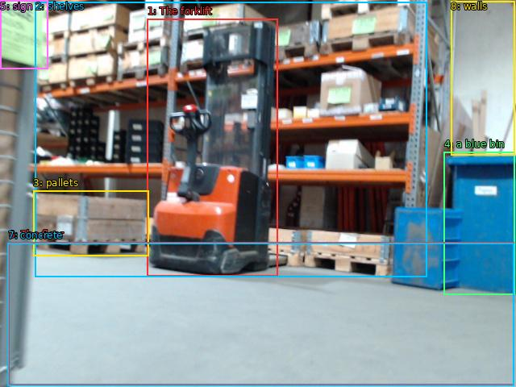
Celoten opis Florence in izvorni podatki
The image shows a forklift truck in a warehouse. The forklift is orange and black in color and is positioned in the center of the image. It is facing towards the right side of the frame and appears to be moving through the warehouse. In the background, there are shelves filled with cardboard boxes and pallets. On the left side, there is a blue bin and a green sign with writing on it. The floor is made of concrete and the walls are painted white.
Opis, regije in surovi odgovori Florenceqwen3.5:27b-q4_K_M
Q4_K_M · 6.250 s · response_received
Celoten surovi zapis{"objects":[{"id":1,"classification":"movable","reason":"A forklift is a vehicle designed to move."},{"id":2,"classification":"uncertain","reason":"Shelves may be fixed or movable; installation not visible."},{"id":3,"classification":"movable","reason":"Pallets are standard movable storage units."},{"id":4,"classification":"movable","reason":"Bins are portable containers easily repositioned."},{"id":5,"classification":"uncertain","reason":"Signs can be fixed or temporary; evidence unclear."},{"id":6,"classification":"fixed","reason":"The floor is a structural building element."},{"id":7,"classification":"fixed","reason":"Concrete describes the structural floor material."},{"id":8,"classification":"fixed","reason":"Walls are permanent structural building elements."}]}qwen3.5:4b-q4_K_M
Q4_K_M · 4.578 s · response_received
Celoten surovi zapis{"objects":[{"id":1,"classification":"movable","reason":"Forklifts are designed to be driven and repositioned."},{"id":2,"classification":"uncertain","reason":"Shelves could be fixed structures or movable units without clear evidence."},{"id":3,"classification":"movable","reason":"Pallets are standard items designed to be moved by machinery."},{"id":4,"classification":"movable","reason":"Bins are portable containers that can be pushed or carried."},{"id":5,"classification":"uncertain","reason":"Signs may be mounted permanently or placed temporarily without clear evidence."},{"id":6,"classification":"fixed","reason":"Floor is a structural building element integral to the space."},{"id":7,"classification":"fixed","reason":"Concrete is a structural material forming the floor surface."},{"id":8,"classification":"fixed","reason":"Walls are structural building elements integral to the space."}]}gemma3:27b-it-q4_K_M
Q4_K_M · 5.727 s · response_received
Celoten surovi zapis{"objects": [{"id": 1, "classification": "movable", "reason": "A forklift is driven and repositioned."}, {"id": 2, "classification": "fixed", "reason": "Shelves are typically installed as a permanent feature."}, {"id": 3, "classification": "movable", "reason": "Pallets are moved by forklifts or pallet jacks."}, {"id": 4, "classification": "movable", "reason": "A bin can be carried or wheeled around."}, {"id": 5, "classification": "fixed", "reason": "Signs are usually attached to walls or structures."}, {"id": 6, "classification": "fixed", "reason": "The floor is a structural building element."}, {"id": 7, "classification": "fixed", "reason": "Concrete is part of the floor structure."}, {"id": 8, "classification": "fixed", "reason": "Walls are structural building elements."}]}| Nabor | Okolje | ID regije | Oznaka Florence | qwen3.5:27b-q4_K_M | qwen3.5:4b-q4_K_M | gemma3:27b-it-q4_K_M | Primerjava |
|---|
| loco | loco-subset-1 | 1 | The forklift | movable | movable | movable | enaki razredi |
| loco | loco-subset-1 | 2 | shelves | uncertain | uncertain | fixed | različni razredi |
| loco | loco-subset-1 | 3 | pallets | movable | movable | movable | enaki razredi |
| loco | loco-subset-1 | 4 | a blue bin | movable | movable | movable | enaki razredi |
| loco | loco-subset-1 | 5 | sign | uncertain | uncertain | fixed | različni razredi |
| loco | loco-subset-1 | 6 | The floor | fixed | fixed | fixed | enaki razredi |
| loco | loco-subset-1 | 7 | concrete | fixed | fixed | fixed | enaki razredi |
| loco | loco-subset-1 | 8 | walls | fixed | fixed | fixed | enaki razredi |
loco-s1-33243
loco / loco-subset-1
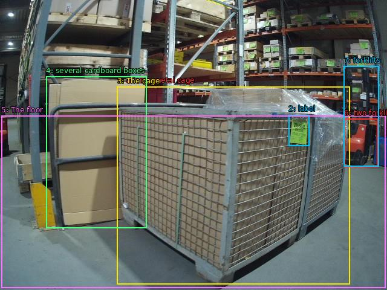
Celoten opis Florence in izvorni podatki
The image shows a large warehouse with multiple shelves and racks filled with boxes and other items. In the center of the image, there is a large metal cage with a green label on it. The cage appears to be made of metal wire mesh and is secured with a plastic wrap. On the left side of the cage, there are several cardboard boxes stacked on top of each other. The floor is made of concrete and there are two forklifts in the background. The warehouse is dimly lit with fluorescent lights.
Opis, regije in surovi odgovori Florenceqwen3.5:27b-q4_K_M
Q4_K_M · 3.326 s · response_received
Celoten surovi zapis{"objects":[{"id":1,"classification":"movable","reason":"A large metal cage can be moved by equipment."},{"id":2,"classification":"movable","reason":"Labels are small items easily carried or repositioned."},{"id":3,"classification":"movable","reason":"Cages are typically portable storage units in warehouses."},{"id":4,"classification":"movable","reason":"Cardboard boxes are designed to be carried and moved."},{"id":5,"classification":"fixed","reason":"The floor is a structural building element."},{"id":6,"classification":"movable","reason":"Forklifts are vehicles designed for movement and operation."},{"id":7,"classification":"movable","reason":"Forklifts are mobile industrial vehicles used for transport."}]}qwen3.5:4b-q4_K_M
Q4_K_M · 1.005 s · response_received
Celoten surovi zapis{"objects":[{"id":1,"classification":"movable","reason":"Cages can be moved or dismantled for relocation."},{"id":2,"classification":"uncertain","reason":"A label's permanence depends on its attachment method."},{"id":3,"classification":"movable","reason":"Same as ID 1; cages are generally movable objects."},{"id":4,"classification":"movable","reason":"Cardboard boxes can be easily carried or pushed."},{"id":5,"classification":"fixed","reason":"Floor is a structural building element."},{"id":6,"classification":"movable","reason":"Forklifts are vehicles designed to be moved."},{"id":7,"classification":"movable","reason":"Same as ID 6; forklifts are movable objects."}]
}gemma3:27b-it-q4_K_M
Q4_K_M · 4.493 s · response_received
Celoten surovi zapis{"objects": [{"id": 1, "classification": "movable", "reason": "Large cage likely repositioned by forklifts."}, {"id": 2, "classification": "movable", "reason": "A label can be moved."}, {"id": 3, "classification": "movable", "reason": "Same as ID 1, refers to the cage."}, {"id": 4, "classification": "movable", "reason": "Boxes are routinely moved in a warehouse."}, {"id": 5, "classification": "fixed", "reason": "Structural element of the building."}, {"id": 6, "classification": "movable", "reason": "Forklifts are driven and repositioned."}, {"id": 7, "classification": "movable", "reason": "Forklifts are driven and repositioned."}]}| Nabor | Okolje | ID regije | Oznaka Florence | qwen3.5:27b-q4_K_M | qwen3.5:4b-q4_K_M | gemma3:27b-it-q4_K_M | Primerjava |
|---|
| loco | loco-subset-1 | 1 | a large metal cage | movable | movable | movable | enaki razredi |
| loco | loco-subset-1 | 2 | label | movable | uncertain | movable | različni razredi |
| loco | loco-subset-1 | 3 | The cage | movable | movable | movable | enaki razredi |
| loco | loco-subset-1 | 4 | several cardboard boxes | movable | movable | movable | enaki razredi |
| loco | loco-subset-1 | 5 | The floor | fixed | fixed | fixed | enaki razredi |
| loco | loco-subset-1 | 6 | two forklifts | movable | movable | movable | enaki razredi |
| loco | loco-subset-1 | 7 | forklifts | movable | movable | movable | enaki razredi |
loco-s2-34608
loco / loco-subset-2
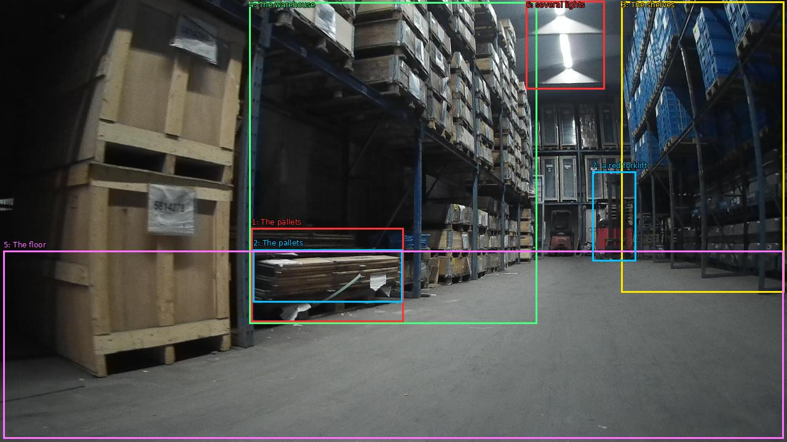
Celoten opis Florence in izvorni podatki
The image shows a large warehouse with rows of wooden pallets and shelves. The pallets are stacked on top of each other and are of different sizes and colors. The shelves are filled with various items such as boxes, crates, and other storage containers. The warehouse appears to be well-stocked and well-organized. The floor is made of concrete and there are several lights hanging from the ceiling. In the background, there is a red forklift parked in the middle of the warehouse. The overall atmosphere of the image is industrial and warehouse-like.
Opis, regije in surovi odgovori Florenceqwen3.5:27b-q4_K_M
Q4_K_M · 3.625 s · response_received
Celoten surovi zapis{"objects":[{"id":1,"classification":"movable","reason":"Pallets are portable storage units moved by forklifts."},{"id":2,"classification":"movable","reason":"Pallets are portable storage units moved by forklifts."},{"id":3,"classification":"uncertain","reason":"Shelves may be movable or permanently installed; evidence unclear."},{"id":4,"classification":"fixed","reason":"The warehouse is a structural building element."},{"id":5,"classification":"fixed","reason":"The floor is a structural building element."},{"id":6,"classification":"fixed","reason":"Lights are typically permanently installed ceiling fixtures."},{"id":7,"classification":"movable","reason":"A forklift is a vehicle designed to move freely."}]}qwen3.5:4b-q4_K_M
Q4_K_M · 0.960 s · response_received
Celoten surovi zapis{"objects":[{"id":1,"classification":"movable","reason":"Pallets can be easily moved by a forklift."},{"id":2,"classification":"movable","reason":"Pallets can be easily moved by a forklift."},{"id":3,"classification":"uncertain","reason":"Shelves are fixed unless wheels or disassembly evidence exists."},{"id":4,"classification":"fixed","reason":"The warehouse is the structural building itself."},{"id":5,"classification":"fixed","reason":"Concrete floor is a permanent structural element."},{"id":6,"classification":"movable","reason":"Lights can be removed and repositioned."},{"id":7,"classification":"movable","reason":"A forklift is a vehicle designed to move objects."}]}gemma3:27b-it-q4_K_M
Q4_K_M · 4.212 s · response_received
Celoten surovi zapis{"objects": [{"id": 1, "classification": "movable", "reason": "Pallets are routinely moved by forklifts."}, {"id": 2, "classification": "movable", "reason": "Pallets are routinely moved by forklifts."}, {"id": 3, "classification": "uncertain", "reason": "Shelves may be fixed or movable; no installation evidence."}, {"id": 4, "classification": "fixed", "reason": "The warehouse is a structural building element."}, {"id": 5, "classification": "fixed", "reason": "The floor is a structural building element."}, {"id": 6, "classification": "fixed", "reason": "Lights are permanently installed fixtures."}, {"id": 7, "classification": "movable", "reason": "A forklift is designed to be moved."}]}| Nabor | Okolje | ID regije | Oznaka Florence | qwen3.5:27b-q4_K_M | qwen3.5:4b-q4_K_M | gemma3:27b-it-q4_K_M | Primerjava |
|---|
| loco | loco-subset-2 | 1 | The pallets | movable | movable | movable | enaki razredi |
| loco | loco-subset-2 | 2 | The pallets | movable | movable | movable | enaki razredi |
| loco | loco-subset-2 | 3 | The shelves | uncertain | uncertain | uncertain | enaki razredi |
| loco | loco-subset-2 | 4 | The warehouse | fixed | fixed | fixed | enaki razredi |
| loco | loco-subset-2 | 5 | The floor | fixed | fixed | fixed | enaki razredi |
| loco | loco-subset-2 | 6 | several lights | fixed | movable | fixed | različni razredi |
| loco | loco-subset-2 | 7 | a red forklift | movable | movable | movable | enaki razredi |
loco-s2-34489
loco / loco-subset-2
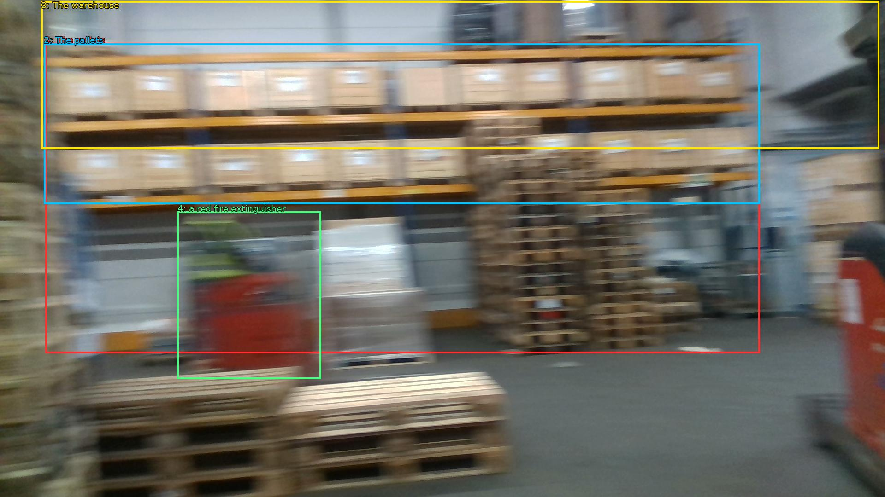
Celoten opis Florence in izvorni podatki
The image shows a large warehouse with multiple rows of wooden pallets stacked on top of each other. The pallets are arranged in neat rows and appear to be made of light-colored wood. The warehouse has a high ceiling with large windows, allowing natural light to enter the space. In the foreground, there is a red fire extinguisher and a stack of cardboard boxes. The image is slightly blurred, but it appears to be taken from a distance, giving it a sense of depth and dimension.
Opis, regije in surovi odgovori Florenceqwen3.5:27b-q4_K_M
Q4_K_M · 2.052 s · response_received
Celoten surovi zapis{"objects":[{"id":1,"classification":"movable","reason":"Pallets are portable storage units easily repositioned."},{"id":2,"classification":"movable","reason":"Pallets are portable storage units easily repositioned."},{"id":3,"classification":"fixed","reason":"Warehouse is a structural building element."},{"id":4,"classification":"movable","reason":"Fire extinguishers are portable safety devices."}]}qwen3.5:4b-q4_K_M
Q4_K_M · 0.637 s · response_received
Celoten surovi zapis{"objects":[{"id":1,"classification":"movable","reason":"Stacks of pallets can be moved by machinery or people."},{"id":2,"classification":"movable","reason":"Stacks of pallets can be moved by machinery or people."},{"id":3,"classification":"fixed","reason":"The warehouse is a structural building element."},{"id":4,"classification":"movable","reason":"A fire extinguisher can be carried or repositioned."}]}gemma3:27b-it-q4_K_M
Q4_K_M · 2.917 s · response_received
Celoten surovi zapis{"objects": [{"id": 1, "classification": "movable", "reason": "Pallets are repositioned during warehouse operations."}, {"id": 2, "classification": "movable", "reason": "Pallets are repositioned during warehouse operations."}, {"id": 3, "classification": "fixed", "reason": "The warehouse is a structural building element."}, {"id": 4, "classification": "movable", "reason": "Fire extinguishers are carried/repositioned for use."}]}| Nabor | Okolje | ID regije | Oznaka Florence | qwen3.5:27b-q4_K_M | qwen3.5:4b-q4_K_M | gemma3:27b-it-q4_K_M | Primerjava |
|---|
| loco | loco-subset-2 | 1 | The pallets | movable | movable | movable | enaki razredi |
| loco | loco-subset-2 | 2 | The pallets | movable | movable | movable | enaki razredi |
| loco | loco-subset-2 | 3 | The warehouse | fixed | fixed | fixed | enaki razredi |
| loco | loco-subset-2 | 4 | a red fire extinguisher | movable | movable | movable | enaki razredi |
loco-s3-36694
loco / loco-subset-3
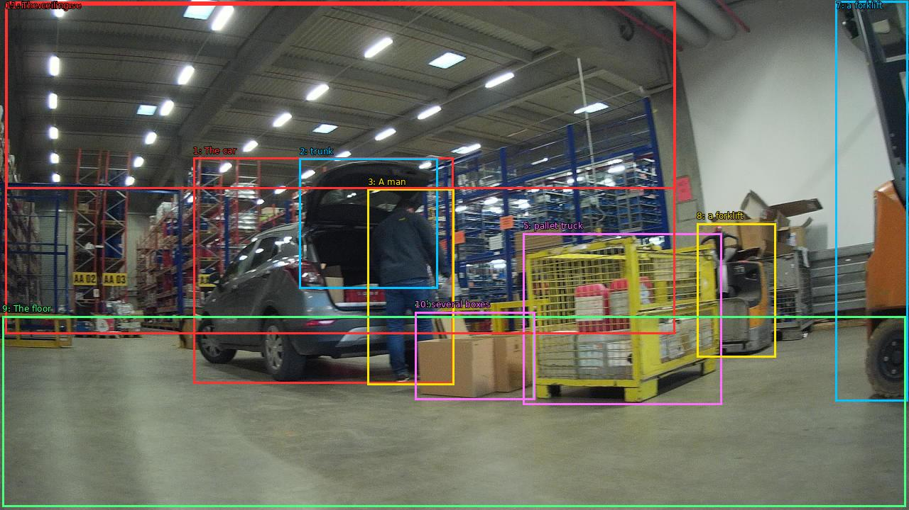
Celoten opis Florence in izvorni podatki
The image shows a large warehouse with a car parked in the center. The car is black and has its trunk open, revealing the interior of the car. A man is standing next to the car, loading boxes into a yellow pallet truck. The warehouse is filled with shelves and racks, and there is a forklift on the right side of the image. The floor is made of concrete and there are several boxes and pallets scattered around the warehouse. The ceiling is high and has multiple rows of lights.
Opis, regije in surovi odgovori Florenceqwen3.5:27b-q4_K_M
Q4_K_M · 6.305 s · response_received
Celoten surovi zapis{"objects":[{"id":1,"classification":"movable","reason":"Cars are vehicles designed to be driven and relocated."},{"id":2,"classification":"movable","reason":"Car trunk is part of a movable vehicle."},{"id":3,"classification":"movable","reason":"People can move freely and change position."},{"id":4,"classification":"movable","reason":"Boxes are easily carried or pushed by people."},{"id":5,"classification":"movable","reason":"Pallet trucks are designed to be pushed and moved."},{"id":6,"classification":"fixed","reason":"The warehouse is a structural building element."},{"id":7,"classification":"movable","reason":"Forklifts are mobile machinery used for moving goods."},{"id":8,"classification":"movable","reason":"Forklifts are mobile machinery used for moving goods."},{"id":9,"classification":"fixed","reason":"The floor is a structural building element."},{"id":10,"classification":"movable","reason":"Boxes are easily carried or pushed by people."},{"id":11,"classification":"fixed","reason":"The ceiling is a structural building element."}]}qwen3.5:4b-q4_K_M
Q4_K_M · 1.777 s · response_received
Celoten surovi zapis{"objects":[{"id":1,"classification":"movable","reason":"A car can be driven or pushed to a new location."},{"id":2,"classification":"movable","reason":"The trunk is part of the movable car."},{"id":3,"classification":"movable","reason":"A person can move and change position freely."},{"id":4,"classification":"movable","reason":"Boxes are easily carried or pushed to different spots."},{"id":5,"classification":"movable","reason":"A pallet truck is designed to be pushed and repositioned."},{"id":6,"classification":"fixed","reason":"The warehouse structure is a permanent building element."},{"id":7,"classification":"movable","reason":"A forklift is a vehicle that can be driven or pushed."},{"id":8,"classification":"movable","reason":"A forklift is a vehicle that can be driven or pushed."},{"id":9,"classification":"fixed","reason":"The floor is a structural building element."},{"id":10,"classification":"movable","reason":"Boxes are easily carried or pushed to different spots."},{"id":11,"classification":"fixed","reason":"The ceiling is a structural building element."}]
}gemma3:27b-it-q4_K_M
Q4_K_M · 5.741 s · response_received
Celoten surovi zapis{"objects": [{"id": 1, "classification": "movable", "reason": "A car can be driven and repositioned."}, {"id": 2, "classification": "movable", "reason": "Part of a movable vehicle."}, {"id": 3, "classification": "movable", "reason": "People can move around freely."}, {"id": 4, "classification": "movable", "reason": "Boxes are carried or moved."}, {"id": 5, "classification": "movable", "reason": "Used to transport items; easily repositioned."}, {"id": 6, "classification": "fixed", "reason": "Structural building element."}, {"id": 7, "classification": "movable", "reason": "Forklifts are driven and repositioned."}, {"id": 8, "classification": "movable", "reason": "Forklifts are driven and repositioned."}, {"id": 9, "classification": "fixed", "reason": "Structural part of the building."}, {"id": 10, "classification": "movable", "reason": "Boxes are carried or moved."}, {"id": 11, "classification": "fixed", "reason": "Structural part of the building."}]}| Nabor | Okolje | ID regije | Oznaka Florence | qwen3.5:27b-q4_K_M | qwen3.5:4b-q4_K_M | gemma3:27b-it-q4_K_M | Primerjava |
|---|
| loco | loco-subset-3 | 1 | The car | movable | movable | movable | enaki razredi |
| loco | loco-subset-3 | 2 | trunk | movable | movable | movable | enaki razredi |
| loco | loco-subset-3 | 3 | A man | movable | movable | movable | enaki razredi |
| loco | loco-subset-3 | 4 | boxes | movable | movable | movable | enaki razredi |
| loco | loco-subset-3 | 5 | pallet truck | movable | movable | movable | enaki razredi |
| loco | loco-subset-3 | 6 | The warehouse | fixed | fixed | fixed | enaki razredi |
| loco | loco-subset-3 | 7 | a forklift | movable | movable | movable | enaki razredi |
| loco | loco-subset-3 | 8 | a forklift | movable | movable | movable | enaki razredi |
| loco | loco-subset-3 | 9 | The floor | fixed | fixed | fixed | enaki razredi |
| loco | loco-subset-3 | 10 | several boxes | movable | movable | movable | enaki razredi |
| loco | loco-subset-3 | 11 | The ceiling | fixed | fixed | fixed | enaki razredi |
loco-s3-36540
loco / loco-subset-3

Celoten opis Florence in izvorni podatki
The image shows a large warehouse with rows of red metal shelves. The shelves are filled with various items such as boxes, pallets, and other storage containers. The floor is made of concrete and there is a forklift on the right side of the image. The warehouse appears to be well-maintained and well-organized. The image is taken from a low angle, looking up at the shelves.
Opis, regije in surovi odgovori Florenceqwen3.5:27b-q4_K_M
Q4_K_M · 2.022 s · response_received
Celoten surovi zapis{"objects":[{"id":1,"classification":"uncertain","reason":"Shelves lack visible permanent installation evidence."},{"id":2,"classification":"fixed","reason":"Structural building element of the warehouse."},{"id":3,"classification":"movable","reason":"Forklift is designed to be driven and repositioned."},{"id":4,"classification":"fixed","reason":"Warehouse is a structural building element."}]}qwen3.5:4b-q4_K_M
Q4_K_M · 0.605 s · response_received
Celoten surovi zapis{"objects":[{"id":1,"classification":"uncertain","reason":"Shelves may be fixed or movable without installation proof."},{"id":2,"classification":"fixed","reason":"Floor is a structural building element."},{"id":3,"classification":"movable","reason":"A forklift can be driven to different locations."},{"id":4,"classification":"fixed","reason":"Warehouse is a structural building element."}]}gemma3:27b-it-q4_K_M
Q4_K_M · 3.197 s · response_received
Celoten surovi zapis{"objects": [{"id": 1, "classification": "uncertain", "reason": "Installation not established; shelves are movable in warehouses."}, {"id": 2, "classification": "fixed", "reason": "Structural element of the building."}, {"id": 3, "classification": "movable", "reason": "A forklift is driven and repositioned."}, {"id": 4, "classification": "fixed", "reason": "The warehouse is a structural building element."}]}| Nabor | Okolje | ID regije | Oznaka Florence | qwen3.5:27b-q4_K_M | qwen3.5:4b-q4_K_M | gemma3:27b-it-q4_K_M | Primerjava |
|---|
| loco | loco-subset-3 | 1 | The shelves | uncertain | uncertain | uncertain | enaki razredi |
| loco | loco-subset-3 | 2 | The floor | fixed | fixed | fixed | enaki razredi |
| loco | loco-subset-3 | 3 | a forklift | movable | movable | movable | enaki razredi |
| loco | loco-subset-3 | 4 | The warehouse | fixed | fixed | fixed | enaki razredi |
loco-s4-31835
loco / loco-subset-4

Celoten opis Florence in izvorni podatki
The image shows a large warehouse with rows of pallets and shelves. The pallets are arranged in a neat and orderly manner, and the shelves are filled with boxes of various sizes and colors. The boxes are stacked on top of each other and have the word "POTT" written on them in white letters. The warehouse appears to be well-stocked with various items, and there are other shelves and racks visible in the background. The floor is made of concrete and the ceiling is high with overhead lights. The overall atmosphere of the warehouse is industrial and organized.
Opis, regije in surovi odgovori Florenceqwen3.5:27b-q4_K_M
Q4_K_M · 2.083 s · response_received
Celoten surovi zapis{"objects":[{"id":1,"classification":"movable","reason":"Pallets are designed to be moved by forklifts."},{"id":2,"classification":"movable","reason":"Boxes can be carried or repositioned in normal use."},{"id":3,"classification":"movable","reason":"Boxes are portable objects easily moved by people."},{"id":4,"classification":"fixed","reason":"Concrete floor is a structural building element."}]}qwen3.5:4b-q4_K_M
Q4_K_M · 0.583 s · response_received
Celoten surovi zapis{"objects":[{"id":1,"classification":"movable","reason":"Pallets can be easily moved or repositioned."},{"id":2,"classification":"movable","reason":"Boxes are standard movable objects in a warehouse."},{"id":3,"classification":"movable","reason":"Boxes are standard movable objects in a warehouse."},{"id":4,"classification":"fixed","reason":"The floor is a structural building element."}]}gemma3:27b-it-q4_K_M
Q4_K_M · 3.023 s · response_received
Celoten surovi zapis{"objects": [{"id": 1, "classification": "movable", "reason": "Pallets are moved by forklifts/people."}, {"id": 2, "classification": "movable", "reason": "Boxes are carried or moved during logistics."}, {"id": 3, "classification": "movable", "reason": "Boxes are carried or moved during logistics."}, {"id": 4, "classification": "fixed", "reason": "Structural element of the building."}]}| Nabor | Okolje | ID regije | Oznaka Florence | qwen3.5:27b-q4_K_M | qwen3.5:4b-q4_K_M | gemma3:27b-it-q4_K_M | Primerjava |
|---|
| loco | loco-subset-4 | 1 | The pallets | movable | movable | movable | enaki razredi |
| loco | loco-subset-4 | 2 | The boxes | movable | movable | movable | enaki razredi |
| loco | loco-subset-4 | 3 | boxes | movable | movable | movable | enaki razredi |
| loco | loco-subset-4 | 4 | The floor | fixed | fixed | fixed | enaki razredi |
loco-s4-32693
loco / loco-subset-4

Celoten opis Florence in izvorni podatki
The image shows a large warehouse with a high ceiling and rows of shelves. The floor is made of concrete and there are several forklifts parked in the center of the room. On the left side of the image, there is a yellow forklift truck with a black cab and a red and white logo on the side. The forklift is moving through the warehouse, and on the right side, there are stacks of boxes and pallets. The warehouse appears to be well-stocked with various items for sale. The overall atmosphere of the space is industrial and busy.
Opis, regije in surovi odgovori Florenceqwen3.5:27b-q4_K_M
Q4_K_M · 4.265 s · response_received
Celoten surovi zapis{"objects":[{"id":1,"classification":"fixed","reason":"Structural building element forming the ground."},{"id":2,"classification":"movable","reason":"Vehicles designed to be driven and repositioned."},{"id":3,"classification":"movable","reason":"Forklift is a mobile industrial vehicle."},{"id":4,"classification":"movable","reason":"Forklift is a mobile industrial vehicle."},{"id":5,"classification":"movable","reason":"Part of a movable forklift vehicle."},{"id":6,"classification":"movable","reason":"Logo on a movable forklift vehicle."},{"id":7,"classification":"movable","reason":"Forklift is a mobile industrial vehicle."},{"id":8,"classification":"movable","reason":"Forklift is a mobile industrial vehicle."},{"id":9,"classification":"movable","reason":"Stacks of items can be moved by machinery."},{"id":10,"classification":"movable","reason":"Boxes are easily carried or transported."},{"id":11,"classification":"fixed","reason":"The warehouse is the permanent building structure."}]}qwen3.5:4b-q4_K_M
Q4_K_M · 1.442 s · response_received
Celoten surovi zapis{"objects":[{"id":1,"classification":"fixed","reason":"Structural floor element of the building."},{"id":2,"classification":"movable","reason":"Forklifts are designed to be moved and repositioned."},{"id":3,"classification":"movable","reason":"A forklift truck can be pushed or driven elsewhere."},{"id":4,"classification":"movable","reason":"A forklift truck can be pushed or driven elsewhere."},{"id":5,"classification":"movable","reason":"Cabs are part of movable vehicles like forklifts."},{"id":6,"classification":"uncertain","reason":"Logo attachment status is not clearly established."},{"id":7,"classification":"movable","reason":"A forklift can be pushed or driven to a new location."},{"id":8,"classification":"movable","reason":"A forklift can be pushed or driven to a new location."},{"id":9,"classification":"movable","reason":"Stacks of items can be moved or repositioned."},{"id":10,"classification":"movable","reason":"Boxes are easily carried, pushed, or repositioned."},{"id":11,"classification":"fixed","reason":"The warehouse is a structural building element."}]}gemma3:27b-it-q4_K_M
Q4_K_M · 5.707 s · response_received
Celoten surovi zapis{"objects": [{"id": 1, "classification": "fixed", "reason": "Structural building element."}, {"id": 2, "classification": "movable", "reason": "Can be driven and repositioned."}, {"id": 3, "classification": "movable", "reason": "A vehicle that can be driven."}, {"id": 4, "classification": "movable", "reason": "A vehicle that can be driven."}, {"id": 5, "classification": "movable", "reason": "Part of a movable forklift."}, {"id": 6, "classification": "movable", "reason": "Attached to a movable forklift."}, {"id": 7, "classification": "movable", "reason": "A vehicle that can be driven."}, {"id": 8, "classification": "movable", "reason": "A vehicle that can be driven."}, {"id": 9, "classification": "movable", "reason": "Can be rearranged or moved."}, {"id": 10, "classification": "movable", "reason": "Can be rearranged or moved."}, {"id": 11, "classification": "fixed", "reason": "Structural building element."}]}| Nabor | Okolje | ID regije | Oznaka Florence | qwen3.5:27b-q4_K_M | qwen3.5:4b-q4_K_M | gemma3:27b-it-q4_K_M | Primerjava |
|---|
| loco | loco-subset-4 | 1 | The floor | fixed | fixed | fixed | enaki razredi |
| loco | loco-subset-4 | 2 | several forklifts | movable | movable | movable | enaki razredi |
| loco | loco-subset-4 | 3 | a yellow forklift truck | movable | movable | movable | enaki razredi |
| loco | loco-subset-4 | 4 | a yellow forklift truck | movable | movable | movable | enaki razredi |
| loco | loco-subset-4 | 5 | cab | movable | movable | movable | enaki razredi |
| loco | loco-subset-4 | 6 | logo | movable | uncertain | movable | različni razredi |
| loco | loco-subset-4 | 7 | The forklift | movable | movable | movable | enaki razredi |
| loco | loco-subset-4 | 8 | The forklift | movable | movable | movable | enaki razredi |
| loco | loco-subset-4 | 9 | stacks | movable | movable | movable | enaki razredi |
| loco | loco-subset-4 | 10 | boxes | movable | movable | movable | enaki razredi |
| loco | loco-subset-4 | 11 | The warehouse | fixed | fixed | fixed | enaki razredi |
loco-s5-35448
loco / loco-subset-5

Celoten opis Florence in izvorni podatki
The image shows a man walking in a large warehouse. He is wearing a yellow high visibility vest, blue jeans, and black shoes. He appears to be in motion, as he is walking towards the right side of the image. The warehouse is filled with shelves and racks, and there are several orange forklifts in the background. The floor is made of concrete, and the walls are painted a light blue color. The man is walking with purpose, and his body is slightly blurred, suggesting that he is moving quickly.
Opis, regije in surovi odgovori Florenceqwen3.5:27b-q4_K_M
Q4_K_M · 2.787 s · response_received
Celoten surovi zapis{"objects":[{"id":1,"classification":"movable","reason":"A person can move freely."},{"id":2,"classification":"movable","reason":"Clothing is worn and carried by a person."},{"id":3,"classification":"fixed","reason":"Structural building element of the warehouse."},{"id":4,"classification":"movable","reason":"Forklifts are vehicles designed to be driven."},{"id":5,"classification":"fixed","reason":"Structural part of the building."},{"id":6,"classification":"movable","reason":"A person can move freely."}]}qwen3.5:4b-q4_K_M
Q4_K_M · 0.852 s · response_received
Celoten surovi zapis{"objects":[{"id":1,"classification":"movable","reason":"A person can move freely in the environment."},{"id":2,"classification":"movable","reason":"Clothing is easily carried or repositioned."},{"id":3,"classification":"fixed","reason":"Structural building element defining the space."},{"id":4,"classification":"movable","reason":"Forklifts are vehicles designed to be moved."},{"id":5,"classification":"fixed","reason":"Structural floor surface of the building."},{"id":6,"classification":"movable","reason":"A person can move freely in the environment."}]}gemma3:27b-it-q4_K_M
Q4_K_M · 3.797 s · response_received
Celoten surovi zapis{"objects": [{"id": 1, "classification": "movable", "reason": "A person can move around freely."}, {"id": 2, "classification": "movable", "reason": "Clothing is carried or worn."}, {"id": 3, "classification": "fixed", "reason": "The warehouse is a structural building element."}, {"id": 4, "classification": "movable", "reason": "Forklifts are repositioned during operation."}, {"id": 5, "classification": "fixed", "reason": "The floor is a structural building element."}, {"id": 6, "classification": "movable", "reason": "A person can move around freely."}]}| Nabor | Okolje | ID regije | Oznaka Florence | qwen3.5:27b-q4_K_M | qwen3.5:4b-q4_K_M | gemma3:27b-it-q4_K_M | Primerjava |
|---|
| loco | loco-subset-5 | 1 | man | movable | movable | movable | enaki razredi |
| loco | loco-subset-5 | 2 | jeans | movable | movable | movable | enaki razredi |
| loco | loco-subset-5 | 3 | The warehouse | fixed | fixed | fixed | enaki razredi |
| loco | loco-subset-5 | 4 | several orange forklifts | movable | movable | movable | enaki razredi |
| loco | loco-subset-5 | 5 | The floor | fixed | fixed | fixed | enaki razredi |
| loco | loco-subset-5 | 6 | The man | movable | movable | movable | enaki razredi |
loco-s5-35671
loco / loco-subset-5

Celoten opis Florence in izvorni podatki
The image shows a large warehouse with rows of shelves and racks filled with cardboard boxes. The warehouse appears to be a large industrial space with high ceilings and bright lights. In the center of the image, there is a person walking through the warehouse, wearing a red jacket and black pants. The person is carrying a large red crate in their hand and is walking towards the right side of the frame. The image is taken from a low angle, giving a sense of movement and energy.
Opis, regije in surovi odgovori Florenceqwen3.5:27b-q4_K_M
Q4_K_M · 4.685 s · response_received
Celoten surovi zapis{"objects":[{"id":1,"classification":"fixed","reason":"Warehouse is a structural building element."},{"id":2,"classification":"movable","reason":"A person can walk and change position."},{"id":3,"classification":"movable","reason":"A person can walk and change position."},{"id":4,"classification":"movable","reason":"Clothing can be carried or repositioned."},{"id":5,"classification":"movable","reason":"Clothing can be carried or repositioned."},{"id":6,"classification":"movable","reason":"A person can walk and change position."},{"id":7,"classification":"movable","reason":"A crate can be carried or pushed."}]}qwen3.5:4b-q4_K_M
Q4_K_M · 0.962 s · response_received
Celoten surovi zapis{"objects":[{"id":1,"classification":"uncertain","reason":"Warehouse structure is permanent but attachment evidence is missing."},{"id":2,"classification":"movable","reason":"A person can move freely through the warehouse space."},{"id":3,"classification":"movable","reason":"A person can move freely through the warehouse space."},{"id":4,"classification":"movable","reason":"Clothing worn by a person is not permanently fixed."},{"id":5,"classification":"movable","reason":"Clothing worn by a person is not permanently fixed."},{"id":6,"classification":"movable","reason":"A person can move freely through the warehouse space."},{"id":7,"classification":"movable","reason":"A crate carried by a person can be repositioned easily."}]}gemma3:27b-it-q4_K_M
Q4_K_M · 4.222 s · response_received
Celoten surovi zapis{"objects": [{"id": 1, "classification": "fixed", "reason": "Structural element of the building."}, {"id": 2, "classification": "movable", "reason": "A person can relocate themselves."}, {"id": 3, "classification": "movable", "reason": "A person can relocate themselves."}, {"id": 4, "classification": "movable", "reason": "Worn by a person; easily repositioned."}, {"id": 5, "classification": "movable", "reason": "Worn by a person; easily repositioned."}, {"id": 6, "classification": "movable", "reason": "A person can relocate themselves."}, {"id": 7, "classification": "movable", "reason": "Can be carried or moved with equipment."}]}| Nabor | Okolje | ID regije | Oznaka Florence | qwen3.5:27b-q4_K_M | qwen3.5:4b-q4_K_M | gemma3:27b-it-q4_K_M | Primerjava |
|---|
| loco | loco-subset-5 | 1 | The warehouse | fixed | uncertain | fixed | različni razredi |
| loco | loco-subset-5 | 2 | a person | movable | movable | movable | enaki razredi |
| loco | loco-subset-5 | 3 | a person | movable | movable | movable | enaki razredi |
| loco | loco-subset-5 | 4 | a red jacket | movable | movable | movable | enaki razredi |
| loco | loco-subset-5 | 5 | black pants | movable | movable | movable | enaki razredi |
| loco | loco-subset-5 | 6 | The person | movable | movable | movable | enaki razredi |
| loco | loco-subset-5 | 7 | a large red crate | movable | movable | movable | enaki razredi |
loco-s1-33088
loco / loco-subset-1

Celoten opis Florence in izvorni podatki
The image shows a large warehouse with rows of shelves on both sides. The shelves are filled with various items such as boxes, containers, and other household items. The floor is made of concrete and there is a forklift parked on the right side of the image. The warehouse appears to be well-lit with overhead lights. The overall atmosphere of the space is organized and well-stocked.
Opis, regije in surovi odgovori Florenceqwen3.5:27b-q4_K_M
Q4_K_M · 13.345 s · response_received
Celoten surovi zapis{"objects":[{"id":1,"classification":"uncertain","reason":"Shelves may be movable or fixed; no installation evidence."},{"id":2,"classification":"uncertain","reason":"Shelves may be movable or fixed; no installation evidence."},{"id":3,"classification":"fixed","reason":"Structural building element of the warehouse."},{"id":4,"classification":"movable","reason":"Forklift is designed to be driven and repositioned."},{"id":5,"classification":"fixed","reason":"The warehouse is a structural building element."}]}qwen3.5:4b-q4_K_M
Q4_K_M · 3.898 s · response_received
Celoten surovi zapis{"objects":[{"id":1,"classification":"uncertain","reason":"Shelves are uncertain without visible permanent installation evidence."},{"id":2,"classification":"uncertain","reason":"Shelves are uncertain without visible permanent installation evidence."},{"id":3,"classification":"fixed","reason":"Floor is a structural building element."},{"id":4,"classification":"movable","reason":"A forklift can be pushed or repositioned in normal use."},{"id":5,"classification":"fixed","reason":"The warehouse is a structural building element."}]}gemma3:27b-it-q4_K_M
Q4_K_M · 11.920 s · response_received
Celoten surovi zapis{"objects": [{"id": 1, "classification": "movable", "reason": "Shelves can be repositioned or disassembled."}, {"id": 2, "classification": "movable", "reason": "Shelves can be repositioned or disassembled."}, {"id": 3, "classification": "fixed", "reason": "Structural element of the building."}, {"id": 4, "classification": "movable", "reason": "A forklift is driven and repositioned."}, {"id": 5, "classification": "fixed", "reason": "The warehouse is a permanent structure."}]}| Nabor | Okolje | ID regije | Oznaka Florence | qwen3.5:27b-q4_K_M | qwen3.5:4b-q4_K_M | gemma3:27b-it-q4_K_M | Primerjava |
|---|
| loco | loco-subset-1 | 1 | The shelves | uncertain | uncertain | movable | različni razredi |
| loco | loco-subset-1 | 2 | The shelves | uncertain | uncertain | movable | različni razredi |
| loco | loco-subset-1 | 3 | The floor | fixed | fixed | fixed | enaki razredi |
| loco | loco-subset-1 | 4 | a forklift | movable | movable | movable | enaki razredi |
| loco | loco-subset-1 | 5 | The warehouse | fixed | fixed | fixed | enaki razredi |
loco-s1-33089
loco / loco-subset-1

Celoten opis Florence in izvorni podatki
The image shows a long row of orange metal shelves in a warehouse. The shelves are filled with red plastic bins and boxes of various sizes and colors. The bins are arranged in a neat and orderly manner, and the boxes are neatly stacked on top of each other. The warehouse appears to be well-stocked with various items, and there are a few people visible in the background. The floor is made of concrete and there is a large window on the left side of the image, allowing natural light to enter the space.
Opis, regije in surovi odgovori Florenceqwen3.5:27b-q4_K_M
Q4_K_M · 2.677 s · response_received
Celoten surovi zapis{"objects":[{"id":1,"classification":"movable","reason":"Bins are portable containers easily repositioned."},{"id":2,"classification":"movable","reason":"Boxes are portable items easily moved."},{"id":3,"classification":"fixed","reason":"Warehouse is a structural building element."},{"id":4,"classification":"movable","reason":"People can move freely and change location."},{"id":5,"classification":"fixed","reason":"Floor is a structural building element."},{"id":6,"classification":"fixed","reason":"Window is an installed room element."}]}qwen3.5:4b-q4_K_M
Q4_K_M · 0.798 s · response_received
Celoten surovi zapis{"objects":[{"id":1,"classification":"movable","reason":"Bins can be moved or replaced in normal use."},{"id":2,"classification":"movable","reason":"Boxes are standard movable objects."},{"id":3,"classification":"fixed","reason":"The warehouse is a structural building element."},{"id":4,"classification":"movable","reason":"People can move freely and change position."},{"id":5,"classification":"fixed","reason":"Concrete floor is a structural building element."},{"id":6,"classification":"fixed","reason":"Windows are installed room elements, not movable."}]}gemma3:27b-it-q4_K_M
Q4_K_M · 3.706 s · response_received
Celoten surovi zapis{"objects": [{"id": 1, "classification": "movable", "reason": "Bins can be moved and rearranged."}, {"id": 2, "classification": "movable", "reason": "Boxes are typically carried or repositioned."}, {"id": 3, "classification": "fixed", "reason": "The warehouse is a structural building element."}, {"id": 4, "classification": "movable", "reason": "People can walk around and change position."}, {"id": 5, "classification": "fixed", "reason": "The floor is a structural building element."}, {"id": 6, "classification": "fixed", "reason": "A window is an installed room element."}]}| Nabor | Okolje | ID regije | Oznaka Florence | qwen3.5:27b-q4_K_M | qwen3.5:4b-q4_K_M | gemma3:27b-it-q4_K_M | Primerjava |
|---|
| loco | loco-subset-1 | 1 | The bins | movable | movable | movable | enaki razredi |
| loco | loco-subset-1 | 2 | the boxes | movable | movable | movable | enaki razredi |
| loco | loco-subset-1 | 3 | The warehouse | fixed | fixed | fixed | enaki razredi |
| loco | loco-subset-1 | 4 | a few people | movable | movable | movable | enaki razredi |
| loco | loco-subset-1 | 5 | The floor | fixed | fixed | fixed | enaki razredi |
| loco | loco-subset-1 | 6 | a large window | fixed | fixed | fixed | enaki razredi |
loco-s1-33127
loco / loco-subset-1

Celoten opis Florence in izvorni podatki
The image shows a large warehouse with multiple shelves and racks. The shelves are filled with various items such as cardboard boxes, pallets, and other storage containers. On the left side of the image, there is a large metal rack with a yellow caution tape attached to it. In the center of the room, there are several stacks of cardboard boxes and pallets stacked on top of each other. The floor is made of concrete and there are a few other items scattered around the room. The walls are painted white and the ceiling is high with pipes and ducts. There is a blue trash can in the background. The overall atmosphere of the space is cluttered and organized.
Opis, regije in surovi odgovori Florenceqwen3.5:27b-q4_K_M
Q4_K_M · 4.518 s · response_received
Celoten surovi zapis{"objects":[{"id":1,"classification":"uncertain","reason":"Shelves may be movable or permanently installed."},{"id":2,"classification":"uncertain","reason":"Large rack installation status is not established."},{"id":3,"classification":"movable","reason":"Tape can be easily removed and repositioned."},{"id":4,"classification":"movable","reason":"Stacks of items are easily moved or rearranged."},{"id":5,"classification":"movable","reason":"Stacks of items are easily moved or rearranged."},{"id":6,"classification":"fixed","reason":"Structural building element forming the ground surface."},{"id":7,"classification":"fixed","reason":"Structural building element forming the ground surface."},{"id":8,"classification":"fixed","reason":"Structural building element enclosing the room."},{"id":9,"classification":"fixed","reason":"Structural building element enclosing the room."},{"id":10,"classification":"movable","reason":"Trash cans are typically portable and repositionable."}]}qwen3.5:4b-q4_K_M
Q4_K_M · 1.268 s · response_received
Celoten surovi zapis{"objects":[{"id":1,"classification":"uncertain","reason":"Shelves could be fixed or movable without clear evidence."},{"id":2,"classification":"movable","reason":"Metal racks are typically movable objects in warehouses."},{"id":3,"classification":"movable","reason":"Tape is a small item that can be easily moved."},{"id":4,"classification":"movable","reason":"Stacks of boxes or pallets can be repositioned."},{"id":5,"classification":"movable","reason":"Stacks of boxes or pallets can be repositioned."},{"id":6,"classification":"fixed","reason":"Floor is a structural building element."},{"id":7,"classification":"fixed","reason":"Floor is a structural building element."},{"id":8,"classification":"fixed","reason":"Walls are structural building elements."},{"id":9,"classification":"fixed","reason":"Walls are structural building elements."},{"id":10,"classification":"movable","reason":"Trash cans are movable objects that can be carried."}]}gemma3:27b-it-q4_K_M
Q4_K_M · 11.989 s · response_received
Celoten surovi zapis{"objects": [{"id": 1, "classification": "uncertain", "reason": "Shelves may be fixed or movable, unclear."}, {"id": 2, "classification": "movable", "reason": "Metal rack can be repositioned."}, {"id": 3, "classification": "movable", "reason": "Tape is easily moved or removed."}, {"id": 4, "classification": "movable", "reason": "Stacks of boxes are easily rearranged."}, {"id": 5, "classification": "movable", "reason": "Stacks of boxes are easily rearranged."}, {"id": 6, "classification": "fixed", "reason": "Structural element of the building."}, {"id": 7, "classification": "fixed", "reason": "Structural element of the building."}, {"id": 8, "classification": "fixed", "reason": "Structural element of the building."}, {"id": 9, "classification": "fixed", "reason": "Structural element of the building."}, {"id": 10, "classification": "movable", "reason": "Trash can is easily moved."}]}| Nabor | Okolje | ID regije | Oznaka Florence | qwen3.5:27b-q4_K_M | qwen3.5:4b-q4_K_M | gemma3:27b-it-q4_K_M | Primerjava |
|---|
| loco | loco-subset-1 | 1 | The shelves | uncertain | uncertain | uncertain | enaki razredi |
| loco | loco-subset-1 | 2 | a large metal rack | uncertain | movable | movable | različni razredi |
| loco | loco-subset-1 | 3 | tape | movable | movable | movable | enaki razredi |
| loco | loco-subset-1 | 4 | several stacks | movable | movable | movable | enaki razredi |
| loco | loco-subset-1 | 5 | several stacks | movable | movable | movable | enaki razredi |
| loco | loco-subset-1 | 6 | The floor | fixed | fixed | fixed | enaki razredi |
| loco | loco-subset-1 | 7 | The floor | fixed | fixed | fixed | enaki razredi |
| loco | loco-subset-1 | 8 | The walls | fixed | fixed | fixed | enaki razredi |
| loco | loco-subset-1 | 9 | The walls | fixed | fixed | fixed | enaki razredi |
| loco | loco-subset-1 | 10 | a blue trash can | movable | movable | movable | enaki razredi |
loco-s1-33158
loco / loco-subset-1

Celoten opis Florence in izvorni podatki
The image shows a large warehouse with multiple stacks of metal cages. The cages are stacked on top of each other and are arranged in a neat and orderly manner. In the center of the image, there is an orange forklift truck parked in front of one of the cages. On the right side of the forklift, there are several stacks of cardboard boxes and pallets. The warehouse appears to be well-stocked with various tools and equipment. The floor is made of concrete and there are large windows on the left side, allowing natural light to enter the space.
Opis, regije in surovi odgovori Florenceqwen3.5:27b-q4_K_M
Q4_K_M · 2.777 s · response_received
Celoten surovi zapis{"objects":[{"id":1,"classification":"movable","reason":"Cages are movable storage units."},{"id":2,"classification":"movable","reason":"Forklift is a mobile vehicle."},{"id":3,"classification":"movable","reason":"Stacks of items can be rearranged."},{"id":4,"classification":"fixed","reason":"Warehouse is the building structure itself."},{"id":5,"classification":"fixed","reason":"Floor is a structural building element."},{"id":6,"classification":"fixed","reason":"Windows are installed room elements."}]}qwen3.5:4b-q4_K_M
Q4_K_M · 0.861 s · response_received
Celoten surovi zapis{"objects":[{"id":1,"classification":"movable","reason":"Cages can be stacked or moved by a forklift."},{"id":2,"classification":"movable","reason":"A forklift truck is designed to move objects."},{"id":3,"classification":"movable","reason":"Stacks of boxes/pallets can be repositioned."},{"id":4,"classification":"fixed","reason":"The warehouse structure itself is permanent."},{"id":5,"classification":"fixed","reason":"Concrete floor is a structural building element."},{"id":6,"classification":"fixed","reason":"Windows are installed room elements, not relocatable."}]}gemma3:27b-it-q4_K_M
Q4_K_M · 8.090 s · response_received
Celoten surovi zapis{"objects": [{"id": 1, "classification": "movable", "reason": "Cages can be moved by forklift or people."}, {"id": 2, "classification": "movable", "reason": "A forklift truck is designed for repositioning loads."}, {"id": 3, "classification": "movable", "reason": "Stacks of items are easily rearranged."}, {"id": 4, "classification": "fixed", "reason": "The warehouse is a structural building element."}, {"id": 5, "classification": "fixed", "reason": "The floor is a structural building element."}, {"id": 6, "classification": "fixed", "reason": "Windows are installed room elements."}]}| Nabor | Okolje | ID regije | Oznaka Florence | qwen3.5:27b-q4_K_M | qwen3.5:4b-q4_K_M | gemma3:27b-it-q4_K_M | Primerjava |
|---|
| loco | loco-subset-1 | 1 | The cages | movable | movable | movable | enaki razredi |
| loco | loco-subset-1 | 2 | an orange forklift truck | movable | movable | movable | enaki razredi |
| loco | loco-subset-1 | 3 | several stacks | movable | movable | movable | enaki razredi |
| loco | loco-subset-1 | 4 | The warehouse | fixed | fixed | fixed | enaki razredi |
| loco | loco-subset-1 | 5 | The floor | fixed | fixed | fixed | enaki razredi |
| loco | loco-subset-1 | 6 | large windows | fixed | fixed | fixed | enaki razredi |
loco-s2-34451
loco / loco-subset-2

Celoten opis Florence in izvorni podatki
The image shows a large warehouse with multiple rows of shelves. The shelves are filled with various items such as boxes, pallets, and other storage containers. The floor is made of concrete and there is a blue metal frame on the left side of the image. The warehouse appears to be well-lit with natural light coming in from the windows on the right side. In the background, there are several workers wearing hard hats and safety vests. The image is taken from a low angle, looking down on the warehouse floor.
Opis, regije in surovi odgovori Florenceqwen3.5:27b-q4_K_M
Q4_K_M · 3.381 s · response_received
Celoten surovi zapis{"objects":[{"id":1,"classification":"uncertain","reason":"Shelves may be movable or permanently installed."},{"id":2,"classification":"fixed","reason":"Structural building element of the warehouse."},{"id":3,"classification":"fixed","reason":"Structural building element of the warehouse."},{"id":4,"classification":"uncertain","reason":"Metal frame attachment status is not visible."},{"id":5,"classification":"fixed","reason":"The warehouse is a permanent structural building."},{"id":6,"classification":"movable","reason":"Workers can move freely between visits."},{"id":7,"classification":"movable","reason":"Hard hats are portable personal protective equipment."},{"id":8,"classification":"movable","reason":"Safety vests are portable clothing items."}]}qwen3.5:4b-q4_K_M
Q4_K_M · 1.051 s · response_received
Celoten surovi zapis{"objects":[{"id":1,"classification":"uncertain","reason":"Permanent installation is not established by visual evidence."},{"id":2,"classification":"fixed","reason":"Structural floor element of the building."},{"id":3,"classification":"fixed","reason":"Structural floor element of the building."},{"id":4,"classification":"movable","reason":"A frame can be pushed or repositioned in normal use."},{"id":5,"classification":"fixed","reason":"The warehouse is a structural building element."},{"id":6,"classification":"movable","reason":"Workers are mobile and can move freely."},{"id":7,"classification":"movable","reason":"Hard hats are personal items that can be carried."},{"id":8,"classification":"movable","reason":"Safety vests are personal items that can be carried."}]}gemma3:27b-it-q4_K_M
Q4_K_M · 4.999 s · response_received
Celoten surovi zapis{"objects": [{"id": 1, "classification": "movable", "reason": "Shelves can be repositioned or disassembled."}, {"id": 2, "classification": "fixed", "reason": "Structural element of the building."}, {"id": 3, "classification": "fixed", "reason": "Structural element of the building."}, {"id": 4, "classification": "movable", "reason": "A metal frame is easily repositioned."}, {"id": 5, "classification": "fixed", "reason": "The warehouse is a permanent structure."}, {"id": 6, "classification": "movable", "reason": "People are inherently movable."}, {"id": 7, "classification": "movable", "reason": "Worn by people, thus movable with them."}, {"id": 8, "classification": "movable", "reason": "Worn by people, thus movable with them."}]}| Nabor | Okolje | ID regije | Oznaka Florence | qwen3.5:27b-q4_K_M | qwen3.5:4b-q4_K_M | gemma3:27b-it-q4_K_M | Primerjava |
|---|
| loco | loco-subset-2 | 1 | The shelves | uncertain | uncertain | movable | različni razredi |
| loco | loco-subset-2 | 2 | The floor | fixed | fixed | fixed | enaki razredi |
| loco | loco-subset-2 | 3 | The floor | fixed | fixed | fixed | enaki razredi |
| loco | loco-subset-2 | 4 | a blue metal frame | uncertain | movable | movable | različni razredi |
| loco | loco-subset-2 | 5 | The warehouse | fixed | fixed | fixed | enaki razredi |
| loco | loco-subset-2 | 6 | several workers | movable | movable | movable | enaki razredi |
| loco | loco-subset-2 | 7 | hard hats | movable | movable | movable | enaki razredi |
| loco | loco-subset-2 | 8 | safety vests | movable | movable | movable | enaki razredi |
loco-s2-34748
loco / loco-subset-2
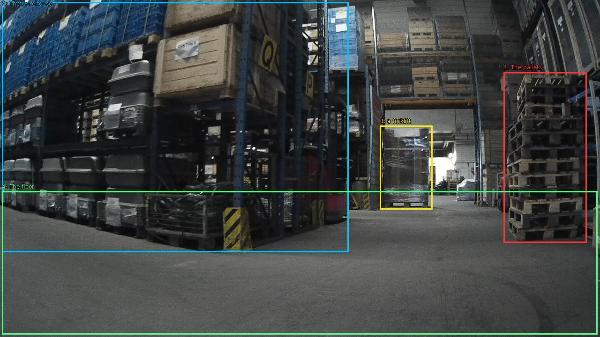
Celoten opis Florence in izvorni podatki
The image shows a large warehouse with multiple rows of pallets and crates stacked on top of each other. The pallets are of different sizes and colors, and they are arranged in a neat and orderly manner. The warehouse appears to be well-stocked with various items, and there is a forklift in the background. The floor is made of concrete, and the walls are made of metal. The overall atmosphere of the warehouse is industrial and well-organized.
Opis, regije in surovi odgovori Florenceqwen3.5:27b-q4_K_M
Q4_K_M · 2.087 s · response_received
Celoten surovi zapis{"objects":[{"id":1,"classification":"movable","reason":"Pallets are designed to be moved by forklifts."},{"id":2,"classification":"fixed","reason":"The warehouse is a structural building element."},{"id":3,"classification":"movable","reason":"A forklift is a vehicle designed for movement."},{"id":4,"classification":"fixed","reason":"The floor is a structural building element."}]}qwen3.5:4b-q4_K_M
Q4_K_M · 0.617 s · response_received
Celoten surovi zapis{"objects":[{"id":1,"classification":"movable","reason":"Stacks can be moved by forklifts in normal use."},{"id":2,"classification":"fixed","reason":"Structural building element defining the space."},{"id":3,"classification":"movable","reason":"Vehicles are designed to be repositioned."},{"id":4,"classification":"fixed","reason":"Structural building element supporting the structure."}]}gemma3:27b-it-q4_K_M
Q4_K_M · 2.809 s · response_received
Celoten surovi zapis{"objects": [{"id": 1, "classification": "movable", "reason": "Pallets are repositioned by forklifts and workers."}, {"id": 2, "classification": "fixed", "reason": "The warehouse is a structural building element."}, {"id": 3, "classification": "movable", "reason": "A forklift is driven and repositioned regularly."}, {"id": 4, "classification": "fixed", "reason": "The floor is a structural building element."}]}| Nabor | Okolje | ID regije | Oznaka Florence | qwen3.5:27b-q4_K_M | qwen3.5:4b-q4_K_M | gemma3:27b-it-q4_K_M | Primerjava |
|---|
| loco | loco-subset-2 | 1 | The pallets | movable | movable | movable | enaki razredi |
| loco | loco-subset-2 | 2 | The warehouse | fixed | fixed | fixed | enaki razredi |
| loco | loco-subset-2 | 3 | a forklift | movable | movable | movable | enaki razredi |
| loco | loco-subset-2 | 4 | The floor | fixed | fixed | fixed | enaki razredi |
loco-s2-34930
loco / loco-subset-2

Celoten opis Florence in izvorni podatki
The image shows the interior of a large warehouse with a high ceiling and large windows. The warehouse is filled with stacks of cardboard boxes and pallets, and there is a forklift parked in the center of the room. The floor is made of concrete and the walls are painted white. The ceiling is high and has several fluorescent lights. The overall atmosphere of the warehouse is industrial and busy.
Opis, regije in surovi odgovori Florenceqwen3.5:27b-q4_K_M
Q4_K_M · 1.970 s · response_received
Celoten surovi zapis{"objects":[{"id":1,"classification":"fixed","reason":"The warehouse is a structural building element."},{"id":2,"classification":"movable","reason":"A forklift can be driven or repositioned."},{"id":3,"classification":"fixed","reason":"The floor is a structural building element."},{"id":4,"classification":"fixed","reason":"The ceiling is a structural building element."}]}qwen3.5:4b-q4_K_M
Q4_K_M · 0.581 s · response_received
Celoten surovi zapis{"objects":[{"id":1,"classification":"fixed","reason":"Structural building element."},{"id":2,"classification":"movable","reason":"A forklift can be driven to a new location."},{"id":3,"classification":"fixed","reason":"Structural part of the building."},{"id":4,"classification":"fixed","reason":"Structural part of the building."}]}gemma3:27b-it-q4_K_M
Q4_K_M · 3.050 s · response_received
Celoten surovi zapis{"objects": [{"id": 1, "classification": "fixed", "reason": "Structural building element; the warehouse itself."}, {"id": 2, "classification": "movable", "reason": "A forklift is driven and repositioned normally."}, {"id": 3, "classification": "fixed", "reason": "Structural building element; part of the building."}, {"id": 4, "classification": "fixed", "reason": "Structural building element; part of the building."}]}| Nabor | Okolje | ID regije | Oznaka Florence | qwen3.5:27b-q4_K_M | qwen3.5:4b-q4_K_M | gemma3:27b-it-q4_K_M | Primerjava |
|---|
| loco | loco-subset-2 | 1 | The warehouse | fixed | fixed | fixed | enaki razredi |
| loco | loco-subset-2 | 2 | a forklift | movable | movable | movable | enaki razredi |
| loco | loco-subset-2 | 3 | The floor | fixed | fixed | fixed | enaki razredi |
| loco | loco-subset-2 | 4 | The ceiling | fixed | fixed | fixed | enaki razredi |
loco-s2-35144
loco / loco-subset-2

Celoten opis Florence in izvorni podatki
The image shows a large warehouse with multiple shelves and racks. The shelves are filled with cardboard boxes and other items. The floor is made of concrete and there is a metal frame in the foreground. The warehouse appears to be well-lit with natural light coming in from the windows on the left side of the image. The image is taken from a low angle, looking up at the shelves.
Opis, regije in surovi odgovori Florenceqwen3.5:27b-q4_K_M
Q4_K_M · 1.391 s · response_received
Celoten surovi zapis{"objects":[{"id":1,"classification":"fixed","reason":"Structural building element forming the ground."},{"id":2,"classification":"uncertain","reason":"Installation evidence not visible; could be movable."}]}qwen3.5:4b-q4_K_M
Q4_K_M · 0.406 s · response_received
Celoten surovi zapis{"objects":[{"id":1,"classification":"fixed","reason":"Structural floor element of the building."},{"id":2,"classification":"movable","reason":"Metal frame can be pushed or repositioned in normal use."}]}gemma3:27b-it-q4_K_M
Q4_K_M · 1.737 s · response_received
Celoten surovi zapis{"objects":[{"id": 1, "classification": "fixed", "reason": "Structural building element; the floor."}, {"id": 2, "classification": "movable", "reason": "Metal frame can be repositioned in a warehouse."}]}| Nabor | Okolje | ID regije | Oznaka Florence | qwen3.5:27b-q4_K_M | qwen3.5:4b-q4_K_M | gemma3:27b-it-q4_K_M | Primerjava |
|---|
| loco | loco-subset-2 | 1 | The floor | fixed | fixed | fixed | enaki razredi |
| loco | loco-subset-2 | 2 | a metal frame | uncertain | movable | movable | različni razredi |
loco-s3-36383
loco / loco-subset-3
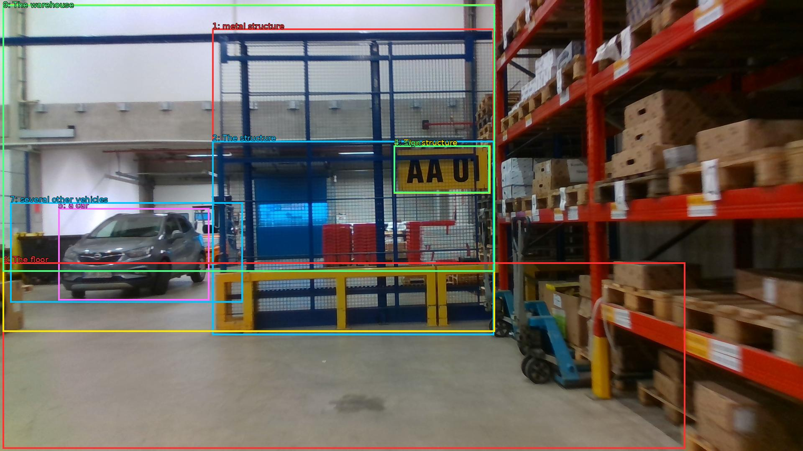
Celoten opis Florence in izvorni podatki
The image shows a large warehouse with a blue metal structure in the center. The structure has a yellow sign that reads "AA U1" and is surrounded by shelves filled with cardboard boxes. On the right side of the image, there is a car parked in the warehouse. The floor is made of concrete and there are several other vehicles and equipment scattered around the space. The warehouse appears to be well-lit with fluorescent lights.
Opis, regije in surovi odgovori Florenceqwen3.5:27b-q4_K_M
Q4_K_M · 3.609 s · response_received
Celoten surovi zapis{"objects":[{"id":1,"classification":"uncertain","reason":"No visible evidence of permanent installation."},{"id":2,"classification":"uncertain","reason":"Label too vague; no installation evidence."},{"id":3,"classification":"uncertain","reason":"Label too vague; no installation evidence."},{"id":4,"classification":"uncertain","reason":"Sign attachment not visibly confirmed."},{"id":5,"classification":"movable","reason":"Cars are designed to be driven and moved."},{"id":6,"classification":"fixed","reason":"Floor is a structural building element."},{"id":7,"classification":"movable","reason":"Vehicles can be driven or pushed elsewhere."},{"id":8,"classification":"fixed","reason":"Warehouse is the building structure itself."},{"id":9,"classification":"fixed","reason":"Warehouse is the building structure itself."}]}qwen3.5:4b-q4_K_M
Q4_K_M · 1.068 s · response_received
Celoten surovi zapis{"objects":[{"id":1,"classification":"uncertain","reason":"Permanent attachment not established for metal structure."},{"id":2,"classification":"uncertain","reason":"No evidence of permanent installation or structural role."},{"id":3,"classification":"uncertain","reason":"No evidence of permanent installation or structural role."},{"id":4,"classification":"movable","reason":"Signs are typically movable unless visibly integrated."},{"id":5,"classification":"movable","reason":"Cars can be driven or pushed to different locations."},{"id":6,"classification":"fixed","reason":"Concrete floor is a structural building element."},{"id":7,"classification":"movable","reason":"Vehicles can be moved by drivers or pushed."},{"id":8,"classification":"fixed","reason":"Warehouse is a structural building element."},{"id":9,"classification":"fixed","reason":"Warehouse is a structural building element."}]}gemma3:27b-it-q4_K_M
Q4_K_M · 6.156 s · response_received
Celoten surovi zapis{"objects": [{"id": 1, "classification": "fixed", "reason": "Large metal structure, likely part of building support."}, {"id": 2, "classification": "fixed", "reason": "Part of the larger metal structure; not movable."}, {"id": 3, "classification": "fixed", "reason": "Part of the larger metal structure; not movable."}, {"id": 4, "classification": "fixed", "reason": "Attached to the structure; considered a permanent fixture."}, {"id": 5, "classification": "movable", "reason": "A vehicle is easily repositioned."}, {"id": 6, "classification": "fixed", "reason": "The floor is a structural building element."}, {"id": 7, "classification": "movable", "reason": "Vehicles can be driven/moved around."}, {"id": 8, "classification": "fixed", "reason": "The warehouse itself is a permanent structure."}, {"id": 9, "classification": "fixed", "reason": "The warehouse itself is a permanent structure."}]}| Nabor | Okolje | ID regije | Oznaka Florence | qwen3.5:27b-q4_K_M | qwen3.5:4b-q4_K_M | gemma3:27b-it-q4_K_M | Primerjava |
|---|
| loco | loco-subset-3 | 1 | metal structure | uncertain | uncertain | fixed | različni razredi |
| loco | loco-subset-3 | 2 | The structure | uncertain | uncertain | fixed | različni razredi |
| loco | loco-subset-3 | 3 | The structure | uncertain | uncertain | fixed | različni razredi |
| loco | loco-subset-3 | 4 | sign | uncertain | movable | fixed | različni razredi |
| loco | loco-subset-3 | 5 | a car | movable | movable | movable | enaki razredi |
| loco | loco-subset-3 | 6 | The floor | fixed | fixed | fixed | enaki razredi |
| loco | loco-subset-3 | 7 | several other vehicles | movable | movable | movable | enaki razredi |
| loco | loco-subset-3 | 8 | The warehouse | fixed | fixed | fixed | enaki razredi |
| loco | loco-subset-3 | 9 | The warehouse | fixed | fixed | fixed | enaki razredi |
loco-s3-36397
loco / loco-subset-3
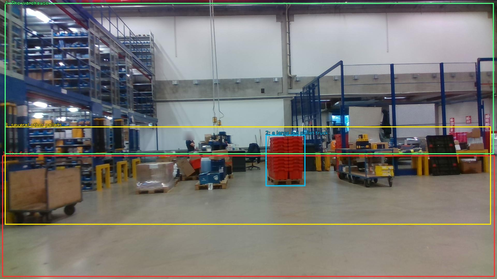
Celoten opis Florence in izvorni podatki
The image shows the interior of a large warehouse or storage facility. The floor is made of concrete and the walls are painted white. On the left side of the image, there are rows of blue metal shelves with various items stored on them. In the center of the room, there is a large red pallet truck with a crane attached to it. There are several other pallets and carts scattered around the room. The warehouse appears to be well-maintained and well-organized.
Opis, regije in surovi odgovori Florenceqwen3.5:27b-q4_K_M
Q4_K_M · 2.141 s · response_received
Celoten surovi zapis{"objects":[{"id":1,"classification":"fixed","reason":"Structural building element forming the ground."},{"id":2,"classification":"movable","reason":"Vehicle designed to be driven and repositioned."},{"id":3,"classification":"movable","reason":"Pallets are portable storage units easily moved."},{"id":4,"classification":"fixed","reason":"The warehouse is a permanent structural building."}]}qwen3.5:4b-q4_K_M
Q4_K_M · 0.656 s · response_received
Celoten surovi zapis{"objects":[{"id":1,"classification":"fixed","reason":"Structural floor element of the building."},{"id":2,"classification":"movable","reason":"A pallet truck can be pushed or repositioned easily."},{"id":3,"classification":"movable","reason":"Pallets are standard movable storage units."},{"id":4,"classification":"fixed","reason":"The warehouse is a structural building element."}]}gemma3:27b-it-q4_K_M
Q4_K_M · 2.686 s · response_received
Celoten surovi zapis{"objects": [{"id": 1, "classification": "fixed", "reason": "Structural building element."}, {"id": 2, "classification": "movable", "reason": "Can be driven/pushed around normally."}, {"id": 3, "classification": "movable", "reason": "Pallets are typically moved by forklifts."}, {"id": 4, "classification": "fixed", "reason": "The building itself."}]}| Nabor | Okolje | ID regije | Oznaka Florence | qwen3.5:27b-q4_K_M | qwen3.5:4b-q4_K_M | gemma3:27b-it-q4_K_M | Primerjava |
|---|
| loco | loco-subset-3 | 1 | The floor | fixed | fixed | fixed | enaki razredi |
| loco | loco-subset-3 | 2 | a large red pallet truck | movable | movable | movable | enaki razredi |
| loco | loco-subset-3 | 3 | several other pallets | movable | movable | movable | enaki razredi |
| loco | loco-subset-3 | 4 | The warehouse | fixed | fixed | fixed | enaki razredi |
loco-s3-36412
loco / loco-subset-3

Celoten opis Florence in izvorni podatki
The image shows the interior of a large warehouse with a high ceiling and large windows. The floor is made of concrete and there are several rows of shelves on the right side of the image. On the left side, there are stacks of cardboard boxes and other items. In the center, there is a blue metal structure with a yellow sign that reads "AAU" on it. A car is parked in the background. The warehouse appears to be well-maintained and well-organized.
Opis, regije in surovi odgovori Florenceqwen3.5:27b-q4_K_M
Q4_K_M · 3.181 s · response_received
Celoten surovi zapis{"objects":[{"id":1,"classification":"fixed","reason":"Structural building element forming the ground."},{"id":2,"classification":"uncertain","reason":"Label vague; permanent installation not established."},{"id":3,"classification":"movable","reason":"Stacks of items can be moved or reorganized."},{"id":4,"classification":"uncertain","reason":"Metal structure type unknown; installation not visible."},{"id":5,"classification":"uncertain","reason":"Metal structure type unknown; installation not visible."},{"id":6,"classification":"uncertain","reason":"Sign attachment method not clearly visible."},{"id":7,"classification":"movable","reason":"Vehicles are designed to be driven away."}]}qwen3.5:4b-q4_K_M
Q4_K_M · 0.930 s · response_received
Celoten surovi zapis{"objects":[{"id":1,"classification":"fixed","reason":"Structural floor element of the building."},{"id":2,"classification":"uncertain","reason":"Abstract description lacks specific object identity."},{"id":3,"classification":"movable","reason":"Stacks of boxes can be pushed or repositioned."},{"id":4,"classification":"uncertain","reason":"Metal structure attachment is not established."},{"id":5,"classification":"uncertain","reason":"Metal structure attachment is not established."},{"id":6,"classification":"movable","reason":"Signs are typically movable unless fixed."},{"id":7,"classification":"movable","reason":"Cars can be driven or pushed to new locations."}]}gemma3:27b-it-q4_K_M
Q4_K_M · 4.040 s · response_received
Celoten surovi zapis{"objects": [{"id": 1, "classification": "fixed", "reason": "Structural element of the building."}, {"id": 2, "classification": "movable", "reason": "Shelves can be rearranged or removed."}, {"id": 3, "classification": "movable", "reason": "Boxes are easily repositioned."}, {"id": 4, "classification": "uncertain", "reason": "Metal structure's installation is not evident."}, {"id": 5, "classification": "uncertain", "reason": "Metal structure's installation is not evident."}, {"id": 6, "classification": "movable", "reason": "Signs are typically mounted but can be moved."}, {"id": 7, "classification": "movable", "reason": "A vehicle is inherently movable."}]}| Nabor | Okolje | ID regije | Oznaka Florence | qwen3.5:27b-q4_K_M | qwen3.5:4b-q4_K_M | gemma3:27b-it-q4_K_M | Primerjava |
|---|
| loco | loco-subset-3 | 1 | The floor | fixed | fixed | fixed | enaki razredi |
| loco | loco-subset-3 | 2 | several rows | uncertain | uncertain | movable | različni razredi |
| loco | loco-subset-3 | 3 | stacks | movable | movable | movable | enaki razredi |
| loco | loco-subset-3 | 4 | a blue metal structure | uncertain | uncertain | uncertain | enaki razredi |
| loco | loco-subset-3 | 5 | a blue metal structure | uncertain | uncertain | uncertain | enaki razredi |
| loco | loco-subset-3 | 6 | sign | uncertain | movable | movable | različni razredi |
| loco | loco-subset-3 | 7 | A car | movable | movable | movable | enaki razredi |
loco-s3-36764
loco / loco-subset-3
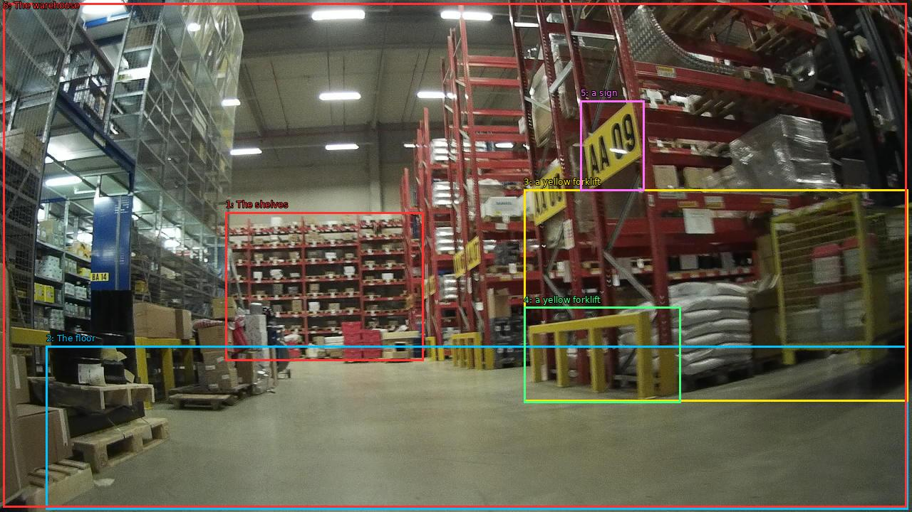
Celoten opis Florence in izvorni podatki
The image shows the interior of a large warehouse with multiple rows of shelves and racks. The shelves are filled with various items such as cardboard boxes, pallets, and other storage containers. The floor is made of concrete and the ceiling is high with overhead lights. On the right side of the image, there is a yellow forklift with a sign that reads "AA 09". The warehouse appears to be well-stocked and organized.
Opis, regije in surovi odgovori Florenceqwen3.5:27b-q4_K_M
Q4_K_M · 2.979 s · response_received
Celoten surovi zapis{"objects":[{"id":1,"classification":"uncertain","reason":"Shelves are movable unless permanent installation is visible."},{"id":2,"classification":"fixed","reason":"Structural building element of the warehouse."},{"id":3,"classification":"movable","reason":"Forklifts are designed to be driven and repositioned."},{"id":4,"classification":"movable","reason":"Forklifts are designed to be driven and repositioned."},{"id":5,"classification":"uncertain","reason":"Sign attachment method is not visible or established."},{"id":6,"classification":"fixed","reason":"The warehouse building is a permanent structure."}]}qwen3.5:4b-q4_K_M
Q4_K_M · 0.861 s · response_received
Celoten surovi zapis{"objects":[{"id":1,"classification":"uncertain","reason":"Shelves often movable but permanent installation not established."},{"id":2,"classification":"fixed","reason":"Floor is a structural building element."},{"id":3,"classification":"movable","reason":"Forklifts are designed to be moved by operators."},{"id":4,"classification":"movable","reason":"Forklifts are designed to be moved by operators."},{"id":5,"classification":"uncertain","reason":"Sign attachment method and permanence are not established."},{"id":6,"classification":"fixed","reason":"Warehouse is a structural building element."}]}gemma3:27b-it-q4_K_M
Q4_K_M · 3.972 s · response_received
Celoten surovi zapis{"objects": [{"id": 1, "classification": "uncertain", "reason": "Installation not explicitly established."}, {"id": 2, "classification": "fixed", "reason": "Structural building element."}, {"id": 3, "classification": "movable", "reason": "A forklift is repositioned during use."}, {"id": 4, "classification": "movable", "reason": "A forklift is repositioned during use."}, {"id": 5, "classification": "movable", "reason": "Signs are typically mounted but can be moved."}, {"id": 6, "classification": "fixed", "reason": "The building itself."}]}| Nabor | Okolje | ID regije | Oznaka Florence | qwen3.5:27b-q4_K_M | qwen3.5:4b-q4_K_M | gemma3:27b-it-q4_K_M | Primerjava |
|---|
| loco | loco-subset-3 | 1 | The shelves | uncertain | uncertain | uncertain | enaki razredi |
| loco | loco-subset-3 | 2 | The floor | fixed | fixed | fixed | enaki razredi |
| loco | loco-subset-3 | 3 | a yellow forklift | movable | movable | movable | enaki razredi |
| loco | loco-subset-3 | 4 | a yellow forklift | movable | movable | movable | enaki razredi |
| loco | loco-subset-3 | 5 | a sign | uncertain | uncertain | movable | različni razredi |
| loco | loco-subset-3 | 6 | The warehouse | fixed | fixed | fixed | enaki razredi |
loco-s4-31857
loco / loco-subset-4

Celoten opis Florence in izvorni podatki
The image shows a large warehouse with multiple rows of shelves. The shelves are filled with boxes of various sizes and colors, including red, white, and yellow. The boxes are stacked on wooden pallets and are arranged in neat rows. The warehouse appears to be well-stocked with various items, and there are a few people visible in the background. The floor is made of concrete and there is a large window on the right side of the image, allowing natural light to enter the space.
Opis, regije in surovi odgovori Florenceqwen3.5:27b-q4_K_M
Q4_K_M · 3.014 s · response_received
Celoten surovi zapis{"objects":[{"id":1,"classification":"uncertain","reason":"Shelves are movable unless permanent installation is visible."},{"id":2,"classification":"movable","reason":"Boxes can be carried or repositioned in normal use."},{"id":3,"classification":"movable","reason":"Pallets are designed to be moved by forklifts."},{"id":4,"classification":"movable","reason":"People move freely and change position constantly."},{"id":5,"classification":"fixed","reason":"Structural building element forming the ground surface."},{"id":6,"classification":"fixed","reason":"Installed room element; opening is not relocation."}]}qwen3.5:4b-q4_K_M
Q4_K_M · 0.863 s · response_received
Celoten surovi zapis{"objects":[{"id":1,"classification":"uncertain","reason":"Shelves may be fixed or movable without installation proof."},{"id":2,"classification":"movable","reason":"Boxes are standard items that can be carried or pushed."},{"id":3,"classification":"movable","reason":"Pallets can be easily moved by forklift or hand."},{"id":4,"classification":"movable","reason":"People can move freely and change position instantly."},{"id":5,"classification":"fixed","reason":"Concrete floor is a structural building element."},{"id":6,"classification":"fixed","reason":"Windows are installed room elements, not relocatable."}]}gemma3:27b-it-q4_K_M
Q4_K_M · 5.224 s · response_received
Celoten surovi zapis{"objects": [{"id": 1, "classification": "uncertain", "reason": "Shelves may be fixed or movable."}, {"id": 2, "classification": "movable", "reason": "Boxes are carried and repositioned."}, {"id": 3, "classification": "movable", "reason": "Pallets are moved by forklifts/people."}, {"id": 4, "classification": "movable", "reason": "People can move independently."}, {"id": 5, "classification": "fixed", "reason": "Structural element of the building."}, {"id": 6, "classification": "fixed", "reason": "Installed room element; opening is not relocation."}]}| Nabor | Okolje | ID regije | Oznaka Florence | qwen3.5:27b-q4_K_M | qwen3.5:4b-q4_K_M | gemma3:27b-it-q4_K_M | Primerjava |
|---|
| loco | loco-subset-4 | 1 | The shelves | uncertain | uncertain | uncertain | enaki razredi |
| loco | loco-subset-4 | 2 | The boxes | movable | movable | movable | enaki razredi |
| loco | loco-subset-4 | 3 | pallets | movable | movable | movable | enaki razredi |
| loco | loco-subset-4 | 4 | a few people | movable | movable | movable | enaki razredi |
| loco | loco-subset-4 | 5 | The floor | fixed | fixed | fixed | enaki razredi |
| loco | loco-subset-4 | 6 | a large window | fixed | fixed | fixed | enaki razredi |
loco-s4-32109
loco / loco-subset-4

Celoten opis Florence in izvorni podatki
The image shows a large warehouse with multiple forklifts parked in it. The warehouse has a high ceiling with high beams and large windows that allow natural light to enter the space. The floor is made of concrete and there are several rows of shelves on the right side of the image. On the left side, there are two yellow forklift trucks parked side by side. In the center of the warehouse, there is a large metal structure with multiple levels and racks. The structure appears to be a forklift or a pallet truck, which is used for lifting and moving heavy objects. There are also several other forklift vehicles in the background, which are also yellow and black in color. The image appears to have been taken from a high angle, looking down on the warehouse floor.
Opis, regije in surovi odgovori Florenceqwen3.5:27b-q4_K_M
Q4_K_M · 4.720 s · response_received
Celoten surovi zapis{"objects":[{"id":1,"classification":"movable","reason":"Forklifts are vehicles designed to be driven and repositioned."},{"id":2,"classification":"fixed","reason":"The warehouse is a structural building element."},{"id":3,"classification":"fixed","reason":"The floor is a permanent structural building element."},{"id":4,"classification":"uncertain","reason":"Rows of shelves lack visible installation evidence."},{"id":5,"classification":"movable","reason":"Forklift trucks are vehicles designed to be driven and repositioned."},{"id":6,"classification":"movable","reason":"A forklift truck is a vehicle designed to be driven."},{"id":7,"classification":"uncertain","reason":"Large metal structure lacks visible installation evidence."},{"id":8,"classification":"uncertain","reason":"Large metal structure lacks visible installation evidence."},{"id":9,"classification":"uncertain","reason":"Structure label is too vague without installation evidence."},{"id":10,"classification":"movable","reason":"Forklift vehicles are designed to be driven and repositioned."}]}qwen3.5:4b-q4_K_M
Q4_K_M · 1.352 s · response_received
Celoten surovi zapis{"objects":[{"id":1,"classification":"movable","reason":"Forklifts are designed to be moved by operators."},{"id":2,"classification":"fixed","reason":"The warehouse is a structural building element."},{"id":3,"classification":"fixed","reason":"Concrete floors are structural building elements."},{"id":4,"classification":"uncertain","reason":"Rows of shelves may be movable or fixed installations."},{"id":5,"classification":"movable","reason":"Forklift trucks can be pushed or repositioned in normal use."},{"id":6,"classification":"movable","reason":"Forklift trucks can be pushed or repositioned in normal use."},{"id":7,"classification":"uncertain","reason":"Metal structure type is unclear; could be movable equipment."},{"id":8,"classification":"uncertain","reason":"Metal structure type is unclear; could be movable equipment."},{"id":9,"classification":"uncertain","reason":"Structure description lacks evidence for permanent installation."},{"id":10,"classification":"movable","reason":"Forklift vehicles are designed to be moved by operators."}]}gemma3:27b-it-q4_K_M
Q4_K_M · 5.906 s · response_received
Celoten surovi zapis{"objects": [{"id": 1, "classification": "movable", "reason": "Forklifts are driven and repositioned."}, {"id": 2, "classification": "fixed", "reason": "The warehouse is a structural building element."}, {"id": 3, "classification": "fixed", "reason": "The floor is a structural building element."}, {"id": 4, "classification": "uncertain", "reason": "Rows of shelves could be fixed or movable."}, {"id": 5, "classification": "movable", "reason": "Forklift trucks are driven and repositioned."}, {"id": 6, "classification": "movable", "reason": "A forklift truck is driven and repositioned."}, {"id": 7, "classification": "uncertain", "reason": "Large metal structure's installation is unclear."}, {"id": 8, "classification": "uncertain", "reason": "Large metal structure's installation is unclear."}, {"id": 9, "classification": "uncertain", "reason": "Structure's installation is unclear."}, {"id": 10, "classification": "movable", "reason": "Forklift vehicles are driven and repositioned."}]}| Nabor | Okolje | ID regije | Oznaka Florence | qwen3.5:27b-q4_K_M | qwen3.5:4b-q4_K_M | gemma3:27b-it-q4_K_M | Primerjava |
|---|
| loco | loco-subset-4 | 1 | forklifts | movable | movable | movable | enaki razredi |
| loco | loco-subset-4 | 2 | The warehouse | fixed | fixed | fixed | enaki razredi |
| loco | loco-subset-4 | 3 | The floor | fixed | fixed | fixed | enaki razredi |
| loco | loco-subset-4 | 4 | several rows | uncertain | uncertain | uncertain | enaki razredi |
| loco | loco-subset-4 | 5 | two yellow forklift trucks | movable | movable | movable | enaki razredi |
| loco | loco-subset-4 | 6 | yellow forklift truck | movable | movable | movable | enaki razredi |
| loco | loco-subset-4 | 7 | a large metal structure | uncertain | uncertain | uncertain | enaki razredi |
| loco | loco-subset-4 | 8 | a large metal structure | uncertain | uncertain | uncertain | enaki razredi |
| loco | loco-subset-4 | 9 | The structure | uncertain | uncertain | uncertain | enaki razredi |
| loco | loco-subset-4 | 10 | several other forklift vehicles | movable | movable | movable | enaki razredi |
loco-s4-32850
loco / loco-subset-4
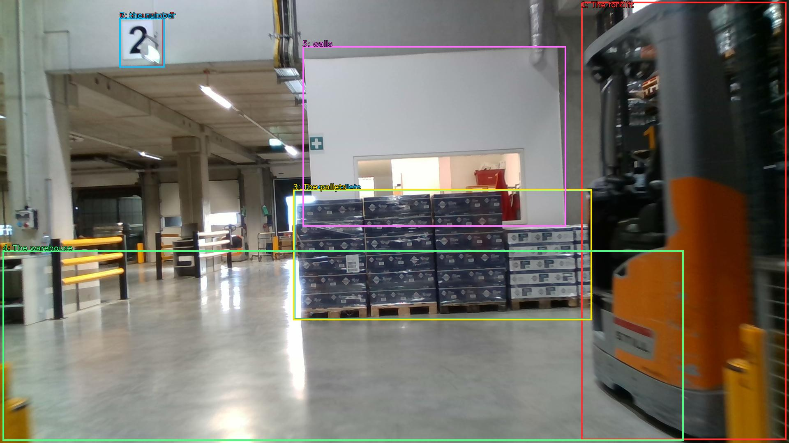
Celoten opis Florence in izvorni podatki
The image shows a large warehouse with a forklift parked on the right side. The forklift is orange and black in color and is moving towards the left side of the image. In the background, there are several pallets stacked on top of each other. The pallets are blue and appear to be filled with various items. The warehouse has a concrete floor and white walls, and there are pipes and ducts running along the ceiling. There is a number 2 on the wall, indicating that this is the number 2 of the warehouse.
Opis, regije in surovi odgovori Florenceqwen3.5:27b-q4_K_M
Q4_K_M · 3.425 s · response_received
Celoten surovi zapis{"objects":[{"id":1,"classification":"movable","reason":"A forklift is a vehicle designed to move."},{"id":2,"classification":"movable","reason":"Pallets are portable platforms used for storage and transport."},{"id":3,"classification":"movable","reason":"Pallets are portable platforms used for storage and transport."},{"id":4,"classification":"fixed","reason":"A warehouse is a permanent structural building element."},{"id":5,"classification":"fixed","reason":"Walls are structural elements of the building."},{"id":6,"classification":"uncertain","reason":"Permanent installation of the number is not established."},{"id":7,"classification":"uncertain","reason":"Permanent installation of the number is not established."}]}qwen3.5:4b-q4_K_M
Q4_K_M · 1.066 s · response_received
Celoten surovi zapis{"objects":[{"id":1,"classification":"movable","reason":"Forklifts are designed to be repositioned by operators."},{"id":2,"classification":"movable","reason":"Pallets can be stacked, moved, or rearranged easily."},{"id":3,"classification":"movable","reason":"Pallets can be stacked, moved, or rearranged easily."},{"id":4,"classification":"fixed","reason":"The warehouse is a structural building element."},{"id":5,"classification":"fixed","reason":"Walls are structural building elements that cannot be moved."},{"id":6,"classification":"movable","reason":"A painted number on a wall can be repainted or removed."},{"id":7,"classification":"uncertain","reason":"Visual evidence does not confirm if the number is permanent paint or a sticker."}]}gemma3:27b-it-q4_K_M
Q4_K_M · 4.216 s · response_received
Celoten surovi zapis{"objects": [{"id": 1, "classification": "movable", "reason": "A forklift is designed to be moved."}, {"id": 2, "classification": "movable", "reason": "Pallets are typically repositioned by forklifts."}, {"id": 3, "classification": "movable", "reason": "Pallets are typically repositioned by forklifts."}, {"id": 4, "classification": "fixed", "reason": "The warehouse is a structural building element."}, {"id": 5, "classification": "fixed", "reason": "Walls are structural building elements."}, {"id": 6, "classification": "fixed", "reason": "Markings on walls are permanently applied."}, {"id": 7, "classification": "fixed", "reason": "Markings on walls are permanently applied."}]}| Nabor | Okolje | ID regije | Oznaka Florence | qwen3.5:27b-q4_K_M | qwen3.5:4b-q4_K_M | gemma3:27b-it-q4_K_M | Primerjava |
|---|
| loco | loco-subset-4 | 1 | The forklift | movable | movable | movable | enaki razredi |
| loco | loco-subset-4 | 2 | several pallets | movable | movable | movable | enaki razredi |
| loco | loco-subset-4 | 3 | The pallets | movable | movable | movable | enaki razredi |
| loco | loco-subset-4 | 4 | The warehouse | fixed | fixed | fixed | enaki razredi |
| loco | loco-subset-4 | 5 | walls | fixed | fixed | fixed | enaki razredi |
| loco | loco-subset-4 | 6 | a number 2 | uncertain | movable | fixed | različni razredi |
| loco | loco-subset-4 | 7 | the number | uncertain | uncertain | fixed | različni razredi |
loco-s4-32898
loco / loco-subset-4

Celoten opis Florence in izvorni podatki
The image shows a large warehouse with a high ceiling and concrete floor. The warehouse is filled with rows of shelves and racks, and there are several forklifts parked on the right side of the image. On the left side, there is a forklift with a yellow forklift attachment. The forklift is moving through the warehouse, and in the background, there are workers working on the shelves. The floor is made of concrete, and the warehouse appears to be well-maintained. The image is taken from a low angle, looking down on the warehouse.
Opis, regije in surovi odgovori Florenceqwen3.5:27b-q4_K_M
Q4_K_M · 3.372 s · response_received
Celoten surovi zapis{"objects":[{"id":1,"classification":"fixed","reason":"The warehouse is a structural building element."},{"id":2,"classification":"movable","reason":"Forklifts are vehicles designed to be driven and repositioned."},{"id":3,"classification":"movable","reason":"A forklift is a vehicle that can be moved."},{"id":4,"classification":"movable","reason":"The forklift is a vehicle capable of being repositioned."},{"id":5,"classification":"movable","reason":"Workers are people who can move freely."},{"id":6,"classification":"movable","reason":"Workers are people who can move freely."},{"id":7,"classification":"fixed","reason":"The floor is a structural building element."}]}qwen3.5:4b-q4_K_M
Q4_K_M · 0.928 s · response_received
Celoten surovi zapis{"objects":[{"id":1,"classification":"fixed","reason":"Structural building element."},{"id":2,"classification":"movable","reason":"Forklifts are designed to be moved by operators."},{"id":3,"classification":"movable","reason":"Forklifts are designed to be moved by operators."},{"id":4,"classification":"movable","reason":"Forklifts are designed to be moved by operators."},{"id":5,"classification":"movable","reason":"People can move freely within the space."},{"id":6,"classification":"movable","reason":"People can move freely within the space."},{"id":7,"classification":"fixed","reason":"Structural part of the building."}]}gemma3:27b-it-q4_K_M
Q4_K_M · 4.416 s · response_received
Celoten surovi zapis{"objects": [{"id": 1, "classification": "fixed", "reason": "Structural building element: the warehouse itself."}, {"id": 2, "classification": "movable", "reason": "Forklifts are repositioned during normal use."}, {"id": 3, "classification": "movable", "reason": "A forklift is repositioned during normal use."}, {"id": 4, "classification": "movable", "reason": "A forklift is repositioned during normal use."}, {"id": 5, "classification": "movable", "reason": "People move around freely."}, {"id": 6, "classification": "movable", "reason": "People move around freely."}, {"id": 7, "classification": "fixed", "reason": "Structural building element: the floor."}]}| Nabor | Okolje | ID regije | Oznaka Florence | qwen3.5:27b-q4_K_M | qwen3.5:4b-q4_K_M | gemma3:27b-it-q4_K_M | Primerjava |
|---|
| loco | loco-subset-4 | 1 | The warehouse | fixed | fixed | fixed | enaki razredi |
| loco | loco-subset-4 | 2 | several forklifts | movable | movable | movable | enaki razredi |
| loco | loco-subset-4 | 3 | a forklift | movable | movable | movable | enaki razredi |
| loco | loco-subset-4 | 4 | The forklift | movable | movable | movable | enaki razredi |
| loco | loco-subset-4 | 5 | workers | movable | movable | movable | enaki razredi |
| loco | loco-subset-4 | 6 | workers | movable | movable | movable | enaki razredi |
| loco | loco-subset-4 | 7 | The floor | fixed | fixed | fixed | enaki razredi |
loco-s5-35592
loco / loco-subset-5

Celoten opis Florence in izvorni podatki
The image shows a large warehouse with stacks of red plastic crates on wooden pallets. The crates are stacked on top of each other and appear to be empty. In the background, there is a forklift truck parked in the middle of the warehouse. The warehouse has a high ceiling with overhead lights and there are stacks of white plastic bags on the right side of the image. The image is taken from a low angle, looking up at the stacks of crates.
Opis, regije in surovi odgovori Florenceqwen3.5:27b-q4_K_M
Q4_K_M · 3.645 s · response_received
Celoten surovi zapis{"objects":[{"id":1,"classification":"movable","reason":"Wooden pallets are portable storage aids."},{"id":2,"classification":"movable","reason":"Crates are portable containers for goods."},{"id":3,"classification":"movable","reason":"Crates are portable containers for goods."},{"id":4,"classification":"movable","reason":"Crates are portable containers for goods."},{"id":5,"classification":"movable","reason":"Crates are portable containers for goods."},{"id":6,"classification":"movable","reason":"Forklift trucks are mobile industrial vehicles."},{"id":7,"classification":"fixed","reason":"Warehouse is a structural building element."},{"id":8,"classification":"movable","reason":"Stacks of items can be repositioned."}]}qwen3.5:4b-q4_K_M
Q4_K_M · 1.121 s · response_received
Celoten surovi zapis{"objects":[{"id":1,"classification":"movable","reason":"Pallets can be pushed or moved by machinery."},{"id":2,"classification":"movable","reason":"Crates are standard objects that can be repositioned."},{"id":3,"classification":"movable","reason":"Crates are standard objects that can be repositioned."},{"id":4,"classification":"movable","reason":"Crates are standard objects that can be repositioned."},{"id":5,"classification":"movable","reason":"Crates are standard objects that can be repositioned."},{"id":6,"classification":"movable","reason":"A forklift is a vehicle designed to move other objects."},{"id":7,"classification":"fixed","reason":"The warehouse is a structural building element."},{"id":8,"classification":"movable","reason":"Stacks of crates can be moved or reorganized."}]}gemma3:27b-it-q4_K_M
Q4_K_M · 5.683 s · response_received
Celoten surovi zapis{"objects": [{"id": 1, "classification": "movable", "reason": "Pallets are moved by forklifts and other equipment."}, {"id": 2, "classification": "movable", "reason": "Crates are stacked and repositioned within a warehouse."}, {"id": 3, "classification": "movable", "reason": "Crates are stacked and repositioned within a warehouse."}, {"id": 4, "classification": "movable", "reason": "Crates are stacked and repositioned within a warehouse."}, {"id": 5, "classification": "movable", "reason": "Crates are stacked and repositioned within a warehouse."}, {"id": 6, "classification": "movable", "reason": "A vehicle designed for relocation."}, {"id": 7, "classification": "fixed", "reason": "Structural building element; requires demolition to move."}, {"id": 8, "classification": "movable", "reason": "Stacks are arrangements of movable crates."}]}| Nabor | Okolje | ID regije | Oznaka Florence | qwen3.5:27b-q4_K_M | qwen3.5:4b-q4_K_M | gemma3:27b-it-q4_K_M | Primerjava |
|---|
| loco | loco-subset-5 | 1 | wooden pallets | movable | movable | movable | enaki razredi |
| loco | loco-subset-5 | 2 | The crates | movable | movable | movable | enaki razredi |
| loco | loco-subset-5 | 3 | The crates | movable | movable | movable | enaki razredi |
| loco | loco-subset-5 | 4 | The crates | movable | movable | movable | enaki razredi |
| loco | loco-subset-5 | 5 | The crates | movable | movable | movable | enaki razredi |
| loco | loco-subset-5 | 6 | a forklift truck | movable | movable | movable | enaki razredi |
| loco | loco-subset-5 | 7 | The warehouse | fixed | fixed | fixed | enaki razredi |
| loco | loco-subset-5 | 8 | stacks | movable | movable | movable | enaki razredi |
loco-s5-35743
loco / loco-subset-5

Celoten opis Florence in izvorni podatki
The image shows the interior of a large warehouse or industrial space. The floor is made of concrete and there are several red forklifts parked on the left side of the image. On the right side, there are two large white doors with red and white signs on them. The doors appear to be closed and there is a yellow caution tape on the ground in front of them. In the background, there is another red forklift parked next to the door. The warehouse has a high ceiling with overhead lights and a large window on the wall. The overall atmosphere of the space is clean and well-maintained.
Opis, regije in surovi odgovori Florenceqwen3.5:27b-q4_K_M
Q4_K_M · 5.529 s · response_received
Celoten surovi zapis{"objects":[{"id":1,"classification":"fixed","reason":"Structural building element forming the ground."},{"id":2,"classification":"movable","reason":"Vehicles designed to be driven and repositioned."},{"id":3,"classification":"movable","reason":"Vehicles designed to be driven and repositioned."},{"id":4,"classification":"fixed","reason":"Installed room elements; opening is not relocation."},{"id":5,"classification":"fixed","reason":"Installed room elements; opening is not relocation."},{"id":6,"classification":"fixed","reason":"Installed room elements; opening is not relocation."},{"id":7,"classification":"fixed","reason":"Installed room elements; opening is not relocation."},{"id":8,"classification":"fixed","reason":"Installed room elements; opening is not relocation."},{"id":9,"classification":"movable","reason":"Temporary barrier easily moved or removed."},{"id":10,"classification":"movable","reason":"Vehicle designed to be driven and repositioned."},{"id":11,"classification":"fixed","reason":"Refers to the building structure itself."},{"id":12,"classification":"fixed","reason":"Refers to the building structure itself."},{"id":13,"classification":"fixed","reason":"Refers to the building structure itself."}]}qwen3.5:4b-q4_K_M
Q4_K_M · 1.532 s · response_received
Celoten surovi zapis{"objects":[{"id":1,"classification":"fixed","reason":"Structural floor element of the building."},{"id":2,"classification":"movable","reason":"Forklifts are movable vehicles in normal use."},{"id":3,"classification":"movable","reason":"Forklifts are movable vehicles in normal use."},{"id":4,"classification":"fixed","reason":"Large doors are structural room elements."},{"id":5,"classification":"fixed","reason":"Large doors are structural room elements."},{"id":6,"classification":"fixed","reason":"Large doors are structural room elements."},{"id":7,"classification":"fixed","reason":"Large doors are structural room elements."},{"id":8,"classification":"fixed","reason":"Large doors are structural room elements."},{"id":9,"classification":"movable","reason":"Tape can be easily repositioned or removed."},{"id":10,"classification":"movable","reason":"Forklifts are movable vehicles in normal use."},{"id":11,"classification":"fixed","reason":"The warehouse is a structural building element."},{"id":12,"classification":"fixed","reason":"The warehouse is a structural building element."},{"id":13,"classification":"fixed","reason":"The warehouse is a structural building element."}]}gemma3:27b-it-q4_K_M
Q4_K_M · 7.080 s · response_received
Celoten surovi zapis{"objects": [{"id": 1, "classification": "fixed", "reason": "Structural element of the building."}, {"id": 2, "classification": "movable", "reason": "Can be driven and repositioned."}, {"id": 3, "classification": "movable", "reason": "Can be driven and repositioned."}, {"id": 4, "classification": "fixed", "reason": "Installed room elements; opening is not relocation."}, {"id": 5, "classification": "fixed", "reason": "Installed room elements; opening is not relocation."}, {"id": 6, "classification": "fixed", "reason": "Installed room elements; opening is not relocation."}, {"id": 7, "classification": "fixed", "reason": "Installed room elements; opening is not relocation."}, {"id": 8, "classification": "fixed", "reason": "Installed room elements; opening is not relocation."}, {"id": 9, "classification": "movable", "reason": "Can be moved or repositioned."}, {"id": 10, "classification": "movable", "reason": "Can be driven and repositioned."}, {"id": 11, "classification": "fixed", "reason": "Structural building element."}, {"id": 12, "classification": "fixed", "reason": "Structural building element."}, {"id": 13, "classification": "fixed", "reason": "Structural building element."}]}| Nabor | Okolje | ID regije | Oznaka Florence | qwen3.5:27b-q4_K_M | qwen3.5:4b-q4_K_M | gemma3:27b-it-q4_K_M | Primerjava |
|---|
| loco | loco-subset-5 | 1 | The floor | fixed | fixed | fixed | enaki razredi |
| loco | loco-subset-5 | 2 | several red forklifts | movable | movable | movable | enaki razredi |
| loco | loco-subset-5 | 3 | several red forklifts | movable | movable | movable | enaki razredi |
| loco | loco-subset-5 | 4 | two large white doors | fixed | fixed | fixed | enaki razredi |
| loco | loco-subset-5 | 5 | two large white doors | fixed | fixed | fixed | enaki razredi |
| loco | loco-subset-5 | 6 | two large white doors | fixed | fixed | fixed | enaki razredi |
| loco | loco-subset-5 | 7 | two large white doors | fixed | fixed | fixed | enaki razredi |
| loco | loco-subset-5 | 8 | The doors | fixed | fixed | fixed | enaki razredi |
| loco | loco-subset-5 | 9 | a yellow caution tape | movable | movable | movable | enaki razredi |
| loco | loco-subset-5 | 10 | another red forklift | movable | movable | movable | enaki razredi |
| loco | loco-subset-5 | 11 | The warehouse | fixed | fixed | fixed | enaki razredi |
| loco | loco-subset-5 | 12 | The warehouse | fixed | fixed | fixed | enaki razredi |
| loco | loco-subset-5 | 13 | The warehouse | fixed | fixed | fixed | enaki razredi |
loco-s5-35822
loco / loco-subset-5

Celoten opis Florence in izvorni podatki
The image shows a large warehouse with multiple forklifts parked in it. The warehouse has a high ceiling with overhead lights and metal beams. The floor is made of concrete and there are several rows of shelves with various items on them. On the left side of the image, there is a large stack of black boxes on a wooden pallet, and on the right side, there are two red and black forklift trucks. The trucks are positioned in a way that they appear to be moving through the warehouse. The overall atmosphere of the warehouse is busy and organized.
Opis, regije in surovi odgovori Florenceqwen3.5:27b-q4_K_M
Q4_K_M · 5.533 s · response_received
Celoten surovi zapis{"objects":[{"id":1,"classification":"movable","reason":"Forklifts are vehicles designed to move."},{"id":2,"classification":"fixed","reason":"The warehouse is a structural building element."},{"id":3,"classification":"fixed","reason":"The warehouse is a structural building element."},{"id":4,"classification":"fixed","reason":"The floor is a structural building element."},{"id":5,"classification":"uncertain","reason":"Rows of shelves lack installation evidence."},{"id":6,"classification":"movable","reason":"A stack of items can be repositioned."},{"id":7,"classification":"movable","reason":"Boxes are movable objects by default."},{"id":8,"classification":"movable","reason":"Pallets are designed to be moved."},{"id":9,"classification":"uncertain","reason":"Label 'two red' is ambiguous without context."},{"id":10,"classification":"movable","reason":"Forklift trucks are movable vehicles."},{"id":11,"classification":"movable","reason":"Forklift trucks are movable vehicles."},{"id":12,"classification":"movable","reason":"Trucks are movable vehicles in a warehouse."},{"id":13,"classification":"movable","reason":"Trucks are movable vehicles in a warehouse."}]}qwen3.5:4b-q4_K_M
Q4_K_M · 1.717 s · response_received
Celoten surovi zapis{"objects":[{"id":1,"classification":"movable","reason":"Forklifts are designed to move and reposition items."},{"id":2,"classification":"fixed","reason":"Structural building element of the warehouse."},{"id":3,"classification":"fixed","reason":"Structural building element of the warehouse."},{"id":4,"classification":"fixed","reason":"Concrete floor is a structural building element."},{"id":5,"classification":"uncertain","reason":"Rows are abstract structures; permanence is unclear."},{"id":6,"classification":"movable","reason":"A stack of boxes can be moved or repositioned."},{"id":7,"classification":"movable","reason":"Boxes are typically movable items in a warehouse."},{"id":8,"classification":"movable","reason":"Pallets are designed to be carried and moved."},{"id":9,"classification":"movable","reason":"Forklifts can be driven to different locations."},{"id":10,"classification":"movable","reason":"Forklifts are designed to move and reposition items."},{"id":11,"classification":"movable","reason":"Forklifts are designed to move and reposition items."},{"id":12,"classification":"movable","reason":"Trucks are vehicles designed for movement."},{"id":13,"classification":"movable","reason":"Trucks are vehicles designed for movement."}]}gemma3:27b-it-q4_K_M
Q4_K_M · 7.454 s · response_received
Celoten surovi zapis{"objects": [{"id": 1, "classification": "movable", "reason": "Can be driven and repositioned in the warehouse."}, {"id": 2, "classification": "fixed", "reason": "Structural building element; cannot be easily moved."}, {"id": 3, "classification": "fixed", "reason": "Structural building element; cannot be easily moved."}, {"id": 4, "classification": "fixed", "reason": "Structural part of the building."}, {"id": 5, "classification": "fixed", "reason": "Integrated shelving system, likely bolted/installed."}, {"id": 6, "classification": "movable", "reason": "Stack of boxes can be moved by forklift or people."}, {"id": 7, "classification": "movable", "reason": "Boxes are carried and repositioned."}, {"id": 8, "classification": "movable", "reason": "Used for moving stacks of items; easily repositioned."}, {"id": 9, "classification": "movable", "reason": "Part of a forklift; can be driven around."}, {"id": 10, "classification": "movable", "reason": "Vehicles designed to be driven and repositioned."}, {"id": 11, "classification": "movable", "reason": "Vehicles designed to be driven and repositioned."}, {"id": 12, "classification": "movable", "reason": "Vehicles designed to be driven and repositioned."}, {"id": 13, "classification": "movable", "reason": "Vehicles designed to be driven and repositioned."}]}| Nabor | Okolje | ID regije | Oznaka Florence | qwen3.5:27b-q4_K_M | qwen3.5:4b-q4_K_M | gemma3:27b-it-q4_K_M | Primerjava |
|---|
| loco | loco-subset-5 | 1 | forklifts | movable | movable | movable | enaki razredi |
| loco | loco-subset-5 | 2 | The warehouse | fixed | fixed | fixed | enaki razredi |
| loco | loco-subset-5 | 3 | The warehouse | fixed | fixed | fixed | enaki razredi |
| loco | loco-subset-5 | 4 | The floor | fixed | fixed | fixed | enaki razredi |
| loco | loco-subset-5 | 5 | several rows | uncertain | uncertain | fixed | različni razredi |
| loco | loco-subset-5 | 6 | a large stack | movable | movable | movable | enaki razredi |
| loco | loco-subset-5 | 7 | black boxes | movable | movable | movable | enaki razredi |
| loco | loco-subset-5 | 8 | a wooden pallet | movable | movable | movable | enaki razredi |
| loco | loco-subset-5 | 9 | two red | uncertain | movable | movable | različni razredi |
| loco | loco-subset-5 | 10 | black forklift trucks | movable | movable | movable | enaki razredi |
| loco | loco-subset-5 | 11 | forklift trucks | movable | movable | movable | enaki razredi |
| loco | loco-subset-5 | 12 | The trucks | movable | movable | movable | enaki razredi |
| loco | loco-subset-5 | 13 | The trucks | movable | movable | movable | enaki razredi |
loco-s5-36223
loco / loco-subset-5

Celoten opis Florence in izvorni podatki
The image shows a large warehouse with rows of red plastic crates on pallets. The crates are stacked on top of each other and are arranged in a neat and orderly manner. On the right side of the image, there is a black forklift truck with a blue and red logo on the side. The forklift is moving through the warehouse, and the floor is made of concrete. The warehouse appears to be well-lit with overhead lights.
Opis, regije in surovi odgovori Florenceqwen3.5:27b-q4_K_M
Q4_K_M · 2.905 s · response_received
Celoten surovi zapis{"objects":[{"id":1,"classification":"movable","reason":"Crates are portable storage containers."},{"id":2,"classification":"movable","reason":"Forklifts are mobile vehicles designed for movement."},{"id":3,"classification":"uncertain","reason":"Logo attachment method is not visible."},{"id":4,"classification":"movable","reason":"Forklifts are mobile vehicles designed for movement."},{"id":5,"classification":"fixed","reason":"Floor is a structural building element."},{"id":6,"classification":"fixed","reason":"Warehouse is a structural building element."}]}qwen3.5:4b-q4_K_M
Q4_K_M · 0.857 s · response_received
Celoten surovi zapis{"objects":[{"id":1,"classification":"movable","reason":"Stacked crates can be moved by forklifts."},{"id":2,"classification":"movable","reason":"A forklift truck is designed to move objects."},{"id":3,"classification":"movable","reason":"Logos are part of a movable vehicle or object."},{"id":4,"classification":"movable","reason":"A forklift truck can be driven to different locations."},{"id":5,"classification":"fixed","reason":"Concrete floors are structural building elements."},{"id":6,"classification":"fixed","reason":"The warehouse is a permanent structural installation."}]}gemma3:27b-it-q4_K_M
Q4_K_M · 4.057 s · response_received
Celoten surovi zapis{"objects": [{"id": 1, "classification": "movable", "reason": "Crates are stacked and can be moved by forklift."}, {"id": 2, "classification": "movable", "reason": "A forklift is designed for repositioning objects."}, {"id": 3, "classification": "movable", "reason": "Logos are affixed to the forklift, so movable with it."}, {"id": 4, "classification": "movable", "reason": "A forklift is designed for repositioning itself."}, {"id": 5, "classification": "fixed", "reason": "The floor is a structural building element."}, {"id": 6, "classification": "fixed", "reason": "The warehouse is a structural building element."}]}| Nabor | Okolje | ID regije | Oznaka Florence | qwen3.5:27b-q4_K_M | qwen3.5:4b-q4_K_M | gemma3:27b-it-q4_K_M | Primerjava |
|---|
| loco | loco-subset-5 | 1 | The crates | movable | movable | movable | enaki razredi |
| loco | loco-subset-5 | 2 | a black forklift truck | movable | movable | movable | enaki razredi |
| loco | loco-subset-5 | 3 | logo | uncertain | movable | movable | različni razredi |
| loco | loco-subset-5 | 4 | The forklift | movable | movable | movable | enaki razredi |
| loco | loco-subset-5 | 5 | the floor | fixed | fixed | fixed | enaki razredi |
| loco | loco-subset-5 | 6 | The warehouse | fixed | fixed | fixed | enaki razredi |
loco-s1-33684
loco / loco-subset-1
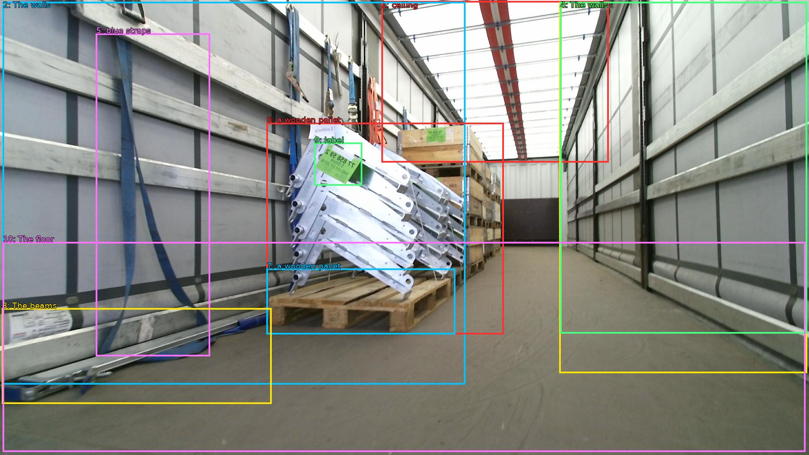
Celoten opis Florence in izvorni podatki
The image shows the interior of a large warehouse with a high ceiling and large windows on both sides. The walls are made of metal panels and there are blue straps hanging from the ceiling. On the right side of the image, there is a wooden pallet with several metal beams stacked on top of each other. The beams appear to be new and unused, with some of them having a green label on them. The floor is made of concrete and the overall appearance of the warehouse is clean and well-maintained.
Opis, regije in surovi odgovori Florenceqwen3.5:27b-q4_K_M
Q4_K_M · 15.556 s · response_received
Celoten surovi zapis{"objects":[{"id":1,"classification":"fixed","reason":"Structural building element."},{"id":2,"classification":"fixed","reason":"Structural building element."},{"id":3,"classification":"fixed","reason":"Structural building element."},{"id":4,"classification":"fixed","reason":"Structural building element."},{"id":5,"classification":"movable","reason":"Straps can be unhooked and moved."},{"id":6,"classification":"movable","reason":"Pallets are designed to be moved."},{"id":7,"classification":"movable","reason":"Pallets are designed to be moved."},{"id":8,"classification":"movable","reason":"Stacked beams can be relocated."},{"id":9,"classification":"movable","reason":"Labels are small and easily removed."},{"id":10,"classification":"fixed","reason":"Structural building element."}]}qwen3.5:4b-q4_K_M
Q4_K_M · 5.473 s · response_received
Celoten surovi zapis{"objects":[{"id":1,"classification":"fixed","reason":"Structural ceiling element of the building."},{"id":2,"classification":"fixed","reason":"Structural wall element of the building."},{"id":3,"classification":"fixed","reason":"Structural wall element of the building."},{"id":4,"classification":"fixed","reason":"Structural wall element of the building."},{"id":5,"classification":"movable","reason":"Straps can be easily moved or removed."},{"id":6,"classification":"movable","reason":"Pallets are standard movable storage units."},{"id":7,"classification":"movable","reason":"Pallets are standard movable storage units."},{"id":8,"classification":"movable","reason":"Stacked beams can be carried or pushed."},{"id":9,"classification":"uncertain","reason":"A small label is hard to classify reliably."},{"id":10,"classification":"fixed","reason":"Structural floor element of the building."}]}gemma3:27b-it-q4_K_M
Q4_K_M · 12.350 s · response_received
Celoten surovi zapis{"objects": [{"id": 1, "classification": "fixed", "reason": "Structural part of the building."}, {"id": 2, "classification": "fixed", "reason": "Structural part of the building."}, {"id": 3, "classification": "fixed", "reason": "Structural part of the building."}, {"id": 4, "classification": "fixed", "reason": "Structural part of the building."}, {"id": 5, "classification": "movable", "reason": "Can be repositioned or removed easily."}, {"id": 6, "classification": "movable", "reason": "Can be moved with a forklift or by hand."}, {"id": 7, "classification": "movable", "reason": "Can be moved with a forklift or by hand."}, {"id": 8, "classification": "movable", "reason": "Likely stacked and rearranged."}, {"id": 9, "classification": "movable", "reason": "Attached to beams, easily repositioned."}, {"id": 10, "classification": "fixed", "reason": "Structural component of the building."}]}| Nabor | Okolje | ID regije | Oznaka Florence | qwen3.5:27b-q4_K_M | qwen3.5:4b-q4_K_M | gemma3:27b-it-q4_K_M | Primerjava |
|---|
| loco | loco-subset-1 | 1 | ceiling | fixed | fixed | fixed | enaki razredi |
| loco | loco-subset-1 | 2 | The walls | fixed | fixed | fixed | enaki razredi |
| loco | loco-subset-1 | 3 | The walls | fixed | fixed | fixed | enaki razredi |
| loco | loco-subset-1 | 4 | The walls | fixed | fixed | fixed | enaki razredi |
| loco | loco-subset-1 | 5 | blue straps | movable | movable | movable | enaki razredi |
| loco | loco-subset-1 | 6 | a wooden pallet | movable | movable | movable | enaki razredi |
| loco | loco-subset-1 | 7 | a wooden pallet | movable | movable | movable | enaki razredi |
| loco | loco-subset-1 | 8 | The beams | movable | movable | movable | enaki razredi |
| loco | loco-subset-1 | 9 | label | movable | uncertain | movable | različni razredi |
| loco | loco-subset-1 | 10 | The floor | fixed | fixed | fixed | enaki razredi |
loco-s1-33733
loco / loco-subset-1
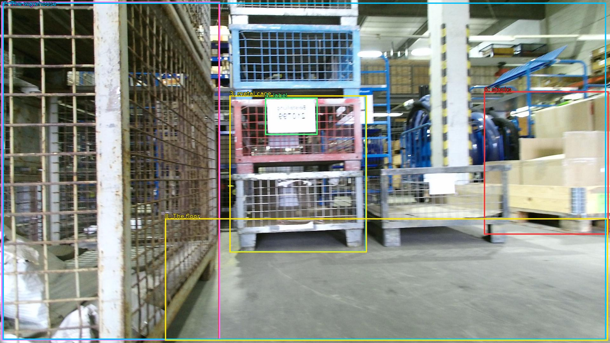
Celoten opis Florence in izvorni podatki
The image shows a large warehouse with multiple metal cages and pallets. The cages are stacked on top of each other and appear to be made of metal wire mesh. In the center of the image, there is a red and blue metal cage with a white label on it. The cage is located in the middle of the warehouse and is surrounded by other metal cages. On the right side of the cage, there are stacks of cardboard boxes and other items. The warehouse appears to be well-stocked with various tools and equipment. The floor is made of concrete and the walls are painted white.
Opis, regije in surovi odgovori Florenceqwen3.5:27b-q4_K_M
Q4_K_M · 8.275 s · response_received
Celoten surovi zapis{"objects":[{"id":1,"classification":"movable","reason":"Metal cages are typically portable storage units."},{"id":2,"classification":"uncertain","reason":"Label 'a red' is ambiguous and lacks object identity."},{"id":3,"classification":"movable","reason":"Metal cages are typically portable storage units."},{"id":4,"classification":"movable","reason":"Labels are small items easily moved or removed."},{"id":5,"classification":"movable","reason":"Metal cages are typically portable storage units."},{"id":6,"classification":"movable","reason":"Stacks of boxes can be repositioned in normal use."},{"id":7,"classification":"fixed","reason":"The warehouse is the structural building itself."},{"id":8,"classification":"fixed","reason":"The floor is a structural building element."}]}qwen3.5:4b-q4_K_M
Q4_K_M · 1.175 s · response_received
Celoten surovi zapis{"objects":[{"id":1,"classification":"movable","reason":"Metal cages can be moved or repositioned in normal use."},{"id":2,"classification":"movable","reason":"A red object is movable unless fixed by visible evidence."},{"id":3,"classification":"movable","reason":"Metal cages are movable objects that can be pushed."},{"id":4,"classification":"movable","reason":"Labels are small, detachable items and thus movable."},{"id":5,"classification":"movable","reason":"Metal cages are movable objects that can be pushed."},{"id":6,"classification":"movable","reason":"Stacks of boxes or items can be moved or repositioned."},{"id":7,"classification":"fixed","reason":"A warehouse is a structural building element and fixed."},{"id":8,"classification":"fixed","reason":"The floor is a structural building element and fixed."}]}gemma3:27b-it-q4_K_M
Q4_K_M · 6.856 s · response_received
Celoten surovi zapis{"objects": [{"id": 1, "classification": "movable", "reason": "Cages are repositioned and stacked."}, {"id": 2, "classification": "movable", "reason": "Part of a movable cage."}, {"id": 3, "classification": "movable", "reason": "A cage can be moved."}, {"id": 4, "classification": "movable", "reason": "Attached to a movable cage."}, {"id": 5, "classification": "movable", "reason": "A cage can be moved."}, {"id": 6, "classification": "movable", "reason": "Stacks of boxes are repositioned."}, {"id": 7, "classification": "fixed", "reason": "Structural building element."}, {"id": 8, "classification": "fixed", "reason": "Structural building element."}]}| Nabor | Okolje | ID regije | Oznaka Florence | qwen3.5:27b-q4_K_M | qwen3.5:4b-q4_K_M | gemma3:27b-it-q4_K_M | Primerjava |
|---|
| loco | loco-subset-1 | 1 | The cages | movable | movable | movable | enaki razredi |
| loco | loco-subset-1 | 2 | a red | uncertain | movable | movable | različni razredi |
| loco | loco-subset-1 | 3 | metal cage | movable | movable | movable | enaki razredi |
| loco | loco-subset-1 | 4 | label | movable | movable | movable | enaki razredi |
| loco | loco-subset-1 | 5 | The cage | movable | movable | movable | enaki razredi |
| loco | loco-subset-1 | 6 | stacks | movable | movable | movable | enaki razredi |
| loco | loco-subset-1 | 7 | The warehouse | fixed | fixed | fixed | enaki razredi |
| loco | loco-subset-1 | 8 | The floor | fixed | fixed | fixed | enaki razredi |
loco-s1-33400
loco / loco-subset-1
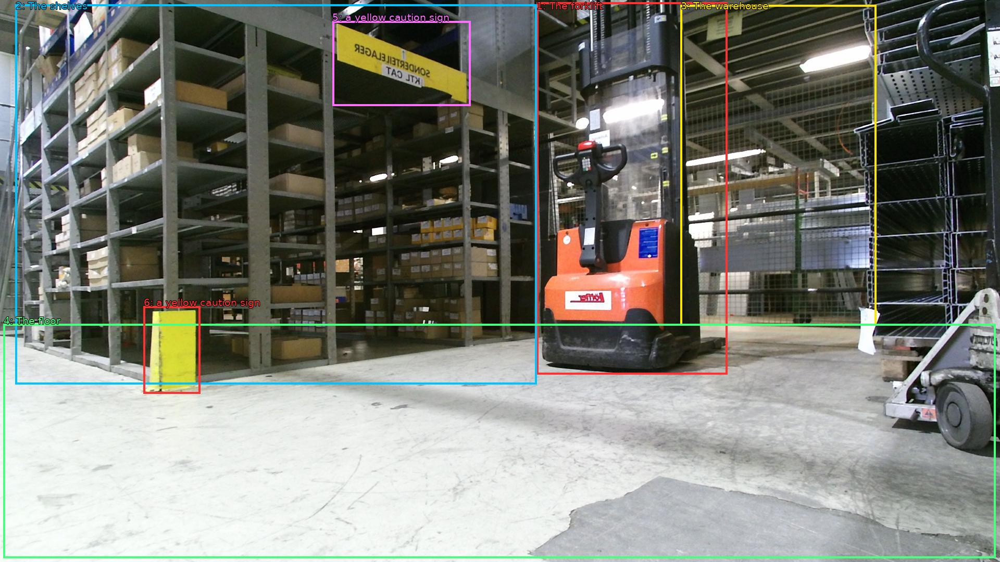
Celoten opis Florence in izvorni podatki
The image shows a large warehouse with a forklift truck parked in the center. The forklift is orange and black in color and has a control panel on the front. It is parked in front of a large metal rack with multiple shelves. The shelves are filled with cardboard boxes of different sizes and colors. The warehouse appears to be well-lit with overhead lights. The floor is made of concrete and there is a yellow caution sign on the left side of the image.
Opis, regije in surovi odgovori Florenceqwen3.5:27b-q4_K_M
Q4_K_M · 6.558 s · response_received
Celoten surovi zapis{"objects":[{"id":1,"classification":"movable","reason":"A forklift is a vehicle designed to be driven."},{"id":2,"classification":"uncertain","reason":"Shelves may be movable or permanently installed; evidence unclear."},{"id":3,"classification":"fixed","reason":"The warehouse is the structural building itself."},{"id":4,"classification":"fixed","reason":"The floor is a structural building element."},{"id":5,"classification":"movable","reason":"Caution signs are portable objects easily repositioned."},{"id":6,"classification":"movable","reason":"Caution signs are portable objects easily repositioned."}]}qwen3.5:4b-q4_K_M
Q4_K_M · 0.970 s · response_received
Celoten surovi zapis{"objects":[{"id":1,"classification":"movable","reason":"Forklifts are designed to be repositioned by operators."},{"id":2,"classification":"uncertain","reason":"Shelves could be fixed racks or movable units without clear evidence."},{"id":3,"classification":"fixed","reason":"A warehouse is a structural building element."},{"id":4,"classification":"fixed","reason":"Concrete floors are structural elements of the building."},{"id":5,"classification":"movable","reason":"Caution signs can be easily moved or replaced."},{"id":6,"classification":"movable","reason":"Caution signs can be easily moved or replaced."}]}gemma3:27b-it-q4_K_M
Q4_K_M · 4.049 s · response_received
Celoten surovi zapis{"objects": [{"id": 1, "classification": "movable", "reason": "A forklift is driven and repositioned."}, {"id": 2, "classification": "fixed", "reason": "Large metal rack; requires dismantling to move."}, {"id": 3, "classification": "fixed", "reason": "The building itself; structural element."}, {"id": 4, "classification": "fixed", "reason": "Structural part of the building."}, {"id": 5, "classification": "movable", "reason": "Can be moved/repositioned by a person."}, {"id": 6, "classification": "movable", "reason": "Can be moved/repositioned by a person."}]}| Nabor | Okolje | ID regije | Oznaka Florence | qwen3.5:27b-q4_K_M | qwen3.5:4b-q4_K_M | gemma3:27b-it-q4_K_M | Primerjava |
|---|
| loco | loco-subset-1 | 1 | The forklift | movable | movable | movable | enaki razredi |
| loco | loco-subset-1 | 2 | The shelves | uncertain | uncertain | fixed | različni razredi |
| loco | loco-subset-1 | 3 | The warehouse | fixed | fixed | fixed | enaki razredi |
| loco | loco-subset-1 | 4 | The floor | fixed | fixed | fixed | enaki razredi |
| loco | loco-subset-1 | 5 | a yellow caution sign | movable | movable | movable | enaki razredi |
| loco | loco-subset-1 | 6 | a yellow caution sign | movable | movable | movable | enaki razredi |
loco-s1-33489
loco / loco-subset-1
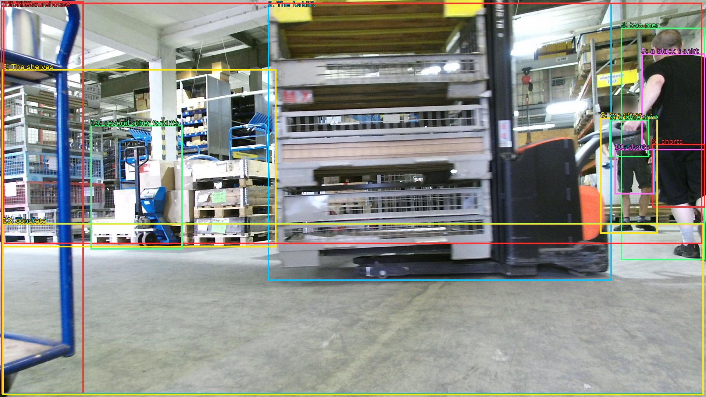
Celoten opis Florence in izvorni podatki
The image shows a large warehouse with a forklift in the center. The forklift is black and orange in color and has multiple shelves on it. The shelves are filled with various items such as cardboard boxes, pallets, and other warehouse equipment. There are two men in the background, one wearing a black t-shirt and shorts and the other wearing a blue shirt and shorts. The warehouse appears to be well-lit with overhead lights. The floor is made of concrete and there are several other forklifts and pallets scattered throughout the space.
Opis, regije in surovi odgovori Florenceqwen3.5:27b-q4_K_M
Q4_K_M · 14.247 s · response_received
Celoten surovi zapis{"objects":[{"id":1,"classification":"movable","reason":"A forklift is a vehicle designed to move."},{"id":2,"classification":"movable","reason":"A forklift is a vehicle designed to move."},{"id":3,"classification":"uncertain","reason":"Shelves may be fixed or movable; no installation evidence."},{"id":4,"classification":"movable","reason":"People can walk and change position freely."},{"id":5,"classification":"movable","reason":"Clothing is worn by people who move."},{"id":6,"classification":"movable","reason":"Clothing is worn by people who move."},{"id":7,"classification":"movable","reason":"Clothing is worn by people who move."},{"id":8,"classification":"movable","reason":"Refers to a person who can move."},{"id":9,"classification":"movable","reason":"Clothing is worn by people who move."},{"id":10,"classification":"movable","reason":"Clothing is worn by people who move."},{"id":11,"classification":"fixed","reason":"A warehouse is a structural building element."},{"id":12,"classification":"fixed","reason":"The floor is a structural building element."},{"id":13,"classification":"fixed","reason":"Concrete describes the fixed floor material."},{"id":14,"classification":"movable","reason":"Forklifts are vehicles designed to move."}]}qwen3.5:4b-q4_K_M
Q4_K_M · 2.072 s · response_received
Celoten surovi zapis{"objects":[{"id":1,"classification":"movable","reason":"A forklift can be driven or pushed to a new location."},{"id":2,"classification":"movable","reason":"A forklift can be driven or pushed to a new location."},{"id":3,"classification":"uncertain","reason":"Shelves may be fixed structures or movable racks without clear evidence."},{"id":4,"classification":"movable","reason":"People are mobile and can move freely within the space."},{"id":5,"classification":"movable","reason":"Clothing items can be easily carried or repositioned."},{"id":6,"classification":"movable","reason":"Clothing items can be easily carried or repositioned."},{"id":7,"classification":"movable","reason":"Clothing items can be easily carried or repositioned."},{"id":8,"classification":"uncertain","reason":"Indefinite reference implies a person, but identity is unclear."},{"id":9,"classification":"movable","reason":"Clothing items can be easily carried or repositioned."},{"id":10,"classification":"movable","reason":"Clothing items can be easily carried or repositioned."},{"id":11,"classification":"fixed","reason":"A warehouse is a permanent structural building element."},{"id":12,"classification":"fixed","reason":"The floor is a structural building element that cannot be moved."},{"id":13,"classification":"fixed","reason":"Concrete is a structural material forming the building's foundation."},{"id":14,"classification":"movable","reason":"Forklifts are mobile vehicles designed to be repositioned."}]}gemma3:27b-it-q4_K_M
Q4_K_M · 7.775 s · response_received
Celoten surovi zapis{"objects": [{"id": 1, "classification": "movable", "reason": "A forklift is designed to be moved."}, {"id": 2, "classification": "movable", "reason": "A forklift is designed to be moved."}, {"id": 3, "classification": "uncertain", "reason": "Shelves may be fixed or movable depending on installation."}, {"id": 4, "classification": "movable", "reason": "People can move around freely."}, {"id": 5, "classification": "movable", "reason": "Clothing is carried or worn."}, {"id": 6, "classification": "movable", "reason": "Clothing is carried or worn."}, {"id": 7, "classification": "movable", "reason": "Clothing is carried or worn."}, {"id": 8, "classification": "movable", "reason": "Refers to one of the people, thus movable."}, {"id": 9, "classification": "movable", "reason": "Clothing is carried or worn."}, {"id": 10, "classification": "movable", "reason": "Clothing is carried or worn."}, {"id": 11, "classification": "fixed", "reason": "The warehouse is a structural building element."}, {"id": 12, "classification": "fixed", "reason": "The floor is a structural building element."}, {"id": 13, "classification": "fixed", "reason": "Concrete is part of the floor structure."}, {"id": 14, "classification": "movable", "reason": "Forklifts are designed to be moved."}]}| Nabor | Okolje | ID regije | Oznaka Florence | qwen3.5:27b-q4_K_M | qwen3.5:4b-q4_K_M | gemma3:27b-it-q4_K_M | Primerjava |
|---|
| loco | loco-subset-1 | 1 | forklift | movable | movable | movable | enaki razredi |
| loco | loco-subset-1 | 2 | The forklift | movable | movable | movable | enaki razredi |
| loco | loco-subset-1 | 3 | The shelves | uncertain | uncertain | uncertain | enaki razredi |
| loco | loco-subset-1 | 4 | two men | movable | movable | movable | enaki razredi |
| loco | loco-subset-1 | 5 | a black t-shirt | movable | movable | movable | enaki razredi |
| loco | loco-subset-1 | 6 | shorts | movable | movable | movable | enaki razredi |
| loco | loco-subset-1 | 7 | shorts | movable | movable | movable | enaki razredi |
| loco | loco-subset-1 | 8 | the other | movable | uncertain | movable | različni razredi |
| loco | loco-subset-1 | 9 | a blue shirt | movable | movable | movable | enaki razredi |
| loco | loco-subset-1 | 10 | shorts | movable | movable | movable | enaki razredi |
| loco | loco-subset-1 | 11 | The warehouse | fixed | fixed | fixed | enaki razredi |
| loco | loco-subset-1 | 12 | The floor | fixed | fixed | fixed | enaki razredi |
| loco | loco-subset-1 | 13 | concrete | fixed | fixed | fixed | enaki razredi |
| loco | loco-subset-1 | 14 | several other forklifts | movable | movable | movable | enaki razredi |
loco-s1-33218
loco / loco-subset-1

Celoten opis Florence in izvorni podatki
The image shows a large warehouse with multiple rows of wooden pallets stacked on top of each other. The pallets are of different sizes and colors, and they are arranged in a neat and orderly manner. On the left side of the image, there is a large metal cabinet with a green label on it, and on the right side, there are several smaller pallets with labels on them. The floor is made of concrete, and the walls are painted white. The warehouse appears to be well-lit with fluorescent lights.
Opis, regije in surovi odgovori Florenceqwen3.5:27b-q4_K_M
Q4_K_M · 9.005 s · response_received
Celoten surovi zapis{"objects":[{"id":1,"classification":"movable","reason":"Pallets are designed to be moved."},{"id":2,"classification":"movable","reason":"Pallets are designed to be moved."},{"id":3,"classification":"movable","reason":"Pallets are designed to be moved."},{"id":4,"classification":"uncertain","reason":"Large cabinet lacks visible installation evidence."},{"id":5,"classification":"movable","reason":"Labels are small, detachable items."},{"id":6,"classification":"movable","reason":"Smaller pallets are movable storage units."},{"id":7,"classification":"fixed","reason":"Structural building element."},{"id":8,"classification":"fixed","reason":"Structural building element."},{"id":9,"classification":"fixed","reason":"The warehouse is a structural building."}]}qwen3.5:4b-q4_K_M
Q4_K_M · 4.141 s · response_received
Celoten surovi zapis{"objects":[{"id":1,"classification":"movable","reason":"Pallets can be pushed or repositioned easily."},{"id":2,"classification":"movable","reason":"Pallets can be pushed or repositioned easily."},{"id":3,"classification":"movable","reason":"Pallets can be pushed or repositioned easily."},{"id":4,"classification":"uncertain","reason":"Permanent installation is not established for the cabinet."},{"id":5,"classification":"movable","reason":"Labels are small objects that can be moved."},{"id":6,"classification":"movable","reason":"Pallets can be pushed or repositioned easily."},{"id":7,"classification":"fixed","reason":"Structural part of the building floor."},{"id":8,"classification":"fixed","reason":"Structural part of the building walls."},{"id":9,"classification":"uncertain","reason":"Label refers to location, not a movable object."}]}gemma3:27b-it-q4_K_M
Q4_K_M · 8.704 s · response_received
Celoten surovi zapis{"objects": [{"id": 1, "classification": "movable", "reason": "Pallets are repositioned during warehouse operations."}, {"id": 2, "classification": "movable", "reason": "Pallets are repositioned during warehouse operations."}, {"id": 3, "classification": "movable", "reason": "Pallets are repositioned during warehouse operations."}, {"id": 4, "classification": "uncertain", "reason": "Installation not evident; could be movable or fixed."}, {"id": 5, "classification": "movable", "reason": "A label is easily moved or removed."}, {"id": 6, "classification": "movable", "reason": "Pallets are repositioned during warehouse operations."}, {"id": 7, "classification": "fixed", "reason": "Structural element of the building."}, {"id": 8, "classification": "fixed", "reason": "Structural element of the building."}, {"id": 9, "classification": "fixed", "reason": "The building itself; not repositionable."}]}| Nabor | Okolje | ID regije | Oznaka Florence | qwen3.5:27b-q4_K_M | qwen3.5:4b-q4_K_M | gemma3:27b-it-q4_K_M | Primerjava |
|---|
| loco | loco-subset-1 | 1 | The pallets | movable | movable | movable | enaki razredi |
| loco | loco-subset-1 | 2 | The pallets | movable | movable | movable | enaki razredi |
| loco | loco-subset-1 | 3 | The pallets | movable | movable | movable | enaki razredi |
| loco | loco-subset-1 | 4 | a large metal cabinet | uncertain | uncertain | uncertain | enaki razredi |
| loco | loco-subset-1 | 5 | label | movable | movable | movable | enaki razredi |
| loco | loco-subset-1 | 6 | several smaller pallets | movable | movable | movable | enaki razredi |
| loco | loco-subset-1 | 7 | The floor | fixed | fixed | fixed | enaki razredi |
| loco | loco-subset-1 | 8 | the walls | fixed | fixed | fixed | enaki razredi |
| loco | loco-subset-1 | 9 | The warehouse | fixed | uncertain | fixed | različni razredi |
loco-s1-33469
loco / loco-subset-1

Celoten opis Florence in izvorni podatki
The image shows a large warehouse with a high ceiling and concrete floor. The warehouse appears to be empty, with no people or other objects visible. In the center of the image, there is a large metal rack with various items on it. On the right side of the rack, there are several pallets stacked on top of each other. In front of the pallets, there seems to be a stack of wooden planks. The pallets are arranged in a neat and orderly manner, and there are a few other items scattered around the room. The walls and ceiling are made of concrete, and the overall atmosphere of the warehouse is industrial and clean.
Opis, regije in surovi odgovori Florenceqwen3.5:27b-q4_K_M
Q4_K_M · 7.811 s · response_received
Celoten surovi zapis{"objects":[{"id":1,"classification":"fixed","reason":"Structural building element."},{"id":2,"classification":"uncertain","reason":"Permanent installation not established from name alone."},{"id":3,"classification":"movable","reason":"Pallets are designed to be moved by forklifts."},{"id":4,"classification":"movable","reason":"Stacks of items can be repositioned in normal use."},{"id":5,"classification":"movable","reason":"Planks are loose materials easily carried or pushed."},{"id":6,"classification":"movable","reason":"Pallets are designed to be moved by forklifts."},{"id":7,"classification":"fixed","reason":"Structural building element."}]}qwen3.5:4b-q4_K_M
Q4_K_M · 1.007 s · response_received
Celoten surovi zapis{"objects":[{"id":1,"classification":"fixed","reason":"Structural floor element of the building."},{"id":2,"classification":"movable","reason":"Industrial racks are typically movable units."},{"id":3,"classification":"movable","reason":"Pallets can be easily pushed or repositioned."},{"id":4,"classification":"movable","reason":"Stacks of goods can be moved by machinery."},{"id":5,"classification":"movable","reason":"Planks are loose items that can be relocated."},{"id":6,"classification":"movable","reason":"Pallets can be easily pushed or repositioned."},{"id":7,"classification":"fixed","reason":"Structural wall element of the building."}]}gemma3:27b-it-q4_K_M
Q4_K_M · 4.424 s · response_received
Celoten surovi zapis{"objects": [{"id": 1, "classification": "fixed", "reason": "Structural building element."}, {"id": 2, "classification": "movable", "reason": "Can be repositioned within the warehouse."}, {"id": 3, "classification": "movable", "reason": "Pallets are typically moved by forklifts."}, {"id": 4, "classification": "movable", "reason": "A stack of planks can be relocated."}, {"id": 5, "classification": "movable", "reason": "Planks can be carried or moved."}, {"id": 6, "classification": "movable", "reason": "Pallets are typically moved by forklifts."}, {"id": 7, "classification": "fixed", "reason": "Structural building element."}]}| Nabor | Okolje | ID regije | Oznaka Florence | qwen3.5:27b-q4_K_M | qwen3.5:4b-q4_K_M | gemma3:27b-it-q4_K_M | Primerjava |
|---|
| loco | loco-subset-1 | 1 | floor | fixed | fixed | fixed | enaki razredi |
| loco | loco-subset-1 | 2 | a large metal rack | uncertain | movable | movable | različni razredi |
| loco | loco-subset-1 | 3 | several pallets | movable | movable | movable | enaki razredi |
| loco | loco-subset-1 | 4 | a stack | movable | movable | movable | enaki razredi |
| loco | loco-subset-1 | 5 | planks | movable | movable | movable | enaki razredi |
| loco | loco-subset-1 | 6 | The pallets | movable | movable | movable | enaki razredi |
| loco | loco-subset-1 | 7 | The walls | fixed | fixed | fixed | enaki razredi |
loco-s1-34185
loco / loco-subset-1

Celoten opis Florence in izvorni podatki
The image shows a large warehouse with a large metal structure in the center. The structure appears to be a part of a larger machine or equipment, possibly a crane or a crane arm. It is mounted on a wooden pallet and is secured with blue straps. On the right side of the image, there are several pallets stacked on top of each other. In the background, there is a man working on a machine, possibly in the process of assembling or moving the structure. The warehouse has a high ceiling with a skylight, allowing natural light to enter.
Opis, regije in surovi odgovori Florenceqwen3.5:27b-q4_K_M
Q4_K_M · 7.860 s · response_received
Celoten surovi zapis{"objects":[{"id":1,"classification":"uncertain","reason":"No visible evidence of permanent installation."},{"id":2,"classification":"movable","reason":"Pallets are designed to be moved by forklifts."},{"id":3,"classification":"movable","reason":"Pallets are designed to be moved by forklifts."},{"id":4,"classification":"movable","reason":"A person can walk and reposition themselves."},{"id":5,"classification":"uncertain","reason":"Machines vary; installation status is not established."},{"id":6,"classification":"fixed","reason":"The warehouse is a structural building element."},{"id":7,"classification":"fixed","reason":"The warehouse is a structural building element."}]}qwen3.5:4b-q4_K_M
Q4_K_M · 1.001 s · response_received
Celoten surovi zapis{"objects":[{"id":1,"classification":"movable","reason":"Secured on a pallet, can be moved by workers."},{"id":2,"classification":"movable","reason":"Pallets are standard movable storage units."},{"id":3,"classification":"movable","reason":"Pallets are standard movable storage units."},{"id":4,"classification":"movable","reason":"A person is inherently movable and transient."},{"id":5,"classification":"movable","reason":"Machine on a pallet can be repositioned by workers."},{"id":6,"classification":"fixed","reason":"Structural building element of the warehouse."},{"id":7,"classification":"fixed","reason":"Structural building element of the warehouse."}]}gemma3:27b-it-q4_K_M
Q4_K_M · 7.183 s · response_received
Celoten surovi zapis{"objects": [{"id": 1, "classification": "uncertain", "reason": "Large structure; installation not confirmed."}, {"id": 2, "classification": "movable", "reason": "Pallets are routinely moved with forklifts."}, {"id": 3, "classification": "movable", "reason": "Pallets are routinely moved with forklifts."}, {"id": 4, "classification": "movable", "reason": "People can move around freely."}, {"id": 5, "classification": "uncertain", "reason": "Machine's installation is not established; on pallets."}, {"id": 6, "classification": "fixed", "reason": "Structural building element."}, {"id": 7, "classification": "fixed", "reason": "Structural building element."}]}| Nabor | Okolje | ID regije | Oznaka Florence | qwen3.5:27b-q4_K_M | qwen3.5:4b-q4_K_M | gemma3:27b-it-q4_K_M | Primerjava |
|---|
| loco | loco-subset-1 | 1 | The structure | uncertain | movable | uncertain | različni razredi |
| loco | loco-subset-1 | 2 | several pallets | movable | movable | movable | enaki razredi |
| loco | loco-subset-1 | 3 | several pallets | movable | movable | movable | enaki razredi |
| loco | loco-subset-1 | 4 | a man | movable | movable | movable | enaki razredi |
| loco | loco-subset-1 | 5 | a machine | uncertain | movable | uncertain | različni razredi |
| loco | loco-subset-1 | 6 | The warehouse | fixed | fixed | fixed | enaki razredi |
| loco | loco-subset-1 | 7 | The warehouse | fixed | fixed | fixed | enaki razredi |
loco-s1-34018
loco / loco-subset-1

Celoten opis Florence in izvorni podatki
The image shows an empty warehouse with multiple levels of storage. The floor is made of concrete and the walls are painted white. On the right side of the image, there are several large metal cages stacked on top of each other. The cages are of different sizes and colors, including blue, red, and green. In the center of the room, there is a forklift with a red handle. The forklift is moving through the cages, and there are cardboard boxes and pallets scattered around the room. The room appears to be well-lit with fluorescent lights on the ceiling.
Opis, regije in surovi odgovori Florenceqwen3.5:27b-q4_K_M
Q4_K_M · 9.945 s · response_received
Celoten surovi zapis{"objects":[{"id":1,"classification":"fixed","reason":"Structural building element forming the ground."},{"id":2,"classification":"movable","reason":"Metal cages can be moved by machinery."},{"id":3,"classification":"movable","reason":"Metal cages can be moved by machinery."},{"id":4,"classification":"movable","reason":"Cages are movable storage units."},{"id":5,"classification":"movable","reason":"Forklift is a mobile vehicle."},{"id":6,"classification":"movable","reason":"Forklift is a mobile vehicle."},{"id":7,"classification":"movable","reason":"Forklift is a mobile vehicle."},{"id":8,"classification":"movable","reason":"Cardboard boxes are easily carried or pushed."},{"id":9,"classification":"movable","reason":"Pallets are designed to be moved by forklifts."},{"id":10,"classification":"fixed","reason":"The room represents the structural building space."}]}qwen3.5:4b-q4_K_M
Q4_K_M · 1.459 s · response_received
Celoten surovi zapis{"objects":[{"id":1,"classification":"fixed","reason":"Structural floor element of the building."},{"id":2,"classification":"movable","reason":"Cages can be pushed or repositioned in normal use."},{"id":3,"classification":"movable","reason":"Cages can be pushed or repositioned in normal use."},{"id":4,"classification":"movable","reason":"Cages can be pushed or repositioned in normal use."},{"id":5,"classification":"movable","reason":"A forklift is designed to be moved by operators."},{"id":6,"classification":"movable","reason":"A forklift is designed to be moved by operators."},{"id":7,"classification":"movable","reason":"A forklift is designed to be moved by operators."},{"id":8,"classification":"movable","reason":"Cardboard boxes can be easily carried or pushed."},{"id":9,"classification":"movable","reason":"Pallets can be easily carried or pushed."},{"id":10,"classification":"fixed","reason":"Structural boundaries of the room itself."}]}gemma3:27b-it-q4_K_M
Q4_K_M · 5.697 s · response_received
Celoten surovi zapis{"objects": [{"id": 1, "classification": "fixed", "reason": "Structural building element."}, {"id": 2, "classification": "movable", "reason": "Can be repositioned within the warehouse."}, {"id": 3, "classification": "movable", "reason": "Can be repositioned within the warehouse."}, {"id": 4, "classification": "movable", "reason": "Cages are movable."}, {"id": 5, "classification": "movable", "reason": "A vehicle for moving objects."}, {"id": 6, "classification": "movable", "reason": "A vehicle for moving objects."}, {"id": 7, "classification": "movable", "reason": "A vehicle for moving objects."}, {"id": 8, "classification": "movable", "reason": "Easily carried or moved."}, {"id": 9, "classification": "movable", "reason": "Can be moved by forklift or person."}, {"id": 10, "classification": "fixed", "reason": "Structural building element."}]}| Nabor | Okolje | ID regije | Oznaka Florence | qwen3.5:27b-q4_K_M | qwen3.5:4b-q4_K_M | gemma3:27b-it-q4_K_M | Primerjava |
|---|
| loco | loco-subset-1 | 1 | The floor | fixed | fixed | fixed | enaki razredi |
| loco | loco-subset-1 | 2 | several large metal cages | movable | movable | movable | enaki razredi |
| loco | loco-subset-1 | 3 | several large metal cages | movable | movable | movable | enaki razredi |
| loco | loco-subset-1 | 4 | The cages | movable | movable | movable | enaki razredi |
| loco | loco-subset-1 | 5 | a forklift | movable | movable | movable | enaki razredi |
| loco | loco-subset-1 | 6 | The forklift | movable | movable | movable | enaki razredi |
| loco | loco-subset-1 | 7 | The forklift | movable | movable | movable | enaki razredi |
| loco | loco-subset-1 | 8 | cardboard boxes | movable | movable | movable | enaki razredi |
| loco | loco-subset-1 | 9 | pallets | movable | movable | movable | enaki razredi |
| loco | loco-subset-1 | 10 | The room | fixed | fixed | fixed | enaki razredi |
loco-s1-33973
loco / loco-subset-1
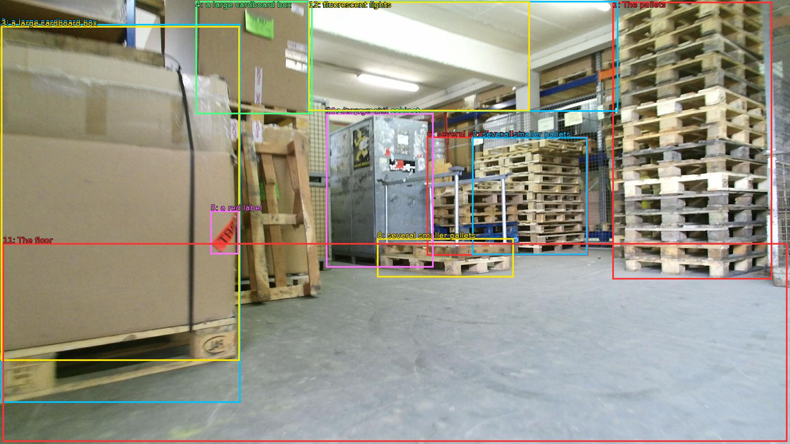
Celoten opis Florence in izvorni podatki
The image shows a large warehouse with multiple stacks of wooden pallets. The pallets are arranged in a neat and orderly manner, with some stacked on top of each other. On the left side of the image, there is a large cardboard box with a red label on it, and on the right side, there are several smaller pallets stacked on a metal rack. In the center of the warehouse, there appears to be a large metal cabinet or storage unit. The floor is made of concrete, and there are fluorescent lights on the ceiling. The overall atmosphere of the space is industrial and warehouse-like.
Opis, regije in surovi odgovori Florenceqwen3.5:27b-q4_K_M
Q4_K_M · 9.788 s · response_received
Celoten surovi zapis{"objects":[{"id":1,"classification":"movable","reason":"Pallets are movable industrial equipment."},{"id":2,"classification":"movable","reason":"Cardboard boxes are easily carried or moved."},{"id":3,"classification":"movable","reason":"Cardboard boxes are easily carried or moved."},{"id":4,"classification":"movable","reason":"Cardboard boxes are easily carried or moved."},{"id":5,"classification":"movable","reason":"Labels are small and easily repositioned."},{"id":6,"classification":"movable","reason":"Pallets are movable industrial equipment."},{"id":7,"classification":"movable","reason":"Pallets are movable industrial equipment."},{"id":8,"classification":"movable","reason":"Pallets are movable industrial equipment."},{"id":9,"classification":"uncertain","reason":"Cabinet installation status is not established."},{"id":10,"classification":"uncertain","reason":"Storage unit installation status is not established."},{"id":11,"classification":"fixed","reason":"Structural building element of the warehouse."},{"id":12,"classification":"fixed","reason":"Permanently installed ceiling lighting fixture."},{"id":13,"classification":"fixed","reason":"Permanently installed ceiling lighting fixture."}]}qwen3.5:4b-q4_K_M
Q4_K_M · 1.789 s · response_received
Celoten surovi zapis{"objects":[{"id":1,"classification":"movable","reason":"Pallets can be easily moved or stacked elsewhere."},{"id":2,"classification":"movable","reason":"Cardboard boxes are movable by default unless fixed."},{"id":3,"classification":"movable","reason":"Cardboard boxes are movable by default unless fixed."},{"id":4,"classification":"movable","reason":"Cardboard boxes are movable by default unless fixed."},{"id":5,"classification":"movable","reason":"A label is a small, easily repositioned object."},{"id":6,"classification":"movable","reason":"Pallets can be moved or reconfigured in normal use."},{"id":7,"classification":"movable","reason":"Pallets can be moved or reconfigured in normal use."},{"id":8,"classification":"movable","reason":"Pallets can be moved or reconfigured in normal use."},{"id":9,"classification":"uncertain","reason":"Large metal cabinets may be fixed or movable without clear evidence."},{"id":10,"classification":"uncertain","reason":"Storage units may be fixed or movable without clear evidence."},{"id":11,"classification":"fixed","reason":"Floor is a structural building element."},{"id":12,"classification":"fixed","reason":"Fluorescent lights are typically permanently installed fixtures."},{"id":13,"classification":"fixed","reason":"Fluorescent lights are typically permanently installed fixtures."}]}gemma3:27b-it-q4_K_M
Q4_K_M · 7.317 s · response_received
Celoten surovi zapis{"objects": [{"id": 1, "classification": "movable", "reason": "Pallets are repositioned during use."}, {"id": 2, "classification": "movable", "reason": "Cardboard boxes can be moved easily."}, {"id": 3, "classification": "movable", "reason": "Cardboard boxes can be moved easily."}, {"id": 4, "classification": "movable", "reason": "Cardboard boxes can be moved easily."}, {"id": 5, "classification": "movable", "reason": "A label is attached to a movable object."}, {"id": 6, "classification": "movable", "reason": "Pallets are repositioned during use."}, {"id": 7, "classification": "movable", "reason": "Pallets are repositioned during use."}, {"id": 8, "classification": "movable", "reason": "Pallets are repositioned during use."}, {"id": 9, "classification": "uncertain", "reason": "Size and description insufficient to confirm installation."}, {"id": 10, "classification": "uncertain", "reason": "Installation is not explicitly stated."}, {"id": 11, "classification": "fixed", "reason": "Structural element of the building."}, {"id": 12, "classification": "fixed", "reason": "Permanently installed lighting fixture."}, {"id": 13, "classification": "fixed", "reason": "Permanently installed lighting fixture."}]}| Nabor | Okolje | ID regije | Oznaka Florence | qwen3.5:27b-q4_K_M | qwen3.5:4b-q4_K_M | gemma3:27b-it-q4_K_M | Primerjava |
|---|
| loco | loco-subset-1 | 1 | The pallets | movable | movable | movable | enaki razredi |
| loco | loco-subset-1 | 2 | a large cardboard box | movable | movable | movable | enaki razredi |
| loco | loco-subset-1 | 3 | a large cardboard box | movable | movable | movable | enaki razredi |
| loco | loco-subset-1 | 4 | a large cardboard box | movable | movable | movable | enaki razredi |
| loco | loco-subset-1 | 5 | a red label | movable | movable | movable | enaki razredi |
| loco | loco-subset-1 | 6 | several smaller pallets | movable | movable | movable | enaki razredi |
| loco | loco-subset-1 | 7 | several smaller pallets | movable | movable | movable | enaki razredi |
| loco | loco-subset-1 | 8 | several smaller pallets | movable | movable | movable | enaki razredi |
| loco | loco-subset-1 | 9 | a large metal cabinet | uncertain | uncertain | uncertain | enaki razredi |
| loco | loco-subset-1 | 10 | storage unit | uncertain | uncertain | uncertain | enaki razredi |
| loco | loco-subset-1 | 11 | The floor | fixed | fixed | fixed | enaki razredi |
| loco | loco-subset-1 | 12 | fluorescent lights | fixed | fixed | fixed | enaki razredi |
| loco | loco-subset-1 | 13 | fluorescent lights | fixed | fixed | fixed | enaki razredi |
loco-s1-33325
loco / loco-subset-1

Celoten opis Florence in izvorni podatki
The image shows a large warehouse with a high ceiling and concrete floor. The warehouse is filled with various items, including pallets, boxes, and other storage equipment. On the left side of the image, there is a blue forklift truck with a stack of cardboard boxes on it. The forklift is moving through the warehouse, and on the right side, there are several other pallets and carts. The walls are painted white, and there are pipes and ducts running along the ceiling. There is a notice board on the wall with papers pinned to it, and a fire extinguisher is visible in the background. The overall atmosphere of the warehouse appears to be busy and organized.
Opis, regije in surovi odgovori Florenceqwen3.5:27b-q4_K_M
Q4_K_M · 6.080 s · response_received
Celoten surovi zapis{"objects":[{"id":1,"classification":"fixed","reason":"Structural building element."},{"id":2,"classification":"fixed","reason":"Structural building element."},{"id":3,"classification":"uncertain","reason":"Building label lacks specific installation evidence."},{"id":4,"classification":"movable","reason":"Vehicle designed to be driven and repositioned."},{"id":5,"classification":"movable","reason":"Vehicle designed to be driven and repositioned."},{"id":6,"classification":"movable","reason":"Vehicle designed to be driven and repositioned."},{"id":7,"classification":"movable","reason":"Vehicle designed to be driven and repositioned."},{"id":8,"classification":"movable","reason":"Pallets are portable storage platforms."},{"id":9,"classification":"movable","reason":"Pallets are portable storage platforms."},{"id":10,"classification":"movable","reason":"Carts are designed to be pushed."},{"id":11,"classification":"fixed","reason":"Structural building element."},{"id":12,"classification":"uncertain","reason":"Installation method not visibly confirmed."},{"id":13,"classification":"uncertain","reason":"Installation method not visibly confirmed."},{"id":14,"classification":"uncertain","reason":"Mounting evidence not visible."},{"id":15,"classification":"uncertain","reason":"Mounting evidence not visible."}]}qwen3.5:4b-q4_K_M
Q4_K_M · 2.094 s · response_received
Celoten surovi zapis{"objects":[{"id":1,"classification":"fixed","reason":"Structural ceiling element of the building."},{"id":2,"classification":"fixed","reason":"Structural floor element of the building."},{"id":3,"classification":"fixed","reason":"The entire building structure itself."},{"id":4,"classification":"movable","reason":"A forklift truck can be driven to a new location."},{"id":5,"classification":"movable","reason":"A forklift truck can be driven to a new location."},{"id":6,"classification":"movable","reason":"A forklift truck can be driven to a new location."},{"id":7,"classification":"movable","reason":"A forklift truck can be driven to a new location."},{"id":8,"classification":"movable","reason":"Pallets can be stacked, moved, or repositioned."},{"id":9,"classification":"movable","reason":"Pallets can be stacked, moved, or repositioned."},{"id":10,"classification":"movable","reason":"Carts can be pushed or pulled to new locations."},{"id":11,"classification":"fixed","reason":"Structural wall element of the building."},{"id":12,"classification":"fixed","reason":"Pipes are typically permanently installed infrastructure."},{"id":13,"classification":"fixed","reason":"Ducts are typically permanently installed infrastructure."},{"id":14,"classification":"uncertain","reason":"Mounted boards can be fixed or temporarily attached."},{"id":15,"classification":"movable","reason":"Fire extinguishers can be moved and repositioned."}]}gemma3:27b-it-q4_K_M
Q4_K_M · 8.088 s · response_received
Celoten surovi zapis{"objects": [{"id": 1, "classification": "fixed", "reason": "Structural part of the building."}, {"id": 2, "classification": "fixed", "reason": "Structural part of the building."}, {"id": 3, "classification": "uncertain", "reason": "General descriptor; not a specific object."}, {"id": 4, "classification": "movable", "reason": "Can be driven and repositioned."}, {"id": 5, "classification": "movable", "reason": "Can be driven and repositioned."}, {"id": 6, "classification": "movable", "reason": "A type of movable vehicle."}, {"id": 7, "classification": "movable", "reason": "A type of movable vehicle."}, {"id": 8, "classification": "movable", "reason": "Can be moved with a forklift."}, {"id": 9, "classification": "movable", "reason": "Can be moved with a forklift."}, {"id": 10, "classification": "movable", "reason": "Designed to be wheeled around."}, {"id": 11, "classification": "fixed", "reason": "Structural part of the building."}, {"id": 12, "classification": "fixed", "reason": "Integrated into building structure."}, {"id": 13, "classification": "fixed", "reason": "Integrated into building structure."}, {"id": 14, "classification": "uncertain", "reason": "Installation not explicitly visible."}, {"id": 15, "classification": "movable", "reason": "Can be carried or moved."}]}| Nabor | Okolje | ID regije | Oznaka Florence | qwen3.5:27b-q4_K_M | qwen3.5:4b-q4_K_M | gemma3:27b-it-q4_K_M | Primerjava |
|---|
| loco | loco-subset-1 | 1 | ceiling | fixed | fixed | fixed | enaki razredi |
| loco | loco-subset-1 | 2 | floor | fixed | fixed | fixed | enaki razredi |
| loco | loco-subset-1 | 3 | The warehouse | uncertain | fixed | uncertain | različni razredi |
| loco | loco-subset-1 | 4 | a blue forklift truck | movable | movable | movable | enaki razredi |
| loco | loco-subset-1 | 5 | a blue forklift truck | movable | movable | movable | enaki razredi |
| loco | loco-subset-1 | 6 | The forklift | movable | movable | movable | enaki razredi |
| loco | loco-subset-1 | 7 | The forklift | movable | movable | movable | enaki razredi |
| loco | loco-subset-1 | 8 | several other pallets | movable | movable | movable | enaki razredi |
| loco | loco-subset-1 | 9 | several other pallets | movable | movable | movable | enaki razredi |
| loco | loco-subset-1 | 10 | carts | movable | movable | movable | enaki razredi |
| loco | loco-subset-1 | 11 | The walls | fixed | fixed | fixed | enaki razredi |
| loco | loco-subset-1 | 12 | pipes | uncertain | fixed | fixed | različni razredi |
| loco | loco-subset-1 | 13 | ducts | uncertain | fixed | fixed | različni razredi |
| loco | loco-subset-1 | 14 | a notice board | uncertain | uncertain | uncertain | enaki razredi |
| loco | loco-subset-1 | 15 | a fire extinguisher | uncertain | movable | movable | različni razredi |
loco-s1-34005
loco / loco-subset-1
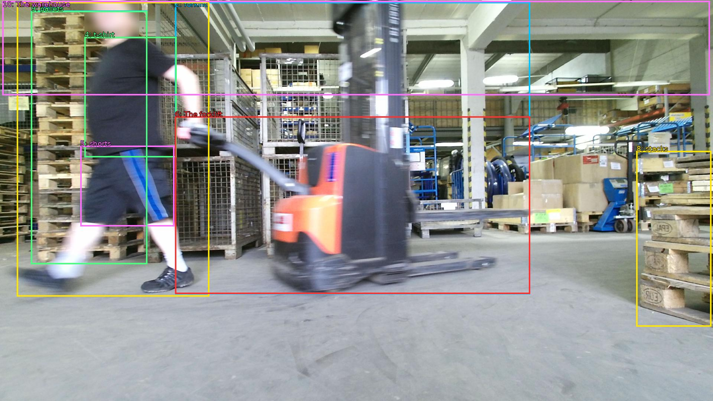
Celoten opis Florence in izvorni podatki
The image shows a man walking in a warehouse with a forklift. The man is wearing a black t-shirt, blue shorts, and black shoes. He is holding onto the handle of the forklift with both hands and appears to be moving it. The forklift is orange and black in color and is parked in the center of the warehouse. In the background, there are stacks of wooden pallets and other warehouse equipment. The warehouse has a high ceiling with overhead lights.
Opis, regije in surovi odgovori Florenceqwen3.5:27b-q4_K_M
Q4_K_M · 5.276 s · response_received
Celoten surovi zapis{"objects":[{"id":1,"classification":"movable","reason":"People can move freely between visits."},{"id":2,"classification":"movable","reason":"Forklifts are vehicles designed to be driven."},{"id":3,"classification":"movable","reason":"People can move freely between visits."},{"id":4,"classification":"movable","reason":"Clothing is worn and moved by people."},{"id":5,"classification":"movable","reason":"Clothing is worn and moved by people."},{"id":6,"classification":"movable","reason":"Forklifts are vehicles designed to be driven."},{"id":7,"classification":"movable","reason":"Stacks of goods are frequently repositioned in warehouses."},{"id":8,"classification":"movable","reason":"Stacks of goods are frequently repositioned in warehouses."},{"id":9,"classification":"movable","reason":"Pallets are used to transport and store movable goods."},{"id":10,"classification":"fixed","reason":"A warehouse is a structural building element."}]}qwen3.5:4b-q4_K_M
Q4_K_M · 4.428 s · response_received
Celoten surovi zapis{"objects":[{"id":1,"classification":"movable","reason":"A person can move or change position freely."},{"id":2,"classification":"movable","reason":"Forklifts are designed to be pushed and repositioned."},{"id":3,"classification":"movable","reason":"A person can move or change position freely."},{"id":4,"classification":"movable","reason":"Clothing items can be easily carried or moved."},{"id":5,"classification":"movable","reason":"Clothing items can be easily carried or moved."},{"id":6,"classification":"movable","reason":"Forklifts are designed to be pushed and repositioned."},{"id":7,"classification":"movable","reason":"Stacks of goods can be stacked, moved, or rearranged."},{"id":8,"classification":"movable","reason":"Stacks of goods can be stacked, moved, or rearranged."},{"id":9,"classification":"movable","reason":"Pallets are standard objects designed to be moved."},{"id":10,"classification":"fixed","reason":"The warehouse is a structural building element."}]}gemma3:27b-it-q4_K_M
Q4_K_M · 9.004 s · response_received
Celoten surovi zapis{"objects": [{"id": 1, "classification": "movable", "reason": "A person can move themselves."}, {"id": 2, "classification": "movable", "reason": "Can be driven and repositioned."}, {"id": 3, "classification": "movable", "reason": "A person can move themselves."}, {"id": 4, "classification": "movable", "reason": "Clothing is carried or worn."}, {"id": 5, "classification": "movable", "reason": "Clothing is carried or worn."}, {"id": 6, "classification": "movable", "reason": "Can be driven and repositioned."}, {"id": 7, "classification": "movable", "reason": "Stacks can be rearranged."}, {"id": 8, "classification": "movable", "reason": "Stacks can be rearranged."}, {"id": 9, "classification": "movable", "reason": "Pallets are moved by forklifts/people."}, {"id": 10, "classification": "fixed", "reason": "Structural building element."}]}| Nabor | Okolje | ID regije | Oznaka Florence | qwen3.5:27b-q4_K_M | qwen3.5:4b-q4_K_M | gemma3:27b-it-q4_K_M | Primerjava |
|---|
| loco | loco-subset-1 | 1 | a man | movable | movable | movable | enaki razredi |
| loco | loco-subset-1 | 2 | forklift | movable | movable | movable | enaki razredi |
| loco | loco-subset-1 | 3 | The man | movable | movable | movable | enaki razredi |
| loco | loco-subset-1 | 4 | t-shirt | movable | movable | movable | enaki razredi |
| loco | loco-subset-1 | 5 | shorts | movable | movable | movable | enaki razredi |
| loco | loco-subset-1 | 6 | The forklift | movable | movable | movable | enaki razredi |
| loco | loco-subset-1 | 7 | stacks | movable | movable | movable | enaki razredi |
| loco | loco-subset-1 | 8 | stacks | movable | movable | movable | enaki razredi |
| loco | loco-subset-1 | 9 | pallets | movable | movable | movable | enaki razredi |
| loco | loco-subset-1 | 10 | The warehouse | fixed | fixed | fixed | enaki razredi |
loco-s1-33791
loco / loco-subset-1
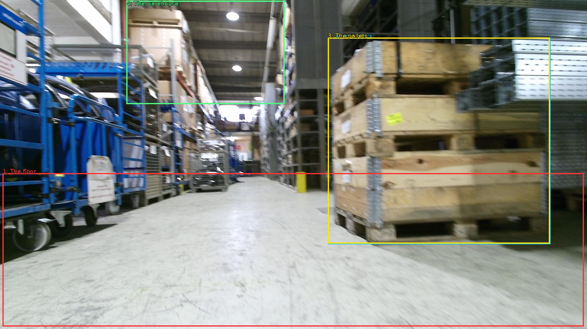
Celoten opis Florence in izvorni podatki
The image shows a large warehouse with a long corridor. The floor is made of concrete and the walls are made of metal. On the left side of the image, there are rows of blue metal shelves with various items stored on them. In the center of the corridor, there is a large stack of wooden pallets. The pallets are stacked on top of each other and appear to be empty. The warehouse has a high ceiling with overhead lights. The image is taken from a low angle, looking down the corridor towards the right side.
Opis, regije in surovi odgovori Florenceqwen3.5:27b-q4_K_M
Q4_K_M · 2.089 s · response_received
Celoten surovi zapis{"objects":[{"id":1,"classification":"fixed","reason":"Structural building element forming the ground."},{"id":2,"classification":"movable","reason":"Stack of items can be repositioned or moved."},{"id":3,"classification":"movable","reason":"Pallets are designed to be carried and moved."},{"id":4,"classification":"fixed","reason":"The warehouse is a permanent structural building."}]}qwen3.5:4b-q4_K_M
Q4_K_M · 0.666 s · response_received
Celoten surovi zapis{"objects":[{"id":1,"classification":"fixed","reason":"Structural floor element of the building."},{"id":2,"classification":"movable","reason":"A stack of pallets can be moved or repositioned."},{"id":3,"classification":"movable","reason":"Pallets are standard movable storage units."},{"id":4,"classification":"fixed","reason":"The warehouse is a structural building element."}]}gemma3:27b-it-q4_K_M
Q4_K_M · 3.230 s · response_received
Celoten surovi zapis{"objects": [{"id": 1, "classification": "fixed", "reason": "Structural building element: the floor."}, {"id": 2, "classification": "movable", "reason": "A stack of items can be rearranged or moved."}, {"id": 3, "classification": "movable", "reason": "Pallets are typically moved by forklifts or people."}, {"id": 4, "classification": "fixed", "reason": "The warehouse is a structural building element."}]}| Nabor | Okolje | ID regije | Oznaka Florence | qwen3.5:27b-q4_K_M | qwen3.5:4b-q4_K_M | gemma3:27b-it-q4_K_M | Primerjava |
|---|
| loco | loco-subset-1 | 1 | The floor | fixed | fixed | fixed | enaki razredi |
| loco | loco-subset-1 | 2 | a large stack | movable | movable | movable | enaki razredi |
| loco | loco-subset-1 | 3 | The pallets | movable | movable | movable | enaki razredi |
| loco | loco-subset-1 | 4 | The warehouse | fixed | fixed | fixed | enaki razredi |
loco-s1-33329
loco / loco-subset-1

Celoten opis Florence in izvorni podatki
The image shows an empty warehouse with a forklift parked on the left side of the image. The forklift is orange in color and has a black handle. It is positioned in front of a large pile of wooden pallets. On the right side, there is a red metal shelving unit with various items on it. In the background, there are several fire extinguishers and a notice board on the wall. The floor is made of concrete and there are pipes running along the ceiling. The warehouse appears to be well-lit with natural light coming in from the windows.
Opis, regije in surovi odgovori Florenceqwen3.5:27b-q4_K_M
Q4_K_M · 4.478 s · response_received
Celoten surovi zapis{"objects":[{"id":1,"classification":"movable","reason":"A forklift is a vehicle designed to move."},{"id":2,"classification":"movable","reason":"A forklift is a vehicle designed to move."},{"id":3,"classification":"uncertain","reason":"Shelving units can be movable or permanently installed."},{"id":4,"classification":"movable","reason":"Fire extinguishers are portable safety devices."},{"id":5,"classification":"movable","reason":"Fire extinguishers are portable safety devices."},{"id":6,"classification":"movable","reason":"Fire extinguishers are portable safety devices."},{"id":7,"classification":"uncertain","reason":"Board could be mounted or a movable easel."},{"id":8,"classification":"fixed","reason":"The floor is a structural building element."},{"id":9,"classification":"fixed","reason":"Pipes are integrated permanent installations in buildings."},{"id":10,"classification":"fixed","reason":"A warehouse is a structural building element."}]}qwen3.5:4b-q4_K_M
Q4_K_M · 1.385 s · response_received
Celoten surovi zapis{"objects":[{"id":1,"classification":"movable","reason":"A forklift is a vehicle that can be driven or pushed."},{"id":2,"classification":"movable","reason":"A forklift is a vehicle that can be driven or pushed."},{"id":3,"classification":"movable","reason":"Shelving units are movable unless explicitly fixed."},{"id":4,"classification":"movable","reason":"Fire extinguishers are portable safety equipment."},{"id":5,"classification":"movable","reason":"Fire extinguishers are portable safety equipment."},{"id":6,"classification":"movable","reason":"Fire extinguishers are portable safety equipment."},{"id":7,"classification":"uncertain","reason":"A board's permanence depends on its mounting method."},{"id":8,"classification":"fixed","reason":"The floor is a structural building element."},{"id":9,"classification":"fixed","reason":"Pipes running along the ceiling are typically fixed."},{"id":10,"classification":"fixed","reason":"The warehouse is a structural building element."}]}gemma3:27b-it-q4_K_M
Q4_K_M · 5.756 s · response_received
Celoten surovi zapis{"objects": [{"id": 1, "classification": "movable", "reason": "A vehicle designed for repositioning loads."}, {"id": 2, "classification": "movable", "reason": "Same as ID 1; refers to the same object."}, {"id": 3, "classification": "uncertain", "reason": "Shelving can be fixed or movable installation."}, {"id": 4, "classification": "movable", "reason": "Portable safety equipment."}, {"id": 5, "classification": "movable", "reason": "Portable safety equipment."}, {"id": 6, "classification": "movable", "reason": "Portable safety equipment."}, {"id": 7, "classification": "movable", "reason": "Can be moved or repositioned easily."}, {"id": 8, "classification": "fixed", "reason": "Structural element of the building."}, {"id": 9, "classification": "fixed", "reason": "Integrated into the building structure."}, {"id": 10, "classification": "fixed", "reason": "A building is a fixed structure."}]}| Nabor | Okolje | ID regije | Oznaka Florence | qwen3.5:27b-q4_K_M | qwen3.5:4b-q4_K_M | gemma3:27b-it-q4_K_M | Primerjava |
|---|
| loco | loco-subset-1 | 1 | forklift | movable | movable | movable | enaki razredi |
| loco | loco-subset-1 | 2 | The forklift | movable | movable | movable | enaki razredi |
| loco | loco-subset-1 | 3 | a red metal shelving unit | uncertain | movable | uncertain | različni razredi |
| loco | loco-subset-1 | 4 | several fire extinguishers | movable | movable | movable | enaki razredi |
| loco | loco-subset-1 | 5 | several fire extinguishers | movable | movable | movable | enaki razredi |
| loco | loco-subset-1 | 6 | several fire extinguishers | movable | movable | movable | enaki razredi |
| loco | loco-subset-1 | 7 | board | uncertain | uncertain | movable | različni razredi |
| loco | loco-subset-1 | 8 | The floor | fixed | fixed | fixed | enaki razredi |
| loco | loco-subset-1 | 9 | pipes | fixed | fixed | fixed | enaki razredi |
| loco | loco-subset-1 | 10 | The warehouse | fixed | fixed | fixed | enaki razredi |
loco-s1-33194
loco / loco-subset-1
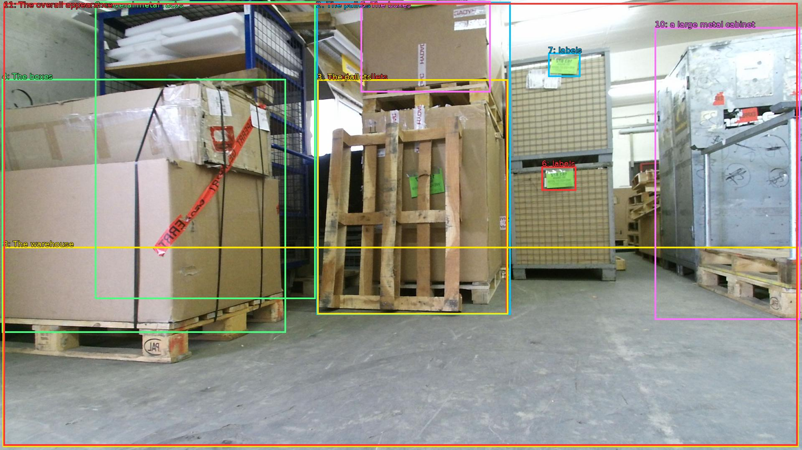
Celoten opis Florence in izvorni podatki
The image shows a large warehouse with multiple stacks of cardboard boxes on wooden pallets. The pallets are arranged in a neat and orderly manner, with some of them stacked on top of each other. The boxes are of different sizes and colors, and some have labels on them. The warehouse appears to be well-maintained, with concrete flooring and white walls. There are also several metal racks and shelves in the background, and a large metal cabinet on the right side of the image. The overall appearance of the warehouse is cluttered and disorganized.
Opis, regije in surovi odgovori Florenceqwen3.5:27b-q4_K_M
Q4_K_M · 5.337 s · response_received
Celoten surovi zapis{"objects":[{"id":1,"classification":"movable","reason":"Pallets are portable storage units easily repositioned."},{"id":2,"classification":"movable","reason":"Pallets are portable storage units easily repositioned."},{"id":3,"classification":"movable","reason":"Pallets are portable storage units easily repositioned."},{"id":4,"classification":"movable","reason":"Boxes are standard movable containers for goods."},{"id":5,"classification":"movable","reason":"Boxes are standard movable containers for goods."},{"id":6,"classification":"movable","reason":"Labels are small items attached to movable objects."},{"id":7,"classification":"movable","reason":"Labels are small items attached to movable objects."},{"id":8,"classification":"fixed","reason":"The warehouse is a structural building element."},{"id":9,"classification":"uncertain","reason":"Metal racks lack visible installation evidence or wheels."},{"id":10,"classification":"uncertain","reason":"Large cabinet lacks visible installation evidence or wheels."},{"id":11,"classification":"uncertain","reason":"Abstract concept not a physical object for mapping."}]}qwen3.5:4b-q4_K_M
Q4_K_M · 1.557 s · response_received
Celoten surovi zapis{"objects":[{"id":1,"classification":"movable","reason":"Pallets can be pushed or repositioned easily."},{"id":2,"classification":"movable","reason":"Pallets can be pushed or repositioned easily."},{"id":3,"classification":"movable","reason":"Pallets can be pushed or repositioned easily."},{"id":4,"classification":"movable","reason":"Boxes are movable by default unless fixed evidence exists."},{"id":5,"classification":"movable","reason":"Boxes are movable by default unless fixed evidence exists."},{"id":6,"classification":"movable","reason":"Labels can be moved or removed from surfaces."},{"id":7,"classification":"movable","reason":"Labels can be moved or removed from surfaces."},{"id":8,"classification":"fixed","reason":"The warehouse is a structural building element."},{"id":9,"classification":"uncertain","reason":"Racks may be fixed or movable without clear evidence."},{"id":10,"classification":"uncertain","reason":"Cabinet permanence is uncertain without installation proof."},{"id":11,"classification":"uncertain","reason":"Overall appearance is not a physical object to classify."}]
}gemma3:27b-it-q4_K_M
Q4_K_M · 6.501 s · response_received
Celoten surovi zapis{"objects": [{"id": 1, "classification": "movable", "reason": "Pallets are moved by forklifts/people."}, {"id": 2, "classification": "movable", "reason": "Pallets are moved by forklifts/people."}, {"id": 3, "classification": "movable", "reason": "Pallets are moved by forklifts/people."}, {"id": 4, "classification": "movable", "reason": "Boxes are routinely moved and rearranged."}, {"id": 5, "classification": "movable", "reason": "Boxes are routinely moved and rearranged."}, {"id": 6, "classification": "movable", "reason": "Labels are applied to movable objects."}, {"id": 7, "classification": "movable", "reason": "Labels are applied to movable objects."}, {"id": 8, "classification": "fixed", "reason": "The warehouse is a structural building element."}, {"id": 9, "classification": "movable", "reason": "Racks can be repositioned within the warehouse."}, {"id": 10, "classification": "uncertain", "reason": "Size and installation evidence are insufficient."}, {"id": 11, "classification": "uncertain", "reason": "Describes a general scene characteristic."}]}| Nabor | Okolje | ID regije | Oznaka Florence | qwen3.5:27b-q4_K_M | qwen3.5:4b-q4_K_M | gemma3:27b-it-q4_K_M | Primerjava |
|---|
| loco | loco-subset-1 | 1 | wooden pallets | movable | movable | movable | enaki razredi |
| loco | loco-subset-1 | 2 | The pallets | movable | movable | movable | enaki razredi |
| loco | loco-subset-1 | 3 | The pallets | movable | movable | movable | enaki razredi |
| loco | loco-subset-1 | 4 | The boxes | movable | movable | movable | enaki razredi |
| loco | loco-subset-1 | 5 | The boxes | movable | movable | movable | enaki razredi |
| loco | loco-subset-1 | 6 | labels | movable | movable | movable | enaki razredi |
| loco | loco-subset-1 | 7 | labels | movable | movable | movable | enaki razredi |
| loco | loco-subset-1 | 8 | The warehouse | fixed | fixed | fixed | enaki razredi |
| loco | loco-subset-1 | 9 | several metal racks | uncertain | uncertain | movable | različni razredi |
| loco | loco-subset-1 | 10 | a large metal cabinet | uncertain | uncertain | uncertain | enaki razredi |
| loco | loco-subset-1 | 11 | The overall appearance | uncertain | uncertain | uncertain | enaki razredi |
loco-s2-35307
loco / loco-subset-2

Celoten opis Florence in izvorni podatki
The image shows a blue forklift truck in a warehouse. The forklift is parked in the center of the image, with its front end facing towards the right side of the frame. It appears to be in good condition, with no visible damage or wear. The truck is parked on a concrete floor, and there are stacks of cardboard boxes on the left side. In the background, there is a yellow wall with a sign that reads "No Parking" and a window with a view of a plant. There are also some trash cans and other industrial equipment visible in the background.
Opis, regije in surovi odgovori Florenceqwen3.5:27b-q4_K_M
Q4_K_M · 6.037 s · response_received
Celoten surovi zapis{"objects":[{"id":1,"classification":"movable","reason":"Vehicles are designed to be driven and repositioned."},{"id":2,"classification":"movable","reason":"Forklifts are mobile industrial vehicles."},{"id":3,"classification":"movable","reason":"Trucks are mobile vehicles designed for transport."},{"id":4,"classification":"fixed","reason":"Floor is a structural building element."},{"id":5,"classification":"movable","reason":"Stacks of items can be moved or rearranged."},{"id":6,"classification":"movable","reason":"Boxes are portable objects easily carried or pushed."},{"id":7,"classification":"fixed","reason":"Walls are structural building elements."},{"id":8,"classification":"uncertain","reason":"Signs may be fixed or movable; no installation evidence."},{"id":9,"classification":"fixed","reason":"Windows are installed room elements."},{"id":10,"classification":"fixed","reason":"Windows are installed room elements."},{"id":11,"classification":"uncertain","reason":"View is not a physical object with position."},{"id":12,"classification":"movable","reason":"Plants can be potted and moved easily."},{"id":13,"classification":"movable","reason":"Trash cans are designed to be moved."},{"id":14,"classification":"movable","reason":"Trash cans are designed to be moved."}]}qwen3.5:4b-q4_K_M
Q4_K_M · 1.807 s · response_received
Celoten surovi zapis{"objects":[{"id":1,"classification":"movable","reason":"Vehicles can be driven or pushed to relocate."},{"id":2,"classification":"movable","reason":"Vehicles can be driven or pushed to relocate."},{"id":3,"classification":"movable","reason":"Vehicles can be driven or pushed to relocate."},{"id":4,"classification":"fixed","reason":"Structural part of the building floor."},{"id":5,"classification":"movable","reason":"Stacks of boxes can be moved by machinery."},{"id":6,"classification":"movable","reason":"Boxes can be carried or pushed elsewhere."},{"id":7,"classification":"fixed","reason":"A structural wall element permanently installed."},{"id":8,"classification":"movable","reason":"Signs can be removed and repositioned."},{"id":9,"classification":"fixed","reason":"Windows are installed room elements."},{"id":10,"classification":"fixed","reason":"Windows are installed room elements."},{"id":11,"classification":"uncertain","reason":"A view is not a physical object that moves."},{"id":12,"classification":"movable","reason":"Plants can be potted and relocated by humans."},{"id":13,"classification":"movable","reason":"Trash cans can be carried or pushed elsewhere."},{"id":14,"classification":"movable","reason":"Trash cans can be carried or pushed elsewhere."}]
}gemma3:27b-it-q4_K_M
Q4_K_M · 8.729 s · response_received
Celoten surovi zapis{"objects": [{"id": 1, "classification": "movable", "reason": "A vehicle that can be driven/moved."}, {"id": 2, "classification": "movable", "reason": "Same as forklift truck; can be moved."}, {"id": 3, "classification": "movable", "reason": "Same as forklift truck; can be moved."}, {"id": 4, "classification": "fixed", "reason": "Structural building element."}, {"id": 5, "classification": "movable", "reason": "Can be rearranged or moved easily."}, {"id": 6, "classification": "movable", "reason": "Can be rearranged or moved easily."}, {"id": 7, "classification": "fixed", "reason": "Structural building element."}, {"id": 8, "classification": "uncertain", "reason": "Attachment not established; could be fixed or movable."}, {"id": 9, "classification": "fixed", "reason": "Installed room element."}, {"id": 10, "classification": "fixed", "reason": "Installed room element."}, {"id": 11, "classification": "uncertain", "reason": "Abstract concept; not a physical object."}, {"id": 12, "classification": "movable", "reason": "Can be repositioned."}, {"id": 13, "classification": "movable", "reason": "Can be moved around."}, {"id": 14, "classification": "movable", "reason": "Can be moved around."}]}| Nabor | Okolje | ID regije | Oznaka Florence | qwen3.5:27b-q4_K_M | qwen3.5:4b-q4_K_M | gemma3:27b-it-q4_K_M | Primerjava |
|---|
| loco | loco-subset-2 | 1 | forklift truck | movable | movable | movable | enaki razredi |
| loco | loco-subset-2 | 2 | The forklift | movable | movable | movable | enaki razredi |
| loco | loco-subset-2 | 3 | The truck | movable | movable | movable | enaki razredi |
| loco | loco-subset-2 | 4 | floor | fixed | fixed | fixed | enaki razredi |
| loco | loco-subset-2 | 5 | stacks | movable | movable | movable | enaki razredi |
| loco | loco-subset-2 | 6 | boxes | movable | movable | movable | enaki razredi |
| loco | loco-subset-2 | 7 | a yellow wall | fixed | fixed | fixed | enaki razredi |
| loco | loco-subset-2 | 8 | sign | uncertain | movable | uncertain | različni razredi |
| loco | loco-subset-2 | 9 | a window | fixed | fixed | fixed | enaki razredi |
| loco | loco-subset-2 | 10 | window | fixed | fixed | fixed | enaki razredi |
| loco | loco-subset-2 | 11 | view | uncertain | uncertain | uncertain | enaki razredi |
| loco | loco-subset-2 | 12 | plant | movable | movable | movable | enaki razredi |
| loco | loco-subset-2 | 13 | some trash cans | movable | movable | movable | enaki razredi |
| loco | loco-subset-2 | 14 | some trash cans | movable | movable | movable | enaki razredi |
loco-s2-34207
loco / loco-subset-2

Celoten opis Florence in izvorni podatki
The image shows the interior of a large industrial building with a high ceiling and large windows. The floor is made of concrete and the walls are made of corrugated metal. On the left side of the image, there is a large metal structure with a yellow pole and a metal railing. The structure appears to be a conveyor belt or a control panel. In the background, there are two large doors with shutters on the right side. Above the doors, there has a sign that reads "HALL 2" and below the doors is a notice board with information about the building. The overall atmosphere of the space is industrial and industrial.
Opis, regije in surovi odgovori Florenceqwen3.5:27b-q4_K_M
Q4_K_M · 4.406 s · response_received
Celoten surovi zapis{"objects":[{"id":1,"classification":"fixed","reason":"Structural building element forming the ground."},{"id":2,"classification":"uncertain","reason":"Installation evidence not visible; could be movable equipment."},{"id":3,"classification":"uncertain","reason":"Attachment evidence not visible; could be portable."},{"id":4,"classification":"uncertain","reason":"Installation evidence not visible; could be movable equipment."},{"id":5,"classification":"fixed","reason":"Installed room element; opening is not relocation."},{"id":6,"classification":"fixed","reason":"Installed room element; opening is not relocation."},{"id":7,"classification":"fixed","reason":"Installed room element; opening is not relocation."},{"id":8,"classification":"fixed","reason":"Installed room element; opening is not relocation."},{"id":9,"classification":"uncertain","reason":"Attachment evidence not visible; could be portable."},{"id":10,"classification":"uncertain","reason":"Attachment evidence not visible; could be portable."}]}qwen3.5:4b-q4_K_M
Q4_K_M · 1.441 s · response_received
Celoten surovi zapis{"objects":[{"id":1,"classification":"fixed","reason":"Structural floor element of the building."},{"id":2,"classification":"uncertain","reason":"Large structure type implies fixed but attachment is unverified."},{"id":3,"classification":"movable","reason":"Poles can be removed or repositioned in normal use."},{"id":4,"classification":"uncertain","reason":"Structure label implies fixed but attachment is unverified."},{"id":5,"classification":"fixed","reason":"Doors are installed room elements, not relocatable."},{"id":6,"classification":"fixed","reason":"Doors are installed room elements, not relocatable."},{"id":7,"classification":"fixed","reason":"Doors are installed room elements, not relocatable."},{"id":8,"classification":"fixed","reason":"Doors are installed room elements, not relocatable."},{"id":9,"classification":"movable","reason":"Signs can be removed and repositioned in normal use."},{"id":10,"classification":"uncertain","reason":"Notice boards may be fixed or movable without clear evidence."}]}gemma3:27b-it-q4_K_M
Q4_K_M · 7.405 s · response_received
Celoten surovi zapis{"objects": [{"id": 1, "classification": "fixed", "reason": "Structural element of the building."}, {"id": 2, "classification": "fixed", "reason": "Large structure, likely integrated into the building."}, {"id": 3, "classification": "fixed", "reason": "Supporting structure, part of the metal frame."}, {"id": 4, "classification": "fixed", "reason": "Part of the larger metal structure; not movable."}, {"id": 5, "classification": "movable", "reason": "Doors can be opened/closed, but are repositionable."}, {"id": 6, "classification": "movable", "reason": "Doors can be opened/closed, but are repositionable."}, {"id": 7, "classification": "movable", "reason": "Doors can be opened/closed, but are repositionable."}, {"id": 8, "classification": "movable", "reason": "Doors can be opened/closed, but are repositionable."}, {"id": 9, "classification": "fixed", "reason": "Attached to the structure; requires removal to move."}, {"id": 10, "classification": "fixed", "reason": "Attached to the wall; requires removal to move."}]}| Nabor | Okolje | ID regije | Oznaka Florence | qwen3.5:27b-q4_K_M | qwen3.5:4b-q4_K_M | gemma3:27b-it-q4_K_M | Primerjava |
|---|
| loco | loco-subset-2 | 1 | The floor | fixed | fixed | fixed | enaki razredi |
| loco | loco-subset-2 | 2 | a large metal structure | uncertain | uncertain | fixed | različni razredi |
| loco | loco-subset-2 | 3 | pole | uncertain | movable | fixed | različni razredi |
| loco | loco-subset-2 | 4 | The structure | uncertain | uncertain | fixed | različni razredi |
| loco | loco-subset-2 | 5 | two large doors | fixed | fixed | movable | različni razredi |
| loco | loco-subset-2 | 6 | two large doors | fixed | fixed | movable | različni razredi |
| loco | loco-subset-2 | 7 | two large doors | fixed | fixed | movable | različni razredi |
| loco | loco-subset-2 | 8 | two large doors | fixed | fixed | movable | različni razredi |
| loco | loco-subset-2 | 9 | a sign | uncertain | movable | fixed | različni razredi |
| loco | loco-subset-2 | 10 | a notice board | uncertain | uncertain | fixed | različni razredi |
loco-s2-35256
loco / loco-subset-2
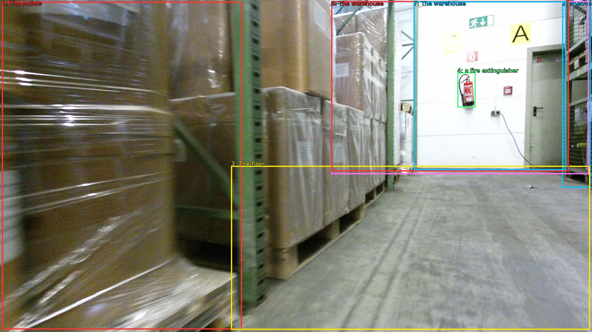
Celoten opis Florence in izvorni podatki
The image shows a large warehouse with a long row of pallets on the left side. The pallets are covered with plastic wrap and are stacked on top of each other. On the right side of the image, there are shelves with various items on them. The floor is made of concrete and there is a fire extinguisher mounted on the wall in the background. The warehouse appears to be well-lit with natural light coming in from the windows.
Opis, regije in surovi odgovori Florenceqwen3.5:27b-q4_K_M
Q4_K_M · 3.510 s · response_received
Celoten surovi zapis{"objects":[{"id":1,"classification":"movable","reason":"Pallets are movable storage units."},{"id":2,"classification":"uncertain","reason":"Permanent installation is not established."},{"id":3,"classification":"fixed","reason":"Structural building element."},{"id":4,"classification":"movable","reason":"Can be carried or repositioned in normal use."},{"id":5,"classification":"fixed","reason":"The warehouse is a structural building."},{"id":6,"classification":"fixed","reason":"The warehouse is a structural building."},{"id":7,"classification":"fixed","reason":"The warehouse is a structural building."}]}qwen3.5:4b-q4_K_M
Q4_K_M · 1.013 s · response_received
Celoten surovi zapis{"objects":[{"id":1,"classification":"movable","reason":"Stacked pallets can be moved or repositioned easily."},{"id":2,"classification":"uncertain","reason":"Shelves could be fixed structures or movable units."},{"id":3,"classification":"fixed","reason":"Concrete floor is a structural building element."},{"id":4,"classification":"fixed","reason":"Mounted fire extinguisher requires dismantling to move."},{"id":5,"classification":"fixed","reason":"The warehouse structure itself is a permanent installation."},{"id":6,"classification":"fixed","reason":"The warehouse structure itself is a permanent installation."},{"id":7,"classification":"fixed","reason":"The warehouse structure itself is a permanent installation."}]}gemma3:27b-it-q4_K_M
Q4_K_M · 4.246 s · response_received
Celoten surovi zapis{"objects": [{"id": 1, "classification": "movable", "reason": "Pallets are repositioned with forklifts."}, {"id": 2, "classification": "uncertain", "reason": "Installation is not explicitly visible."}, {"id": 3, "classification": "fixed", "reason": "Structural building element."}, {"id": 4, "classification": "movable", "reason": "Can be moved/replaced for maintenance."}, {"id": 5, "classification": "fixed", "reason": "The building itself."}, {"id": 6, "classification": "fixed", "reason": "The building itself."}, {"id": 7, "classification": "fixed", "reason": "The building itself."}]}| Nabor | Okolje | ID regije | Oznaka Florence | qwen3.5:27b-q4_K_M | qwen3.5:4b-q4_K_M | gemma3:27b-it-q4_K_M | Primerjava |
|---|
| loco | loco-subset-2 | 1 | The pallets | movable | movable | movable | enaki razredi |
| loco | loco-subset-2 | 2 | shelves | uncertain | uncertain | uncertain | enaki razredi |
| loco | loco-subset-2 | 3 | The floor | fixed | fixed | fixed | enaki razredi |
| loco | loco-subset-2 | 4 | a fire extinguisher | movable | fixed | movable | različni razredi |
| loco | loco-subset-2 | 5 | The warehouse | fixed | fixed | fixed | enaki razredi |
| loco | loco-subset-2 | 6 | The warehouse | fixed | fixed | fixed | enaki razredi |
| loco | loco-subset-2 | 7 | The warehouse | fixed | fixed | fixed | enaki razredi |
loco-s2-34502
loco / loco-subset-2

Celoten opis Florence in izvorni podatki
The image shows a large warehouse with a metal rack in the center. The rack is made of metal and has multiple levels, with the top level being elevated and the bottom level being below. On the left side of the rack, there are several green metal crates stacked on top of each other. The crates appear to be empty and are secured with yellow poles. The floor is concrete and there is a concrete wall on the right side. The warehouse appears to be well-lit with natural light coming in from the windows.
Opis, regije in surovi odgovori Florenceqwen3.5:27b-q4_K_M
Q4_K_M · 3.272 s · response_received
Celoten surovi zapis{"objects":[{"id":1,"classification":"uncertain","reason":"Large rack; permanent installation not established."},{"id":2,"classification":"movable","reason":"Crates can be carried or repositioned in normal use."},{"id":3,"classification":"movable","reason":"Crates can be carried or repositioned in normal use."},{"id":4,"classification":"movable","reason":"Crates can be carried or repositioned in normal use."},{"id":5,"classification":"fixed","reason":"Structural building element forming the ground surface."},{"id":6,"classification":"fixed","reason":"Structural building element forming a vertical boundary."},{"id":7,"classification":"fixed","reason":"The warehouse is the structural building itself."}]}qwen3.5:4b-q4_K_M
Q4_K_M · 2.160 s · response_received
Celoten surovi zapis{"objects":[{"id":1,"classification":"movable","reason":"Racks can be moved or repositioned in normal use."},{"id":2,"classification":"movable","reason":"Crates are standard movable storage units."},{"id":3,"classification":"movable","reason":"Crates are standard movable storage units."},{"id":4,"classification":"movable","reason":"Crates are standard movable storage units."},{"id":5,"classification":"fixed","reason":"Structural building element, the floor."},{"id":6,"classification":"fixed","reason":"Structural building element, a concrete wall."},{"id":7,"classification":"uncertain","reason":"Label refers to the whole building, not a specific object."}]}gemma3:27b-it-q4_K_M
Q4_K_M · 4.604 s · response_received
Celoten surovi zapis{"objects": [{"id": 1, "classification": "movable", "reason": "A rack can be repositioned within a warehouse."}, {"id": 2, "classification": "movable", "reason": "Crates are typically moved by forklifts or people."}, {"id": 3, "classification": "movable", "reason": "Crates are typically moved by forklifts or people."}, {"id": 4, "classification": "movable", "reason": "Crates are typically moved by forklifts or people."}, {"id": 5, "classification": "fixed", "reason": "The floor is a structural building element."}, {"id": 6, "classification": "fixed", "reason": "A concrete wall is a structural element."}, {"id": 7, "classification": "fixed", "reason": "The warehouse itself is a fixed structure."}]}| Nabor | Okolje | ID regije | Oznaka Florence | qwen3.5:27b-q4_K_M | qwen3.5:4b-q4_K_M | gemma3:27b-it-q4_K_M | Primerjava |
|---|
| loco | loco-subset-2 | 1 | The rack | uncertain | movable | movable | različni razredi |
| loco | loco-subset-2 | 2 | several green metal crates | movable | movable | movable | enaki razredi |
| loco | loco-subset-2 | 3 | The crates | movable | movable | movable | enaki razredi |
| loco | loco-subset-2 | 4 | The crates | movable | movable | movable | enaki razredi |
| loco | loco-subset-2 | 5 | The floor | fixed | fixed | fixed | enaki razredi |
| loco | loco-subset-2 | 6 | a concrete wall | fixed | fixed | fixed | enaki razredi |
| loco | loco-subset-2 | 7 | The warehouse | fixed | uncertain | fixed | različni razredi |
loco-s2-34417
loco / loco-subset-2

Celoten opis Florence in izvorni podatki
The image shows the interior of a large warehouse or storage facility. The floor is made of concrete and the walls are lined with shelves on both sides. On the left side of the image, there are stacks of cardboard boxes and pallets, and on the right side, there is a large pile of plastic bags. The warehouse appears to be well-stocked with various items, and there are several workers visible in the background. The ceiling is high and has several lights hanging from it. The overall atmosphere of the space is busy and organized.
Opis, regije in surovi odgovori Florenceqwen3.5:27b-q4_K_M
Q4_K_M · 3.049 s · response_received
Celoten surovi zapis{"objects":[{"id":1,"classification":"fixed","reason":"Structural building element."},{"id":2,"classification":"fixed","reason":"Structural building element."},{"id":3,"classification":"movable","reason":"Stacks of items can be repositioned."},{"id":4,"classification":"movable","reason":"Pile of items can be moved."},{"id":5,"classification":"fixed","reason":"The warehouse is the structural building itself."},{"id":6,"classification":"movable","reason":"Workers move freely within the space."},{"id":7,"classification":"fixed","reason":"Structural building element."}]}qwen3.5:4b-q4_K_M
Q4_K_M · 2.467 s · response_received
Celoten surovi zapis{"objects":[{"id":1,"classification":"fixed","reason":"Structural floor element of the building."},{"id":2,"classification":"fixed","reason":"Structural wall element of the building."},{"id":3,"classification":"movable","reason":"Stacks can be pushed or repositioned easily."},{"id":4,"classification":"movable","reason":"Piles of bags can be moved by workers."},{"id":5,"classification":"fixed","reason":"The warehouse is a structural building element."},{"id":6,"classification":"movable","reason":"Workers are people who move freely."},{"id":7,"classification":"fixed","reason":"Structural ceiling element of the building."}]}gemma3:27b-it-q4_K_M
Q4_K_M · 4.206 s · response_received
Celoten surovi zapis{"objects": [{"id": 1, "classification": "fixed", "reason": "Structural building element."}, {"id": 2, "classification": "fixed", "reason": "Structural building element."}, {"id": 3, "classification": "movable", "reason": "Can be rearranged or moved easily."}, {"id": 4, "classification": "movable", "reason": "A pile of items is easily repositioned."}, {"id": 5, "classification": "fixed", "reason": "The building itself; not movable."}, {"id": 6, "classification": "movable", "reason": "People are inherently movable."}, {"id": 7, "classification": "fixed", "reason": "Structural part of the building."}]}| Nabor | Okolje | ID regije | Oznaka Florence | qwen3.5:27b-q4_K_M | qwen3.5:4b-q4_K_M | gemma3:27b-it-q4_K_M | Primerjava |
|---|
| loco | loco-subset-2 | 1 | The floor | fixed | fixed | fixed | enaki razredi |
| loco | loco-subset-2 | 2 | the walls | fixed | fixed | fixed | enaki razredi |
| loco | loco-subset-2 | 3 | stacks | movable | movable | movable | enaki razredi |
| loco | loco-subset-2 | 4 | a large pile | movable | movable | movable | enaki razredi |
| loco | loco-subset-2 | 5 | The warehouse | fixed | fixed | fixed | enaki razredi |
| loco | loco-subset-2 | 6 | several workers | movable | movable | movable | enaki razredi |
| loco | loco-subset-2 | 7 | The ceiling | fixed | fixed | fixed | enaki razredi |
loco-s2-35276
loco / loco-subset-2

Celoten opis Florence in izvorni podatki
The image shows a long row of green metal shelves in a warehouse. The shelves are arranged in a neat and orderly manner, with rows of empty boxes and pallets on the right side of the image. The floor is made of concrete and the walls are painted white. The warehouse appears to be well-lit with natural light coming in from the windows on the left side. There are yellow labels on the shelves, indicating that they are for storage or storage purposes. The overall atmosphere of the warehouse is industrial and clean.
Opis, regije in surovi odgovori Florenceqwen3.5:27b-q4_K_M
Q4_K_M · 3.493 s · response_received
Celoten surovi zapis{"objects":[{"id":1,"classification":"uncertain","reason":"Shelves lack visible permanent installation evidence."},{"id":2,"classification":"fixed","reason":"Structural building element."},{"id":3,"classification":"fixed","reason":"The warehouse is a structural building."},{"id":4,"classification":"movable","reason":"Labels can be removed or repositioned."},{"id":5,"classification":"movable","reason":"Labels can be removed or repositioned."},{"id":6,"classification":"movable","reason":"Labels can be removed or repositioned."},{"id":7,"classification":"movable","reason":"Labels can be removed or repositioned."},{"id":8,"classification":"movable","reason":"Labels can be removed or repositioned."}]}qwen3.5:4b-q4_K_M
Q4_K_M · 1.151 s · response_received
Celoten surovi zapis{"objects":[{"id":1,"classification":"uncertain","reason":"Shelves are uncertain without visible permanent installation evidence."},{"id":2,"classification":"fixed","reason":"Floor is a structural building element."},{"id":3,"classification":"fixed","reason":"Warehouse is the structural building itself."},{"id":4,"classification":"movable","reason":"Labels can be removed and repositioned in normal use."},{"id":5,"classification":"movable","reason":"Labels can be removed and repositioned in normal use."},{"id":6,"classification":"movable","reason":"Labels can be removed and repositioned in normal use."},{"id":7,"classification":"movable","reason":"Labels can be removed and repositioned in normal use."},{"id":8,"classification":"movable","reason":"Labels can be removed and repositioned in normal use."}]}gemma3:27b-it-q4_K_M
Q4_K_M · 5.070 s · response_received
Celoten surovi zapis{"objects": [{"id": 1, "classification": "fixed", "reason": "Shelves are integrated into the warehouse structure."}, {"id": 2, "classification": "fixed", "reason": "Structural building element."}, {"id": 3, "classification": "fixed", "reason": "The building itself; not movable."}, {"id": 4, "classification": "movable", "reason": "Labels are applied to shelves, easily repositioned."}, {"id": 5, "classification": "movable", "reason": "Labels are applied to shelves, easily repositioned."}, {"id": 6, "classification": "movable", "reason": "Labels are applied to shelves, easily repositioned."}, {"id": 7, "classification": "movable", "reason": "Labels are applied to shelves, easily repositioned."}, {"id": 8, "classification": "movable", "reason": "Labels are applied to shelves, easily repositioned."}]}| Nabor | Okolje | ID regije | Oznaka Florence | qwen3.5:27b-q4_K_M | qwen3.5:4b-q4_K_M | gemma3:27b-it-q4_K_M | Primerjava |
|---|
| loco | loco-subset-2 | 1 | The shelves | uncertain | uncertain | fixed | različni razredi |
| loco | loco-subset-2 | 2 | The floor | fixed | fixed | fixed | enaki razredi |
| loco | loco-subset-2 | 3 | The warehouse | fixed | fixed | fixed | enaki razredi |
| loco | loco-subset-2 | 4 | yellow labels | movable | movable | movable | enaki razredi |
| loco | loco-subset-2 | 5 | yellow labels | movable | movable | movable | enaki razredi |
| loco | loco-subset-2 | 6 | yellow labels | movable | movable | movable | enaki razredi |
| loco | loco-subset-2 | 7 | yellow labels | movable | movable | movable | enaki razredi |
| loco | loco-subset-2 | 8 | yellow labels | movable | movable | movable | enaki razredi |
loco-s2-34506
loco / loco-subset-2
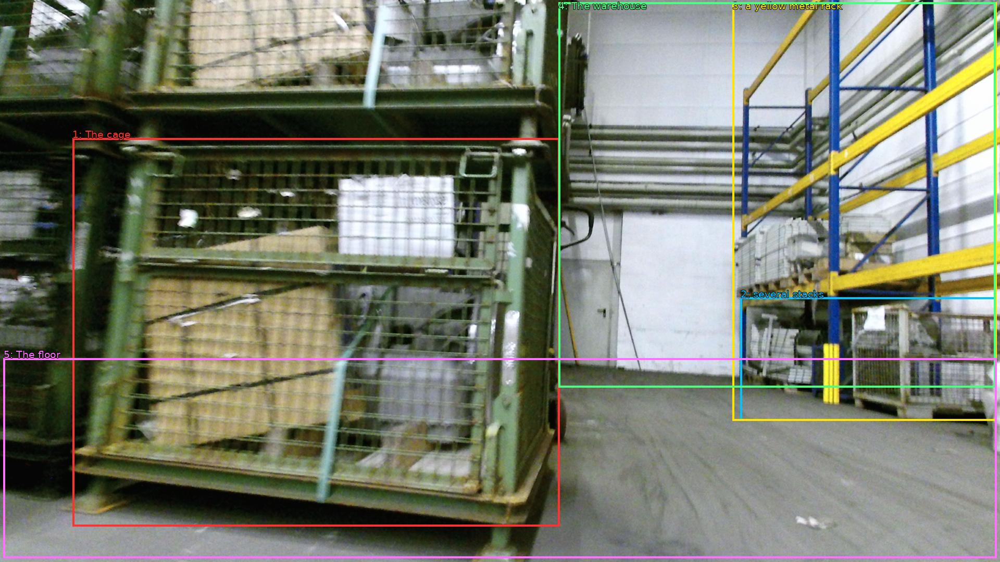
Celoten opis Florence in izvorni podatki
The image shows a large industrial warehouse with a large green metal cage in the center. The cage is made of wire mesh and has multiple levels with railings on either side. Inside the cage, there are several stacks of cardboard boxes and other items. On the right side of the image, there is a yellow metal rack with more boxes and pallets. The warehouse appears to be well-maintained and well-organized. The floor is concrete and the walls are painted white.
Opis, regije in surovi odgovori Florenceqwen3.5:27b-q4_K_M
Q4_K_M · 2.784 s · response_received
Celoten surovi zapis{"objects":[{"id":1,"classification":"movable","reason":"Cages are typically portable storage units."},{"id":2,"classification":"movable","reason":"Stacks of items can be easily moved."},{"id":3,"classification":"uncertain","reason":"Racks may be fixed or movable without evidence."},{"id":4,"classification":"fixed","reason":"The warehouse is a structural building element."},{"id":5,"classification":"fixed","reason":"The floor is a structural building element."}]}qwen3.5:4b-q4_K_M
Q4_K_M · 0.747 s · response_received
Celoten surovi zapis{"objects":[{"id":1,"classification":"movable","reason":"Large industrial cages can be moved or dismantled."},{"id":2,"classification":"movable","reason":"Stacks of boxes are easily repositioned by workers."},{"id":3,"classification":"movable","description":"Metal racks holding goods can be relocated in normal use."},{"id":4,"classification":"fixed","reason":"The warehouse is a structural building element."},{"id":5,"classification":"fixed","reason":"Concrete floors are permanent structural elements."}]}gemma3:27b-it-q4_K_M
Q4_K_M · 4.011 s · response_received
Celoten surovi zapis{"objects": [{"id": 1, "classification": "movable", "reason": "Can be relocated within the warehouse."}, {"id": 2, "classification": "movable", "reason": "Stacks of boxes are easily moved."}, {"id": 3, "classification": "movable", "reason": "Metal rack can be repositioned."}, {"id": 4, "classification": "fixed", "reason": "Structural building element."}, {"id": 5, "classification": "fixed", "reason": "Structural part of the building."}]}| Nabor | Okolje | ID regije | Oznaka Florence | qwen3.5:27b-q4_K_M | qwen3.5:4b-q4_K_M | gemma3:27b-it-q4_K_M | Primerjava |
|---|
| loco | loco-subset-2 | 1 | The cage | movable | movable | movable | enaki razredi |
| loco | loco-subset-2 | 2 | several stacks | movable | movable | movable | enaki razredi |
| loco | loco-subset-2 | 3 | a yellow metal rack | uncertain | movable | movable | različni razredi |
| loco | loco-subset-2 | 4 | The warehouse | fixed | fixed | fixed | enaki razredi |
| loco | loco-subset-2 | 5 | The floor | fixed | fixed | fixed | enaki razredi |
loco-s2-34226
loco / loco-subset-2

Celoten opis Florence in izvorni podatki
The image shows a large warehouse with multiple stacks of cardboard boxes on wooden pallets. The boxes are stacked on top of each other and appear to be of different sizes and colors. The pallets are arranged in a neat and orderly manner. The warehouse has a high ceiling with metal beams and a yellow caution sign on the right side. The floor is made of concrete and there is a white wall in the background. The overall atmosphere of the warehouse appears to be clean and well-maintained.
Opis, regije in surovi odgovori Florenceqwen3.5:27b-q4_K_M
Q4_K_M · 3.569 s · response_received
Celoten surovi zapis{"objects":[{"id":1,"classification":"movable","reason":"Boxes are portable objects easily repositioned."},{"id":2,"classification":"movable","reason":"Boxes are portable objects easily repositioned."},{"id":3,"classification":"movable","reason":"Boxes are portable objects easily repositioned."},{"id":4,"classification":"movable","reason":"Pallets are designed to be moved by forklifts."},{"id":5,"classification":"fixed","reason":"The warehouse is a permanent structural building."},{"id":6,"classification":"fixed","reason":"The floor is a structural building element."},{"id":7,"classification":"fixed","reason":"A wall is a structural building element."},{"id":8,"classification":"fixed","reason":"A wall is a structural building element."}]}qwen3.5:4b-q4_K_M
Q4_K_M · 1.078 s · response_received
Celoten surovi zapis{"objects":[{"id":1,"classification":"movable","reason":"Stacks of boxes can be moved or relocated."},{"id":2,"classification":"movable","reason":"Stacks of boxes can be moved or relocated."},{"id":3,"classification":"movable","reason":"Stacks of boxes can be moved or relocated."},{"id":4,"classification":"movable","reason":"Pallets can be pushed or repositioned in normal use."},{"id":5,"classification":"fixed","reason":"A structural building element or permanent installation."},{"id":6,"classification":"fixed","reason":"Structural part of the building floor."},{"id":7,"classification":"fixed","reason":"Structural wall element; moving requires dismantling."},{"id":8,"classification":"fixed","reason":"Structural wall element; moving requires dismantling."}]}gemma3:27b-it-q4_K_M
Q4_K_M · 6.724 s · response_received
Celoten surovi zapis{"objects": [{"id": 1, "classification": "movable", "reason": "Boxes can be moved by a person or machine."}, {"id": 2, "classification": "movable", "reason": "Boxes can be moved by a person or machine."}, {"id": 3, "classification": "movable", "reason": "Boxes can be moved by a person or machine."}, {"id": 4, "classification": "movable", "reason": "Pallets are typically moved with forklifts."}, {"id": 5, "classification": "fixed", "reason": "The warehouse is a structural building element."}, {"id": 6, "classification": "fixed", "reason": "The floor is a structural building element."}, {"id": 7, "classification": "fixed", "reason": "A structural part of the building."}, {"id": 8, "classification": "fixed", "reason": "A structural part of the building."}]}| Nabor | Okolje | ID regije | Oznaka Florence | qwen3.5:27b-q4_K_M | qwen3.5:4b-q4_K_M | gemma3:27b-it-q4_K_M | Primerjava |
|---|
| loco | loco-subset-2 | 1 | The boxes | movable | movable | movable | enaki razredi |
| loco | loco-subset-2 | 2 | The boxes | movable | movable | movable | enaki razredi |
| loco | loco-subset-2 | 3 | The boxes | movable | movable | movable | enaki razredi |
| loco | loco-subset-2 | 4 | The pallets | movable | movable | movable | enaki razredi |
| loco | loco-subset-2 | 5 | The warehouse | fixed | fixed | fixed | enaki razredi |
| loco | loco-subset-2 | 6 | The floor | fixed | fixed | fixed | enaki razredi |
| loco | loco-subset-2 | 7 | a white wall | fixed | fixed | fixed | enaki razredi |
| loco | loco-subset-2 | 8 | a white wall | fixed | fixed | fixed | enaki razredi |
loco-s2-35273
loco / loco-subset-2
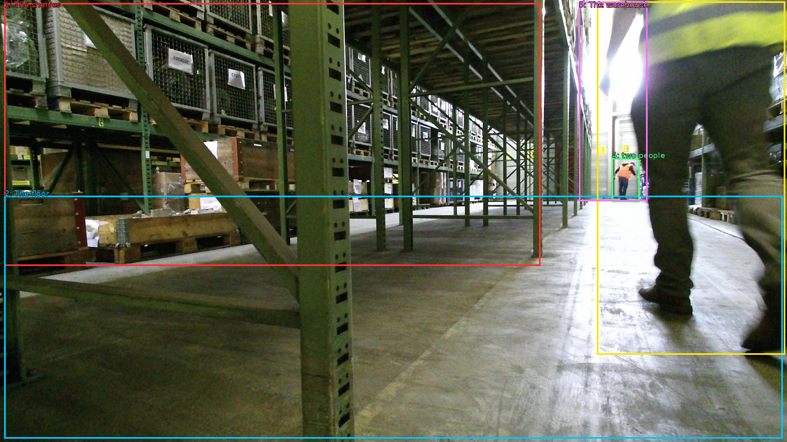
Celoten opis Florence in izvorni podatki
The image shows a large warehouse with rows of green metal shelves. The shelves are filled with various items such as boxes, pallets, and other storage containers. The floor is made of concrete and there are two people walking on the right side of the image. The warehouse appears to be well-lit with natural light coming in from the windows on the left side. The image is taken from a low angle, looking up at the shelves.
Opis, regije in surovi odgovori Florenceqwen3.5:27b-q4_K_M
Q4_K_M · 2.346 s · response_received
Celoten surovi zapis{"objects":[{"id":1,"classification":"uncertain","reason":"Shelves may be movable or permanently installed."},{"id":2,"classification":"fixed","reason":"Structural building element of the warehouse."},{"id":3,"classification":"movable","reason":"People can walk and change position freely."},{"id":4,"classification":"movable","reason":"People can walk and change position freely."},{"id":5,"classification":"fixed","reason":"The warehouse is a structural building element."}]}qwen3.5:4b-q4_K_M
Q4_K_M · 0.726 s · response_received
Celoten surovi zapis{"objects":[{"id":1,"classification":"uncertain","reason":"Permanent installation not established by visual evidence."},{"id":2,"classification":"fixed","reason":"Structural building element; floor does not move."},{"id":3,"classification":"movable","reason":"People can walk and change position freely."},{"id":4,"classification":"movable","reason":"People can walk and change position freely."},{"id":5,"classification":"fixed","reason":"Structural building element; warehouse is a permanent structure."}]}gemma3:27b-it-q4_K_M
Q4_K_M · 5.079 s · response_received
Celoten surovi zapis{"objects": [{"id": 1, "classification": "uncertain", "reason": "Shelves may be fixed or movable; no installation evidence."}, {"id": 2, "classification": "fixed", "reason": "Structural building element; the base of the space."}, {"id": 3, "classification": "movable", "reason": "People are inherently movable."}, {"id": 4, "classification": "movable", "reason": "People are inherently movable."}, {"id": 5, "classification": "fixed", "reason": "The building itself; structural element."}]}| Nabor | Okolje | ID regije | Oznaka Florence | qwen3.5:27b-q4_K_M | qwen3.5:4b-q4_K_M | gemma3:27b-it-q4_K_M | Primerjava |
|---|
| loco | loco-subset-2 | 1 | The shelves | uncertain | uncertain | uncertain | enaki razredi |
| loco | loco-subset-2 | 2 | The floor | fixed | fixed | fixed | enaki razredi |
| loco | loco-subset-2 | 3 | two people | movable | movable | movable | enaki razredi |
| loco | loco-subset-2 | 4 | two people | movable | movable | movable | enaki razredi |
| loco | loco-subset-2 | 5 | The warehouse | fixed | fixed | fixed | enaki razredi |
loco-s2-34234
loco / loco-subset-2
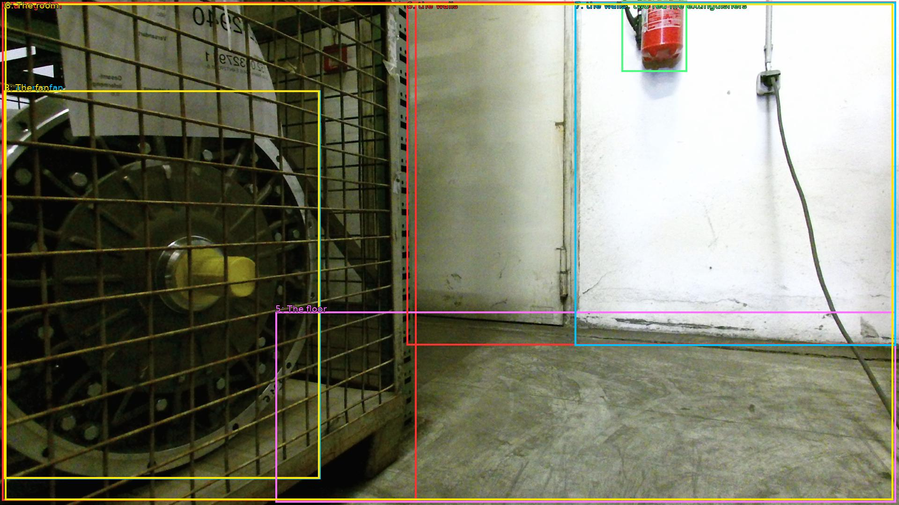
Celoten opis Florence in izvorni podatki
The image shows an empty room with a large metal cage on the left side. Inside the cage, there is a large fan with a yellow handle. The fan appears to be old and weathered, with some rust and discoloration visible on its surface. On the right side of the image, there are two red fire extinguishers hanging on the wall. The floor is made of concrete, and the walls are painted white. The room is dimly lit, with only a small amount of light coming in from the window.
Opis, regije in surovi odgovori Florenceqwen3.5:27b-q4_K_M
Q4_K_M · 3.268 s · response_received
Celoten surovi zapis{"objects":[{"id":1,"classification":"movable","reason":"Large fans are typically portable equipment."},{"id":2,"classification":"movable","reason":"Large fans are typically portable equipment."},{"id":3,"classification":"movable","reason":"Fans are movable objects by default."},{"id":4,"classification":"movable","reason":"Fire extinguishers are designed to be carried."},{"id":5,"classification":"fixed","reason":"Structural building element."},{"id":6,"classification":"fixed","reason":"Structural building element."},{"id":7,"classification":"fixed","reason":"Structural building element."},{"id":8,"classification":"fixed","reason":"The room is a structural space."}]}qwen3.5:4b-q4_K_M
Q4_K_M · 1.007 s · response_received
Celoten surovi zapis{"objects":[{"id":1,"classification":"movable","reason":"Fans are typically movable appliances."},{"id":2,"classification":"movable","reason":"Fans are typically movable appliances."},{"id":3,"classification":"movable","reason":"Fans are typically movable appliances."},{"id":4,"classification":"fixed","reason":"Fire extinguishers are permanently mounted fixtures."},{"id":5,"classification":"fixed","reason":"Floor is a structural building element."},{"id":6,"classification":"fixed","reason":"Walls are structural building elements."},{"id":7,"classification":"fixed","reason":"Walls are structural building elements."},{"id":8,"classification":"uncertain","reason":"Room boundaries are not permanent fixed structures."}]}gemma3:27b-it-q4_K_M
Q4_K_M · 5.597 s · response_received
Celoten surovi zapis{"objects": [{"id": 1, "classification": "movable", "reason": "Fan can be repositioned or moved."}, {"id": 2, "classification": "movable", "reason": "Fan can be repositioned or moved."}, {"id": 3, "classification": "movable", "reason": "Fan can be repositioned or moved."}, {"id": 4, "classification": "movable", "reason": "Fire extinguishers are typically mounted but movable."}, {"id": 5, "classification": "fixed", "reason": "Structural element of the building."}, {"id": 6, "classification": "fixed", "reason": "Structural element of the building."}, {"id": 7, "classification": "fixed", "reason": "Structural element of the building."}, {"id": 8, "classification": "uncertain", "reason": "Room is a semantic grouping, not a physical object."}]}| Nabor | Okolje | ID regije | Oznaka Florence | qwen3.5:27b-q4_K_M | qwen3.5:4b-q4_K_M | gemma3:27b-it-q4_K_M | Primerjava |
|---|
| loco | loco-subset-2 | 1 | a large fan | movable | movable | movable | enaki razredi |
| loco | loco-subset-2 | 2 | a large fan | movable | movable | movable | enaki razredi |
| loco | loco-subset-2 | 3 | The fan | movable | movable | movable | enaki razredi |
| loco | loco-subset-2 | 4 | two red fire extinguishers | movable | fixed | movable | različni razredi |
| loco | loco-subset-2 | 5 | The floor | fixed | fixed | fixed | enaki razredi |
| loco | loco-subset-2 | 6 | the walls | fixed | fixed | fixed | enaki razredi |
| loco | loco-subset-2 | 7 | the walls | fixed | fixed | fixed | enaki razredi |
| loco | loco-subset-2 | 8 | The room | fixed | uncertain | uncertain | različni razredi |
loco-s2-34394
loco / loco-subset-2
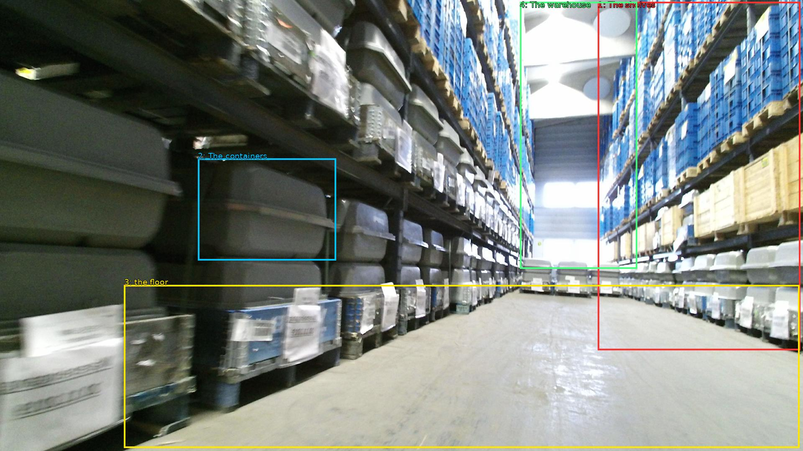
Celoten opis Florence in izvorni podatki
The image shows a large warehouse with rows of shelves on both sides. The shelves are filled with blue and white plastic containers. The containers are arranged in a neat and orderly manner, and the floor is made of concrete. The warehouse appears to be well-lit with natural light coming in from the windows on the right side of the image. The image is taken from a low angle, looking down on the shelves.
Opis, regije in surovi odgovori Florenceqwen3.5:27b-q4_K_M
Q4_K_M · 2.000 s · response_received
Celoten surovi zapis{"objects":[{"id":1,"classification":"uncertain","reason":"Shelves lack visible permanent installation evidence."},{"id":2,"classification":"movable","reason":"Containers can be carried or repositioned easily."},{"id":3,"classification":"fixed","reason":"Structural building element of the warehouse."},{"id":4,"classification":"fixed","reason":"The warehouse is a structural building element."}]}qwen3.5:4b-q4_K_M
Q4_K_M · 0.638 s · response_received
Celoten surovi zapis{"objects":[{"id":1,"classification":"uncertain","reason":"Shelves may be fixed or movable without installation proof."},{"id":2,"classification":"movable","reason":"Containers are standard items that can be carried or pushed."},{"id":3,"classification":"fixed","reason":"Floor is a structural building element."},{"id":4,"classification":"fixed","reason":"Warehouse is a structural building element."}]}gemma3:27b-it-q4_K_M
Q4_K_M · 2.964 s · response_received
Celoten surovi zapis{"objects": [{"id": 1, "classification": "uncertain", "reason": "Installation is not explicitly established."}, {"id": 2, "classification": "movable", "reason": "Containers are carried/repositioned in normal use."}, {"id": 3, "classification": "fixed", "reason": "Structural building element."}, {"id": 4, "classification": "fixed", "reason": "A structural building element."}]}| Nabor | Okolje | ID regije | Oznaka Florence | qwen3.5:27b-q4_K_M | qwen3.5:4b-q4_K_M | gemma3:27b-it-q4_K_M | Primerjava |
|---|
| loco | loco-subset-2 | 1 | The shelves | uncertain | uncertain | uncertain | enaki razredi |
| loco | loco-subset-2 | 2 | The containers | movable | movable | movable | enaki razredi |
| loco | loco-subset-2 | 3 | the floor | fixed | fixed | fixed | enaki razredi |
| loco | loco-subset-2 | 4 | The warehouse | fixed | fixed | fixed | enaki razredi |
loco-s2-34231
loco / loco-subset-2
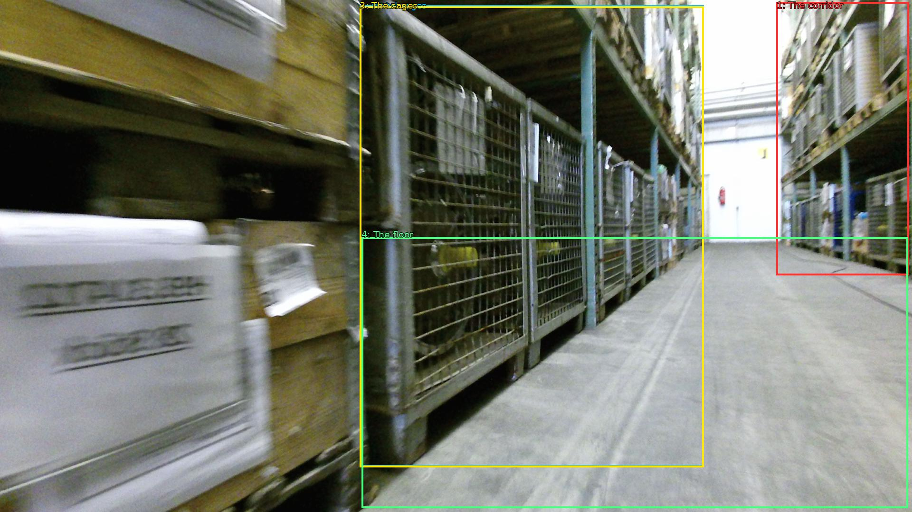
Celoten opis Florence in izvorni podatki
The image shows a long corridor in a warehouse or storage area. The corridor is lined with rows of wooden pallets on both sides, and there are metal cages on the right side. The cages appear to be empty, with no people or other objects visible. The floor is made of concrete, and the walls are made of metal. The image is taken from a low angle, looking down the corridor towards the right. The overall mood of the image is quiet and industrial.
Opis, regije in surovi odgovori Florenceqwen3.5:27b-q4_K_M
Q4_K_M · 2.289 s · response_received
Celoten surovi zapis{"objects":[{"id":1,"classification":"fixed","reason":"Corridor is a structural building element."},{"id":2,"classification":"uncertain","reason":"Installation evidence not visible; movable or fixed unclear."},{"id":3,"classification":"uncertain","reason":"Installation evidence not visible; movable or fixed unclear."},{"id":4,"classification":"fixed","reason":"Floor is a structural building element."}]}qwen3.5:4b-q4_K_M
Q4_K_M · 0.633 s · response_received
Celoten surovi zapis{"objects":[{"id":1,"classification":"fixed","reason":"Structural element of the building."},{"id":2,"classification":"movable","reason":"Cages can be pushed or repositioned in normal use."},{"id":3,"classification":"movable","reason":"Cages can be pushed or repositioned in normal use."},{"id":4,"classification":"fixed","reason":"Structural part of the building."}]}gemma3:27b-it-q4_K_M
Q4_K_M · 3.123 s · response_received
Celoten surovi zapis{"objects": [{"id": 1, "classification": "fixed", "reason": "Structural element defining the space."}, {"id": 2, "classification": "movable", "reason": "Cages can be moved/repositioned in a warehouse."}, {"id": 3, "classification": "movable", "reason": "Cages can be moved/repositioned in a warehouse."}, {"id": 4, "classification": "fixed", "reason": "Structural part of the building."}]}| Nabor | Okolje | ID regije | Oznaka Florence | qwen3.5:27b-q4_K_M | qwen3.5:4b-q4_K_M | gemma3:27b-it-q4_K_M | Primerjava |
|---|
| loco | loco-subset-2 | 1 | The corridor | fixed | fixed | fixed | enaki razredi |
| loco | loco-subset-2 | 2 | metal cages | uncertain | movable | movable | različni razredi |
| loco | loco-subset-2 | 3 | The cages | uncertain | movable | movable | različni razredi |
| loco | loco-subset-2 | 4 | The floor | fixed | fixed | fixed | enaki razredi |
loco-s2-34440
loco / loco-subset-2
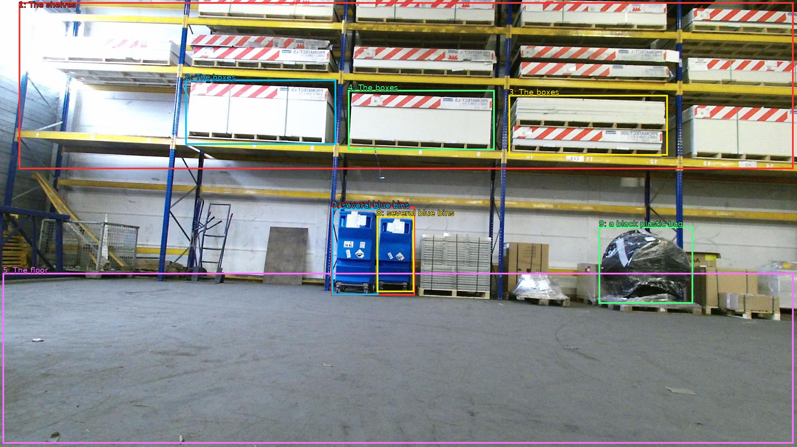
Celoten opis Florence in izvorni podatki
The image shows a large warehouse with multiple rows of yellow metal shelves. The shelves are filled with white boxes with red and white stripes on them. The boxes are arranged in a neat and orderly manner. The floor is made of concrete and there are several blue bins and pallets scattered around the room. On the right side of the image, there is a black plastic bag and some cardboard boxes. The warehouse appears to be well-maintained and well-organized.
Opis, regije in surovi odgovori Florenceqwen3.5:27b-q4_K_M
Q4_K_M · 3.973 s · response_received
Celoten surovi zapis{"objects":[{"id":1,"classification":"uncertain","reason":"Shelves lack visible permanent installation evidence."},{"id":2,"classification":"movable","reason":"Boxes are easily carried or repositioned."},{"id":3,"classification":"movable","reason":"Boxes are easily carried or repositioned."},{"id":4,"classification":"movable","reason":"Boxes are easily carried or repositioned."},{"id":5,"classification":"fixed","reason":"Structural building element of the warehouse."},{"id":6,"classification":"movable","reason":"Bins can be pushed or carried away."},{"id":7,"classification":"movable","reason":"Bins can be pushed or carried away."},{"id":8,"classification":"movable","reason":"Bins can be pushed or carried away."},{"id":9,"classification":"movable","reason":"Plastic bag is easily carried or moved."}]}qwen3.5:4b-q4_K_M
Q4_K_M · 1.242 s · response_received
Celoten surovi zapis{"objects":[{"id":1,"classification":"uncertain","reason":"Shelves are uncertain without visible permanent installation."},{"id":2,"classification":"movable","reason":"Boxes can be carried or repositioned in normal use."},{"id":3,"classification":"movable","reason":"Boxes can be carried or repositioned in normal use."},{"id":4,"classification":"movable","reason":"Boxes can be carried or repositioned in normal use."},{"id":5,"classification":"fixed","reason":"Structural building element, the floor."},{"id":6,"classification":"movable","reason":"Bins can be pushed or repositioned in normal use."},{"id":7,"classification":"movable","reason":"Bins can be pushed or repositioned in normal use."},{"id":8,"classification":"movable","reason":"Bins can be pushed or repositioned in normal use."},{"id":9,"classification":"movable","reason":"A plastic bag can be easily carried or moved."}]}gemma3:27b-it-q4_K_M
Q4_K_M · 6.888 s · response_received
Celoten surovi zapis{"objects": [{"id": 1, "classification": "uncertain", "reason": "Shelves may be integrated or freestanding."}, {"id": 2, "classification": "movable", "reason": "Boxes are carried/repositioned easily."}, {"id": 3, "classification": "movable", "reason": "Boxes are carried/repositioned easily."}, {"id": 4, "classification": "movable", "reason": "Boxes are carried/repositioned easily."}, {"id": 5, "classification": "fixed", "reason": "Structural building element."}, {"id": 6, "classification": "movable", "reason": "Bins can be moved around."}, {"id": 7, "classification": "movable", "reason": "Bins can be moved around."}, {"id": 8, "classification": "movable", "reason": "Bins can be moved around."}, {"id": 9, "classification": "movable", "reason": "Bag is easily carried/repositioned."}]}| Nabor | Okolje | ID regije | Oznaka Florence | qwen3.5:27b-q4_K_M | qwen3.5:4b-q4_K_M | gemma3:27b-it-q4_K_M | Primerjava |
|---|
| loco | loco-subset-2 | 1 | The shelves | uncertain | uncertain | uncertain | enaki razredi |
| loco | loco-subset-2 | 2 | The boxes | movable | movable | movable | enaki razredi |
| loco | loco-subset-2 | 3 | The boxes | movable | movable | movable | enaki razredi |
| loco | loco-subset-2 | 4 | The boxes | movable | movable | movable | enaki razredi |
| loco | loco-subset-2 | 5 | The floor | fixed | fixed | fixed | enaki razredi |
| loco | loco-subset-2 | 6 | several blue bins | movable | movable | movable | enaki razredi |
| loco | loco-subset-2 | 7 | several blue bins | movable | movable | movable | enaki razredi |
| loco | loco-subset-2 | 8 | several blue bins | movable | movable | movable | enaki razredi |
| loco | loco-subset-2 | 9 | a black plastic bag | movable | movable | movable | enaki razredi |
loco-s2-35275
loco / loco-subset-2

Celoten opis Florence in izvorni podatki
The image shows a person walking in a warehouse with stacks of orange and black shipping containers. The containers are stacked on top of each other and appear to be made of metal. The person is wearing grey pants and brown shoes. The warehouse has a concrete floor and there are stacks of cardboard boxes in the background. The image appears to be taken from a low angle, looking down on the person's feet.
Opis, regije in surovi odgovori Florenceqwen3.5:27b-q4_K_M
Q4_K_M · 4.501 s · response_received
Celoten surovi zapis{"objects":[{"id":1,"classification":"movable","reason":"People can walk and change position."},{"id":2,"classification":"movable","reason":"Shipping containers are designed to be moved."},{"id":3,"classification":"movable","reason":"Shipping containers are designed to be moved."},{"id":4,"classification":"movable","reason":"Shipping containers are designed to be moved."},{"id":5,"classification":"movable","reason":"People can walk and change position."},{"id":6,"classification":"movable","reason":"Clothing is worn and easily repositioned."},{"id":7,"classification":"movable","reason":"Shoes are worn and easily repositioned."},{"id":8,"classification":"movable","reason":"Shoes are worn and easily repositioned."},{"id":9,"classification":"fixed","reason":"Warehouse is a structural building element."},{"id":10,"classification":"movable","reason":"Stacks of items can be rearranged or moved."}]}qwen3.5:4b-q4_K_M
Q4_K_M · 1.350 s · response_received
Celoten surovi zapis{"objects":[{"id":1,"classification":"movable","reason":"A person can move or change position freely."},{"id":2,"classification":"movable","reason":"Shipping containers are movable cargo units."},{"id":3,"classification":"movable","reason":"Shipping containers are movable cargo units."},{"id":4,"classification":"movable","reason":"Shipping containers are movable cargo units."},{"id":5,"classification":"movable","reason":"A person can move or change position freely."},{"id":6,"classification":"movable","reason":"Clothing items like pants can be moved easily."},{"id":7,"classification":"movable","reason":"Shoes are small objects that can be carried or pushed."},{"id":8,"classification":"movable","reason":"Shoes are small objects that can be carried or pushed."},{"id":9,"classification":"fixed","reason":"A warehouse is a permanent structural building element."},{"id":10,"classification":"movable","reason":"Stacks of goods can be repositioned or moved."}]}gemma3:27b-it-q4_K_M
Q4_K_M · 6.123 s · response_received
Celoten surovi zapis{"objects": [{"id": 1, "classification": "movable", "reason": "A person can move themselves."}, {"id": 2, "classification": "movable", "reason": "Containers are repositioned by machinery."}, {"id": 3, "classification": "movable", "reason": "Containers are repositioned by machinery."}, {"id": 4, "classification": "movable", "reason": "Containers are repositioned by machinery."}, {"id": 5, "classification": "movable", "reason": "A person can move themselves."}, {"id": 6, "classification": "movable", "reason": "Clothing is carried or moved."}, {"id": 7, "classification": "movable", "reason": "Shoes are worn and carried."}, {"id": 8, "classification": "movable", "reason": "Shoes are worn and carried."}, {"id": 9, "classification": "fixed", "reason": "Structural building element."}, {"id": 10, "classification": "movable", "reason": "Stacks can be rearranged."}]}| Nabor | Okolje | ID regije | Oznaka Florence | qwen3.5:27b-q4_K_M | qwen3.5:4b-q4_K_M | gemma3:27b-it-q4_K_M | Primerjava |
|---|
| loco | loco-subset-2 | 1 | a person | movable | movable | movable | enaki razredi |
| loco | loco-subset-2 | 2 | containers | movable | movable | movable | enaki razredi |
| loco | loco-subset-2 | 3 | The containers | movable | movable | movable | enaki razredi |
| loco | loco-subset-2 | 4 | The containers | movable | movable | movable | enaki razredi |
| loco | loco-subset-2 | 5 | The person | movable | movable | movable | enaki razredi |
| loco | loco-subset-2 | 6 | pants | movable | movable | movable | enaki razredi |
| loco | loco-subset-2 | 7 | shoes | movable | movable | movable | enaki razredi |
| loco | loco-subset-2 | 8 | shoes | movable | movable | movable | enaki razredi |
| loco | loco-subset-2 | 9 | The warehouse | fixed | fixed | fixed | enaki razredi |
| loco | loco-subset-2 | 10 | stacks | movable | movable | movable | enaki razredi |
loco-s3-36330
loco / loco-subset-3

Celoten opis Florence in izvorni podatki
The image shows a large warehouse with a high ceiling and concrete floor. The walls are painted white and there are red pipes running along the ceiling. On the left side of the image, there is a large red sign that reads "UMWM" in white letters. In the center of the room, there are several stacks of red and white boxes stacked on wooden pallets. There are also several cardboard boxes and other items scattered around the room. The overall atmosphere of the space is industrial and warehouse-like.
Opis, regije in surovi odgovori Florenceqwen3.5:27b-q4_K_M
Q4_K_M · 4.897 s · response_received
Celoten surovi zapis{"objects":[{"id":1,"classification":"fixed","reason":"Structural building element forming the ground."},{"id":2,"classification":"fixed","reason":"Structural building elements enclosing the space."},{"id":3,"classification":"uncertain","reason":"Pipes may be fixed or movable; installation not visible."},{"id":4,"classification":"uncertain","reason":"Pipes may be fixed or movable; installation not visible."},{"id":5,"classification":"uncertain","reason":"Sign could be mounted or freestanding; attachment not visible."},{"id":6,"classification":"movable","reason":"Stacks of items can be moved or repositioned."},{"id":7,"classification":"movable","reason":"Stacks of items can be moved or repositioned."},{"id":8,"classification":"movable","reason":"Boxes are portable objects easily carried."},{"id":9,"classification":"movable","reason":"Pallets are designed for moving goods."},{"id":10,"classification":"movable","reason":"Cardboard boxes are portable and easily moved."},{"id":11,"classification":"movable","reason":"Cardboard boxes are portable and easily moved."}]}qwen3.5:4b-q4_K_M
Q4_K_M · 1.537 s · response_received
Celoten surovi zapis{"objects":[{"id":1,"classification":"fixed","reason":"Structural floor element of the building."},{"id":2,"classification":"fixed","reason":"Structural wall element of the building."},{"id":3,"classification":"uncertain","reason":"Pipes may be fixed or movable without clear evidence."},{"id":4,"classification":"uncertain","reason":"Pipes may be fixed or movable without clear evidence."},{"id":5,"classification":"movable","reason":"Signs can typically be moved or repositioned."},{"id":6,"classification":"movable","reason":"Stacks of goods are easily repositioned by workers."},{"id":7,"classification":"movable","reason":"Stacks of goods are easily repositioned by workers."},{"id":8,"classification":"movable","reason":"Boxes can be carried or pushed to new locations."},{"id":9,"classification":"movable","reason":"Pallets can be moved, though they support movable items."},{"id":10,"classification":"movable","reason":"Cardboard boxes are easily repositioned by workers."},{"id":11,"classification":"movable","reason":"Cardboard boxes are easily repositioned by workers."}]}gemma3:27b-it-q4_K_M
Q4_K_M · 7.233 s · response_received
Celoten surovi zapis{"objects": [{"id": 1, "classification": "fixed", "reason": "Structural building element."}, {"id": 2, "classification": "fixed", "reason": "Structural building element."}, {"id": 3, "classification": "fixed", "reason": "Integrated installation; requires dismantling to move."}, {"id": 4, "classification": "fixed", "reason": "Integrated installation; requires dismantling to move."}, {"id": 5, "classification": "fixed", "reason": "Attached to a structure."}, {"id": 6, "classification": "movable", "reason": "Can be rearranged or moved easily."}, {"id": 7, "classification": "movable", "reason": "Can be rearranged or moved easily."}, {"id": 8, "classification": "movable", "reason": "Can be carried or moved."}, {"id": 9, "classification": "movable", "reason": "Can be repositioned."}, {"id": 10, "classification": "movable", "reason": "Can be carried or moved."}, {"id": 11, "classification": "movable", "reason": "Can be carried or moved."}]}| Nabor | Okolje | ID regije | Oznaka Florence | qwen3.5:27b-q4_K_M | qwen3.5:4b-q4_K_M | gemma3:27b-it-q4_K_M | Primerjava |
|---|
| loco | loco-subset-3 | 1 | floor | fixed | fixed | fixed | enaki razredi |
| loco | loco-subset-3 | 2 | The walls | fixed | fixed | fixed | enaki razredi |
| loco | loco-subset-3 | 3 | red pipes | uncertain | uncertain | fixed | različni razredi |
| loco | loco-subset-3 | 4 | red pipes | uncertain | uncertain | fixed | različni razredi |
| loco | loco-subset-3 | 5 | a large red sign | uncertain | movable | fixed | različni razredi |
| loco | loco-subset-3 | 6 | several stacks | movable | movable | movable | enaki razredi |
| loco | loco-subset-3 | 7 | several stacks | movable | movable | movable | enaki razredi |
| loco | loco-subset-3 | 8 | boxes | movable | movable | movable | enaki razredi |
| loco | loco-subset-3 | 9 | pallets | movable | movable | movable | enaki razredi |
| loco | loco-subset-3 | 10 | several cardboard boxes | movable | movable | movable | enaki razredi |
| loco | loco-subset-3 | 11 | several cardboard boxes | movable | movable | movable | enaki razredi |
loco-s3-36609
loco / loco-subset-3

Celoten opis Florence in izvorni podatki
The image shows the interior of a large warehouse with concrete walls and flooring. On the left side of the image, there are stacks of wooden pallets arranged in a neat and orderly manner. The pallets are of different sizes and colors, and some are stacked on top of each other. In the center of the room, there is a large blue door that leads to another room. The room is well-lit with fluorescent lights hanging from the ceiling. There are also several red and white signs on the walls, indicating that this is a storage or warehouse space. A car is parked in the foreground, and there are several stacks of red boxes and pallets scattered throughout the room.
Opis, regije in surovi odgovori Florenceqwen3.5:27b-q4_K_M
Q4_K_M · 8.697 s · response_received
Celoten surovi zapis{"objects":[{"id":1,"classification":"fixed","reason":"Structural building element."},{"id":2,"classification":"fixed","reason":"Structural building element."},{"id":3,"classification":"movable","reason":"Stacks can be moved or repositioned."},{"id":4,"classification":"movable","reason":"Pallets are designed to be moved."},{"id":5,"classification":"movable","reason":"Pallets are designed to be moved."},{"id":6,"classification":"fixed","reason":"Installed room element; opening is not relocation."},{"id":7,"classification":"uncertain","reason":"Room label lacks specific object identity."},{"id":8,"classification":"uncertain","reason":"Room label lacks specific object identity."},{"id":9,"classification":"fixed","reason":"Structural building element."},{"id":10,"classification":"uncertain","reason":"Label too vague to identify object type."},{"id":11,"classification":"uncertain","reason":"Label too vague to identify object type."},{"id":12,"classification":"uncertain","reason":"Label too vague to identify object type."},{"id":13,"classification":"uncertain","reason":"Permanent installation not established from name alone."},{"id":14,"classification":"uncertain","reason":"Permanent installation not established from name alone."},{"id":15,"classification":"uncertain","reason":"Permanent installation not established from name alone."},{"id":16,"classification":"uncertain","reason":"Permanent installation not established from name alone."},{"id":17,"classification":"movable","reason":"Vehicles are designed to be driven away."},{"id":18,"classification":"movable","reason":"Stacks can be moved or repositioned."},{"id":19,"classification":"movable","reason":"Boxes are easily carried or pushed."},{"id":20,"classification":"movable","reason":"Boxes are easily carried or pushed."},{"id":21,"classification":"movable","reason":"Pallets are designed to be moved."}]}qwen3.5:4b-q4_K_M
Q4_K_M · 5.385 s · response_received
Celoten surovi zapis{"objects":[{"id":1,"classification":"fixed","reason":"Structural building element."},{"id":2,"classification":"fixed","reason":"Structural building element."},{"id":3,"classification":"movable","reason":"Stacks of items can be moved or repositioned."},{"id":4,"classification":"movable","reason":"Pallets can be carried or pushed."},{"id":5,"classification":"movable","reason":"Pallets can be carried or pushed."},{"id":6,"classification":"fixed","reason":"Installed room element; opening is not relocation."},{"id":7,"classification":"uncertain","reason":"Room boundaries are structural but context varies."},{"id":8,"classification":"uncertain","reason":"Room boundaries are structural but context varies."},{"id":9,"classification":"fixed","reason":"Structural building element."},{"id":10,"classification":"movable","reason":"Boxes or items can be moved."},{"id":11,"classification":"movable","reason":"Boxes or items can be moved."},{"id":12,"classification":"movable","reason":"Boxes or items can be moved."},{"id":13,"classification":"uncertain","reason":"Signs may be mounted or freestanding."},{"id":14,"classification":"uncertain","reason":"Signs may be mounted or freestanding."},{"id":15,"classification":"uncertain","reason":"Signs may be mounted or freestanding."},{"id":16,"classification":"uncertain","reason":"Signs may be mounted or freestanding."},{"id":17,"classification":"movable","reason":"A car can be driven to a new location."},{"id":18,"classification":"movable","reason":"Stacks of items can be moved or repositioned."},{"id":19,"classification":"movable","reason":"Boxes can be carried or pushed."},{"id":20,"classification":"movable","reason":"Boxes can be carried or pushed."},{"id":21,"classification":"movable","reason":"Pallets can be carried or pushed."}]}gemma3:27b-it-q4_K_M
Q4_K_M · 11.796 s · response_received
Celoten surovi zapis{"objects": [{"id": 1, "classification": "fixed", "reason": "Structural building element."}, {"id": 2, "classification": "fixed", "reason": "Structural building element."}, {"id": 3, "classification": "movable", "reason": "Can be rearranged or moved easily."}, {"id": 4, "classification": "movable", "reason": "Can be rearranged or moved easily."}, {"id": 5, "classification": "movable", "reason": "Can be rearranged or moved easily."}, {"id": 6, "classification": "fixed", "reason": "Installed room element; opening is not relocation."}, {"id": 7, "classification": "uncertain", "reason": "Semantic class is too broad to classify reliably."}, {"id": 8, "classification": "uncertain", "reason": "Semantic class is too broad to classify reliably."}, {"id": 9, "classification": "fixed", "reason": "Structural building element."}, {"id": 10, "classification": "movable", "reason": "Items are movable within the space."}, {"id": 11, "classification": "movable", "reason": "Items are movable within the space."}, {"id": 12, "classification": "movable", "reason": "Items are movable within the space."}, {"id": 13, "classification": "fixed", "reason": "Attached to a surface."}, {"id": 14, "classification": "fixed", "reason": "Attached to a surface."}, {"id": 15, "classification": "fixed", "reason": "Attached to a surface."}, {"id": 16, "classification": "fixed", "reason": "Attached to a surface."}, {"id": 17, "classification": "movable", "reason": "Vehicle; can be driven away."}, {"id": 18, "classification": "movable", "reason": "Can be rearranged or moved easily."}, {"id": 19, "classification": "movable", "reason": "Can be carried or moved."}, {"id": 20, "classification": "movable", "reason": "Can be carried or moved."}, {"id": 21, "classification": "movable", "reason": "Can be rearranged or moved easily."}]}| Nabor | Okolje | ID regije | Oznaka Florence | qwen3.5:27b-q4_K_M | qwen3.5:4b-q4_K_M | gemma3:27b-it-q4_K_M | Primerjava |
|---|
| loco | loco-subset-3 | 1 | concrete walls | fixed | fixed | fixed | enaki razredi |
| loco | loco-subset-3 | 2 | flooring | fixed | fixed | fixed | enaki razredi |
| loco | loco-subset-3 | 3 | stacks | movable | movable | movable | enaki razredi |
| loco | loco-subset-3 | 4 | pallets | movable | movable | movable | enaki razredi |
| loco | loco-subset-3 | 5 | The pallets | movable | movable | movable | enaki razredi |
| loco | loco-subset-3 | 6 | a large blue door | fixed | fixed | fixed | enaki razredi |
| loco | loco-subset-3 | 7 | The room | uncertain | uncertain | uncertain | enaki razredi |
| loco | loco-subset-3 | 8 | The room | uncertain | uncertain | uncertain | enaki razredi |
| loco | loco-subset-3 | 9 | ceiling | fixed | fixed | fixed | enaki razredi |
| loco | loco-subset-3 | 10 | several red | uncertain | movable | movable | različni razredi |
| loco | loco-subset-3 | 11 | several red | uncertain | movable | movable | različni razredi |
| loco | loco-subset-3 | 12 | several red | uncertain | movable | movable | različni razredi |
| loco | loco-subset-3 | 13 | signs | uncertain | uncertain | fixed | različni razredi |
| loco | loco-subset-3 | 14 | signs | uncertain | uncertain | fixed | različni razredi |
| loco | loco-subset-3 | 15 | signs | uncertain | uncertain | fixed | različni razredi |
| loco | loco-subset-3 | 16 | signs | uncertain | uncertain | fixed | različni razredi |
| loco | loco-subset-3 | 17 | A car | movable | movable | movable | enaki razredi |
| loco | loco-subset-3 | 18 | several stacks | movable | movable | movable | enaki razredi |
| loco | loco-subset-3 | 19 | boxes | movable | movable | movable | enaki razredi |
| loco | loco-subset-3 | 20 | boxes | movable | movable | movable | enaki razredi |
| loco | loco-subset-3 | 21 | pallets | movable | movable | movable | enaki razredi |
loco-s3-36627
loco / loco-subset-3
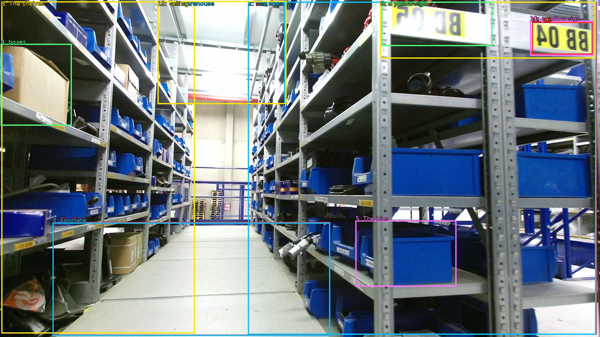
Celoten opis Florence in izvorni podatki
The image shows a long row of metal shelves in a warehouse or storage area. The shelves are arranged in a neat and orderly manner, with rows of blue bins and boxes neatly arranged on them. The bins appear to be filled with various items such as tools, equipment, and other household items. The floor is made of concrete and there is a yellow sign on the right side of the image that reads "BB 04". The warehouse appears to be well-lit with fluorescent lights on the ceiling.
Opis, regije in surovi odgovori Florenceqwen3.5:27b-q4_K_M
Q4_K_M · 5.844 s · response_received
Celoten surovi zapis{"objects":[{"id":1,"classification":"uncertain","reason":"Label 'row' is ambiguous without clear object identity."},{"id":2,"classification":"uncertain","reason":"Shelves lack visible evidence of permanent installation."},{"id":3,"classification":"uncertain","reason":"Shelves lack visible evidence of permanent installation."},{"id":4,"classification":"movable","reason":"Boxes are easily carried or repositioned in normal use."},{"id":5,"classification":"movable","reason":"Bins are designed to be carried or moved."},{"id":6,"classification":"fixed","reason":"Structural building element forming the ground surface."},{"id":7,"classification":"fixed","reason":"Concrete floor is a structural building element."},{"id":8,"classification":"uncertain","reason":"Sign attachment method not visible; could be movable."},{"id":9,"classification":"uncertain","reason":"Sign attachment method not visible; could be movable."},{"id":10,"classification":"uncertain","reason":"Sign attachment method not visible; could be movable."},{"id":11,"classification":"uncertain","reason":"Label 'BB' is text, physical object status unclear."},{"id":12,"classification":"fixed","reason":"Warehouse represents the structural building itself."},{"id":13,"classification":"fixed","reason":"Structural building element forming the overhead surface."}]}qwen3.5:4b-q4_K_M
Q4_K_M · 1.739 s · response_received
Celoten surovi zapis{"objects":[{"id":1,"classification":"uncertain","reason":"Label 'row' lacks specific object identity evidence."},{"id":2,"classification":"movable","reason":"Shelves are typically movable unless fixed installation is proven."},{"id":3,"classification":"movable","reason":"Shelves are typically movable unless fixed installation is proven."},{"id":4,"classification":"movable","reason":"Boxes can be easily carried or repositioned by hand."},{"id":5,"classification":"movable","reason":"Bins can be easily carried or repositioned by hand."},{"id":6,"classification":"fixed","reason":"Floor is a structural building element."},{"id":7,"classification":"fixed","reason":"Concrete is a structural building material."},{"id":8,"classification":"movable","reason":"Signs are typically movable unless explicitly fixed."},{"id":9,"classification":"movable","reason":"Signs are typically movable unless explicitly fixed."},{"id":10,"classification":"movable","reason":"Signs are typically movable unless explicitly fixed."},{"id":11,"classification":"movable","reason":"Text labels like 'BB' are movable or uncertain."},{"id":12,"classification":"fixed","reason":"Warehouse is a structural building element."},{"id":13,"classification":"fixed","reason":"Ceiling is a structural building element."}]}gemma3:27b-it-q4_K_M
Q4_K_M · 6.993 s · response_received
Celoten surovi zapis{"objects": [{"id": 1, "classification": "uncertain", "reason": "Part of a larger structure, not fully defined."}, {"id": 2, "classification": "uncertain", "reason": "Installation is not explicitly established."}, {"id": 3, "classification": "uncertain", "reason": "Installation is not explicitly established."}, {"id": 4, "classification": "movable", "reason": "Can be carried or moved easily."}, {"id": 5, "classification": "movable", "reason": "Can be carried or moved easily."}, {"id": 6, "classification": "fixed", "reason": "Structural element of the building."}, {"id": 7, "classification": "fixed", "reason": "Part of the floor structure."}, {"id": 8, "classification": "movable", "reason": "Signs are typically repositionable."}, {"id": 9, "classification": "movable", "reason": "Signs are typically repositionable."}, {"id": 10, "classification": "movable", "reason": "Signs are typically repositionable."}, {"id": 11, "classification": "movable", "reason": "Part of a sign, easily moved with it."}, {"id": 12, "classification": "fixed", "reason": "The building itself is fixed."}, {"id": 13, "classification": "fixed", "reason": "Structural part of the building."}]}| Nabor | Okolje | ID regije | Oznaka Florence | qwen3.5:27b-q4_K_M | qwen3.5:4b-q4_K_M | gemma3:27b-it-q4_K_M | Primerjava |
|---|
| loco | loco-subset-3 | 1 | row | uncertain | uncertain | uncertain | enaki razredi |
| loco | loco-subset-3 | 2 | The shelves | uncertain | movable | uncertain | različni razredi |
| loco | loco-subset-3 | 3 | The shelves | uncertain | movable | uncertain | različni razredi |
| loco | loco-subset-3 | 4 | boxes | movable | movable | movable | enaki razredi |
| loco | loco-subset-3 | 5 | The bins | movable | movable | movable | enaki razredi |
| loco | loco-subset-3 | 6 | The floor | fixed | fixed | fixed | enaki razredi |
| loco | loco-subset-3 | 7 | concrete | fixed | fixed | fixed | enaki razredi |
| loco | loco-subset-3 | 8 | a yellow sign | uncertain | movable | movable | različni razredi |
| loco | loco-subset-3 | 9 | a yellow sign | uncertain | movable | movable | različni razredi |
| loco | loco-subset-3 | 10 | a yellow sign | uncertain | movable | movable | različni razredi |
| loco | loco-subset-3 | 11 | BB | uncertain | movable | movable | različni razredi |
| loco | loco-subset-3 | 12 | The warehouse | fixed | fixed | fixed | enaki razredi |
| loco | loco-subset-3 | 13 | ceiling | fixed | fixed | fixed | enaki razredi |
loco-s3-36624
loco / loco-subset-3

Celoten opis Florence in izvorni podatki
The image shows a large warehouse with rows of orange metal shelves. The shelves are filled with various items such as boxes, containers, and other storage containers. The floor is made of concrete and the walls are painted white. The warehouse appears to be well-lit with fluorescent lights. The overall atmosphere of the space is industrial and organized.
Opis, regije in surovi odgovori Florenceqwen3.5:27b-q4_K_M
Q4_K_M · 2.129 s · response_received
Celoten surovi zapis{"objects":[{"id":1,"classification":"uncertain","reason":"No visible evidence of permanent installation."},{"id":2,"classification":"uncertain","reason":"No visible evidence of permanent installation."},{"id":3,"classification":"fixed","reason":"Structural building element."},{"id":4,"classification":"fixed","reason":"The warehouse is a structural building."}]}qwen3.5:4b-q4_K_M
Q4_K_M · 0.640 s · response_received
Celoten surovi zapis{"objects":[{"id":1,"classification":"uncertain","reason":"Permanent installation not established by visual evidence."},{"id":2,"classification":"uncertain","reason":"Permanent installation not established by visual evidence."},{"id":3,"classification":"fixed","reason":"Structural building element: concrete floor."},{"id":4,"classification":"fixed","reason":"Structural building element: the warehouse structure."}]}gemma3:27b-it-q4_K_M
Q4_K_M · 3.046 s · response_received
Celoten surovi zapis{"objects": [{"id": 1, "classification": "movable", "reason": "Shelves can be repositioned in a warehouse."}, {"id": 2, "classification": "movable", "reason": "Shelves can be repositioned in a warehouse."}, {"id": 3, "classification": "fixed", "reason": "Structural element of the building."}, {"id": 4, "classification": "fixed", "reason": "The building itself; not movable."}]}| Nabor | Okolje | ID regije | Oznaka Florence | qwen3.5:27b-q4_K_M | qwen3.5:4b-q4_K_M | gemma3:27b-it-q4_K_M | Primerjava |
|---|
| loco | loco-subset-3 | 1 | The shelves | uncertain | uncertain | movable | različni razredi |
| loco | loco-subset-3 | 2 | The shelves | uncertain | uncertain | movable | različni razredi |
| loco | loco-subset-3 | 3 | The floor | fixed | fixed | fixed | enaki razredi |
| loco | loco-subset-3 | 4 | The warehouse | fixed | fixed | fixed | enaki razredi |
loco-s3-36632
loco / loco-subset-3
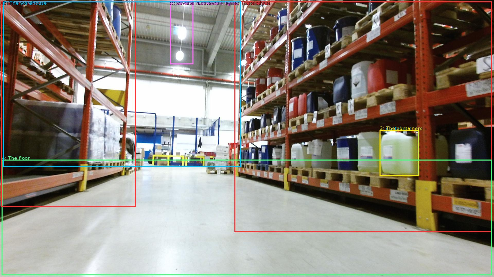
Celoten opis Florence in izvorni podatki
The image shows a large warehouse with rows of red metal shelves. The shelves are filled with various types of containers and containers of different sizes and colors. The containers are arranged in neat rows and appear to be of different shapes and sizes. The floor is made of concrete and there are several fluorescent lights hanging from the ceiling. In the background, there are other shelves and equipment visible. The warehouse appears to be well-lit with natural light coming in from the windows.
Opis, regije in surovi odgovori Florenceqwen3.5:27b-q4_K_M
Q4_K_M · 3.378 s · response_received
Celoten surovi zapis{"objects":[{"id":1,"classification":"uncertain","reason":"Permanent installation not established from visual evidence."},{"id":2,"classification":"movable","reason":"Containers can be carried or repositioned in normal use."},{"id":3,"classification":"movable","reason":"Containers can be carried or repositioned in normal use."},{"id":4,"classification":"fixed","reason":"Structural building element forming the ground surface."},{"id":5,"classification":"uncertain","reason":"Permanent installation not established from visual evidence."},{"id":6,"classification":"uncertain","reason":"Permanent installation not established from visual evidence."},{"id":7,"classification":"fixed","reason":"The warehouse is a structural building element."}]}qwen3.5:4b-q4_K_M
Q4_K_M · 0.981 s · response_received
Celoten surovi zapis{"objects":[{"id":1,"classification":"uncertain","reason":"Shelves may be fixed or movable without installation proof."},{"id":2,"classification":"movable","reason":"Containers are standard objects that can be carried or pushed."},{"id":3,"classification":"movable","reason":"Containers are standard objects that can be carried or pushed."},{"id":4,"classification":"fixed","reason":"Floor is a structural building element."},{"id":5,"classification":"uncertain","reason":"Lights may be fixed or movable without visible installation evidence."},{"id":6,"classification":"uncertain","reason":"Shelves may be fixed or movable without installation proof."},{"id":7,"classification":"fixed","reason":"Warehouse is the primary structural building element."}]}gemma3:27b-it-q4_K_M
Q4_K_M · 6.731 s · response_received
Celoten surovi zapis{"objects": [{"id": 1, "classification": "movable", "reason": "Shelves can be repositioned or disassembled."}, {"id": 2, "classification": "movable", "reason": "Containers are easily moved."}, {"id": 3, "classification": "movable", "reason": "Containers are easily moved."}, {"id": 4, "classification": "fixed", "reason": "Structural element of the building."}, {"id": 5, "classification": "fixed", "reason": "Permanently installed lighting fixtures."}, {"id": 6, "classification": "movable", "reason": "Shelves can be repositioned or disassembled."}, {"id": 7, "classification": "fixed", "reason": "The building itself is a fixed structure."}]}| Nabor | Okolje | ID regije | Oznaka Florence | qwen3.5:27b-q4_K_M | qwen3.5:4b-q4_K_M | gemma3:27b-it-q4_K_M | Primerjava |
|---|
| loco | loco-subset-3 | 1 | The shelves | uncertain | uncertain | movable | različni razredi |
| loco | loco-subset-3 | 2 | containers | movable | movable | movable | enaki razredi |
| loco | loco-subset-3 | 3 | The containers | movable | movable | movable | enaki razredi |
| loco | loco-subset-3 | 4 | The floor | fixed | fixed | fixed | enaki razredi |
| loco | loco-subset-3 | 5 | several fluorescent lights | uncertain | uncertain | fixed | različni razredi |
| loco | loco-subset-3 | 6 | other shelves | uncertain | uncertain | movable | različni razredi |
| loco | loco-subset-3 | 7 | The warehouse | fixed | fixed | fixed | enaki razredi |
loco-s3-36603
loco / loco-subset-3
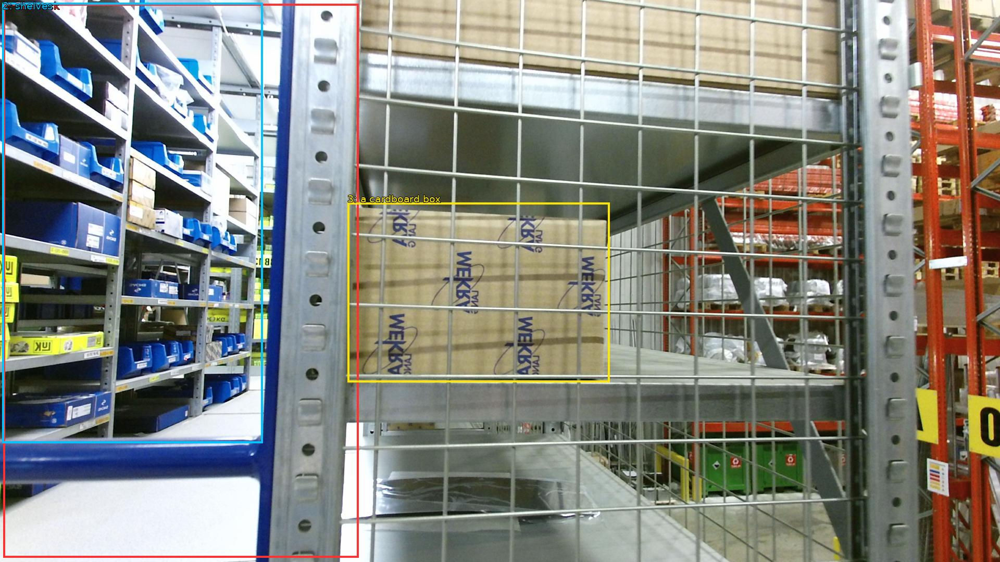
Celoten opis Florence in izvorni podatki
The image shows a large metal rack in a warehouse. The rack is made of metal wire mesh and has a blue handle on the left side. On the right side of the rack, there are shelves with various items such as boxes, bags, and other storage containers. In the center of the image, there is a cardboard box with the word "Walgreens" written on it. The background shows other shelves and racks in the warehouse.
Opis, regije in surovi odgovori Florenceqwen3.5:27b-q4_K_M
Q4_K_M · 1.675 s · response_received
Celoten surovi zapis{"objects":[{"id":1,"classification":"uncertain","reason":"Rack installation status not established."},{"id":2,"classification":"uncertain","reason":"Shelves installation status not established."},{"id":3,"classification":"movable","reason":"Cardboard boxes are easily carried or repositioned."}]}qwen3.5:4b-q4_K_M
Q4_K_M · 0.582 s · response_received
Celoten surovi zapis{"objects":[{"id":1,"classification":"movable","reason":"Racks can be moved or repositioned in normal use."},{"id":2,"classification":"movable","reason":"Shelves are typically movable unless fixed installation is visible."},{"id":3,"classification":"movable","reason":"Cardboard boxes are easily carried and repositioned."}]}gemma3:27b-it-q4_K_M
Q4_K_M · 2.574 s · response_received
Celoten surovi zapis{"objects": [{"id": 1, "classification": "movable", "reason": "Can be repositioned within the warehouse environment."}, {"id": 2, "classification": "movable", "reason": "Shelves can be moved or reconfigured easily."}, {"id": 3, "classification": "movable", "reason": "A cardboard box is easily carried/repositioned."}]}| Nabor | Okolje | ID regije | Oznaka Florence | qwen3.5:27b-q4_K_M | qwen3.5:4b-q4_K_M | gemma3:27b-it-q4_K_M | Primerjava |
|---|
| loco | loco-subset-3 | 1 | The rack | uncertain | movable | movable | različni razredi |
| loco | loco-subset-3 | 2 | shelves | uncertain | movable | movable | različni razredi |
| loco | loco-subset-3 | 3 | a cardboard box | movable | movable | movable | enaki razredi |
loco-s3-36607
loco / loco-subset-3
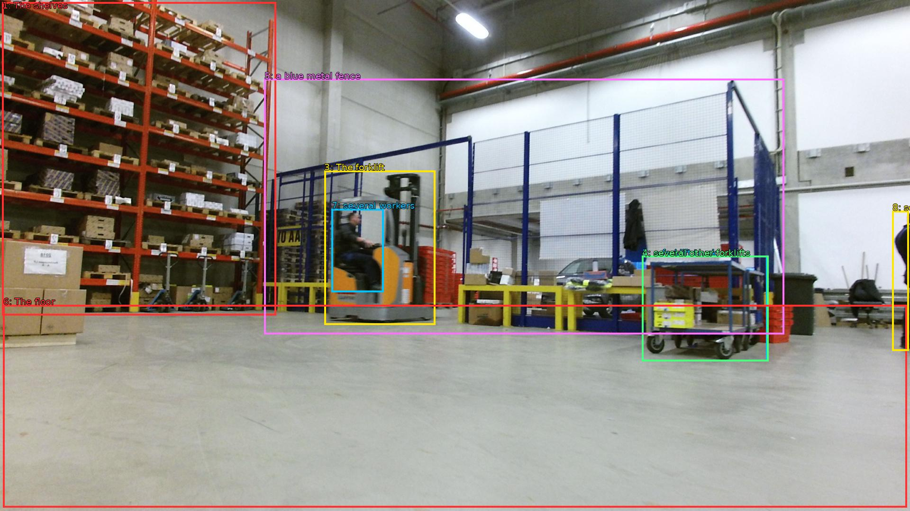
Celoten opis Florence in izvorni podatki
The image shows a large warehouse with a high ceiling and large shelves on the left side. The shelves are filled with cardboard boxes and other items. On the right side of the image, there is a forklift truck parked in the center of the room. The forklift is orange and black in color and appears to be moving through the warehouse. There are several other forklifts and pallets scattered around the room, and a blue metal fence can be seen in the background. The floor is made of concrete and there are several workers visible in the image. The overall atmosphere of the warehouse is busy and organized.
Opis, regije in surovi odgovori Florenceqwen3.5:27b-q4_K_M
Q4_K_M · 3.794 s · response_received
Celoten surovi zapis{"objects":[{"id":1,"classification":"uncertain","reason":"Shelves are movable unless permanent installation is visible."},{"id":2,"classification":"movable","reason":"Forklifts are designed to be driven and repositioned."},{"id":3,"classification":"movable","reason":"Forklifts are designed to be driven and repositioned."},{"id":4,"classification":"movable","reason":"Forklifts are designed to be driven and repositioned."},{"id":5,"classification":"uncertain","reason":"Fences can be fixed or movable; installation not visible."},{"id":6,"classification":"fixed","reason":"Floor is a structural building element."},{"id":7,"classification":"movable","reason":"Workers are people who move freely."},{"id":8,"classification":"movable","reason":"Workers are people who move freely."}]}qwen3.5:4b-q4_K_M
Q4_K_M · 1.118 s · response_received
Celoten surovi zapis{"objects":[{"id":1,"classification":"uncertain","reason":"Shelves may be movable or fixed without clear installation evidence."},{"id":2,"classification":"movable","reason":"Forklifts are designed to be moved and repositioned."},{"id":3,"classification":"movable","reason":"Forklifts are designed to be moved and repositioned."},{"id":4,"classification":"movable","reason":"Forklifts are designed to be moved and repositioned."},{"id":5,"classification":"fixed","reason":"Metal fences are typically permanent structural installations."},{"id":6,"classification":"fixed","reason":"Floor is a structural building element."},{"id":7,"classification":"movable","reason":"Workers can move freely and change position."},{"id":8,"classification":"movable","reason":"Workers can move freely and change position."}]}gemma3:27b-it-q4_K_M
Q4_K_M · 4.499 s · response_received
Celoten surovi zapis{"objects": [{"id": 1, "classification": "uncertain", "reason": "Installation not explicitly established."}, {"id": 2, "classification": "movable", "reason": "A vehicle designed for repositioning loads."}, {"id": 3, "classification": "movable", "reason": "A vehicle designed for repositioning loads."}, {"id": 4, "classification": "movable", "reason": "Vehicles designed for repositioning loads."}, {"id": 5, "classification": "fixed", "reason": "Likely a permanent boundary or safety feature."}, {"id": 6, "classification": "fixed", "reason": "Structural building element."}, {"id": 7, "classification": "movable", "reason": "People can move around freely."}, {"id": 8, "classification": "movable", "reason": "People can move around freely."}]}| Nabor | Okolje | ID regije | Oznaka Florence | qwen3.5:27b-q4_K_M | qwen3.5:4b-q4_K_M | gemma3:27b-it-q4_K_M | Primerjava |
|---|
| loco | loco-subset-3 | 1 | The shelves | uncertain | uncertain | uncertain | enaki razredi |
| loco | loco-subset-3 | 2 | a forklift truck | movable | movable | movable | enaki razredi |
| loco | loco-subset-3 | 3 | The forklift | movable | movable | movable | enaki razredi |
| loco | loco-subset-3 | 4 | several other forklifts | movable | movable | movable | enaki razredi |
| loco | loco-subset-3 | 5 | a blue metal fence | uncertain | fixed | fixed | različni razredi |
| loco | loco-subset-3 | 6 | The floor | fixed | fixed | fixed | enaki razredi |
| loco | loco-subset-3 | 7 | several workers | movable | movable | movable | enaki razredi |
| loco | loco-subset-3 | 8 | several workers | movable | movable | movable | enaki razredi |
loco-s3-36620
loco / loco-subset-3
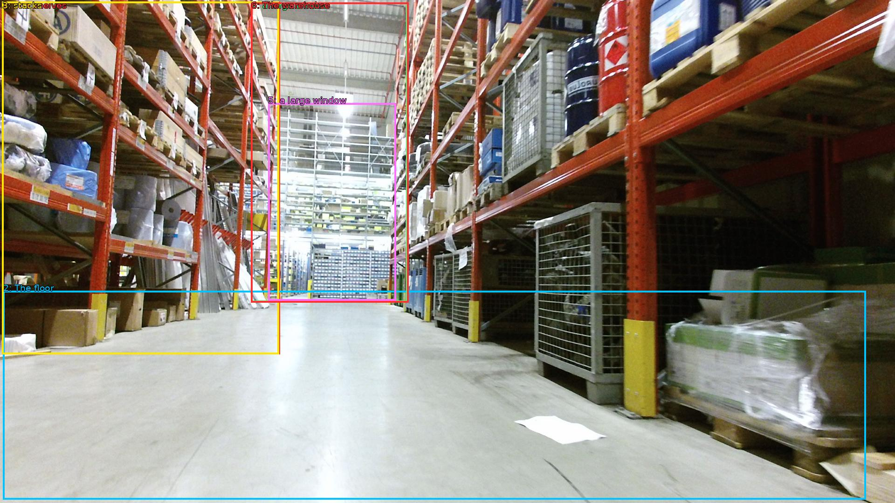
Celoten opis Florence in izvorni podatki
The image shows a large warehouse with rows of red metal shelves on both sides. The shelves are filled with various items such as boxes, bags, and other storage containers. The floor is made of concrete and there are stacks of cardboard boxes and pallets on the right side of the image. In the background, there is a large window that allows natural light to enter the space. The warehouse appears to be well-maintained and well-organized.
Opis, regije in surovi odgovori Florenceqwen3.5:27b-q4_K_M
Q4_K_M · 3.059 s · response_received
Celoten surovi zapis{"objects":[{"id":1,"classification":"uncertain","reason":"Shelves are movable unless permanent installation is visible."},{"id":2,"classification":"fixed","reason":"Structural building element forming the ground surface."},{"id":3,"classification":"movable","reason":"Stacks of boxes can be easily moved or repositioned."},{"id":4,"classification":"fixed","reason":"Windows are installed structural elements of a building."},{"id":5,"classification":"fixed","reason":"Windows are installed structural elements of a building."},{"id":6,"classification":"uncertain","reason":"Warehouse is a building, but label lacks specific element clarity."}]}qwen3.5:4b-q4_K_M
Q4_K_M · 0.932 s · response_received
Celoten surovi zapis{"objects":[{"id":1,"classification":"uncertain","reason":"Shelves may be fixed or movable without installation proof."},{"id":2,"classification":"fixed","reason":"Floor is a structural building element."},{"id":3,"classification":"movable","reason":"Stacks of boxes can be repositioned in normal use."},{"id":4,"classification":"fixed","reason":"Windows are installed room elements, not relocatable."},{"id":5,"classification":"fixed","reason":"Windows are installed room elements, not relocatable."},{"id":6,"classification":"fixed","reason":"Warehouse is a structural building element."}]}gemma3:27b-it-q4_K_M
Q4_K_M · 3.888 s · response_received
Celoten surovi zapis{"objects": [{"id": 1, "classification": "movable", "reason": "Shelves can be repositioned or disassembled."}, {"id": 2, "classification": "fixed", "reason": "Structural element of the building."}, {"id": 3, "classification": "movable", "reason": "Stacks of boxes are easily moved."}, {"id": 4, "classification": "fixed", "reason": "Installed room element; opening is not relocation."}, {"id": 5, "classification": "fixed", "reason": "Installed room element; opening is not relocation."}, {"id": 6, "classification": "fixed", "reason": "The building itself."}]}| Nabor | Okolje | ID regije | Oznaka Florence | qwen3.5:27b-q4_K_M | qwen3.5:4b-q4_K_M | gemma3:27b-it-q4_K_M | Primerjava |
|---|
| loco | loco-subset-3 | 1 | The shelves | uncertain | uncertain | movable | različni razredi |
| loco | loco-subset-3 | 2 | The floor | fixed | fixed | fixed | enaki razredi |
| loco | loco-subset-3 | 3 | stacks | movable | movable | movable | enaki razredi |
| loco | loco-subset-3 | 4 | a large window | fixed | fixed | fixed | enaki razredi |
| loco | loco-subset-3 | 5 | a large window | fixed | fixed | fixed | enaki razredi |
| loco | loco-subset-3 | 6 | The warehouse | uncertain | fixed | fixed | različni razredi |
loco-s3-36623
loco / loco-subset-3
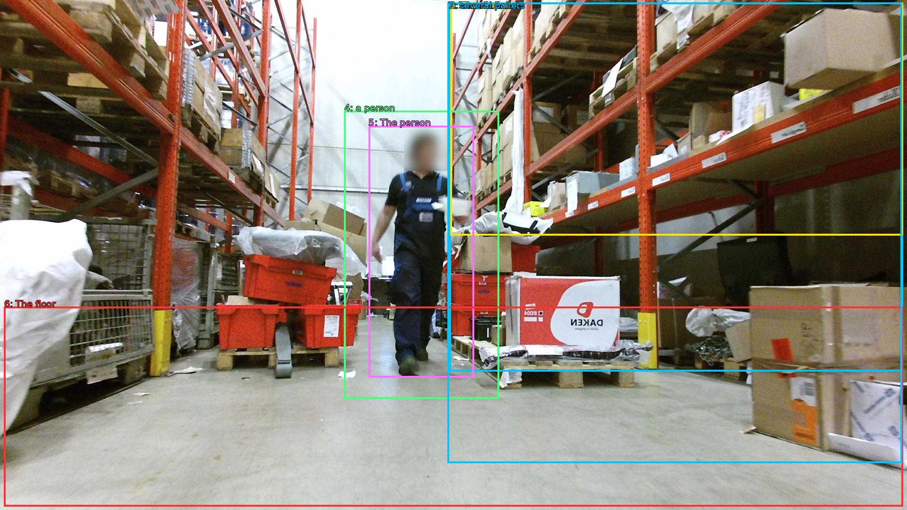
Celoten opis Florence in izvorni podatki
The image shows a large warehouse with rows of shelves on both sides. The shelves are filled with cardboard boxes and other items. In the center of the image, there is a person walking through the warehouse. The person is wearing a blue uniform and appears to be a worker. They are pushing a red cart with a white bag on it. The floor is made of concrete and there are several pallets scattered around the warehouse floor. The image is slightly blurred, but it seems like the person is moving quickly.
Opis, regije in surovi odgovori Florenceqwen3.5:27b-q4_K_M
Q4_K_M · 3.225 s · response_received
Celoten surovi zapis{"objects":[{"id":1,"classification":"uncertain","reason":"No visible evidence of permanent installation."},{"id":2,"classification":"uncertain","reason":"No visible evidence of permanent installation."},{"id":3,"classification":"uncertain","reason":"No visible evidence of permanent installation."},{"id":4,"classification":"movable","reason":"People can move freely between visits."},{"id":5,"classification":"movable","reason":"People can move freely between visits."},{"id":6,"classification":"fixed","reason":"Structural building element."},{"id":7,"classification":"movable","reason":"Pallets are designed to be moved."}]}qwen3.5:4b-q4_K_M
Q4_K_M · 1.001 s · response_received
Celoten surovi zapis{"objects":[{"id":1,"classification":"uncertain","reason":"Shelves usually fixed, but attachment evidence is missing."},{"id":2,"classification":"uncertain","reason":"Shelves usually fixed, but attachment evidence is missing."},{"id":3,"classification":"uncertain","reason":"Shelves usually fixed, but attachment evidence is missing."},{"id":4,"classification":"movable","reason":"A person can move themselves to a new location."},{"id":5,"classification":"movable","reason":"A person can move themselves to a new location."},{"id":6,"classification":"fixed","reason":"Structural building element, the floor."},{"id":7,"classification":"movable","reason":"Pallets are standard warehouse items that can be moved."}]}gemma3:27b-it-q4_K_M
Q4_K_M · 4.320 s · response_received
Celoten surovi zapis{"objects": [{"id": 1, "classification": "uncertain", "reason": "Shelves may be fixed or movable in a warehouse."}, {"id": 2, "classification": "uncertain", "reason": "Shelves may be fixed or movable in a warehouse."}, {"id": 3, "classification": "uncertain", "reason": "Shelves may be fixed or movable in a warehouse."}, {"id": 4, "classification": "movable", "reason": "A person is inherently movable."}, {"id": 5, "classification": "movable", "reason": "A person is inherently movable."}, {"id": 6, "classification": "fixed", "reason": "The floor is a structural building element."}, {"id": 7, "classification": "movable", "reason": "Pallets are typically repositioned."}]}| Nabor | Okolje | ID regije | Oznaka Florence | qwen3.5:27b-q4_K_M | qwen3.5:4b-q4_K_M | gemma3:27b-it-q4_K_M | Primerjava |
|---|
| loco | loco-subset-3 | 1 | The shelves | uncertain | uncertain | uncertain | enaki razredi |
| loco | loco-subset-3 | 2 | The shelves | uncertain | uncertain | uncertain | enaki razredi |
| loco | loco-subset-3 | 3 | The shelves | uncertain | uncertain | uncertain | enaki razredi |
| loco | loco-subset-3 | 4 | a person | movable | movable | movable | enaki razredi |
| loco | loco-subset-3 | 5 | The person | movable | movable | movable | enaki razredi |
| loco | loco-subset-3 | 6 | The floor | fixed | fixed | fixed | enaki razredi |
| loco | loco-subset-3 | 7 | several pallets | movable | movable | movable | enaki razredi |
loco-s3-36617
loco / loco-subset-3
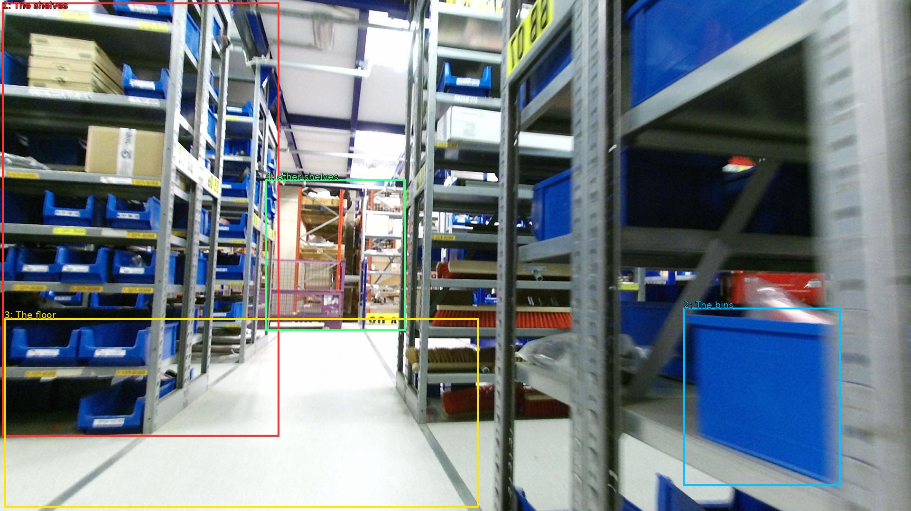
Celoten opis Florence in izvorni podatki
The image shows a long row of shelves in a warehouse. The shelves are made of metal and are filled with blue plastic bins. The bins are arranged in a neat and orderly manner, and the shelves appear to be well-stocked. The floor is made of concrete and the walls are painted white. In the background, there are other shelves and equipment, suggesting that the warehouse is used for storing and organizing items. The image is taken from a low angle, looking down on the shelves.
Opis, regije in surovi odgovori Florenceqwen3.5:27b-q4_K_M
Q4_K_M · 2.255 s · response_received
Celoten surovi zapis{"objects":[{"id":1,"classification":"uncertain","reason":"Shelves are movable unless permanent installation is visible."},{"id":2,"classification":"movable","reason":"Bins can be carried or repositioned in normal use."},{"id":3,"classification":"fixed","reason":"Structural building element, cannot be moved."},{"id":4,"classification":"uncertain","reason":"Shelves are movable unless permanent installation is visible."}]}qwen3.5:4b-q4_K_M
Q4_K_M · 0.641 s · response_received
Celoten surovi zapis{"objects":[{"id":1,"classification":"uncertain","reason":"Shelves are uncertain without visible permanent installation evidence."},{"id":2,"classification":"movable","reason":"Bins are standard storage items that can be moved or replaced."},{"id":3,"classification":"fixed","reason":"Floor is a structural building element."},{"id":4,"classification":"uncertain","reason":"Other shelves lack visible evidence of permanent integration."}]}gemma3:27b-it-q4_K_M
Q4_K_M · 3.313 s · response_received
Celoten surovi zapis{"objects": [{"id": 1, "classification": "movable", "reason": "Shelves can be repositioned in a warehouse setting."}, {"id": 2, "classification": "movable", "reason": "Bins are designed to be moved and rearranged."}, {"id": 3, "classification": "fixed", "reason": "The floor is a structural building element."}, {"id": 4, "classification": "movable", "reason": "Shelves can be repositioned in a warehouse setting."}]}| Nabor | Okolje | ID regije | Oznaka Florence | qwen3.5:27b-q4_K_M | qwen3.5:4b-q4_K_M | gemma3:27b-it-q4_K_M | Primerjava |
|---|
| loco | loco-subset-3 | 1 | The shelves | uncertain | uncertain | movable | različni razredi |
| loco | loco-subset-3 | 2 | The bins | movable | movable | movable | enaki razredi |
| loco | loco-subset-3 | 3 | The floor | fixed | fixed | fixed | enaki razredi |
| loco | loco-subset-3 | 4 | other shelves | uncertain | uncertain | movable | različni razredi |
loco-s3-36600
loco / loco-subset-3

Celoten opis Florence in izvorni podatki
The image shows a large warehouse with multiple rows of red metal shelves. The shelves are filled with various items such as boxes, pallets, and other storage containers. The floor is made of concrete and there are several fluorescent lights hanging from the ceiling. In the background, there is a blue door and a yellow caution sign. The warehouse appears to be well-maintained and well-organized.
Opis, regije in surovi odgovori Florenceqwen3.5:27b-q4_K_M
Q4_K_M · 2.221 s · response_received
Celoten surovi zapis{"objects":[{"id":1,"classification":"uncertain","reason":"Shelves may be movable or permanently installed."},{"id":2,"classification":"fixed","reason":"Structural building element of the warehouse."},{"id":3,"classification":"fixed","reason":"Integrated permanent installation in the ceiling."},{"id":4,"classification":"fixed","reason":"Installed room element; opening is not relocation."},{"id":5,"classification":"fixed","reason":"The warehouse is a structural building entity."}]}qwen3.5:4b-q4_K_M
Q4_K_M · 0.739 s · response_received
Celoten surovi zapis{"objects":[{"id":1,"classification":"uncertain","reason":"Shelves could be fixed or movable without installation proof."},{"id":2,"classification":"fixed","reason":"Floor is a structural building element."},{"id":3,"classification":"fixed","reason":"Lights are typically permanently installed fixtures."},{"id":4,"classification":"fixed","reason":"Door is an installed room element; opening is not relocation."},{"id":5,"classification":"uncertain","reason":"Warehouse label refers to the building itself, which is fixed."}]}gemma3:27b-it-q4_K_M
Q4_K_M · 3.413 s · response_received
Celoten surovi zapis{"objects": [{"id": 1, "classification": "uncertain", "reason": "Installation not explicitly established."}, {"id": 2, "classification": "fixed", "reason": "Structural building element."}, {"id": 3, "classification": "fixed", "reason": "Permanently installed lighting fixtures."}, {"id": 4, "classification": "fixed", "reason": "Installed room element; opening is not relocation."}, {"id": 5, "classification": "fixed", "reason": "The building itself."}]}| Nabor | Okolje | ID regije | Oznaka Florence | qwen3.5:27b-q4_K_M | qwen3.5:4b-q4_K_M | gemma3:27b-it-q4_K_M | Primerjava |
|---|
| loco | loco-subset-3 | 1 | The shelves | uncertain | uncertain | uncertain | enaki razredi |
| loco | loco-subset-3 | 2 | The floor | fixed | fixed | fixed | enaki razredi |
| loco | loco-subset-3 | 3 | several fluorescent lights | fixed | fixed | fixed | enaki razredi |
| loco | loco-subset-3 | 4 | a blue door | fixed | fixed | fixed | enaki razredi |
| loco | loco-subset-3 | 5 | The warehouse | fixed | uncertain | fixed | različni razredi |
loco-s3-36331
loco / loco-subset-3

Celoten opis Florence in izvorni podatki
The image shows a large warehouse with multiple rows of shelves and pallets. The shelves are made of metal and are arranged in a neat and orderly manner. The floor is made of concrete and the walls are painted white. On the right side of the image, there is a red sign that reads "UNIQLO" and on the left side, there are several stacks of wooden pallets stacked on top of each other. In the center of the warehouse, there appears to be a yellow forklift with a blue handle. There are also several red bins and boxes scattered around the pallets, suggesting that the warehouse is used for storing and transporting goods. The warehouse is well-lit with overhead lights.
Opis, regije in surovi odgovori Florenceqwen3.5:27b-q4_K_M
Q4_K_M · 7.147 s · response_received
Celoten surovi zapis{"objects":[{"id":1,"classification":"uncertain","reason":"Permanent installation not established from visual evidence."},{"id":2,"classification":"fixed","reason":"Structural building element."},{"id":3,"classification":"fixed","reason":"Structural building element."},{"id":4,"classification":"fixed","reason":"Structural building element."},{"id":5,"classification":"uncertain","reason":"Installation method not visible; could be movable."},{"id":6,"classification":"uncertain","reason":"Installation method not visible; could be movable."},{"id":7,"classification":"movable","reason":"Stacks of items can be repositioned."},{"id":8,"classification":"movable","reason":"Pallets are designed to be moved."},{"id":9,"classification":"movable","reason":"Forklift is a mobile vehicle."},{"id":10,"classification":"movable","reason":"Bins can be carried or pushed."},{"id":11,"classification":"movable","reason":"Bins can be carried or pushed."},{"id":12,"classification":"movable","reason":"Bins can be carried or pushed."},{"id":13,"classification":"movable","reason":"Bins can be carried or pushed."},{"id":14,"classification":"movable","reason":"Boxes are easily repositioned objects."},{"id":15,"classification":"movable","reason":"Boxes are easily repositioned objects."},{"id":16,"classification":"movable","reason":"Boxes are easily repositioned objects."},{"id":17,"classification":"movable","reason":"Pallets are designed to be moved."},{"id":18,"classification":"fixed","reason":"The warehouse is the structural building itself."}]}qwen3.5:4b-q4_K_M
Q4_K_M · 2.432 s · response_received
Celoten surovi zapis{"objects":[{"id":1,"classification":"uncertain","reason":"Permanent installation is not established by visual evidence."},{"id":2,"classification":"fixed","reason":"Structural building element; cannot be moved without dismantling."},{"id":3,"classification":"fixed","reason":"Structural building element; cannot be moved without dismantling."},{"id":4,"classification":"fixed","reason":"Structural building element; cannot be moved without dismantling."},{"id":5,"classification":"movable","reason":"Signs can typically be repositioned or removed."},{"id":6,"classification":"movable","reason":"Signs can typically be repositioned or removed."},{"id":7,"classification":"movable","reason":"Stacks of goods can be moved, pushed, or repositioned."},{"id":8,"classification":"movable","reason":"Pallets are standard movable objects for transport and storage."},{"id":9,"classification":"movable","reason":"Forklifts are designed to be driven and relocated."},{"id":10,"classification":"movable","reason":"Bins are lightweight containers that can be easily moved."},{"id":11,"classification":"movable","reason":"Bins are lightweight containers that can be easily moved."},{"id":12,"classification":"movable","reason":"Bins are lightweight containers that can be easily moved."},{"id":13,"classification":"movable","reason":"Bins are lightweight containers that can be easily moved."},{"id":14,"classification":"movable","reason":"Boxes are standard movable objects for storage and transport."},{"id":15,"classification":"movable","reason":"Boxes are standard movable objects for storage and transport."},{"id":16,"classification":"movable","reason":"Boxes are standard movable objects for storage and transport."},{"id":17,"classification":"movable","reason":"Pallets are standard movable objects for transport and storage."},{"id":18,"classification":"fixed","reason":"The warehouse is a structural building element."}]}gemma3:27b-it-q4_K_M
Q4_K_M · 8.816 s · response_received
Celoten surovi zapis{"objects": [{"id": 1, "classification": "uncertain", "reason": "Installation not established; could be moved."}, {"id": 2, "classification": "fixed", "reason": "Structural building element."}, {"id": 3, "classification": "fixed", "reason": "Structural building element."}, {"id": 4, "classification": "fixed", "reason": "Structural building element."}, {"id": 5, "classification": "movable", "reason": "Can be carried or repositioned."}, {"id": 6, "classification": "movable", "reason": "Can be carried or repositioned."}, {"id": 7, "classification": "movable", "reason": "Stacks can be rearranged."}, {"id": 8, "classification": "movable", "reason": "Pallets are moved by forklifts."}, {"id": 9, "classification": "movable", "reason": "Vehicle designed for repositioning loads."}, {"id": 10, "classification": "movable", "reason": "Bins are typically moved and emptied."}, {"id": 11, "classification": "movable", "reason": "Bins are typically moved and emptied."}, {"id": 12, "classification": "movable", "reason": "Bins are typically moved and emptied."}, {"id": 13, "classification": "movable", "reason": "Bins are typically moved and emptied."}, {"id": 14, "classification": "movable", "reason": "Boxes are carried or moved."}, {"id": 15, "classification": "movable", "reason": "Boxes are carried or moved."}, {"id": 16, "classification": "movable", "reason": "Boxes are carried or moved."}, {"id": 17, "classification": "movable", "reason": "Pallets are moved by forklifts."}, {"id": 18, "classification": "fixed", "reason": "The building itself; not movable."}]}| Nabor | Okolje | ID regije | Oznaka Florence | qwen3.5:27b-q4_K_M | qwen3.5:4b-q4_K_M | gemma3:27b-it-q4_K_M | Primerjava |
|---|
| loco | loco-subset-3 | 1 | The shelves | uncertain | uncertain | uncertain | enaki razredi |
| loco | loco-subset-3 | 2 | The floor | fixed | fixed | fixed | enaki razredi |
| loco | loco-subset-3 | 3 | the walls | fixed | fixed | fixed | enaki razredi |
| loco | loco-subset-3 | 4 | the walls | fixed | fixed | fixed | enaki razredi |
| loco | loco-subset-3 | 5 | a red sign | uncertain | movable | movable | različni razredi |
| loco | loco-subset-3 | 6 | a red sign | uncertain | movable | movable | različni razredi |
| loco | loco-subset-3 | 7 | several stacks | movable | movable | movable | enaki razredi |
| loco | loco-subset-3 | 8 | pallets | movable | movable | movable | enaki razredi |
| loco | loco-subset-3 | 9 | a yellow forklift with a blue handle | movable | movable | movable | enaki razredi |
| loco | loco-subset-3 | 10 | several red bins | movable | movable | movable | enaki razredi |
| loco | loco-subset-3 | 11 | several red bins | movable | movable | movable | enaki razredi |
| loco | loco-subset-3 | 12 | several red bins | movable | movable | movable | enaki razredi |
| loco | loco-subset-3 | 13 | several red bins | movable | movable | movable | enaki razredi |
| loco | loco-subset-3 | 14 | boxes | movable | movable | movable | enaki razredi |
| loco | loco-subset-3 | 15 | boxes | movable | movable | movable | enaki razredi |
| loco | loco-subset-3 | 16 | boxes | movable | movable | movable | enaki razredi |
| loco | loco-subset-3 | 17 | the pallets | movable | movable | movable | enaki razredi |
| loco | loco-subset-3 | 18 | The warehouse | fixed | fixed | fixed | enaki razredi |
loco-s3-36602
loco / loco-subset-3
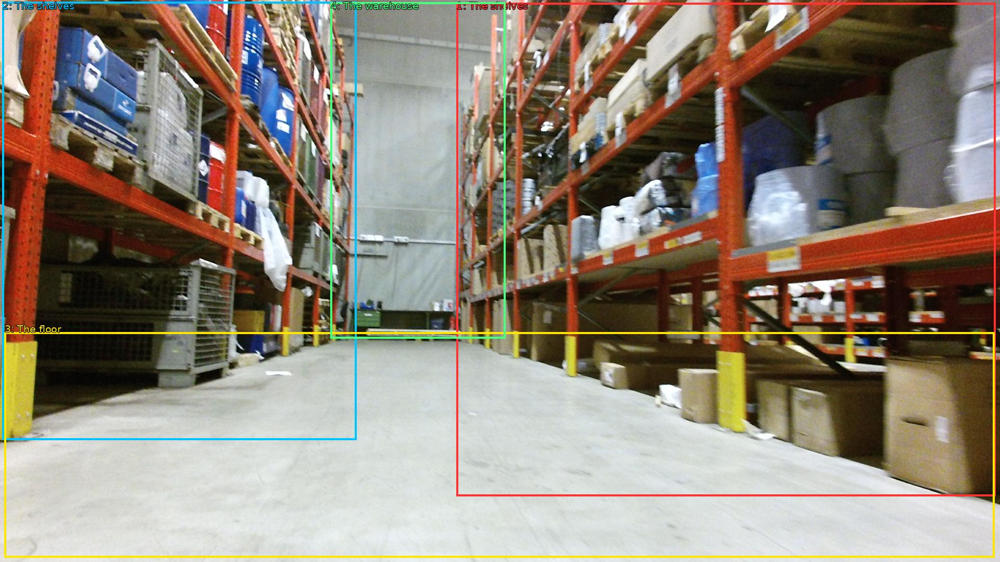
Celoten opis Florence in izvorni podatki
The image shows a large warehouse with multiple rows of orange metal shelves. The shelves are filled with various items such as boxes, bags, and other storage containers. The floor is made of concrete and the walls are painted white. The warehouse appears to be well-lit with natural light coming in from the windows on the left side of the image. The overall atmosphere of the space is organized and tidy.
Opis, regije in surovi odgovori Florenceqwen3.5:27b-q4_K_M
Q4_K_M · 2.123 s · response_received
Celoten surovi zapis{"objects":[{"id":1,"classification":"uncertain","reason":"No visible evidence of permanent installation."},{"id":2,"classification":"uncertain","reason":"No visible evidence of permanent installation."},{"id":3,"classification":"fixed","reason":"Structural building element."},{"id":4,"classification":"uncertain","reason":"Label ambiguous; no clear structural evidence."}]}qwen3.5:4b-q4_K_M
Q4_K_M · 0.713 s · response_received
Celoten surovi zapis{"objects":[{"id":1,"classification":"uncertain","reason":"Shelves are movable unless permanent installation is confirmed."},{"id":2,"classification":"uncertain","reason":"Shelves are movable unless permanent installation is confirmed."},{"id":3,"classification":"fixed","reason":"Floor is a structural building element."},{"id":4,"classification":"fixed","reason":"Warehouse is the structural container of the space."}]}gemma3:27b-it-q4_K_M
Q4_K_M · 3.331 s · response_received
Celoten surovi zapis{"objects": [{"id": 1, "classification": "movable", "reason": "Shelves can be repositioned in a warehouse setting."}, {"id": 2, "classification": "movable", "reason": "Shelves can be repositioned in a warehouse setting."}, {"id": 3, "classification": "fixed", "reason": "Structural element of the building; the floor."}, {"id": 4, "classification": "fixed", "reason": "The warehouse is a structural building element."}]}| Nabor | Okolje | ID regije | Oznaka Florence | qwen3.5:27b-q4_K_M | qwen3.5:4b-q4_K_M | gemma3:27b-it-q4_K_M | Primerjava |
|---|
| loco | loco-subset-3 | 1 | The shelves | uncertain | uncertain | movable | različni razredi |
| loco | loco-subset-3 | 2 | The shelves | uncertain | uncertain | movable | različni razredi |
| loco | loco-subset-3 | 3 | The floor | fixed | fixed | fixed | enaki razredi |
| loco | loco-subset-3 | 4 | The warehouse | uncertain | fixed | fixed | različni razredi |
loco-s3-36598
loco / loco-subset-3

Celoten opis Florence in izvorni podatki
The image shows a large warehouse with rows of orange metal shelves. The shelves are filled with various items such as boxes, pallets, and containers. The floor is made of concrete and the ceiling is high with recessed lighting. The warehouse appears to be well-lit with natural light coming in from the windows on the left side of the image. In the background, there are a few workers visible. The overall atmosphere of the warehouse is busy and organized.
Opis, regije in surovi odgovori Florenceqwen3.5:27b-q4_K_M
Q4_K_M · 3.154 s · response_received
Celoten surovi zapis{"objects":[{"id":1,"classification":"uncertain","reason":"No visible evidence of permanent installation."},{"id":2,"classification":"uncertain","reason":"No visible evidence of permanent installation."},{"id":3,"classification":"fixed","reason":"Structural building element."},{"id":4,"classification":"fixed","reason":"Structural building element."},{"id":5,"classification":"fixed","reason":"The warehouse is a structural building."},{"id":6,"classification":"movable","reason":"People can move freely."},{"id":7,"classification":"movable","reason":"People can move freely."}]}qwen3.5:4b-q4_K_M
Q4_K_M · 0.961 s · response_received
Celoten surovi zapis{"objects":[{"id":1,"classification":"uncertain","reason":"Shelves may be movable or fixed without clear evidence."},{"id":2,"classification":"uncertain","reason":"Shelves may be movable or fixed without clear evidence."},{"id":3,"classification":"fixed","reason":"Structural floor element of the building."},{"id":4,"classification":"fixed","reason":"Structural ceiling element of the building."},{"id":5,"classification":"fixed","reason":"The warehouse is a structural building element."},{"id":6,"classification":"movable","reason":"Workers can move freely within the space."},{"id":7,"classification":"movable","reason":"Workers can move freely within the space."}]}gemma3:27b-it-q4_K_M
Q4_K_M · 4.268 s · response_received
Celoten surovi zapis{"objects": [{"id": 1, "classification": "movable", "reason": "Shelves can be repositioned or disassembled."}, {"id": 2, "classification": "movable", "reason": "Shelves can be repositioned or disassembled."}, {"id": 3, "classification": "fixed", "reason": "Structural building element; part of the building."}, {"id": 4, "classification": "fixed", "reason": "Structural building element; part of the building."}, {"id": 5, "classification": "uncertain", "reason": "A warehouse is a place, not an object to classify."}, {"id": 6, "classification": "movable", "reason": "People are mobile by definition."}, {"id": 7, "classification": "movable", "reason": "People are mobile by definition."}]}| Nabor | Okolje | ID regije | Oznaka Florence | qwen3.5:27b-q4_K_M | qwen3.5:4b-q4_K_M | gemma3:27b-it-q4_K_M | Primerjava |
|---|
| loco | loco-subset-3 | 1 | The shelves | uncertain | uncertain | movable | različni razredi |
| loco | loco-subset-3 | 2 | The shelves | uncertain | uncertain | movable | različni razredi |
| loco | loco-subset-3 | 3 | The floor | fixed | fixed | fixed | enaki razredi |
| loco | loco-subset-3 | 4 | ceiling | fixed | fixed | fixed | enaki razredi |
| loco | loco-subset-3 | 5 | The warehouse | fixed | fixed | uncertain | različni razredi |
| loco | loco-subset-3 | 6 | a few workers | movable | movable | movable | enaki razredi |
| loco | loco-subset-3 | 7 | a few workers | movable | movable | movable | enaki razredi |
loco-s4-33052
loco / loco-subset-4
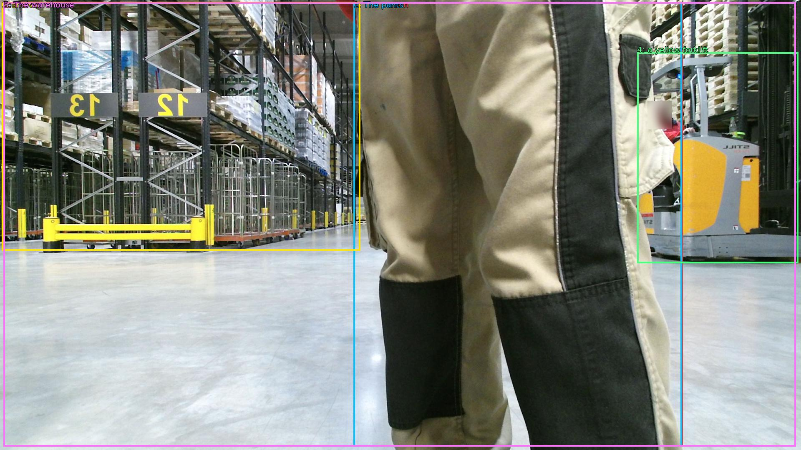
Celoten opis Florence in izvorni podatki
The image shows the lower half of a person's body, from the waist down, standing in a large warehouse. The person is wearing a pair of beige-colored pants with black patches on the sides. The pants appear to be made of a soft, comfortable material and have a zipper closure. In the background, there are rows of shelves with various items on them, and a yellow forklift can be seen on the right side of the image. The warehouse appears to be well-maintained and well-organized.
Opis, regije in surovi odgovori Florenceqwen3.5:27b-q4_K_M
Q4_K_M · 2.379 s · response_received
Celoten surovi zapis{"objects":[{"id":1,"classification":"movable","reason":"People can move freely between visits."},{"id":2,"classification":"movable","reason":"Clothing is worn and moved by people."},{"id":3,"classification":"uncertain","reason":"Permanent installation evidence is not visible."},{"id":4,"classification":"movable","reason":"Forklifts are mobile vehicles designed to move."},{"id":5,"classification":"fixed","reason":"The warehouse is a structural building element."}]}qwen3.5:4b-q4_K_M
Q4_K_M · 0.810 s · response_received
Celoten surovi zapis{"objects":[{"id":1,"classification":"movable","reason":"A person can move or change position freely."},{"id":2,"classification":"movable","reason":"Clothing worn by a person can be removed and moved."},{"id":3,"classification":"uncertain","reason":"Shelves may be fixed structures or movable units."},{"id":4,"classification":"movable","reason":"Forklifts are designed to be driven to different locations."},{"id":5,"classification":"fixed","reason":"A warehouse is a structural building element."}]}gemma3:27b-it-q4_K_M
Q4_K_M · 3.340 s · response_received
Celoten surovi zapis{"objects": [{"id": 1, "classification": "movable", "reason": "A person can relocate themselves."}, {"id": 2, "classification": "movable", "reason": "Clothing is carried or repositioned."}, {"id": 3, "classification": "uncertain", "reason": "Installation not established; could be fixed or movable."}, {"id": 4, "classification": "movable", "reason": "A forklift is driven and repositioned."}, {"id": 5, "classification": "fixed", "reason": "Structural building element."}]}| Nabor | Okolje | ID regije | Oznaka Florence | qwen3.5:27b-q4_K_M | qwen3.5:4b-q4_K_M | gemma3:27b-it-q4_K_M | Primerjava |
|---|
| loco | loco-subset-4 | 1 | The person | movable | movable | movable | enaki razredi |
| loco | loco-subset-4 | 2 | The pants | movable | movable | movable | enaki razredi |
| loco | loco-subset-4 | 3 | shelves | uncertain | uncertain | uncertain | enaki razredi |
| loco | loco-subset-4 | 4 | a yellow forklift | movable | movable | movable | enaki razredi |
| loco | loco-subset-4 | 5 | The warehouse | fixed | fixed | fixed | enaki razredi |
loco-s4-33015
loco / loco-subset-4
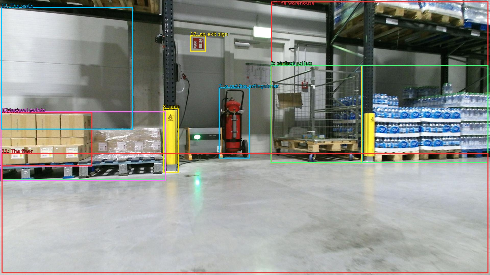
Celoten opis Florence in izvorni podatki
The image shows a large warehouse with a high ceiling and concrete floor. The warehouse is filled with shelves and racks, and there are stacks of cardboard boxes on the left side of the image. On the right side, there is a red fire extinguisher mounted on a yellow pole. In the center of the warehouse, there are several pallets with blue water bottles on them. The floor is made of concrete and appears to be clean and well-maintained. The walls are painted white and there is an exit sign on the wall.
Opis, regije in surovi odgovori Florenceqwen3.5:27b-q4_K_M
Q4_K_M · 6.004 s · response_received
Celoten surovi zapis{"objects":[{"id":1,"classification":"uncertain","reason":"Building label alone lacks visible installation evidence."},{"id":2,"classification":"uncertain","reason":"Shelves may be movable or fixed; no attachment seen."},{"id":3,"classification":"uncertain","reason":"Racks may be movable or fixed; no attachment seen."},{"id":4,"classification":"movable","reason":"Stacks of items can be moved by workers."},{"id":5,"classification":"movable","reason":"Stacks of items can be moved by workers."},{"id":6,"classification":"movable","reason":"Boxes are easily carried or repositioned in normal use."},{"id":7,"classification":"uncertain","reason":"Fire extinguisher often mounted, but attachment not visible."},{"id":8,"classification":"uncertain","reason":"Pole could be structural or movable; no evidence given."},{"id":9,"classification":"movable","reason":"Pallets are designed to be moved by forklifts."},{"id":10,"classification":"movable","reason":"Pallets are designed to be moved by forklifts."},{"id":11,"classification":"fixed","reason":"Structural building element forming the ground surface."},{"id":12,"classification":"fixed","reason":"Structural building elements enclosing the space."},{"id":13,"classification":"uncertain","reason":"Exit sign usually mounted, but attachment not visible."}]}qwen3.5:4b-q4_K_M
Q4_K_M · 1.545 s · response_received
Celoten surovi zapis{"objects":[{"id":1,"classification":"fixed","reason":"Structural building element of the warehouse."},{"id":2,"classification":"uncertain","reason":"Shelves could be fixed or movable without clear evidence."},{"id":3,"classification":"uncertain","reason":"Racks could be fixed or movable without clear evidence."},{"id":4,"classification":"movable","reason":"Stacks of boxes can be easily repositioned."},{"id":5,"classification":"movable","reason":"Stacks of boxes can be easily repositioned."},{"id":6,"classification":"movable","reason":"Boxes are standard movable objects."},{"id":7,"classification":"fixed","reason":"Fire extinguisher is typically permanently mounted."},{"id":8,"classification":"uncertain","reason":"Pole usage varies; could be fixed or movable."},{"id":9,"classification":"movable","reason":"Pallets are standard movable storage units."},{"id":10,"classification":"movable","reason":"Pallets are standard movable storage units."},{"id":11,"classification":"fixed","reason":"Floor is a structural building element."},{"id":12,"classification":"fixed","reason":"Walls are structural building elements."},{"id":13,"classification":"fixed","reason":"Exit signs are typically permanently mounted fixtures."}]}gemma3:27b-it-q4_K_M
Q4_K_M · 6.901 s · response_received
Celoten surovi zapis{"objects": [{"id": 1, "classification": "fixed", "reason": "The warehouse is a structural building element."}, {"id": 2, "classification": "fixed", "reason": "Shelves are typically installed room elements."}, {"id": 3, "classification": "fixed", "reason": "Racks are typically installed room elements."}, {"id": 4, "classification": "movable", "reason": "Stacks of boxes can be moved."}, {"id": 5, "classification": "movable", "reason": "Stacks of boxes can be moved."}, {"id": 6, "classification": "movable", "reason": "Boxes are easily repositioned."}, {"id": 7, "classification": "fixed", "reason": "Fire extinguisher is mounted on a pole."}, {"id": 8, "classification": "fixed", "reason": "A structural support element."}, {"id": 9, "classification": "movable", "reason": "Pallets are moved by forklifts or people."}, {"id": 10, "classification": "movable", "reason": "Pallets are moved by forklifts or people."}, {"id": 11, "classification": "fixed", "reason": "The floor is a structural building element."}, {"id": 12, "classification": "fixed", "reason": "The walls are structural building elements."}, {"id": 13, "classification": "fixed", "reason": "An exit sign is installed on the wall."}]}| Nabor | Okolje | ID regije | Oznaka Florence | qwen3.5:27b-q4_K_M | qwen3.5:4b-q4_K_M | gemma3:27b-it-q4_K_M | Primerjava |
|---|
| loco | loco-subset-4 | 1 | The warehouse | uncertain | fixed | fixed | različni razredi |
| loco | loco-subset-4 | 2 | shelves | uncertain | uncertain | fixed | različni razredi |
| loco | loco-subset-4 | 3 | racks | uncertain | uncertain | fixed | različni razredi |
| loco | loco-subset-4 | 4 | stacks | movable | movable | movable | enaki razredi |
| loco | loco-subset-4 | 5 | stacks | movable | movable | movable | enaki razredi |
| loco | loco-subset-4 | 6 | boxes | movable | movable | movable | enaki razredi |
| loco | loco-subset-4 | 7 | a red fire extinguisher | uncertain | fixed | fixed | različni razredi |
| loco | loco-subset-4 | 8 | pole | uncertain | uncertain | fixed | različni razredi |
| loco | loco-subset-4 | 9 | several pallets | movable | movable | movable | enaki razredi |
| loco | loco-subset-4 | 10 | several pallets | movable | movable | movable | enaki razredi |
| loco | loco-subset-4 | 11 | The floor | fixed | fixed | fixed | enaki razredi |
| loco | loco-subset-4 | 12 | The walls | fixed | fixed | fixed | enaki razredi |
| loco | loco-subset-4 | 13 | an exit sign | uncertain | fixed | fixed | različni razredi |
loco-s4-32997
loco / loco-subset-4

Celoten opis Florence in izvorni podatki
The image shows a large warehouse with a long, narrow aisle. The aisle is lined with rows of shelves on both sides, each filled with boxes and pallets. The boxes are of different sizes and colors, and some are wrapped in plastic. The floor is made of concrete, and the ceiling is high with recessed lighting. The warehouse appears to be well-maintained and well-organized.
Opis, regije in surovi odgovori Florenceqwen3.5:27b-q4_K_M
Q4_K_M · 2.430 s · response_received
Celoten surovi zapis{"objects":[{"id":1,"classification":"fixed","reason":"Aisle is a structural path defined by building layout."},{"id":2,"classification":"movable","reason":"Boxes can be carried or repositioned in normal use."},{"id":3,"classification":"fixed","reason":"Floor is a structural building element."},{"id":4,"classification":"fixed","reason":"Ceiling is a structural building element."},{"id":5,"classification":"fixed","reason":"Warehouse is the permanent building structure itself."}]}qwen3.5:4b-q4_K_M
Q4_K_M · 0.760 s · response_received
Celoten surovi zapis{"objects":[{"id":1,"classification":"uncertain","reason":"Label refers to a space, not a discrete movable object."},{"id":2,"classification":"movable","reason":"Boxes are standardly carried or pushed in warehouse use."},{"id":3,"classification":"fixed","reason":"Concrete floor is a structural building element."},{"id":4,"classification":"fixed","reason":"Ceiling is a structural building element."},{"id":5,"classification":"uncertain","reason":"Label refers to the entire building, not a specific movable object."}]}gemma3:27b-it-q4_K_M
Q4_K_M · 3.443 s · response_received
Celoten surovi zapis{"objects": [{"id": 1, "classification": "uncertain", "reason": "Aisle's position could change with shelving."}, {"id": 2, "classification": "movable", "reason": "Boxes are carried and repositioned normally."}, {"id": 3, "classification": "fixed", "reason": "Structural element of the building."}, {"id": 4, "classification": "fixed", "reason": "Structural part of the building."}, {"id": 5, "classification": "fixed", "reason": "The warehouse is a permanent structure."}]}| Nabor | Okolje | ID regije | Oznaka Florence | qwen3.5:27b-q4_K_M | qwen3.5:4b-q4_K_M | gemma3:27b-it-q4_K_M | Primerjava |
|---|
| loco | loco-subset-4 | 1 | The aisle | fixed | uncertain | uncertain | različni razredi |
| loco | loco-subset-4 | 2 | The boxes | movable | movable | movable | enaki razredi |
| loco | loco-subset-4 | 3 | The floor | fixed | fixed | fixed | enaki razredi |
| loco | loco-subset-4 | 4 | ceiling | fixed | fixed | fixed | enaki razredi |
| loco | loco-subset-4 | 5 | The warehouse | fixed | uncertain | fixed | različni razredi |
loco-s4-32991
loco / loco-subset-4

Celoten opis Florence in izvorni podatki
The image shows a large warehouse with rows of wooden pallets on the left and right sides of the image. The pallets are arranged in neat rows and are stacked on top of each other. The floor is made of concrete and the walls are made of metal beams. The warehouse appears to be well-lit with natural light coming in from the windows on the right side. The ceiling is high and has a high beam design. The overall atmosphere of the warehouse is industrial and well-maintained.
Opis, regije in surovi odgovori Florenceqwen3.5:27b-q4_K_M
Q4_K_M · 2.997 s · response_received
Celoten surovi zapis{"objects":[{"id":1,"classification":"movable","reason":"Pallets are designed to be moved by forklifts."},{"id":2,"classification":"movable","reason":"Pallets are designed to be moved by forklifts."},{"id":3,"classification":"fixed","reason":"Structural building element forming the ground."},{"id":4,"classification":"fixed","reason":"The warehouse is a structural building."},{"id":5,"classification":"fixed","reason":"Structural building element overhead."},{"id":6,"classification":"fixed","reason":"Structural building element overhead."}]}qwen3.5:4b-q4_K_M
Q4_K_M · 0.808 s · response_received
Celoten surovi zapis{"objects":[{"id":1,"classification":"movable","reason":"Stacked pallets can be moved or repositioned."},{"id":2,"classification":"movable","reason":"Stacked pallets can be moved or repositioned."},{"id":3,"classification":"fixed","reason":"Concrete floor is a structural building element."},{"id":4,"classification":"fixed","reason":"The warehouse structure is a permanent installation."},{"id":5,"classification":"fixed","reason":"High ceiling is a structural building element."},{"id":6,"classification":"fixed","reason":"Ceiling section is a structural building element."}]}gemma3:27b-it-q4_K_M
Q4_K_M · 3.761 s · response_received
Celoten surovi zapis{"objects": [{"id": 1, "classification": "movable", "reason": "Pallets are repositioned with forklifts."}, {"id": 2, "classification": "movable", "reason": "Pallets are repositioned with forklifts."}, {"id": 3, "classification": "fixed", "reason": "Structural building element."}, {"id": 4, "classification": "fixed", "reason": "The building itself."}, {"id": 5, "classification": "fixed", "reason": "Structural part of the building."}, {"id": 6, "classification": "fixed", "reason": "Structural part of the building."}]}| Nabor | Okolje | ID regije | Oznaka Florence | qwen3.5:27b-q4_K_M | qwen3.5:4b-q4_K_M | gemma3:27b-it-q4_K_M | Primerjava |
|---|
| loco | loco-subset-4 | 1 | The pallets | movable | movable | movable | enaki razredi |
| loco | loco-subset-4 | 2 | The pallets | movable | movable | movable | enaki razredi |
| loco | loco-subset-4 | 3 | The floor | fixed | fixed | fixed | enaki razredi |
| loco | loco-subset-4 | 4 | The warehouse | fixed | fixed | fixed | enaki razredi |
| loco | loco-subset-4 | 5 | The ceiling | fixed | fixed | fixed | enaki razredi |
| loco | loco-subset-4 | 6 | The ceiling | fixed | fixed | fixed | enaki razredi |
loco-s4-32738
loco / loco-subset-4

Celoten opis Florence in izvorni podatki
The image shows the interior of a large warehouse with a high ceiling and large windows. The floor is made of concrete and there are several rows of pallets on the right side of the image. On the left side, there is a yellow railing and a large window that lets in natural light. In the center of the room, there are two workers pushing a cart with various items on it. The workers are wearing red uniforms and appear to be in the process of moving the cart. The warehouse appears to be clean and well-maintained.
Opis, regije in surovi odgovori Florenceqwen3.5:27b-q4_K_M
Q4_K_M · 7.327 s · response_received
Celoten surovi zapis{"objects":[{"id":1,"classification":"fixed","reason":"Structural building element."},{"id":2,"classification":"fixed","reason":"Structural building element."},{"id":3,"classification":"uncertain","reason":"Label ambiguous; no clear object identity."},{"id":4,"classification":"movable","reason":"Pallets are designed to be moved."},{"id":5,"classification":"uncertain","reason":"Railing installation status not visible."},{"id":6,"classification":"uncertain","reason":"Railing installation status not visible."},{"id":7,"classification":"fixed","reason":"Installed room element."},{"id":8,"classification":"movable","reason":"People can move freely."},{"id":9,"classification":"movable","reason":"People can move freely."},{"id":10,"classification":"movable","reason":"People can move freely."},{"id":11,"classification":"movable","reason":"Carts are designed to be pushed."},{"id":12,"classification":"movable","reason":"People can move freely."},{"id":13,"classification":"movable","reason":"People can move freely."},{"id":14,"classification":"movable","reason":"People can move freely."},{"id":15,"classification":"movable","reason":"People can move freely."},{"id":16,"classification":"movable","reason":"Clothes are wearable and movable."},{"id":17,"classification":"movable","reason":"Carts are designed to be pushed."},{"id":18,"classification":"movable","reason":"Carts are designed to be pushed."},{"id":19,"classification":"uncertain","reason":"Label refers to whole building, not specific object."}]}qwen3.5:4b-q4_K_M
Q4_K_M · 2.213 s · response_received
Celoten surovi zapis{"objects":[{"id":1,"classification":"fixed","reason":"Structural ceiling element of the building."},{"id":2,"classification":"fixed","reason":"Structural floor element of the building."},{"id":3,"classification":"movable","reason":"Rows of pallets can be repositioned or removed."},{"id":4,"classification":"movable","reason":"Pallets are movable objects that can be pushed."},{"id":5,"classification":"fixed","reason":"Railing is a structural safety installation."},{"id":6,"classification":"fixed","reason":"Railing is a structural safety installation."},{"id":7,"classification":"fixed","reason":"Window is a structural building element."},{"id":8,"classification":"movable","reason":"Workers are mobile entities that can move freely."},{"id":9,"classification":"movable","reason":"Workers are mobile entities that can move freely."},{"id":10,"classification":"movable","reason":"Workers are mobile entities that can move freely."},{"id":11,"classification":"movable","reason":"Carts are movable objects designed to be pushed."},{"id":12,"classification":"movable","reason":"Workers are mobile entities that can move freely."},{"id":13,"classification":"movable","reason":"Workers are mobile entities that can move freely."},{"id":14,"classification":"movable","reason":"Workers are mobile entities that can move freely."},{"id":15,"classification":"movable","reason":"Workers are mobile entities that can move freely."},{"id":16,"classification":"movable","reason":"Uniforms are movable objects worn by workers."},{"id":17,"classification":"movable","reason":"Carts are movable objects designed to be pushed."},{"id":18,"classification":"movable","reason":"Carts are movable objects designed to be pushed."},{"id":19,"classification":"fixed","reason":"The warehouse is the structural building itself."}]}gemma3:27b-it-q4_K_M
Q4_K_M · 9.416 s · response_received
Celoten surovi zapis{"objects": [{"id": 1, "classification": "fixed", "reason": "Structural part of the building."}, {"id": 2, "classification": "fixed", "reason": "Structural part of the building."}, {"id": 3, "classification": "uncertain", "reason": "Rows could be temporary or permanent."}, {"id": 4, "classification": "movable", "reason": "Can be relocated with equipment."}, {"id": 5, "classification": "fixed", "reason": "Likely bolted to a structure."}, {"id": 6, "classification": "fixed", "reason": "Likely bolted to a structure."}, {"id": 7, "classification": "fixed", "reason": "Installed room element."}, {"id": 8, "classification": "movable", "reason": "People are inherently movable."}, {"id": 9, "classification": "movable", "reason": "People are inherently movable."}, {"id": 10, "classification": "movable", "reason": "People are inherently movable."}, {"id": 11, "classification": "movable", "reason": "Designed to be pushed around."}, {"id": 12, "classification": "movable", "reason": "People are inherently movable."}, {"id": 13, "classification": "movable", "reason": "People are inherently movable."}, {"id": 14, "classification": "movable", "reason": "People are inherently movable."}, {"id": 15, "classification": "movable", "reason": "People are inherently movable."}, {"id": 16, "classification": "movable", "reason": "Clothing is carried/worn."}, {"id": 17, "classification": "movable", "reason": "Designed to be pushed around."}, {"id": 18, "classification": "movable", "reason": "Designed to be pushed around."}, {"id": 19, "classification": "fixed", "reason": "Structural building element."}]}| Nabor | Okolje | ID regije | Oznaka Florence | qwen3.5:27b-q4_K_M | qwen3.5:4b-q4_K_M | gemma3:27b-it-q4_K_M | Primerjava |
|---|
| loco | loco-subset-4 | 1 | ceiling | fixed | fixed | fixed | enaki razredi |
| loco | loco-subset-4 | 2 | The floor | fixed | fixed | fixed | enaki razredi |
| loco | loco-subset-4 | 3 | several rows | uncertain | movable | uncertain | različni razredi |
| loco | loco-subset-4 | 4 | pallets | movable | movable | movable | enaki razredi |
| loco | loco-subset-4 | 5 | a yellow railing | uncertain | fixed | fixed | različni razredi |
| loco | loco-subset-4 | 6 | a yellow railing | uncertain | fixed | fixed | različni razredi |
| loco | loco-subset-4 | 7 | window | fixed | fixed | fixed | enaki razredi |
| loco | loco-subset-4 | 8 | two workers | movable | movable | movable | enaki razredi |
| loco | loco-subset-4 | 9 | two workers | movable | movable | movable | enaki razredi |
| loco | loco-subset-4 | 10 | two workers | movable | movable | movable | enaki razredi |
| loco | loco-subset-4 | 11 | a cart | movable | movable | movable | enaki razredi |
| loco | loco-subset-4 | 12 | The workers | movable | movable | movable | enaki razredi |
| loco | loco-subset-4 | 13 | The workers | movable | movable | movable | enaki razredi |
| loco | loco-subset-4 | 14 | The workers | movable | movable | movable | enaki razredi |
| loco | loco-subset-4 | 15 | The workers | movable | movable | movable | enaki razredi |
| loco | loco-subset-4 | 16 | uniforms | movable | movable | movable | enaki razredi |
| loco | loco-subset-4 | 17 | the cart | movable | movable | movable | enaki razredi |
| loco | loco-subset-4 | 18 | the cart | movable | movable | movable | enaki razredi |
| loco | loco-subset-4 | 19 | The warehouse | uncertain | fixed | fixed | različni razredi |
loco-s4-33054
loco / loco-subset-4

Celoten opis Florence in izvorni podatki
The image shows a large warehouse with multiple rows of pallets stacked on top of each other. The pallets are arranged in a neat and orderly manner, and the floor is made of concrete. In the center of the image, there is a yellow forklift with a red trolley attached to it. The forklift is moving through the warehouse, and there are several stacks of plastic containers on the pallets. The warehouse appears to be well-maintained and well-organized, with a high ceiling and large windows on the right side.
Opis, regije in surovi odgovori Florenceqwen3.5:27b-q4_K_M
Q4_K_M · 6.230 s · response_received
Celoten surovi zapis{"objects":[{"id":1,"classification":"uncertain","reason":"Ambiguous label; physical identity not established."},{"id":2,"classification":"movable","reason":"Pallets are standard movable warehouse equipment."},{"id":3,"classification":"movable","reason":"Pallets are standard movable warehouse equipment."},{"id":4,"classification":"fixed","reason":"Structural building element of the floor."},{"id":5,"classification":"movable","reason":"Forklift is a mobile vehicle for transport."},{"id":6,"classification":"movable","reason":"Forklift is a mobile vehicle for transport."},{"id":7,"classification":"movable","reason":"Trolleys are designed to be pushed or pulled."},{"id":8,"classification":"movable","reason":"Forklift is a mobile vehicle for transport."},{"id":9,"classification":"movable","reason":"Forklift is a mobile vehicle for transport."},{"id":10,"classification":"uncertain","reason":"Ambiguous label; specific object identity unclear."},{"id":11,"classification":"movable","reason":"Containers are portable storage units."},{"id":12,"classification":"fixed","reason":"The warehouse building is a permanent structure."},{"id":13,"classification":"fixed","reason":"The warehouse building is a permanent structure."},{"id":14,"classification":"fixed","reason":"The warehouse building is a permanent structure."}]}qwen3.5:4b-q4_K_M
Q4_K_M · 1.838 s · response_received
Celoten surovi zapis{"objects":[{"id":1,"classification":"movable","reason":"Rows of pallets can be repositioned by machinery."},{"id":2,"classification":"movable","reason":"Pallets are standard movable storage units."},{"id":3,"classification":"movable","reason":"Pallets are standard movable storage units."},{"id":4,"classification":"fixed","reason":"Concrete floor is a structural building element."},{"id":5,"classification":"movable","reason":"Forklifts are designed to be driven and moved."},{"id":6,"classification":"movable","reason":"Forklifts are designed to be driven and moved."},{"id":7,"classification":"movable","reason":"Trolleys can be pushed or pulled by people."},{"id":8,"classification":"movable","reason":"Forklifts are designed to be driven and moved."},{"id":9,"classification":"movable","reason":"Forklifts are designed to be driven and moved."},{"id":10,"classification":"movable","reason":"Stacks of containers can be relocated by machinery."},{"id":11,"classification":"movable","reason":"Containers on pallets can be moved by forklifts."},{"id":12,"classification":"fixed","reason":"The warehouse structure is a permanent building."},{"id":13,"classification":"fixed","reason":"The warehouse structure is a permanent building."},{"id":14,"classification":"fixed","reason":"The warehouse structure is a permanent building."}]
}gemma3:27b-it-q4_K_M
Q4_K_M · 7.985 s · response_received
Celoten surovi zapis{"objects": [{"id": 1, "classification": "uncertain", "reason": "Part of larger structure, not easily moved."}, {"id": 2, "classification": "movable", "reason": "Can be repositioned by forklift or manually."}, {"id": 3, "classification": "movable", "reason": "Same as pallets; can be repositioned."}, {"id": 4, "classification": "fixed", "reason": "Structural element of the building."}, {"id": 5, "classification": "movable", "reason": "Designed for movement within the warehouse."}, {"id": 6, "classification": "movable", "reason": "Same as other forklifts; designed to move."}, {"id": 7, "classification": "movable", "reason": "Attached to forklift, easily repositioned."}, {"id": 8, "classification": "movable", "reason": "Designed for movement within the warehouse."}, {"id": 9, "classification": "movable", "reason": "Same as other forklifts; designed to move."}, {"id": 10, "classification": "movable", "reason": "Stacks are built from movable containers."}, {"id": 11, "classification": "movable", "reason": "Designed to be moved and stacked."}, {"id": 12, "classification": "fixed", "reason": "The building itself; a permanent structure."}, {"id": 13, "classification": "fixed", "reason": "The building itself; a permanent structure."}, {"id": 14, "classification": "fixed", "reason": "The building itself; a permanent structure."}]}| Nabor | Okolje | ID regije | Oznaka Florence | qwen3.5:27b-q4_K_M | qwen3.5:4b-q4_K_M | gemma3:27b-it-q4_K_M | Primerjava |
|---|
| loco | loco-subset-4 | 1 | multiple rows | uncertain | movable | uncertain | različni razredi |
| loco | loco-subset-4 | 2 | pallets | movable | movable | movable | enaki razredi |
| loco | loco-subset-4 | 3 | The pallets | movable | movable | movable | enaki razredi |
| loco | loco-subset-4 | 4 | the floor | fixed | fixed | fixed | enaki razredi |
| loco | loco-subset-4 | 5 | a yellow forklift | movable | movable | movable | enaki razredi |
| loco | loco-subset-4 | 6 | a yellow forklift | movable | movable | movable | enaki razredi |
| loco | loco-subset-4 | 7 | trolley | movable | movable | movable | enaki razredi |
| loco | loco-subset-4 | 8 | The forklift | movable | movable | movable | enaki razredi |
| loco | loco-subset-4 | 9 | The forklift | movable | movable | movable | enaki razredi |
| loco | loco-subset-4 | 10 | several stacks | uncertain | movable | movable | različni razredi |
| loco | loco-subset-4 | 11 | containers | movable | movable | movable | enaki razredi |
| loco | loco-subset-4 | 12 | The warehouse | fixed | fixed | fixed | enaki razredi |
| loco | loco-subset-4 | 13 | The warehouse | fixed | fixed | fixed | enaki razredi |
| loco | loco-subset-4 | 14 | The warehouse | fixed | fixed | fixed | enaki razredi |
loco-s4-33010
loco / loco-subset-4

Celoten opis Florence in izvorni podatki
The image shows a large warehouse with a long, narrow aisle. The aisle is lined with rows of shelves on both sides, each filled with boxes and pallets. The boxes are of different sizes and colors, and some are stacked on top of each other. The pallets are yellow and appear to be made of wood. The floor is made of concrete, and the ceiling is high with recessed lighting. The warehouse appears to be well-maintained and well-organized.
Opis, regije in surovi odgovori Florenceqwen3.5:27b-q4_K_M
Q4_K_M · 3.659 s · response_received
Celoten surovi zapis{"objects":[{"id":1,"classification":"fixed","reason":"Aisle is a structural space defined by building elements."},{"id":2,"classification":"movable","reason":"Boxes can be carried or repositioned in normal use."},{"id":3,"classification":"movable","reason":"Boxes can be carried or repositioned in normal use."},{"id":4,"classification":"movable","reason":"Pallets are designed to be moved by forklifts or hand trucks."},{"id":5,"classification":"fixed","reason":"Floor is a structural building element."},{"id":6,"classification":"fixed","reason":"Ceiling is a structural building element."},{"id":7,"classification":"fixed","reason":"Warehouse is the building structure itself."}]}qwen3.5:4b-q4_K_M
Q4_K_M · 0.960 s · response_received
Celoten surovi zapis{"objects":[{"id":1,"classification":"fixed","reason":"Structural element of the building layout."},{"id":2,"classification":"movable","reason":"Boxes can be carried or repositioned in normal use."},{"id":3,"classification":"movable","reason":"Boxes can be carried or repositioned in normal use."},{"id":4,"classification":"movable","reason":"Pallets can be moved by forklift or pushed."},{"id":5,"classification":"fixed","reason":"Structural part of the building floor."},{"id":6,"classification":"fixed","reason":"Structural part of the building ceiling."},{"id":7,"classification":"fixed","reason":"The building structure itself is permanent."}]}gemma3:27b-it-q4_K_M
Q4_K_M · 4.559 s · response_received
Celoten surovi zapis{"objects": [{"id": 1, "classification": "uncertain", "reason": "Aisle's position could change with shelving layout."}, {"id": 2, "classification": "movable", "reason": "Boxes are carried and repositioned easily."}, {"id": 3, "classification": "movable", "reason": "Boxes are carried and repositioned easily."}, {"id": 4, "classification": "movable", "reason": "Pallets are moved by forklifts/people."}, {"id": 5, "classification": "fixed", "reason": "Structural element of the building."}, {"id": 6, "classification": "fixed", "reason": "Structural part of the building."}, {"id": 7, "classification": "fixed", "reason": "The warehouse itself is a fixed structure."}]}| Nabor | Okolje | ID regije | Oznaka Florence | qwen3.5:27b-q4_K_M | qwen3.5:4b-q4_K_M | gemma3:27b-it-q4_K_M | Primerjava |
|---|
| loco | loco-subset-4 | 1 | The aisle | fixed | fixed | uncertain | različni razredi |
| loco | loco-subset-4 | 2 | The boxes | movable | movable | movable | enaki razredi |
| loco | loco-subset-4 | 3 | The boxes | movable | movable | movable | enaki razredi |
| loco | loco-subset-4 | 4 | The pallets | movable | movable | movable | enaki razredi |
| loco | loco-subset-4 | 5 | The floor | fixed | fixed | fixed | enaki razredi |
| loco | loco-subset-4 | 6 | the ceiling | fixed | fixed | fixed | enaki razredi |
| loco | loco-subset-4 | 7 | The warehouse | fixed | fixed | fixed | enaki razredi |
loco-s4-32686
loco / loco-subset-4

Celoten opis Florence in izvorni podatki
The image shows a large warehouse with multiple shelves filled with boxes and pallets. The shelves are arranged in a grid-like pattern and are filled with different types of boxes of different sizes and colors. The floor is made of concrete and there are two yellow bollards on either side of the shelves. The warehouse appears to be well-lit with natural light coming in from the windows in the background. The overall atmosphere of the image is industrial and organized.
Opis, regije in surovi odgovori Florenceqwen3.5:27b-q4_K_M
Q4_K_M · 2.432 s · response_received
Celoten surovi zapis{"objects":[{"id":1,"classification":"uncertain","reason":"Shelves lack visible permanent installation evidence."},{"id":2,"classification":"fixed","reason":"Structural building element of the warehouse."},{"id":3,"classification":"movable","reason":"Bollards are typically portable safety barriers."},{"id":4,"classification":"movable","reason":"Bollards are typically portable safety barriers."},{"id":5,"classification":"fixed","reason":"The warehouse is a structural building."}]}qwen3.5:4b-q4_K_M
Q4_K_M · 1.058 s · response_received
Celoten surovi zapis{"objects":[{"id":1,"classification":"uncertain","reason":"Shelves may be fixed or movable without installation proof."},{"id":2,"classification":"fixed","reason":"Floor is a structural building element."},{"id":3,"classification":"movable","reason":"Bollards are small objects that can be pushed or repositioned."},{"id":4,"classification":"movable","reason":"Bollards are small objects that can be pushed or repositioned."},{"id":5,"classification":"fixed","reason":"A warehouse is a structural building element."}]}gemma3:27b-it-q4_K_M
Q4_K_M · 3.663 s · response_received
Celoten surovi zapis{"objects": [{"id": 1, "classification": "uncertain", "reason": "Installation not established; shelves can be rearranged."}, {"id": 2, "classification": "fixed", "reason": "Structural element of the building."}, {"id": 3, "classification": "movable", "reason": "Bollards are typically repositionable for access control."}, {"id": 4, "classification": "movable", "reason": "Bollards are typically repositionable for access control."}, {"id": 5, "classification": "fixed", "reason": "The building itself; not a movable object."}]}| Nabor | Okolje | ID regije | Oznaka Florence | qwen3.5:27b-q4_K_M | qwen3.5:4b-q4_K_M | gemma3:27b-it-q4_K_M | Primerjava |
|---|
| loco | loco-subset-4 | 1 | The shelves | uncertain | uncertain | uncertain | enaki razredi |
| loco | loco-subset-4 | 2 | The floor | fixed | fixed | fixed | enaki razredi |
| loco | loco-subset-4 | 3 | two yellow bollards | movable | movable | movable | enaki razredi |
| loco | loco-subset-4 | 4 | two yellow bollards | movable | movable | movable | enaki razredi |
| loco | loco-subset-4 | 5 | The warehouse | fixed | fixed | fixed | enaki razredi |
loco-s4-32970
loco / loco-subset-4

Celoten opis Florence in izvorni podatki
The image shows the interior of a large warehouse with a long, narrow aisle. The floor is made of concrete and the walls are made of metal beams. On the right side of the aisle, there are rows of shelves with various items stored on them. The shelves are filled with different types of items such as bottles, cans, and other household items. In the background, there is a large purple bag hanging from one of the shelves. The warehouse appears to be well-lit with bright lights. The overall atmosphere of the space is industrial and well-organized.
Opis, regije in surovi odgovori Florenceqwen3.5:27b-q4_K_M
Q4_K_M · 1.987 s · response_received
Celoten surovi zapis{"objects":[{"id":1,"classification":"fixed","reason":"Structural building element forming the ground."},{"id":2,"classification":"uncertain","reason":"Permanent installation not established from visual evidence."},{"id":3,"classification":"movable","reason":"Bags are inherently portable and repositionable objects."},{"id":4,"classification":"fixed","reason":"The warehouse is a structural building environment."}]}qwen3.5:4b-q4_K_M
Q4_K_M · 1.693 s · response_received
Celoten surovi zapis{"objects":[{"id":1,"classification":"fixed","reason":"Structural floor element of the building."},{"id":2,"classification":"uncertain","reason":"Shelves could be fixed or movable without clear evidence."},{"id":3,"classification":"movable","reason":"A bag can be easily carried or pushed elsewhere."},{"id":4,"classification":"fixed","reason":"The warehouse is a structural building element."}]}gemma3:27b-it-q4_K_M
Q4_K_M · 3.195 s · response_received
Celoten surovi zapis{"objects": [{"id": 1, "classification": "fixed", "reason": "Structural building element: the floor."}, {"id": 2, "classification": "uncertain", "reason": "Shelves may be fixed or movable; no installation evidence."}, {"id": 3, "classification": "movable", "reason": "A bag can be carried or repositioned easily."}, {"id": 4, "classification": "fixed", "reason": "The warehouse is a structural building element."}]}| Nabor | Okolje | ID regije | Oznaka Florence | qwen3.5:27b-q4_K_M | qwen3.5:4b-q4_K_M | gemma3:27b-it-q4_K_M | Primerjava |
|---|
| loco | loco-subset-4 | 1 | The floor | fixed | fixed | fixed | enaki razredi |
| loco | loco-subset-4 | 2 | The shelves | uncertain | uncertain | uncertain | enaki razredi |
| loco | loco-subset-4 | 3 | a large purple bag | movable | movable | movable | enaki razredi |
| loco | loco-subset-4 | 4 | The warehouse | fixed | fixed | fixed | enaki razredi |
loco-s4-32710
loco / loco-subset-4

Celoten opis Florence in izvorni podatki
The image shows a large warehouse with a long, narrow aisle. The floor is made of concrete and the walls are made of metal beams. On either side of the aisle, there are rows of shelves with stacks of boxes and pallets. The boxes are red and white in color and appear to be filled with various items. The shelves are arranged in neat rows and the floor is clean and well-maintained. The warehouse appears to be well-lit with overhead lights.
Opis, regije in surovi odgovori Florenceqwen3.5:27b-q4_K_M
Q4_K_M · 1.857 s · response_received
Celoten surovi zapis{"objects":[{"id":1,"classification":"fixed","reason":"Structural building element."},{"id":2,"classification":"movable","reason":"Boxes can be carried or repositioned."},{"id":3,"classification":"uncertain","reason":"Permanent installation not established from name alone."},{"id":4,"classification":"fixed","reason":"Structural building element."}]}qwen3.5:4b-q4_K_M
Q4_K_M · 1.531 s · response_received
Celoten surovi zapis{"objects":[{"id":1,"classification":"fixed","reason":"Structural floor element of the building."},{"id":2,"classification":"movable","reason":"Boxes can be carried or pushed by people."},{"id":3,"classification":"uncertain","reason":"Shelves may be integrated but installation is not visible."},{"id":4,"classification":"fixed","reason":"Structural floor element of the building."}]}gemma3:27b-it-q4_K_M
Q4_K_M · 2.985 s · response_received
Celoten surovi zapis{"objects": [{"id": 1, "classification": "fixed", "reason": "Structural element of the building."}, {"id": 2, "classification": "movable", "reason": "Boxes can be moved and repositioned."}, {"id": 3, "classification": "uncertain", "reason": "Installation is not explicitly established."}, {"id": 4, "classification": "fixed", "reason": "Structural element of the building."}]}| Nabor | Okolje | ID regije | Oznaka Florence | qwen3.5:27b-q4_K_M | qwen3.5:4b-q4_K_M | gemma3:27b-it-q4_K_M | Primerjava |
|---|
| loco | loco-subset-4 | 1 | The floor | fixed | fixed | fixed | enaki razredi |
| loco | loco-subset-4 | 2 | The boxes | movable | movable | movable | enaki razredi |
| loco | loco-subset-4 | 3 | The shelves | uncertain | uncertain | uncertain | enaki razredi |
| loco | loco-subset-4 | 4 | the floor | fixed | fixed | fixed | enaki razredi |
loco-s4-33053
loco / loco-subset-4
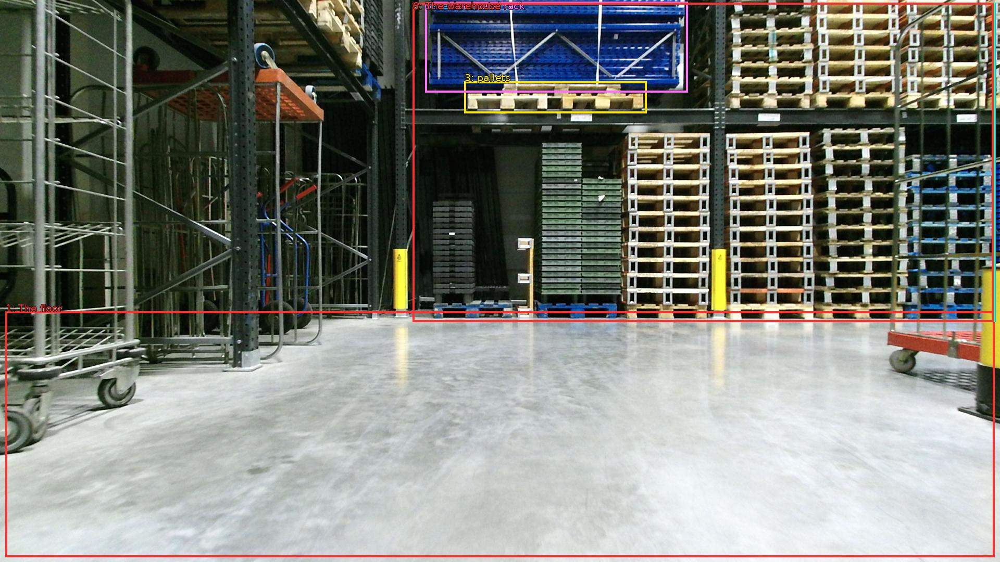
Celoten opis Florence in izvorni podatki
The image shows the interior of a large warehouse or storage facility. The floor is made of concrete and the walls are made of metal. On the left side of the image, there are several rows of shelves with wooden pallets stacked on top of each other. The shelves are arranged in a neat and orderly manner. In the background, there is a blue metal rack with several pallets of different sizes and colors. The warehouse appears to be well-maintained and well-organized. The image is taken from a low angle, looking down on the floor and the shelves.
Opis, regije in surovi odgovori Florenceqwen3.5:27b-q4_K_M
Q4_K_M · 3.099 s · response_received
Celoten surovi zapis{"objects":[{"id":1,"classification":"fixed","reason":"Structural building element forming the ground."},{"id":2,"classification":"uncertain","reason":"Vague label; physical nature and mobility unclear."},{"id":3,"classification":"movable","reason":"Pallets are designed to be moved by forklifts."},{"id":4,"classification":"uncertain","reason":"Shelves may be fixed or movable; no installation evidence."},{"id":5,"classification":"uncertain","reason":"Rack mobility unknown without visible wheels or anchors."},{"id":6,"classification":"fixed","reason":"The warehouse is the building structure itself."}]}qwen3.5:4b-q4_K_M
Q4_K_M · 0.804 s · response_received
Celoten surovi zapis{"objects":[{"id":1,"classification":"fixed","reason":"Structural floor element of the building."},{"id":2,"classification":"uncertain","reason":"Abstract description lacks physical instance evidence."},{"id":3,"classification":"movable","reason":"Pallets are standard movable storage units."},{"id":4,"classification":"uncertain","reason":"Permanent installation is not established by visual evidence."},{"id":5,"classification":"movable","reason":"Metal racks can be repositioned in normal use."},{"id":6,"classification":"fixed","reason":"Structural building element or permanent installation."}]}gemma3:27b-it-q4_K_M
Q4_K_M · 3.901 s · response_received
Celoten surovi zapis{"objects": [{"id": 1, "classification": "fixed", "reason": "Structural element of the building."}, {"id": 2, "classification": "uncertain", "reason": "Rows of what? Installation not established."}, {"id": 3, "classification": "movable", "reason": "Pallets are typically moved by forklifts."}, {"id": 4, "classification": "uncertain", "reason": "Installation is not explicitly visible."}, {"id": 5, "classification": "movable", "reason": "A rack can be repositioned."}, {"id": 6, "classification": "fixed", "reason": "The building itself."}]}| Nabor | Okolje | ID regije | Oznaka Florence | qwen3.5:27b-q4_K_M | qwen3.5:4b-q4_K_M | gemma3:27b-it-q4_K_M | Primerjava |
|---|
| loco | loco-subset-4 | 1 | The floor | fixed | fixed | fixed | enaki razredi |
| loco | loco-subset-4 | 2 | several rows | uncertain | uncertain | uncertain | enaki razredi |
| loco | loco-subset-4 | 3 | pallets | movable | movable | movable | enaki razredi |
| loco | loco-subset-4 | 4 | The shelves | uncertain | uncertain | uncertain | enaki razredi |
| loco | loco-subset-4 | 5 | a blue metal rack | uncertain | movable | movable | različni razredi |
| loco | loco-subset-4 | 6 | The warehouse | fixed | fixed | fixed | enaki razredi |
loco-s4-32679
loco / loco-subset-4
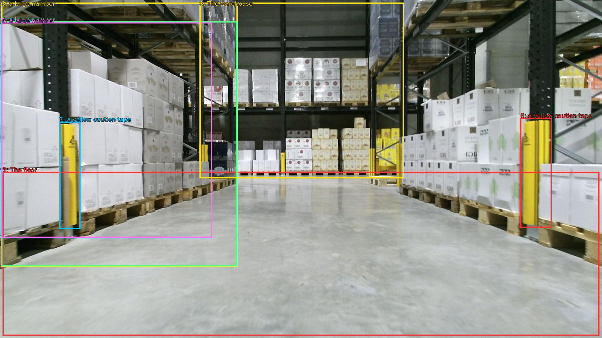
Celoten opis Florence in izvorni podatki
The image shows a large warehouse with a long, narrow aisle. The floor is made of concrete and the walls are made of metal beams. On either side of the aisle, there are rows of wooden pallets with stacks of white boxes on them. The boxes are neatly arranged and appear to be of different sizes and colors. In the background, there is a large number of shelves with more boxes stacked on them, and a yellow caution tape is visible in the foreground. The warehouse appears to be well-maintained and well-organized.
Opis, regije in surovi odgovori Florenceqwen3.5:27b-q4_K_M
Q4_K_M · 3.620 s · response_received
Celoten surovi zapis{"objects":[{"id":1,"classification":"fixed","reason":"Structural building element forming the ground."},{"id":2,"classification":"movable","reason":"Boxes can be carried or repositioned easily."},{"id":3,"classification":"uncertain","reason":"Label 'large number' is ambiguous and unclear."},{"id":4,"classification":"uncertain","reason":"Label 'large number' is ambiguous and unclear."},{"id":5,"classification":"uncertain","reason":"Label 'large number' is ambiguous and unclear."},{"id":6,"classification":"movable","reason":"Caution tape can be moved or removed."},{"id":7,"classification":"movable","reason":"Caution tape can be moved or removed."},{"id":8,"classification":"fixed","reason":"The warehouse is a permanent building structure."}]}qwen3.5:4b-q4_K_M
Q4_K_M · 1.046 s · response_received
Celoten surovi zapis{"objects":[{"id":1,"classification":"fixed","reason":"Structural floor element of the building."},{"id":2,"classification":"movable","reason":"Boxes can be carried or pushed by workers."},{"id":3,"classification":"uncertain","reason":"Label is vague and lacks specific object identity."},{"id":4,"classification":"uncertain","reason":"Label is vague and lacks specific object identity."},{"id":5,"classification":"uncertain","reason":"Label is vague and lacks specific object identity."},{"id":6,"classification":"movable","reason":"Tape can be easily repositioned or removed."},{"id":7,"classification":"movable","reason":"Tape can be easily repositioned or removed."},{"id":8,"classification":"fixed","reason":"The building structure itself is permanent."}]}gemma3:27b-it-q4_K_M
Q4_K_M · 4.905 s · response_received
Celoten surovi zapis{"objects": [{"id": 1, "classification": "fixed", "reason": "Structural building element."}, {"id": 2, "classification": "movable", "reason": "Can be carried or moved easily."}, {"id": 3, "classification": "uncertain", "reason": "Generic label; no installation evidence."}, {"id": 4, "classification": "uncertain", "reason": "Generic label; no installation evidence."}, {"id": 5, "classification": "uncertain", "reason": "Generic label; no installation evidence."}, {"id": 6, "classification": "movable", "reason": "Temporary safety barrier; easily repositioned."}, {"id": 7, "classification": "movable", "reason": "Temporary safety barrier; easily repositioned."}, {"id": 8, "classification": "fixed", "reason": "The building itself."}]}| Nabor | Okolje | ID regije | Oznaka Florence | qwen3.5:27b-q4_K_M | qwen3.5:4b-q4_K_M | gemma3:27b-it-q4_K_M | Primerjava |
|---|
| loco | loco-subset-4 | 1 | The floor | fixed | fixed | fixed | enaki razredi |
| loco | loco-subset-4 | 2 | The boxes | movable | movable | movable | enaki razredi |
| loco | loco-subset-4 | 3 | a large number | uncertain | uncertain | uncertain | enaki razredi |
| loco | loco-subset-4 | 4 | a large number | uncertain | uncertain | uncertain | enaki razredi |
| loco | loco-subset-4 | 5 | a large number | uncertain | uncertain | uncertain | enaki razredi |
| loco | loco-subset-4 | 6 | a yellow caution tape | movable | movable | movable | enaki razredi |
| loco | loco-subset-4 | 7 | a yellow caution tape | movable | movable | movable | enaki razredi |
| loco | loco-subset-4 | 8 | The warehouse | fixed | fixed | fixed | enaki razredi |
loco-s4-33027
loco / loco-subset-4
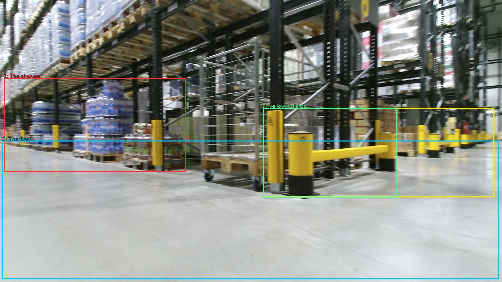
Celoten opis Florence in izvorni podatki
The image shows a large warehouse with rows of shelves and racks. The shelves are filled with various items such as bottles, boxes, and other household items. The floor is made of concrete and there are yellow bollards on the right side of the image. The warehouse appears to be well-maintained and well-organized. The image is taken from a low angle, looking up at the shelves.
Opis, regije in surovi odgovori Florenceqwen3.5:27b-q4_K_M
Q4_K_M · 2.374 s · response_received
Celoten surovi zapis{"objects":[{"id":1,"classification":"uncertain","reason":"Shelves are movable unless permanent installation is visible."},{"id":2,"classification":"fixed","reason":"Structural building element of the warehouse."},{"id":3,"classification":"movable","reason":"Bollards can be pushed or repositioned in normal use."},{"id":4,"classification":"movable","reason":"Bollards can be pushed or repositioned in normal use."}]}qwen3.5:4b-q4_K_M
Q4_K_M · 0.665 s · response_received
Celoten surovi zapis{"objects":[{"id":1,"classification":"uncertain","reason":"Shelves are uncertain without permanent installation evidence."},{"id":2,"classification":"fixed","reason":"Floor is a structural building element."},{"id":3,"classification":"movable","reason":"Bollards can be moved or repositioned in normal use."},{"id":4,"classification":"movable","reason":"Bollards can be moved or repositioned in normal use."}]
}gemma3:27b-it-q4_K_M
Q4_K_M · 3.303 s · response_received
Celoten surovi zapis{"objects": [{"id": 1, "classification": "uncertain", "reason": "Installation is not established; shelves can be reconfigured."}, {"id": 2, "classification": "fixed", "reason": "Structural element of the building; the ground surface."}, {"id": 3, "classification": "movable", "reason": "Bollards are designed to be repositioned or moved."}, {"id": 4, "classification": "movable", "reason": "Bollards are designed to be repositioned or moved."}]}| Nabor | Okolje | ID regije | Oznaka Florence | qwen3.5:27b-q4_K_M | qwen3.5:4b-q4_K_M | gemma3:27b-it-q4_K_M | Primerjava |
|---|
| loco | loco-subset-4 | 1 | The shelves | uncertain | uncertain | uncertain | enaki razredi |
| loco | loco-subset-4 | 2 | The floor | fixed | fixed | fixed | enaki razredi |
| loco | loco-subset-4 | 3 | yellow bollards | movable | movable | movable | enaki razredi |
| loco | loco-subset-4 | 4 | yellow bollards | movable | movable | movable | enaki razredi |
loco-s4-32733
loco / loco-subset-4
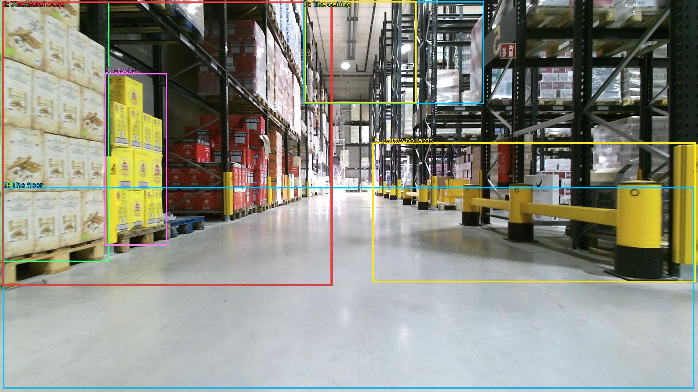
Celoten opis Florence in izvorni podatki
The image shows a large warehouse with a long, narrow aisle. The aisle is lined with rows of shelves on both sides, each filled with boxes and pallets. The floor is made of concrete and there are yellow bollards on the right side of the aisle. On the left side, there are stacks of boxes of various sizes and colors, including red, yellow, and white. The warehouse appears to be well-stocked with various items for sale. The ceiling is high and has several fluorescent lights. The overall atmosphere of the warehouse is busy and organized.
Opis, regije in surovi odgovori Florenceqwen3.5:27b-q4_K_M
Q4_K_M · 3.902 s · response_received
Celoten surovi zapis{"objects":[{"id":1,"classification":"uncertain","reason":"Aisle is a space, not a physical object."},{"id":2,"classification":"fixed","reason":"Structural building element forming the ground."},{"id":3,"classification":"movable","reason":"Bollards can be pushed or repositioned in normal use."},{"id":4,"classification":"movable","reason":"Stacks of boxes are easily moved or rearranged."},{"id":5,"classification":"movable","reason":"Stacks of boxes are easily moved or rearranged."},{"id":6,"classification":"uncertain","reason":"Warehouse is a building, not a discrete object."},{"id":7,"classification":"fixed","reason":"Structural building element forming the overhead cover."},{"id":8,"classification":"fixed","reason":"Structural building element forming the overhead cover."}]}qwen3.5:4b-q4_K_M
Q4_K_M · 1.012 s · response_received
Celoten surovi zapis{"objects":[{"id":1,"classification":"fixed","reason":"Structural element of the building layout."},{"id":2,"classification":"fixed","reason":"Structural part of the building floor."},{"id":3,"classification":"movable","reason":"Bollards can be pushed or repositioned in use."},{"id":4,"classification":"movable","reason":"Stacks of boxes can be moved or rearranged."},{"id":5,"classification":"movable","reason":"Stacks of boxes can be moved or rearranged."},{"id":6,"classification":"fixed","reason":"Structural building element defining the space."},{"id":7,"classification":"fixed","reason":"Structural part of the building ceiling."},{"id":8,"classification":"fixed","reason":"Structural part of the building ceiling."}]}gemma3:27b-it-q4_K_M
Q4_K_M · 4.942 s · response_received
Celoten surovi zapis{"objects": [{"id": 1, "classification": "fixed", "reason": "Part of the building's structure."}, {"id": 2, "classification": "fixed", "reason": "Structural element of the building."}, {"id": 3, "classification": "movable", "reason": "Can be repositioned for safety/layout changes."}, {"id": 4, "classification": "movable", "reason": "Stacks of boxes are easily moved."}, {"id": 5, "classification": "movable", "reason": "Stacks of boxes are easily moved."}, {"id": 6, "classification": "fixed", "reason": "The building itself; not movable."}, {"id": 7, "classification": "fixed", "reason": "Structural part of the building."}, {"id": 8, "classification": "fixed", "reason": "Structural part of the building."}]}| Nabor | Okolje | ID regije | Oznaka Florence | qwen3.5:27b-q4_K_M | qwen3.5:4b-q4_K_M | gemma3:27b-it-q4_K_M | Primerjava |
|---|
| loco | loco-subset-4 | 1 | The aisle | uncertain | fixed | fixed | različni razredi |
| loco | loco-subset-4 | 2 | The floor | fixed | fixed | fixed | enaki razredi |
| loco | loco-subset-4 | 3 | yellow bollards | movable | movable | movable | enaki razredi |
| loco | loco-subset-4 | 4 | stacks | movable | movable | movable | enaki razredi |
| loco | loco-subset-4 | 5 | stacks | movable | movable | movable | enaki razredi |
| loco | loco-subset-4 | 6 | The warehouse | uncertain | fixed | fixed | različni razredi |
| loco | loco-subset-4 | 7 | The ceiling | fixed | fixed | fixed | enaki razredi |
| loco | loco-subset-4 | 8 | The ceiling | fixed | fixed | fixed | enaki razredi |
loco-s5-35515
loco / loco-subset-5
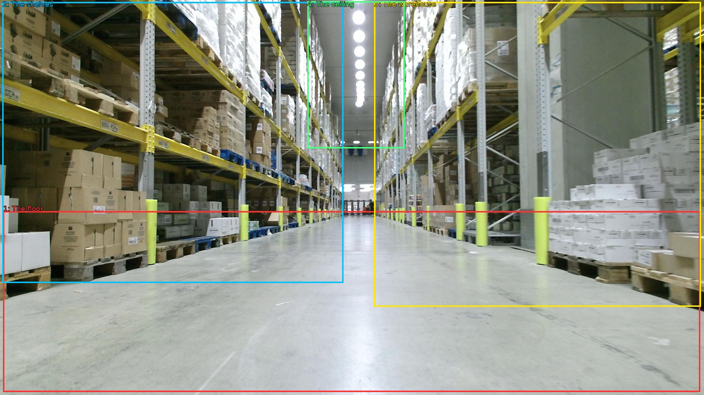
Celoten opis Florence in izvorni podatki
The image shows a large warehouse with a long, narrow corridor. The floor is made of concrete and the walls are painted white. On either side of the corridor, there are rows of yellow metal shelves with stacks of cardboard boxes and pallets. The shelves are arranged in neat rows and the boxes are neatly stacked on them. The warehouse appears to be well-maintained and well-organized. The ceiling is high and has multiple rows of lights, providing illumination to the space. The overall atmosphere of the warehouse is clean and organized.
Opis, regije in surovi odgovori Florenceqwen3.5:27b-q4_K_M
Q4_K_M · 1.769 s · response_received
Celoten surovi zapis{"objects":[{"id":1,"classification":"fixed","reason":"Structural building element."},{"id":2,"classification":"uncertain","reason":"Permanent installation not established."},{"id":3,"classification":"fixed","reason":"Structural building element."},{"id":4,"classification":"fixed","reason":"Structural building element."}]}qwen3.5:4b-q4_K_M
Q4_K_M · 0.604 s · response_received
Celoten surovi zapis{"objects":[{"id":1,"classification":"fixed","reason":"Structural floor element of the building."},{"id":2,"classification":"movable","reason":"Shelves can be repositioned or dismantled."},{"id":3,"classification":"fixed","reason":"The entire warehouse structure is fixed."},{"id":4,"classification":"fixed","reason":"Structural ceiling element of the building."}]}gemma3:27b-it-q4_K_M
Q4_K_M · 3.120 s · response_received
Celoten surovi zapis{"objects": [{"id": 1, "classification": "fixed", "reason": "Structural building element; part of the building."}, {"id": 2, "classification": "movable", "reason": "Shelves can be repositioned or moved within warehouse."}, {"id": 3, "classification": "fixed", "reason": "The warehouse itself is a structural building element."}, {"id": 4, "classification": "fixed", "reason": "Structural part of the building."}]}| Nabor | Okolje | ID regije | Oznaka Florence | qwen3.5:27b-q4_K_M | qwen3.5:4b-q4_K_M | gemma3:27b-it-q4_K_M | Primerjava |
|---|
| loco | loco-subset-5 | 1 | The floor | fixed | fixed | fixed | enaki razredi |
| loco | loco-subset-5 | 2 | The shelves | uncertain | movable | movable | različni razredi |
| loco | loco-subset-5 | 3 | The warehouse | fixed | fixed | fixed | enaki razredi |
| loco | loco-subset-5 | 4 | The ceiling | fixed | fixed | fixed | enaki razredi |
loco-s5-35389
loco / loco-subset-5

Celoten opis Florence in izvorni podatki
The image shows the interior of a large warehouse with a high ceiling and multiple rows of yellow trolleys. The floor is made of concrete and there are several pillars in the center of the room. On the left side of the image, there are shelves with various items for sale, and on the right side, there is a row of shelves with more items. The image is taken from a low angle, looking up at the ceiling. The overall atmosphere of the warehouse appears to be clean and well-maintained.
Opis, regije in surovi odgovori Florenceqwen3.5:27b-q4_K_M
Q4_K_M · 3.863 s · response_received
Celoten surovi zapis{"objects":[{"id":1,"classification":"fixed","reason":"Structural building element."},{"id":2,"classification":"uncertain","reason":"Label ambiguous; no clear object identity."},{"id":3,"classification":"movable","reason":"Trolleys are designed to be pushed."},{"id":4,"classification":"fixed","reason":"Structural building element."},{"id":5,"classification":"fixed","reason":"Pillars are structural building elements."},{"id":6,"classification":"fixed","reason":"Pillars are structural building elements."},{"id":7,"classification":"uncertain","reason":"Permanent installation not established from name alone."},{"id":8,"classification":"uncertain","reason":"Label ambiguous; no clear object identity."},{"id":9,"classification":"uncertain","reason":"Label ambiguous; shelters may be movable or fixed."}]}qwen3.5:4b-q4_K_M
Q4_K_M · 1.083 s · response_received
Celoten surovi zapis{"objects":[{"id":1,"classification":"fixed","reason":"Structural ceiling element of the building."},{"id":2,"classification":"uncertain","reason":"Abstract description lacks specific object identity evidence."},{"id":3,"classification":"movable","reason":"Trolleys are standard movable objects in warehouses."},{"id":4,"classification":"fixed","reason":"Structural floor element of the building."},{"id":5,"classification":"fixed","reason":"Pillars are structural building elements."},{"id":6,"classification":"fixed","reason":"Pillars are structural building elements."},{"id":7,"classification":"uncertain","reason":"Shelves may be fixed or movable without installation evidence."},{"id":8,"classification":"uncertain","reason":"Abstract description lacks specific object identity evidence."},{"id":9,"classification":"uncertain","reason":"Shelters in a warehouse context are ambiguous and uncertain."}]}gemma3:27b-it-q4_K_M
Q4_K_M · 5.246 s · response_received
Celoten surovi zapis{"objects": [{"id": 1, "classification": "fixed", "reason": "Structural part of the building."}, {"id": 2, "classification": "uncertain", "reason": "Arrangement of movable objects, not a structure."}, {"id": 3, "classification": "movable", "reason": "Trolleys are designed to be moved."}, {"id": 4, "classification": "fixed", "reason": "Structural part of the building."}, {"id": 5, "classification": "fixed", "reason": "Structural support for the building."}, {"id": 6, "classification": "fixed", "reason": "Structural support for the building."}, {"id": 7, "classification": "uncertain", "reason": "Installation is not confirmed by observations."}, {"id": 8, "classification": "uncertain", "reason": "Arrangement of movable objects, not a structure."}, {"id": 9, "classification": "uncertain", "reason": "Could be temporary structures or arrangements."}]}| Nabor | Okolje | ID regije | Oznaka Florence | qwen3.5:27b-q4_K_M | qwen3.5:4b-q4_K_M | gemma3:27b-it-q4_K_M | Primerjava |
|---|
| loco | loco-subset-5 | 1 | ceiling | fixed | fixed | fixed | enaki razredi |
| loco | loco-subset-5 | 2 | multiple rows | uncertain | uncertain | uncertain | enaki razredi |
| loco | loco-subset-5 | 3 | yellow trolleys | movable | movable | movable | enaki razredi |
| loco | loco-subset-5 | 4 | The floor | fixed | fixed | fixed | enaki razredi |
| loco | loco-subset-5 | 5 | several pillars | fixed | fixed | fixed | enaki razredi |
| loco | loco-subset-5 | 6 | several pillars | fixed | fixed | fixed | enaki razredi |
| loco | loco-subset-5 | 7 | shelves | uncertain | uncertain | uncertain | enaki razredi |
| loco | loco-subset-5 | 8 | a row | uncertain | uncertain | uncertain | enaki razredi |
| loco | loco-subset-5 | 9 | shelters | uncertain | uncertain | uncertain | enaki razredi |
loco-s5-35442
loco / loco-subset-5
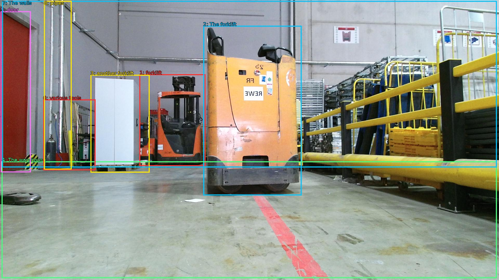
Celoten opis Florence in izvorni podatki
The image shows a large warehouse with a forklift parked in the center. The forklift is orange in color and has a black handle on top. It is parked in front of a yellow railing on the right side of the image. On the left side, there is another forklift with a white box attached to it. The warehouse has a concrete floor and a red door on the left. There are various tools and equipment scattered around the warehouse. The walls are made of concrete and there are pipes and ducts running along the walls.
Opis, regije in surovi odgovori Florenceqwen3.5:27b-q4_K_M
Q4_K_M · 3.748 s · response_received
Celoten surovi zapis{"objects":[{"id":1,"classification":"movable","reason":"Forklifts are mobile vehicles designed for repositioning."},{"id":2,"classification":"movable","reason":"Forklifts are mobile vehicles designed for repositioning."},{"id":3,"classification":"movable","reason":"Forklifts are mobile vehicles designed for repositioning."},{"id":4,"classification":"fixed","reason":"The warehouse is a structural building element."},{"id":5,"classification":"fixed","reason":"Doors are installed room elements; opening is not relocation."},{"id":6,"classification":"movable","reason":"Tools can be carried or repositioned in normal use."},{"id":7,"classification":"fixed","reason":"Walls are structural building elements."},{"id":8,"classification":"fixed","reason":"Pipes are typically integrated permanent installations."}]}qwen3.5:4b-q4_K_M
Q4_K_M · 1.005 s · response_received
Celoten surovi zapis{"objects":[{"id":1,"classification":"movable","reason":"Forklifts are movable vehicles."},{"id":2,"classification":"movable","reason":"Forklifts are movable vehicles."},{"id":3,"classification":"movable","reason":"Forklifts are movable vehicles."},{"id":4,"classification":"fixed","reason":"A warehouse is a structural building element."},{"id":5,"classification":"fixed","reason":"Doors are installed room elements."},{"id":6,"classification":"movable","reason":"Tools can be carried or repositioned."},{"id":7,"classification":"fixed","reason":"Walls are structural building elements."},{"id":8,"classification":"uncertain","reason":"Pipes may be fixed or movable depending on context."}]}gemma3:27b-it-q4_K_M
Q4_K_M · 4.881 s · response_received
Celoten surovi zapis{"objects": [{"id": 1, "classification": "movable", "reason": "A forklift is driven and repositioned."}, {"id": 2, "classification": "movable", "reason": "A forklift is driven and repositioned."}, {"id": 3, "classification": "movable", "reason": "A forklift is driven and repositioned."}, {"id": 4, "classification": "fixed", "reason": "The warehouse is a structural building element."}, {"id": 5, "classification": "fixed", "reason": "Installed room element; opening is not relocation."}, {"id": 6, "classification": "movable", "reason": "Tools are carried and repositioned."}, {"id": 7, "classification": "fixed", "reason": "Structural building element."}, {"id": 8, "classification": "fixed", "reason": "Integrated into the building structure."}]}| Nabor | Okolje | ID regije | Oznaka Florence | qwen3.5:27b-q4_K_M | qwen3.5:4b-q4_K_M | gemma3:27b-it-q4_K_M | Primerjava |
|---|
| loco | loco-subset-5 | 1 | forklift | movable | movable | movable | enaki razredi |
| loco | loco-subset-5 | 2 | The forklift | movable | movable | movable | enaki razredi |
| loco | loco-subset-5 | 3 | another forklift | movable | movable | movable | enaki razredi |
| loco | loco-subset-5 | 4 | The warehouse | fixed | fixed | fixed | enaki razredi |
| loco | loco-subset-5 | 5 | door | fixed | fixed | fixed | enaki razredi |
| loco | loco-subset-5 | 6 | various tools | movable | movable | movable | enaki razredi |
| loco | loco-subset-5 | 7 | The walls | fixed | fixed | fixed | enaki razredi |
| loco | loco-subset-5 | 8 | pipes | fixed | uncertain | fixed | različni razredi |
loco-s5-35454
loco / loco-subset-5

Celoten opis Florence in izvorni podatki
The image shows the interior of a large warehouse or storage facility. The floor is made of concrete and the walls are painted white. On the right side of the image, there are several yellow forklifts with stacks of boxes and pallets on them. The warehouse has a high ceiling with overhead lights and pipes running along it. There are also several large windows on the walls, allowing natural light to enter the space. In the background, there is a yellow forklift truck parked in the center of the warehouse. The overall atmosphere of the space is industrial and busy.
Opis, regije in surovi odgovori Florenceqwen3.5:27b-q4_K_M
Q4_K_M · 4.513 s · response_received
Celoten surovi zapis{"objects":[{"id":1,"classification":"fixed","reason":"Structural building element forming the ground."},{"id":2,"classification":"fixed","reason":"Structural building element enclosing the space."},{"id":3,"classification":"fixed","reason":"Structural building element enclosing the space."},{"id":4,"classification":"movable","reason":"Vehicles designed to be driven and repositioned."},{"id":5,"classification":"fixed","reason":"The building structure itself is permanent."},{"id":6,"classification":"fixed","reason":"Installed room element; opening is not relocation."},{"id":7,"classification":"fixed","reason":"Installed room element; opening is not relocation."},{"id":8,"classification":"fixed","reason":"Installed room element; opening is not relocation."},{"id":9,"classification":"fixed","reason":"Installed room element; opening is not relocation."},{"id":10,"classification":"movable","reason":"Vehicle designed to be driven and repositioned."}]}qwen3.5:4b-q4_K_M
Q4_K_M · 1.163 s · response_received
Celoten surovi zapis{"objects":[{"id":1,"classification":"fixed","reason":"Structural floor element of the building."},{"id":2,"classification":"fixed","reason":"Structural wall element of the building."},{"id":3,"classification":"fixed","reason":"Structural wall element of the building."},{"id":4,"classification":"movable","reason":"Forklifts are movable industrial vehicles."},{"id":5,"classification":"fixed","reason":"The warehouse is a structural building."},{"id":6,"classification":"fixed","reason":"Windows are installed room elements."},{"id":7,"classification":"fixed","reason":"Windows are installed room elements."},{"id":8,"classification":"fixed","reason":"Windows are installed room elements."},{"id":9,"classification":"fixed","reason":"Windows are installed room elements."},{"id":10,"classification":"movable","reason":"Forklifts are movable industrial vehicles."}]}gemma3:27b-it-q4_K_M
Q4_K_M · 5.292 s · response_received
Celoten surovi zapis{"objects": [{"id": 1, "classification": "fixed", "reason": "Structural building element."}, {"id": 2, "classification": "fixed", "reason": "Structural building element."}, {"id": 3, "classification": "fixed", "reason": "Structural building element."}, {"id": 4, "classification": "movable", "reason": "Can be driven and repositioned."}, {"id": 5, "classification": "fixed", "reason": "The building itself."}, {"id": 6, "classification": "fixed", "reason": "Installed room elements."}, {"id": 7, "classification": "fixed", "reason": "Installed room elements."}, {"id": 8, "classification": "fixed", "reason": "Installed room elements."}, {"id": 9, "classification": "fixed", "reason": "Installed room elements."}, {"id": 10, "classification": "movable", "reason": "Can be driven and repositioned."}]}| Nabor | Okolje | ID regije | Oznaka Florence | qwen3.5:27b-q4_K_M | qwen3.5:4b-q4_K_M | gemma3:27b-it-q4_K_M | Primerjava |
|---|
| loco | loco-subset-5 | 1 | The floor | fixed | fixed | fixed | enaki razredi |
| loco | loco-subset-5 | 2 | the walls | fixed | fixed | fixed | enaki razredi |
| loco | loco-subset-5 | 3 | the walls | fixed | fixed | fixed | enaki razredi |
| loco | loco-subset-5 | 4 | several yellow forklifts | movable | movable | movable | enaki razredi |
| loco | loco-subset-5 | 5 | The warehouse | fixed | fixed | fixed | enaki razredi |
| loco | loco-subset-5 | 6 | several large windows | fixed | fixed | fixed | enaki razredi |
| loco | loco-subset-5 | 7 | several large windows | fixed | fixed | fixed | enaki razredi |
| loco | loco-subset-5 | 8 | several large windows | fixed | fixed | fixed | enaki razredi |
| loco | loco-subset-5 | 9 | several large windows | fixed | fixed | fixed | enaki razredi |
| loco | loco-subset-5 | 10 | a yellow forklift truck | movable | movable | movable | enaki razredi |
loco-s5-36298
loco / loco-subset-5
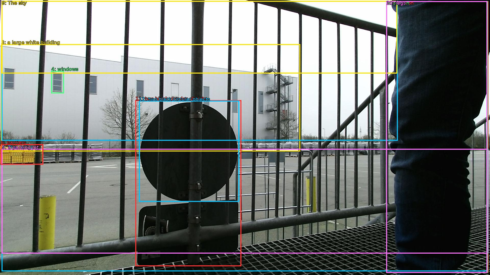
Celoten opis Florence in izvorni podatki
The image shows a person standing on a metal railing with their feet in the air. The railing is black and appears to be made of metal bars. In the background, there is a large white building with multiple windows and a parking lot with yellow barriers. The sky is overcast and the ground is wet, suggesting that it has recently rained. On the right side of the image, the person's legs are visible, and they are wearing blue jeans. In front of the railing, there are two black circular objects attached to the railing.
Opis, regije in surovi odgovori Florenceqwen3.5:27b-q4_K_M
Q4_K_M · 4.990 s · response_received
Celoten surovi zapis{"objects":[{"id":1,"classification":"movable","reason":"Persons can move freely between visits."},{"id":2,"classification":"uncertain","reason":"Permanent installation of railing not established."},{"id":3,"classification":"fixed","reason":"Structural building element unlikely to relocate."},{"id":4,"classification":"fixed","reason":"Windows are installed room elements."},{"id":5,"classification":"fixed","reason":"Parking lot is a permanent ground feature."},{"id":6,"classification":"movable","reason":"Barriers can be pushed or repositioned."},{"id":7,"classification":"fixed","reason":"Sky is a non-relocatable environmental element."},{"id":8,"classification":"fixed","reason":"Sky is a non-relocatable environmental element."},{"id":9,"classification":"movable","reason":"Persons can move freely between visits."},{"id":10,"classification":"movable","reason":"Body parts move with the person."},{"id":11,"classification":"uncertain","reason":"Attachment to railing not reliably established."},{"id":12,"classification":"uncertain","reason":"Attachment to railing not reliably established."}]}qwen3.5:4b-q4_K_M
Q4_K_M · 1.466 s · response_received
Celoten surovi zapis{"objects":[{"id":1,"classification":"movable","reason":"A person can move and change position freely."},{"id":2,"classification":"fixed","reason":"Structural building element, part of the railing."},{"id":3,"classification":"fixed","reason":"Permanent structural building element."},{"id":4,"classification":"fixed","reason":"Part of a permanent building structure."},{"id":5,"classification":"uncertain","reason":"Ground surface location can change with construction."},{"id":6,"classification":"movable","reason":"Barriers can be pushed or repositioned easily."},{"id":7,"classification":"uncertain","reason":"Sky position changes due to weather and time."},{"id":8,"classification":"uncertain","reason":"Sky position changes due to weather and time."},{"id":9,"classification":"movable","reason":"A person can move and change position freely."},{"id":10,"classification":"movable","reason":"Body part moves with the person; not fixed."},{"id":11,"classification":"uncertain","reason":"Circular objects attached to railing, but permanence unclear."},{"id":12,"classification":"uncertain","reason":"Circular objects attached to railing, but permanence unclear."}]}gemma3:27b-it-q4_K_M
Q4_K_M · 6.748 s · response_received
Celoten surovi zapis{"objects": [{"id": 1, "classification": "movable", "reason": "A person is inherently movable."}, {"id": 2, "classification": "fixed", "reason": "Attached to a building; requires dismantling to move."}, {"id": 3, "classification": "fixed", "reason": "Structural building element."}, {"id": 4, "classification": "fixed", "reason": "Installed part of the building."}, {"id": 5, "classification": "movable", "reason": "Parking lots are not permanently fixed."}, {"id": 6, "classification": "movable", "reason": "Barriers can be repositioned."}, {"id": 7, "classification": "fixed", "reason": "The sky is a permanent feature."}, {"id": 8, "classification": "fixed", "reason": "The sky is a permanent feature."}, {"id": 9, "classification": "movable", "reason": "A person is inherently movable."}, {"id": 10, "classification": "movable", "reason": "Part of a person; moves with the person."}, {"id": 11, "classification": "uncertain", "reason": "Attachment to railing doesn't define permanence."}, {"id": 12, "classification": "uncertain", "reason": "Attachment to railing doesn't define permanence."}]}| Nabor | Okolje | ID regije | Oznaka Florence | qwen3.5:27b-q4_K_M | qwen3.5:4b-q4_K_M | gemma3:27b-it-q4_K_M | Primerjava |
|---|
| loco | loco-subset-5 | 1 | a person | movable | movable | movable | enaki razredi |
| loco | loco-subset-5 | 2 | The railing | uncertain | fixed | fixed | različni razredi |
| loco | loco-subset-5 | 3 | a large white building | fixed | fixed | fixed | enaki razredi |
| loco | loco-subset-5 | 4 | windows | fixed | fixed | fixed | enaki razredi |
| loco | loco-subset-5 | 5 | a parking lot | fixed | uncertain | movable | različni razredi |
| loco | loco-subset-5 | 6 | barriers | movable | movable | movable | enaki razredi |
| loco | loco-subset-5 | 7 | The sky | fixed | uncertain | fixed | različni razredi |
| loco | loco-subset-5 | 8 | The sky | fixed | uncertain | fixed | različni razredi |
| loco | loco-subset-5 | 9 | person | movable | movable | movable | enaki razredi |
| loco | loco-subset-5 | 10 | legs | movable | movable | movable | enaki razredi |
| loco | loco-subset-5 | 11 | two black circular objects | uncertain | uncertain | uncertain | enaki razredi |
| loco | loco-subset-5 | 12 | two black circular objects | uncertain | uncertain | uncertain | enaki razredi |
loco-s5-36236
loco / loco-subset-5

Celoten opis Florence in izvorni podatki
The image shows a large industrial space with a concrete floor and white walls. There are three workers in the image, two of whom are wearing orange vests and one is wearing a black jacket. They are walking towards a red machine that appears to be a conveyor belt. The machine is moving along the floor and there are yellow railings on either side of the image. Above the machine, there is a large circular light fixture hanging from the ceiling. The workers appear to be inspecting or inspecting the machine.
Opis, regije in surovi odgovori Florenceqwen3.5:27b-q4_K_M
Q4_K_M · 7.841 s · response_received
Celoten surovi zapis{"objects":[{"id":1,"classification":"fixed","reason":"Structural building element."},{"id":2,"classification":"fixed","reason":"Structural building element."},{"id":3,"classification":"movable","reason":"People can move freely."},{"id":4,"classification":"movable","reason":"People can move freely."},{"id":5,"classification":"movable","reason":"People can move freely."},{"id":6,"classification":"movable","reason":"Refers to people who move."},{"id":7,"classification":"movable","reason":"Refers to people who move."},{"id":8,"classification":"movable","reason":"Clothing worn by moving people."},{"id":9,"classification":"movable","reason":"Clothing worn by moving people."},{"id":10,"classification":"uncertain","reason":"Machine type and installation unknown."},{"id":11,"classification":"uncertain","reason":"Machine type and installation unknown."},{"id":12,"classification":"fixed","reason":"Structural building element."},{"id":13,"classification":"uncertain","reason":"Installation status not visible."},{"id":14,"classification":"uncertain","reason":"Installation status not visible."},{"id":15,"classification":"uncertain","reason":"Installation status not visible."},{"id":16,"classification":"uncertain","reason":"Fixture installation not clearly visible."},{"id":17,"classification":"movable","reason":"People can move freely."},{"id":18,"classification":"movable","reason":"People can move freely."},{"id":19,"classification":"movable","reason":"People can move freely."},{"id":20,"classification":"movable","reason":"People can move freely."},{"id":21,"classification":"uncertain","reason":"Machine type and installation unknown."}]}qwen3.5:4b-q4_K_M
Q4_K_M · 2.507 s · response_received
Celoten surovi zapis{"objects":[{"id":1,"classification":"fixed","reason":"Structural building element (concrete floor)."},{"id":2,"classification":"fixed","reason":"Structural building element (walls)."},{"id":3,"classification":"movable","reason":"Workers are mobile entities that move between visits."},{"id":4,"classification":"movable","reason":"Workers are mobile entities that move between visits."},{"id":5,"classification":"movable","reason":"Workers are mobile entities that move between visits."},{"id":6,"classification":"movable","reason":"Part of workers; mobile entities move between visits."},{"id":7,"classification":"movable","reason":"Part of workers; mobile entities move between visits."},{"id":8,"classification":"movable","reason":"Clothing is carried by people and moves with them."},{"id":9,"classification":"movable","reason":"Clothing is carried by people and moves with them."},{"id":10,"classification":"movable","reason":"Machine described as moving along the floor in use."},{"id":11,"classification":"movable","reason":"Same machine as ID 10; mobile during normal operation."},{"id":12,"classification":"fixed","reason":"Structural building element (floor)."},{"id":13,"classification":"uncertain","reason":"Railings could be fixed or movable without clear evidence."},{"id":14,"classification":"uncertain","reason":"Railings could be fixed or movable without clear evidence."},{"id":15,"classification":"uncertain","reason":"Railings could be fixed or movable without clear evidence."},{"id":16,"classification":"fixed","reason":"Light fixture hanging from ceiling is structurally fixed."},{"id":17,"classification":"movable","reason":"Workers are mobile entities that move between visits."},{"id":18,"classification":"movable","reason":"Workers are mobile entities that move between visits."},{"id":19,"classification":"movable","reason":"Workers are mobile entities that move between visits."},{"id":20,"classification":"movable","reason":"Workers are mobile entities that move between visits."},{"id":21,"classification":"movable","reason":"Same machine as ID 10; mobile during normal operation."}]}gemma3:27b-it-q4_K_M
Q4_K_M · 10.321 s · response_received
Celoten surovi zapis{"objects": [{"id": 1, "classification": "fixed", "reason": "Structural building element."}, {"id": 2, "classification": "fixed", "reason": "Structural building element."}, {"id": 3, "classification": "movable", "reason": "People can move around freely."}, {"id": 4, "classification": "movable", "reason": "People can move around freely."}, {"id": 5, "classification": "movable", "reason": "People can move around freely."}, {"id": 6, "classification": "movable", "reason": "Refers to the workers."}, {"id": 7, "classification": "movable", "reason": "Refers to the workers."}, {"id": 8, "classification": "movable", "reason": "Clothing is carried/worn."}, {"id": 9, "classification": "movable", "reason": "Clothing is carried/worn."}, {"id": 10, "classification": "movable", "reason": "Industrial machines are repositioned."}, {"id": 11, "classification": "movable", "reason": "Industrial machines are repositioned."}, {"id": 12, "classification": "fixed", "reason": "Structural building element."}, {"id": 13, "classification": "fixed", "reason": "Installed safety feature."}, {"id": 14, "classification": "fixed", "reason": "Installed safety feature."}, {"id": 15, "classification": "fixed", "reason": "Installed safety feature."}, {"id": 16, "classification": "fixed", "reason": "Permanently installed lighting."}, {"id": 17, "classification": "movable", "reason": "People can move around freely."}, {"id": 18, "classification": "movable", "reason": "People can move around freely."}, {"id": 19, "classification": "movable", "reason": "People can move around freely."}, {"id": 20, "classification": "movable", "reason": "People can move around freely."}, {"id": 21, "classification": "movable", "reason": "Industrial machines are repositioned."}]}| Nabor | Okolje | ID regije | Oznaka Florence | qwen3.5:27b-q4_K_M | qwen3.5:4b-q4_K_M | gemma3:27b-it-q4_K_M | Primerjava |
|---|
| loco | loco-subset-5 | 1 | concrete floor | fixed | fixed | fixed | enaki razredi |
| loco | loco-subset-5 | 2 | walls | fixed | fixed | fixed | enaki razredi |
| loco | loco-subset-5 | 3 | three workers | movable | movable | movable | enaki razredi |
| loco | loco-subset-5 | 4 | three workers | movable | movable | movable | enaki razredi |
| loco | loco-subset-5 | 5 | three workers | movable | movable | movable | enaki razredi |
| loco | loco-subset-5 | 6 | two of whom | movable | movable | movable | enaki razredi |
| loco | loco-subset-5 | 7 | two of whom | movable | movable | movable | enaki razredi |
| loco | loco-subset-5 | 8 | orange vests | movable | movable | movable | enaki razredi |
| loco | loco-subset-5 | 9 | a black jacket | movable | movable | movable | enaki razredi |
| loco | loco-subset-5 | 10 | a red machine | uncertain | movable | movable | različni razredi |
| loco | loco-subset-5 | 11 | The machine | uncertain | movable | movable | različni razredi |
| loco | loco-subset-5 | 12 | floor | fixed | fixed | fixed | enaki razredi |
| loco | loco-subset-5 | 13 | yellow railings | uncertain | uncertain | fixed | različni razredi |
| loco | loco-subset-5 | 14 | yellow railings | uncertain | uncertain | fixed | različni razredi |
| loco | loco-subset-5 | 15 | yellow railings | uncertain | uncertain | fixed | različni razredi |
| loco | loco-subset-5 | 16 | a large circular light fixture | uncertain | fixed | fixed | različni razredi |
| loco | loco-subset-5 | 17 | The workers | movable | movable | movable | enaki razredi |
| loco | loco-subset-5 | 18 | The workers | movable | movable | movable | enaki razredi |
| loco | loco-subset-5 | 19 | The workers | movable | movable | movable | enaki razredi |
| loco | loco-subset-5 | 20 | workers | movable | movable | movable | enaki razredi |
| loco | loco-subset-5 | 21 | machine | uncertain | movable | movable | različni razredi |
loco-s5-35492
loco / loco-subset-5
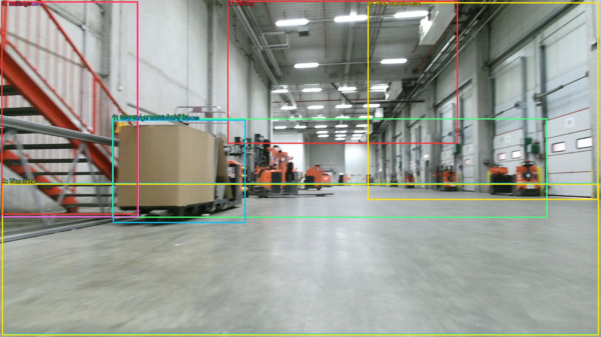
Celoten opis Florence in izvorni podatki
The image shows a large warehouse with a high ceiling and large windows on the right side. The floor is made of concrete and there are several orange forklifts parked in the center of the room. On the left side of the image, there is a staircase with red railings leading up to the second floor. In the foreground, there are two large cardboard boxes on a pallet truck. The warehouse appears to be empty, with no people or other objects visible in the image.
Opis, regije in surovi odgovori Florenceqwen3.5:27b-q4_K_M
Q4_K_M · 3.413 s · response_received
Celoten surovi zapis{"objects":[{"id":1,"classification":"fixed","reason":"Structural building element."},{"id":2,"classification":"fixed","reason":"Structural building element."},{"id":3,"classification":"fixed","reason":"Material of structural floor."},{"id":4,"classification":"movable","reason":"Vehicles can be driven elsewhere."},{"id":5,"classification":"fixed","reason":"Integrated structural building element."},{"id":6,"classification":"fixed","reason":"Installed safety feature on stairs."},{"id":7,"classification":"movable","reason":"Boxes can be carried or pushed."},{"id":8,"classification":"fixed","reason":"The building structure itself."}]}qwen3.5:4b-q4_K_M
Q4_K_M · 1.094 s · response_received
Celoten surovi zapis{"objects":[{"id":1,"classification":"fixed","reason":"Structural ceiling element of the building."},{"id":2,"classification":"fixed","reason":"Structural floor element of the building."},{"id":3,"classification":"fixed","reason":"Structural surface material, part of the floor."},{"id":4,"classification":"movable","reason":"Forklifts are movable vehicles that can be driven."},{"id":5,"classification":"fixed","reason":"Staircase is a structural building element."},{"id":6,"classification":"fixed","reason":"Railings are structural safety elements attached to stairs."},{"id":7,"classification":"movable","reason":"Cardboard boxes can be easily picked up and moved."},{"id":8,"classification":"fixed","reason":"The warehouse is the structural building itself."}]}gemma3:27b-it-q4_K_M
Q4_K_M · 4.988 s · response_received
Celoten surovi zapis{"objects": [{"id": 1, "classification": "fixed", "reason": "Structural part of the building."}, {"id": 2, "classification": "fixed", "reason": "Structural part of the building."}, {"id": 3, "classification": "fixed", "reason": "Part of the floor structure."}, {"id": 4, "classification": "movable", "reason": "Forklifts are moved during normal operation."}, {"id": 5, "classification": "fixed", "reason": "Integrated structural element of the building."}, {"id": 6, "classification": "fixed", "reason": "Attached to staircase; integrated structure."}, {"id": 7, "classification": "movable", "reason": "Boxes can be moved with pallet truck."}, {"id": 8, "classification": "fixed", "reason": "The building itself."}]}| Nabor | Okolje | ID regije | Oznaka Florence | qwen3.5:27b-q4_K_M | qwen3.5:4b-q4_K_M | gemma3:27b-it-q4_K_M | Primerjava |
|---|
| loco | loco-subset-5 | 1 | ceiling | fixed | fixed | fixed | enaki razredi |
| loco | loco-subset-5 | 2 | The floor | fixed | fixed | fixed | enaki razredi |
| loco | loco-subset-5 | 3 | concrete | fixed | fixed | fixed | enaki razredi |
| loco | loco-subset-5 | 4 | several orange forklifts | movable | movable | movable | enaki razredi |
| loco | loco-subset-5 | 5 | a staircase | fixed | fixed | fixed | enaki razredi |
| loco | loco-subset-5 | 6 | railings | fixed | fixed | fixed | enaki razredi |
| loco | loco-subset-5 | 7 | two large cardboard boxes | movable | movable | movable | enaki razredi |
| loco | loco-subset-5 | 8 | The warehouse | fixed | fixed | fixed | enaki razredi |
loco-s5-35483
loco / loco-subset-5
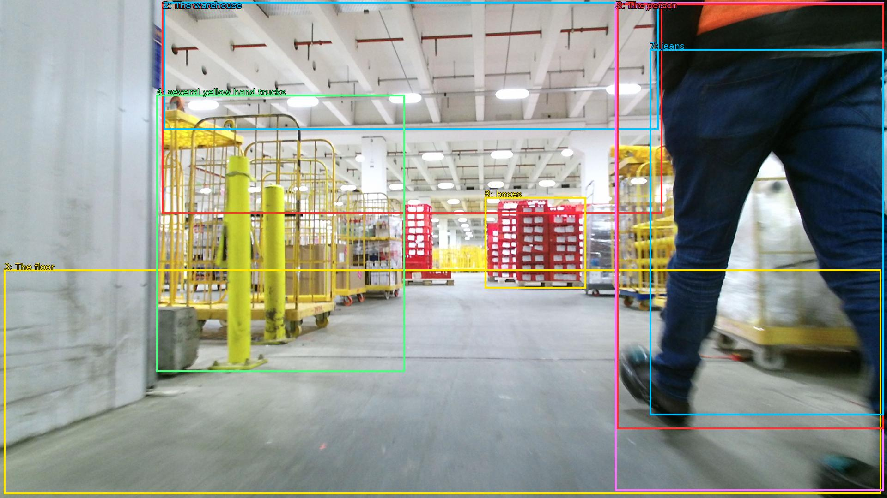
Celoten opis Florence in izvorni podatki
The image shows a person walking in a large warehouse. The warehouse has a high ceiling with red beams and white walls. The floor is made of concrete and there are several yellow hand trucks parked on the right side of the image. The person is wearing blue jeans and an orange jacket. In the background, there are rows of red boxes and shelves. The image is taken from a low angle, looking down on the person and the warehouse.
Opis, regije in surovi odgovori Florenceqwen3.5:27b-q4_K_M
Q4_K_M · 3.705 s · response_received
Celoten surovi zapis{"objects":[{"id":1,"classification":"fixed","reason":"Warehouse is a structural building element."},{"id":2,"classification":"fixed","reason":"Warehouse is a structural building element."},{"id":3,"classification":"fixed","reason":"Floor is a structural building element."},{"id":4,"classification":"movable","reason":"Hand trucks are designed to be pushed and moved."},{"id":5,"classification":"movable","reason":"Persons can walk and change position freely."},{"id":6,"classification":"movable","reason":"Persons can walk and change position freely."},{"id":7,"classification":"movable","reason":"Jeans are clothing that can be carried or worn."},{"id":8,"classification":"movable","reason":"Boxes can be carried, pushed, or repositioned."}]}qwen3.5:4b-q4_K_M
Q4_K_M · 1.045 s · response_received
Celoten surovi zapis{"objects":[{"id":1,"classification":"fixed","reason":"Structural building element of the warehouse."},{"id":2,"classification":"fixed","reason":"Structural building element of the warehouse."},{"id":3,"classification":"fixed","reason":"Structural building element (concrete floor)."},{"id":4,"classification":"movable","reason":"Hand trucks are designed to be pushed and repositioned."},{"id":5,"classification":"movable","reason":"A person can walk anywhere and change position."},{"id":6,"classification":"movable","reason":"A person can walk anywhere and change position."},{"id":7,"classification":"movable","reason":"Clothes are movable items that can be taken off or moved."},{"id":8,"classification":"movable","reason":"Boxes can be carried, pushed, or stacked elsewhere."}]}gemma3:27b-it-q4_K_M
Q4_K_M · 4.925 s · response_received
Celoten surovi zapis{"objects": [{"id": 1, "classification": "fixed", "reason": "Structural building element: the warehouse itself."}, {"id": 2, "classification": "fixed", "reason": "Structural building element: the warehouse itself."}, {"id": 3, "classification": "fixed", "reason": "Structural building element of the warehouse."}, {"id": 4, "classification": "movable", "reason": "Hand trucks are repositioned during use."}, {"id": 5, "classification": "movable", "reason": "A person can move around freely."}, {"id": 6, "classification": "movable", "reason": "A person can move around freely."}, {"id": 7, "classification": "movable", "reason": "Clothing is carried or repositioned."}, {"id": 8, "classification": "movable", "reason": "Boxes are carried or repositioned."}]}| Nabor | Okolje | ID regije | Oznaka Florence | qwen3.5:27b-q4_K_M | qwen3.5:4b-q4_K_M | gemma3:27b-it-q4_K_M | Primerjava |
|---|
| loco | loco-subset-5 | 1 | The warehouse | fixed | fixed | fixed | enaki razredi |
| loco | loco-subset-5 | 2 | The warehouse | fixed | fixed | fixed | enaki razredi |
| loco | loco-subset-5 | 3 | The floor | fixed | fixed | fixed | enaki razredi |
| loco | loco-subset-5 | 4 | several yellow hand trucks | movable | movable | movable | enaki razredi |
| loco | loco-subset-5 | 5 | The person | movable | movable | movable | enaki razredi |
| loco | loco-subset-5 | 6 | The person | movable | movable | movable | enaki razredi |
| loco | loco-subset-5 | 7 | jeans | movable | movable | movable | enaki razredi |
| loco | loco-subset-5 | 8 | boxes | movable | movable | movable | enaki razredi |
loco-s5-35384
loco / loco-subset-5
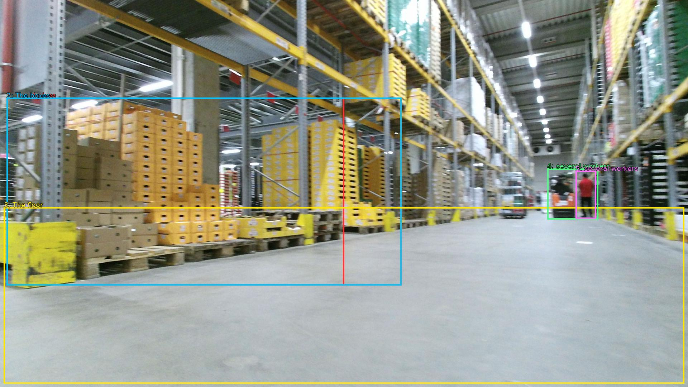
Celoten opis Florence in izvorni podatki
The image shows a large warehouse with a high ceiling and rows of shelves. The shelves are filled with cardboard boxes of various sizes and colors. The boxes are stacked on wooden pallets and are arranged in neat rows. The floor is made of concrete and there are several workers visible in the background. The warehouse appears to be well-maintained and well-organized. The image is taken from a low angle, looking down on the warehouse floor.
Opis, regije in surovi odgovori Florenceqwen3.5:27b-q4_K_M
Q4_K_M · 2.414 s · response_received
Celoten surovi zapis{"objects":[{"id":1,"classification":"uncertain","reason":"Shelves may be movable or fixed; no installation evidence."},{"id":2,"classification":"movable","reason":"Boxes are easily carried or repositioned in normal use."},{"id":3,"classification":"fixed","reason":"Concrete floor is a structural building element."},{"id":4,"classification":"movable","reason":"Workers can move freely between visits."},{"id":5,"classification":"movable","reason":"Workers can move freely between visits."}]}qwen3.5:4b-q4_K_M
Q4_K_M · 0.727 s · response_received
Celoten surovi zapis{"objects":[{"id":1,"classification":"uncertain","reason":"Shelves could be fixed or movable without installation proof."},{"id":2,"classification":"movable","reason":"Boxes are standard objects that can be easily repositioned."},{"id":3,"classification":"fixed","reason":"Floor is a structural building element."},{"id":4,"classification":"uncertain","reason":"Workers' positions change frequently; identity not stable."},{"id":5,"classification":"uncertain","reason":"Workers' positions change frequently; identity not stable."}]}gemma3:27b-it-q4_K_M
Q4_K_M · 3.537 s · response_received
Celoten surovi zapis{"objects": [{"id": 1, "classification": "uncertain", "reason": "Installation is not established; shelves could move."}, {"id": 2, "classification": "movable", "reason": "Boxes are easily carried or repositioned."}, {"id": 3, "classification": "fixed", "reason": "Structural element of the building."}, {"id": 4, "classification": "movable", "reason": "People can move around freely."}, {"id": 5, "classification": "movable", "reason": "People can move around freely."}]}| Nabor | Okolje | ID regije | Oznaka Florence | qwen3.5:27b-q4_K_M | qwen3.5:4b-q4_K_M | gemma3:27b-it-q4_K_M | Primerjava |
|---|
| loco | loco-subset-5 | 1 | The shelves | uncertain | uncertain | uncertain | enaki razredi |
| loco | loco-subset-5 | 2 | The boxes | movable | movable | movable | enaki razredi |
| loco | loco-subset-5 | 3 | The floor | fixed | fixed | fixed | enaki razredi |
| loco | loco-subset-5 | 4 | several workers | movable | uncertain | movable | različni razredi |
| loco | loco-subset-5 | 5 | several workers | movable | uncertain | movable | različni razredi |
loco-s5-35443
loco / loco-subset-5

Celoten opis Florence in izvorni podatki
The image shows a large warehouse with a long, narrow aisle. The aisle is lined with rows of shelves on both sides, each filled with boxes and pallets. The boxes are of different sizes and colors, and some are stacked on top of each other. The pallets are yellow and appear to be made of metal. The warehouse has a high ceiling with overhead lights, and the floor is made of concrete. The overall atmosphere of the warehouse is busy and organized.
Opis, regije in surovi odgovori Florenceqwen3.5:27b-q4_K_M
Q4_K_M · 2.524 s · response_received
Celoten surovi zapis{"objects":[{"id":1,"classification":"uncertain","reason":"Aisle is a space, not a physical object."},{"id":2,"classification":"movable","reason":"Boxes are easily carried or repositioned in normal use."},{"id":3,"classification":"movable","reason":"Pallets are designed to be moved by forklifts or people."},{"id":4,"classification":"fixed","reason":"The warehouse is the structural building itself."},{"id":5,"classification":"fixed","reason":"Concrete floor is a permanent structural element."}]}qwen3.5:4b-q4_K_M
Q4_K_M · 0.702 s · response_received
Celoten surovi zapis{"objects":[{"id":1,"classification":"uncertain","reason":"Aisle definition lacks structural permanence evidence."},{"id":2,"classification":"movable","reason":"Boxes are standard movable objects in normal use."},{"id":3,"classification":"movable","reason":"Pallets can be carried or repositioned easily."},{"id":4,"classification":"fixed","reason":"The warehouse is a permanent structural building element."},{"id":5,"classification":"fixed","reason":"Concrete floor is a structural part of the building."}]}gemma3:27b-it-q4_K_M
Q4_K_M · 3.567 s · response_received
Celoten surovi zapis{"objects": [{"id": 1, "classification": "uncertain", "reason": "Aisle's installation is not established."}, {"id": 2, "classification": "movable", "reason": "Boxes are easily repositioned."}, {"id": 3, "classification": "movable", "reason": "Pallets can be moved by forklift."}, {"id": 4, "classification": "fixed", "reason": "The warehouse is a structural building element."}, {"id": 5, "classification": "fixed", "reason": "Structural part of the building."}]}| Nabor | Okolje | ID regije | Oznaka Florence | qwen3.5:27b-q4_K_M | qwen3.5:4b-q4_K_M | gemma3:27b-it-q4_K_M | Primerjava |
|---|
| loco | loco-subset-5 | 1 | The aisle | uncertain | uncertain | uncertain | enaki razredi |
| loco | loco-subset-5 | 2 | The boxes | movable | movable | movable | enaki razredi |
| loco | loco-subset-5 | 3 | The pallets | movable | movable | movable | enaki razredi |
| loco | loco-subset-5 | 4 | The warehouse | fixed | fixed | fixed | enaki razredi |
| loco | loco-subset-5 | 5 | the floor | fixed | fixed | fixed | enaki razredi |
loco-s5-36243
loco / loco-subset-5

Celoten opis Florence in izvorni podatki
The image shows a large warehouse with a high ceiling and concrete floor. In the center of the image, there is a large orange forklift truck with a person sitting on top of it. The person is wearing a red jacket and a black helmet, and appears to be operating the forklift. To the right of the truck, there are several rows of red storage cabinets. The cabinets are arranged in a neat row, and there are shelves and racks in the background. The warehouse appears to have a modern and industrial feel to it.
Opis, regije in surovi odgovori Florenceqwen3.5:27b-q4_K_M
Q4_K_M · 4.673 s · response_received
Celoten surovi zapis{"objects":[{"id":1,"classification":"fixed","reason":"Structural building element."},{"id":2,"classification":"fixed","reason":"Structural building element."},{"id":3,"classification":"movable","reason":"Vehicle designed to be driven and repositioned."},{"id":4,"classification":"movable","reason":"Person can move freely."},{"id":5,"classification":"movable","reason":"Clothing item worn by person."},{"id":6,"classification":"movable","reason":"Protective gear worn by person."},{"id":7,"classification":"uncertain","reason":"Label vague; no installation evidence visible."},{"id":8,"classification":"uncertain","reason":"Label vague; no installation evidence visible."},{"id":9,"classification":"uncertain","reason":"Cabinets may be movable or installed; unclear."},{"id":10,"classification":"uncertain","reason":"Shelves may be movable or installed; unclear."},{"id":11,"classification":"fixed","reason":"The building structure itself is fixed."}]}qwen3.5:4b-q4_K_M
Q4_K_M · 1.338 s · response_received
Celoten surovi zapis{"objects":[{"id":1,"classification":"fixed","reason":"Structural building element."},{"id":2,"classification":"fixed","reason":"Structural building element."},{"id":3,"classification":"movable","reason":"A forklift can be driven to a new location."},{"id":4,"classification":"movable","reason":"A person can move to a different location."},{"id":5,"classification":"movable","reason":"Clothing can be taken off and moved elsewhere."},{"id":6,"classification":"movable","reason":"A helmet can be picked up and carried away."},{"id":7,"classification":"uncertain","reason":"Rows of objects may be fixed or movable storage."},{"id":8,"classification":"uncertain","reason":"Rows of objects may be fixed or movable storage."},{"id":9,"classification":"uncertain","reason":"Cabinets could be fixed or movable depending on construction."},{"id":10,"classification":"uncertain","reason":"Shelves could be fixed or movable depending on construction."},{"id":11,"classification":"fixed","reason":"The warehouse is a structural building element."}]}gemma3:27b-it-q4_K_M
Q4_K_M · 9.117 s · response_received
Celoten surovi zapis{"objects": [{"id": 1, "classification": "fixed", "reason": "Structural part of the building."}, {"id": 2, "classification": "fixed", "reason": "Structural part of the building."}, {"id": 3, "classification": "movable", "reason": "Can be driven and repositioned."}, {"id": 4, "classification": "movable", "reason": "A person is carried/moved."}, {"id": 5, "classification": "movable", "reason": "Worn or carried by a person."}, {"id": 6, "classification": "movable", "reason": "Worn or carried by a person."}, {"id": 7, "classification": "uncertain", "reason": "Arrangement, not fixed installation."}, {"id": 8, "classification": "uncertain", "reason": "Arrangement, not fixed installation."}, {"id": 9, "classification": "uncertain", "reason": "Installation is not established."}, {"id": 10, "classification": "uncertain", "reason": "Installation is not established."}, {"id": 11, "classification": "fixed", "reason": "Structural building element."}]}| Nabor | Okolje | ID regije | Oznaka Florence | qwen3.5:27b-q4_K_M | qwen3.5:4b-q4_K_M | gemma3:27b-it-q4_K_M | Primerjava |
|---|
| loco | loco-subset-5 | 1 | ceiling | fixed | fixed | fixed | enaki razredi |
| loco | loco-subset-5 | 2 | floor | fixed | fixed | fixed | enaki razredi |
| loco | loco-subset-5 | 3 | a large orange forklift truck | movable | movable | movable | enaki razredi |
| loco | loco-subset-5 | 4 | The person | movable | movable | movable | enaki razredi |
| loco | loco-subset-5 | 5 | jacket | movable | movable | movable | enaki razredi |
| loco | loco-subset-5 | 6 | helmet | movable | movable | movable | enaki razredi |
| loco | loco-subset-5 | 7 | several rows | uncertain | uncertain | uncertain | enaki razredi |
| loco | loco-subset-5 | 8 | several rows | uncertain | uncertain | uncertain | enaki razredi |
| loco | loco-subset-5 | 9 | The cabinets | uncertain | uncertain | uncertain | enaki razredi |
| loco | loco-subset-5 | 10 | shelves | uncertain | uncertain | uncertain | enaki razredi |
| loco | loco-subset-5 | 11 | The warehouse | fixed | fixed | fixed | enaki razredi |
loco-s5-35503
loco / loco-subset-5

Celoten opis Florence in izvorni podatki
The image shows a large warehouse with a conveyor belt running through it. On the left side of the image, there are stacks of black plastic pallets arranged in a neat and orderly manner. In the background, there is a worker wearing a yellow high visibility vest and a red jacket, walking towards a large white machine. The worker appears to be in motion, as if they are moving through the warehouse. The warehouse has a high ceiling with overhead lights and there are other machines and equipment visible in the background.
Opis, regije in surovi odgovori Florenceqwen3.5:27b-q4_K_M
Q4_K_M · 5.862 s · response_received
Celoten surovi zapis{"objects":[{"id":1,"classification":"movable","reason":"Stacks of items can be moved or rearranged."},{"id":2,"classification":"movable","reason":"Pallets are designed to be moved by forklifts."},{"id":3,"classification":"movable","reason":"A person can walk and change position freely."},{"id":4,"classification":"movable","reason":"A person can walk and change position freely."},{"id":5,"classification":"movable","reason":"Clothing is worn and moved with the person."},{"id":6,"classification":"movable","reason":"Clothing is worn and moved with the person."},{"id":7,"classification":"uncertain","reason":"Large machine installation status not visible or confirmed."},{"id":8,"classification":"uncertain","reason":"Large machine installation status not visible or confirmed."},{"id":9,"classification":"movable","reason":"A person can walk and change position freely."},{"id":10,"classification":"movable","reason":"A person can walk and change position freely."},{"id":11,"classification":"fixed","reason":"The warehouse is a structural building element."},{"id":12,"classification":"fixed","reason":"Ceiling is a structural part of the building."},{"id":13,"classification":"uncertain","reason":"Generic machine label lacks installation evidence."}]}qwen3.5:4b-q4_K_M
Q4_K_M · 1.656 s · response_received
Celoten surovi zapis{"objects":[{"id":1,"classification":"movable","reason":"Stacks of pallets can be moved or repositioned."},{"id":2,"classification":"movable","reason":"Pallets are standard movable objects in a warehouse."},{"id":3,"classification":"movable","reason":"A person is inherently mobile and changes position."},{"id":4,"classification":"movable","reason":"A person is inherently mobile and changes position."},{"id":5,"classification":"movable","reason":"Clothing items are portable and can be moved easily."},{"id":6,"classification":"movable","reason":"Clothing items are portable and can be moved easily."},{"id":7,"classification":"uncertain","reason":"Machine type unknown; could be fixed or movable equipment."},{"id":8,"classification":"uncertain","reason":"Machine type unknown; could be fixed or movable equipment."},{"id":9,"classification":"movable","reason":"A person is inherently mobile and changes position."},{"id":10,"classification":"movable","reason":"A person is inherently mobile and changes position."},{"id":11,"classification":"fixed","reason":"Structural building element defining the warehouse space."},{"id":12,"classification":"fixed","reason":"Structural part of the building, permanently attached."},{"id":13,"classification":"uncertain","reason":"Machine type unknown; could be fixed or movable equipment."}]}gemma3:27b-it-q4_K_M
Q4_K_M · 7.204 s · response_received
Celoten surovi zapis{"objects": [{"id": 1, "classification": "movable", "reason": "Stacks can be rearranged or moved."}, {"id": 2, "classification": "movable", "reason": "Pallets are designed to be moved by forklifts."}, {"id": 3, "classification": "movable", "reason": "People move around independently."}, {"id": 4, "classification": "movable", "reason": "People move around independently."}, {"id": 5, "classification": "movable", "reason": "Worn by a person and moves with them."}, {"id": 6, "classification": "movable", "reason": "Worn by a person and moves with them."}, {"id": 7, "classification": "fixed", "reason": "Large machines are typically installed."}, {"id": 8, "classification": "fixed", "reason": "Large machines are typically installed."}, {"id": 9, "classification": "movable", "reason": "People move around independently."}, {"id": 10, "classification": "movable", "reason": "People move around independently."}, {"id": 11, "classification": "fixed", "reason": "The building structure itself."}, {"id": 12, "classification": "fixed", "reason": "Structural part of the building."}, {"id": 13, "classification": "uncertain", "reason": "Type of machine is not specified."}]}| Nabor | Okolje | ID regije | Oznaka Florence | qwen3.5:27b-q4_K_M | qwen3.5:4b-q4_K_M | gemma3:27b-it-q4_K_M | Primerjava |
|---|
| loco | loco-subset-5 | 1 | stacks | movable | movable | movable | enaki razredi |
| loco | loco-subset-5 | 2 | black plastic pallets | movable | movable | movable | enaki razredi |
| loco | loco-subset-5 | 3 | a worker | movable | movable | movable | enaki razredi |
| loco | loco-subset-5 | 4 | a worker | movable | movable | movable | enaki razredi |
| loco | loco-subset-5 | 5 | a yellow high visibility vest | movable | movable | movable | enaki razredi |
| loco | loco-subset-5 | 6 | a red jacket | movable | movable | movable | enaki razredi |
| loco | loco-subset-5 | 7 | a large white machine | uncertain | uncertain | fixed | različni razredi |
| loco | loco-subset-5 | 8 | a large white machine | uncertain | uncertain | fixed | različni razredi |
| loco | loco-subset-5 | 9 | The worker | movable | movable | movable | enaki razredi |
| loco | loco-subset-5 | 10 | The worker | movable | movable | movable | enaki razredi |
| loco | loco-subset-5 | 11 | The warehouse | fixed | fixed | fixed | enaki razredi |
| loco | loco-subset-5 | 12 | ceiling | fixed | fixed | fixed | enaki razredi |
| loco | loco-subset-5 | 13 | other machines | uncertain | uncertain | uncertain | enaki razredi |
loco-s5-35422
loco / loco-subset-5
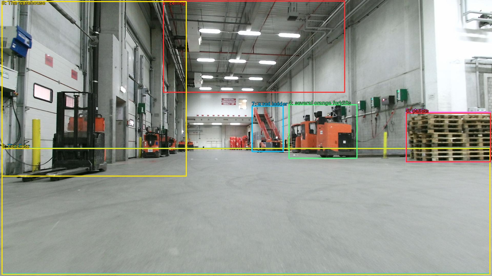
Celoten opis Florence in izvorni podatki
The image shows the interior of a large warehouse with a high ceiling and large windows on both sides. The floor is made of concrete and there are several orange forklifts parked in the center of the room. On the right side of the image, there are stacks of wooden pallets on the left side. In the background, there is a red ladder leading up to the entrance of the warehouse. The warehouse appears to be well-lit with natural light coming in from the windows.
Opis, regije in surovi odgovori Florenceqwen3.5:27b-q4_K_M
Q4_K_M · 3.335 s · response_received
Celoten surovi zapis{"objects":[{"id":1,"classification":"fixed","reason":"Structural building element."},{"id":2,"classification":"fixed","reason":"Structural building element."},{"id":3,"classification":"fixed","reason":"Material of structural floor."},{"id":4,"classification":"movable","reason":"Vehicles designed to be driven and repositioned."},{"id":5,"classification":"movable","reason":"Stacks can be moved or rearranged."},{"id":6,"classification":"movable","reason":"Pallets are transport aids easily moved."},{"id":7,"classification":"movable","reason":"Ladders are portable tools."},{"id":8,"classification":"fixed","reason":"The building itself is a structure."}]}qwen3.5:4b-q4_K_M
Q4_K_M · 1.054 s · response_received
Celoten surovi zapis{"objects":[{"id":1,"classification":"fixed","reason":"Structural ceiling element of the building."},{"id":2,"classification":"fixed","reason":"Structural floor element of the building."},{"id":3,"classification":"fixed","reason":"Structural material forming the floor surface."},{"id":4,"classification":"movable","reason":"Forklifts are movable vehicles that can be driven."},{"id":5,"classification":"movable","reason":"Stacks of goods can be moved or repositioned."},{"id":6,"classification":"movable","reason":"Pallets are standard movable cargo units."},{"id":7,"classification":"movable","reason":"A ladder is a movable object that can be carried."},{"id":8,"classification":"fixed","reason":"The warehouse building structure itself is fixed."}]}gemma3:27b-it-q4_K_M
Q4_K_M · 4.969 s · response_received
Celoten surovi zapis{"objects": [{"id": 1, "classification": "fixed", "reason": "Structural part of the building."}, {"id": 2, "classification": "fixed", "reason": "Structural part of the building."}, {"id": 3, "classification": "fixed", "reason": "Part of the floor structure."}, {"id": 4, "classification": "movable", "reason": "Can be driven and repositioned."}, {"id": 5, "classification": "movable", "reason": "Can be rearranged or moved."}, {"id": 6, "classification": "movable", "reason": "Can be moved by forklifts or people."}, {"id": 7, "classification": "movable", "reason": "Can be carried and repositioned."}, {"id": 8, "classification": "fixed", "reason": "The building itself is a fixed structure."}]}| Nabor | Okolje | ID regije | Oznaka Florence | qwen3.5:27b-q4_K_M | qwen3.5:4b-q4_K_M | gemma3:27b-it-q4_K_M | Primerjava |
|---|
| loco | loco-subset-5 | 1 | ceiling | fixed | fixed | fixed | enaki razredi |
| loco | loco-subset-5 | 2 | The floor | fixed | fixed | fixed | enaki razredi |
| loco | loco-subset-5 | 3 | concrete | fixed | fixed | fixed | enaki razredi |
| loco | loco-subset-5 | 4 | several orange forklifts | movable | movable | movable | enaki razredi |
| loco | loco-subset-5 | 5 | stacks | movable | movable | movable | enaki razredi |
| loco | loco-subset-5 | 6 | pallets | movable | movable | movable | enaki razredi |
| loco | loco-subset-5 | 7 | a red ladder | movable | movable | movable | enaki razredi |
| loco | loco-subset-5 | 8 | The warehouse | fixed | fixed | fixed | enaki razredi |
loco-s5-35341
loco / loco-subset-5
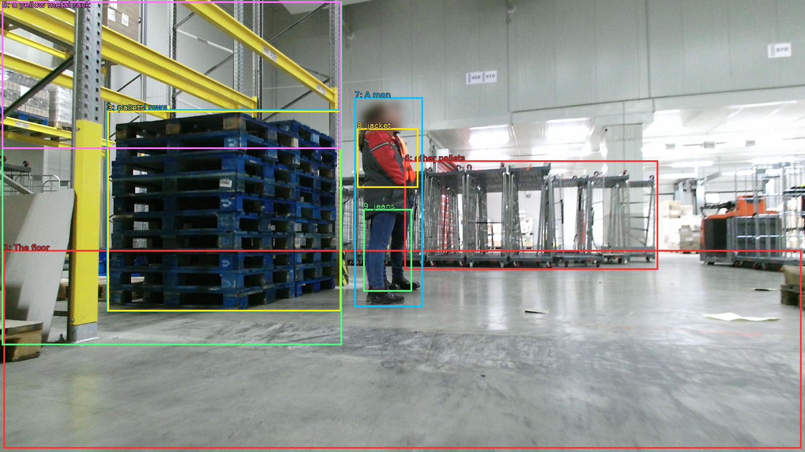
Celoten opis Florence in izvorni podatki
The image shows a large warehouse with a high ceiling and large windows. The floor is made of concrete and there are several rows of blue pallets stacked on top of each other. On the left side of the image, there is a yellow metal rack with several pallets of different sizes and colors. In the background, there are other pallets and machinery. A man wearing a red jacket and blue jeans is walking through the warehouse. He appears to be walking towards the pallets. The image is taken from a low angle, looking down on the warehouse floor.
Opis, regije in surovi odgovori Florenceqwen3.5:27b-q4_K_M
Q4_K_M · 4.040 s · response_received
Celoten surovi zapis{"objects":[{"id":1,"classification":"fixed","reason":"Structural building element forming the ground."},{"id":2,"classification":"uncertain","reason":"Vague label lacks specific object identity."},{"id":3,"classification":"movable","reason":"Pallets are designed for transport and repositioning."},{"id":4,"classification":"uncertain","reason":"No visible evidence of permanent installation or mobility."},{"id":5,"classification":"uncertain","reason":"No visible evidence of permanent installation or mobility."},{"id":6,"classification":"movable","reason":"Pallets are designed for transport and repositioning."},{"id":7,"classification":"movable","reason":"A person can walk and change location."},{"id":8,"classification":"movable","reason":"Clothing is worn and easily removed or moved."},{"id":9,"classification":"movable","reason":"Clothing is worn and easily removed or moved."}]}qwen3.5:4b-q4_K_M
Q4_K_M · 1.140 s · response_received
Celoten surovi zapis{"objects":[{"id":1,"classification":"fixed","reason":"Structural floor element of the building."},{"id":2,"classification":"uncertain","reason":"Abstract description lacks physical instance evidence."},{"id":3,"classification":"movable","reason":"Pallets can be easily carried or pushed."},{"id":4,"classification":"movable","reason":"Metal racks are typically movable industrial equipment."},{"id":5,"classification":"movable","reason":"Metal racks are typically movable industrial equipment."},{"id":6,"classification":"movable","reason":"Pallets can be easily carried or pushed."},{"id":7,"classification":"movable","reason":"A person is inherently movable by definition."},{"id":8,"classification":"movable","reason":"Clothing items can be taken off and moved."},{"id":9,"classification":"movable","reason":"Clothing items can be taken off and moved."}]}gemma3:27b-it-q4_K_M
Q4_K_M · 8.891 s · response_received
Celoten surovi zapis{"objects": [{"id": 1, "classification": "fixed", "reason": "Structural building element."}, {"id": 2, "classification": "movable", "reason": "Pallets can be moved by forklift/person."}, {"id": 3, "classification": "movable", "reason": "Pallets can be moved by forklift/person."}, {"id": 4, "classification": "movable", "reason": "Racks are repositionable in a warehouse."}, {"id": 5, "classification": "movable", "reason": "Racks are repositionable in a warehouse."}, {"id": 6, "classification": "movable", "reason": "Pallets can be moved by forklift/person."}, {"id": 7, "classification": "movable", "reason": "A person is inherently movable."}, {"id": 8, "classification": "movable", "reason": "Clothing is carried or worn."}, {"id": 9, "classification": "movable", "reason": "Clothing is carried or worn."}]}| Nabor | Okolje | ID regije | Oznaka Florence | qwen3.5:27b-q4_K_M | qwen3.5:4b-q4_K_M | gemma3:27b-it-q4_K_M | Primerjava |
|---|
| loco | loco-subset-5 | 1 | The floor | fixed | fixed | fixed | enaki razredi |
| loco | loco-subset-5 | 2 | several rows | uncertain | uncertain | movable | različni razredi |
| loco | loco-subset-5 | 3 | pallets | movable | movable | movable | enaki razredi |
| loco | loco-subset-5 | 4 | a yellow metal rack | uncertain | movable | movable | različni razredi |
| loco | loco-subset-5 | 5 | a yellow metal rack | uncertain | movable | movable | različni razredi |
| loco | loco-subset-5 | 6 | other pallets | movable | movable | movable | enaki razredi |
| loco | loco-subset-5 | 7 | A man | movable | movable | movable | enaki razredi |
| loco | loco-subset-5 | 8 | jacket | movable | movable | movable | enaki razredi |
| loco | loco-subset-5 | 9 | jeans | movable | movable | movable | enaki razredi |
thud_agtea_test50--image-000001
thud_agtea_test50 / agtea
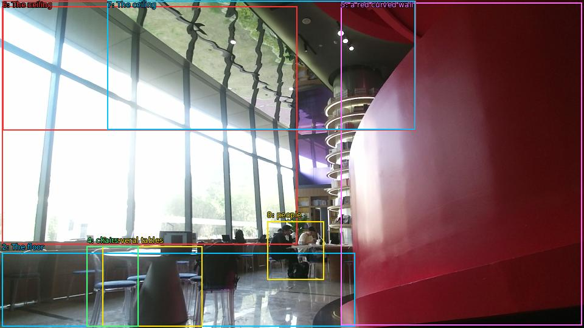
Celoten opis Florence in izvorni podatki
The image shows the interior of a modern restaurant or cafe. The room has a large window on the left side, allowing natural light to enter the space. The floor is made of marble tiles, and there are several tables and chairs scattered around the room. On the right side of the image, there is a red curved wall with a spiral staircase leading up to it. The ceiling is decorated with black and white geometric patterns. In the background, there are people sitting at tables and enjoying their meals. The overall atmosphere of the space is bright and airy.
Opis, regije in surovi odgovori Florenceqwen3.5:27b-q4_K_M
Q4_K_M · 3.343 s · response_received
Celoten surovi zapis{"objects":[{"id":1,"classification":"uncertain","reason":"Room label lacks specific structural evidence."},{"id":2,"classification":"fixed","reason":"Structural building element."},{"id":3,"classification":"movable","reason":"Tables can be repositioned in normal use."},{"id":4,"classification":"movable","reason":"Chairs can be pushed or moved easily."},{"id":5,"classification":"fixed","reason":"Wall is a structural building element."},{"id":6,"classification":"fixed","reason":"Structural part of the building."},{"id":7,"classification":"fixed","reason":"Structural part of the building."},{"id":8,"classification":"movable","reason":"People can move freely between visits."}]}qwen3.5:4b-q4_K_M
Q4_K_M · 1.020 s · response_received
Celoten surovi zapis{"objects":[{"id":1,"classification":"uncertain","reason":"Room boundaries are structural but not explicitly fixed."},{"id":2,"classification":"fixed","reason":"Marble tiles are a structural building element."},{"id":3,"classification":"movable","reason":"Tables can be carried or pushed in normal use."},{"id":4,"classification":"movable","reason":"Chairs can be carried or pushed in normal use."},{"id":5,"classification":"fixed","reason":"A wall is a structural building element."},{"id":6,"classification":"fixed","reason":"The ceiling is a structural building element."},{"id":7,"classification":"fixed","reason":"The ceiling is a structural building element."},{"id":8,"classification":"movable","reason":"People can move and reposition themselves freely."}]}gemma3:27b-it-q4_K_M
Q4_K_M · 5.000 s · response_received
Celoten surovi zapis{"objects": [{"id": 1, "classification": "fixed", "reason": "Represents the overall structure of the space."}, {"id": 2, "classification": "fixed", "reason": "Structural element of the building."}, {"id": 3, "classification": "movable", "reason": "Tables are repositioned during normal use."}, {"id": 4, "classification": "movable", "reason": "Chairs are repositioned during normal use."}, {"id": 5, "classification": "fixed", "reason": "Structural wall, requires dismantling to move."}, {"id": 6, "classification": "fixed", "reason": "Structural part of the building."}, {"id": 7, "classification": "fixed", "reason": "Structural part of the building."}, {"id": 8, "classification": "movable", "reason": "People are not fixed installations."}]}| Nabor | Okolje | ID regije | Oznaka Florence | qwen3.5:27b-q4_K_M | qwen3.5:4b-q4_K_M | gemma3:27b-it-q4_K_M | Primerjava |
|---|
| thud_agtea_test50 | agtea | 1 | The room | uncertain | uncertain | fixed | različni razredi |
| thud_agtea_test50 | agtea | 2 | The floor | fixed | fixed | fixed | enaki razredi |
| thud_agtea_test50 | agtea | 3 | several tables | movable | movable | movable | enaki razredi |
| thud_agtea_test50 | agtea | 4 | chairs | movable | movable | movable | enaki razredi |
| thud_agtea_test50 | agtea | 5 | a red curved wall | fixed | fixed | fixed | enaki razredi |
| thud_agtea_test50 | agtea | 6 | The ceiling | fixed | fixed | fixed | enaki razredi |
| thud_agtea_test50 | agtea | 7 | The ceiling | fixed | fixed | fixed | enaki razredi |
| thud_agtea_test50 | agtea | 8 | people | movable | movable | movable | enaki razredi |
thud_agtea_test50--image-000002
thud_agtea_test50 / agtea
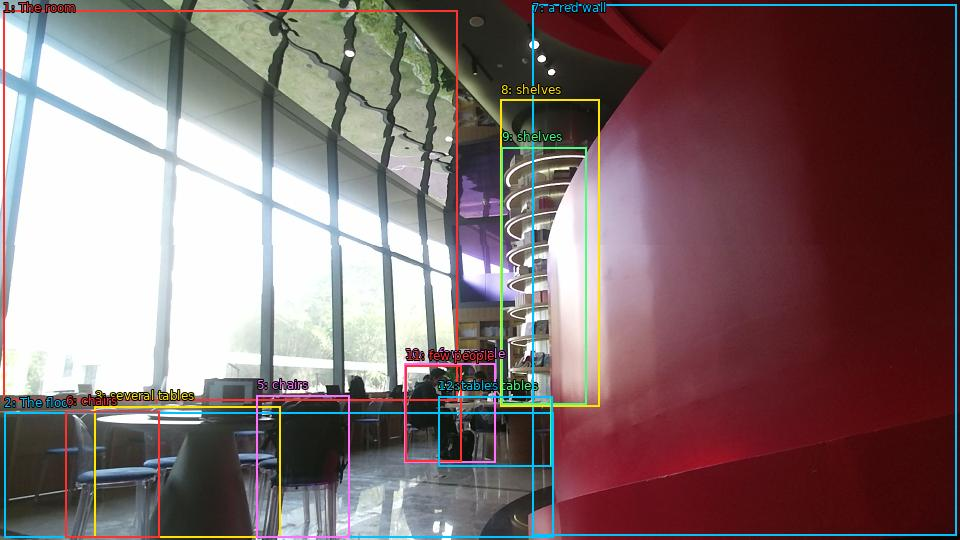
Celoten opis Florence in izvorni podatki
The image shows the interior of a modern restaurant or cafe. The room has a large window on the left side, allowing natural light to enter the space. The floor is made of marble tiles, and there are several tables and chairs scattered throughout the room. On the right side of the image, there is a red wall with a curved design. In the background, there are shelves with various items on them, and a few people can be seen sitting at the tables. The overall atmosphere of the space is bright and airy.
Opis, regije in surovi odgovori Florenceqwen3.5:27b-q4_K_M
Q4_K_M · 5.147 s · response_received
Celoten surovi zapis{"objects":[{"id":1,"classification":"uncertain","reason":"Room label lacks specific structural evidence."},{"id":2,"classification":"fixed","reason":"Structural building element forming the ground."},{"id":3,"classification":"movable","reason":"Tables can be pushed or repositioned in normal use."},{"id":4,"classification":"movable","reason":"Tables can be pushed or repositioned in normal use."},{"id":5,"classification":"movable","reason":"Chairs can be easily moved by people."},{"id":6,"classification":"movable","reason":"Chairs can be easily moved by people."},{"id":7,"classification":"fixed","reason":"Wall is a structural building element."},{"id":8,"classification":"uncertain","reason":"Shelves lack visible evidence of permanent installation."},{"id":9,"classification":"uncertain","reason":"Shelves lack visible evidence of permanent installation."},{"id":10,"classification":"movable","reason":"People can move freely between visits."},{"id":11,"classification":"movable","reason":"People can move freely between visits."},{"id":12,"classification":"movable","reason":"Tables can be pushed or repositioned in normal use."}]}qwen3.5:4b-q4_K_M
Q4_K_M · 1.536 s · response_received
Celoten surovi zapis{"objects":[{"id":1,"classification":"fixed","reason":"Structural element defining the room boundaries."},{"id":2,"classification":"fixed","reason":"Structural building element supporting the space."},{"id":3,"classification":"movable","reason":"Tables can be pushed or repositioned in normal use."},{"id":4,"classification":"movable","reason":"Tables can be pushed or repositioned in normal use."},{"id":5,"classification":"movable","reason":"Chairs can be easily moved by people."},{"id":6,"classification":"movable","reason":"Chairs can be easily moved by people."},{"id":7,"classification":"fixed","reason":"Structural building element forming part of the wall."},{"id":8,"classification":"uncertain","reason":"Shelves may be fixed or movable without clear evidence."},{"id":9,"classification":"uncertain","reason":"Shelves may be fixed or movable without clear evidence."},{"id":10,"classification":"movable","reason":"People can move themselves to different locations."},{"id":11,"classification":"movable","reason":"People can move themselves to different locations."},{"id":12,"classification":"movable","reason":"Tables can be pushed or repositioned in normal use."}]
}gemma3:27b-it-q4_K_M
Q4_K_M · 9.148 s · response_received
Celoten surovi zapis{"objects": [{"id": 1, "classification": "fixed", "reason": "Represents the overall structure of the space."}, {"id": 2, "classification": "fixed", "reason": "Structural building element."}, {"id": 3, "classification": "movable", "reason": "Can be moved and repositioned."}, {"id": 4, "classification": "movable", "reason": "Can be moved and repositioned."}, {"id": 5, "classification": "movable", "reason": "People can move them."}, {"id": 6, "classification": "movable", "reason": "People can move them."}, {"id": 7, "classification": "fixed", "reason": "Structural building element."}, {"id": 8, "classification": "uncertain", "reason": "Installation is not explicitly shown."}, {"id": 9, "classification": "uncertain", "reason": "Installation is not explicitly shown."}, {"id": 10, "classification": "movable", "reason": "People move themselves."}, {"id": 11, "classification": "movable", "reason": "People move themselves."}, {"id": 12, "classification": "movable", "reason": "Can be moved and repositioned."}]}| Nabor | Okolje | ID regije | Oznaka Florence | qwen3.5:27b-q4_K_M | qwen3.5:4b-q4_K_M | gemma3:27b-it-q4_K_M | Primerjava |
|---|
| thud_agtea_test50 | agtea | 1 | The room | uncertain | fixed | fixed | različni razredi |
| thud_agtea_test50 | agtea | 2 | The floor | fixed | fixed | fixed | enaki razredi |
| thud_agtea_test50 | agtea | 3 | several tables | movable | movable | movable | enaki razredi |
| thud_agtea_test50 | agtea | 4 | several tables | movable | movable | movable | enaki razredi |
| thud_agtea_test50 | agtea | 5 | chairs | movable | movable | movable | enaki razredi |
| thud_agtea_test50 | agtea | 6 | chairs | movable | movable | movable | enaki razredi |
| thud_agtea_test50 | agtea | 7 | a red wall | fixed | fixed | fixed | enaki razredi |
| thud_agtea_test50 | agtea | 8 | shelves | uncertain | uncertain | uncertain | enaki razredi |
| thud_agtea_test50 | agtea | 9 | shelves | uncertain | uncertain | uncertain | enaki razredi |
| thud_agtea_test50 | agtea | 10 | a few people | movable | movable | movable | enaki razredi |
| thud_agtea_test50 | agtea | 11 | few people | movable | movable | movable | enaki razredi |
| thud_agtea_test50 | agtea | 12 | tables | movable | movable | movable | enaki razredi |
thud_agtea_test50--image-000003
thud_agtea_test50 / agtea

Celoten opis Florence in izvorni podatki
The image shows the interior of a modern restaurant or cafe. The room has large windows that let in natural light and offer a view of the trees and buildings outside. The floor is made of marble tiles and there are several tables and chairs scattered throughout the space. On the right side of the image, there is a tall red pillar with a spiral staircase leading up to it. The ceiling is decorated with black and white geometric patterns. There are a few people sitting at the tables and working on their laptops. The overall atmosphere of the space is bright and airy.
Opis, regije in surovi odgovori Florenceqwen3.5:27b-q4_K_M
Q4_K_M · 6.957 s · response_received
Celoten surovi zapis{"objects":[{"id":1,"classification":"uncertain","reason":"The room is a space, not a distinct object."},{"id":2,"classification":"fixed","reason":"Windows are installed structural building elements."},{"id":3,"classification":"uncertain","reason":"A view is external scenery, not a physical object."},{"id":4,"classification":"fixed","reason":"Floor is a structural building element."},{"id":5,"classification":"movable","reason":"Tables can be pushed or repositioned in normal use."},{"id":6,"classification":"movable","reason":"Tables can be pushed or repositioned in normal use."},{"id":7,"classification":"movable","reason":"Chairs can be pushed or moved by people."},{"id":8,"classification":"movable","reason":"Chairs can be pushed or moved by people."},{"id":9,"classification":"fixed","reason":"Pillars are structural building elements supporting the structure."},{"id":10,"classification":"fixed","reason":"Ceiling is a structural building element."},{"id":11,"classification":"fixed","reason":"Ceiling is a structural building element."},{"id":12,"classification":"movable","reason":"People can move freely and change location."},{"id":13,"classification":"movable","reason":"People can move freely and change location."},{"id":14,"classification":"movable","reason":"Tables can be pushed or repositioned in normal use."},{"id":15,"classification":"movable","reason":"Tables can be pushed or repositioned in normal use."},{"id":16,"classification":"movable","reason":"Laptops are portable devices easily carried by people."}]}qwen3.5:4b-q4_K_M
Q4_K_M · 2.008 s · response_received
Celoten surovi zapis{"objects":[{"id":1,"classification":"uncertain","reason":"Room boundaries are structural but not explicitly defined as fixed."},{"id":2,"classification":"fixed","reason":"Windows are installed room elements, not movable."},{"id":3,"classification":"uncertain","reason":"View is an abstract concept, not a physical object."},{"id":4,"classification":"fixed","reason":"Floor is a structural building element."},{"id":5,"classification":"movable","reason":"Tables can be pushed or repositioned in normal use."},{"id":6,"classification":"movable","reason":"Tables can be pushed or repositioned in normal use."},{"id":7,"classification":"movable","reason":"Chairs can be pushed or repositioned in normal use."},{"id":8,"classification":"movable","reason":"Chairs can be pushed or repositioned in normal use."},{"id":9,"classification":"fixed","reason":"Pillar is a structural building element."},{"id":10,"classification":"fixed","reason":"Ceiling is a structural building element."},{"id":11,"classification":"fixed","reason":"Ceiling is a structural building element."},{"id":12,"classification":"movable","reason":"People can move freely and change position."},{"id":13,"classification":"movable","reason":"People can move freely and change position."},{"id":14,"classification":"movable","reason":"Tables can be pushed or repositioned in normal use."},{"id":15,"classification":"movable","reason":"Tables can be pushed or repositioned in normal use."},{"id":16,"classification":"movable","reason":"Laptops are portable objects that can be carried."}]}gemma3:27b-it-q4_K_M
Q4_K_M · 11.900 s · response_received
Celoten surovi zapis{"objects": [{"id": 1, "classification": "fixed", "reason": "Represents the overall structure of the space."}, {"id": 2, "classification": "fixed", "reason": "Installed structural elements of the building."}, {"id": 3, "classification": "uncertain", "reason": "A view is not a physical object."}, {"id": 4, "classification": "fixed", "reason": "Structural part of the building."}, {"id": 5, "classification": "movable", "reason": "Tables can be moved in normal use."}, {"id": 6, "classification": "movable", "reason": "Tables can be moved in normal use."}, {"id": 7, "classification": "movable", "reason": "Chairs are easily repositioned."}, {"id": 8, "classification": "movable", "reason": "Chairs are easily repositioned."}, {"id": 9, "classification": "fixed", "reason": "Structural pillar, requires dismantling to move."}, {"id": 10, "classification": "fixed", "reason": "Structural part of the building."}, {"id": 11, "classification": "fixed", "reason": "Structural part of the building."}, {"id": 12, "classification": "movable", "reason": "People are mobile by definition."}, {"id": 13, "classification": "movable", "reason": "People are mobile by definition."}, {"id": 14, "classification": "movable", "reason": "Tables can be moved in normal use."}, {"id": 15, "classification": "movable", "reason": "Tables can be moved in normal use."}, {"id": 16, "classification": "movable", "reason": "Laptops are carried and repositioned."}]}| Nabor | Okolje | ID regije | Oznaka Florence | qwen3.5:27b-q4_K_M | qwen3.5:4b-q4_K_M | gemma3:27b-it-q4_K_M | Primerjava |
|---|
| thud_agtea_test50 | agtea | 1 | The room | uncertain | uncertain | fixed | različni razredi |
| thud_agtea_test50 | agtea | 2 | windows | fixed | fixed | fixed | enaki razredi |
| thud_agtea_test50 | agtea | 3 | view | uncertain | uncertain | uncertain | enaki razredi |
| thud_agtea_test50 | agtea | 4 | The floor | fixed | fixed | fixed | enaki razredi |
| thud_agtea_test50 | agtea | 5 | several tables | movable | movable | movable | enaki razredi |
| thud_agtea_test50 | agtea | 6 | several tables | movable | movable | movable | enaki razredi |
| thud_agtea_test50 | agtea | 7 | chairs | movable | movable | movable | enaki razredi |
| thud_agtea_test50 | agtea | 8 | chairs | movable | movable | movable | enaki razredi |
| thud_agtea_test50 | agtea | 9 | a tall red pillar | fixed | fixed | fixed | enaki razredi |
| thud_agtea_test50 | agtea | 10 | The ceiling | fixed | fixed | fixed | enaki razredi |
| thud_agtea_test50 | agtea | 11 | The ceiling | fixed | fixed | fixed | enaki razredi |
| thud_agtea_test50 | agtea | 12 | a few people | movable | movable | movable | enaki razredi |
| thud_agtea_test50 | agtea | 13 | a few people | movable | movable | movable | enaki razredi |
| thud_agtea_test50 | agtea | 14 | tables | movable | movable | movable | enaki razredi |
| thud_agtea_test50 | agtea | 15 | tables | movable | movable | movable | enaki razredi |
| thud_agtea_test50 | agtea | 16 | their laptops | movable | movable | movable | enaki razredi |
thud_agtea_test50--image-000004
thud_agtea_test50 / agtea

Celoten opis Florence in izvorni podatki
The image shows the interior of a modern restaurant or cafe. The room has large windows that let in natural light and offer a view of the trees and buildings outside. The floor is made of marble tiles and there are several tables and chairs scattered throughout the space. On the right side of the image, there is a tall spiral staircase with colorful lights hanging from the ceiling. In the center of the room, there are a few people sitting at the tables and working on their laptops. The overall atmosphere of the space is bright and airy.
Opis, regije in surovi odgovori Florenceqwen3.5:27b-q4_K_M
Q4_K_M · 5.768 s · response_received
Celoten surovi zapis{"objects":[{"id":1,"classification":"uncertain","reason":"The room is a space, not a single object."},{"id":2,"classification":"fixed","reason":"Windows are installed structural building elements."},{"id":3,"classification":"uncertain","reason":"A view is external scenery, not a physical object."},{"id":4,"classification":"uncertain","reason":"A view is external scenery, not a physical object."},{"id":5,"classification":"fixed","reason":"The floor is a structural building element."},{"id":6,"classification":"movable","reason":"Tables can be pushed or repositioned in normal use."},{"id":7,"classification":"movable","reason":"Tables can be pushed or repositioned in normal use."},{"id":8,"classification":"movable","reason":"Chairs can be pushed or moved by people."},{"id":9,"classification":"fixed","reason":"Staircases are permanent structural building installations."},{"id":10,"classification":"movable","reason":"People can move freely and change location."},{"id":11,"classification":"movable","reason":"People can move freely and change location."},{"id":12,"classification":"movable","reason":"Tables can be pushed or repositioned in normal use."},{"id":13,"classification":"movable","reason":"Laptops are portable devices easily carried away."}]}qwen3.5:4b-q4_K_M
Q4_K_M · 1.701 s · response_received
Celoten surovi zapis{"objects":[{"id":1,"classification":"uncertain","reason":"Room boundaries are structural but not explicitly fixed elements."},{"id":2,"classification":"fixed","reason":"Windows are installed room elements, not movable."},{"id":3,"classification":"uncertain","reason":"A view is a perspective, not a physical object."},{"id":4,"classification":"uncertain","reason":"A view is a perspective, not a physical object."},{"id":5,"classification":"fixed","reason":"Floor is a structural building element."},{"id":6,"classification":"movable","reason":"Tables can be pushed or repositioned in normal use."},{"id":7,"classification":"movable","reason":"Tables can be pushed or repositioned in normal use."},{"id":8,"classification":"movable","reason":"Chairs can be pushed or repositioned in normal use."},{"id":9,"classification":"fixed","reason":"Staircases are structural building elements, not movable."},{"id":10,"classification":"movable","reason":"People can move and change position freely."},{"id":11,"classification":"movable","reason":"People can move and change position freely."},{"id":12,"classification":"movable","reason":"Tables can be pushed or repositioned in normal use."},{"id":13,"classification":"movable","reason":"Laptops are portable objects that can be carried."}]}gemma3:27b-it-q4_K_M
Q4_K_M · 10.230 s · response_received
Celoten surovi zapis{"objects": [{"id": 1, "classification": "fixed", "reason": "Represents the building structure itself."}, {"id": 2, "classification": "fixed", "reason": "Installed structural elements of the building."}, {"id": 3, "classification": "uncertain", "reason": "A view is not a physical object."}, {"id": 4, "classification": "uncertain", "reason": "A view is not a physical object."}, {"id": 5, "classification": "fixed", "reason": "Structural part of the building."}, {"id": 6, "classification": "movable", "reason": "Tables are typically repositioned."}, {"id": 7, "classification": "movable", "reason": "Tables are typically repositioned."}, {"id": 8, "classification": "movable", "reason": "Chairs can be moved easily."}, {"id": 9, "classification": "fixed", "reason": "Staircase is a structural building element."}, {"id": 10, "classification": "movable", "reason": "People are mobile."}, {"id": 11, "classification": "movable", "reason": "People are mobile."}, {"id": 12, "classification": "movable", "reason": "Tables are typically repositioned."}, {"id": 13, "classification": "movable", "reason": "Laptops are carried."}]}| Nabor | Okolje | ID regije | Oznaka Florence | qwen3.5:27b-q4_K_M | qwen3.5:4b-q4_K_M | gemma3:27b-it-q4_K_M | Primerjava |
|---|
| thud_agtea_test50 | agtea | 1 | The room | uncertain | uncertain | fixed | različni razredi |
| thud_agtea_test50 | agtea | 2 | windows | fixed | fixed | fixed | enaki razredi |
| thud_agtea_test50 | agtea | 3 | a view | uncertain | uncertain | uncertain | enaki razredi |
| thud_agtea_test50 | agtea | 4 | view | uncertain | uncertain | uncertain | enaki razredi |
| thud_agtea_test50 | agtea | 5 | The floor | fixed | fixed | fixed | enaki razredi |
| thud_agtea_test50 | agtea | 6 | several tables | movable | movable | movable | enaki razredi |
| thud_agtea_test50 | agtea | 7 | several tables | movable | movable | movable | enaki razredi |
| thud_agtea_test50 | agtea | 8 | chairs | movable | movable | movable | enaki razredi |
| thud_agtea_test50 | agtea | 9 | a tall spiral staircase | fixed | fixed | fixed | enaki razredi |
| thud_agtea_test50 | agtea | 10 | a few people | movable | movable | movable | enaki razredi |
| thud_agtea_test50 | agtea | 11 | a few people | movable | movable | movable | enaki razredi |
| thud_agtea_test50 | agtea | 12 | the tables | movable | movable | movable | enaki razredi |
| thud_agtea_test50 | agtea | 13 | their laptops | movable | movable | movable | enaki razredi |
thud_agtea_test50--image-000005
thud_agtea_test50 / agtea
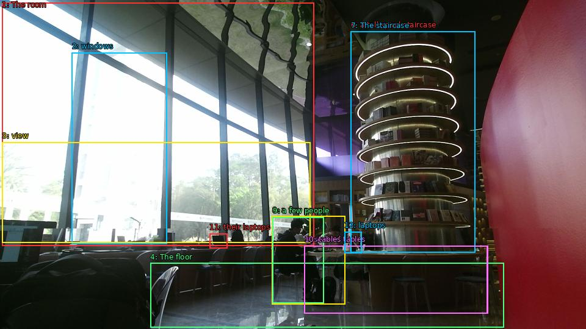
Celoten opis Florence in izvorni podatki
The image shows the interior of a modern restaurant or cafe. The room has large windows that let in natural light and offer a view of the trees and buildings outside. The floor is made of marble tiles and there are several tables and chairs scattered throughout the space. On the right side of the image, there is a tall spiral staircase with multiple levels. The staircase is decorated with colorful lights and has a modern design. There are a few people sitting at the tables and working on their laptops. The overall atmosphere of the space is bright and airy.
Opis, regije in surovi odgovori Florenceqwen3.5:27b-q4_K_M
Q4_K_M · 5.009 s · response_received
Celoten surovi zapis{"objects":[{"id":1,"classification":"uncertain","reason":"Generic room label lacks specific structural evidence."},{"id":2,"classification":"fixed","reason":"Windows are installed structural building elements."},{"id":3,"classification":"uncertain","reason":"View is not a physical object in the map."},{"id":4,"classification":"fixed","reason":"Floor is a structural building element."},{"id":5,"classification":"movable","reason":"Tables can be pushed or repositioned normally."},{"id":6,"classification":"fixed","reason":"Staircase is a permanent structural installation."},{"id":7,"classification":"fixed","reason":"Staircase is a permanent structural installation."},{"id":8,"classification":"movable","reason":"People move freely and change positions."},{"id":9,"classification":"movable","reason":"People move freely and change positions."},{"id":10,"classification":"movable","reason":"Tables can be pushed or repositioned normally."},{"id":11,"classification":"movable","reason":"Laptops are portable devices carried by people."},{"id":12,"classification":"movable","reason":"Laptops are portable devices carried by people."}]}qwen3.5:4b-q4_K_M
Q4_K_M · 1.508 s · response_received
Celoten surovi zapis{"objects":[{"id":1,"classification":"uncertain","reason":"Room boundaries are structural but not explicitly fixed."},{"id":2,"classification":"fixed","reason":"Windows are installed room elements, not movable."},{"id":3,"classification":"uncertain","reason":"View is a perspective, not a physical object."},{"id":4,"classification":"fixed","reason":"Floor is a structural building element."},{"id":5,"classification":"movable","reason":"Tables can be pushed or repositioned in normal use."},{"id":6,"classification":"fixed","reason":"Spiral staircase is a permanent structural installation."},{"id":7,"classification":"fixed","reason":"Staircase is a permanent structural building element."},{"id":8,"classification":"movable","reason":"People can move freely and change position."},{"id":9,"classification":"movable","reason":"People can move freely and change position."},{"id":10,"classification":"movable","reason":"Tables can be pushed or repositioned in normal use."},{"id":11,"classification":"movable","reason":"Laptops are portable objects that can be carried."},{"id":12,"classification":"movable","reason":"Laptops are portable objects that can be carried."}]}gemma3:27b-it-q4_K_M
Q4_K_M · 7.029 s · response_received
Celoten surovi zapis{"objects": [{"id": 1, "classification": "fixed", "reason": "Represents the overall structure of the building."}, {"id": 2, "classification": "fixed", "reason": "Installed structural elements of the building."}, {"id": 3, "classification": "uncertain", "reason": "A view is not a physical object."}, {"id": 4, "classification": "fixed", "reason": "Structural part of the building."}, {"id": 5, "classification": "movable", "reason": "Tables are typically repositioned."}, {"id": 6, "classification": "fixed", "reason": "Staircase is a structural building element."}, {"id": 7, "classification": "fixed", "reason": "Structural part of the building."}, {"id": 8, "classification": "movable", "reason": "People can move around freely."}, {"id": 9, "classification": "movable", "reason": "People can move around freely."}, {"id": 10, "classification": "movable", "reason": "Tables are typically repositioned."}, {"id": 11, "classification": "movable", "reason": "Laptops are carried and used on tables."}, {"id": 12, "classification": "movable", "reason": "Laptops are carried and used on tables."}]}| Nabor | Okolje | ID regije | Oznaka Florence | qwen3.5:27b-q4_K_M | qwen3.5:4b-q4_K_M | gemma3:27b-it-q4_K_M | Primerjava |
|---|
| thud_agtea_test50 | agtea | 1 | The room | uncertain | uncertain | fixed | različni razredi |
| thud_agtea_test50 | agtea | 2 | windows | fixed | fixed | fixed | enaki razredi |
| thud_agtea_test50 | agtea | 3 | view | uncertain | uncertain | uncertain | enaki razredi |
| thud_agtea_test50 | agtea | 4 | The floor | fixed | fixed | fixed | enaki razredi |
| thud_agtea_test50 | agtea | 5 | several tables | movable | movable | movable | enaki razredi |
| thud_agtea_test50 | agtea | 6 | a tall spiral staircase | fixed | fixed | fixed | enaki razredi |
| thud_agtea_test50 | agtea | 7 | The staircase | fixed | fixed | fixed | enaki razredi |
| thud_agtea_test50 | agtea | 8 | a few people | movable | movable | movable | enaki razredi |
| thud_agtea_test50 | agtea | 9 | a few people | movable | movable | movable | enaki razredi |
| thud_agtea_test50 | agtea | 10 | tables | movable | movable | movable | enaki razredi |
| thud_agtea_test50 | agtea | 11 | their laptops | movable | movable | movable | enaki razredi |
| thud_agtea_test50 | agtea | 12 | laptops | movable | movable | movable | enaki razredi |
thud_agtea_test50--image-000006
thud_agtea_test50 / agtea

Celoten opis Florence in izvorni podatki
The image shows the interior of a modern library with a large window on the left side. The window offers a view of the trees and buildings outside. On the right side of the image, there is a tall spiral staircase with bookshelves on both sides. The staircase is made of metal and has multiple levels, with the top level being the largest and the bottom level being smaller. There are several tables and chairs arranged around the staircase, and a few people can be seen sitting at the tables. The floor is tiled, and there are a few plants scattered around the space. The overall atmosphere of the space is bright and airy.
Opis, regije in surovi odgovori Florenceqwen3.5:27b-q4_K_M
Q4_K_M · 7.240 s · response_received
Celoten surovi zapis{"objects":[{"id":1,"classification":"fixed","reason":"Window is an installed room element."},{"id":2,"classification":"fixed","reason":"Staircase is a structural building element."},{"id":3,"classification":"fixed","reason":"Staircase is a structural building element."},{"id":4,"classification":"fixed","reason":"Staircase is a structural building element."},{"id":5,"classification":"movable","reason":"Tables can be pushed or repositioned."},{"id":6,"classification":"movable","reason":"Chairs can be pushed or moved."},{"id":7,"classification":"movable","reason":"Chairs can be pushed or moved."},{"id":8,"classification":"movable","reason":"Chairs can be pushed or moved."},{"id":9,"classification":"movable","reason":"Chairs can be pushed or moved."},{"id":10,"classification":"movable","reason":"Chairs can be pushed or moved."},{"id":11,"classification":"movable","reason":"Chairs can be pushed or moved."},{"id":12,"classification":"movable","reason":"Chairs can be pushed or moved."},{"id":13,"classification":"movable","reason":"People move freely between visits."},{"id":14,"classification":"movable","reason":"People move freely between visits."},{"id":15,"classification":"movable","reason":"People move freely between visits."},{"id":16,"classification":"movable","reason":"Tables can be pushed or repositioned."},{"id":17,"classification":"fixed","reason":"Floor is a structural building element."},{"id":18,"classification":"movable","reason":"Plants are typically potted and movable."}]}qwen3.5:4b-q4_K_M
Q4_K_M · 2.222 s · response_received
Celoten surovi zapis{"objects":[{"id":1,"classification":"fixed","reason":"Window is a structural building element."},{"id":2,"classification":"movable","reason":"Staircase can be dismantled and repositioned."},{"id":3,"classification":"movable","reason":"Staircase can be dismantled and repositioned."},{"id":4,"classification":"movable","reason":"Staircase can be dismantled and repositioned."},{"id":5,"classification":"movable","reason":"Tables can be pushed or repositioned easily."},{"id":6,"classification":"movable","reason":"Chairs can be pushed or repositioned easily."},{"id":7,"classification":"movable","reason":"Chairs can be pushed or repositioned easily."},{"id":8,"classification":"movable","reason":"Chairs can be pushed or repositioned easily."},{"id":9,"classification":"movable","reason":"Chairs can be pushed or repositioned easily."},{"id":10,"classification":"movable","reason":"Chairs can be pushed or repositioned easily."},{"id":11,"classification":"movable","reason":"Chairs can be pushed or repositioned easily."},{"id":12,"classification":"movable","reason":"Chairs can be pushed or repositioned easily."},{"id":13,"classification":"uncertain","reason":"People move frequently; position is unreliable."},{"id":14,"classification":"uncertain","reason":"People move frequently; position is unreliable."},{"id":15,"classification":"uncertain","reason":"People move frequently; position is unreliable."},{"id":16,"classification":"movable","reason":"Tables can be pushed or repositioned easily."},{"id":17,"classification":"fixed","reason":"Floor is a structural building element."},{"id":18,"classification":"movable","reason":"Plants can be carried and repositioned easily."}]}gemma3:27b-it-q4_K_M
Q4_K_M · 11.716 s · response_received
Celoten surovi zapis{"objects": [{"id": 1, "classification": "fixed", "reason": "Installed room element; opening is not relocation."}, {"id": 2, "classification": "fixed", "reason": "Integrated structural component of the building."}, {"id": 3, "classification": "fixed", "reason": "Integrated structural component of the building."}, {"id": 4, "classification": "fixed", "reason": "Integrated structural component of the building."}, {"id": 5, "classification": "movable", "reason": "Can be moved/rearranged in normal use."}, {"id": 6, "classification": "movable", "reason": "Can be moved/rearranged in normal use."}, {"id": 7, "classification": "movable", "reason": "Can be moved/rearranged in normal use."}, {"id": 8, "classification": "movable", "reason": "Can be moved/rearranged in normal use."}, {"id": 9, "classification": "movable", "reason": "Can be moved/rearranged in normal use."}, {"id": 10, "classification": "movable", "reason": "Can be moved/rearranged in normal use."}, {"id": 11, "classification": "movable", "reason": "Can be moved/rearranged in normal use."}, {"id": 12, "classification": "movable", "reason": "Can be moved/rearranged in normal use."}, {"id": 13, "classification": "movable", "reason": "People are inherently movable."}, {"id": 14, "classification": "movable", "reason": "People are inherently movable."}, {"id": 15, "classification": "movable", "reason": "People are inherently movable."}, {"id": 16, "classification": "movable", "reason": "Can be moved/rearranged in normal use."}, {"id": 17, "classification": "fixed", "reason": "Structural building element."}, {"id": 18, "classification": "movable", "reason": "Plants in pots can be repositioned."}]}| Nabor | Okolje | ID regije | Oznaka Florence | qwen3.5:27b-q4_K_M | qwen3.5:4b-q4_K_M | gemma3:27b-it-q4_K_M | Primerjava |
|---|
| thud_agtea_test50 | agtea | 1 | The window | fixed | fixed | fixed | enaki razredi |
| thud_agtea_test50 | agtea | 2 | a tall spiral staircase | fixed | movable | fixed | različni razredi |
| thud_agtea_test50 | agtea | 3 | The staircase | fixed | movable | fixed | različni razredi |
| thud_agtea_test50 | agtea | 4 | The staircase | fixed | movable | fixed | različni razredi |
| thud_agtea_test50 | agtea | 5 | several tables | movable | movable | movable | enaki razredi |
| thud_agtea_test50 | agtea | 6 | chairs | movable | movable | movable | enaki razredi |
| thud_agtea_test50 | agtea | 7 | chairs | movable | movable | movable | enaki razredi |
| thud_agtea_test50 | agtea | 8 | chairs | movable | movable | movable | enaki razredi |
| thud_agtea_test50 | agtea | 9 | chairs | movable | movable | movable | enaki razredi |
| thud_agtea_test50 | agtea | 10 | chairs | movable | movable | movable | enaki razredi |
| thud_agtea_test50 | agtea | 11 | chairs | movable | movable | movable | enaki razredi |
| thud_agtea_test50 | agtea | 12 | chairs | movable | movable | movable | enaki razredi |
| thud_agtea_test50 | agtea | 13 | a few people | movable | uncertain | movable | različni razredi |
| thud_agtea_test50 | agtea | 14 | a few people | movable | uncertain | movable | različni razredi |
| thud_agtea_test50 | agtea | 15 | few people | movable | uncertain | movable | različni razredi |
| thud_agtea_test50 | agtea | 16 | tables | movable | movable | movable | enaki razredi |
| thud_agtea_test50 | agtea | 17 | The floor | fixed | fixed | fixed | enaki razredi |
| thud_agtea_test50 | agtea | 18 | few plants | movable | movable | movable | enaki razredi |
thud_agtea_test50--image-000007
thud_agtea_test50 / agtea

Celoten opis Florence in izvorni podatki
The image shows the interior of a modern library with a large window on the left side. The window offers a view of trees and greenery outside. On the right side of the image, there is a tall spiral staircase made of bookshelves. The staircase is made of metal and has multiple levels, with the top level being the largest and the bottom level being smaller. There are several tables and chairs arranged around the staircase, and a few people are sitting at the tables, working on their laptops. The floor is tiled, and there are a few plants scattered around the space. The overall atmosphere of the library is bright and airy.
Opis, regije in surovi odgovori Florenceqwen3.5:27b-q4_K_M
Q4_K_M · 8.193 s · response_received
Celoten surovi zapis{"objects":[{"id":1,"classification":"fixed","reason":"Window is a structural building element."},{"id":2,"classification":"fixed","reason":"Window is a structural building element."},{"id":3,"classification":"uncertain","reason":"Staircase installation evidence not visible."},{"id":4,"classification":"uncertain","reason":"Staircase installation evidence not visible."},{"id":5,"classification":"uncertain","reason":"Staircase installation evidence not visible."},{"id":6,"classification":"movable","reason":"Tables can be pushed or repositioned."},{"id":7,"classification":"movable","reason":"Chairs can be pushed or repositioned."},{"id":8,"classification":"movable","reason":"Chairs can be pushed or repositioned."},{"id":9,"classification":"movable","reason":"Chairs can be pushed or repositioned."},{"id":10,"classification":"movable","reason":"Chairs can be pushed or repositioned."},{"id":11,"classification":"movable","reason":"Chairs can be pushed or repositioned."},{"id":12,"classification":"movable","reason":"Chairs can be pushed or repositioned."},{"id":13,"classification":"movable","reason":"Chairs can be pushed or repositioned."},{"id":14,"classification":"movable","reason":"People move freely between visits."},{"id":15,"classification":"movable","reason":"People move freely between visits."},{"id":16,"classification":"movable","reason":"Tables can be pushed or repositioned."},{"id":17,"classification":"movable","reason":"Laptops are portable electronic devices."},{"id":18,"classification":"movable","reason":"Laptops are portable electronic devices."},{"id":19,"classification":"fixed","reason":"Floor is a structural building element."},{"id":20,"classification":"movable","reason":"Plants can be carried or repositioned."}]}qwen3.5:4b-q4_K_M
Q4_K_M · 2.265 s · response_received
Celoten surovi zapis{"objects":[{"id":1,"classification":"fixed","reason":"Structural building element (window)."},{"id":2,"classification":"fixed","reason":"Structural building element (window)."},{"id":3,"classification":"fixed","reason":"Permanent architectural structure."},{"id":4,"classification":"fixed","reason":"Permanent architectural structure."},{"id":5,"classification":"fixed","reason":"Permanent architectural structure."},{"id":6,"classification":"movable","reason":"Tables can be pushed or repositioned."},{"id":7,"classification":"movable","reason":"Chairs can be pushed or repositioned."},{"id":8,"classification":"movable","reason":"Chairs can be pushed or repositioned."},{"id":9,"classification":"movable","reason":"Chairs can be pushed or repositioned."},{"id":10,"classification":"movable","reason":"Chairs can be pushed or repositioned."},{"id":11,"classification":"movable","reason":"Chairs can be pushed or repositioned."},{"id":12,"classification":"movable","reason":"Chairs can be pushed or repositioned."},{"id":13,"classification":"movable","reason":"Chairs can be pushed or repositioned."},{"id":14,"classification":"movable","reason":"People move and are not permanent fixtures."},{"id":15,"classification":"movable","reason":"People move and are not permanent fixtures."},{"id":16,"classification":"movable","reason":"Tables can be pushed or repositioned."},{"id":17,"classification":"movable","reason":"Laptops are portable objects."},{"id":18,"classification":"movable","reason":"Laptops are portable objects."},{"id":19,"classification":"fixed","reason":"Structural building element (floor)."},{"id":20,"classification":"movable","reason":"Plants can be moved or repotted."}]}gemma3:27b-it-q4_K_M
Q4_K_M · 13.261 s · response_received
Celoten surovi zapis{"objects": [{"id": 1, "classification": "fixed", "reason": "Installed room element; opening is not relocation."}, {"id": 2, "classification": "fixed", "reason": "Installed room element; opening is not relocation."}, {"id": 3, "classification": "fixed", "reason": "Integrated structural element of the library."}, {"id": 4, "classification": "fixed", "reason": "Integrated structural element of the library."}, {"id": 5, "classification": "fixed", "reason": "Integrated structural element of the library."}, {"id": 6, "classification": "movable", "reason": "Can be moved and repositioned easily."}, {"id": 7, "classification": "movable", "reason": "People can move them around."}, {"id": 8, "classification": "movable", "reason": "People can move them around."}, {"id": 9, "classification": "movable", "reason": "People can move them around."}, {"id": 10, "classification": "movable", "reason": "People can move them around."}, {"id": 11, "classification": "movable", "reason": "People can move them around."}, {"id": 12, "classification": "movable", "reason": "People can move them around."}, {"id": 13, "classification": "movable", "reason": "People can move them around."}, {"id": 14, "classification": "movable", "reason": "People are inherently movable."}, {"id": 15, "classification": "movable", "reason": "People are inherently movable."}, {"id": 16, "classification": "movable", "reason": "Can be moved and repositioned easily."}, {"id": 17, "classification": "movable", "reason": "Personal belongings carried by people."}, {"id": 18, "classification": "movable", "reason": "Personal belongings carried by people."}, {"id": 19, "classification": "fixed", "reason": "Structural building element."}, {"id": 20, "classification": "movable", "reason": "Can be repositioned within the space."}]}| Nabor | Okolje | ID regije | Oznaka Florence | qwen3.5:27b-q4_K_M | qwen3.5:4b-q4_K_M | gemma3:27b-it-q4_K_M | Primerjava |
|---|
| thud_agtea_test50 | agtea | 1 | The window | fixed | fixed | fixed | enaki razredi |
| thud_agtea_test50 | agtea | 2 | The window | fixed | fixed | fixed | enaki razredi |
| thud_agtea_test50 | agtea | 3 | a tall spiral staircase | uncertain | fixed | fixed | različni razredi |
| thud_agtea_test50 | agtea | 4 | The staircase | uncertain | fixed | fixed | različni razredi |
| thud_agtea_test50 | agtea | 5 | The staircase | uncertain | fixed | fixed | različni razredi |
| thud_agtea_test50 | agtea | 6 | several tables | movable | movable | movable | enaki razredi |
| thud_agtea_test50 | agtea | 7 | chairs | movable | movable | movable | enaki razredi |
| thud_agtea_test50 | agtea | 8 | chairs | movable | movable | movable | enaki razredi |
| thud_agtea_test50 | agtea | 9 | chairs | movable | movable | movable | enaki razredi |
| thud_agtea_test50 | agtea | 10 | chairs | movable | movable | movable | enaki razredi |
| thud_agtea_test50 | agtea | 11 | chairs | movable | movable | movable | enaki razredi |
| thud_agtea_test50 | agtea | 12 | chairs | movable | movable | movable | enaki razredi |
| thud_agtea_test50 | agtea | 13 | chairs | movable | movable | movable | enaki razredi |
| thud_agtea_test50 | agtea | 14 | a few people | movable | movable | movable | enaki razredi |
| thud_agtea_test50 | agtea | 15 | a few people | movable | movable | movable | enaki razredi |
| thud_agtea_test50 | agtea | 16 | the tables | movable | movable | movable | enaki razredi |
| thud_agtea_test50 | agtea | 17 | their laptops | movable | movable | movable | enaki razredi |
| thud_agtea_test50 | agtea | 18 | their laptops | movable | movable | movable | enaki razredi |
| thud_agtea_test50 | agtea | 19 | The floor | fixed | fixed | fixed | enaki razredi |
| thud_agtea_test50 | agtea | 20 | few plants | movable | movable | movable | enaki razredi |
thud_agtea_test50--image-000008
thud_agtea_test50 / agtea
Celoten opis Florence in izvorni podatki
The image shows the interior of a library or study area with large windows that offer a view of the trees and buildings outside. The room is filled with bookshelves on the right side and a desk on the left side. There are several people sitting at the desk, working on their laptops and studying. The floor is made of wood and there are several chairs scattered around the room. The overall atmosphere of the space is cozy and inviting.
Opis, regije in surovi odgovori Florenceqwen3.5:27b-q4_K_M
Q4_K_M · 8.174 s · response_received
Celoten surovi zapis{"objects":[{"id":1,"classification":"fixed","reason":"Windows are installed structural building elements."},{"id":2,"classification":"fixed","reason":"Windows are installed structural building elements."},{"id":3,"classification":"uncertain","reason":"A view is not a physical object."},{"id":4,"classification":"uncertain","reason":"A view is not a physical object."},{"id":5,"classification":"movable","reason":"Trees can grow, move, or be removed."},{"id":6,"classification":"fixed","reason":"The room represents the structural building space."},{"id":7,"classification":"uncertain","reason":"Permanent installation of bookshelves is not established."},{"id":8,"classification":"movable","reason":"Desks are movable unless explicitly installed."},{"id":9,"classification":"movable","reason":"People can move freely between visits."},{"id":10,"classification":"movable","reason":"People can move freely between visits."},{"id":11,"classification":"movable","reason":"People can move freely between visits."},{"id":12,"classification":"movable","reason":"Desks are movable unless explicitly installed."},{"id":13,"classification":"movable","reason":"Laptops are portable electronic devices."},{"id":14,"classification":"fixed","reason":"The floor is a structural building element."},{"id":15,"classification":"movable","reason":"Chairs can be pushed or carried elsewhere."},{"id":16,"classification":"movable","reason":"Chairs can be pushed or carried elsewhere."},{"id":17,"classification":"movable","reason":"Chairs can be pushed or carried elsewhere."},{"id":18,"classification":"movable","reason":"Chairs can be pushed or carried elsewhere."},{"id":19,"classification":"movable","reason":"Chairs can be pushed or carried elsewhere."},{"id":20,"classification":"movable","reason":"Chairs can be pushed or carried elsewhere."}]}qwen3.5:4b-q4_K_M
Q4_K_M · 2.401 s · response_received
Celoten surovi zapis{"objects":[{"id":1,"classification":"fixed","reason":"Windows are structural building elements."},{"id":2,"classification":"fixed","reason":"Windows are structural building elements."},{"id":3,"classification":"uncertain","reason":"Views change with time and weather conditions."},{"id":4,"classification":"uncertain","reason":"Views change with time and weather conditions."},{"id":5,"classification":"movable","reason":"Trees can be moved by cutting or replanting."},{"id":6,"classification":"fixed","reason":"The room is a structural building element."},{"id":7,"classification":"fixed","reason":"Bookshelves are typically permanent installations."},{"id":8,"classification":"movable","reason":"Desks can be pushed or repositioned easily."},{"id":9,"classification":"movable","reason":"People can walk and change position freely."},{"id":10,"classification":"movable","reason":"People can walk and change position freely."},{"id":11,"classification":"movable","reason":"People can walk and change position freely."},{"id":12,"classification":"movable","reason":"Desks can be pushed or repositioned easily."},{"id":13,"classification":"movable","reason":"Laptops are portable electronic devices."},{"id":14,"classification":"fixed","reason":"The floor is a structural building element."},{"id":15,"classification":"movable","reason":"Chairs can be pushed or moved by people."},{"id":16,"classification":"movable","reason":"Chairs can be pushed or moved by people."},{"id":17,"classification":"movable","reason":"Chairs can be pushed or moved by people."},{"id":18,"classification":"movable","reason":"Chairs can be pushed or moved by people."},{"id":19,"classification":"movable","reason":"Chairs can be pushed or moved by people."},{"id":20,"classification":"movable","reason":"Chairs can be pushed or moved by people."}]}gemma3:27b-it-q4_K_M
Q4_K_M · 13.288 s · response_received
Celoten surovi zapis{"objects": [{"id": 1, "classification": "fixed", "reason": "Installed structural element of the building."}, {"id": 2, "classification": "fixed", "reason": "Installed structural element of the building."}, {"id": 3, "classification": "uncertain", "reason": "A view is not a physical object."}, {"id": 4, "classification": "uncertain", "reason": "A view is not a physical object."}, {"id": 5, "classification": "movable", "reason": "Trees are not typically moved by people."}, {"id": 6, "classification": "fixed", "reason": "Structural part of the building."}, {"id": 7, "classification": "uncertain", "reason": "Installation is not established."}, {"id": 8, "classification": "movable", "reason": "Can be moved during normal use."}, {"id": 9, "classification": "movable", "reason": "People can move themselves."}, {"id": 10, "classification": "movable", "reason": "People can move themselves."}, {"id": 11, "classification": "movable", "reason": "People can move themselves."}, {"id": 12, "classification": "movable", "reason": "Can be moved during normal use."}, {"id": 13, "classification": "movable", "reason": "Portable personal items."}, {"id": 14, "classification": "fixed", "reason": "Structural part of the building."}, {"id": 15, "classification": "movable", "reason": "Can be moved during normal use."}, {"id": 16, "classification": "movable", "reason": "Can be moved during normal use."}, {"id": 17, "classification": "movable", "reason": "Can be moved during normal use."}, {"id": 18, "classification": "movable", "reason": "Can be moved during normal use."}, {"id": 19, "classification": "movable", "reason": "Can be moved during normal use."}, {"id": 20, "classification": "movable", "reason": "Can be moved during normal use."}]}| Nabor | Okolje | ID regije | Oznaka Florence | qwen3.5:27b-q4_K_M | qwen3.5:4b-q4_K_M | gemma3:27b-it-q4_K_M | Primerjava |
|---|
| thud_agtea_test50 | agtea | 1 | large windows | fixed | fixed | fixed | enaki razredi |
| thud_agtea_test50 | agtea | 2 | windows | fixed | fixed | fixed | enaki razredi |
| thud_agtea_test50 | agtea | 3 | a view | uncertain | uncertain | uncertain | enaki razredi |
| thud_agtea_test50 | agtea | 4 | view | uncertain | uncertain | uncertain | enaki razredi |
| thud_agtea_test50 | agtea | 5 | trees | movable | movable | movable | enaki razredi |
| thud_agtea_test50 | agtea | 6 | The room | fixed | fixed | fixed | enaki razredi |
| thud_agtea_test50 | agtea | 7 | bookshelves | uncertain | fixed | uncertain | različni razredi |
| thud_agtea_test50 | agtea | 8 | desk | movable | movable | movable | enaki razredi |
| thud_agtea_test50 | agtea | 9 | several people | movable | movable | movable | enaki razredi |
| thud_agtea_test50 | agtea | 10 | several people | movable | movable | movable | enaki razredi |
| thud_agtea_test50 | agtea | 11 | several people | movable | movable | movable | enaki razredi |
| thud_agtea_test50 | agtea | 12 | the desk | movable | movable | movable | enaki razredi |
| thud_agtea_test50 | agtea | 13 | their laptops | movable | movable | movable | enaki razredi |
| thud_agtea_test50 | agtea | 14 | The floor | fixed | fixed | fixed | enaki razredi |
| thud_agtea_test50 | agtea | 15 | severals chairs | movable | movable | movable | enaki razredi |
| thud_agtea_test50 | agtea | 16 | severals chairs | movable | movable | movable | enaki razredi |
| thud_agtea_test50 | agtea | 17 | severals chairs | movable | movable | movable | enaki razredi |
| thud_agtea_test50 | agtea | 18 | severals chairs | movable | movable | movable | enaki razredi |
| thud_agtea_test50 | agtea | 19 | severals chairs | movable | movable | movable | enaki razredi |
| thud_agtea_test50 | agtea | 20 | severals chairs | movable | movable | movable | enaki razredi |
thud_agtea_test50--image-000009
thud_agtea_test50 / agtea

Celoten opis Florence in izvorni podatki
The image shows the interior of a modern office space with large windows that offer a view of the city. The windows are made of glass and allow natural light to enter the space. Through the windows, we can see a tall building and trees outside. On the right side of the image, there is a bookshelf with books and other office supplies. In the foreground, there are two people sitting at a desk, working on their laptops. The image is taken from a low angle, looking out onto the city skyline. The overall atmosphere of the space is bright and airy.
Opis, regije in surovi odgovori Florenceqwen3.5:27b-q4_K_M
Q4_K_M · 3.174 s · response_received
Celoten surovi zapis{"objects":[{"id":1,"classification":"fixed","reason":"Windows are installed structural building elements."},{"id":2,"classification":"fixed","reason":"External building is a permanent structure."},{"id":3,"classification":"uncertain","reason":"Permanent installation evidence is not visible."},{"id":4,"classification":"movable","reason":"People can move freely and change position."},{"id":5,"classification":"movable","reason":"People can move freely and change position."},{"id":6,"classification":"movable","reason":"Desks are movable unless permanently installed."},{"id":7,"classification":"movable","reason":"Laptops are portable objects easily repositioned."}]}qwen3.5:4b-q4_K_M
Q4_K_M · 0.975 s · response_received
Celoten surovi zapis{"objects":[{"id":1,"classification":"fixed","reason":"Structural window element integrated into the building."},{"id":2,"classification":"fixed","reason":"Structural part of the exterior building."},{"id":3,"classification":"movable","reason":"Standard bookshelf can be carried or pushed."},{"id":4,"classification":"movable","reason":"People can move freely and change position."},{"id":5,"classification":"movable","reason":"People can move freely and change position."},{"id":6,"classification":"movable","reason":"Desk is a movable object that can be repositioned."},{"id":7,"classification":"movable","reason":"Laptops are portable objects that can be moved."}]}gemma3:27b-it-q4_K_M
Q4_K_M · 4.512 s · response_received
Celoten surovi zapis{"objects": [{"id": 1, "classification": "fixed", "reason": "Structural part of the building."}, {"id": 2, "classification": "fixed", "reason": "A structural building element."}, {"id": 3, "classification": "movable", "reason": "Can be moved and repositioned in normal use."}, {"id": 4, "classification": "movable", "reason": "People are inherently movable."}, {"id": 5, "classification": "movable", "reason": "People are inherently movable."}, {"id": 6, "classification": "movable", "reason": "Can be moved and repositioned in normal use."}, {"id": 7, "classification": "movable", "reason": "Portable electronic devices."}]}| Nabor | Okolje | ID regije | Oznaka Florence | qwen3.5:27b-q4_K_M | qwen3.5:4b-q4_K_M | gemma3:27b-it-q4_K_M | Primerjava |
|---|
| thud_agtea_test50 | agtea | 1 | The windows | fixed | fixed | fixed | enaki razredi |
| thud_agtea_test50 | agtea | 2 | building | fixed | fixed | fixed | enaki razredi |
| thud_agtea_test50 | agtea | 3 | a bookshelf | uncertain | movable | movable | različni razredi |
| thud_agtea_test50 | agtea | 4 | two people | movable | movable | movable | enaki razredi |
| thud_agtea_test50 | agtea | 5 | two people | movable | movable | movable | enaki razredi |
| thud_agtea_test50 | agtea | 6 | desk | movable | movable | movable | enaki razredi |
| thud_agtea_test50 | agtea | 7 | their laptops | movable | movable | movable | enaki razredi |
thud_agtea_test50--image-000010
thud_agtea_test50 / agtea

Celoten opis Florence in izvorni podatki
The image shows a modern office space with large windows that offer a view of trees and buildings outside. The room is dimly lit with natural light coming in from the large windows. There are two people sitting at a desk in front of the desk, working on their laptops. On the right side of the image, there is a bookshelf filled with books. The floor is made of wood and there are several potted plants scattered around the room. The overall atmosphere of the space is cozy and inviting.
Opis, regije in surovi odgovori Florenceqwen3.5:27b-q4_K_M
Q4_K_M · 5.802 s · response_received
Celoten surovi zapis{"objects":[{"id":1,"classification":"fixed","reason":"Windows are installed structural building elements."},{"id":2,"classification":"fixed","reason":"Windows are installed structural building elements."},{"id":3,"classification":"uncertain","reason":"A view is not a physical object."},{"id":4,"classification":"movable","reason":"Trees outside can be moved or removed."},{"id":5,"classification":"fixed","reason":"The room represents the fixed building structure."},{"id":6,"classification":"movable","reason":"People can move freely between visits."},{"id":7,"classification":"movable","reason":"People can move freely between visits."},{"id":8,"classification":"movable","reason":"People can move freely between visits."},{"id":9,"classification":"movable","reason":"Desks are movable unless permanently installed."},{"id":10,"classification":"movable","reason":"Desks are movable unless permanently installed."},{"id":11,"classification":"movable","reason":"Laptops are portable devices easily moved."},{"id":12,"classification":"uncertain","reason":"Bookshelf installation status is not established."},{"id":13,"classification":"fixed","reason":"The floor is a structural building element."},{"id":14,"classification":"movable","reason":"Potted plants can be carried or repositioned."}]}qwen3.5:4b-q4_K_M
Q4_K_M · 1.692 s · response_received
Celoten surovi zapis{"objects":[{"id":1,"classification":"fixed","reason":"Large windows are structural building elements."},{"id":2,"classification":"fixed","reason":"Windows are structural building elements."},{"id":3,"classification":"uncertain","reason":"A view is a perspective, not a physical object."},{"id":4,"classification":"movable","reason":"Trees can be moved or repositioned in normal use."},{"id":5,"classification":"fixed","reason":"The room is a structural building element."},{"id":6,"classification":"movable","reason":"People are movable objects that can walk."},{"id":7,"classification":"movable","reason":"People are movable objects that can walk."},{"id":8,"classification":"movable","reason":"People are movable objects that can walk."},{"id":9,"classification":"movable","reason":"Desks are movable furniture unless installed."},{"id":10,"classification":"movable","reason":"Desks are movable furniture unless installed."},{"id":11,"classification":"movable","reason":"Laptops are portable electronic devices."},{"id":12,"classification":"uncertain","reason":"Bookshelves may be fixed or movable without clear evidence."},{"id":13,"classification":"fixed","reason":"The floor is a structural building element."},{"id":14,"classification":"movable","reason":"Potted plants can be carried and repositioned."}]}gemma3:27b-it-q4_K_M
Q4_K_M · 10.419 s · response_received
Celoten surovi zapis{"objects": [{"id": 1, "classification": "fixed", "reason": "Structural building element: windows."}, {"id": 2, "classification": "fixed", "reason": "Structural building element: windows."}, {"id": 3, "classification": "uncertain", "reason": "A view is not a physical object."}, {"id": 4, "classification": "movable", "reason": "Trees can be replanted."}, {"id": 5, "classification": "fixed", "reason": "The room is a structural element."}, {"id": 6, "classification": "movable", "reason": "People are mobile."}, {"id": 7, "classification": "movable", "reason": "People are mobile."}, {"id": 8, "classification": "movable", "reason": "People are mobile."}, {"id": 9, "classification": "movable", "reason": "A desk can be moved."}, {"id": 10, "classification": "movable", "reason": "A desk can be moved."}, {"id": 11, "classification": "movable", "reason": "Laptops are carried."}, {"id": 12, "classification": "uncertain", "reason": "Installation is not established."}, {"id": 13, "classification": "fixed", "reason": "Structural building element."}, {"id": 14, "classification": "movable", "reason": "Potted plants can be moved."}]}| Nabor | Okolje | ID regije | Oznaka Florence | qwen3.5:27b-q4_K_M | qwen3.5:4b-q4_K_M | gemma3:27b-it-q4_K_M | Primerjava |
|---|
| thud_agtea_test50 | agtea | 1 | large windows | fixed | fixed | fixed | enaki razredi |
| thud_agtea_test50 | agtea | 2 | windows | fixed | fixed | fixed | enaki razredi |
| thud_agtea_test50 | agtea | 3 | a view | uncertain | uncertain | uncertain | enaki razredi |
| thud_agtea_test50 | agtea | 4 | trees | movable | movable | movable | enaki razredi |
| thud_agtea_test50 | agtea | 5 | The room | fixed | fixed | fixed | enaki razredi |
| thud_agtea_test50 | agtea | 6 | two people | movable | movable | movable | enaki razredi |
| thud_agtea_test50 | agtea | 7 | two people | movable | movable | movable | enaki razredi |
| thud_agtea_test50 | agtea | 8 | two people | movable | movable | movable | enaki razredi |
| thud_agtea_test50 | agtea | 9 | desk | movable | movable | movable | enaki razredi |
| thud_agtea_test50 | agtea | 10 | desk | movable | movable | movable | enaki razredi |
| thud_agtea_test50 | agtea | 11 | their laptops | movable | movable | movable | enaki razredi |
| thud_agtea_test50 | agtea | 12 | a bookshelf filled with books | uncertain | uncertain | uncertain | enaki razredi |
| thud_agtea_test50 | agtea | 13 | The floor | fixed | fixed | fixed | enaki razredi |
| thud_agtea_test50 | agtea | 14 | several potted plants | movable | movable | movable | enaki razredi |
thud_agtea_test50--image-000011
thud_agtea_test50 / agtea

Celoten opis Florence in izvorni podatki
The image shows the interior of a modern library or bookstore. The walls are made of wood and there are large windows on the left side of the image, allowing natural light to enter the space. On the right side, there is a bookshelf filled with books of different sizes and colors. In the center of the room, there are two men sitting at a desk, one wearing a white shirt and the other wearing a blue shirt. The man in the white shirt is working on a laptop and appears to be focused on his work. He is wearing glasses and has a serious expression on his face. The room is decorated with plants and other decorative items.
Opis, regije in surovi odgovori Florenceqwen3.5:27b-q4_K_M
Q4_K_M · 7.399 s · response_received
Celoten surovi zapis{"objects":[{"id":1,"classification":"fixed","reason":"Structural building element."},{"id":2,"classification":"fixed","reason":"Installed room element."},{"id":3,"classification":"fixed","reason":"Installed room element."},{"id":4,"classification":"fixed","reason":"Installed room element."},{"id":5,"classification":"fixed","reason":"Installed room element."},{"id":6,"classification":"uncertain","reason":"Permanent installation not established."},{"id":7,"classification":"movable","reason":"People can move freely."},{"id":8,"classification":"movable","reason":"People can move freely."},{"id":9,"classification":"movable","reason":"Desk is movable by default."},{"id":10,"classification":"movable","reason":"Clothing is wearable and movable."},{"id":11,"classification":"movable","reason":"Clothing is wearable and movable."},{"id":12,"classification":"movable","reason":"Person can move freely."},{"id":13,"classification":"movable","reason":"Person can move freely."},{"id":14,"classification":"movable","reason":"Clothing is wearable and movable."},{"id":15,"classification":"movable","reason":"Clothing is wearable and movable."},{"id":16,"classification":"movable","reason":"Clothing is wearable and movable."},{"id":17,"classification":"movable","reason":"Accessory can be carried or moved."},{"id":18,"classification":"uncertain","reason":"Abstract concept, not a physical object."},{"id":19,"classification":"movable","reason":"Plants are typically potted and movable."}]}qwen3.5:4b-q4_K_M
Q4_K_M · 2.084 s · response_received
Celoten surovi zapis{"objects":[{"id":1,"classification":"fixed","reason":"Structural building element."},{"id":2,"classification":"fixed","reason":"Structural building element."},{"id":3,"classification":"fixed","reason":"Structural building element."},{"id":4,"classification":"fixed","reason":"Structural building element."},{"id":5,"classification":"fixed","reason":"Structural building element."},{"id":6,"classification":"movable","reason":"Can be carried or repositioned in normal use."},{"id":7,"classification":"movable","reason":"A person can move them easily."},{"id":8,"classification":"movable","reason":"A person can move them easily."},{"id":9,"classification":"movable","reason":"Can be pushed or moved by hand."},{"id":10,"classification":"movable","reason":"Clothing is easily carried away."},{"id":11,"classification":"movable","reason":"Clothing is easily carried away."},{"id":12,"classification":"movable","reason":"A person can move them easily."},{"id":13,"classification":"movable","reason":"A person can move them easily."},{"id":14,"classification":"movable","reason":"Clothing is easily carried away."},{"id":15,"classification":"movable","reason":"Clothing is easily carried away."},{"id":16,"classification":"movable","reason":"Clothing is easily carried away."},{"id":17,"classification":"movable","reason":"Small accessory can be moved by hand."},{"id":18,"classification":"fixed","reason":"Structural part of the building."},{"id":19,"classification":"movable","reason":"Plants can be potted and moved."}]}gemma3:27b-it-q4_K_M
Q4_K_M · 13.042 s · response_received
Celoten surovi zapis{"objects": [{"id": 1, "classification": "fixed", "reason": "Structural part of the building."}, {"id": 2, "classification": "fixed", "reason": "Installed room element; opening is not relocation."}, {"id": 3, "classification": "fixed", "reason": "Installed room element; opening is not relocation."}, {"id": 4, "classification": "fixed", "reason": "Installed room element; opening is not relocation."}, {"id": 5, "classification": "fixed", "reason": "Installed room element; opening is not relocation."}, {"id": 6, "classification": "movable", "reason": "Can be repositioned in normal use."}, {"id": 7, "classification": "movable", "reason": "People can move around."}, {"id": 8, "classification": "movable", "reason": "People can move around."}, {"id": 9, "classification": "movable", "reason": "Can be repositioned in normal use."}, {"id": 10, "classification": "movable", "reason": "Clothing is easily moved."}, {"id": 11, "classification": "movable", "reason": "Clothing is easily moved."}, {"id": 12, "classification": "movable", "reason": "People can move around."}, {"id": 13, "classification": "movable", "reason": "People can move around."}, {"id": 14, "classification": "movable", "reason": "Clothing is easily moved."}, {"id": 15, "classification": "movable", "reason": "Clothing is easily moved."}, {"id": 16, "classification": "movable", "reason": "Clothing is easily moved."}, {"id": 17, "classification": "movable", "reason": "Worn on the person; easily moved with them."}, {"id": 18, "classification": "uncertain", "reason": "Too general to classify reliably."}, {"id": 19, "classification": "movable", "reason": "Can be repositioned in normal use."}]}| Nabor | Okolje | ID regije | Oznaka Florence | qwen3.5:27b-q4_K_M | qwen3.5:4b-q4_K_M | gemma3:27b-it-q4_K_M | Primerjava |
|---|
| thud_agtea_test50 | agtea | 1 | The walls | fixed | fixed | fixed | enaki razredi |
| thud_agtea_test50 | agtea | 2 | large windows | fixed | fixed | fixed | enaki razredi |
| thud_agtea_test50 | agtea | 3 | large windows | fixed | fixed | fixed | enaki razredi |
| thud_agtea_test50 | agtea | 4 | large windows | fixed | fixed | fixed | enaki razredi |
| thud_agtea_test50 | agtea | 5 | large windows | fixed | fixed | fixed | enaki razredi |
| thud_agtea_test50 | agtea | 6 | a bookshelf | uncertain | movable | movable | različni razredi |
| thud_agtea_test50 | agtea | 7 | two men | movable | movable | movable | enaki razredi |
| thud_agtea_test50 | agtea | 8 | two men | movable | movable | movable | enaki razredi |
| thud_agtea_test50 | agtea | 9 | a desk | movable | movable | movable | enaki razredi |
| thud_agtea_test50 | agtea | 10 | a white shirt | movable | movable | movable | enaki razredi |
| thud_agtea_test50 | agtea | 11 | a blue shirt | movable | movable | movable | enaki razredi |
| thud_agtea_test50 | agtea | 12 | The man | movable | movable | movable | enaki razredi |
| thud_agtea_test50 | agtea | 13 | The man | movable | movable | movable | enaki razredi |
| thud_agtea_test50 | agtea | 14 | the white shirt | movable | movable | movable | enaki razredi |
| thud_agtea_test50 | agtea | 15 | shirt | movable | movable | movable | enaki razredi |
| thud_agtea_test50 | agtea | 16 | shirt | movable | movable | movable | enaki razredi |
| thud_agtea_test50 | agtea | 17 | glasses | movable | movable | movable | enaki razredi |
| thud_agtea_test50 | agtea | 18 | The room | uncertain | fixed | uncertain | različni razredi |
| thud_agtea_test50 | agtea | 19 | plants | movable | movable | movable | enaki razredi |
thud_agtea_test50--image-000012
thud_agtea_test50 / agtea
Celoten opis Florence in izvorni podatki
The image shows the interior of a modern library or bookstore. The focal point of the image is a large wooden bookshelf with multiple rows of books neatly arranged on the shelves. The shelves are filled with books of different sizes and colors. On the right side of the shelf, there is a circular light fixture hanging from the ceiling. In the foreground, there are two people sitting at a desk with laptops and other items on it. The person on the left is wearing a white jacket and appears to be working on one of the laptops. The background shows a large window with a view of trees and buildings outside. The floor is made of concrete and there are several potted plants scattered around the room. The overall atmosphere of the space is bright and airy.
Opis, regije in surovi odgovori Florenceqwen3.5:27b-q4_K_M
Q4_K_M · 5.649 s · response_received
Celoten surovi zapis{"objects":[{"id":1,"classification":"uncertain","reason":"Generic label lacks specific object identity."},{"id":2,"classification":"uncertain","reason":"Large bookshelf installation status not established."},{"id":3,"classification":"uncertain","reason":"Shelves are part of an uncertain bookshelf."},{"id":4,"classification":"fixed","reason":"Light fixtures are typically installed permanently."},{"id":5,"classification":"fixed","reason":"Light fixtures are typically installed permanently."},{"id":6,"classification":"movable","reason":"People can move freely between visits."},{"id":7,"classification":"movable","reason":"Desks are movable unless explicitly installed."},{"id":8,"classification":"movable","reason":"Laptops are portable electronic devices."},{"id":9,"classification":"movable","reason":"People can move freely between visits."},{"id":10,"classification":"movable","reason":"Jackets are wearable and easily moved."},{"id":11,"classification":"fixed","reason":"Floor is a structural building element."},{"id":12,"classification":"fixed","reason":"Floor is a structural building element."},{"id":13,"classification":"movable","reason":"Potted plants can be carried or repositioned."}]}qwen3.5:4b-q4_K_M
Q4_K_M · 1.593 s · response_received
Celoten surovi zapis{"objects":[{"id":1,"classification":"uncertain","reason":"Permanent installation is not established for this label."},{"id":2,"classification":"movable","reason":"Bookshelves are typically movable unless fixed evidence exists."},{"id":3,"classification":"uncertain","reason":"Shelves may be part of a fixed unit or movable furniture."},{"id":4,"classification":"uncertain","reason":"Light fixtures could be ceiling-mounted or portable."},{"id":5,"classification":"uncertain","reason":"Light fixtures could be ceiling-mounted or portable."},{"id":6,"classification":"movable","reason":"People are inherently movable entities."},{"id":7,"classification":"movable","reason":"Desks are generally movable furniture unless anchored."},{"id":8,"classification":"movable","reason":"Laptops are portable electronic devices."},{"id":9,"classification":"movable","reason":"People are inherently movable entities."},{"id":10,"classification":"movable","reason":"Clothing items like jackets are easily carried away."},{"id":11,"classification":"fixed","reason":"Floor is a structural building element."},{"id":12,"classification":"fixed","reason":"Floor is a structural building element."},{"id":13,"classification":"movable","reason":"Potted plants can be moved by carrying the pot."}]}gemma3:27b-it-q4_K_M
Q4_K_M · 7.417 s · response_received
Celoten surovi zapis{"objects": [{"id": 1, "classification": "uncertain", "reason": "Focal point is vague; no installation info."}, {"id": 2, "classification": "movable", "reason": "Bookshelf can be repositioned."}, {"id": 3, "classification": "movable", "reason": "Shelves are part of a movable bookshelf."}, {"id": 4, "classification": "fixed", "reason": "Light fixture is attached to the ceiling."}, {"id": 5, "classification": "fixed", "reason": "Light fixture is attached to the ceiling."}, {"id": 6, "classification": "movable", "reason": "People are inherently movable."}, {"id": 7, "classification": "movable", "reason": "Desk can be moved."}, {"id": 8, "classification": "movable", "reason": "Laptops are portable."}, {"id": 9, "classification": "movable", "reason": "People are inherently movable."}, {"id": 10, "classification": "movable", "reason": "Jacket is a wearable item."}, {"id": 11, "classification": "fixed", "reason": "The floor is a structural element."}, {"id": 12, "classification": "fixed", "reason": "The floor is a structural element."}, {"id": 13, "classification": "movable", "reason": "Potted plants can be moved."}]}| Nabor | Okolje | ID regije | Oznaka Florence | qwen3.5:27b-q4_K_M | qwen3.5:4b-q4_K_M | gemma3:27b-it-q4_K_M | Primerjava |
|---|
| thud_agtea_test50 | agtea | 1 | The focal point | uncertain | uncertain | uncertain | enaki razredi |
| thud_agtea_test50 | agtea | 2 | a large wooden bookshelf | uncertain | movable | movable | različni razredi |
| thud_agtea_test50 | agtea | 3 | The shelves | uncertain | uncertain | movable | različni razredi |
| thud_agtea_test50 | agtea | 4 | a circular light fixture | fixed | uncertain | fixed | različni razredi |
| thud_agtea_test50 | agtea | 5 | a circular light fixture | fixed | uncertain | fixed | različni razredi |
| thud_agtea_test50 | agtea | 6 | two people | movable | movable | movable | enaki razredi |
| thud_agtea_test50 | agtea | 7 | desk | movable | movable | movable | enaki razredi |
| thud_agtea_test50 | agtea | 8 | laptops | movable | movable | movable | enaki razredi |
| thud_agtea_test50 | agtea | 9 | The person | movable | movable | movable | enaki razredi |
| thud_agtea_test50 | agtea | 10 | jacket | movable | movable | movable | enaki razredi |
| thud_agtea_test50 | agtea | 11 | The floor | fixed | fixed | fixed | enaki razredi |
| thud_agtea_test50 | agtea | 12 | The floor | fixed | fixed | fixed | enaki razredi |
| thud_agtea_test50 | agtea | 13 | several potted plants | movable | movable | movable | enaki razredi |
thud_agtea_test50--image-000013
thud_agtea_test50 / agtea
Celoten opis Florence in izvorni podatki
The image shows the interior of a library or bookstore. The walls are made of wood and the floor is made of marble. On the left side of the image, there is a large wooden bookshelf with multiple shelves filled with books of different sizes and colors. The shelves are arranged in a way that creates a sense of depth and dimension. In the background, there are several rows of bookshelves with different types of books on them. The ceiling is high and has a modern design with recessed lighting. There are several potted plants scattered throughout the space, adding a touch of greenery to the space. A few people can be seen sitting at tables and browsing the books. The overall atmosphere of the space is cozy and inviting.
Opis, regije in surovi odgovori Florenceqwen3.5:27b-q4_K_M
Q4_K_M · 5.711 s · response_received
Celoten surovi zapis{"objects":[{"id":1,"classification":"fixed","reason":"Structural building element."},{"id":2,"classification":"fixed","reason":"Structural building element."},{"id":3,"classification":"uncertain","reason":"Permanent installation not established; large size ambiguous."},{"id":4,"classification":"uncertain","reason":"Shelves may be movable or fixed; no evidence."},{"id":5,"classification":"uncertain","reason":"Vague label; likely rows of shelves, status unknown."},{"id":6,"classification":"uncertain","reason":"Vague label; likely rows of shelves, status unknown."},{"id":7,"classification":"fixed","reason":"Structural building element."},{"id":8,"classification":"fixed","reason":"Structural building element."},{"id":9,"classification":"movable","reason":"Potted plants can be easily repositioned."},{"id":10,"classification":"uncertain","reason":"Label 'touch' is not a physical object."},{"id":11,"classification":"movable","reason":"People move freely between visits."},{"id":12,"classification":"movable","reason":"People move freely between visits."},{"id":13,"classification":"movable","reason":"Tables are movable unless fixed installation shown."}]}qwen3.5:4b-q4_K_M
Q4_K_M · 1.471 s · response_received
Celoten surovi zapis{"objects":[{"id":1,"classification":"fixed","reason":"Structural building element."},{"id":2,"classification":"fixed","reason":"Structural building element."},{"id":3,"classification":"uncertain","reason":"Permanent installation is not established."},{"id":4,"classification":"uncertain","reason":"Permanent installation is not established."},{"id":5,"classification":"uncertain","reason":"Permanent installation is not established."},{"id":6,"classification":"uncertain","reason":"Permanent installation is not established."},{"id":7,"classification":"fixed","reason":"Structural building element."},{"id":8,"classification":"fixed","reason":"Structural building element."},{"id":9,"classification":"movable","reason":"Potted plants can be carried or repositioned."},{"id":10,"classification":"uncertain","reason":"Abstract action; no physical object identified."},{"id":11,"classification":"movable","reason":"People can move freely and are not fixed."},{"id":12,"classification":"movable","reason":"People can move freely and are not fixed."},{"id":13,"classification":"movable","reason":"Tables can be pushed or repositioned in normal use."}]}gemma3:27b-it-q4_K_M
Q4_K_M · 6.891 s · response_received
Celoten surovi zapis{"objects": [{"id": 1, "classification": "fixed", "reason": "Structural part of the building."}, {"id": 2, "classification": "fixed", "reason": "Structural part of the building."}, {"id": 3, "classification": "uncertain", "reason": "Size and installation not clearly established."}, {"id": 4, "classification": "uncertain", "reason": "Part of a larger bookshelf structure."}, {"id": 5, "classification": "uncertain", "reason": "Describes arrangement, not an object itself."}, {"id": 6, "classification": "uncertain", "reason": "Describes arrangement, not an object itself."}, {"id": 7, "classification": "fixed", "reason": "Structural part of the building."}, {"id": 8, "classification": "fixed", "reason": "Structural part of the building."}, {"id": 9, "classification": "movable", "reason": "Can be moved and repositioned easily."}, {"id": 10, "classification": "uncertain", "reason": "Not a physical object; an action."}, {"id": 11, "classification": "movable", "reason": "People are inherently movable."}, {"id": 12, "classification": "movable", "reason": "People are inherently movable."}, {"id": 13, "classification": "movable", "reason": "Can be moved and repositioned easily."}]}| Nabor | Okolje | ID regije | Oznaka Florence | qwen3.5:27b-q4_K_M | qwen3.5:4b-q4_K_M | gemma3:27b-it-q4_K_M | Primerjava |
|---|
| thud_agtea_test50 | agtea | 1 | The walls | fixed | fixed | fixed | enaki razredi |
| thud_agtea_test50 | agtea | 2 | the floor | fixed | fixed | fixed | enaki razredi |
| thud_agtea_test50 | agtea | 3 | a large wooden bookshelf | uncertain | uncertain | uncertain | enaki razredi |
| thud_agtea_test50 | agtea | 4 | The shelves | uncertain | uncertain | uncertain | enaki razredi |
| thud_agtea_test50 | agtea | 5 | several rows | uncertain | uncertain | uncertain | enaki razredi |
| thud_agtea_test50 | agtea | 6 | several rows | uncertain | uncertain | uncertain | enaki razredi |
| thud_agtea_test50 | agtea | 7 | The ceiling | fixed | fixed | fixed | enaki razredi |
| thud_agtea_test50 | agtea | 8 | The ceiling | fixed | fixed | fixed | enaki razredi |
| thud_agtea_test50 | agtea | 9 | several potted plants | movable | movable | movable | enaki razredi |
| thud_agtea_test50 | agtea | 10 | touch | uncertain | uncertain | uncertain | enaki razredi |
| thud_agtea_test50 | agtea | 11 | A few people | movable | movable | movable | enaki razredi |
| thud_agtea_test50 | agtea | 12 | few people | movable | movable | movable | enaki razredi |
| thud_agtea_test50 | agtea | 13 | tables | movable | movable | movable | enaki razredi |
thud_agtea_test50--image-000014
thud_agtea_test50 / agtea
Celoten opis Florence in izvorni podatki
The image shows the interior of a modern library or bookstore. The library has a high ceiling with recessed lighting and large windows on the right side. On the left side of the image, there is a large wooden bookshelf filled with books of various sizes and colors. In the center of the room, there are several circular tables and chairs arranged in a semi-circle, with people sitting at them. The floor is made of marble tiles, and there are a few people walking around the room. The overall atmosphere of the space is cozy and inviting.
Opis, regije in surovi odgovori Florenceqwen3.5:27b-q4_K_M
Q4_K_M · 3.814 s · response_received
Celoten surovi zapis{"objects":[{"id":1,"classification":"uncertain","reason":"Label is a location, not a specific object."},{"id":2,"classification":"uncertain","reason":"Large bookshelf installation status not established."},{"id":3,"classification":"movable","reason":"Tables can be pushed or repositioned in normal use."},{"id":4,"classification":"movable","reason":"Tables can be pushed or repositioned in normal use."},{"id":5,"classification":"movable","reason":"Chairs can be moved by people easily."},{"id":6,"classification":"movable","reason":"People move freely and change position."},{"id":7,"classification":"fixed","reason":"Structural building element of the room."},{"id":8,"classification":"movable","reason":"People move freely and change position."}]}qwen3.5:4b-q4_K_M
Q4_K_M · 1.060 s · response_received
Celoten surovi zapis{"objects":[{"id":1,"classification":"uncertain","reason":"Building label lacks structural attachment evidence."},{"id":2,"classification":"movable","reason":"Bookshelves are movable unless fixed installation is proven."},{"id":3,"classification":"movable","reason":"Tables can be pushed or repositioned in normal use."},{"id":4,"classification":"movable","reason":"Tables can be pushed or repositioned in normal use."},{"id":5,"classification":"movable","reason":"Chairs can be easily moved by people."},{"id":6,"classification":"movable","reason":"People are inherently movable entities."},{"id":7,"classification":"fixed","reason":"Floor is a structural building element."},{"id":8,"classification":"movable","reason":"People are inherently movable entities."}]}gemma3:27b-it-q4_K_M
Q4_K_M · 4.612 s · response_received
Celoten surovi zapis{"objects": [{"id": 1, "classification": "fixed", "reason": "Represents the building itself."}, {"id": 2, "classification": "fixed", "reason": "Large bookshelf likely installed."}, {"id": 3, "classification": "movable", "reason": "Tables can be moved in normal use."}, {"id": 4, "classification": "movable", "reason": "Tables can be moved in normal use."}, {"id": 5, "classification": "movable", "reason": "Chairs are easily repositioned."}, {"id": 6, "classification": "movable", "reason": "People move around freely."}, {"id": 7, "classification": "fixed", "reason": "Structural element of the building."}, {"id": 8, "classification": "movable", "reason": "People move around freely."}]}| Nabor | Okolje | ID regije | Oznaka Florence | qwen3.5:27b-q4_K_M | qwen3.5:4b-q4_K_M | gemma3:27b-it-q4_K_M | Primerjava |
|---|
| thud_agtea_test50 | agtea | 1 | The library | uncertain | uncertain | fixed | različni razredi |
| thud_agtea_test50 | agtea | 2 | a large wooden bookshelf | uncertain | movable | fixed | različni razredi |
| thud_agtea_test50 | agtea | 3 | several circular tables | movable | movable | movable | enaki razredi |
| thud_agtea_test50 | agtea | 4 | several circular tables | movable | movable | movable | enaki razredi |
| thud_agtea_test50 | agtea | 5 | chairs | movable | movable | movable | enaki razredi |
| thud_agtea_test50 | agtea | 6 | people | movable | movable | movable | enaki razredi |
| thud_agtea_test50 | agtea | 7 | The floor | fixed | fixed | fixed | enaki razredi |
| thud_agtea_test50 | agtea | 8 | a few people | movable | movable | movable | enaki razredi |
thud_agtea_test50--image-000015
thud_agtea_test50 / agtea

Celoten opis Florence in izvorni podatki
The image shows the interior of a modern library or bookstore. The floor is made of light-colored tiles and the walls are made of glass. On the left side of the image, there is a large wooden bookshelf with multiple rows of books neatly arranged on it. The shelves are filled with books of different sizes and colors. In the center of the room, there are several orange chairs and tables arranged in a semi-circle around a circular table. People are sitting at the tables and browsing the books. The ceiling is high and has recessed lighting, creating a warm and inviting atmosphere. The overall design of the space is modern and minimalistic.
Opis, regije in surovi odgovori Florenceqwen3.5:27b-q4_K_M
Q4_K_M · 6.831 s · response_received
Celoten surovi zapis{"objects":[{"id":1,"classification":"fixed","reason":"Structural building element."},{"id":2,"classification":"uncertain","reason":"Permanent installation not established."},{"id":3,"classification":"uncertain","reason":"Permanent installation not established."},{"id":4,"classification":"uncertain","reason":"Permanent installation not established."},{"id":5,"classification":"uncertain","reason":"Permanent installation not established."},{"id":6,"classification":"movable","reason":"Chairs can be pushed or moved."},{"id":7,"classification":"movable","reason":"Chairs can be pushed or moved."},{"id":8,"classification":"movable","reason":"Chairs can be pushed or moved."},{"id":9,"classification":"movable","reason":"Chairs can be pushed or moved."},{"id":10,"classification":"movable","reason":"Chairs can be pushed or moved."},{"id":11,"classification":"movable","reason":"Tables can be repositioned in normal use."},{"id":12,"classification":"movable","reason":"People move freely."},{"id":13,"classification":"movable","reason":"People move freely."},{"id":14,"classification":"movable","reason":"Tables can be repositioned in normal use."},{"id":15,"classification":"movable","reason":"Tables can be repositioned in normal use."},{"id":16,"classification":"fixed","reason":"Structural building element."},{"id":17,"classification":"uncertain","reason":"Abstract concept, not a physical object."}]}qwen3.5:4b-q4_K_M
Q4_K_M · 2.033 s · response_received
Celoten surovi zapis{"objects":[{"id":1,"classification":"fixed","reason":"Structural floor element of the building."},{"id":2,"classification":"uncertain","reason":"Bookshelf permanence not established by visual evidence."},{"id":3,"classification":"uncertain","reason":"Bookshelf permanence not established by visual evidence."},{"id":4,"classification":"uncertain","reason":"Shelf permanence not established by visible installation."},{"id":5,"classification":"uncertain","reason":"Shelf permanence not established by visible installation."},{"id":6,"classification":"movable","reason":"Chairs can be easily pushed or repositioned."},{"id":7,"classification":"movable","reason":"Chairs can be easily pushed or repositioned."},{"id":8,"classification":"movable","reason":"Chairs can be easily pushed or repositioned."},{"id":9,"classification":"movable","reason":"Chairs can be easily pushed or repositioned."},{"id":10,"classification":"movable","reason":"Chairs can be easily pushed or repositioned."},{"id":11,"classification":"movable","reason":"Tables can be moved by people in normal use."},{"id":12,"classification":"movable","reason":"People are mobile and change position frequently."},{"id":13,"classification":"movable","reason":"People are mobile and change position frequently."},{"id":14,"classification":"movable","reason":"Tables can be moved by people in normal use."},{"id":15,"classification":"movable","reason":"Tables can be moved by people in normal use."},{"id":16,"classification":"fixed","reason":"Structural ceiling element of the building."},{"id":17,"classification":"uncertain","reason":"Design is an abstract concept, not a physical object."}]}gemma3:27b-it-q4_K_M
Q4_K_M · 12.047 s · response_received
Celoten surovi zapis{"objects": [{"id": 1, "classification": "fixed", "reason": "Structural part of the building."}, {"id": 2, "classification": "uncertain", "reason": "Permanent installation is not established."}, {"id": 3, "classification": "uncertain", "reason": "Permanent installation is not established."}, {"id": 4, "classification": "uncertain", "reason": "Attached to bookshelf; installation unclear."}, {"id": 5, "classification": "uncertain", "reason": "Attached to bookshelf; installation unclear."}, {"id": 6, "classification": "movable", "reason": "A person can push it elsewhere."}, {"id": 7, "classification": "movable", "reason": "A person can push it elsewhere."}, {"id": 8, "classification": "movable", "reason": "A person can push it elsewhere."}, {"id": 9, "classification": "movable", "reason": "A person can push it elsewhere."}, {"id": 10, "classification": "movable", "reason": "A person can push it elsewhere."}, {"id": 11, "classification": "movable", "reason": "Can be moved in normal use."}, {"id": 12, "classification": "movable", "reason": "People are inherently movable."}, {"id": 13, "classification": "movable", "reason": "People are inherently movable."}, {"id": 14, "classification": "movable", "reason": "Can be moved in normal use."}, {"id": 15, "classification": "movable", "reason": "Can be moved in normal use."}, {"id": 16, "classification": "fixed", "reason": "Structural part of the building."}, {"id": 17, "classification": "uncertain", "reason": "Abstract concept; not a physical object."}]}| Nabor | Okolje | ID regije | Oznaka Florence | qwen3.5:27b-q4_K_M | qwen3.5:4b-q4_K_M | gemma3:27b-it-q4_K_M | Primerjava |
|---|
| thud_agtea_test50 | agtea | 1 | The floor | fixed | fixed | fixed | enaki razredi |
| thud_agtea_test50 | agtea | 2 | a large wooden bookshelf | uncertain | uncertain | uncertain | enaki razredi |
| thud_agtea_test50 | agtea | 3 | a large wooden bookshelf | uncertain | uncertain | uncertain | enaki razredi |
| thud_agtea_test50 | agtea | 4 | The shelves | uncertain | uncertain | uncertain | enaki razredi |
| thud_agtea_test50 | agtea | 5 | The shelves | uncertain | uncertain | uncertain | enaki razredi |
| thud_agtea_test50 | agtea | 6 | several orange chairs | movable | movable | movable | enaki razredi |
| thud_agtea_test50 | agtea | 7 | several orange chairs | movable | movable | movable | enaki razredi |
| thud_agtea_test50 | agtea | 8 | several orange chairs | movable | movable | movable | enaki razredi |
| thud_agtea_test50 | agtea | 9 | several orange chairs | movable | movable | movable | enaki razredi |
| thud_agtea_test50 | agtea | 10 | several orange chairs | movable | movable | movable | enaki razredi |
| thud_agtea_test50 | agtea | 11 | tables | movable | movable | movable | enaki razredi |
| thud_agtea_test50 | agtea | 12 | People | movable | movable | movable | enaki razredi |
| thud_agtea_test50 | agtea | 13 | People | movable | movable | movable | enaki razredi |
| thud_agtea_test50 | agtea | 14 | tables | movable | movable | movable | enaki razredi |
| thud_agtea_test50 | agtea | 15 | tables | movable | movable | movable | enaki razredi |
| thud_agtea_test50 | agtea | 16 | The ceiling | fixed | fixed | fixed | enaki razredi |
| thud_agtea_test50 | agtea | 17 | The overall design | uncertain | uncertain | uncertain | enaki razredi |
thud_agtea_test50--image-000016
thud_agtea_test50 / agtea

Celoten opis Florence in izvorni podatki
The image shows the interior of a modern restaurant or cafe. The restaurant has a high ceiling with recessed lighting and a large circular chandelier hanging from it. The walls are made of glass and there is a large window on the right side of the image that allows natural light to enter the space.
There are several orange chairs and tables arranged in a semi-circle around the room, with people sitting at them. On the left side, there are shelves with various items on them, and a counter with a few people standing behind it. In the center of the room is a tall, cylindrical structure with a spiral design. The overall color scheme of the space is warm and inviting, with a mix of modern and traditional elements.
Opis, regije in surovi odgovori Florenceqwen3.5:27b-q4_K_M
Q4_K_M · 7.994 s · response_received
Celoten surovi zapis{"objects":[{"id":1,"classification":"uncertain","reason":"Ambiguous label; attachment evidence not established."},{"id":2,"classification":"fixed","reason":"Structural building element."},{"id":3,"classification":"fixed","reason":"Permanently installed ceiling fixture."},{"id":4,"classification":"fixed","reason":"Structural building element."},{"id":5,"classification":"fixed","reason":"Installed room element; opening is not relocation."},{"id":6,"classification":"movable","reason":"Chairs can be pushed or repositioned."},{"id":7,"classification":"movable","reason":"Chairs can be pushed or repositioned."},{"id":8,"classification":"movable","reason":"Chairs can be pushed or repositioned."},{"id":9,"classification":"movable","reason":"Chairs can be pushed or repositioned."},{"id":10,"classification":"movable","reason":"Chairs can be pushed or repositioned."},{"id":11,"classification":"movable","reason":"Chairs can be pushed or repositioned."},{"id":12,"classification":"movable","reason":"Tables are movable by default."},{"id":13,"classification":"movable","reason":"Tables are movable by default."},{"id":14,"classification":"movable","reason":"People move freely."},{"id":15,"classification":"uncertain","reason":"Permanent installation not established from name alone."},{"id":16,"classification":"uncertain","reason":"Permanent installation not established from name alone."},{"id":17,"classification":"movable","reason":"People move freely."},{"id":18,"classification":"uncertain","reason":"Incomplete label; object identity unclear."},{"id":19,"classification":"uncertain","reason":"Generic structure label lacks installation evidence."}]}qwen3.5:4b-q4_K_M
Q4_K_M · 2.314 s · response_received
Celoten surovi zapis{"objects":[{"id":1,"classification":"uncertain","reason":"Location label; permanent structure not established."},{"id":2,"classification":"fixed","reason":"Structural part of the building."},{"id":3,"classification":"movable","reason":"Hanging fixtures can be removed or replaced."},{"id":4,"classification":"fixed","reason":"Structural part of the building."},{"id":5,"classification":"fixed","reason":"Integrated architectural element; requires dismantling to move."},{"id":6,"classification":"movable","reason":"Furniture designed for repositioning by people."},{"id":7,"classification":"movable","reason":"Furniture designed for repositioning by people."},{"id":8,"classification":"movable","reason":"Furniture designed for repositioning by people."},{"id":9,"classification":"movable","reason":"Furniture designed for repositioning by people."},{"id":10,"classification":"movable","reason":"Furniture designed for repositioning by people."},{"id":11,"classification":"movable","reason":"Furniture designed for repositioning by people."},{"id":12,"classification":"movable","reason":"Tables can be pushed or moved in normal use."},{"id":13,"classification":"movable","reason":"Tables can be pushed or moved in normal use."},{"id":14,"classification":"uncertain","reason":"People move independently; position changes daily."},{"id":15,"classification":"uncertain","reason":"Shelves may be built-in or movable; evidence insufficient."},{"id":16,"classification":"movable","reason":"Counters can often be moved or reconfigured."},{"id":17,"classification":"uncertain","reason":"People move independently; position changes daily."},{"id":18,"classification":"uncertain","reason":"Description incomplete; structural nature not established."},{"id":19,"classification":"uncertain","reason":"Structure type ambiguous; permanence not confirmed."}]}gemma3:27b-it-q4_K_M
Q4_K_M · 9.380 s · response_received
Celoten surovi zapis{"objects": [{"id": 1, "classification": "fixed", "reason": "The restaurant is a building structure."}, {"id": 2, "classification": "fixed", "reason": "Structural part of the building."}, {"id": 3, "classification": "fixed", "reason": "Permanently installed lighting fixture."}, {"id": 4, "classification": "fixed", "reason": "Structural part of the building."}, {"id": 5, "classification": "fixed", "reason": "Installed room element; opening is not relocation."}, {"id": 6, "classification": "movable", "reason": "People can move chairs around."}, {"id": 7, "classification": "movable", "reason": "People can move chairs around."}, {"id": 8, "classification": "movable", "reason": "People can move chairs around."}, {"id": 9, "classification": "movable", "reason": "People can move chairs around."}, {"id": 10, "classification": "movable", "reason": "People can move chairs around."}, {"id": 11, "classification": "movable", "reason": "People can move chairs around."}, {"id": 12, "classification": "movable", "reason": "Can be moved and repositioned."}, {"id": 13, "classification": "movable", "reason": "Can be moved and repositioned."}, {"id": 14, "classification": "movable", "reason": "People are inherently movable."}, {"id": 15, "classification": "uncertain", "reason": "Permanent installation is not established."}, {"id": 16, "classification": "uncertain", "reason": "Permanent installation is not established."}, {"id": 17, "classification": "movable", "reason": "People are inherently movable."}, {"id": 18, "classification": "uncertain", "reason": "Insufficient information to determine permanence."}, {"id": 19, "classification": "uncertain", "reason": "Insufficient information to determine permanence."}]}| Nabor | Okolje | ID regije | Oznaka Florence | qwen3.5:27b-q4_K_M | qwen3.5:4b-q4_K_M | gemma3:27b-it-q4_K_M | Primerjava |
|---|
| thud_agtea_test50 | agtea | 1 | The restaurant | uncertain | uncertain | fixed | različni razredi |
| thud_agtea_test50 | agtea | 2 | ceiling | fixed | fixed | fixed | enaki razredi |
| thud_agtea_test50 | agtea | 3 | chandelier | fixed | movable | fixed | različni razredi |
| thud_agtea_test50 | agtea | 4 | The walls | fixed | fixed | fixed | enaki razredi |
| thud_agtea_test50 | agtea | 5 | a large window | fixed | fixed | fixed | enaki razredi |
| thud_agtea_test50 | agtea | 6 | several orange chairs | movable | movable | movable | enaki razredi |
| thud_agtea_test50 | agtea | 7 | several orange chairs | movable | movable | movable | enaki razredi |
| thud_agtea_test50 | agtea | 8 | several orange chairs | movable | movable | movable | enaki razredi |
| thud_agtea_test50 | agtea | 9 | several orange chairs | movable | movable | movable | enaki razredi |
| thud_agtea_test50 | agtea | 10 | several orange chairs | movable | movable | movable | enaki razredi |
| thud_agtea_test50 | agtea | 11 | several orange chairs | movable | movable | movable | enaki razredi |
| thud_agtea_test50 | agtea | 12 | tables | movable | movable | movable | enaki razredi |
| thud_agtea_test50 | agtea | 13 | tables | movable | movable | movable | enaki razredi |
| thud_agtea_test50 | agtea | 14 | people | movable | uncertain | movable | različni razredi |
| thud_agtea_test50 | agtea | 15 | shelves | uncertain | uncertain | uncertain | enaki razredi |
| thud_agtea_test50 | agtea | 16 | a counter | uncertain | movable | uncertain | različni razredi |
| thud_agtea_test50 | agtea | 17 | few people | movable | uncertain | movable | različni razredi |
| thud_agtea_test50 | agtea | 18 | a tall | uncertain | uncertain | uncertain | enaki razredi |
| thud_agtea_test50 | agtea | 19 | cylindrical structure | uncertain | uncertain | uncertain | enaki razredi |
thud_agtea_test50--image-000017
thud_agtea_test50 / agtea

Celoten opis Florence in izvorni podatki
The image shows the interior of a modern restaurant or cafe. The restaurant has a high ceiling with recessed lighting and a large window on the right side. The floor is made of light-colored wood and there are several orange chairs and tables scattered throughout the space. On the left side of the image, there is a large circular counter with a few people sitting at it. In the center of the room, there are shelves with various items on them. Above the counter, there appears to be a spiral staircase with a glass railing. The overall atmosphere of the restaurant is bright and inviting.
Opis, regije in surovi odgovori Florenceqwen3.5:27b-q4_K_M
Q4_K_M · 3.527 s · response_received
Celoten surovi zapis{"objects":[{"id":1,"classification":"uncertain","reason":"Label is a scene, not a specific object."},{"id":2,"classification":"fixed","reason":"Structural building element."},{"id":3,"classification":"movable","reason":"Chairs can be pushed or moved by people."},{"id":4,"classification":"uncertain","reason":"Permanent installation evidence not visible for counter."},{"id":5,"classification":"uncertain","reason":"Shelves may be movable or fixed; no evidence."},{"id":6,"classification":"uncertain","reason":"Shelves may be movable or fixed; no evidence."},{"id":7,"classification":"fixed","reason":"Staircase is a permanent structural installation."}]}qwen3.5:4b-q4_K_M
Q4_K_M · 1.029 s · response_received
Celoten surovi zapis{"objects":[{"id":1,"classification":"uncertain","reason":"Permanent installation is not established for the whole building."},{"id":2,"classification":"fixed","reason":"Structural part of the building floor."},{"id":3,"classification":"movable","reason":"Chairs can be easily pushed or repositioned."},{"id":4,"classification":"movable","reason":"Counters are typically movable furniture in restaurants."},{"id":5,"classification":"uncertain","reason":"Shelves may be fixed or movable without clear evidence."},{"id":6,"classification":"uncertain","reason":"Shelves may be fixed or movable without clear evidence."},{"id":7,"classification":"fixed","reason":"Spiral staircases are structural building elements."}]}gemma3:27b-it-q4_K_M
Q4_K_M · 4.266 s · response_received
Celoten surovi zapis{"objects": [{"id": 1, "classification": "fixed", "reason": "The restaurant itself is a structural element."}, {"id": 2, "classification": "fixed", "reason": "Structural part of the building."}, {"id": 3, "classification": "movable", "reason": "Chairs are easily repositioned."}, {"id": 4, "classification": "uncertain", "reason": "Installation is not explicitly visible."}, {"id": 5, "classification": "uncertain", "reason": "Installation is not explicitly visible."}, {"id": 6, "classification": "uncertain", "reason": "Installation is not explicitly visible."}, {"id": 7, "classification": "fixed", "reason": "Staircase is a permanent building feature."}]}| Nabor | Okolje | ID regije | Oznaka Florence | qwen3.5:27b-q4_K_M | qwen3.5:4b-q4_K_M | gemma3:27b-it-q4_K_M | Primerjava |
|---|
| thud_agtea_test50 | agtea | 1 | The restaurant | uncertain | uncertain | fixed | različni razredi |
| thud_agtea_test50 | agtea | 2 | The floor | fixed | fixed | fixed | enaki razredi |
| thud_agtea_test50 | agtea | 3 | several orange chairs | movable | movable | movable | enaki razredi |
| thud_agtea_test50 | agtea | 4 | a large circular counter | uncertain | movable | uncertain | različni razredi |
| thud_agtea_test50 | agtea | 5 | shelves | uncertain | uncertain | uncertain | enaki razredi |
| thud_agtea_test50 | agtea | 6 | shelves | uncertain | uncertain | uncertain | enaki razredi |
| thud_agtea_test50 | agtea | 7 | Above the counter, there appears to be a spiral staircase with a glass railing | fixed | fixed | fixed | enaki razredi |
thud_agtea_test50--image-000018
thud_agtea_test50 / agtea

Celoten opis Florence in izvorni podatki
The image shows the interior of a modern library or bookstore. The library has a high ceiling with recessed lighting and large windows that let in natural light. The walls are made of wood and there are rows of bookshelves on the left side of the image. On the right side, there is a tall spiral staircase with a glass railing. In the center of the staircase, there are several orange chairs and tables with people sitting at them. The people in the image appear to be engaged in conversation and browsing the books. The overall atmosphere of the library is cozy and inviting.
Opis, regije in surovi odgovori Florenceqwen3.5:27b-q4_K_M
Q4_K_M · 5.486 s · response_received
Celoten surovi zapis{"objects":[{"id":1,"classification":"uncertain","reason":"Label refers to entire building, not specific structural element."},{"id":2,"classification":"fixed","reason":"Walls are structural building elements."},{"id":3,"classification":"fixed","reason":"Staircase is a permanent structural installation."},{"id":4,"classification":"movable","reason":"Chairs can be pushed or repositioned by people."},{"id":5,"classification":"movable","reason":"Chairs can be pushed or repositioned by people."},{"id":6,"classification":"movable","reason":"Chairs can be pushed or repositioned by people."},{"id":7,"classification":"movable","reason":"Chairs can be pushed or repositioned by people."},{"id":8,"classification":"movable","reason":"Chairs can be pushed or repositioned by people."},{"id":9,"classification":"movable","reason":"Tables are movable unless explicitly installed as fixed."},{"id":10,"classification":"movable","reason":"People move freely and change positions."},{"id":11,"classification":"movable","reason":"People move freely and change positions."},{"id":12,"classification":"movable","reason":"People move freely and change positions."}]}qwen3.5:4b-q4_K_M
Q4_K_M · 1.524 s · response_received
Celoten surovi zapis{"objects":[{"id":1,"classification":"fixed","reason":"Structural building element defining the space."},{"id":2,"classification":"fixed","reason":"Structural building element defining the space."},{"id":3,"classification":"fixed","reason":"Permanent architectural structure integrated into the building."},{"id":4,"classification":"movable","reason":"Chairs can be easily pushed or repositioned by people."},{"id":5,"classification":"movable","reason":"Chairs can be easily pushed or repositioned by people."},{"id":6,"classification":"movable","reason":"Chairs can be easily pushed or repositioned by people."},{"id":7,"classification":"movable","reason":"Chairs can be easily pushed or repositioned by people."},{"id":8,"classification":"movable","reason":"Chairs can be easily pushed or repositioned by people."},{"id":9,"classification":"movable","reason":"Tables can be easily pushed or repositioned by people."},{"id":10,"classification":"movable","reason":"People are mobile and change position frequently."},{"id":11,"classification":"movable","reason":"People are mobile and change position frequently."},{"id":12,"classification":"movable","reason":"People are mobile and change position frequently."}]}gemma3:27b-it-q4_K_M
Q4_K_M · 6.362 s · response_received
Celoten surovi zapis{"objects": [{"id": 1, "classification": "fixed", "reason": "The library building is a structural element."}, {"id": 2, "classification": "fixed", "reason": "Walls are structural building elements."}, {"id": 3, "classification": "fixed", "reason": "Staircase is a permanent installation."}, {"id": 4, "classification": "movable", "reason": "Chairs can be moved by people."}, {"id": 5, "classification": "movable", "reason": "Chairs can be moved by people."}, {"id": 6, "classification": "movable", "reason": "Chairs can be moved by people."}, {"id": 7, "classification": "movable", "reason": "Chairs can be moved by people."}, {"id": 8, "classification": "movable", "reason": "Chairs can be moved by people."}, {"id": 9, "classification": "movable", "reason": "Tables can be repositioned."}, {"id": 10, "classification": "movable", "reason": "People are mobile."}, {"id": 11, "classification": "movable", "reason": "People are mobile."}, {"id": 12, "classification": "movable", "reason": "People are mobile."}]}| Nabor | Okolje | ID regije | Oznaka Florence | qwen3.5:27b-q4_K_M | qwen3.5:4b-q4_K_M | gemma3:27b-it-q4_K_M | Primerjava |
|---|
| thud_agtea_test50 | agtea | 1 | The library | uncertain | fixed | fixed | različni razredi |
| thud_agtea_test50 | agtea | 2 | The walls | fixed | fixed | fixed | enaki razredi |
| thud_agtea_test50 | agtea | 3 | a tall spiral staircase | fixed | fixed | fixed | enaki razredi |
| thud_agtea_test50 | agtea | 4 | several orange chairs | movable | movable | movable | enaki razredi |
| thud_agtea_test50 | agtea | 5 | several orange chairs | movable | movable | movable | enaki razredi |
| thud_agtea_test50 | agtea | 6 | several orange chairs | movable | movable | movable | enaki razredi |
| thud_agtea_test50 | agtea | 7 | several orange chairs | movable | movable | movable | enaki razredi |
| thud_agtea_test50 | agtea | 8 | several orange chairs | movable | movable | movable | enaki razredi |
| thud_agtea_test50 | agtea | 9 | tables | movable | movable | movable | enaki razredi |
| thud_agtea_test50 | agtea | 10 | The people | movable | movable | movable | enaki razredi |
| thud_agtea_test50 | agtea | 11 | The people | movable | movable | movable | enaki razredi |
| thud_agtea_test50 | agtea | 12 | The people | movable | movable | movable | enaki razredi |
thud_agtea_test50--image-000019
thud_agtea_test50 / agtea
Celoten opis Florence in izvorni podatki
The image shows the interior of a modern library or bookstore. The library has a high ceiling with large circular lights hanging from it. The walls are made of wood and there are rows of bookshelves on the left side of the image. On the right side, there is a tall spiral staircase with multiple levels. In the center of the staircase, there are several orange chairs and tables with people sitting at them. The people in the image appear to be engaged in conversation and browsing the books. The overall atmosphere of the library is cozy and inviting.
Opis, regije in surovi odgovori Florenceqwen3.5:27b-q4_K_M
Q4_K_M · 4.179 s · response_received
Celoten surovi zapis{"objects":[{"id":1,"classification":"uncertain","reason":"Label refers to entire building, not specific fixed element."},{"id":2,"classification":"fixed","reason":"Walls are structural building elements."},{"id":3,"classification":"fixed","reason":"Staircases are permanently installed structural elements."},{"id":4,"classification":"fixed","reason":"Staircases are permanently installed structural elements."},{"id":5,"classification":"movable","reason":"Chairs can be pushed or repositioned by people."},{"id":6,"classification":"movable","reason":"Chairs can be pushed or repositioned by people."},{"id":7,"classification":"movable","reason":"People can move freely between visits."},{"id":8,"classification":"movable","reason":"People can move freely between visits."},{"id":9,"classification":"movable","reason":"People can move freely between visits."}]}qwen3.5:4b-q4_K_M
Q4_K_M · 1.161 s · response_received
Celoten surovi zapis{"objects":[{"id":1,"classification":"uncertain","reason":"Building scope; permanent installation not established."},{"id":2,"classification":"fixed","reason":"Structural building element."},{"id":3,"classification":"fixed","reason":"Architectural fixture; requires dismantling to move."},{"id":4,"classification":"fixed","reason":"Architectural fixture; requires dismantling to move."},{"id":5,"classification":"movable","reason":"Furniture can be pushed or repositioned in normal use."},{"id":6,"classification":"movable","reason":"Furniture can be pushed or repositioned in normal use."},{"id":7,"classification":"movable","reason":"A person can move themselves elsewhere easily."},{"id":8,"classification":"movable","reason":"A person can move themselves elsewhere easily."},{"id":9,"classification":"movable","reason":"A person can move themselves elsewhere easily."}]}gemma3:27b-it-q4_K_M
Q4_K_M · 5.119 s · response_received
Celoten surovi zapis{"objects": [{"id": 1, "classification": "fixed", "reason": "The library is a structural building element."}, {"id": 2, "classification": "fixed", "reason": "Walls are structural building elements."}, {"id": 3, "classification": "fixed", "reason": "Staircase is a permanent installation."}, {"id": 4, "classification": "fixed", "reason": "Staircase is a permanent installation."}, {"id": 5, "classification": "movable", "reason": "Chairs can be moved in normal use."}, {"id": 6, "classification": "movable", "reason": "Chairs can be moved in normal use."}, {"id": 7, "classification": "movable", "reason": "People are inherently movable."}, {"id": 8, "classification": "movable", "reason": "People are inherently movable."}, {"id": 9, "classification": "movable", "reason": "People are inherently movable."}]}| Nabor | Okolje | ID regije | Oznaka Florence | qwen3.5:27b-q4_K_M | qwen3.5:4b-q4_K_M | gemma3:27b-it-q4_K_M | Primerjava |
|---|
| thud_agtea_test50 | agtea | 1 | The library | uncertain | uncertain | fixed | različni razredi |
| thud_agtea_test50 | agtea | 2 | The walls | fixed | fixed | fixed | enaki razredi |
| thud_agtea_test50 | agtea | 3 | a tall spiral staircase | fixed | fixed | fixed | enaki razredi |
| thud_agtea_test50 | agtea | 4 | a tall spiral staircase | fixed | fixed | fixed | enaki razredi |
| thud_agtea_test50 | agtea | 5 | several orange chairs | movable | movable | movable | enaki razredi |
| thud_agtea_test50 | agtea | 6 | several orange chairs | movable | movable | movable | enaki razredi |
| thud_agtea_test50 | agtea | 7 | The people | movable | movable | movable | enaki razredi |
| thud_agtea_test50 | agtea | 8 | The people | movable | movable | movable | enaki razredi |
| thud_agtea_test50 | agtea | 9 | The people | movable | movable | movable | enaki razredi |
thud_agtea_test50--image-000020
thud_agtea_test50 / agtea
Celoten opis Florence in izvorni podatki
The image shows the interior of a modern library or bookstore. The library has a high ceiling with large windows that let in natural light. The walls are covered in bookshelves filled with books of different sizes and colors. In the center of the room, there is a tall spiral staircase with multiple levels. The staircase is made of metal and has a modern design. There are orange chairs and tables scattered throughout the space, and a few people are sitting at the tables and working on their laptops. On the right side of the image, there are people walking around and browsing the books. The overall atmosphere of the library is lively and inviting.
Opis, regije in surovi odgovori Florenceqwen3.5:27b-q4_K_M
Q4_K_M · 8.091 s · response_received
Celoten surovi zapis{"objects":[{"id":1,"classification":"uncertain","reason":"Label refers to entire building, not specific structural element."},{"id":2,"classification":"fixed","reason":"Walls are structural building elements."},{"id":3,"classification":"fixed","reason":"Staircases are permanently installed structural elements."},{"id":4,"classification":"fixed","reason":"Staircases are permanently installed structural elements."},{"id":5,"classification":"fixed","reason":"Staircases are permanently installed structural elements."},{"id":6,"classification":"fixed","reason":"Staircases are permanently installed structural elements."},{"id":7,"classification":"movable","reason":"Chairs can be pushed or carried elsewhere."},{"id":8,"classification":"movable","reason":"Chairs can be pushed or carried elsewhere."},{"id":9,"classification":"movable","reason":"Chairs can be pushed or carried elsewhere."},{"id":10,"classification":"movable","reason":"Tables are movable unless fixed installation is visible."},{"id":11,"classification":"movable","reason":"People move freely and change location."},{"id":12,"classification":"movable","reason":"People move freely and change location."},{"id":13,"classification":"movable","reason":"People move freely and change location."},{"id":14,"classification":"movable","reason":"People move freely and change location."},{"id":15,"classification":"movable","reason":"People move freely and change location."},{"id":16,"classification":"movable","reason":"People move freely and change location."},{"id":17,"classification":"movable","reason":"Tables are movable unless fixed installation is visible."},{"id":18,"classification":"movable","reason":"Laptops are portable objects carried by people."},{"id":19,"classification":"movable","reason":"People move freely and change location."}]}qwen3.5:4b-q4_K_M
Q4_K_M · 2.421 s · response_received
Celoten surovi zapis{"objects":[{"id":1,"classification":"uncertain","reason":"Building scope; permanent structure not explicitly verified."},{"id":2,"classification":"fixed","reason":"Structural building element; walls do not move."},{"id":3,"classification":"fixed","reason":"Permanent architectural installation; requires dismantling to move."},{"id":4,"classification":"fixed","reason":"Permanent architectural installation; requires dismantling to move."},{"id":5,"classification":"fixed","reason":"Permanent architectural installation; requires dismantling to move."},{"id":6,"classification":"fixed","reason":"Permanent architectural installation; requires dismantling to move."},{"id":7,"classification":"movable","reason":"Chairs can be pushed or repositioned in normal use."},{"id":8,"classification":"movable","reason":"Chairs can be pushed or repositioned in normal use."},{"id":9,"classification":"movable","reason":"Chairs can be pushed or repositioned in normal use."},{"id":10,"classification":"movable","reason":"Tables can be pushed or repositioned in normal use."},{"id":11,"classification":"movable","reason":"People are movable; they can walk and change position."},{"id":12,"classification":"movable","reason":"People are movable; they can walk and change position."},{"id":13,"classification":"movable","reason":"People are movable; they can walk and change position."},{"id":14,"classification":"movable","reason":"People are movable; they can walk and change position."},{"id":15,"classification":"movable","reason":"People are movable; they can walk and change position."},{"id":16,"classification":"movable","reason":"People are movable; they can walk and change position."},{"id":17,"classification":"movable","reason":"Tables can be pushed or repositioned in normal use."},{"id":18,"classification":"movable","reason":"Laptops are portable objects that can be carried."},{"id":19,"classification":"movable","reason":"People are movable; they can walk and change position."}]}gemma3:27b-it-q4_K_M
Q4_K_M · 10.024 s · response_received
Celoten surovi zapis{"objects": [{"id": 1, "classification": "fixed", "reason": "The library is a structural building element."}, {"id": 2, "classification": "fixed", "reason": "Walls are structural building elements."}, {"id": 3, "classification": "fixed", "reason": "Staircase is a permanent installation."}, {"id": 4, "classification": "fixed", "reason": "Staircase is a permanent installation."}, {"id": 5, "classification": "fixed", "reason": "Staircase is a permanent installation."}, {"id": 6, "classification": "fixed", "reason": "Staircase is a permanent installation."}, {"id": 7, "classification": "movable", "reason": "Chairs can be moved in normal use."}, {"id": 8, "classification": "movable", "reason": "Chairs can be moved in normal use."}, {"id": 9, "classification": "movable", "reason": "Chairs can be moved in normal use."}, {"id": 10, "classification": "movable", "reason": "Tables can be moved in normal use."}, {"id": 11, "classification": "movable", "reason": "People are mobile."}, {"id": 12, "classification": "movable", "reason": "People are mobile."}, {"id": 13, "classification": "movable", "reason": "People are mobile."}, {"id": 14, "classification": "movable", "reason": "People are mobile."}, {"id": 15, "classification": "movable", "reason": "People are mobile."}, {"id": 16, "classification": "movable", "reason": "People are mobile."}, {"id": 17, "classification": "movable", "reason": "Tables can be moved in normal use."}, {"id": 18, "classification": "movable", "reason": "Laptops are carried."}, {"id": 19, "classification": "movable", "reason": "People are mobile."}]}| Nabor | Okolje | ID regije | Oznaka Florence | qwen3.5:27b-q4_K_M | qwen3.5:4b-q4_K_M | gemma3:27b-it-q4_K_M | Primerjava |
|---|
| thud_agtea_test50 | agtea | 1 | The library | uncertain | uncertain | fixed | različni razredi |
| thud_agtea_test50 | agtea | 2 | The walls | fixed | fixed | fixed | enaki razredi |
| thud_agtea_test50 | agtea | 3 | a tall spiral staircase | fixed | fixed | fixed | enaki razredi |
| thud_agtea_test50 | agtea | 4 | a tall spiral staircase | fixed | fixed | fixed | enaki razredi |
| thud_agtea_test50 | agtea | 5 | The staircase | fixed | fixed | fixed | enaki razredi |
| thud_agtea_test50 | agtea | 6 | The staircase | fixed | fixed | fixed | enaki razredi |
| thud_agtea_test50 | agtea | 7 | orange chairs | movable | movable | movable | enaki razredi |
| thud_agtea_test50 | agtea | 8 | orange chairs | movable | movable | movable | enaki razredi |
| thud_agtea_test50 | agtea | 9 | orange chairs | movable | movable | movable | enaki razredi |
| thud_agtea_test50 | agtea | 10 | tables | movable | movable | movable | enaki razredi |
| thud_agtea_test50 | agtea | 11 | a few people | movable | movable | movable | enaki razredi |
| thud_agtea_test50 | agtea | 12 | a few people | movable | movable | movable | enaki razredi |
| thud_agtea_test50 | agtea | 13 | a few people | movable | movable | movable | enaki razredi |
| thud_agtea_test50 | agtea | 14 | a few people | movable | movable | movable | enaki razredi |
| thud_agtea_test50 | agtea | 15 | a few people | movable | movable | movable | enaki razredi |
| thud_agtea_test50 | agtea | 16 | few people | movable | movable | movable | enaki razredi |
| thud_agtea_test50 | agtea | 17 | the tables | movable | movable | movable | enaki razredi |
| thud_agtea_test50 | agtea | 18 | their laptops | movable | movable | movable | enaki razredi |
| thud_agtea_test50 | agtea | 19 | people | movable | movable | movable | enaki razredi |
thud_agtea_test50--image-000021
thud_agtea_test50 / agtea
Celoten opis Florence in izvorni podatki
The image shows the interior of a modern library or bookstore. The library has a high ceiling with large circular lights hanging from it. The walls are covered in bookshelves filled with books of different sizes and colors. On the right side of the image, there is a tall spiral staircase with multiple levels. In the center of the staircase, there are several orange chairs and tables with people sitting at them. The floor is made of marble tiles and there are plants scattered throughout the space. The overall atmosphere of the library is bright and inviting.
Opis, regije in surovi odgovori Florenceqwen3.5:27b-q4_K_M
Q4_K_M · 3.011 s · response_received
Celoten surovi zapis{"objects":[{"id":1,"classification":"uncertain","reason":"Label refers to entire building, not a single object."},{"id":2,"classification":"fixed","reason":"Structural building element."},{"id":3,"classification":"fixed","reason":"Staircase is a permanent structural installation."},{"id":4,"classification":"movable","reason":"Chairs can be pushed or carried elsewhere."},{"id":5,"classification":"fixed","reason":"Structural building element."},{"id":6,"classification":"movable","reason":"Plants in pots can be repositioned."}]}qwen3.5:4b-q4_K_M
Q4_K_M · 0.870 s · response_received
Celoten surovi zapis{"objects":[{"id":1,"classification":"uncertain","reason":"Location label lacks specific structural evidence."},{"id":2,"classification":"fixed","reason":"Walls are structural building elements."},{"id":3,"classification":"fixed","reason":"Staircases are permanent structural installations."},{"id":4,"classification":"movable","reason":"Chairs can be easily pushed or repositioned."},{"id":5,"classification":"fixed","reason":"Floor is a structural building element."},{"id":6,"classification":"uncertain","reason":"Plants may move due to growth, wind, or relocation."}]}gemma3:27b-it-q4_K_M
Q4_K_M · 5.885 s · response_received
Celoten surovi zapis{"objects": [{"id": 1, "classification": "fixed", "reason": "The library is a structural building element."}, {"id": 2, "classification": "fixed", "reason": "Walls are structural building elements."}, {"id": 3, "classification": "fixed", "reason": "Staircase is a permanently installed structure."}, {"id": 4, "classification": "movable", "reason": "Chairs can be moved in normal use."}, {"id": 5, "classification": "fixed", "reason": "The floor is a structural building element."}, {"id": 6, "classification": "movable", "reason": "Plants in pots can be repositioned."}]}| Nabor | Okolje | ID regije | Oznaka Florence | qwen3.5:27b-q4_K_M | qwen3.5:4b-q4_K_M | gemma3:27b-it-q4_K_M | Primerjava |
|---|
| thud_agtea_test50 | agtea | 1 | The library | uncertain | uncertain | fixed | različni razredi |
| thud_agtea_test50 | agtea | 2 | The walls | fixed | fixed | fixed | enaki razredi |
| thud_agtea_test50 | agtea | 3 | a tall spiral staircase | fixed | fixed | fixed | enaki razredi |
| thud_agtea_test50 | agtea | 4 | several orange chairs | movable | movable | movable | enaki razredi |
| thud_agtea_test50 | agtea | 5 | The floor | fixed | fixed | fixed | enaki razredi |
| thud_agtea_test50 | agtea | 6 | plants | movable | uncertain | movable | različni razredi |
thud_agtea_test50--image-000022
thud_agtea_test50 / agtea
Celoten opis Florence in izvorni podatki
The image shows the interior of a modern library or bookstore. The library has a high ceiling with large circular lights hanging from it. On the left side of the image, there are rows of bookshelves filled with books of different sizes and colors. In the center of the room, there is a tall spiral staircase with multiple levels. The staircase is made of metal and has a modern design.
There are several orange chairs and tables scattered throughout the space, with people sitting at them and browsing the books. On one of the tables, there appears to be a laptop or a tablet. A man in a white jacket is walking past the staircase, and there are other people in the background. The overall atmosphere of the library is bright and inviting.
Opis, regije in surovi odgovori Florenceqwen3.5:27b-q4_K_M
Q4_K_M · 8.149 s · response_received
Celoten surovi zapis{"objects":[{"id":1,"classification":"uncertain","reason":"Label refers to entire building, not specific object."},{"id":2,"classification":"uncertain","reason":"Bookshelves can be movable or fixed; no installation evidence."},{"id":3,"classification":"fixed","reason":"Staircases are structural building elements requiring dismantling to move."},{"id":4,"classification":"fixed","reason":"Staircases are structural building elements requiring dismantling to move."},{"id":5,"classification":"fixed","reason":"Staircases are structural building elements requiring dismantling to move."},{"id":6,"classification":"movable","reason":"Chairs can be pushed or carried by people."},{"id":7,"classification":"movable","reason":"Chairs can be pushed or carried by people."},{"id":8,"classification":"movable","reason":"Chairs can be pushed or carried by people."},{"id":9,"classification":"movable","reason":"Chairs can be pushed or carried by people."},{"id":10,"classification":"movable","reason":"Tables are movable unless explicitly installed as fixed."},{"id":11,"classification":"movable","reason":"People move freely and change position constantly."},{"id":12,"classification":"movable","reason":"Laptops and tablets are portable electronic devices."},{"id":13,"classification":"movable","reason":"People move freely and change position constantly."},{"id":14,"classification":"movable","reason":"Clothing is worn or carried by people."},{"id":15,"classification":"movable","reason":"People move freely and change position constantly."},{"id":16,"classification":"movable","reason":"People move freely and change position constantly."},{"id":17,"classification":"movable","reason":"People move freely and change position constantly."},{"id":18,"classification":"movable","reason":"People move freely and change position constantly."}]}qwen3.5:4b-q4_K_M
Q4_K_M · 2.298 s · response_received
Celoten surovi zapis{"objects":[{"id":1,"classification":"uncertain","reason":"Location label; permanent structure not established."},{"id":2,"classification":"fixed","reason":"Bookshelves are typically structural building elements."},{"id":3,"classification":"fixed","reason":"Spiral staircases are structural building elements."},{"id":4,"classification":"fixed","reason":"Staircase is a structural building element."},{"id":5,"classification":"fixed","reason":"Staircase is a structural building element."},{"id":6,"classification":"movable","reason":"Chairs can be pushed or repositioned in normal use."},{"id":7,"classification":"movable","reason":"Chairs can be pushed or repositioned in normal use."},{"id":8,"classification":"movable","reason":"Chairs can be pushed or repositioned in normal use."},{"id":9,"classification":"movable","reason":"Chairs can be pushed or repositioned in normal use."},{"id":10,"classification":"movable","reason":"Tables can be pushed or repositioned in normal use."},{"id":11,"classification":"uncertain","reason":"People are transient; position changes frequently and unpredictably."},{"id":12,"classification":"movable","reason":"Laptops/tablets can be carried or moved by people."},{"id":13,"classification":"uncertain","reason":"People are transient; position changes frequently and unpredictably."},{"id":14,"classification":"movable","reason":"Clothing items can be carried or repositioned easily."},{"id":15,"classification":"uncertain","reason":"People are transient; position changes frequently and unpredictably."},{"id":16,"classification":"uncertain","reason":"People are transient; position changes frequently and unpredictably."},{"id":17,"classification":"uncertain","reason":"People are transient; position changes frequently and unpredictably."},{"id":18,"classification":"uncertain","reason":"People are transient; position changes frequently and unpredictably."}]}gemma3:27b-it-q4_K_M
Q4_K_M · 11.766 s · response_received
Celoten surovi zapis{"objects": [{"id": 1, "classification": "fixed", "reason": "The library is a structural building element."}, {"id": 2, "classification": "fixed", "reason": "Bookshelves are typically integrated installations."}, {"id": 3, "classification": "fixed", "reason": "Staircase is a structural building element."}, {"id": 4, "classification": "fixed", "reason": "Staircase is a structural building element."}, {"id": 5, "classification": "fixed", "reason": "Staircase is a structural building element."}, {"id": 6, "classification": "movable", "reason": "Chairs can be easily repositioned."}, {"id": 7, "classification": "movable", "reason": "Chairs can be easily repositioned."}, {"id": 8, "classification": "movable", "reason": "Chairs can be easily repositioned."}, {"id": 9, "classification": "movable", "reason": "Chairs can be easily repositioned."}, {"id": 10, "classification": "movable", "reason": "Tables can be moved normally."}, {"id": 11, "classification": "movable", "reason": "People are inherently movable."}, {"id": 12, "classification": "movable", "reason": "Laptop/tablet is a portable object."}, {"id": 13, "classification": "movable", "reason": "A person is inherently movable."}, {"id": 14, "classification": "movable", "reason": "Jackets are worn and carried."}, {"id": 15, "classification": "movable", "reason": "People are inherently movable."}, {"id": 16, "classification": "movable", "reason": "People are inherently movable."}, {"id": 17, "classification": "movable", "reason": "People are inherently movable."}, {"id": 18, "classification": "movable", "reason": "People are inherently movable."}]}| Nabor | Okolje | ID regije | Oznaka Florence | qwen3.5:27b-q4_K_M | qwen3.5:4b-q4_K_M | gemma3:27b-it-q4_K_M | Primerjava |
|---|
| thud_agtea_test50 | agtea | 1 | The library | uncertain | uncertain | fixed | različni razredi |
| thud_agtea_test50 | agtea | 2 | bookshelves | uncertain | fixed | fixed | različni razredi |
| thud_agtea_test50 | agtea | 3 | a tall spiral staircase | fixed | fixed | fixed | enaki razredi |
| thud_agtea_test50 | agtea | 4 | The staircase | fixed | fixed | fixed | enaki razredi |
| thud_agtea_test50 | agtea | 5 | The staircase | fixed | fixed | fixed | enaki razredi |
| thud_agtea_test50 | agtea | 6 | several orange chairs | movable | movable | movable | enaki razredi |
| thud_agtea_test50 | agtea | 7 | several orange chairs | movable | movable | movable | enaki razredi |
| thud_agtea_test50 | agtea | 8 | several orange chairs | movable | movable | movable | enaki razredi |
| thud_agtea_test50 | agtea | 9 | several orange chairs | movable | movable | movable | enaki razredi |
| thud_agtea_test50 | agtea | 10 | tables | movable | movable | movable | enaki razredi |
| thud_agtea_test50 | agtea | 11 | people | movable | uncertain | movable | različni razredi |
| thud_agtea_test50 | agtea | 12 | On one of the tables, there appears to be a laptop or a tablet | movable | movable | movable | enaki razredi |
| thud_agtea_test50 | agtea | 13 | A man | movable | uncertain | movable | različni razredi |
| thud_agtea_test50 | agtea | 14 | jacket | movable | movable | movable | enaki razredi |
| thud_agtea_test50 | agtea | 15 | other people | movable | uncertain | movable | različni razredi |
| thud_agtea_test50 | agtea | 16 | other people | movable | uncertain | movable | različni razredi |
| thud_agtea_test50 | agtea | 17 | other people | movable | uncertain | movable | različni razredi |
| thud_agtea_test50 | agtea | 18 | other people | movable | uncertain | movable | različni razredi |
thud_agtea_test50--image-000023
thud_agtea_test50 / agtea

Celoten opis Florence in izvorni podatki
The image shows the interior of a modern library or bookstore. The library has a high ceiling with large circular lights hanging from it. On the left side of the image, there is a large bookshelf filled with books of different sizes and colors. In the center of the room, there are several orange chairs arranged in a spiral-like pattern. A young man is standing in front of one of the chairs, looking at the books. He is wearing a white t-shirt and glasses and appears to be explaining something to a group of people sitting at the tables. There are also a few people standing in the background. The overall atmosphere of the library is bright and inviting.
Opis, regije in surovi odgovori Florenceqwen3.5:27b-q4_K_M
Q4_K_M · 4.290 s · response_received
Celoten surovi zapis{"objects":[{"id":1,"classification":"uncertain","reason":"Label is a location, not a specific movable object."},{"id":2,"classification":"uncertain","reason":"Large bookshelf installation status is not established."},{"id":3,"classification":"movable","reason":"Chairs can be pushed or repositioned by people."},{"id":4,"classification":"movable","reason":"A person can move freely between visits."},{"id":5,"classification":"movable","reason":"Clothing is easily carried and changed."},{"id":6,"classification":"movable","reason":"Glasses are small personal items easily moved."},{"id":7,"classification":"movable","reason":"Tables are movable by default without installation evidence."},{"id":8,"classification":"movable","reason":"People can move freely between visits."},{"id":9,"classification":"movable","reason":"People can move freely between visits."}]}qwen3.5:4b-q4_K_M
Q4_K_M · 1.341 s · response_received
Celoten surovi zapis{"objects":[{"id":1,"classification":"uncertain","reason":"Label is a location, not a physical movable object."},{"id":2,"classification":"movable","reason":"Bookshelves are typically movable unless fixed installation is visible."},{"id":3,"classification":"movable","reason":"Chairs can be easily pushed or repositioned by people."},{"id":4,"classification":"movable","reason":"People are inherently movable and will change position over time."},{"id":5,"classification":"movable","reason":"Clothing items like t-shirts can be carried or moved freely."},{"id":6,"classification":"movable","reason":"Glasses are small personal items that can be easily repositioned."},{"id":7,"classification":"uncertain","reason":"Tables could be fixed structures or movable furniture without clear evidence."},{"id":8,"classification":"movable","reason":"People are inherently movable and will change position over time."},{"id":9,"classification":"movable","reason":"People are inherently movable and will change position over time."}]}gemma3:27b-it-q4_K_M
Q4_K_M · 7.243 s · response_received
Celoten surovi zapis{"objects": [{"id": 1, "classification": "fixed", "reason": "Structural building element."}, {"id": 2, "classification": "movable", "reason": "Can be moved or rearranged."}, {"id": 3, "classification": "movable", "reason": "Easily repositioned in normal use."}, {"id": 4, "classification": "movable", "reason": "A person is inherently movable."}, {"id": 5, "classification": "movable", "reason": "Worn by a person; easily carried."}, {"id": 6, "classification": "movable", "reason": "Worn by a person; easily carried."}, {"id": 7, "classification": "movable", "reason": "Can be moved and rearranged."}, {"id": 8, "classification": "movable", "reason": "People are inherently movable."}, {"id": 9, "classification": "movable", "reason": "People are inherently movable."}]}| Nabor | Okolje | ID regije | Oznaka Florence | qwen3.5:27b-q4_K_M | qwen3.5:4b-q4_K_M | gemma3:27b-it-q4_K_M | Primerjava |
|---|
| thud_agtea_test50 | agtea | 1 | The library | uncertain | uncertain | fixed | različni razredi |
| thud_agtea_test50 | agtea | 2 | a large bookshelf | uncertain | movable | movable | različni razredi |
| thud_agtea_test50 | agtea | 3 | several orange chairs | movable | movable | movable | enaki razredi |
| thud_agtea_test50 | agtea | 4 | A young man | movable | movable | movable | enaki razredi |
| thud_agtea_test50 | agtea | 5 | t-shirt | movable | movable | movable | enaki razredi |
| thud_agtea_test50 | agtea | 6 | glasses | movable | movable | movable | enaki razredi |
| thud_agtea_test50 | agtea | 7 | tables | movable | uncertain | movable | različni razredi |
| thud_agtea_test50 | agtea | 8 | a few people | movable | movable | movable | enaki razredi |
| thud_agtea_test50 | agtea | 9 | few people | movable | movable | movable | enaki razredi |
thud_agtea_test50--image-000024
thud_agtea_test50 / agtea
Celoten opis Florence in izvorni podatki
The image shows the interior of a modern library or bookstore. The library has a high ceiling with multiple levels of bookshelves, each filled with books of different sizes and colors. The shelves are arranged in a circular pattern, creating a sense of depth and dimension. On the right side of the image, there is a large circular display of books, and on the left side, there are several orange armchairs and tables. In the center of the room, two people are sitting at a table, working on their laptops. The floor is made of marble, and there are a few people walking around the room. The overall atmosphere of the library is cozy and inviting.
Opis, regije in surovi odgovori Florenceqwen3.5:27b-q4_K_M
Q4_K_M · 6.588 s · response_received
Celoten surovi zapis{"objects":[{"id":1,"classification":"uncertain","reason":"Building label lacks visible installation evidence."},{"id":2,"classification":"uncertain","reason":"Shelves lack visible permanent installation evidence."},{"id":3,"classification":"uncertain","reason":"Display size and attachment not established."},{"id":4,"classification":"uncertain","reason":"Display size and attachment not established."},{"id":5,"classification":"movable","reason":"Armchairs can be pushed or repositioned."},{"id":6,"classification":"movable","reason":"Armchairs can be pushed or repositioned."},{"id":7,"classification":"movable","reason":"People move freely between visits."},{"id":8,"classification":"movable","reason":"People move freely between visits."},{"id":9,"classification":"movable","reason":"Tables are movable unless installed."},{"id":10,"classification":"movable","reason":"Laptops are portable personal items."},{"id":11,"classification":"fixed","reason":"Structural building element."},{"id":12,"classification":"fixed","reason":"Structural building element."},{"id":13,"classification":"movable","reason":"People move freely between visits."},{"id":14,"classification":"movable","reason":"People move freely between visits."},{"id":15,"classification":"movable","reason":"People move freely between visits."},{"id":16,"classification":"movable","reason":"People move freely between visits."}]}qwen3.5:4b-q4_K_M
Q4_K_M · 1.860 s · response_received
Celoten surovi zapis{"objects":[{"id":1,"classification":"uncertain","reason":"General location label lacks specific structural evidence."},{"id":2,"classification":"movable","reason":"Shelves are typically movable unless fixed installation is visible."},{"id":3,"classification":"movable","reason":"Displays can be repositioned or removed in normal use."},{"id":4,"classification":"movable","reason":"Displays can be repositioned or removed in normal use."},{"id":5,"classification":"movable","reason":"Armchairs are movable furniture that can be pushed."},{"id":6,"classification":"movable","reason":"Armchairs are movable furniture that can be pushed."},{"id":7,"classification":"movable","reason":"People are inherently movable entities."},{"id":8,"classification":"movable","reason":"People are inherently movable entities."},{"id":9,"classification":"movable","reason":"Tables are typically movable unless fixed installation is visible."},{"id":10,"classification":"movable","reason":"Laptops are portable electronic devices."},{"id":11,"classification":"fixed","reason":"Floor is a structural building element."},{"id":12,"classification":"fixed","reason":"Floor is a structural building element."},{"id":13,"classification":"movable","reason":"People are inherently movable entities."},{"id":14,"classification":"movable","reason":"People are inherently movable entities."},{"id":15,"classification":"movable","reason":"People are inherently movable entities."},{"id":16,"classification":"movable","reason":"People are inherently movable entities."}]}gemma3:27b-it-q4_K_M
Q4_K_M · 13.756 s · response_received
Celoten surovi zapis{"objects": [{"id": 1, "classification": "fixed", "reason": "The library is a structural building element."}, {"id": 2, "classification": "fixed", "reason": "Shelves are integrated installations."}, {"id": 3, "classification": "movable", "reason": "Display can be repositioned."}, {"id": 4, "classification": "movable", "reason": "Display can be repositioned."}, {"id": 5, "classification": "movable", "reason": "People can move armchairs."}, {"id": 6, "classification": "movable", "reason": "People can move armchairs."}, {"id": 7, "classification": "movable", "reason": "People are inherently movable."}, {"id": 8, "classification": "movable", "reason": "People are inherently movable."}, {"id": 9, "classification": "movable", "reason": "A table can be moved."}, {"id": 10, "classification": "movable", "reason": "Laptops are carried."}, {"id": 11, "classification": "fixed", "reason": "The floor is a structural element."}, {"id": 12, "classification": "fixed", "reason": "The floor is a structural element."}, {"id": 13, "classification": "movable", "reason": "People are inherently movable."}, {"id": 14, "classification": "movable", "reason": "People are inherently movable."}, {"id": 15, "classification": "movable", "reason": "People are inherently movable."}, {"id": 16, "classification": "movable", "reason": "People are inherently movable."}]}| Nabor | Okolje | ID regije | Oznaka Florence | qwen3.5:27b-q4_K_M | qwen3.5:4b-q4_K_M | gemma3:27b-it-q4_K_M | Primerjava |
|---|
| thud_agtea_test50 | agtea | 1 | The library | uncertain | uncertain | fixed | različni razredi |
| thud_agtea_test50 | agtea | 2 | The shelves | uncertain | movable | fixed | različni razredi |
| thud_agtea_test50 | agtea | 3 | a large circular display | uncertain | movable | movable | različni razredi |
| thud_agtea_test50 | agtea | 4 | a large circular display | uncertain | movable | movable | različni razredi |
| thud_agtea_test50 | agtea | 5 | several orange armchairs | movable | movable | movable | enaki razredi |
| thud_agtea_test50 | agtea | 6 | several orange armchairs | movable | movable | movable | enaki razredi |
| thud_agtea_test50 | agtea | 7 | two people | movable | movable | movable | enaki razredi |
| thud_agtea_test50 | agtea | 8 | two people | movable | movable | movable | enaki razredi |
| thud_agtea_test50 | agtea | 9 | a table | movable | movable | movable | enaki razredi |
| thud_agtea_test50 | agtea | 10 | their laptops | movable | movable | movable | enaki razredi |
| thud_agtea_test50 | agtea | 11 | The floor | fixed | fixed | fixed | enaki razredi |
| thud_agtea_test50 | agtea | 12 | The floor | fixed | fixed | fixed | enaki razredi |
| thud_agtea_test50 | agtea | 13 | a few people | movable | movable | movable | enaki razredi |
| thud_agtea_test50 | agtea | 14 | few people | movable | movable | movable | enaki razredi |
| thud_agtea_test50 | agtea | 15 | few people | movable | movable | movable | enaki razredi |
| thud_agtea_test50 | agtea | 16 | few people | movable | movable | movable | enaki razredi |
thud_agtea_test50--image-000025
thud_agtea_test50 / agtea
Celoten opis Florence in izvorni podatki
The image shows the interior of a modern library with a large circular light fixture hanging from the ceiling. The library has a high ceiling with multiple rows of bookshelves, each filled with colorful books of different sizes and colors. The shelves are arranged in a grid-like pattern, with arches on either side of the room. In the center of the image, there are three people sitting at a desk with laptops and other items on display. The floor is made of light-colored tiles, and there are orange chairs and tables scattered throughout the space. The overall atmosphere of the library is cozy and inviting.
Opis, regije in surovi odgovori Florenceqwen3.5:27b-q4_K_M
Q4_K_M · 6.317 s · response_received
Celoten surovi zapis{"objects":[{"id":1,"classification":"uncertain","reason":"No visible evidence of permanent installation."},{"id":2,"classification":"uncertain","reason":"Label refers to entire room, not a specific object."},{"id":3,"classification":"uncertain","reason":"Shelves lack visible evidence of permanent integration."},{"id":4,"classification":"uncertain","reason":"Shelves lack visible evidence of permanent integration."},{"id":5,"classification":"movable","reason":"People can move freely between visits."},{"id":6,"classification":"movable","reason":"People can move freely between visits."},{"id":7,"classification":"movable","reason":"People can move freely between visits."},{"id":8,"classification":"movable","reason":"People can move freely between visits."},{"id":9,"classification":"movable","reason":"Laptops are portable electronic devices."},{"id":10,"classification":"movable","reason":"Laptops are portable electronic devices."},{"id":11,"classification":"fixed","reason":"Structural building element forming the ground."},{"id":12,"classification":"movable","reason":"Chairs can be pushed or carried elsewhere."},{"id":13,"classification":"movable","reason":"Chairs can be pushed or carried elsewhere."},{"id":14,"classification":"movable","reason":"Tables can be repositioned in normal use."}]}qwen3.5:4b-q4_K_M
Q4_K_M · 1.707 s · response_received
Celoten surovi zapis{"objects":[{"id":1,"classification":"uncertain","reason":"Light fixture attachment not established visually."},{"id":2,"classification":"fixed","reason":"The library is a structural building element."},{"id":3,"classification":"uncertain","reason":"Shelves installation permanence is not clearly visible."},{"id":4,"classification":"uncertain","reason":"Shelves installation permanence is not clearly visible."},{"id":5,"classification":"movable","reason":"People can move freely and change position."},{"id":6,"classification":"movable","reason":"People can move freely and change position."},{"id":7,"classification":"movable","reason":"People can move freely and change position."},{"id":8,"classification":"movable","reason":"People can move freely and change position."},{"id":9,"classification":"movable","reason":"Laptops are portable objects that can be carried."},{"id":10,"classification":"movable","reason":"Laptops are portable objects that can be carried."},{"id":11,"classification":"fixed","reason":"The floor is a structural building element."},{"id":12,"classification":"movable","reason":"Chairs can be pushed or repositioned in normal use."},{"id":13,"classification":"movable","reason":"Chairs can be pushed or repositioned in normal use."},{"id":14,"classification":"uncertain","reason":"Table permanence depends on specific installation evidence."}]}gemma3:27b-it-q4_K_M
Q4_K_M · 13.146 s · response_received
Celoten surovi zapis{"objects": [{"id": 1, "classification": "fixed", "reason": "Light fixture is a building element."}, {"id": 2, "classification": "fixed", "reason": "The library is a structural building element."}, {"id": 3, "classification": "fixed", "reason": "Shelves are integrated installations."}, {"id": 4, "classification": "fixed", "reason": "Shelves are integrated installations."}, {"id": 5, "classification": "movable", "reason": "People are mobile."}, {"id": 6, "classification": "movable", "reason": "People are mobile."}, {"id": 7, "classification": "movable", "reason": "People are mobile."}, {"id": 8, "classification": "movable", "reason": "People are mobile."}, {"id": 9, "classification": "movable", "reason": "Laptops can be carried."}, {"id": 10, "classification": "movable", "reason": "Laptops can be carried."}, {"id": 11, "classification": "fixed", "reason": "The floor is a structural element."}, {"id": 12, "classification": "movable", "reason": "Chairs can be moved."}, {"id": 13, "classification": "movable", "reason": "Chairs can be moved."}, {"id": 14, "classification": "movable", "reason": "Tables can be moved."}]}| Nabor | Okolje | ID regije | Oznaka Florence | qwen3.5:27b-q4_K_M | qwen3.5:4b-q4_K_M | gemma3:27b-it-q4_K_M | Primerjava |
|---|
| thud_agtea_test50 | agtea | 1 | a large circular light fixture | uncertain | uncertain | fixed | različni razredi |
| thud_agtea_test50 | agtea | 2 | The library | uncertain | fixed | fixed | različni razredi |
| thud_agtea_test50 | agtea | 3 | The shelves | uncertain | uncertain | fixed | različni razredi |
| thud_agtea_test50 | agtea | 4 | The shelves | uncertain | uncertain | fixed | različni razredi |
| thud_agtea_test50 | agtea | 5 | three people | movable | movable | movable | enaki razredi |
| thud_agtea_test50 | agtea | 6 | three people | movable | movable | movable | enaki razredi |
| thud_agtea_test50 | agtea | 7 | three people | movable | movable | movable | enaki razredi |
| thud_agtea_test50 | agtea | 8 | three people | movable | movable | movable | enaki razredi |
| thud_agtea_test50 | agtea | 9 | laptops | movable | movable | movable | enaki razredi |
| thud_agtea_test50 | agtea | 10 | laptops | movable | movable | movable | enaki razredi |
| thud_agtea_test50 | agtea | 11 | The floor | fixed | fixed | fixed | enaki razredi |
| thud_agtea_test50 | agtea | 12 | orange chairs | movable | movable | movable | enaki razredi |
| thud_agtea_test50 | agtea | 13 | orange chairs | movable | movable | movable | enaki razredi |
| thud_agtea_test50 | agtea | 14 | tables | movable | uncertain | movable | različni razredi |
thud_agtea_test50--image-000026
thud_agtea_test50 / agtea

Celoten opis Florence in izvorni podatki
The image shows the interior of a modern library or bookstore. The floor is made of marble tiles and the walls are made of light-colored wood. On the left side of the image, there is a wooden archway with bookshelves on both sides. The shelves are filled with books of different sizes and colors. In the center of the room, there are two people sitting at a table and working on their laptops. The person on the left is wearing a blue jacket and appears to be reading a book, while the person in the middle is sitting on a chair and typing on a laptop. There is a plant in the corner and a few other people can be seen in the background. The overall atmosphere of the space is bright and airy.
Opis, regije in surovi odgovori Florenceqwen3.5:27b-q4_K_M
Q4_K_M · 11.854 s · response_received
Celoten surovi zapis{"objects":[{"id":1,"classification":"fixed","reason":"Structural building element."},{"id":2,"classification":"fixed","reason":"Structural building element."},{"id":3,"classification":"uncertain","reason":"Permanent installation not established."},{"id":4,"classification":"uncertain","reason":"Permanent installation not established."},{"id":5,"classification":"uncertain","reason":"Permanent installation not established."},{"id":6,"classification":"uncertain","reason":"Permanent installation not established."},{"id":7,"classification":"movable","reason":"People can move freely."},{"id":8,"classification":"movable","reason":"People can move freely."},{"id":9,"classification":"movable","reason":"Tables are movable by default."},{"id":10,"classification":"movable","reason":"Laptops are portable objects."},{"id":11,"classification":"movable","reason":"People can move freely."},{"id":12,"classification":"movable","reason":"Clothing is portable."},{"id":13,"classification":"movable","reason":"Books are portable."},{"id":14,"classification":"movable","reason":"People can move freely."},{"id":15,"classification":"movable","reason":"People can move freely."},{"id":16,"classification":"movable","reason":"Chairs are movable by default."},{"id":17,"classification":"movable","reason":"Chairs are movable by default."},{"id":18,"classification":"movable","reason":"Plants are portable objects."},{"id":19,"classification":"movable","reason":"People can move freely."}]}qwen3.5:4b-q4_K_M
Q4_K_M · 2.240 s · response_received
Celoten surovi zapis{"objects":[{"id":1,"classification":"fixed","reason":"Structural floor element of the building."},{"id":2,"classification":"fixed","reason":"Structural wall element of the building."},{"id":3,"classification":"uncertain","reason":"Archway installation status is not confirmed."},{"id":4,"classification":"uncertain","reason":"Archway installation status is not confirmed."},{"id":5,"classification":"uncertain","reason":"Shelves may be fixed or movable without evidence."},{"id":6,"classification":"uncertain","reason":"Shelves may be fixed or movable without evidence."},{"id":7,"classification":"movable","reason":"People can move freely within the space."},{"id":8,"classification":"movable","reason":"People can move freely within the space."},{"id":9,"classification":"movable","reason":"Tables are typically repositionable furniture."},{"id":10,"classification":"movable","reason":"Laptops are portable electronic devices."},{"id":11,"classification":"movable","reason":"People can move freely within the space."},{"id":12,"classification":"movable","reason":"Clothing is a portable item worn by people."},{"id":13,"classification":"movable","reason":"Books are portable items that can be carried."},{"id":14,"classification":"movable","reason":"People can move freely within the space."},{"id":15,"classification":"movable","reason":"People can move freely within the space."},{"id":16,"classification":"movable","reason":"Chairs are portable furniture that can be pushed."},{"id":17,"classification":"movable","reason":"Chairs are portable furniture that can be pushed."},{"id":18,"classification":"uncertain","reason":"Plant attachment to a structure is not visible."},{"id":19,"classification":"movable","reason":"People can move freely within the space."}]}gemma3:27b-it-q4_K_M
Q4_K_M · 15.342 s · response_received
Celoten surovi zapis{"objects": [{"id": 1, "classification": "fixed", "reason": "Structural part of the building."}, {"id": 2, "classification": "fixed", "reason": "Structural part of the building."}, {"id": 3, "classification": "fixed", "reason": "Installed room element; archway is fixed."}, {"id": 4, "classification": "fixed", "reason": "Installed room element; archway is fixed."}, {"id": 5, "classification": "uncertain", "reason": "Permanent installation is not established."}, {"id": 6, "classification": "uncertain", "reason": "Permanent installation is not established."}, {"id": 7, "classification": "movable", "reason": "People can move around."}, {"id": 8, "classification": "movable", "reason": "People can move around."}, {"id": 9, "classification": "movable", "reason": "Can be moved in normal use."}, {"id": 10, "classification": "movable", "reason": "Carried with a person."}, {"id": 11, "classification": "movable", "reason": "People can move around."}, {"id": 12, "classification": "movable", "reason": "Worn by a person."}, {"id": 13, "classification": "movable", "reason": "Can be carried."}, {"id": 14, "classification": "movable", "reason": "People can move around."}, {"id": 15, "classification": "movable", "reason": "People can move around."}, {"id": 16, "classification": "movable", "reason": "Can be pushed or carried."}, {"id": 17, "classification": "movable", "reason": "Can be pushed or carried."}, {"id": 18, "classification": "movable", "reason": "Can be repositioned."}, {"id": 19, "classification": "movable", "reason": "People can move around."}]}| Nabor | Okolje | ID regije | Oznaka Florence | qwen3.5:27b-q4_K_M | qwen3.5:4b-q4_K_M | gemma3:27b-it-q4_K_M | Primerjava |
|---|
| thud_agtea_test50 | agtea | 1 | The floor | fixed | fixed | fixed | enaki razredi |
| thud_agtea_test50 | agtea | 2 | the walls | fixed | fixed | fixed | enaki razredi |
| thud_agtea_test50 | agtea | 3 | a wooden archway | uncertain | uncertain | fixed | različni razredi |
| thud_agtea_test50 | agtea | 4 | a wooden archway | uncertain | uncertain | fixed | različni razredi |
| thud_agtea_test50 | agtea | 5 | The shelves | uncertain | uncertain | uncertain | enaki razredi |
| thud_agtea_test50 | agtea | 6 | The shelves | uncertain | uncertain | uncertain | enaki razredi |
| thud_agtea_test50 | agtea | 7 | two people | movable | movable | movable | enaki razredi |
| thud_agtea_test50 | agtea | 8 | two people | movable | movable | movable | enaki razredi |
| thud_agtea_test50 | agtea | 9 | a table | movable | movable | movable | enaki razredi |
| thud_agtea_test50 | agtea | 10 | their laptops | movable | movable | movable | enaki razredi |
| thud_agtea_test50 | agtea | 11 | The person | movable | movable | movable | enaki razredi |
| thud_agtea_test50 | agtea | 12 | a blue jacket | movable | movable | movable | enaki razredi |
| thud_agtea_test50 | agtea | 13 | a book | movable | movable | movable | enaki razredi |
| thud_agtea_test50 | agtea | 14 | the person | movable | movable | movable | enaki razredi |
| thud_agtea_test50 | agtea | 15 | the person | movable | movable | movable | enaki razredi |
| thud_agtea_test50 | agtea | 16 | a chair | movable | movable | movable | enaki razredi |
| thud_agtea_test50 | agtea | 17 | chair | movable | movable | movable | enaki razredi |
| thud_agtea_test50 | agtea | 18 | a plant | movable | uncertain | movable | različni razredi |
| thud_agtea_test50 | agtea | 19 | people | movable | movable | movable | enaki razredi |
thud_agtea_test50--image-000027
thud_agtea_test50 / agtea
Celoten opis Florence in izvorni podatki
The image shows the interior of a modern shopping mall. The mall has a high ceiling with blue lights, and the floor is made of marble tiles. On the left side of the image, there is a wooden wall with arches, and on the right side, there are shelves with various items for sale. In the center of the mall, a man is sitting at a desk with a laptop in front of him. He is wearing a black jacket and appears to be working on his laptop. There are other people in the background, some sitting at tables and others walking around. The overall atmosphere of the space is bright and airy.
Opis, regije in surovi odgovori Florenceqwen3.5:27b-q4_K_M
Q4_K_M · 5.579 s · response_received
Celoten surovi zapis{"objects":[{"id":1,"classification":"uncertain","reason":"Label is ambiguous; no installation evidence provided."},{"id":2,"classification":"fixed","reason":"Structural building element forming the ground surface."},{"id":3,"classification":"fixed","reason":"Structural wall element integrated into the building."},{"id":4,"classification":"fixed","reason":"Architectural feature integrated into the wooden wall."},{"id":5,"classification":"uncertain","reason":"Shelves can be movable or fixed; no installation evidence."},{"id":6,"classification":"movable","reason":"A person can walk away and change position."},{"id":7,"classification":"movable","reason":"A person can walk away and change position."},{"id":8,"classification":"movable","reason":"Desks are movable by default unless installed."},{"id":9,"classification":"movable","reason":"Clothing is easily carried or moved by a person."},{"id":10,"classification":"movable","reason":"People can walk away and change position."},{"id":11,"classification":"movable","reason":"Tables are movable by default unless installed."},{"id":12,"classification":"movable","reason":"Tables are movable by default unless installed."}]}qwen3.5:4b-q4_K_M
Q4_K_M · 1.487 s · response_received
Celoten surovi zapis{"objects":[{"id":1,"classification":"fixed","reason":"Structural building element of the mall."},{"id":2,"classification":"fixed","reason":"Structural floor surface of the building."},{"id":3,"classification":"fixed","reason":"Structural architectural wall element."},{"id":4,"classification":"fixed","reason":"Structural architectural archway element."},{"id":5,"classification":"uncertain","reason":"Shelves could be fixed or movable without evidence."},{"id":6,"classification":"movable","reason":"A person can move freely within the space."},{"id":7,"classification":"movable","reason":"A person can move freely within the space."},{"id":8,"classification":"movable","reason":"Furniture that can be pushed or repositioned."},{"id":9,"classification":"movable","reason":"Clothing item that can be carried or moved."},{"id":10,"classification":"movable","reason":"People can move freely within the space."},{"id":11,"classification":"movable","reason":"Tables are movable furniture unless fixed."},{"id":12,"classification":"movable","reason":"Tables are movable furniture unless fixed."}]}gemma3:27b-it-q4_K_M
Q4_K_M · 10.364 s · response_received
Celoten surovi zapis{"objects": [{"id": 1, "classification": "fixed", "reason": "Structural part of the building."}, {"id": 2, "classification": "fixed", "reason": "Structural part of the building."}, {"id": 3, "classification": "fixed", "reason": "Structural building element."}, {"id": 4, "classification": "fixed", "reason": "Integrated structural component of the wall."}, {"id": 5, "classification": "movable", "reason": "Can be repositioned or moved easily."}, {"id": 6, "classification": "movable", "reason": "A person is inherently movable."}, {"id": 7, "classification": "movable", "reason": "A person is inherently movable."}, {"id": 8, "classification": "movable", "reason": "Can be moved or repositioned."}, {"id": 9, "classification": "movable", "reason": "Clothing is easily carried."}, {"id": 10, "classification": "movable", "reason": "People are inherently movable."}, {"id": 11, "classification": "movable", "reason": "Can be moved or repositioned."}, {"id": 12, "classification": "movable", "reason": "Can be moved or repositioned."}]}| Nabor | Okolje | ID regije | Oznaka Florence | qwen3.5:27b-q4_K_M | qwen3.5:4b-q4_K_M | gemma3:27b-it-q4_K_M | Primerjava |
|---|
| thud_agtea_test50 | agtea | 1 | The mall | uncertain | fixed | fixed | različni razredi |
| thud_agtea_test50 | agtea | 2 | the floor | fixed | fixed | fixed | enaki razredi |
| thud_agtea_test50 | agtea | 3 | a wooden wall | fixed | fixed | fixed | enaki razredi |
| thud_agtea_test50 | agtea | 4 | arches | fixed | fixed | fixed | enaki razredi |
| thud_agtea_test50 | agtea | 5 | shelves | uncertain | uncertain | movable | različni razredi |
| thud_agtea_test50 | agtea | 6 | a man | movable | movable | movable | enaki razredi |
| thud_agtea_test50 | agtea | 7 | a man | movable | movable | movable | enaki razredi |
| thud_agtea_test50 | agtea | 8 | desk | movable | movable | movable | enaki razredi |
| thud_agtea_test50 | agtea | 9 | jacket | movable | movable | movable | enaki razredi |
| thud_agtea_test50 | agtea | 10 | other people | movable | movable | movable | enaki razredi |
| thud_agtea_test50 | agtea | 11 | tables | movable | movable | movable | enaki razredi |
| thud_agtea_test50 | agtea | 12 | tables | movable | movable | movable | enaki razredi |
thud_agtea_test50--image-000028
thud_agtea_test50 / agtea
Celoten opis Florence in izvorni podatki
The image shows the interior of a modern office lobby. The lobby has a high ceiling with recessed lighting and a curved design on the right side. On the left side, there is a wooden reception desk with a man sitting at it. He is wearing a black jacket and appears to be working on a computer. In the background, there are several people sitting at tables and chairs, and a large window with blue curtains. The floor is made of marble tiles, and there are plants scattered throughout the space. The overall atmosphere of the lobby is bright and airy.
Opis, regije in surovi odgovori Florenceqwen3.5:27b-q4_K_M
Q4_K_M · 6.949 s · response_received
Celoten surovi zapis{"objects":[{"id":1,"classification":"uncertain","reason":"Room label lacks evidence of permanent structural integration."},{"id":2,"classification":"uncertain","reason":"Reception desk installation status is not visually established."},{"id":3,"classification":"movable","reason":"A person can move freely and change position."},{"id":4,"classification":"movable","reason":"Clothing is easily carried or repositioned by a person."},{"id":5,"classification":"movable","reason":"People are inherently mobile and change locations."},{"id":6,"classification":"movable","reason":"People are inherently mobile and change locations."},{"id":7,"classification":"movable","reason":"People are inherently mobile and change locations."},{"id":8,"classification":"movable","reason":"People are inherently mobile and change locations."},{"id":9,"classification":"movable","reason":"Tables can be pushed or repositioned in normal use."},{"id":10,"classification":"movable","reason":"Tables can be pushed or repositioned in normal use."},{"id":11,"classification":"movable","reason":"Chairs can be easily pushed or moved elsewhere."},{"id":12,"classification":"movable","reason":"Chairs can be easily pushed or moved elsewhere."},{"id":13,"classification":"fixed","reason":"Window is a structural building element installed in wall."},{"id":14,"classification":"fixed","reason":"Floor is a structural part of the building."},{"id":15,"classification":"movable","reason":"Plants are typically potted and can be relocated."}]}qwen3.5:4b-q4_K_M
Q4_K_M · 1.932 s · response_received
Celoten surovi zapis{"objects":[{"id":1,"classification":"uncertain","reason":"A general scene label lacks specific structural evidence."},{"id":2,"classification":"movable","reason":"Reception desks are typically movable furniture unless anchored."},{"id":3,"classification":"movable","reason":"People can move freely and change positions over time."},{"id":4,"classification":"movable","reason":"Clothing items like jackets can be carried or moved easily."},{"id":5,"classification":"movable","reason":"Groups of people are mobile and their positions change."},{"id":6,"classification":"movable","reason":"Groups of people are mobile and their positions change."},{"id":7,"classification":"movable","reason":"Groups of people are mobile and their positions change."},{"id":8,"classification":"movable","reason":"Groups of people are mobile and their positions change."},{"id":9,"classification":"movable","reason":"Tables are generally movable furniture unless fixed to the floor."},{"id":10,"classification":"movable","reason":"Tables are generally movable furniture unless fixed to the floor."},{"id":11,"classification":"movable","reason":"Chairs are standard movable furniture that can be pushed."},{"id":12,"classification":"movable","reason":"Chairs are standard movable furniture that can be pushed."},{"id":13,"classification":"fixed","reason":"Windows are structural building elements integrated into the frame."},{"id":14,"classification":"fixed","reason":"The floor is a structural building element supporting the space."},{"id":15,"classification":"movable","reason":"Plants in a lobby setting can be relocated by staff."}]}gemma3:27b-it-q4_K_M
Q4_K_M · 11.448 s · response_received
Celoten surovi zapis{"objects": [{"id": 1, "classification": "fixed", "reason": "Structural part of the building."}, {"id": 2, "classification": "movable", "reason": "Can be relocated; not permanently fixed."}, {"id": 3, "classification": "movable", "reason": "A person is inherently movable."}, {"id": 4, "classification": "movable", "reason": "Worn by a person, easily moved."}, {"id": 5, "classification": "movable", "reason": "People are inherently movable."}, {"id": 6, "classification": "movable", "reason": "People are inherently movable."}, {"id": 7, "classification": "movable", "reason": "People are inherently movable."}, {"id": 8, "classification": "movable", "reason": "People are inherently movable."}, {"id": 9, "classification": "movable", "reason": "Can be moved and rearranged."}, {"id": 10, "classification": "movable", "reason": "Can be moved and rearranged."}, {"id": 11, "classification": "movable", "reason": "Can be moved and rearranged."}, {"id": 12, "classification": "movable", "reason": "Can be moved and rearranged."}, {"id": 13, "classification": "fixed", "reason": "Installed room element; opening is not relocation."}, {"id": 14, "classification": "fixed", "reason": "Structural building element."}, {"id": 15, "classification": "movable", "reason": "Can be repositioned."}]}| Nabor | Okolje | ID regije | Oznaka Florence | qwen3.5:27b-q4_K_M | qwen3.5:4b-q4_K_M | gemma3:27b-it-q4_K_M | Primerjava |
|---|
| thud_agtea_test50 | agtea | 1 | The lobby | uncertain | uncertain | fixed | različni razredi |
| thud_agtea_test50 | agtea | 2 | a wooden reception desk | uncertain | movable | movable | različni razredi |
| thud_agtea_test50 | agtea | 3 | man | movable | movable | movable | enaki razredi |
| thud_agtea_test50 | agtea | 4 | jacket | movable | movable | movable | enaki razredi |
| thud_agtea_test50 | agtea | 5 | several people | movable | movable | movable | enaki razredi |
| thud_agtea_test50 | agtea | 6 | several people | movable | movable | movable | enaki razredi |
| thud_agtea_test50 | agtea | 7 | several people | movable | movable | movable | enaki razredi |
| thud_agtea_test50 | agtea | 8 | several people | movable | movable | movable | enaki razredi |
| thud_agtea_test50 | agtea | 9 | tables | movable | movable | movable | enaki razredi |
| thud_agtea_test50 | agtea | 10 | tables | movable | movable | movable | enaki razredi |
| thud_agtea_test50 | agtea | 11 | chairs | movable | movable | movable | enaki razredi |
| thud_agtea_test50 | agtea | 12 | chairs | movable | movable | movable | enaki razredi |
| thud_agtea_test50 | agtea | 13 | a large window | fixed | fixed | fixed | enaki razredi |
| thud_agtea_test50 | agtea | 14 | The floor | fixed | fixed | fixed | enaki razredi |
| thud_agtea_test50 | agtea | 15 | plants | movable | movable | movable | enaki razredi |
thud_agtea_test50--image-000029
thud_agtea_test50 / agtea
Celoten opis Florence in izvorni podatki
The image shows the interior of a modern office lobby. The lobby has a high ceiling with blue lights hanging from it. On the left side of the image, there is a wooden wall with a large arched window. In front of the window, there are several white tables and chairs arranged in a semi-circle. There are several people sitting at the tables, engaged in conversation. The floor is made of marble tiles, and there are potted plants scattered throughout the space. The overall atmosphere of the lobby is bright and airy.
Opis, regije in surovi odgovori Florenceqwen3.5:27b-q4_K_M
Q4_K_M · 10.464 s · response_received
Celoten surovi zapis{"objects":[{"id":1,"classification":"uncertain","reason":"Room label lacks evidence of permanent structural integration."},{"id":2,"classification":"fixed","reason":"Wall is a structural building element."},{"id":3,"classification":"movable","reason":"Tables can be pushed or repositioned in normal use."},{"id":4,"classification":"movable","reason":"Tables can be pushed or repositioned in normal use."},{"id":5,"classification":"movable","reason":"Tables can be pushed or repositioned in normal use."},{"id":6,"classification":"movable","reason":"People move freely and change location."},{"id":7,"classification":"movable","reason":"People move freely and change location."},{"id":8,"classification":"movable","reason":"People move freely and change location."},{"id":9,"classification":"movable","reason":"People move freely and change location."},{"id":10,"classification":"movable","reason":"People move freely and change location."},{"id":11,"classification":"movable","reason":"Tables can be pushed or repositioned in normal use."},{"id":12,"classification":"movable","reason":"Tables can be pushed or repositioned in normal use."},{"id":13,"classification":"movable","reason":"Tables can be pushed or repositioned in normal use."},{"id":14,"classification":"fixed","reason":"Floor is a structural building element."},{"id":15,"classification":"movable","reason":"Potted plants can be carried or moved easily."}]}qwen3.5:4b-q4_K_M
Q4_K_M · 1.970 s · response_received
Celoten surovi zapis{"objects":[{"id":1,"classification":"uncertain","reason":"Semantic label lacks structural or permanent evidence."},{"id":2,"classification":"fixed","reason":"A wooden wall is a structural building element."},{"id":3,"classification":"movable","reason":"Tables are movable objects that can be repositioned."},{"id":4,"classification":"movable","reason":"Tables are movable objects that can be repositioned."},{"id":5,"classification":"movable","reason":"Tables are movable objects that can be repositioned."},{"id":6,"classification":"uncertain","reason":"People positions change frequently and cannot be fixed."},{"id":7,"classification":"uncertain","reason":"People positions change frequently and cannot be fixed."},{"id":8,"classification":"uncertain","reason":"People positions change frequently and cannot be fixed."},{"id":9,"classification":"uncertain","reason":"People positions change frequently and cannot be fixed."},{"id":10,"classification":"uncertain","reason":"People positions change frequently and cannot be fixed."},{"id":11,"classification":"movable","reason":"Tables are movable objects that can be repositioned."},{"id":12,"classification":"movable","reason":"Tables are movable objects that can be repositioned."},{"id":13,"classification":"movable","reason":"Tables are movable objects that can be repositioned."},{"id":14,"classification":"fixed","reason":"The floor is a structural building element."},{"id":15,"classification":"uncertain","reason":"Potted plants may be moved or replanted over time."}]}gemma3:27b-it-q4_K_M
Q4_K_M · 8.072 s · response_received
Celoten surovi zapis{"objects": [{"id": 1, "classification": "fixed", "reason": "The lobby is a structural part of the building."}, {"id": 2, "classification": "fixed", "reason": "A structural building element."}, {"id": 3, "classification": "movable", "reason": "Tables can be moved in normal use."}, {"id": 4, "classification": "movable", "reason": "Tables can be moved in normal use."}, {"id": 5, "classification": "movable", "reason": "Tables can be moved in normal use."}, {"id": 6, "classification": "movable", "reason": "People are inherently movable."}, {"id": 7, "classification": "movable", "reason": "People are inherently movable."}, {"id": 8, "classification": "movable", "reason": "People are inherently movable."}, {"id": 9, "classification": "movable", "reason": "People are inherently movable."}, {"id": 10, "classification": "movable", "reason": "People are inherently movable."}, {"id": 11, "classification": "movable", "reason": "Tables can be moved in normal use."}, {"id": 12, "classification": "movable", "reason": "Tables can be moved in normal use."}, {"id": 13, "classification": "movable", "reason": "Tables can be moved in normal use."}, {"id": 14, "classification": "fixed", "reason": "Structural part of the building."}, {"id": 15, "classification": "movable", "reason": "Potted plants can be repositioned."}]}| Nabor | Okolje | ID regije | Oznaka Florence | qwen3.5:27b-q4_K_M | qwen3.5:4b-q4_K_M | gemma3:27b-it-q4_K_M | Primerjava |
|---|
| thud_agtea_test50 | agtea | 1 | The lobby | uncertain | uncertain | fixed | različni razredi |
| thud_agtea_test50 | agtea | 2 | a wooden wall | fixed | fixed | fixed | enaki razredi |
| thud_agtea_test50 | agtea | 3 | several white tables | movable | movable | movable | enaki razredi |
| thud_agtea_test50 | agtea | 4 | several white tables | movable | movable | movable | enaki razredi |
| thud_agtea_test50 | agtea | 5 | several white tables | movable | movable | movable | enaki razredi |
| thud_agtea_test50 | agtea | 6 | several people | movable | uncertain | movable | različni razredi |
| thud_agtea_test50 | agtea | 7 | several people | movable | uncertain | movable | različni razredi |
| thud_agtea_test50 | agtea | 8 | several people | movable | uncertain | movable | različni razredi |
| thud_agtea_test50 | agtea | 9 | several people | movable | uncertain | movable | različni razredi |
| thud_agtea_test50 | agtea | 10 | several people | movable | uncertain | movable | različni razredi |
| thud_agtea_test50 | agtea | 11 | the tables | movable | movable | movable | enaki razredi |
| thud_agtea_test50 | agtea | 12 | the tables | movable | movable | movable | enaki razredi |
| thud_agtea_test50 | agtea | 13 | tables | movable | movable | movable | enaki razredi |
| thud_agtea_test50 | agtea | 14 | The floor | fixed | fixed | fixed | enaki razredi |
| thud_agtea_test50 | agtea | 15 | potted plants | movable | uncertain | movable | različni razredi |
thud_agtea_test50--image-000030
thud_agtea_test50 / agtea
Celoten opis Florence in izvorni podatki
The image shows the interior of a modern office building with a large glass wall in the background. The wall is made up of multiple layers of blue glass panels, creating a futuristic and futuristic look. The glass panels are arranged in a way that creates a sense of depth and dimension. In front of the glass wall, there are several white tables and chairs with people sitting at them, engaged in conversation. On the left side of the image, there is a large potted plant and a sign with a picture of a coffee cup on it. The floor is made of white tiles, and the overall atmosphere of the space is bright and airy.
Opis, regije in surovi odgovori Florenceqwen3.5:27b-q4_K_M
Q4_K_M · 9.707 s · response_received
Celoten surovi zapis{"objects":[{"id":1,"classification":"fixed","reason":"Glass wall panels are structural building elements."},{"id":2,"classification":"movable","reason":"Tables can be pushed or repositioned in normal use."},{"id":3,"classification":"movable","reason":"Tables can be pushed or repositioned in normal use."},{"id":4,"classification":"movable","reason":"Tables can be pushed or repositioned in normal use."},{"id":5,"classification":"movable","reason":"Chairs can be pushed or moved by people."},{"id":6,"classification":"movable","reason":"Chairs can be pushed or moved by people."},{"id":7,"classification":"movable","reason":"Chairs can be pushed or moved by people."},{"id":8,"classification":"movable","reason":"People move freely and change location."},{"id":9,"classification":"movable","reason":"People move freely and change location."},{"id":10,"classification":"movable","reason":"People move freely and change location."},{"id":11,"classification":"movable","reason":"People move freely and change location."},{"id":12,"classification":"movable","reason":"Potted plants can be carried or repositioned."},{"id":13,"classification":"uncertain","reason":"Sign installation method is not visible."},{"id":14,"classification":"fixed","reason":"Floor is a structural building element."}]}qwen3.5:4b-q4_K_M
Q4_K_M · 1.871 s · response_received
Celoten surovi zapis{"objects":[{"id":1,"classification":"uncertain","reason":"Permanent installation not established by visual evidence."},{"id":2,"classification":"movable","reason":"Tables are standard movable furniture in office settings."},{"id":3,"classification":"movable","reason":"Tables are standard movable furniture in office settings."},{"id":4,"classification":"movable","reason":"Tables are standard movable furniture in office settings."},{"id":5,"classification":"movable","reason":"Chairs are standard movable furniture that can be pushed."},{"id":6,"classification":"movable","reason":"Chairs are standard movable furniture that can be pushed."},{"id":7,"classification":"movable","reason":"Chairs are standard movable furniture that can be pushed."},{"id":8,"classification":"movable","reason":"People are mobile and can change position freely."},{"id":9,"classification":"movable","reason":"People are mobile and can change position freely."},{"id":10,"classification":"movable","reason":"People are mobile and can change position freely."},{"id":11,"classification":"movable","reason":"People are mobile and can change position freely."},{"id":12,"classification":"movable","reason":"Potted plants can be carried or repositioned by humans."},{"id":13,"classification":"uncertain","reason":"Sign permanence depends on visible mounting hardware."},{"id":14,"classification":"fixed","reason":"Floor is a structural building element that cannot move."}]}gemma3:27b-it-q4_K_M
Q4_K_M · 7.573 s · response_received
Celoten surovi zapis{"objects": [{"id": 1, "classification": "fixed", "reason": "Structural building element: glass wall."}, {"id": 2, "classification": "movable", "reason": "Tables can be moved in normal use."}, {"id": 3, "classification": "movable", "reason": "Tables can be moved in normal use."}, {"id": 4, "classification": "movable", "reason": "Tables can be moved in normal use."}, {"id": 5, "classification": "movable", "reason": "Chairs are easily repositioned."}, {"id": 6, "classification": "movable", "reason": "Chairs are easily repositioned."}, {"id": 7, "classification": "movable", "reason": "Chairs are easily repositioned."}, {"id": 8, "classification": "movable", "reason": "People move around."}, {"id": 9, "classification": "movable", "reason": "People move around."}, {"id": 10, "classification": "movable", "reason": "People move around."}, {"id": 11, "classification": "movable", "reason": "People move around."}, {"id": 12, "classification": "movable", "reason": "Potted plants can be relocated."}, {"id": 13, "classification": "uncertain", "reason": "Attachment not established; could be mounted."}, {"id": 14, "classification": "fixed", "reason": "Structural building element."}]}| Nabor | Okolje | ID regije | Oznaka Florence | qwen3.5:27b-q4_K_M | qwen3.5:4b-q4_K_M | gemma3:27b-it-q4_K_M | Primerjava |
|---|
| thud_agtea_test50 | agtea | 1 | The glass panels | fixed | uncertain | fixed | različni razredi |
| thud_agtea_test50 | agtea | 2 | several white tables | movable | movable | movable | enaki razredi |
| thud_agtea_test50 | agtea | 3 | several white tables | movable | movable | movable | enaki razredi |
| thud_agtea_test50 | agtea | 4 | several white tables | movable | movable | movable | enaki razredi |
| thud_agtea_test50 | agtea | 5 | chairs | movable | movable | movable | enaki razredi |
| thud_agtea_test50 | agtea | 6 | chairs | movable | movable | movable | enaki razredi |
| thud_agtea_test50 | agtea | 7 | chairs | movable | movable | movable | enaki razredi |
| thud_agtea_test50 | agtea | 8 | people | movable | movable | movable | enaki razredi |
| thud_agtea_test50 | agtea | 9 | people | movable | movable | movable | enaki razredi |
| thud_agtea_test50 | agtea | 10 | people | movable | movable | movable | enaki razredi |
| thud_agtea_test50 | agtea | 11 | people | movable | movable | movable | enaki razredi |
| thud_agtea_test50 | agtea | 12 | a large potted plant | movable | movable | movable | enaki razredi |
| thud_agtea_test50 | agtea | 13 | sign | uncertain | uncertain | uncertain | enaki razredi |
| thud_agtea_test50 | agtea | 14 | The floor | fixed | fixed | fixed | enaki razredi |
thud_agtea_test50--image-000031
thud_agtea_test50 / agtea

Celoten opis Florence in izvorni podatki
The image shows the interior of a modern restaurant or cafe. The walls are covered in blue glass panels, creating a futuristic and modern look. The floor is made of marble tiles, and there are several white tables and chairs scattered throughout the space. On the left side of the image, there is a large potted plant, and on the right side, there are a few people sitting at the tables, engaged in conversation. The overall atmosphere of the space is bright and airy.
Opis, regije in surovi odgovori Florenceqwen3.5:27b-q4_K_M
Q4_K_M · 5.191 s · response_received
Celoten surovi zapis{"objects":[{"id":1,"classification":"fixed","reason":"Structural building element."},{"id":2,"classification":"movable","reason":"Tables can be pushed or repositioned."},{"id":3,"classification":"movable","reason":"Tables can be pushed or repositioned."},{"id":4,"classification":"movable","reason":"Chairs can be pushed or moved."},{"id":5,"classification":"movable","reason":"Chairs can be pushed or moved."},{"id":6,"classification":"movable","reason":"Potted plants can be carried or moved."},{"id":7,"classification":"movable","reason":"People move freely between visits."},{"id":8,"classification":"movable","reason":"People move freely between visits."},{"id":9,"classification":"movable","reason":"People move freely between visits."},{"id":10,"classification":"movable","reason":"People move freely between visits."},{"id":11,"classification":"movable","reason":"Tables can be pushed or repositioned."},{"id":12,"classification":"movable","reason":"Tables can be pushed or repositioned."}]}qwen3.5:4b-q4_K_M
Q4_K_M · 1.560 s · response_received
Celoten surovi zapis{"objects":[{"id":1,"classification":"fixed","reason":"Structural building element (floor)."},{"id":2,"classification":"movable","reason":"Tables can be pushed or repositioned."},{"id":3,"classification":"movable","reason":"Tables can be pushed or repositioned."},{"id":4,"classification":"movable","reason":"Chairs can be pushed or repositioned."},{"id":5,"classification":"movable","reason":"Chairs can be pushed or repositioned."},{"id":6,"classification":"movable","reason":"Potted plants can be moved by lifting the pot."},{"id":7,"classification":"movable","reason":"People can move their position freely."},{"id":8,"classification":"movable","reason":"People can move their position freely."},{"id":9,"classification":"movable","reason":"People can move their position freely."},{"id":10,"classification":"movable","reason":"People can move their position freely."},{"id":11,"classification":"movable","reason":"Tables can be pushed or repositioned."},{"id":12,"classification":"movable","reason":"Tables can be pushed or repositioned."}]
}gemma3:27b-it-q4_K_M
Q4_K_M · 6.518 s · response_received
Celoten surovi zapis{"objects": [{"id": 1, "classification": "fixed", "reason": "Structural element of the building."}, {"id": 2, "classification": "movable", "reason": "Tables can be moved in normal use."}, {"id": 3, "classification": "movable", "reason": "Tables can be moved in normal use."}, {"id": 4, "classification": "movable", "reason": "Chairs are easily repositioned."}, {"id": 5, "classification": "movable", "reason": "Chairs are easily repositioned."}, {"id": 6, "classification": "movable", "reason": "Potted plant can be relocated."}, {"id": 7, "classification": "movable", "reason": "People move around."}, {"id": 8, "classification": "movable", "reason": "People move around."}, {"id": 9, "classification": "movable", "reason": "People move around."}, {"id": 10, "classification": "movable", "reason": "People move around."}, {"id": 11, "classification": "movable", "reason": "Tables can be moved in normal use."}, {"id": 12, "classification": "movable", "reason": "Tables can be moved in normal use."}]}| Nabor | Okolje | ID regije | Oznaka Florence | qwen3.5:27b-q4_K_M | qwen3.5:4b-q4_K_M | gemma3:27b-it-q4_K_M | Primerjava |
|---|
| thud_agtea_test50 | agtea | 1 | The floor | fixed | fixed | fixed | enaki razredi |
| thud_agtea_test50 | agtea | 2 | several white tables | movable | movable | movable | enaki razredi |
| thud_agtea_test50 | agtea | 3 | several white tables | movable | movable | movable | enaki razredi |
| thud_agtea_test50 | agtea | 4 | chairs | movable | movable | movable | enaki razredi |
| thud_agtea_test50 | agtea | 5 | chairs | movable | movable | movable | enaki razredi |
| thud_agtea_test50 | agtea | 6 | a large potted plant | movable | movable | movable | enaki razredi |
| thud_agtea_test50 | agtea | 7 | a few people | movable | movable | movable | enaki razredi |
| thud_agtea_test50 | agtea | 8 | a few people | movable | movable | movable | enaki razredi |
| thud_agtea_test50 | agtea | 9 | a few people | movable | movable | movable | enaki razredi |
| thud_agtea_test50 | agtea | 10 | a few people | movable | movable | movable | enaki razredi |
| thud_agtea_test50 | agtea | 11 | the tables | movable | movable | movable | enaki razredi |
| thud_agtea_test50 | agtea | 12 | the tables | movable | movable | movable | enaki razredi |
thud_agtea_test50--image-000032
thud_agtea_test50 / agtea

Celoten opis Florence in izvorni podatki
The image shows the interior of a modern building with a high ceiling and large windows. The windows are covered in blue glass panels that create a futuristic and futuristic look. The floor is made of marble and there are several white tables and chairs scattered throughout the space. On the left side of the image, there is a large window that lets in natural light and offers a view of the city. In the center of the room, there are three people sitting at a table with laptops and other electronic devices. The people are dressed in casual clothing and appear to be engaged in conversation. The overall atmosphere of the space is bright and airy.
Opis, regije in surovi odgovori Florenceqwen3.5:27b-q4_K_M
Q4_K_M · 10.552 s · response_received
Celoten surovi zapis{"objects":[{"id":1,"classification":"fixed","reason":"Structural building element."},{"id":2,"classification":"fixed","reason":"Installed room element."},{"id":3,"classification":"fixed","reason":"Structural building element."},{"id":4,"classification":"movable","reason":"Tables can be pushed or repositioned."},{"id":5,"classification":"movable","reason":"Tables can be pushed or repositioned."},{"id":6,"classification":"movable","reason":"Chairs can be pushed or moved."},{"id":7,"classification":"movable","reason":"Chairs can be pushed or moved."},{"id":8,"classification":"fixed","reason":"Installed room element."},{"id":9,"classification":"movable","reason":"People move freely between visits."},{"id":10,"classification":"movable","reason":"People move freely between visits."},{"id":11,"classification":"movable","reason":"People move freely between visits."},{"id":12,"classification":"movable","reason":"People move freely between visits."},{"id":13,"classification":"movable","reason":"Tables can be pushed or repositioned."},{"id":14,"classification":"movable","reason":"Tables can be pushed or repositioned."},{"id":15,"classification":"movable","reason":"Laptops are portable electronic devices."},{"id":16,"classification":"movable","reason":"People move freely between visits."},{"id":17,"classification":"movable","reason":"People move freely between visits."},{"id":18,"classification":"movable","reason":"Clothing is easily carried or moved."}]}qwen3.5:4b-q4_K_M
Q4_K_M · 2.296 s · response_received
Celoten surovi zapis{"objects":[{"id":1,"classification":"fixed","reason":"Structural building element."},{"id":2,"classification":"fixed","reason":"Installed room element; opening is not relocation."},{"id":3,"classification":"fixed","reason":"Structural building element."},{"id":4,"classification":"movable","reason":"Tables can be pushed or repositioned in normal use."},{"id":5,"classification":"movable","reason":"Tables can be pushed or repositioned in normal use."},{"id":6,"classification":"movable","reason":"A person can push it elsewhere, even when still."},{"id":7,"classification":"movable","reason":"A person can push it elsewhere, even when still."},{"id":8,"classification":"fixed","reason":"Installed room element; opening is not relocation."},{"id":9,"classification":"movable","reason":"People move freely and change position over time."},{"id":10,"classification":"movable","reason":"People move freely and change position over time."},{"id":11,"classification":"movable","reason":"People move freely and change position over time."},{"id":12,"classification":"movable","reason":"People move freely and change position over time."},{"id":13,"classification":"movable","reason":"Tables can be pushed or repositioned in normal use."},{"id":14,"classification":"movable","reason":"Tables can be pushed or repositioned in normal use."},{"id":15,"classification":"movable","reason":"Laptops can be picked up and carried by hand."},{"id":16,"classification":"movable","reason":"People move freely and change position over time."},{"id":17,"classification":"movable","reason":"People move freely and change position over time."},{"id":18,"classification":"movable","reason":"Clothing is worn by people who move freely."}]}gemma3:27b-it-q4_K_M
Q4_K_M · 9.039 s · response_received
Celoten surovi zapis{"objects": [{"id": 1, "classification": "fixed", "reason": "Structural part of the building."}, {"id": 2, "classification": "fixed", "reason": "Installed room element; opening is not relocation."}, {"id": 3, "classification": "fixed", "reason": "Structural part of the building."}, {"id": 4, "classification": "movable", "reason": "Can be easily repositioned."}, {"id": 5, "classification": "movable", "reason": "Can be easily repositioned."}, {"id": 6, "classification": "movable", "reason": "A person can move them."}, {"id": 7, "classification": "movable", "reason": "A person can move them."}, {"id": 8, "classification": "fixed", "reason": "Installed room element; opening is not relocation."}, {"id": 9, "classification": "movable", "reason": "People are inherently movable."}, {"id": 10, "classification": "movable", "reason": "People are inherently movable."}, {"id": 11, "classification": "movable", "reason": "People are inherently movable."}, {"id": 12, "classification": "movable", "reason": "People are inherently movable."}, {"id": 13, "classification": "movable", "reason": "Can be easily repositioned."}, {"id": 14, "classification": "movable", "reason": "Can be easily repositioned."}, {"id": 15, "classification": "movable", "reason": "Can be carried or moved."}, {"id": 16, "classification": "movable", "reason": "People are inherently movable."}, {"id": 17, "classification": "movable", "reason": "People are inherently movable."}, {"id": 18, "classification": "movable", "reason": "Can be carried or moved."}]}| Nabor | Okolje | ID regije | Oznaka Florence | qwen3.5:27b-q4_K_M | qwen3.5:4b-q4_K_M | gemma3:27b-it-q4_K_M | Primerjava |
|---|
| thud_agtea_test50 | agtea | 1 | ceiling | fixed | fixed | fixed | enaki razredi |
| thud_agtea_test50 | agtea | 2 | The windows | fixed | fixed | fixed | enaki razredi |
| thud_agtea_test50 | agtea | 3 | The floor | fixed | fixed | fixed | enaki razredi |
| thud_agtea_test50 | agtea | 4 | several white tables | movable | movable | movable | enaki razredi |
| thud_agtea_test50 | agtea | 5 | several white tables | movable | movable | movable | enaki razredi |
| thud_agtea_test50 | agtea | 6 | chairs | movable | movable | movable | enaki razredi |
| thud_agtea_test50 | agtea | 7 | chairs | movable | movable | movable | enaki razredi |
| thud_agtea_test50 | agtea | 8 | a large window | fixed | fixed | fixed | enaki razredi |
| thud_agtea_test50 | agtea | 9 | three people | movable | movable | movable | enaki razredi |
| thud_agtea_test50 | agtea | 10 | three people | movable | movable | movable | enaki razredi |
| thud_agtea_test50 | agtea | 11 | three people | movable | movable | movable | enaki razredi |
| thud_agtea_test50 | agtea | 12 | three people | movable | movable | movable | enaki razredi |
| thud_agtea_test50 | agtea | 13 | a table | movable | movable | movable | enaki razredi |
| thud_agtea_test50 | agtea | 14 | a table | movable | movable | movable | enaki razredi |
| thud_agtea_test50 | agtea | 15 | laptops | movable | movable | movable | enaki razredi |
| thud_agtea_test50 | agtea | 16 | The people | movable | movable | movable | enaki razredi |
| thud_agtea_test50 | agtea | 17 | The people | movable | movable | movable | enaki razredi |
| thud_agtea_test50 | agtea | 18 | clothing | movable | movable | movable | enaki razredi |
thud_agtea_test50--image-000033
thud_agtea_test50 / agtea
Celoten opis Florence in izvorni podatki
The image shows the interior of a modern shopping mall. The mall has a high ceiling with recessed lighting and a large glass window on the left side. On the right side, there is a counter with a large screen displaying information about the store. In the center of the image, there are two people sitting at a table, one of them is a man and the other is a woman. They are both looking at their phones and appear to be engaged in conversation. The floor is made of marble tiles and there are several other tables and chairs scattered around the space. The overall atmosphere of the mall is bright and airy.
Opis, regije in surovi odgovori Florenceqwen3.5:27b-q4_K_M
Q4_K_M · 4.932 s · response_received
Celoten surovi zapis{"objects":[{"id":1,"classification":"uncertain","reason":"Label refers to entire building, not specific structural element."},{"id":2,"classification":"uncertain","reason":"No visible evidence of permanent installation or mobility."},{"id":3,"classification":"uncertain","reason":"No visible evidence of permanent installation or mobility."},{"id":4,"classification":"movable","reason":"People can move freely between visits."},{"id":5,"classification":"movable","reason":"People can move freely between visits."},{"id":6,"classification":"movable","reason":"Tables are movable by default unless installed."},{"id":7,"classification":"movable","reason":"A person can move freely."},{"id":8,"classification":"movable","reason":"A person can move freely."},{"id":9,"classification":"fixed","reason":"Structural building element."},{"id":10,"classification":"fixed","reason":"Structural building element."},{"id":11,"classification":"movable","reason":"Tables are movable by default unless installed."}]}qwen3.5:4b-q4_K_M
Q4_K_M · 1.538 s · response_received
Celoten surovi zapis{"objects":[{"id":1,"classification":"uncertain","reason":"Structural identity of the mall itself is not established."},{"id":2,"classification":"movable","reason":"Counters are typically movable furniture unless fixed evidence exists."},{"id":3,"classification":"movable","reason":"Counters are typically movable furniture unless fixed evidence exists."},{"id":4,"classification":"movable","reason":"People can move freely and change position over time."},{"id":5,"classification":"movable","reason":"People can move freely and change position over time."},{"id":6,"classification":"movable","reason":"Tables are movable furniture that can be repositioned."},{"id":7,"classification":"movable","reason":"People can move freely and change position over time."},{"id":8,"classification":"movable","reason":"People can move freely and change position over time."},{"id":9,"classification":"fixed","reason":"Floor is a structural building element that does not move."},{"id":10,"classification":"fixed","reason":"Floor is a structural building element that does not move."},{"id":11,"classification":"movable","reason":"Tables are movable furniture that can be repositioned."}]}gemma3:27b-it-q4_K_M
Q4_K_M · 5.970 s · response_received
Celoten surovi zapis{"objects": [{"id": 1, "classification": "fixed", "reason": "The mall is a structural building element."}, {"id": 2, "classification": "movable", "reason": "Can be repositioned in normal use."}, {"id": 3, "classification": "movable", "reason": "Can be repositioned in normal use."}, {"id": 4, "classification": "movable", "reason": "People are inherently movable."}, {"id": 5, "classification": "movable", "reason": "People are inherently movable."}, {"id": 6, "classification": "movable", "reason": "Can be moved and repositioned."}, {"id": 7, "classification": "movable", "reason": "People are inherently movable."}, {"id": 8, "classification": "movable", "reason": "People are inherently movable."}, {"id": 9, "classification": "fixed", "reason": "Structural part of the building."}, {"id": 10, "classification": "fixed", "reason": "Structural part of the building."}, {"id": 11, "classification": "movable", "reason": "Tables can be moved and repositioned."}]}| Nabor | Okolje | ID regije | Oznaka Florence | qwen3.5:27b-q4_K_M | qwen3.5:4b-q4_K_M | gemma3:27b-it-q4_K_M | Primerjava |
|---|
| thud_agtea_test50 | agtea | 1 | The mall | uncertain | uncertain | fixed | različni razredi |
| thud_agtea_test50 | agtea | 2 | a counter | uncertain | movable | movable | različni razredi |
| thud_agtea_test50 | agtea | 3 | a counter | uncertain | movable | movable | različni razredi |
| thud_agtea_test50 | agtea | 4 | two people | movable | movable | movable | enaki razredi |
| thud_agtea_test50 | agtea | 5 | two people | movable | movable | movable | enaki razredi |
| thud_agtea_test50 | agtea | 6 | table | movable | movable | movable | enaki razredi |
| thud_agtea_test50 | agtea | 7 | a man | movable | movable | movable | enaki razredi |
| thud_agtea_test50 | agtea | 8 | a woman | movable | movable | movable | enaki razredi |
| thud_agtea_test50 | agtea | 9 | The floor | fixed | fixed | fixed | enaki razredi |
| thud_agtea_test50 | agtea | 10 | The floor | fixed | fixed | fixed | enaki razredi |
| thud_agtea_test50 | agtea | 11 | several other tables | movable | movable | movable | enaki razredi |
thud_agtea_test50--image-000034
thud_agtea_test50 / agtea
Celoten opis Florence in izvorni podatki
The image shows the interior of a modern restaurant or cafe. The restaurant has a high ceiling with recessed lighting and a spiral staircase on the right side. There are orange chairs and tables scattered throughout the space, and a few people are sitting at the tables. On the left side of the image, there is a large screen displaying a man in a suit and tie. The background is blurred, but it appears to be a busy street with shops and restaurants. The overall atmosphere of the restaurant is lively and inviting.
Opis, regije in surovi odgovori Florenceqwen3.5:27b-q4_K_M
Q4_K_M · 10.207 s · response_received
Celoten surovi zapis{"objects":[{"id":1,"classification":"fixed","reason":"Structural building element."},{"id":2,"classification":"fixed","reason":"Structural building element."},{"id":3,"classification":"movable","reason":"Chairs can be pushed or repositioned."},{"id":4,"classification":"movable","reason":"Chairs can be pushed or repositioned."},{"id":5,"classification":"movable","reason":"Chairs can be pushed or repositioned."},{"id":6,"classification":"movable","reason":"Chairs can be pushed or repositioned."},{"id":7,"classification":"movable","reason":"Chairs can be pushed or repositioned."},{"id":8,"classification":"movable","reason":"Tables can be moved in normal use."},{"id":9,"classification":"movable","reason":"People move freely between visits."},{"id":10,"classification":"movable","reason":"People move freely between visits."},{"id":11,"classification":"movable","reason":"People move freely between visits."},{"id":12,"classification":"movable","reason":"People move freely between visits."},{"id":13,"classification":"movable","reason":"People move freely between visits."},{"id":14,"classification":"movable","reason":"Tables can be moved in normal use."},{"id":15,"classification":"uncertain","reason":"Permanent installation not established from label alone."},{"id":16,"classification":"movable","reason":"Person moves freely between visits."},{"id":17,"classification":"movable","reason":"Clothing is worn and movable."},{"id":18,"classification":"movable","reason":"Accessory is worn and movable."}]}qwen3.5:4b-q4_K_M
Q4_K_M · 2.095 s · response_received
Celoten surovi zapis{"objects":[{"id":1,"classification":"fixed","reason":"Structural building element."},{"id":2,"classification":"fixed","reason":"Permanent architectural structure."},{"id":3,"classification":"movable","reason":"Chairs can be pushed or repositioned."},{"id":4,"classification":"movable","reason":"Chairs can be pushed or repositioned."},{"id":5,"classification":"movable","reason":"Chairs can be pushed or repositioned."},{"id":6,"classification":"movable","reason":"Chairs can be pushed or repositioned."},{"id":7,"classification":"movable","reason":"Chairs can be pushed or repositioned."},{"id":8,"classification":"movable","reason":"Tables can be pushed or repositioned."},{"id":9,"classification":"movable","reason":"People can move freely."},{"id":10,"classification":"movable","reason":"People can move freely."},{"id":11,"classification":"movable","reason":"People can move freely."},{"id":12,"classification":"movable","reason":"People can move freely."},{"id":13,"classification":"movable","reason":"People can move freely."},{"id":14,"classification":"movable","reason":"Tables can be pushed or repositioned."},{"id":15,"classification":"fixed","reason":"Permanently installed display unit."},{"id":16,"classification":"movable","reason":"A person can move freely."},{"id":17,"classification":"movable","reason":"Clothing is easily carried away."},{"id":18,"classification":"movable","reason":"Accessories are easily carried away."}]}gemma3:27b-it-q4_K_M
Q4_K_M · 9.211 s · response_received
Celoten surovi zapis{"objects": [{"id": 1, "classification": "fixed", "reason": "Structural part of the building."}, {"id": 2, "classification": "fixed", "reason": "Integrated structural element of the building."}, {"id": 3, "classification": "movable", "reason": "Can be moved and repositioned easily."}, {"id": 4, "classification": "movable", "reason": "Can be moved and repositioned easily."}, {"id": 5, "classification": "movable", "reason": "Can be moved and repositioned easily."}, {"id": 6, "classification": "movable", "reason": "Can be moved and repositioned easily."}, {"id": 7, "classification": "movable", "reason": "Can be moved and repositioned easily."}, {"id": 8, "classification": "movable", "reason": "Can be moved and repositioned easily."}, {"id": 9, "classification": "movable", "reason": "People are inherently movable."}, {"id": 10, "classification": "movable", "reason": "People are inherently movable."}, {"id": 11, "classification": "movable", "reason": "People are inherently movable."}, {"id": 12, "classification": "movable", "reason": "People are inherently movable."}, {"id": 13, "classification": "movable", "reason": "People are inherently movable."}, {"id": 14, "classification": "movable", "reason": "Can be moved and repositioned easily."}, {"id": 15, "classification": "fixed", "reason": "Likely wall-mounted or otherwise installed."}, {"id": 16, "classification": "movable", "reason": "People are inherently movable."}, {"id": 17, "classification": "movable", "reason": "Clothing is carried/worn."}, {"id": 18, "classification": "movable", "reason": "Clothing is carried/worn."}]}| Nabor | Okolje | ID regije | Oznaka Florence | qwen3.5:27b-q4_K_M | qwen3.5:4b-q4_K_M | gemma3:27b-it-q4_K_M | Primerjava |
|---|
| thud_agtea_test50 | agtea | 1 | ceiling | fixed | fixed | fixed | enaki razredi |
| thud_agtea_test50 | agtea | 2 | staircase | fixed | fixed | fixed | enaki razredi |
| thud_agtea_test50 | agtea | 3 | orange chairs | movable | movable | movable | enaki razredi |
| thud_agtea_test50 | agtea | 4 | orange chairs | movable | movable | movable | enaki razredi |
| thud_agtea_test50 | agtea | 5 | orange chairs | movable | movable | movable | enaki razredi |
| thud_agtea_test50 | agtea | 6 | orange chairs | movable | movable | movable | enaki razredi |
| thud_agtea_test50 | agtea | 7 | orange chairs | movable | movable | movable | enaki razredi |
| thud_agtea_test50 | agtea | 8 | tables | movable | movable | movable | enaki razredi |
| thud_agtea_test50 | agtea | 9 | a few people | movable | movable | movable | enaki razredi |
| thud_agtea_test50 | agtea | 10 | a few people | movable | movable | movable | enaki razredi |
| thud_agtea_test50 | agtea | 11 | a few people | movable | movable | movable | enaki razredi |
| thud_agtea_test50 | agtea | 12 | a few people | movable | movable | movable | enaki razredi |
| thud_agtea_test50 | agtea | 13 | few people | movable | movable | movable | enaki razredi |
| thud_agtea_test50 | agtea | 14 | the tables | movable | movable | movable | enaki razredi |
| thud_agtea_test50 | agtea | 15 | a large screen | uncertain | fixed | fixed | različni razredi |
| thud_agtea_test50 | agtea | 16 | man | movable | movable | movable | enaki razredi |
| thud_agtea_test50 | agtea | 17 | suit | movable | movable | movable | enaki razredi |
| thud_agtea_test50 | agtea | 18 | tie | movable | movable | movable | enaki razredi |
thud_agtea_test50--image-000035
thud_agtea_test50 / agtea

Celoten opis Florence in izvorni podatki
The image shows the interior of a modern restaurant or cafe. The restaurant has a high ceiling with recessed lighting and a large circular chandelier hanging from it. The walls are decorated with colorful patterns and there are rows of bookshelves on the right side of the image. On the left side, there is a large screen displaying a man in a suit and tie. In the center of the room, there are several orange chairs and tables arranged in a semi-circle. People are sitting at the tables and some are standing, while others are sitting on the floor. The overall atmosphere of the restaurant is casual and relaxed.
Opis, regije in surovi odgovori Florenceqwen3.5:27b-q4_K_M
Q4_K_M · 11.419 s · response_received
Celoten surovi zapis{"objects":[{"id":1,"classification":"uncertain","reason":"Ambiguous label; no installation evidence provided."},{"id":2,"classification":"fixed","reason":"Structural building element."},{"id":3,"classification":"fixed","reason":"Integrated permanent lighting installation."},{"id":4,"classification":"fixed","reason":"Integrated permanent lighting installation."},{"id":5,"classification":"fixed","reason":"Structural building element."},{"id":6,"classification":"uncertain","reason":"Permanent installation not established from name alone."},{"id":7,"classification":"uncertain","reason":"Installation status unclear without visible evidence."},{"id":8,"classification":"movable","reason":"Person can move freely."},{"id":9,"classification":"movable","reason":"Chairs are easily repositioned by people."},{"id":10,"classification":"movable","reason":"Chairs are easily repositioned by people."},{"id":11,"classification":"movable","reason":"Chairs are easily repositioned by people."},{"id":12,"classification":"movable","reason":"Chairs are easily repositioned by people."},{"id":13,"classification":"movable","reason":"Chairs are easily repositioned by people."},{"id":14,"classification":"movable","reason":"People can move freely."},{"id":15,"classification":"movable","reason":"People can move freely."},{"id":16,"classification":"movable","reason":"People can move freely."},{"id":17,"classification":"movable","reason":"Tables are movable by default."},{"id":18,"classification":"uncertain","reason":"Label too vague to determine mobility."},{"id":19,"classification":"uncertain","reason":"Label too vague to determine mobility."},{"id":20,"classification":"fixed","reason":"Structural building element."}]}qwen3.5:4b-q4_K_M
Q4_K_M · 2.665 s · response_received
Celoten surovi zapis{"objects":[{"id":1,"classification":"uncertain","reason":"Semantic label lacks structural permanence evidence."},{"id":2,"classification":"fixed","reason":"Structural building element; cannot be moved without demolition."},{"id":3,"classification":"fixed","reason":"Hanging fixture integrated into ceiling structure."},{"id":4,"classification":"fixed","reason":"Hanging fixture integrated into ceiling structure."},{"id":5,"classification":"fixed","reason":"Structural building element; cannot be moved without demolition."},{"id":6,"classification":"uncertain","reason":"Bookshelves often movable but permanent installation not established."},{"id":7,"classification":"movable","reason":"Screen can be unplugged and relocated in normal use."},{"id":8,"classification":"movable","reason":"Person can walk anywhere; position changes constantly."},{"id":9,"classification":"movable","reason":"Chairs can be pushed or repositioned by people."},{"id":10,"classification":"movable","reason":"Chairs can be pushed or repositioned by people."},{"id":11,"classification":"movable","reason":"Chairs can be pushed or repositioned by people."},{"id":12,"classification":"movable","reason":"Chairs can be pushed or repositioned by people."},{"id":13,"classification":"movable","reason":"Chairs can be pushed or repositioned by people."},{"id":14,"classification":"movable","reason":"People can walk anywhere; position changes constantly."},{"id":15,"classification":"movable","reason":"People can walk anywhere; position changes constantly."},{"id":16,"classification":"movable","reason":"People can walk anywhere; position changes constantly."},{"id":17,"classification":"movable","reason":"Tables can be pushed or repositioned by people."},{"id":18,"classification":"uncertain","reason":"Label 'others' is ambiguous and lacks specific object evidence."},{"id":19,"classification":"uncertain","reason":"Label 'others' is ambiguous and lacks specific object evidence."},{"id":20,"classification":"fixed","reason":"Structural building element; cannot be moved without demolition."}]}gemma3:27b-it-q4_K_M
Q4_K_M · 9.865 s · response_received
Celoten surovi zapis{"objects": [{"id": 1, "classification": "uncertain", "reason": "Restaurant as a whole is not movable."}, {"id": 2, "classification": "fixed", "reason": "Structural part of the building."}, {"id": 3, "classification": "movable", "reason": "Can be removed and repositioned."}, {"id": 4, "classification": "movable", "reason": "Can be removed and repositioned."}, {"id": 5, "classification": "fixed", "reason": "Structural part of the building."}, {"id": 6, "classification": "uncertain", "reason": "Installation is not established."}, {"id": 7, "classification": "movable", "reason": "Can be moved or repositioned."}, {"id": 8, "classification": "movable", "reason": "A person can move themselves."}, {"id": 9, "classification": "movable", "reason": "Chairs are easily repositioned."}, {"id": 10, "classification": "movable", "reason": "Chairs are easily repositioned."}, {"id": 11, "classification": "movable", "reason": "Chairs are easily repositioned."}, {"id": 12, "classification": "movable", "reason": "Chairs are easily repositioned."}, {"id": 13, "classification": "movable", "reason": "Chairs are easily repositioned."}, {"id": 14, "classification": "movable", "reason": "People can move themselves."}, {"id": 15, "classification": "movable", "reason": "People can move themselves."}, {"id": 16, "classification": "movable", "reason": "People can move themselves."}, {"id": 17, "classification": "movable", "reason": "Tables are easily repositioned."}, {"id": 18, "classification": "uncertain", "reason": "Insufficient information for classification."}, {"id": 19, "classification": "uncertain", "reason": "Insufficient information for classification."}, {"id": 20, "classification": "fixed", "reason": "Structural part of the building."}]}| Nabor | Okolje | ID regije | Oznaka Florence | qwen3.5:27b-q4_K_M | qwen3.5:4b-q4_K_M | gemma3:27b-it-q4_K_M | Primerjava |
|---|
| thud_agtea_test50 | agtea | 1 | The restaurant | uncertain | uncertain | uncertain | enaki razredi |
| thud_agtea_test50 | agtea | 2 | ceiling | fixed | fixed | fixed | enaki razredi |
| thud_agtea_test50 | agtea | 3 | circular chandelier | fixed | fixed | movable | različni razredi |
| thud_agtea_test50 | agtea | 4 | chandelier | fixed | fixed | movable | različni razredi |
| thud_agtea_test50 | agtea | 5 | The walls | fixed | fixed | fixed | enaki razredi |
| thud_agtea_test50 | agtea | 6 | bookshelves | uncertain | uncertain | uncertain | enaki razredi |
| thud_agtea_test50 | agtea | 7 | a large screen | uncertain | movable | movable | različni razredi |
| thud_agtea_test50 | agtea | 8 | man | movable | movable | movable | enaki razredi |
| thud_agtea_test50 | agtea | 9 | several orange chairs | movable | movable | movable | enaki razredi |
| thud_agtea_test50 | agtea | 10 | several orange chairs | movable | movable | movable | enaki razredi |
| thud_agtea_test50 | agtea | 11 | several orange chairs | movable | movable | movable | enaki razredi |
| thud_agtea_test50 | agtea | 12 | several orange chairs | movable | movable | movable | enaki razredi |
| thud_agtea_test50 | agtea | 13 | several orange chairs | movable | movable | movable | enaki razredi |
| thud_agtea_test50 | agtea | 14 | People | movable | movable | movable | enaki razredi |
| thud_agtea_test50 | agtea | 15 | People | movable | movable | movable | enaki razredi |
| thud_agtea_test50 | agtea | 16 | People | movable | movable | movable | enaki razredi |
| thud_agtea_test50 | agtea | 17 | the tables | movable | movable | movable | enaki razredi |
| thud_agtea_test50 | agtea | 18 | others | uncertain | uncertain | uncertain | enaki razredi |
| thud_agtea_test50 | agtea | 19 | others | uncertain | uncertain | uncertain | enaki razredi |
| thud_agtea_test50 | agtea | 20 | floor | fixed | fixed | fixed | enaki razredi |
thud_agtea_test50--image-000036
thud_agtea_test50 / agtea
Celoten opis Florence in izvorni podatki
The image shows the interior of a modern restaurant or cafe. There are several people sitting at tables and chairs in the center of the room, with a spiral staircase in the background. The staircase is made of metal and has multiple levels, with bookshelves on either side. The walls are decorated with colorful patterns and there is a large screen on the left side of the image. The ceiling is high and has recessed lighting. The overall atmosphere of the space is cozy and inviting.
Opis, regije in surovi odgovori Florenceqwen3.5:27b-q4_K_M
Q4_K_M · 7.446 s · response_received
Celoten surovi zapis{"objects":[{"id":1,"classification":"movable","reason":"People can move freely between visits."},{"id":2,"classification":"movable","reason":"People can move freely between visits."},{"id":3,"classification":"movable","reason":"People can move freely between visits."},{"id":4,"classification":"movable","reason":"People can move freely between visits."},{"id":5,"classification":"movable","reason":"People can move freely between visits."},{"id":6,"classification":"movable","reason":"Tables are furniture that can be repositioned."},{"id":7,"classification":"movable","reason":"Tables are furniture that can be repositioned."},{"id":8,"classification":"movable","reason":"Chairs are furniture that can be moved."},{"id":9,"classification":"movable","reason":"Chairs are furniture that can be moved."},{"id":10,"classification":"movable","reason":"Chairs are furniture that can be moved."},{"id":11,"classification":"movable","reason":"Chairs are furniture that can be moved."},{"id":12,"classification":"movable","reason":"Chairs are furniture that can be moved."},{"id":13,"classification":"movable","reason":"Chairs are furniture that can be moved."},{"id":14,"classification":"fixed","reason":"Staircase is a structural building element."},{"id":15,"classification":"fixed","reason":"Staircase is a structural building element."},{"id":16,"classification":"uncertain","reason":"Installation evidence for screen is not visible."},{"id":17,"classification":"fixed","reason":"Ceiling is a structural building element."}]}qwen3.5:4b-q4_K_M
Q4_K_M · 2.013 s · response_received
Celoten surovi zapis{"objects":[{"id":1,"classification":"movable","reason":"People can move and change positions freely."},{"id":2,"classification":"movable","reason":"People can move and change positions freely."},{"id":3,"classification":"movable","reason":"People can move and change positions freely."},{"id":4,"classification":"movable","reason":"People can move and change positions freely."},{"id":5,"classification":"movable","reason":"People can move and change positions freely."},{"id":6,"classification":"movable","reason":"Tables are movable furniture items."},{"id":7,"classification":"movable","reason":"Tables are movable furniture items."},{"id":8,"classification":"movable","reason":"Chairs are movable furniture items."},{"id":9,"classification":"movable","reason":"Chairs are movable furniture items."},{"id":10,"classification":"movable","reason":"Chairs are movable furniture items."},{"id":11,"classification":"movable","reason":"Chairs are movable furniture items."},{"id":12,"classification":"movable","reason":"Chairs are movable furniture items."},{"id":13,"classification":"movable","reason":"Chairs are movable furniture items."},{"id":14,"classification":"fixed","reason":"Structural building element requiring dismantling to move."},{"id":15,"classification":"fixed","reason":"Structural building element requiring dismantling to move."},{"id":16,"classification":"uncertain","reason":"Permanent installation not explicitly established."},{"id":17,"classification":"fixed","reason":"Structural part of the building."}]}gemma3:27b-it-q4_K_M
Q4_K_M · 8.827 s · response_received
Celoten surovi zapis{"objects": [{"id": 1, "classification": "movable", "reason": "People can move around freely."}, {"id": 2, "classification": "movable", "reason": "People can move around freely."}, {"id": 3, "classification": "movable", "reason": "People can move around freely."}, {"id": 4, "classification": "movable", "reason": "People can move around freely."}, {"id": 5, "classification": "movable", "reason": "People can move around freely."}, {"id": 6, "classification": "movable", "reason": "Tables are typically repositioned."}, {"id": 7, "classification": "movable", "reason": "Tables are typically repositioned."}, {"id": 8, "classification": "movable", "reason": "Chairs are easily moved."}, {"id": 9, "classification": "movable", "reason": "Chairs are easily moved."}, {"id": 10, "classification": "movable", "reason": "Chairs are easily moved."}, {"id": 11, "classification": "movable", "reason": "Chairs are easily moved."}, {"id": 12, "classification": "movable", "reason": "Chairs are easily moved."}, {"id": 13, "classification": "movable", "reason": "Chairs are easily moved."}, {"id": 14, "classification": "fixed", "reason": "Staircase is a structural building element."}, {"id": 15, "classification": "fixed", "reason": "Staircase is a structural building element."}, {"id": 16, "classification": "uncertain", "reason": "Mounting not visible; could be fixed or movable."}, {"id": 17, "classification": "fixed", "reason": "Structural part of the building."}]}| Nabor | Okolje | ID regije | Oznaka Florence | qwen3.5:27b-q4_K_M | qwen3.5:4b-q4_K_M | gemma3:27b-it-q4_K_M | Primerjava |
|---|
| thud_agtea_test50 | agtea | 1 | several people | movable | movable | movable | enaki razredi |
| thud_agtea_test50 | agtea | 2 | several people | movable | movable | movable | enaki razredi |
| thud_agtea_test50 | agtea | 3 | several people | movable | movable | movable | enaki razredi |
| thud_agtea_test50 | agtea | 4 | several people | movable | movable | movable | enaki razredi |
| thud_agtea_test50 | agtea | 5 | several people | movable | movable | movable | enaki razredi |
| thud_agtea_test50 | agtea | 6 | tables | movable | movable | movable | enaki razredi |
| thud_agtea_test50 | agtea | 7 | tables | movable | movable | movable | enaki razredi |
| thud_agtea_test50 | agtea | 8 | chairs | movable | movable | movable | enaki razredi |
| thud_agtea_test50 | agtea | 9 | chairs | movable | movable | movable | enaki razredi |
| thud_agtea_test50 | agtea | 10 | chairs | movable | movable | movable | enaki razredi |
| thud_agtea_test50 | agtea | 11 | chairs | movable | movable | movable | enaki razredi |
| thud_agtea_test50 | agtea | 12 | chairs | movable | movable | movable | enaki razredi |
| thud_agtea_test50 | agtea | 13 | chairs | movable | movable | movable | enaki razredi |
| thud_agtea_test50 | agtea | 14 | a spiral staircase | fixed | fixed | fixed | enaki razredi |
| thud_agtea_test50 | agtea | 15 | The staircase | fixed | fixed | fixed | enaki razredi |
| thud_agtea_test50 | agtea | 16 | a large screen | uncertain | uncertain | uncertain | enaki razredi |
| thud_agtea_test50 | agtea | 17 | The ceiling | fixed | fixed | fixed | enaki razredi |
thud_agtea_test50--image-000037
thud_agtea_test50 / agtea

Celoten opis Florence in izvorni podatki
The image shows the interior of a modern restaurant or cafe. The restaurant has a high ceiling with recessed lighting and large windows that let in natural light. The floor is made of marble tiles and there are several orange chairs and tables scattered throughout the space. On the right side of the image, there is a spiral staircase that leads up to the second floor. In the background, there are shelves with various items on display. People are sitting at the tables and enjoying their meals. The overall atmosphere of the restaurant is cozy and inviting.
Opis, regije in surovi odgovori Florenceqwen3.5:27b-q4_K_M
Q4_K_M · 9.282 s · response_received
Celoten surovi zapis{"objects":[{"id":1,"classification":"uncertain","reason":"Label is a location, not a specific object."},{"id":2,"classification":"fixed","reason":"Structural building element."},{"id":3,"classification":"fixed","reason":"Structural building element."},{"id":4,"classification":"movable","reason":"Chairs can be pushed or repositioned."},{"id":5,"classification":"movable","reason":"Chairs can be pushed or repositioned."},{"id":6,"classification":"movable","reason":"Chairs can be pushed or repositioned."},{"id":7,"classification":"movable","reason":"Chairs can be pushed or repositioned."},{"id":8,"classification":"movable","reason":"Chairs can be pushed or repositioned."},{"id":9,"classification":"movable","reason":"Chairs can be pushed or repositioned."},{"id":10,"classification":"fixed","reason":"Staircase is a permanent structural installation."},{"id":11,"classification":"fixed","reason":"Staircase is a permanent structural installation."},{"id":12,"classification":"uncertain","reason":"Permanent installation evidence not established."},{"id":13,"classification":"movable","reason":"People move freely between visits."},{"id":14,"classification":"movable","reason":"Tables can be repositioned in normal use."}]}qwen3.5:4b-q4_K_M
Q4_K_M · 1.919 s · response_received
Celoten surovi zapis{"objects":[{"id":1,"classification":"uncertain","reason":"Semantic label lacks structural permanence evidence."},{"id":2,"classification":"fixed","reason":"Floor is a structural building element."},{"id":3,"classification":"fixed","reason":"Floor is a structural building element."},{"id":4,"classification":"movable","reason":"Chairs can be pushed or repositioned in normal use."},{"id":5,"classification":"movable","reason":"Chairs can be pushed or repositioned in normal use."},{"id":6,"classification":"movable","reason":"Chairs can be pushed or repositioned in normal use."},{"id":7,"classification":"movable","reason":"Chairs can be pushed or repositioned in normal use."},{"id":8,"classification":"movable","reason":"Chairs can be pushed or repositioned in normal use."},{"id":9,"classification":"movable","reason":"Chairs can be pushed or repositioned in normal use."},{"id":10,"classification":"fixed","reason":"Staircase is a structural building element."},{"id":11,"classification":"fixed","reason":"Staircase is a structural building element."},{"id":12,"classification":"uncertain","reason":"Shelves may be fixed or movable without clear evidence."},{"id":13,"classification":"movable","reason":"People are inherently movable entities."},{"id":14,"classification":"movable","reason":"Tables can be pushed or repositioned in normal use."}]}gemma3:27b-it-q4_K_M
Q4_K_M · 10.332 s · response_received
Celoten surovi zapis{"objects": [{"id": 1, "classification": "fixed", "reason": "The restaurant building is a structural element."}, {"id": 2, "classification": "fixed", "reason": "Structural part of the building."}, {"id": 3, "classification": "fixed", "reason": "Structural part of the building."}, {"id": 4, "classification": "movable", "reason": "Chairs are easily repositioned."}, {"id": 5, "classification": "movable", "reason": "Chairs are easily repositioned."}, {"id": 6, "classification": "movable", "reason": "Chairs are easily repositioned."}, {"id": 7, "classification": "movable", "reason": "Chairs are easily repositioned."}, {"id": 8, "classification": "movable", "reason": "Chairs are easily repositioned."}, {"id": 9, "classification": "movable", "reason": "Chairs are easily repositioned."}, {"id": 10, "classification": "fixed", "reason": "Integrated structural element of the building."}, {"id": 11, "classification": "fixed", "reason": "Integrated structural element of the building."}, {"id": 12, "classification": "uncertain", "reason": "Installation is not established."}, {"id": 13, "classification": "movable", "reason": "People can move around freely."}, {"id": 14, "classification": "movable", "reason": "Tables can be moved in normal use."}]}| Nabor | Okolje | ID regije | Oznaka Florence | qwen3.5:27b-q4_K_M | qwen3.5:4b-q4_K_M | gemma3:27b-it-q4_K_M | Primerjava |
|---|
| thud_agtea_test50 | agtea | 1 | The restaurant | uncertain | uncertain | fixed | različni razredi |
| thud_agtea_test50 | agtea | 2 | The floor | fixed | fixed | fixed | enaki razredi |
| thud_agtea_test50 | agtea | 3 | The floor | fixed | fixed | fixed | enaki razredi |
| thud_agtea_test50 | agtea | 4 | several orange chairs | movable | movable | movable | enaki razredi |
| thud_agtea_test50 | agtea | 5 | several orange chairs | movable | movable | movable | enaki razredi |
| thud_agtea_test50 | agtea | 6 | several orange chairs | movable | movable | movable | enaki razredi |
| thud_agtea_test50 | agtea | 7 | several orange chairs | movable | movable | movable | enaki razredi |
| thud_agtea_test50 | agtea | 8 | several orange chairs | movable | movable | movable | enaki razredi |
| thud_agtea_test50 | agtea | 9 | several orange chairs | movable | movable | movable | enaki razredi |
| thud_agtea_test50 | agtea | 10 | a spiral staircase | fixed | fixed | fixed | enaki razredi |
| thud_agtea_test50 | agtea | 11 | a spiral staircase | fixed | fixed | fixed | enaki razredi |
| thud_agtea_test50 | agtea | 12 | shelves | uncertain | uncertain | uncertain | enaki razredi |
| thud_agtea_test50 | agtea | 13 | People | movable | movable | movable | enaki razredi |
| thud_agtea_test50 | agtea | 14 | tables | movable | movable | movable | enaki razredi |
thud_agtea_test50--image-000038
thud_agtea_test50 / agtea
Celoten opis Florence in izvorni podatki
The image shows the interior of a modern restaurant or cafe. The restaurant has a high ceiling with recessed lighting and large windows that let in natural light. On the left side of the image, there is a tall spiral staircase with colorful bookshelves on either side. In the center of the room, there are several orange chairs and tables arranged in a semi-circle. People are sitting at the tables and enjoying their meals. The floor is made of marble tiles and there are potted plants scattered throughout the space. The overall atmosphere of the restaurant is cozy and inviting.
Opis, regije in surovi odgovori Florenceqwen3.5:27b-q4_K_M
Q4_K_M · 5.121 s · response_received
Celoten surovi zapis{"objects":[{"id":1,"classification":"uncertain","reason":"Label is a location, not a specific movable object."},{"id":2,"classification":"fixed","reason":"Staircase is a structural building element."},{"id":3,"classification":"movable","reason":"Chairs can be pushed or carried elsewhere."},{"id":4,"classification":"movable","reason":"Chairs can be pushed or carried elsewhere."},{"id":5,"classification":"movable","reason":"Chairs can be pushed or carried elsewhere."},{"id":6,"classification":"movable","reason":"Chairs can be pushed or carried elsewhere."},{"id":7,"classification":"movable","reason":"Chairs can be pushed or carried elsewhere."},{"id":8,"classification":"movable","reason":"People move freely and change positions."},{"id":9,"classification":"movable","reason":"Tables are movable unless permanently installed."},{"id":10,"classification":"fixed","reason":"Floor is a structural building element."},{"id":11,"classification":"movable","reason":"Potted plants can be carried or repositioned."}]}qwen3.5:4b-q4_K_M
Q4_K_M · 1.497 s · response_received
Celoten surovi zapis{"objects":[{"id":1,"classification":"uncertain","reason":"Restaurant scope lacks structural permanence evidence."},{"id":2,"classification":"fixed","reason":"Spiral staircases are permanent structural installations."},{"id":3,"classification":"movable","reason":"Chairs can be easily repositioned by people."},{"id":4,"classification":"movable","reason":"Chairs can be easily repositioned by people."},{"id":5,"classification":"movable","reason":"Chairs can be easily repositioned by people."},{"id":6,"classification":"movable","reason":"Chairs can be easily repositioned by people."},{"id":7,"classification":"movable","reason":"Chairs can be easily repositioned by people."},{"id":8,"classification":"uncertain","reason":"People positions change frequently and unpredictably."},{"id":9,"classification":"movable","reason":"Tables can be moved or rearranged in normal use."},{"id":10,"classification":"fixed","reason":"Floor is a structural building element."},{"id":11,"classification":"movable","reason":"Potted plants can be carried and relocated easily."}]}gemma3:27b-it-q4_K_M
Q4_K_M · 7.560 s · response_received
Celoten surovi zapis{"objects": [{"id": 1, "classification": "fixed", "reason": "The restaurant building is a structural element."}, {"id": 2, "classification": "fixed", "reason": "Staircase is a permanent architectural feature."}, {"id": 3, "classification": "movable", "reason": "Chairs can be moved around easily."}, {"id": 4, "classification": "movable", "reason": "Chairs can be moved around easily."}, {"id": 5, "classification": "movable", "reason": "Chairs can be moved around easily."}, {"id": 6, "classification": "movable", "reason": "Chairs can be moved around easily."}, {"id": 7, "classification": "movable", "reason": "Chairs can be moved around easily."}, {"id": 8, "classification": "movable", "reason": "People are inherently movable."}, {"id": 9, "classification": "movable", "reason": "Tables can be repositioned."}, {"id": 10, "classification": "fixed", "reason": "The floor is a structural building element."}, {"id": 11, "classification": "movable", "reason": "Potted plants are easily relocated."}]}| Nabor | Okolje | ID regije | Oznaka Florence | qwen3.5:27b-q4_K_M | qwen3.5:4b-q4_K_M | gemma3:27b-it-q4_K_M | Primerjava |
|---|
| thud_agtea_test50 | agtea | 1 | The restaurant | uncertain | uncertain | fixed | različni razredi |
| thud_agtea_test50 | agtea | 2 | a tall spiral staircase | fixed | fixed | fixed | enaki razredi |
| thud_agtea_test50 | agtea | 3 | several orange chairs | movable | movable | movable | enaki razredi |
| thud_agtea_test50 | agtea | 4 | several orange chairs | movable | movable | movable | enaki razredi |
| thud_agtea_test50 | agtea | 5 | several orange chairs | movable | movable | movable | enaki razredi |
| thud_agtea_test50 | agtea | 6 | several orange chairs | movable | movable | movable | enaki razredi |
| thud_agtea_test50 | agtea | 7 | several orange chairs | movable | movable | movable | enaki razredi |
| thud_agtea_test50 | agtea | 8 | People | movable | uncertain | movable | različni razredi |
| thud_agtea_test50 | agtea | 9 | tables | movable | movable | movable | enaki razredi |
| thud_agtea_test50 | agtea | 10 | The floor | fixed | fixed | fixed | enaki razredi |
| thud_agtea_test50 | agtea | 11 | potted plants | movable | movable | movable | enaki razredi |
thud_agtea_test50--image-000039
thud_agtea_test50 / agtea

Celoten opis Florence in izvorni podatki
The image shows the interior of a modern and luxurious lobby of a hotel. The lobby has a high ceiling with recessed lighting and large windows that let in natural light. The floor is made of marble tiles and there are several orange chairs and tables scattered throughout the space. On the left side of the image, there is a tall, cylindrical structure with multiple levels of bookshelves. In the center of the room, there are two people sitting at a table and a large screen displaying an image of a woman's face. The walls are painted in a combination of purple and yellow, and there is an escalator on the right side. The overall atmosphere of the lobby is bright and airy.
Opis, regije in surovi odgovori Florenceqwen3.5:27b-q4_K_M
Q4_K_M · 12.634 s · response_received
Celoten surovi zapis{"objects":[{"id":1,"classification":"uncertain","reason":"Scene label lacks evidence of permanent installation."},{"id":2,"classification":"fixed","reason":"Structural building element."},{"id":3,"classification":"fixed","reason":"Structural building element."},{"id":4,"classification":"movable","reason":"Chairs can be pushed or repositioned."},{"id":5,"classification":"movable","reason":"Chairs can be pushed or repositioned."},{"id":6,"classification":"movable","reason":"Chairs can be pushed or repositioned."},{"id":7,"classification":"movable","reason":"Chairs can be pushed or repositioned."},{"id":8,"classification":"movable","reason":"Chairs can be pushed or repositioned."},{"id":9,"classification":"movable","reason":"Chairs can be pushed or repositioned."},{"id":10,"classification":"uncertain","reason":"Incomplete label prevents reliable classification."},{"id":11,"classification":"uncertain","reason":"Structure type unclear; installation not established."},{"id":12,"classification":"uncertain","reason":"Permanent installation is not established."},{"id":13,"classification":"movable","reason":"People can move freely."},{"id":14,"classification":"movable","reason":"People can move freely."},{"id":15,"classification":"movable","reason":"People can move freely."},{"id":16,"classification":"movable","reason":"People can move freely."},{"id":17,"classification":"movable","reason":"Tables are movable by default."},{"id":18,"classification":"uncertain","reason":"Screen installation status not established."},{"id":19,"classification":"uncertain","reason":"Image content is not a physical object."},{"id":20,"classification":"movable","reason":"People can move freely."},{"id":21,"classification":"uncertain","reason":"Face is part of an image, not physical."},{"id":22,"classification":"fixed","reason":"Structural building element."},{"id":23,"classification":"fixed","reason":"Installed room element requiring dismantling to move."}]}qwen3.5:4b-q4_K_M
Q4_K_M · 3.197 s · response_received
Celoten surovi zapis{"objects":[{"id":1,"classification":"uncertain","reason":"Scope of entire room; permanent installation not established."},{"id":2,"classification":"fixed","reason":"Structural building element; cannot be moved without demolition."},{"id":3,"classification":"fixed","reason":"Structural building element; cannot be moved without demolition."},{"id":4,"classification":"movable","reason":"Standard furniture can be pushed or repositioned easily."},{"id":5,"classification":"movable","reason":"Standard furniture can be pushed or repositioned easily."},{"id":6,"classification":"movable","reason":"Standard furniture can be pushed or repositioned easily."},{"id":7,"classification":"movable","reason":"Standard furniture can be pushed or repositioned easily."},{"id":8,"classification":"movable","reason":"Standard furniture can be pushed or repositioned easily."},{"id":9,"classification":"movable","reason":"Standard furniture can be pushed or repositioned easily."},{"id":10,"classification":"uncertain","reason":"Incomplete label; permanent installation status is unclear."},{"id":11,"classification":"fixed","reason":"Likely a built-in structure; moving it requires dismantling."},{"id":12,"classification":"uncertain","reason":"Bookshelves can be freestanding or wall-mounted; evidence insufficient."},{"id":13,"classification":"movable","reason":"People are movable and do not require dismantling to relocate."},{"id":14,"classification":"movable","reason":"People are movable and do not require dismantling to relocate."},{"id":15,"classification":"movable","reason":"People are movable and do not require dismantling to relocate."},{"id":16,"classification":"movable","reason":"People are movable and do not require dismantling to relocate."},{"id":17,"classification":"movable","reason":"Standard furniture can be pushed or repositioned easily."},{"id":18,"classification":"uncertain","reason":"Screens can be wall-mounted or freestanding; evidence insufficient."},{"id":19,"classification":"uncertain","reason":"Image on screen is content, not a physical object to move."},{"id":20,"classification":"movable","reason":"People are movable and do not require dismantling to relocate."},{"id":21,"classification":"movable","reason":"Face is part of a person; the person can be moved."},{"id":22,"classification":"fixed","reason":"Structural building element; cannot be moved without demolition."},{"id":23,"classification":"fixed","reason":"Escalators are permanent installations; moving requires dismantling."}]}gemma3:27b-it-q4_K_M
Q4_K_M · 20.281 s · response_received
Celoten surovi zapis{"objects": [{"id": 1, "classification": "fixed", "reason": "Structural part of the building."}, {"id": 2, "classification": "fixed", "reason": "Structural part of the building."}, {"id": 3, "classification": "fixed", "reason": "Structural part of the building."}, {"id": 4, "classification": "movable", "reason": "Can be pushed or repositioned easily."}, {"id": 5, "classification": "movable", "reason": "Can be pushed or repositioned easily."}, {"id": 6, "classification": "movable", "reason": "Can be pushed or repositioned easily."}, {"id": 7, "classification": "movable", "reason": "Can be pushed or repositioned easily."}, {"id": 8, "classification": "movable", "reason": "Can be pushed or repositioned easily."}, {"id": 9, "classification": "movable", "reason": "Can be pushed or repositioned easily."}, {"id": 10, "classification": "uncertain", "reason": "Not enough info to determine installation."}, {"id": 11, "classification": "uncertain", "reason": "Not enough info to determine installation."}, {"id": 12, "classification": "uncertain", "reason": "Installation not clearly established."}, {"id": 13, "classification": "movable", "reason": "People are inherently movable."}, {"id": 14, "classification": "movable", "reason": "People are inherently movable."}, {"id": 15, "classification": "movable", "reason": "People are inherently movable."}, {"id": 16, "classification": "movable", "reason": "People are inherently movable."}, {"id": 17, "classification": "movable", "reason": "Can be moved in normal use."}, {"id": 18, "classification": "uncertain", "reason": "Installation not clearly established."}, {"id": 19, "classification": "uncertain", "reason": "Displayed on a movable object."}, {"id": 20, "classification": "movable", "reason": "People are inherently movable."}, {"id": 21, "classification": "movable", "reason": "Part of a person; moves with them."}, {"id": 22, "classification": "fixed", "reason": "Structural part of the building."}, {"id": 23, "classification": "fixed", "reason": "Permanently installed structure."}]}| Nabor | Okolje | ID regije | Oznaka Florence | qwen3.5:27b-q4_K_M | qwen3.5:4b-q4_K_M | gemma3:27b-it-q4_K_M | Primerjava |
|---|
| thud_agtea_test50 | agtea | 1 | The lobby | uncertain | uncertain | fixed | različni razredi |
| thud_agtea_test50 | agtea | 2 | ceiling | fixed | fixed | fixed | enaki razredi |
| thud_agtea_test50 | agtea | 3 | The floor | fixed | fixed | fixed | enaki razredi |
| thud_agtea_test50 | agtea | 4 | several orange chairs | movable | movable | movable | enaki razredi |
| thud_agtea_test50 | agtea | 5 | several orange chairs | movable | movable | movable | enaki razredi |
| thud_agtea_test50 | agtea | 6 | several orange chairs | movable | movable | movable | enaki razredi |
| thud_agtea_test50 | agtea | 7 | several orange chairs | movable | movable | movable | enaki razredi |
| thud_agtea_test50 | agtea | 8 | several orange chairs | movable | movable | movable | enaki razredi |
| thud_agtea_test50 | agtea | 9 | several orange chairs | movable | movable | movable | enaki razredi |
| thud_agtea_test50 | agtea | 10 | a tall | uncertain | uncertain | uncertain | enaki razredi |
| thud_agtea_test50 | agtea | 11 | cylindrical structure | uncertain | fixed | uncertain | različni razredi |
| thud_agtea_test50 | agtea | 12 | bookshelves | uncertain | uncertain | uncertain | enaki razredi |
| thud_agtea_test50 | agtea | 13 | two people | movable | movable | movable | enaki razredi |
| thud_agtea_test50 | agtea | 14 | two people | movable | movable | movable | enaki razredi |
| thud_agtea_test50 | agtea | 15 | two people | movable | movable | movable | enaki razredi |
| thud_agtea_test50 | agtea | 16 | two people | movable | movable | movable | enaki razredi |
| thud_agtea_test50 | agtea | 17 | a table | movable | movable | movable | enaki razredi |
| thud_agtea_test50 | agtea | 18 | a large screen | uncertain | uncertain | uncertain | enaki razredi |
| thud_agtea_test50 | agtea | 19 | an image | uncertain | uncertain | uncertain | enaki razredi |
| thud_agtea_test50 | agtea | 20 | woman | movable | movable | movable | enaki razredi |
| thud_agtea_test50 | agtea | 21 | face | uncertain | movable | movable | različni razredi |
| thud_agtea_test50 | agtea | 22 | The walls | fixed | fixed | fixed | enaki razredi |
| thud_agtea_test50 | agtea | 23 | an escalator | fixed | fixed | fixed | enaki razredi |
thud_agtea_test50--image-000040
thud_agtea_test50 / agtea
Celoten opis Florence in izvorni podatki
The image shows the interior of a modern restaurant or cafe. The room has a high ceiling with recessed lighting and large windows that let in natural light. The floor is made of marble tiles and there are several orange chairs and tables scattered throughout the space. On the left side of the image, there is a tall, cylindrical structure with multiple levels. The structure appears to be made of metal and has a unique design. In the background, there are people sitting at tables and a large screen on the wall. The overall atmosphere of the space is bright and airy.
Opis, regije in surovi odgovori Florenceqwen3.5:27b-q4_K_M
Q4_K_M · 5.510 s · response_received
Celoten surovi zapis{"objects":[{"id":1,"classification":"uncertain","reason":"Generic label lacks evidence of permanent installation."},{"id":2,"classification":"fixed","reason":"Structural building element forming the floor."},{"id":3,"classification":"movable","reason":"Chairs can be pushed or repositioned easily."},{"id":4,"classification":"movable","reason":"Chairs can be pushed or repositioned easily."},{"id":5,"classification":"movable","reason":"Chairs can be pushed or repositioned easily."},{"id":6,"classification":"movable","reason":"Chairs can be pushed or repositioned easily."},{"id":7,"classification":"uncertain","reason":"Incomplete label prevents reliable classification of object type."},{"id":8,"classification":"uncertain","reason":"Generic structure label lacks installation evidence."},{"id":9,"classification":"uncertain","reason":"Generic structure label lacks installation evidence."},{"id":10,"classification":"uncertain","reason":"Generic structure label lacks installation evidence."},{"id":11,"classification":"movable","reason":"People move freely and change positions."},{"id":12,"classification":"uncertain","reason":"Screen could be wall-mounted or on a stand."}]}qwen3.5:4b-q4_K_M
Q4_K_M · 1.660 s · response_received
Celoten surovi zapis{"objects":[{"id":1,"classification":"fixed","reason":"Structural element defining the room boundaries."},{"id":2,"classification":"fixed","reason":"Structural floor surface of the building."},{"id":3,"classification":"movable","reason":"Chairs can be pushed or repositioned easily."},{"id":4,"classification":"movable","reason":"Chairs can be pushed or repositioned easily."},{"id":5,"classification":"movable","reason":"Chairs can be pushed or repositioned easily."},{"id":6,"classification":"movable","reason":"Chairs can be pushed or repositioned easily."},{"id":7,"classification":"uncertain","reason":"Description is incomplete; permanent installation not established."},{"id":8,"classification":"fixed","reason":"Tall cylindrical structure appears to be a permanent fixture."},{"id":9,"classification":"fixed","reason":"Part of the tall cylindrical structure, likely permanent."},{"id":10,"classification":"fixed","reason":"Refers to the same tall structure, likely permanent."},{"id":11,"classification":"movable","reason":"People can move freely and change positions."},{"id":12,"classification":"uncertain","reason":"Screen installation type is not explicitly established."}]}gemma3:27b-it-q4_K_M
Q4_K_M · 10.661 s · response_received
Celoten surovi zapis{"objects": [{"id": 1, "classification": "fixed", "reason": "Represents the building structure itself."}, {"id": 2, "classification": "fixed", "reason": "Structural element of the building."}, {"id": 3, "classification": "movable", "reason": "Chairs are easily repositioned."}, {"id": 4, "classification": "movable", "reason": "Chairs are easily repositioned."}, {"id": 5, "classification": "movable", "reason": "Chairs are easily repositioned."}, {"id": 6, "classification": "movable", "reason": "Chairs are easily repositioned."}, {"id": 7, "classification": "uncertain", "reason": "Insufficient information to determine installation."}, {"id": 8, "classification": "uncertain", "reason": "Installation not clearly established."}, {"id": 9, "classification": "uncertain", "reason": "Installation not clearly established."}, {"id": 10, "classification": "uncertain", "reason": "Installation not clearly established."}, {"id": 11, "classification": "movable", "reason": "People move around freely."}, {"id": 12, "classification": "fixed", "reason": "Typically wall-mounted or permanently installed."}]}| Nabor | Okolje | ID regije | Oznaka Florence | qwen3.5:27b-q4_K_M | qwen3.5:4b-q4_K_M | gemma3:27b-it-q4_K_M | Primerjava |
|---|
| thud_agtea_test50 | agtea | 1 | The room | uncertain | fixed | fixed | različni razredi |
| thud_agtea_test50 | agtea | 2 | The floor | fixed | fixed | fixed | enaki razredi |
| thud_agtea_test50 | agtea | 3 | several orange chairs | movable | movable | movable | enaki razredi |
| thud_agtea_test50 | agtea | 4 | several orange chairs | movable | movable | movable | enaki razredi |
| thud_agtea_test50 | agtea | 5 | several orange chairs | movable | movable | movable | enaki razredi |
| thud_agtea_test50 | agtea | 6 | several orange chairs | movable | movable | movable | enaki razredi |
| thud_agtea_test50 | agtea | 7 | a tall | uncertain | uncertain | uncertain | enaki razredi |
| thud_agtea_test50 | agtea | 8 | cylindrical structure | uncertain | fixed | uncertain | različni razredi |
| thud_agtea_test50 | agtea | 9 | cylindrical structure | uncertain | fixed | uncertain | različni razredi |
| thud_agtea_test50 | agtea | 10 | The structure | uncertain | fixed | uncertain | različni razredi |
| thud_agtea_test50 | agtea | 11 | people | movable | movable | movable | enaki razredi |
| thud_agtea_test50 | agtea | 12 | screen | uncertain | uncertain | fixed | različni razredi |
thud_agtea_test50--image-000041
thud_agtea_test50 / agtea
Celoten opis Florence in izvorni podatki
The image shows the interior of a modern restaurant or cafe. The floor is made of marble tiles and the walls are painted in a combination of red and purple. On the left side of the image, there is a large circular staircase with a red railing. In the center of the room, there are several orange chairs and tables arranged in a semi-circle around a tall, cylindrical structure. The structure appears to be made of metal and has multiple levels. The ceiling is high and has recessed lighting. There are large windows that let in natural light and provide a view of the outside. People can be seen sitting at tables and chairs in the restaurant.
Opis, regije in surovi odgovori Florenceqwen3.5:27b-q4_K_M
Q4_K_M · 6.170 s · response_received
Celoten surovi zapis{"objects":[{"id":1,"classification":"fixed","reason":"Structural building element."},{"id":2,"classification":"fixed","reason":"Structural building element."},{"id":3,"classification":"fixed","reason":"Permanently installed architectural element."},{"id":4,"classification":"movable","reason":"Chairs can be pushed or repositioned."},{"id":5,"classification":"movable","reason":"Chairs can be pushed or repositioned."},{"id":6,"classification":"movable","reason":"Chairs can be pushed or repositioned."},{"id":7,"classification":"movable","reason":"Tables are movable by default."},{"id":8,"classification":"uncertain","reason":"Label 'structure' lacks specific installation evidence."},{"id":9,"classification":"uncertain","reason":"Label 'structure' lacks specific installation evidence."},{"id":10,"classification":"fixed","reason":"Structural building element."},{"id":11,"classification":"fixed","reason":"Structural building element."},{"id":12,"classification":"fixed","reason":"Installed room element."},{"id":13,"classification":"fixed","reason":"Installed room element."},{"id":14,"classification":"movable","reason":"People can move freely."},{"id":15,"classification":"movable","reason":"Tables are movable by default."}]}qwen3.5:4b-q4_K_M
Q4_K_M · 1.975 s · response_received
Celoten surovi zapis{"objects":[{"id":1,"classification":"fixed","reason":"Floor is a structural building element."},{"id":2,"classification":"fixed","reason":"Walls are structural building elements."},{"id":3,"classification":"fixed","reason":"Staircase is a permanent structural installation."},{"id":4,"classification":"movable","reason":"Chairs can be pushed or repositioned in normal use."},{"id":5,"classification":"movable","reason":"Chairs can be pushed or repositioned in normal use."},{"id":6,"classification":"movable","reason":"Chairs can be pushed or repositioned in normal use."},{"id":7,"classification":"movable","reason":"Tables can be pushed or repositioned in normal use."},{"id":8,"classification":"uncertain","reason":"Structure type and permanence are not clearly established."},{"id":9,"classification":"uncertain","reason":"Structure type and permanence are not clearly established."},{"id":10,"classification":"fixed","reason":"Ceiling is a structural building element."},{"id":11,"classification":"fixed","reason":"Ceiling is a structural building element."},{"id":12,"classification":"fixed","reason":"Windows are installed room elements, not relocatable."},{"id":13,"classification":"fixed","reason":"Windows are installed room elements, not relocatable."},{"id":14,"classification":"movable","reason":"People can move and change position freely."},{"id":15,"classification":"movable","reason":"Tables can be pushed or repositioned in normal use."}]}gemma3:27b-it-q4_K_M
Q4_K_M · 13.179 s · response_received
Celoten surovi zapis{"objects": [{"id": 1, "classification": "fixed", "reason": "Structural building element."}, {"id": 2, "classification": "fixed", "reason": "Structural building element."}, {"id": 3, "classification": "fixed", "reason": "Integrated room element; requires dismantling to move."}, {"id": 4, "classification": "movable", "reason": "Can be easily repositioned."}, {"id": 5, "classification": "movable", "reason": "Can be easily repositioned."}, {"id": 6, "classification": "movable", "reason": "Can be easily repositioned."}, {"id": 7, "classification": "movable", "reason": "Can be easily repositioned."}, {"id": 8, "classification": "uncertain", "reason": "Insufficient information to determine permanence."}, {"id": 9, "classification": "uncertain", "reason": "Insufficient information to determine permanence."}, {"id": 10, "classification": "fixed", "reason": "Structural building element."}, {"id": 11, "classification": "fixed", "reason": "Structural building element."}, {"id": 12, "classification": "fixed", "reason": "Installed room elements."}, {"id": 13, "classification": "fixed", "reason": "Installed room elements."}, {"id": 14, "classification": "movable", "reason": "People are inherently movable."}, {"id": 15, "classification": "movable", "reason": "Can be easily repositioned."}]}| Nabor | Okolje | ID regije | Oznaka Florence | qwen3.5:27b-q4_K_M | qwen3.5:4b-q4_K_M | gemma3:27b-it-q4_K_M | Primerjava |
|---|
| thud_agtea_test50 | agtea | 1 | The floor | fixed | fixed | fixed | enaki razredi |
| thud_agtea_test50 | agtea | 2 | the walls | fixed | fixed | fixed | enaki razredi |
| thud_agtea_test50 | agtea | 3 | a large circular staircase | fixed | fixed | fixed | enaki razredi |
| thud_agtea_test50 | agtea | 4 | several orange chairs | movable | movable | movable | enaki razredi |
| thud_agtea_test50 | agtea | 5 | several orange chairs | movable | movable | movable | enaki razredi |
| thud_agtea_test50 | agtea | 6 | several orange chairs | movable | movable | movable | enaki razredi |
| thud_agtea_test50 | agtea | 7 | tables | movable | movable | movable | enaki razredi |
| thud_agtea_test50 | agtea | 8 | structure | uncertain | uncertain | uncertain | enaki razredi |
| thud_agtea_test50 | agtea | 9 | The structure | uncertain | uncertain | uncertain | enaki razredi |
| thud_agtea_test50 | agtea | 10 | The ceiling | fixed | fixed | fixed | enaki razredi |
| thud_agtea_test50 | agtea | 11 | The ceiling | fixed | fixed | fixed | enaki razredi |
| thud_agtea_test50 | agtea | 12 | large windows | fixed | fixed | fixed | enaki razredi |
| thud_agtea_test50 | agtea | 13 | large windows | fixed | fixed | fixed | enaki razredi |
| thud_agtea_test50 | agtea | 14 | People | movable | movable | movable | enaki razredi |
| thud_agtea_test50 | agtea | 15 | tables | movable | movable | movable | enaki razredi |
thud_agtea_test50--image-000042
thud_agtea_test50 / agtea
Celoten opis Florence in izvorni podatki
The image shows the interior of a modern building with a large window that offers a view of the city. The floor is made of marble tiles and there are several orange chairs and tables scattered around the space. On the left side of the image, there is a curved staircase with a red railing. In the center of the room, there are two tall cylindrical structures that appear to be bookshelves. The structures are stacked on top of each other and have a unique design. The ceiling is high and has recessed lighting. The overall atmosphere of the space is bright and airy.
Opis, regije in surovi odgovori Florenceqwen3.5:27b-q4_K_M
Q4_K_M · 4.568 s · response_received
Celoten surovi zapis{"objects":[{"id":1,"classification":"fixed","reason":"Structural building element."},{"id":2,"classification":"movable","reason":"Chairs can be pushed or carried elsewhere."},{"id":3,"classification":"movable","reason":"Chairs can be pushed or carried elsewhere."},{"id":4,"classification":"movable","reason":"Chairs can be pushed or carried elsewhere."},{"id":5,"classification":"fixed","reason":"Staircase is a permanent structural installation."},{"id":6,"classification":"fixed","reason":"Staircase is a permanent structural installation."},{"id":7,"classification":"uncertain","reason":"Installation evidence not visible; could be movable."},{"id":8,"classification":"uncertain","reason":"Label too vague; installation status unknown."},{"id":9,"classification":"fixed","reason":"Structural building element."}]}qwen3.5:4b-q4_K_M
Q4_K_M · 1.266 s · response_received
Celoten surovi zapis{"objects":[{"id":1,"classification":"fixed","reason":"Structural floor element of the building."},{"id":2,"classification":"movable","reason":"Chairs can be pushed or repositioned easily."},{"id":3,"classification":"movable","reason":"Chairs can be pushed or repositioned easily."},{"id":4,"classification":"movable","reason":"Chairs can be pushed or repositioned easily."},{"id":5,"classification":"fixed","reason":"Staircase is a permanent structural installation."},{"id":6,"classification":"fixed","reason":"Staircase is a permanent structural installation."},{"id":7,"classification":"uncertain","reason":"Bookshelf type implies fixed, but visual evidence is insufficient."},{"id":8,"classification":"uncertain","reason":"Label refers to structures; permanence not explicitly established."},{"id":9,"classification":"fixed","reason":"Structural ceiling element of the building."}]}gemma3:27b-it-q4_K_M
Q4_K_M · 7.962 s · response_received
Celoten surovi zapis{"objects": [{"id": 1, "classification": "fixed", "reason": "Structural building element."}, {"id": 2, "classification": "movable", "reason": "Can be easily repositioned."}, {"id": 3, "classification": "movable", "reason": "Can be easily repositioned."}, {"id": 4, "classification": "movable", "reason": "Can be easily repositioned."}, {"id": 5, "classification": "fixed", "reason": "Structural part of the building."}, {"id": 6, "classification": "fixed", "reason": "Structural part of the building."}, {"id": 7, "classification": "uncertain", "reason": "Could be built-in or freestanding shelving."}, {"id": 8, "classification": "uncertain", "reason": "Same as ID 7."}, {"id": 9, "classification": "fixed", "reason": "Structural building element."}]}| Nabor | Okolje | ID regije | Oznaka Florence | qwen3.5:27b-q4_K_M | qwen3.5:4b-q4_K_M | gemma3:27b-it-q4_K_M | Primerjava |
|---|
| thud_agtea_test50 | agtea | 1 | The floor | fixed | fixed | fixed | enaki razredi |
| thud_agtea_test50 | agtea | 2 | several orange chairs | movable | movable | movable | enaki razredi |
| thud_agtea_test50 | agtea | 3 | several orange chairs | movable | movable | movable | enaki razredi |
| thud_agtea_test50 | agtea | 4 | several orange chairs | movable | movable | movable | enaki razredi |
| thud_agtea_test50 | agtea | 5 | a curved staircase | fixed | fixed | fixed | enaki razredi |
| thud_agtea_test50 | agtea | 6 | a curved staircase | fixed | fixed | fixed | enaki razredi |
| thud_agtea_test50 | agtea | 7 | two tall cylindrical structures | uncertain | uncertain | uncertain | enaki razredi |
| thud_agtea_test50 | agtea | 8 | The structures | uncertain | uncertain | uncertain | enaki razredi |
| thud_agtea_test50 | agtea | 9 | The ceiling | fixed | fixed | fixed | enaki razredi |
thud_agtea_test50--image-000043
thud_agtea_test50 / agtea

Celoten opis Florence in izvorni podatki
The image shows the interior of a modern building with a large circular staircase on the left side. The staircase is made of red fabric and has a curved design. On the right side of the image, there is a large window that offers a view of the city. In the center of the room, there are several tables and chairs arranged in a spiral-like structure. The structure appears to be made of metal and has multiple levels. The floor is tiled and there are a few people sitting at the tables. The overall atmosphere of the space is bright and airy.
Opis, regije in surovi odgovori Florenceqwen3.5:27b-q4_K_M
Q4_K_M · 5.698 s · response_received
Celoten surovi zapis{"objects":[{"id":1,"classification":"fixed","reason":"Staircase is a structural building element."},{"id":2,"classification":"fixed","reason":"Staircase is a structural building element."},{"id":3,"classification":"fixed","reason":"Window is an installed room element."},{"id":4,"classification":"movable","reason":"Tables can be pushed or repositioned in normal use."},{"id":5,"classification":"uncertain","reason":"Label 'structure' lacks specific installation evidence."},{"id":6,"classification":"fixed","reason":"Floor is a structural building element."},{"id":7,"classification":"movable","reason":"People can move freely between visits."}]}qwen3.5:4b-q4_K_M
Q4_K_M · 0.973 s · response_received
Celoten surovi zapis{"objects":[{"id":1,"classification":"movable","reason":"A person can push or move the staircase sections."},{"id":2,"classification":"movable","reason":"A person can push or move the staircase sections."},{"id":3,"classification":"fixed","reason":"Structural building element; cannot be moved without dismantling."},{"id":4,"classification":"movable","reason":"Tables are standard movable furniture."},{"id":5,"classification":"uncertain","reason":"Structure type and permanence not clearly established."},{"id":6,"classification":"fixed","reason":"Structural part of the building floor."},{"id":7,"classification":"movable","reason":"People can move freely within the room."}]}gemma3:27b-it-q4_K_M
Q4_K_M · 7.017 s · response_received
Celoten surovi zapis{"objects": [{"id": 1, "classification": "fixed", "reason": "Structural building element: staircase."}, {"id": 2, "classification": "fixed", "reason": "Structural building element: staircase."}, {"id": 3, "classification": "fixed", "reason": "Installed room element; window."}, {"id": 4, "classification": "movable", "reason": "Tables can be moved in normal use."}, {"id": 5, "classification": "uncertain", "reason": "Not enough information to determine installation."}, {"id": 6, "classification": "fixed", "reason": "Structural building element: floor."}, {"id": 7, "classification": "movable", "reason": "People are inherently movable."}]}| Nabor | Okolje | ID regije | Oznaka Florence | qwen3.5:27b-q4_K_M | qwen3.5:4b-q4_K_M | gemma3:27b-it-q4_K_M | Primerjava |
|---|
| thud_agtea_test50 | agtea | 1 | The staircase | fixed | movable | fixed | različni razredi |
| thud_agtea_test50 | agtea | 2 | The staircase | fixed | movable | fixed | različni razredi |
| thud_agtea_test50 | agtea | 3 | a large window | fixed | fixed | fixed | enaki razredi |
| thud_agtea_test50 | agtea | 4 | several tables | movable | movable | movable | enaki razredi |
| thud_agtea_test50 | agtea | 5 | The structure | uncertain | uncertain | uncertain | enaki razredi |
| thud_agtea_test50 | agtea | 6 | The floor | fixed | fixed | fixed | enaki razredi |
| thud_agtea_test50 | agtea | 7 | few people | movable | movable | movable | enaki razredi |
thud_agtea_test50--image-000044
thud_agtea_test50 / agtea

Celoten opis Florence in izvorni podatki
The image shows the interior of a modern building with a large circular staircase on the left side. The staircase is made of red metal and has a curved design. On the right side of the staircase, there is a tall, cylindrical structure with multiple levels. The structure appears to be made of glass and metal, and it is filled with books of different sizes and colors. In the center of the structure, there are several tables and chairs arranged in a circular pattern. The floor is tiled, and there are a few people walking around the space. The background shows a large window with a view of the city skyline. The overall atmosphere of the space is bright and airy.
Opis, regije in surovi odgovori Florenceqwen3.5:27b-q4_K_M
Q4_K_M · 4.099 s · response_received
Celoten surovi zapis{"objects":[{"id":1,"classification":"fixed","reason":"Staircase is a structural building element."},{"id":2,"classification":"fixed","reason":"Staircase is a structural building element."},{"id":3,"classification":"fixed","reason":"Staircase is a structural building element."},{"id":4,"classification":"uncertain","reason":"Label 'a tall' is incomplete and ambiguous."},{"id":5,"classification":"uncertain","reason":"Cylindrical structure installation status not established."},{"id":6,"classification":"uncertain","reason":"Structure label lacks specific identification or evidence."},{"id":7,"classification":"movable","reason":"Tables can be pushed or repositioned in normal use."},{"id":8,"classification":"fixed","reason":"Floor is a structural building element."},{"id":9,"classification":"movable","reason":"People move freely and change position."}]}qwen3.5:4b-q4_K_M
Q4_K_M · 1.186 s · response_received
Celoten surovi zapis{"objects":[{"id":1,"classification":"fixed","reason":"Staircase is a structural building element."},{"id":2,"classification":"fixed","reason":"Staircase is a structural building element."},{"id":3,"classification":"fixed","reason":"Staircase is a structural building element."},{"id":4,"classification":"uncertain","reason":"Visual evidence insufficient to confirm permanence."},{"id":5,"classification":"uncertain","reason":"Glass/metal structure; permanent status not established."},{"id":6,"classification":"uncertain","reason":"Visual evidence insufficient to confirm permanence."},{"id":7,"classification":"movable","reason":"Tables can be pushed or repositioned in normal use."},{"id":8,"classification":"fixed","reason":"Structural part of the building floor."},{"id":9,"classification":"movable","reason":"People can move freely and change position."}]}gemma3:27b-it-q4_K_M
Q4_K_M · 7.662 s · response_received
Celoten surovi zapis{"objects": [{"id": 1, "classification": "fixed", "reason": "Structural building element; permanently installed."}, {"id": 2, "classification": "fixed", "reason": "Part of the fixed staircase structure."}, {"id": 3, "classification": "fixed", "reason": "Part of the fixed staircase structure."}, {"id": 4, "classification": "uncertain", "reason": "Insufficient information to determine permanence."}, {"id": 5, "classification": "uncertain", "reason": "Large structure; installation not confirmed."}, {"id": 6, "classification": "uncertain", "reason": "Large structure; installation not confirmed."}, {"id": 7, "classification": "movable", "reason": "Tables are typically repositioned."}, {"id": 8, "classification": "fixed", "reason": "Structural building element."}, {"id": 9, "classification": "movable", "reason": "People are inherently movable."}]}| Nabor | Okolje | ID regije | Oznaka Florence | qwen3.5:27b-q4_K_M | qwen3.5:4b-q4_K_M | gemma3:27b-it-q4_K_M | Primerjava |
|---|
| thud_agtea_test50 | agtea | 1 | staircase | fixed | fixed | fixed | enaki razredi |
| thud_agtea_test50 | agtea | 2 | The staircase | fixed | fixed | fixed | enaki razredi |
| thud_agtea_test50 | agtea | 3 | The staircase | fixed | fixed | fixed | enaki razredi |
| thud_agtea_test50 | agtea | 4 | a tall | uncertain | uncertain | uncertain | enaki razredi |
| thud_agtea_test50 | agtea | 5 | cylindrical structure | uncertain | uncertain | uncertain | enaki razredi |
| thud_agtea_test50 | agtea | 6 | The structure | uncertain | uncertain | uncertain | enaki razredi |
| thud_agtea_test50 | agtea | 7 | several tables | movable | movable | movable | enaki razredi |
| thud_agtea_test50 | agtea | 8 | The floor | fixed | fixed | fixed | enaki razredi |
| thud_agtea_test50 | agtea | 9 | few people | movable | movable | movable | enaki razredi |
thud_agtea_test50--image-000045
thud_agtea_test50 / agtea

Celoten opis Florence in izvorni podatki
The image shows the interior of a modern building with a large circular staircase on the left side. The staircase has a red railing and is located in the center of the room. On the right side of the image, there is a tall, cylindrical structure with multiple levels. The structure appears to be made of metal and has multiple levels, with the top level being the largest and the bottom level being smaller. The top level is filled with books of different sizes and colors. The books are arranged in a spiral-like pattern, creating a sense of depth and dimension.
In the background, there are large windows that let in natural light and offer a view of the city. The floor is made of marble tiles, and there are several potted plants scattered throughout the space. A few people can be seen walking around the room, and a few people are sitting at tables and chairs. The overall atmosphere of the space is bright and airy.
Opis, regije in surovi odgovori Florenceqwen3.5:27b-q4_K_M
Q4_K_M · 10.108 s · response_received
Celoten surovi zapis{"objects":[{"id":1,"classification":"fixed","reason":"Staircase is a structural building element."},{"id":2,"classification":"fixed","reason":"Staircase is a structural building element."},{"id":3,"classification":"fixed","reason":"Staircase is a structural building element."},{"id":4,"classification":"fixed","reason":"Staircase is a structural building element."},{"id":5,"classification":"fixed","reason":"Railing is an integrated permanent installation."},{"id":6,"classification":"uncertain","reason":"Label 'a tall' is incomplete and ambiguous."},{"id":7,"classification":"uncertain","reason":"Structure type unclear; installation evidence missing."},{"id":8,"classification":"uncertain","reason":"Generic label lacks specific structural identification."},{"id":9,"classification":"uncertain","reason":"Part of structure; permanence not established."},{"id":10,"classification":"movable","reason":"Books are easily carried and repositioned."},{"id":11,"classification":"fixed","reason":"Windows are installed room elements."},{"id":12,"classification":"fixed","reason":"Floor is a structural building element."},{"id":13,"classification":"fixed","reason":"Floor is a structural building element."},{"id":14,"classification":"movable","reason":"Potted plants can be carried or moved."},{"id":15,"classification":"movable","reason":"People move freely and change position."},{"id":16,"classification":"movable","reason":"People move freely and change position."},{"id":17,"classification":"movable","reason":"People move freely and change position."},{"id":18,"classification":"movable","reason":"Tables can be pushed or repositioned."},{"id":19,"classification":"movable","reason":"Tables can be pushed or repositioned."},{"id":20,"classification":"movable","reason":"Chairs can be pushed or moved."},{"id":21,"classification":"movable","reason":"Chairs can be pushed or moved."},{"id":22,"classification":"movable","reason":"Chairs can be pushed or moved."},{"id":23,"classification":"movable","reason":"Chairs can be pushed or moved."},{"id":24,"classification":"movable","reason":"Chairs can be pushed or moved."}]}qwen3.5:4b-q4_K_M
Q4_K_M · 2.871 s · response_received
Celoten surovi zapis{"objects":[{"id":1,"classification":"fixed","reason":"Structural building element (staircase)."},{"id":2,"classification":"fixed","reason":"Part of the structural staircase."},{"id":3,"classification":"fixed","reason":"Part of the structural staircase."},{"id":4,"classification":"fixed","reason":"Part of the structural staircase."},{"id":5,"classification":"fixed","reason":"Integrated part of the staircase structure."},{"id":6,"classification":"uncertain","reason":"Visual evidence insufficient to confirm permanence."},{"id":7,"classification":"fixed","reason":"Likely a permanent architectural column or tower."},{"id":8,"classification":"fixed","reason":"Part of the permanent cylindrical structure."},{"id":9,"classification":"fixed","reason":"Structural level of the permanent building."},{"id":10,"classification":"movable","reason":"Books can be easily moved by people."},{"id":11,"classification":"fixed","reason":"Structural element of the building."},{"id":12,"classification":"fixed","reason":"Structural floor of the building."},{"id":13,"classification":"fixed","reason":"Structural floor of the building."},{"id":14,"classification":"movable","reason":"Potted plants can be moved by people."},{"id":15,"classification":"uncertain","reason":"People move; position changes between visits."},{"id":16,"classification":"uncertain","reason":"People move; position changes between visits."},{"id":17,"classification":"uncertain","reason":"People move; position changes between visits."},{"id":18,"classification":"movable","reason":"Tables can be moved or repositioned."},{"id":19,"classification":"movable","reason":"Tables can be moved or repositioned."},{"id":20,"classification":"movable","reason":"Chairs can be easily pushed or moved."},{"id":21,"classification":"movable","reason":"Chairs can be easily pushed or moved."},{"id":22,"classification":"movable","reason":"Chairs can be easily pushed or moved."},{"id":23,"classification":"movable","reason":"Chairs can be easily pushed or moved."},{"id":24,"classification":"movable","reason":"Chairs can be easily pushed or moved."}]}gemma3:27b-it-q4_K_M
Q4_K_M · 14.114 s · response_received
Celoten surovi zapis{"objects": [{"id": 1, "classification": "fixed", "reason": "Structural building element."}, {"id": 2, "classification": "fixed", "reason": "Part of the staircase structure."}, {"id": 3, "classification": "fixed", "reason": "Part of the staircase structure."}, {"id": 4, "classification": "fixed", "reason": "Part of the staircase structure."}, {"id": 5, "classification": "fixed", "reason": "Attached to the staircase structure."}, {"id": 6, "classification": "uncertain", "reason": "Description is too vague for classification."}, {"id": 7, "classification": "uncertain", "reason": "Description is too vague for classification."}, {"id": 8, "classification": "uncertain", "reason": "Description is too vague for classification."}, {"id": 9, "classification": "uncertain", "reason": "Part of a larger structure; unclear if movable."}, {"id": 10, "classification": "movable", "reason": "Books can be moved and rearranged."}, {"id": 11, "classification": "fixed", "reason": "Installed room element."}, {"id": 12, "classification": "fixed", "reason": "Structural building element."}, {"id": 13, "classification": "fixed", "reason": "Structural building element."}, {"id": 14, "classification": "movable", "reason": "Potted plants can be moved."}, {"id": 15, "classification": "movable", "reason": "People are inherently movable."}, {"id": 16, "classification": "movable", "reason": "People are inherently movable."}, {"id": 17, "classification": "movable", "reason": "People are inherently movable."}, {"id": 18, "classification": "movable", "reason": "Tables can be repositioned."}, {"id": 19, "classification": "movable", "reason": "Tables can be repositioned."}, {"id": 20, "classification": "movable", "reason": "Chairs are typically movable."}, {"id": 21, "classification": "movable", "reason": "Chairs are typically movable."}, {"id": 22, "classification": "movable", "reason": "Chairs are typically movable."}, {"id": 23, "classification": "movable", "reason": "Chairs are typically movable."}, {"id": 24, "classification": "movable", "reason": "Chairs are typically movable."}]}| Nabor | Okolje | ID regije | Oznaka Florence | qwen3.5:27b-q4_K_M | qwen3.5:4b-q4_K_M | gemma3:27b-it-q4_K_M | Primerjava |
|---|
| thud_agtea_test50 | agtea | 1 | staircase | fixed | fixed | fixed | enaki razredi |
| thud_agtea_test50 | agtea | 2 | The staircase | fixed | fixed | fixed | enaki razredi |
| thud_agtea_test50 | agtea | 3 | The staircase | fixed | fixed | fixed | enaki razredi |
| thud_agtea_test50 | agtea | 4 | The staircase | fixed | fixed | fixed | enaki razredi |
| thud_agtea_test50 | agtea | 5 | railing | fixed | fixed | fixed | enaki razredi |
| thud_agtea_test50 | agtea | 6 | a tall | uncertain | uncertain | uncertain | enaki razredi |
| thud_agtea_test50 | agtea | 7 | cylindrical structure | uncertain | fixed | uncertain | različni razredi |
| thud_agtea_test50 | agtea | 8 | The structure | uncertain | fixed | uncertain | različni razredi |
| thud_agtea_test50 | agtea | 9 | The top level | uncertain | fixed | uncertain | različni razredi |
| thud_agtea_test50 | agtea | 10 | The books | movable | movable | movable | enaki razredi |
| thud_agtea_test50 | agtea | 11 | large windows | fixed | fixed | fixed | enaki razredi |
| thud_agtea_test50 | agtea | 12 | The floor | fixed | fixed | fixed | enaki razredi |
| thud_agtea_test50 | agtea | 13 | The floor | fixed | fixed | fixed | enaki razredi |
| thud_agtea_test50 | agtea | 14 | several potted plants | movable | movable | movable | enaki razredi |
| thud_agtea_test50 | agtea | 15 | A few people | movable | uncertain | movable | različni razredi |
| thud_agtea_test50 | agtea | 16 | few people | movable | uncertain | movable | različni razredi |
| thud_agtea_test50 | agtea | 17 | few people | movable | uncertain | movable | različni razredi |
| thud_agtea_test50 | agtea | 18 | tables | movable | movable | movable | enaki razredi |
| thud_agtea_test50 | agtea | 19 | tables | movable | movable | movable | enaki razredi |
| thud_agtea_test50 | agtea | 20 | chairs | movable | movable | movable | enaki razredi |
| thud_agtea_test50 | agtea | 21 | chairs | movable | movable | movable | enaki razredi |
| thud_agtea_test50 | agtea | 22 | chairs | movable | movable | movable | enaki razredi |
| thud_agtea_test50 | agtea | 23 | chairs | movable | movable | movable | enaki razredi |
| thud_agtea_test50 | agtea | 24 | chairs | movable | movable | movable | enaki razredi |
thud_agtea_test50--image-000046
thud_agtea_test50 / agtea

Celoten opis Florence in izvorni podatki
The image shows a modern restaurant with a large circular structure in the center. The structure is made up of multiple layers of books arranged in a spiral-like pattern. The books are of different sizes and colors, and they are stacked on top of each other in a way that creates a sense of depth and dimension. The building in the background has large windows that let in natural light and offer a view of the city. The restaurant has a high ceiling with a red circular light fixture, and there are several tables and chairs scattered throughout the space. A man is standing in front of the structure, looking at it.
Opis, regije in surovi odgovori Florenceqwen3.5:27b-q4_K_M
Q4_K_M · 9.086 s · response_received
Celoten surovi zapis{"objects":[{"id":1,"classification":"uncertain","reason":"Generic label lacks evidence of permanent installation."},{"id":2,"classification":"movable","reason":"Books are easily carried or repositioned."},{"id":3,"classification":"fixed","reason":"Building is a structural element."},{"id":4,"classification":"fixed","reason":"Ceiling is a structural building element."},{"id":5,"classification":"uncertain","reason":"Fixture label alone does not confirm permanent installation."},{"id":6,"classification":"movable","reason":"Tables can be pushed or repositioned."},{"id":7,"classification":"movable","reason":"Tables can be pushed or repositioned."},{"id":8,"classification":"movable","reason":"Chairs can be pushed or moved easily."},{"id":9,"classification":"movable","reason":"Chairs can be pushed or moved easily."},{"id":10,"classification":"movable","reason":"Chairs can be pushed or moved easily."},{"id":11,"classification":"movable","reason":"Chairs can be pushed or moved easily."},{"id":12,"classification":"movable","reason":"Chairs can be pushed or moved easily."},{"id":13,"classification":"movable","reason":"A person can move freely."}]}qwen3.5:4b-q4_K_M
Q4_K_M · 1.849 s · response_received
Celoten surovi zapis{"objects":[{"id":1,"classification":"movable","reason":"The structure is made of books and can be moved or rearranged."},{"id":2,"classification":"movable","reason":"Books are standard movable objects that can be carried."},{"id":3,"classification":"fixed","reason":"A building is a structural element of the environment."},{"id":4,"classification":"fixed","reason":"The ceiling is a structural part of the building."},{"id":5,"classification":"uncertain","reason":"Fixture type and permanence are not established by evidence."},{"id":6,"classification":"movable","reason":"Tables are standard movable objects in a restaurant."},{"id":7,"classification":"movable","reason":"Tables are standard movable objects in a restaurant."},{"id":8,"classification":"movable","reason":"Chairs are standard movable objects that can be pushed."},{"id":9,"classification":"movable","reason":"Chairs are standard movable objects that can be pushed."},{"id":10,"classification":"movable","reason":"Chairs are standard movable objects that can be pushed."},{"id":11,"classification":"movable","reason":"Chairs are standard movable objects that can be pushed."},{"id":12,"classification":"movable","reason":"Chairs are standard movable objects that can be pushed."},{"id":13,"classification":"movable","reason":"A person is a mobile entity that moves freely."}]}gemma3:27b-it-q4_K_M
Q4_K_M · 7.095 s · response_received
Celoten surovi zapis{"objects": [{"id": 1, "classification": "uncertain", "reason": "Structure's attachment is not established."}, {"id": 2, "classification": "movable", "reason": "Books can be moved and repositioned."}, {"id": 3, "classification": "fixed", "reason": "A building is a structural element."}, {"id": 4, "classification": "fixed", "reason": "Structural part of the building."}, {"id": 5, "classification": "fixed", "reason": "Integrated installation in the ceiling."}, {"id": 6, "classification": "movable", "reason": "Tables are typically repositioned."}, {"id": 7, "classification": "movable", "reason": "Tables are typically repositioned."}, {"id": 8, "classification": "movable", "reason": "Chairs can be moved easily."}, {"id": 9, "classification": "movable", "reason": "Chairs can be moved easily."}, {"id": 10, "classification": "movable", "reason": "Chairs can be moved easily."}, {"id": 11, "classification": "movable", "reason": "Chairs can be moved easily."}, {"id": 12, "classification": "movable", "reason": "Chairs can be moved easily."}, {"id": 13, "classification": "movable", "reason": "A person is inherently movable."}]}| Nabor | Okolje | ID regije | Oznaka Florence | qwen3.5:27b-q4_K_M | qwen3.5:4b-q4_K_M | gemma3:27b-it-q4_K_M | Primerjava |
|---|
| thud_agtea_test50 | agtea | 1 | The structure | uncertain | movable | uncertain | različni razredi |
| thud_agtea_test50 | agtea | 2 | The books | movable | movable | movable | enaki razredi |
| thud_agtea_test50 | agtea | 3 | The building | fixed | fixed | fixed | enaki razredi |
| thud_agtea_test50 | agtea | 4 | ceiling | fixed | fixed | fixed | enaki razredi |
| thud_agtea_test50 | agtea | 5 | fixture | uncertain | uncertain | fixed | različni razredi |
| thud_agtea_test50 | agtea | 6 | several tables | movable | movable | movable | enaki razredi |
| thud_agtea_test50 | agtea | 7 | several tables | movable | movable | movable | enaki razredi |
| thud_agtea_test50 | agtea | 8 | chairs | movable | movable | movable | enaki razredi |
| thud_agtea_test50 | agtea | 9 | chairs | movable | movable | movable | enaki razredi |
| thud_agtea_test50 | agtea | 10 | chairs | movable | movable | movable | enaki razredi |
| thud_agtea_test50 | agtea | 11 | chairs | movable | movable | movable | enaki razredi |
| thud_agtea_test50 | agtea | 12 | chairs | movable | movable | movable | enaki razredi |
| thud_agtea_test50 | agtea | 13 | A man | movable | movable | movable | enaki razredi |
thud_agtea_test50--image-000047
thud_agtea_test50 / agtea

Celoten opis Florence in izvorni podatki
The image shows a modern library with a large circular display in the center. The display is made up of multiple layers of books arranged in a spiral-like pattern. The books are of different sizes and colors, and they are stacked on top of each other in a neat and orderly manner. The library has large windows that let in natural light and offer a view of the outside. There are several tables and chairs scattered throughout the space, and a few people can be seen walking around. The overall atmosphere of the library is bright and airy.
Opis, regije in surovi odgovori Florenceqwen3.5:27b-q4_K_M
Q4_K_M · 5.222 s · response_received
Celoten surovi zapis{"objects":[{"id":1,"classification":"uncertain","reason":"No visible evidence of permanent installation."},{"id":2,"classification":"movable","reason":"Books are easily carried or repositioned."},{"id":3,"classification":"fixed","reason":"Library is a structural building element."},{"id":4,"classification":"movable","reason":"Tables can be pushed or repositioned."},{"id":5,"classification":"movable","reason":"Chairs can be pushed or moved."},{"id":6,"classification":"movable","reason":"Chairs can be pushed or moved."},{"id":7,"classification":"movable","reason":"Chairs can be pushed or moved."},{"id":8,"classification":"movable","reason":"Chairs can be pushed or moved."},{"id":9,"classification":"movable","reason":"Chairs can be pushed or moved."},{"id":10,"classification":"movable","reason":"People move freely and change location."},{"id":11,"classification":"movable","reason":"People move freely and change location."},{"id":12,"classification":"movable","reason":"People move freely and change location."}]}qwen3.5:4b-q4_K_M
Q4_K_M · 1.596 s · response_received
Celoten surovi zapis{"objects":[{"id":1,"classification":"movable","reason":"Display units can be moved or repositioned."},{"id":2,"classification":"movable","reason":"Books are easily carried and repositioned."},{"id":3,"classification":"fixed","reason":"The library is a structural building element."},{"id":4,"classification":"movable","reason":"Tables can be pushed or repositioned in normal use."},{"id":5,"classification":"movable","reason":"Chairs can be easily moved by people."},{"id":6,"classification":"movable","reason":"Chairs can be easily moved by people."},{"id":7,"classification":"movable","reason":"Chairs can be easily moved by people."},{"id":8,"classification":"movable","reason":"Chairs can be easily moved by people."},{"id":9,"classification":"movable","reason":"Chairs can be easily moved by people."},{"id":10,"classification":"uncertain","reason":"People move frequently; position changes between visits."},{"id":11,"classification":"uncertain","reason":"People move frequently; position changes between visits."},{"id":12,"classification":"uncertain","reason":"People move frequently; position changes between visits."}]}gemma3:27b-it-q4_K_M
Q4_K_M · 6.509 s · response_received
Celoten surovi zapis{"objects": [{"id": 1, "classification": "movable", "reason": "Can be rearranged or moved for different displays."}, {"id": 2, "classification": "movable", "reason": "Books are easily carried and repositioned."}, {"id": 3, "classification": "fixed", "reason": "The building itself; a fundamental structural element."}, {"id": 4, "classification": "movable", "reason": "Tables can be moved and rearranged."}, {"id": 5, "classification": "movable", "reason": "People can push or move chairs."}, {"id": 6, "classification": "movable", "reason": "People can push or move chairs."}, {"id": 7, "classification": "movable", "reason": "People can push or move chairs."}, {"id": 8, "classification": "movable", "reason": "People can push or move chairs."}, {"id": 9, "classification": "movable", "reason": "People can push or move chairs."}, {"id": 10, "classification": "movable", "reason": "People are inherently movable."}, {"id": 11, "classification": "movable", "reason": "People are inherently movable."}, {"id": 12, "classification": "movable", "reason": "People are inherently movable."}]}| Nabor | Okolje | ID regije | Oznaka Florence | qwen3.5:27b-q4_K_M | qwen3.5:4b-q4_K_M | gemma3:27b-it-q4_K_M | Primerjava |
|---|
| thud_agtea_test50 | agtea | 1 | The display | uncertain | movable | movable | različni razredi |
| thud_agtea_test50 | agtea | 2 | The books | movable | movable | movable | enaki razredi |
| thud_agtea_test50 | agtea | 3 | The library | fixed | fixed | fixed | enaki razredi |
| thud_agtea_test50 | agtea | 4 | several tables | movable | movable | movable | enaki razredi |
| thud_agtea_test50 | agtea | 5 | chairs | movable | movable | movable | enaki razredi |
| thud_agtea_test50 | agtea | 6 | chairs | movable | movable | movable | enaki razredi |
| thud_agtea_test50 | agtea | 7 | chairs | movable | movable | movable | enaki razredi |
| thud_agtea_test50 | agtea | 8 | chairs | movable | movable | movable | enaki razredi |
| thud_agtea_test50 | agtea | 9 | chairs | movable | movable | movable | enaki razredi |
| thud_agtea_test50 | agtea | 10 | few people | movable | uncertain | movable | različni razredi |
| thud_agtea_test50 | agtea | 11 | few people | movable | uncertain | movable | različni razredi |
| thud_agtea_test50 | agtea | 12 | few people | movable | uncertain | movable | različni razredi |
thud_agtea_test50--image-000048
thud_agtea_test50 / agtea

Celoten opis Florence in izvorni podatki
The image shows a man standing in front of a large window in a modern office space. He is wearing a black suit and a white shirt, and appears to be deep in thought. The window is made of glass, allowing natural light to enter the space. On the right side of the image, there is a circular shelf with books and other office supplies neatly arranged on it. In the background, there are several tables and chairs, and a person sitting at one of the tables. The floor is tiled, and the overall atmosphere of the space is bright and airy.
Opis, regije in surovi odgovori Florenceqwen3.5:27b-q4_K_M
Q4_K_M · 6.825 s · response_received
Celoten surovi zapis{"objects":[{"id":1,"classification":"movable","reason":"People can move freely between visits."},{"id":2,"classification":"movable","reason":"Clothing is worn and easily repositioned."},{"id":3,"classification":"movable","reason":"Clothing is worn and easily repositioned."},{"id":4,"classification":"fixed","reason":"Windows are installed structural building elements."},{"id":5,"classification":"fixed","reason":"Windows are installed structural building elements."},{"id":6,"classification":"uncertain","reason":"Shelf installation status not visually established."},{"id":7,"classification":"uncertain","reason":"Shelf installation status not visually established."},{"id":8,"classification":"movable","reason":"Books can be carried or rearranged."},{"id":9,"classification":"movable","reason":"Tables are movable unless permanently installed."},{"id":10,"classification":"movable","reason":"Tables are movable unless permanently installed."},{"id":11,"classification":"movable","reason":"Chairs can be pushed or moved easily."},{"id":12,"classification":"movable","reason":"Chairs can be pushed or moved easily."},{"id":13,"classification":"movable","reason":"Chairs can be pushed or moved easily."},{"id":14,"classification":"movable","reason":"People move freely between visits."},{"id":15,"classification":"fixed","reason":"Floor is a structural building element."},{"id":16,"classification":"fixed","reason":"Floor is a structural building element."}]}qwen3.5:4b-q4_K_M
Q4_K_M · 2.072 s · response_received
Celoten surovi zapis{"objects":[{"id":1,"classification":"movable","reason":"A person can move or change position freely."},{"id":2,"classification":"movable","reason":"Clothing worn by a person is not permanently fixed."},{"id":3,"classification":"movable","reason":"Clothing worn by a person is not permanently fixed."},{"id":4,"classification":"fixed","reason":"A window is a structural building element."},{"id":5,"classification":"fixed","reason":"A window is a structural building element."},{"id":6,"classification":"uncertain","reason":"Shelf permanence depends on wall attachment evidence."},{"id":7,"classification":"uncertain","reason":"Shelf permanence depends on wall attachment evidence."},{"id":8,"classification":"movable","reason":"Books can be easily picked up and carried."},{"id":9,"classification":"movable","reason":"Tables can be pushed or repositioned normally."},{"id":10,"classification":"movable","reason":"Tables can be pushed or repositioned normally."},{"id":11,"classification":"movable","reason":"Chairs can be easily pushed or moved."},{"id":12,"classification":"movable","reason":"Chairs can be easily pushed or moved."},{"id":13,"classification":"movable","reason":"Chairs can be easily pushed or moved."},{"id":14,"classification":"movable","reason":"A person can move or change position freely."},{"id":15,"classification":"fixed","reason":"The floor is a structural building element."},{"id":16,"classification":"fixed","reason":"The floor is a structural building element."}]
}gemma3:27b-it-q4_K_M
Q4_K_M · 7.974 s · response_received
Celoten surovi zapis{"objects": [{"id": 1, "classification": "movable", "reason": "A person can move around."}, {"id": 2, "classification": "movable", "reason": "Clothing is carried or worn."}, {"id": 3, "classification": "movable", "reason": "Clothing is carried or worn."}, {"id": 4, "classification": "fixed", "reason": "Structural building element."}, {"id": 5, "classification": "fixed", "reason": "Structural building element."}, {"id": 6, "classification": "movable", "reason": "Can be repositioned in a room."}, {"id": 7, "classification": "movable", "reason": "Can be repositioned in a room."}, {"id": 8, "classification": "movable", "reason": "Objects that can be carried."}, {"id": 9, "classification": "movable", "reason": "Tables can be moved."}, {"id": 10, "classification": "movable", "reason": "Tables can be moved."}, {"id": 11, "classification": "movable", "reason": "Chairs can be moved."}, {"id": 12, "classification": "movable", "reason": "Chairs can be moved."}, {"id": 13, "classification": "movable", "reason": "Chairs can be moved."}, {"id": 14, "classification": "movable", "reason": "A person can move around."}, {"id": 15, "classification": "fixed", "reason": "Structural part of the building."}, {"id": 16, "classification": "fixed", "reason": "Structural part of the building."}]}| Nabor | Okolje | ID regije | Oznaka Florence | qwen3.5:27b-q4_K_M | qwen3.5:4b-q4_K_M | gemma3:27b-it-q4_K_M | Primerjava |
|---|
| thud_agtea_test50 | agtea | 1 | a man | movable | movable | movable | enaki razredi |
| thud_agtea_test50 | agtea | 2 | suit | movable | movable | movable | enaki razredi |
| thud_agtea_test50 | agtea | 3 | shirt | movable | movable | movable | enaki razredi |
| thud_agtea_test50 | agtea | 4 | The window | fixed | fixed | fixed | enaki razredi |
| thud_agtea_test50 | agtea | 5 | The window | fixed | fixed | fixed | enaki razredi |
| thud_agtea_test50 | agtea | 6 | a circular shelf | uncertain | uncertain | movable | različni razredi |
| thud_agtea_test50 | agtea | 7 | a circular shelf | uncertain | uncertain | movable | različni razredi |
| thud_agtea_test50 | agtea | 8 | books | movable | movable | movable | enaki razredi |
| thud_agtea_test50 | agtea | 9 | several tables | movable | movable | movable | enaki razredi |
| thud_agtea_test50 | agtea | 10 | several tables | movable | movable | movable | enaki razredi |
| thud_agtea_test50 | agtea | 11 | chairs | movable | movable | movable | enaki razredi |
| thud_agtea_test50 | agtea | 12 | chairs | movable | movable | movable | enaki razredi |
| thud_agtea_test50 | agtea | 13 | chairs | movable | movable | movable | enaki razredi |
| thud_agtea_test50 | agtea | 14 | a person | movable | movable | movable | enaki razredi |
| thud_agtea_test50 | agtea | 15 | The floor | fixed | fixed | fixed | enaki razredi |
| thud_agtea_test50 | agtea | 16 | The floor | fixed | fixed | fixed | enaki razredi |
thud_agtea_test50--image-000049
thud_agtea_test50 / agtea
Celoten opis Florence in izvorni podatki
The image shows the interior of a modern office space with large windows that offer a view of the city. The room has a high ceiling with a unique design that extends from the ceiling to the floor. The windows are made of glass and allow natural light to enter the space. On the left side of the image, there is a staircase with a red railing and a white pillar. In the center of the room, there are several tables and chairs arranged in a semi-circle, with a person sitting at one of the tables. The person is wearing a black shirt and appears to be working on a laptop. The floor is made of marble tiles, and there are a few plants and trees visible through the windows. The overall atmosphere of the space is bright and airy.
Opis, regije in surovi odgovori Florenceqwen3.5:27b-q4_K_M
Q4_K_M · 8.712 s · response_received
Celoten surovi zapis{"objects":[{"id":1,"classification":"uncertain","reason":"Room label lacks specific structural evidence."},{"id":2,"classification":"fixed","reason":"Windows are installed building elements."},{"id":3,"classification":"fixed","reason":"Staircase is a permanent structural element."},{"id":4,"classification":"fixed","reason":"Staircase is a permanent structural element."},{"id":5,"classification":"fixed","reason":"Railing is an integrated staircase component."},{"id":6,"classification":"fixed","reason":"Pillar is a structural building element."},{"id":7,"classification":"movable","reason":"Tables can be repositioned in normal use."},{"id":8,"classification":"movable","reason":"Tables can be repositioned in normal use."},{"id":9,"classification":"movable","reason":"Chairs can be pushed or moved easily."},{"id":10,"classification":"movable","reason":"Chairs can be pushed or moved easily."},{"id":11,"classification":"movable","reason":"Chairs can be pushed or moved easily."},{"id":12,"classification":"movable","reason":"Chairs can be pushed or moved easily."},{"id":13,"classification":"movable","reason":"Chairs can be pushed or moved easily."},{"id":14,"classification":"movable","reason":"Chairs can be pushed or moved easily."},{"id":15,"classification":"movable","reason":"People move freely between visits."},{"id":16,"classification":"movable","reason":"People move freely between visits."},{"id":17,"classification":"movable","reason":"Clothing is worn and carried by people."},{"id":18,"classification":"fixed","reason":"Floor is a structural building element."},{"id":19,"classification":"fixed","reason":"Floor is a structural building element."},{"id":20,"classification":"movable","reason":"Plants can be moved or rearranged."},{"id":21,"classification":"movable","reason":"Plants can be moved or rearranged."}]}qwen3.5:4b-q4_K_M
Q4_K_M · 2.730 s · response_received
Celoten surovi zapis{"objects":[{"id":1,"classification":"uncertain","reason":"Room boundaries are structural but not explicitly fixed."},{"id":2,"classification":"fixed","reason":"Windows are installed room elements, not movable."},{"id":3,"classification":"fixed","reason":"Staircases are structural building elements."},{"id":4,"classification":"fixed","reason":"Staircases are structural building elements."},{"id":5,"classification":"fixed","reason":"Railings are structural components of the staircase."},{"id":6,"classification":"fixed","reason":"Pillars are structural support elements."},{"id":7,"classification":"movable","reason":"Tables can be pushed or repositioned in normal use."},{"id":8,"classification":"movable","reason":"Tables can be pushed or repositioned in normal use."},{"id":9,"classification":"movable","reason":"Chairs can be pushed or repositioned easily."},{"id":10,"classification":"movable","reason":"Chairs can be pushed or repositioned easily."},{"id":11,"classification":"movable","reason":"Chairs can be pushed or repositioned easily."},{"id":12,"classification":"movable","reason":"Chairs can be pushed or repositioned easily."},{"id":13,"classification":"movable","reason":"Chairs can be pushed or repositioned easily."},{"id":14,"classification":"movable","reason":"Chairs can be pushed or repositioned easily."},{"id":15,"classification":"movable","reason":"A person is a movable entity that changes position."},{"id":16,"classification":"movable","reason":"A person is a movable entity that changes position."},{"id":17,"classification":"movable","reason":"Clothing on a person moves with the person."},{"id":18,"classification":"fixed","reason":"Floor is a structural building element."},{"id":19,"classification":"fixed","reason":"Floor is a structural building element."},{"id":20,"classification":"movable","reason":"Plants can be moved if potted, otherwise uncertain."},{"id":21,"classification":"uncertain","reason":"Plant pots may be fixed or movable without clear evidence."}]}gemma3:27b-it-q4_K_M
Q4_K_M · 10.256 s · response_received
Celoten surovi zapis{"objects": [{"id": 1, "classification": "fixed", "reason": "Represents the building structure."}, {"id": 2, "classification": "fixed", "reason": "Installed part of the building structure."}, {"id": 3, "classification": "fixed", "reason": "Structural element of the building."}, {"id": 4, "classification": "fixed", "reason": "Structural element of the building."}, {"id": 5, "classification": "fixed", "reason": "Attached to the staircase structure."}, {"id": 6, "classification": "fixed", "reason": "Structural support within the room."}, {"id": 7, "classification": "movable", "reason": "Can be moved and rearranged."}, {"id": 8, "classification": "movable", "reason": "Can be moved and rearranged."}, {"id": 9, "classification": "movable", "reason": "Easily repositioned by people."}, {"id": 10, "classification": "movable", "reason": "Easily repositioned by people."}, {"id": 11, "classification": "movable", "reason": "Easily repositioned by people."}, {"id": 12, "classification": "movable", "reason": "Easily repositioned by people."}, {"id": 13, "classification": "movable", "reason": "Easily repositioned by people."}, {"id": 14, "classification": "movable", "reason": "Easily repositioned by people."}, {"id": 15, "classification": "movable", "reason": "A person is inherently movable."}, {"id": 16, "classification": "movable", "reason": "A person is inherently movable."}, {"id": 17, "classification": "movable", "reason": "Clothing is carried or worn."}, {"id": 18, "classification": "fixed", "reason": "Structural component of the building."}, {"id": 19, "classification": "fixed", "reason": "Structural component of the building."}, {"id": 20, "classification": "movable", "reason": "Potted plants can be moved."}, {"id": 21, "classification": "movable", "reason": "Potted plants can be moved."}]}| Nabor | Okolje | ID regije | Oznaka Florence | qwen3.5:27b-q4_K_M | qwen3.5:4b-q4_K_M | gemma3:27b-it-q4_K_M | Primerjava |
|---|
| thud_agtea_test50 | agtea | 1 | The room | uncertain | uncertain | fixed | različni razredi |
| thud_agtea_test50 | agtea | 2 | The windows | fixed | fixed | fixed | enaki razredi |
| thud_agtea_test50 | agtea | 3 | a staircase | fixed | fixed | fixed | enaki razredi |
| thud_agtea_test50 | agtea | 4 | a staircase | fixed | fixed | fixed | enaki razredi |
| thud_agtea_test50 | agtea | 5 | railing | fixed | fixed | fixed | enaki razredi |
| thud_agtea_test50 | agtea | 6 | pillar | fixed | fixed | fixed | enaki razredi |
| thud_agtea_test50 | agtea | 7 | several tables | movable | movable | movable | enaki razredi |
| thud_agtea_test50 | agtea | 8 | several tables | movable | movable | movable | enaki razredi |
| thud_agtea_test50 | agtea | 9 | chairs | movable | movable | movable | enaki razredi |
| thud_agtea_test50 | agtea | 10 | chairs | movable | movable | movable | enaki razredi |
| thud_agtea_test50 | agtea | 11 | chairs | movable | movable | movable | enaki razredi |
| thud_agtea_test50 | agtea | 12 | chairs | movable | movable | movable | enaki razredi |
| thud_agtea_test50 | agtea | 13 | chairs | movable | movable | movable | enaki razredi |
| thud_agtea_test50 | agtea | 14 | chairs | movable | movable | movable | enaki razredi |
| thud_agtea_test50 | agtea | 15 | a person | movable | movable | movable | enaki razredi |
| thud_agtea_test50 | agtea | 16 | The person | movable | movable | movable | enaki razredi |
| thud_agtea_test50 | agtea | 17 | shirt | movable | movable | movable | enaki razredi |
| thud_agtea_test50 | agtea | 18 | The floor | fixed | fixed | fixed | enaki razredi |
| thud_agtea_test50 | agtea | 19 | The floor | fixed | fixed | fixed | enaki razredi |
| thud_agtea_test50 | agtea | 20 | a few plants | movable | movable | movable | enaki razredi |
| thud_agtea_test50 | agtea | 21 | few plants | movable | uncertain | movable | različni razredi |
thud_agtea_test50--image-000050
thud_agtea_test50 / agtea

Celoten opis Florence in izvorni podatki
The image shows a modern office space with large windows that offer a view of the city. The room has a high ceiling with a skylight that allows natural light to enter the space. The floor is made of concrete and there are several tables and chairs arranged in a semi-circle around the room. On the left side of the image, there is a red spiral staircase leading to the second floor. The walls are painted in a dark color and the floor is covered with a light-colored carpet. The windows are large and let in plenty of natural light, creating a bright and airy atmosphere. Through the windows, one can see the buildings and trees outside.
Opis, regije in surovi odgovori Florenceqwen3.5:27b-q4_K_M
Q4_K_M · 10.701 s · response_received
Celoten surovi zapis{"objects":[{"id":1,"classification":"uncertain","reason":"Generic room label lacks specific structural evidence."},{"id":2,"classification":"fixed","reason":"Structural building element forming the ground surface."},{"id":3,"classification":"movable","reason":"Tables can be pushed or repositioned in normal use."},{"id":4,"classification":"movable","reason":"Tables can be pushed or repositioned in normal use."},{"id":5,"classification":"movable","reason":"Chairs can be easily moved by people."},{"id":6,"classification":"movable","reason":"Chairs can be easily moved by people."},{"id":7,"classification":"movable","reason":"Chairs can be easily moved by people."},{"id":8,"classification":"movable","reason":"Chairs can be easily moved by people."},{"id":9,"classification":"movable","reason":"Chairs can be easily moved by people."},{"id":10,"classification":"fixed","reason":"Staircase is a permanently installed structural element."},{"id":11,"classification":"fixed","reason":"Walls are permanent structural building elements."},{"id":12,"classification":"fixed","reason":"Floor is a permanent structural building element."},{"id":13,"classification":"fixed","reason":"Windows are permanently installed room elements."},{"id":14,"classification":"fixed","reason":"Windows are permanently installed room elements."},{"id":15,"classification":"fixed","reason":"Windows are permanently installed room elements."}]}qwen3.5:4b-q4_K_M
Q4_K_M · 2.080 s · response_received
Celoten surovi zapis{"objects":[{"id":1,"classification":"uncertain","reason":"Room boundaries are structural but not explicitly fixed elements."},{"id":2,"classification":"fixed","reason":"Floor is a structural building element."},{"id":3,"classification":"movable","reason":"Tables can be pushed or repositioned in normal use."},{"id":4,"classification":"movable","reason":"Tables can be pushed or repositioned in normal use."},{"id":5,"classification":"movable","reason":"Chairs can be pushed or repositioned in normal use."},{"id":6,"classification":"movable","reason":"Chairs can be pushed or repositioned in normal use."},{"id":7,"classification":"movable","reason":"Chairs can be pushed or repositioned in normal use."},{"id":8,"classification":"movable","reason":"Chairs can be pushed or repositioned in normal use."},{"id":9,"classification":"movable","reason":"Chairs can be pushed or repositioned in normal use."},{"id":10,"classification":"fixed","reason":"Staircase is a structural building element requiring dismantling to move."},{"id":11,"classification":"fixed","reason":"Walls are structural building elements."},{"id":12,"classification":"fixed","reason":"Floor is a structural building element."},{"id":13,"classification":"fixed","reason":"Windows are installed room elements; opening is not relocation."},{"id":14,"classification":"fixed","reason":"Windows are installed room elements; opening is not relocation."},{"id":15,"classification":"fixed","reason":"Windows are installed room elements; opening is not relocation."}]}gemma3:27b-it-q4_K_M
Q4_K_M · 7.473 s · response_received
Celoten surovi zapis{"objects": [{"id": 1, "classification": "uncertain", "reason": "Room label is too general for classification."}, {"id": 2, "classification": "fixed", "reason": "Structural element of the building."}, {"id": 3, "classification": "movable", "reason": "Tables can be repositioned."}, {"id": 4, "classification": "movable", "reason": "Tables can be repositioned."}, {"id": 5, "classification": "movable", "reason": "Chairs are easily moved."}, {"id": 6, "classification": "movable", "reason": "Chairs are easily moved."}, {"id": 7, "classification": "movable", "reason": "Chairs are easily moved."}, {"id": 8, "classification": "movable", "reason": "Chairs are easily moved."}, {"id": 9, "classification": "movable", "reason": "Chairs are easily moved."}, {"id": 10, "classification": "fixed", "reason": "Integrated structural element."}, {"id": 11, "classification": "fixed", "reason": "Structural part of the building."}, {"id": 12, "classification": "fixed", "reason": "Structural part of the building."}, {"id": 13, "classification": "fixed", "reason": "Installed room elements."}, {"id": 14, "classification": "fixed", "reason": "Installed room elements."}, {"id": 15, "classification": "fixed", "reason": "Installed room elements."}]}| Nabor | Okolje | ID regije | Oznaka Florence | qwen3.5:27b-q4_K_M | qwen3.5:4b-q4_K_M | gemma3:27b-it-q4_K_M | Primerjava |
|---|
| thud_agtea_test50 | agtea | 1 | The room | uncertain | uncertain | uncertain | enaki razredi |
| thud_agtea_test50 | agtea | 2 | The floor | fixed | fixed | fixed | enaki razredi |
| thud_agtea_test50 | agtea | 3 | several tables | movable | movable | movable | enaki razredi |
| thud_agtea_test50 | agtea | 4 | several tables | movable | movable | movable | enaki razredi |
| thud_agtea_test50 | agtea | 5 | chairs | movable | movable | movable | enaki razredi |
| thud_agtea_test50 | agtea | 6 | chairs | movable | movable | movable | enaki razredi |
| thud_agtea_test50 | agtea | 7 | chairs | movable | movable | movable | enaki razredi |
| thud_agtea_test50 | agtea | 8 | chairs | movable | movable | movable | enaki razredi |
| thud_agtea_test50 | agtea | 9 | chairs | movable | movable | movable | enaki razredi |
| thud_agtea_test50 | agtea | 10 | a red spiral staircase | fixed | fixed | fixed | enaki razredi |
| thud_agtea_test50 | agtea | 11 | The walls | fixed | fixed | fixed | enaki razredi |
| thud_agtea_test50 | agtea | 12 | the floor | fixed | fixed | fixed | enaki razredi |
| thud_agtea_test50 | agtea | 13 | The windows | fixed | fixed | fixed | enaki razredi |
| thud_agtea_test50 | agtea | 14 | The windows | fixed | fixed | fixed | enaki razredi |
| thud_agtea_test50 | agtea | 15 | The windows | fixed | fixed | fixed | enaki razredi |
thud_dense_test50--image-000001
thud_dense_test50 / store
Celoten opis Florence in izvorni podatki
The image shows the interior of a supermarket aisle with shelves stocked with various products. On the left side of the image, there is a red sign with Chinese characters written on it. The shelves are filled with a variety of food items such as snacks, drinks, and drinks. In the background, there are several refrigerators and hot air balloons hanging from the ceiling. The floor is tiled and the overall atmosphere of the store is bright and colorful.
Opis, regije in surovi odgovori Florenceqwen3.5:27b-q4_K_M
Q4_K_M · 5.683 s · response_received
Celoten surovi zapis{"objects":[{"id":1,"classification":"uncertain","reason":"Permanent installation not established from name alone."},{"id":2,"classification":"movable","reason":"Signs are typically repositioned or removed easily."},{"id":3,"classification":"movable","reason":"Signs are typically repositioned or removed easily."},{"id":4,"classification":"uncertain","reason":"Permanent installation not established from name alone."},{"id":5,"classification":"uncertain","reason":"Permanent installation not established from name alone."},{"id":6,"classification":"uncertain","reason":"Permanent installation not established from name alone."},{"id":7,"classification":"movable","reason":"Refrigerators are appliances that can be moved."},{"id":8,"classification":"movable","reason":"Refrigerators are appliances that can be moved."},{"id":9,"classification":"movable","reason":"Refrigerators are appliances that can be moved."},{"id":10,"classification":"movable","reason":"Balloons are lightweight and easily repositioned."},{"id":11,"classification":"movable","reason":"Balloons are lightweight and easily repositioned."},{"id":12,"classification":"fixed","reason":"Structural part of the building."},{"id":13,"classification":"fixed","reason":"Structural part of the building."}]}qwen3.5:4b-q4_K_M
Q4_K_M · 1.695 s · response_received
Celoten surovi zapis{"objects":[{"id":1,"classification":"uncertain","reason":"Shelves often fixed but installation not established."},{"id":2,"classification":"movable","reason":"Signs are typically movable objects in a store."},{"id":3,"classification":"movable","reason":"Signs are typically movable objects in a store."},{"id":4,"classification":"uncertain","reason":"Shelves often fixed but installation not established."},{"id":5,"classification":"uncertain","reason":"Shelves often fixed but installation not established."},{"id":6,"classification":"uncertain","reason":"Shelves often fixed but installation not established."},{"id":7,"classification":"movable","reason":"Refrigerators are movable appliances in a store."},{"id":8,"classification":"movable","reason":"Refrigerators are movable appliances in a store."},{"id":9,"classification":"movable","reason":"Refrigerators are movable appliances in a store."},{"id":10,"classification":"uncertain","reason":"Balloon position and permanence cannot be reliably determined."},{"id":11,"classification":"uncertain","reason":"Balloon position and permanence cannot be reliably determined."},{"id":12,"classification":"fixed","reason":"Structural part of the building."},{"id":13,"classification":"fixed","reason":"Structural part of the building."}]}gemma3:27b-it-q4_K_M
Q4_K_M · 6.614 s · response_received
Celoten surovi zapis{"objects": [{"id": 1, "classification": "uncertain", "reason": "Installation not explicitly established."}, {"id": 2, "classification": "movable", "reason": "A sign can be moved or replaced."}, {"id": 3, "classification": "movable", "reason": "A sign can be moved or replaced."}, {"id": 4, "classification": "uncertain", "reason": "Installation not explicitly established."}, {"id": 5, "classification": "uncertain", "reason": "Installation not explicitly established."}, {"id": 6, "classification": "uncertain", "reason": "Installation not explicitly established."}, {"id": 7, "classification": "fixed", "reason": "Refrigerators are typically built-in."}, {"id": 8, "classification": "fixed", "reason": "Refrigerators are typically built-in."}, {"id": 9, "classification": "fixed", "reason": "Refrigerators are typically built-in."}, {"id": 10, "classification": "movable", "reason": "Air balloons are suspended, not fixed."}, {"id": 11, "classification": "movable", "reason": "Air balloons are suspended, not fixed."}, {"id": 12, "classification": "fixed", "reason": "Structural part of the building."}, {"id": 13, "classification": "fixed", "reason": "Structural part of the building."}]}| Nabor | Okolje | ID regije | Oznaka Florence | qwen3.5:27b-q4_K_M | qwen3.5:4b-q4_K_M | gemma3:27b-it-q4_K_M | Primerjava |
|---|
| thud_dense_test50 | store | 1 | shelves | uncertain | uncertain | uncertain | enaki razredi |
| thud_dense_test50 | store | 2 | a red sign | movable | movable | movable | enaki razredi |
| thud_dense_test50 | store | 3 | a red sign | movable | movable | movable | enaki razredi |
| thud_dense_test50 | store | 4 | The shelves | uncertain | uncertain | uncertain | enaki razredi |
| thud_dense_test50 | store | 5 | The shelves | uncertain | uncertain | uncertain | enaki razredi |
| thud_dense_test50 | store | 6 | The shelves | uncertain | uncertain | uncertain | enaki razredi |
| thud_dense_test50 | store | 7 | several refrigerators | movable | movable | fixed | različni razredi |
| thud_dense_test50 | store | 8 | several refrigerators | movable | movable | fixed | različni razredi |
| thud_dense_test50 | store | 9 | several refrigerators | movable | movable | fixed | različni razredi |
| thud_dense_test50 | store | 10 | air balloons | movable | uncertain | movable | različni razredi |
| thud_dense_test50 | store | 11 | air balloons | movable | uncertain | movable | različni razredi |
| thud_dense_test50 | store | 12 | ceiling | fixed | fixed | fixed | enaki razredi |
| thud_dense_test50 | store | 13 | The floor | fixed | fixed | fixed | enaki razredi |
thud_dense_test50--image-000002
thud_dense_test50 / store
Celoten opis Florence in izvorni podatki
The image shows the interior of a supermarket aisle with shelves stocked with various food items. On the left side of the image, there is a red sign with Chinese characters written on it. Above the shelves, there are three hot air balloons hanging from the ceiling. The floor is tiled and there are several refrigerators in the background. The overall atmosphere of the store appears to be clean and well-stocked.
Opis, regije in surovi odgovori Florenceqwen3.5:27b-q4_K_M
Q4_K_M · 3.801 s · response_received
Celoten surovi zapis{"objects":[{"id":1,"classification":"uncertain","reason":"Shelves may be movable or permanently installed."},{"id":2,"classification":"movable","reason":"Signs are typically temporary and repositionable displays."},{"id":3,"classification":"movable","reason":"Signs are typically temporary and repositionable displays."},{"id":4,"classification":"movable","reason":"Decorative balloons can be moved or removed easily."},{"id":5,"classification":"movable","reason":"Decorative balloons can be moved or removed easily."},{"id":6,"classification":"fixed","reason":"Structural building element forming the ground surface."},{"id":7,"classification":"uncertain","reason":"Refrigerators may be movable appliances or fixed installations."},{"id":8,"classification":"uncertain","reason":"Refrigerators may be movable appliances or fixed installations."}]}qwen3.5:4b-q4_K_M
Q4_K_M · 1.238 s · response_received
Celoten surovi zapis{"objects":[{"id":1,"classification":"uncertain","reason":"Shelves are uncertain without permanent installation evidence."},{"id":2,"classification":"movable","reason":"Signs can be moved or repositioned in normal use."},{"id":3,"classification":"movable","reason":"Signs can be moved or repositioned in normal use."},{"id":4,"classification":"uncertain","reason":"Hanging balloons are uncertain; attachment to ceiling is not established."},{"id":5,"classification":"uncertain","reason":"Hanging balloons are uncertain; attachment to ceiling is not established."},{"id":6,"classification":"fixed","reason":"Floor is a structural building element."},{"id":7,"classification":"movable","reason":"Refrigerators can be moved or repositioned in normal use."},{"id":8,"classification":"movable","reason":"Refrigerators can be moved or repositioned in normal use."}]}gemma3:27b-it-q4_K_M
Q4_K_M · 4.612 s · response_received
Celoten surovi zapis{"objects": [{"id": 1, "classification": "uncertain", "reason": "Installation not reliably established."}, {"id": 2, "classification": "movable", "reason": "A sign can be moved or replaced."}, {"id": 3, "classification": "movable", "reason": "A sign can be moved or replaced."}, {"id": 4, "classification": "movable", "reason": "Decorations are repositionable."}, {"id": 5, "classification": "movable", "reason": "Decorations are repositionable."}, {"id": 6, "classification": "fixed", "reason": "Structural building element."}, {"id": 7, "classification": "movable", "reason": "Refrigerators can be moved/replaced."}, {"id": 8, "classification": "movable", "reason": "Refrigerators can be moved/replaced."}]}| Nabor | Okolje | ID regije | Oznaka Florence | qwen3.5:27b-q4_K_M | qwen3.5:4b-q4_K_M | gemma3:27b-it-q4_K_M | Primerjava |
|---|
| thud_dense_test50 | store | 1 | shelves | uncertain | uncertain | uncertain | enaki razredi |
| thud_dense_test50 | store | 2 | a red sign | movable | movable | movable | enaki razredi |
| thud_dense_test50 | store | 3 | a red sign | movable | movable | movable | enaki razredi |
| thud_dense_test50 | store | 4 | three hot air balloons | movable | uncertain | movable | različni razredi |
| thud_dense_test50 | store | 5 | three hot air balloons | movable | uncertain | movable | različni razredi |
| thud_dense_test50 | store | 6 | The floor | fixed | fixed | fixed | enaki razredi |
| thud_dense_test50 | store | 7 | several refrigerators | uncertain | movable | movable | različni razredi |
| thud_dense_test50 | store | 8 | several refrigerators | uncertain | movable | movable | različni razredi |
thud_dense_test50--image-000003
thud_dense_test50 / store

Celoten opis Florence in izvorni podatki
The image shows a woman walking through a grocery store aisle. She is wearing a black jacket and carrying a gray backpack. The aisle is filled with shelves stocked with various types of food and drinks. Above the shelves, there are colorful hot air balloons hanging from the ceiling. The floor is tiled and there are other items visible in the background. The overall atmosphere of the store is bright and cheerful.
Opis, regije in surovi odgovori Florenceqwen3.5:27b-q4_K_M
Q4_K_M · 2.876 s · response_received
Celoten surovi zapis{"objects":[{"id":1,"classification":"movable","reason":"A person can walk and change position."},{"id":2,"classification":"movable","reason":"Clothing can be carried or repositioned."},{"id":3,"classification":"uncertain","reason":"Aisle is a space, not a physical object."},{"id":4,"classification":"uncertain","reason":"Hanging decorations may be fixed or movable."},{"id":5,"classification":"fixed","reason":"Structural building element of the store."},{"id":6,"classification":"fixed","reason":"Structural building element of the store."}]}qwen3.5:4b-q4_K_M
Q4_K_M · 0.866 s · response_received
Celoten surovi zapis{"objects":[{"id":1,"classification":"movable","reason":"A person can move or change position freely."},{"id":2,"classification":"movable","reason":"Clothing worn by a person is easily moved."},{"id":3,"classification":"fixed","reason":"Structural layout of the store aisle."},{"id":4,"classification":"movable","reason":"Decorations can be hung or removed from ceiling."},{"id":5,"classification":"fixed","reason":"Structural part of the building floor."},{"id":6,"classification":"fixed","reason":"Structural part of the building floor."}]}gemma3:27b-it-q4_K_M
Q4_K_M · 3.627 s · response_received
Celoten surovi zapis{"objects": [{"id": 1, "classification": "movable", "reason": "A person is inherently movable."}, {"id": 2, "classification": "movable", "reason": "Clothing is carried or worn."}, {"id": 3, "classification": "fixed", "reason": "An aisle is part of the store's structure."}, {"id": 4, "classification": "movable", "reason": "Decorations can be repositioned."}, {"id": 5, "classification": "fixed", "reason": "The floor is a structural element."}, {"id": 6, "classification": "fixed", "reason": "The floor is a structural element."}]}| Nabor | Okolje | ID regije | Oznaka Florence | qwen3.5:27b-q4_K_M | qwen3.5:4b-q4_K_M | gemma3:27b-it-q4_K_M | Primerjava |
|---|
| thud_dense_test50 | store | 1 | a woman | movable | movable | movable | enaki razredi |
| thud_dense_test50 | store | 2 | jacket | movable | movable | movable | enaki razredi |
| thud_dense_test50 | store | 3 | The aisle | uncertain | fixed | fixed | različni razredi |
| thud_dense_test50 | store | 4 | colorful hot air balloons | uncertain | movable | movable | različni razredi |
| thud_dense_test50 | store | 5 | The floor | fixed | fixed | fixed | enaki razredi |
| thud_dense_test50 | store | 6 | The floor | fixed | fixed | fixed | enaki razredi |
thud_dense_test50--image-000004
thud_dense_test50 / store
Celoten opis Florence in izvorni podatki
The image shows the interior of a store with a variety of items on display. On the right side of the image, there are shelves stocked with water bottles of different sizes and colors. In the background, there is a counter with more items and a person standing in front of it. The store appears to be a convenience store, as there are colorful hot air balloons hanging from the ceiling. The floor is tiled and there are a few people visible in the background. The overall atmosphere of the store is bright and cheerful.
Opis, regije in surovi odgovori Florenceqwen3.5:27b-q4_K_M
Q4_K_M · 3.265 s · response_received
Celoten surovi zapis{"objects":[{"id":1,"classification":"uncertain","reason":"Shelves may be movable or fixed; no installation evidence."},{"id":2,"classification":"uncertain","reason":"Counter may be movable or fixed; no installation evidence."},{"id":3,"classification":"movable","reason":"People can walk and change position freely."},{"id":4,"classification":"fixed","reason":"The store is a structural building element."},{"id":5,"classification":"movable","reason":"Hanging decorations can be removed or repositioned."},{"id":6,"classification":"fixed","reason":"Floor is a structural building element."},{"id":7,"classification":"movable","reason":"People can walk and change position freely."}]}qwen3.5:4b-q4_K_M
Q4_K_M · 1.008 s · response_received
Celoten surovi zapis{"objects":[{"id":1,"classification":"uncertain","reason":"Permanence of shelving installation is not established."},{"id":2,"classification":"movable","reason":"Counters are typically movable unless fixed installation is visible."},{"id":3,"classification":"movable","reason":"A person can move freely and change position."},{"id":4,"classification":"fixed","reason":"The store structure itself is a permanent building element."},{"id":5,"classification":"movable","reason":"Decorations like balloons can be taken down or repositioned."},{"id":6,"classification":"fixed","reason":"The floor is a structural building element."},{"id":7,"classification":"movable","reason":"People are mobile and can change position freely."}]}gemma3:27b-it-q4_K_M
Q4_K_M · 3.973 s · response_received
Celoten surovi zapis{"objects": [{"id": 1, "classification": "uncertain", "reason": "Installation is not established."}, {"id": 2, "classification": "movable", "reason": "Can be repositioned in normal use."}, {"id": 3, "classification": "movable", "reason": "A person can move around."}, {"id": 4, "classification": "fixed", "reason": "The store is a structural element."}, {"id": 5, "classification": "movable", "reason": "Balloons are carried or repositioned."}, {"id": 6, "classification": "fixed", "reason": "Structural building element."}, {"id": 7, "classification": "movable", "reason": "People can move around."}]}| Nabor | Okolje | ID regije | Oznaka Florence | qwen3.5:27b-q4_K_M | qwen3.5:4b-q4_K_M | gemma3:27b-it-q4_K_M | Primerjava |
|---|
| thud_dense_test50 | store | 1 | shelves | uncertain | uncertain | uncertain | enaki razredi |
| thud_dense_test50 | store | 2 | a counter | uncertain | movable | movable | različni razredi |
| thud_dense_test50 | store | 3 | a person | movable | movable | movable | enaki razredi |
| thud_dense_test50 | store | 4 | The store | fixed | fixed | fixed | enaki razredi |
| thud_dense_test50 | store | 5 | colorful hot air balloons | movable | movable | movable | enaki razredi |
| thud_dense_test50 | store | 6 | The floor | fixed | fixed | fixed | enaki razredi |
| thud_dense_test50 | store | 7 | few people | movable | movable | movable | enaki razredi |
thud_dense_test50--image-000005
thud_dense_test50 / store

Celoten opis Florence in izvorni podatki
The image shows the interior of a supermarket aisle. The aisle is filled with various items such as bottles of water, boxes of snacks, and other grocery items. On the left side of the aisle, there are shelves stocked with snacks and drinks. In the background, there is a counter with more items. The ceiling is decorated with colorful paper lanterns in the shape of hot air balloons. The overall atmosphere of the store is bright and cheerful.
Opis, regije in surovi odgovori Florenceqwen3.5:27b-q4_K_M
Q4_K_M · 1.501 s · response_received
Celoten surovi zapis{"objects":[{"id":1,"classification":"uncertain","reason":"Shelves may be movable or fixed; no installation evidence."},{"id":2,"classification":"fixed","reason":"Structural building element, permanently part of the store."}]}qwen3.5:4b-q4_K_M
Q4_K_M · 0.418 s · response_received
Celoten surovi zapis{"objects":[{"id":1,"classification":"uncertain","reason":"Permanent installation is not established by evidence."},{"id":2,"classification":"fixed","reason":"Structural building element; opening is not relocation."}]}gemma3:27b-it-q4_K_M
Q4_K_M · 1.961 s · response_received
Celoten surovi zapis{"objects":[{"id": 1, "classification": "uncertain", "reason": "Permanent installation is not established."}, {"id": 2, "classification": "fixed", "reason": "Structural part of the building."}]}| Nabor | Okolje | ID regije | Oznaka Florence | qwen3.5:27b-q4_K_M | qwen3.5:4b-q4_K_M | gemma3:27b-it-q4_K_M | Primerjava |
|---|
| thud_dense_test50 | store | 1 | shelves | uncertain | uncertain | uncertain | enaki razredi |
| thud_dense_test50 | store | 2 | The ceiling | fixed | fixed | fixed | enaki razredi |
thud_dense_test50--image-000006
thud_dense_test50 / store

Celoten opis Florence in izvorni podatki
The image shows the interior of a supermarket aisle with a variety of items on display. The aisle is filled with shelves stocked with different types of food and drinks. On the left side of the image, there is a man wearing a white t-shirt and a black apron, standing in front of a counter with stacks of colorful boxes and bags of food. He appears to be sorting through the items on the counter. In the background, there are shelves with more items and a display case with a picture of a child on it. Above the man, the ceiling is decorated with colorful hot air balloons in shades of pink, blue, and yellow. The overall atmosphere of the store is bright and cheerful.
Opis, regije in surovi odgovori Florenceqwen3.5:27b-q4_K_M
Q4_K_M · 6.263 s · response_received
Celoten surovi zapis{"objects":[{"id":1,"classification":"uncertain","reason":"Aisle is a space, not a movable object."},{"id":2,"classification":"movable","reason":"A person can walk and change position."},{"id":3,"classification":"movable","reason":"Clothing can be worn or carried away."},{"id":4,"classification":"movable","reason":"Apron is wearable clothing that moves with the person."},{"id":5,"classification":"movable","reason":"Boxes are easily stacked, moved, and repositioned."},{"id":6,"classification":"movable","reason":"Bags are portable items carried by people."},{"id":7,"classification":"movable","reason":"Food items are consumable and easily relocated."},{"id":8,"classification":"uncertain","reason":"Shelves may be fixed or movable; no installation evidence."},{"id":9,"classification":"uncertain","reason":"Display case could be fixed or movable; unclear."},{"id":10,"classification":"movable","reason":"Pictures can be hung, moved, or taken down."},{"id":11,"classification":"movable","reason":"A child is a person who moves freely."},{"id":12,"classification":"fixed","reason":"Ceiling is a structural building element."},{"id":13,"classification":"movable","reason":"Balloons are lightweight decorations easily moved or removed."},{"id":14,"classification":"movable","reason":"Balloons are lightweight decorations easily moved or removed."}]}qwen3.5:4b-q4_K_M
Q4_K_M · 1.950 s · response_received
Celoten surovi zapis{"objects":[{"id":1,"classification":"uncertain","reason":"Aisle definition is ambiguous and not a structural element."},{"id":2,"classification":"movable","reason":"A person can move freely within the environment."},{"id":3,"classification":"movable","reason":"Clothing worn by a person is easily removed or moved."},{"id":4,"classification":"movable","reason":"An apron worn by a person can be taken off and moved."},{"id":5,"classification":"movable","reason":"Boxes are stackable items that can be repositioned."},{"id":6,"classification":"movable","reason":"Bags are lightweight objects that can be carried or pushed."},{"id":7,"classification":"movable","reason":"Food items on a counter can be moved or rearranged."},{"id":8,"classification":"uncertain","reason":"Shelves may be structural fixtures but lack visible installation evidence."},{"id":9,"classification":"uncertain","reason":"Display cases could be fixed installations or movable counters."},{"id":10,"classification":"movable","reason":"Pictures are typically framed and can be hung or moved."},{"id":11,"classification":"movable","reason":"A child is a person who can move freely."},{"id":12,"classification":"fixed","reason":"The ceiling is a structural building element."},{"id":13,"classification":"uncertain","reason":"Air balloons are temporary decorations that may be moved or removed."},{"id":14,"classification":"uncertain","reason":"Air balloons are temporary decorations that may be moved or removed."}]}gemma3:27b-it-q4_K_M
Q4_K_M · 7.062 s · response_received
Celoten surovi zapis{"objects": [{"id": 1, "classification": "fixed", "reason": "Structural part of the building."}, {"id": 2, "classification": "movable", "reason": "A person can move around."}, {"id": 3, "classification": "movable", "reason": "Worn by a person; easily moved."}, {"id": 4, "classification": "movable", "reason": "Worn by a person; easily moved."}, {"id": 5, "classification": "movable", "reason": "Can be rearranged or moved."}, {"id": 6, "classification": "movable", "reason": "Can be carried or moved around."}, {"id": 7, "classification": "movable", "reason": "Items are repositioned during shopping."}, {"id": 8, "classification": "fixed", "reason": "Installed room elements; part of store layout."}, {"id": 9, "classification": "movable", "reason": "Often moved for store layout changes."}, {"id": 10, "classification": "movable", "reason": "Can be taken down and repositioned."}, {"id": 11, "classification": "movable", "reason": "A person can move around."}, {"id": 12, "classification": "fixed", "reason": "Structural part of the building."}, {"id": 13, "classification": "movable", "reason": "Decorations; can be installed/removed."}, {"id": 14, "classification": "movable", "reason": "Decorations; can be installed/removed."}]}| Nabor | Okolje | ID regije | Oznaka Florence | qwen3.5:27b-q4_K_M | qwen3.5:4b-q4_K_M | gemma3:27b-it-q4_K_M | Primerjava |
|---|
| thud_dense_test50 | store | 1 | The aisle | uncertain | uncertain | fixed | različni razredi |
| thud_dense_test50 | store | 2 | a man | movable | movable | movable | enaki razredi |
| thud_dense_test50 | store | 3 | a white t-shirt | movable | movable | movable | enaki razredi |
| thud_dense_test50 | store | 4 | a black apron | movable | movable | movable | enaki razredi |
| thud_dense_test50 | store | 5 | stacks of colorful boxes | movable | movable | movable | enaki razredi |
| thud_dense_test50 | store | 6 | bags | movable | movable | movable | enaki razredi |
| thud_dense_test50 | store | 7 | food | movable | movable | movable | enaki razredi |
| thud_dense_test50 | store | 8 | shelves | uncertain | uncertain | fixed | različni razredi |
| thud_dense_test50 | store | 9 | a display case | uncertain | uncertain | movable | različni razredi |
| thud_dense_test50 | store | 10 | picture | movable | movable | movable | enaki razredi |
| thud_dense_test50 | store | 11 | child | movable | movable | movable | enaki razredi |
| thud_dense_test50 | store | 12 | the ceiling | fixed | fixed | fixed | enaki razredi |
| thud_dense_test50 | store | 13 | air balloons | movable | uncertain | movable | različni razredi |
| thud_dense_test50 | store | 14 | air balloons | movable | uncertain | movable | različni razredi |
thud_dense_test50--image-000007
thud_dense_test50 / store
Celoten opis Florence in izvorni podatki
The image shows the interior of a convenience store. The store has a modern design with a white ceiling and black walls. On the left side of the image, there is a counter with a cash register and a display case filled with various products. Behind the counter, there are shelves stocked with different types of drinks and snacks. The shelves are arranged in a neat and orderly manner, and there are red lanterns hanging from the ceiling. In the center of the store, a woman is standing behind the counter and appears to be paying for her purchases. A man is standing in front of the counter with his back to the camera, looking at the items on display.
Opis, regije in surovi odgovori Florenceqwen3.5:27b-q4_K_M
Q4_K_M · 3.671 s · response_received
Celoten surovi zapis{"objects":[{"id":1,"classification":"uncertain","reason":"Store label lacks specific structural evidence."},{"id":2,"classification":"uncertain","reason":"Counter installation status not visually confirmed."},{"id":3,"classification":"movable","reason":"Cash registers are typically portable equipment."},{"id":4,"classification":"uncertain","reason":"Shelves may be fixed or movable without evidence."},{"id":5,"classification":"uncertain","reason":"Shelves may be fixed or movable without evidence."},{"id":6,"classification":"uncertain","reason":"Lanterns hanging status does not confirm permanent fixity."},{"id":7,"classification":"movable","reason":"People can move freely at any time."},{"id":8,"classification":"movable","reason":"People can move freely at any time."}]}qwen3.5:4b-q4_K_M
Q4_K_M · 1.212 s · response_received
Celoten surovi zapis{"objects":[{"id":1,"classification":"uncertain","reason":"Store boundaries are not structural building elements."},{"id":2,"classification":"movable","reason":"Counters can be pushed or repositioned in normal use."},{"id":3,"classification":"movable","reason":"Cash registers are portable devices that can be moved."},{"id":4,"classification":"uncertain","reason":"Shelves may be fixed or movable without clear installation evidence."},{"id":5,"classification":"uncertain","reason":"Shelves may be fixed or movable without clear installation evidence."},{"id":6,"classification":"movable","reason":"Lanterns can be carried or repositioned by a person."},{"id":7,"classification":"movable","reason":"A person is inherently movable and can change position."},{"id":8,"classification":"movable","reason":"A person is inherently movable and can change position."}]}gemma3:27b-it-q4_K_M
Q4_K_M · 4.731 s · response_received
Celoten surovi zapis{"objects": [{"id": 1, "classification": "fixed", "reason": "The store is a structural building element."}, {"id": 2, "classification": "movable", "reason": "A counter can be repositioned or replaced."}, {"id": 3, "classification": "movable", "reason": "Cash registers are typically movable equipment."}, {"id": 4, "classification": "fixed", "reason": "Shelves are often installed as part of the store."}, {"id": 5, "classification": "fixed", "reason": "Shelves are often installed as part of the store."}, {"id": 6, "classification": "movable", "reason": "Lanterns are hung and can be repositioned."}, {"id": 7, "classification": "movable", "reason": "People move around."}, {"id": 8, "classification": "movable", "reason": "People move around."}]}| Nabor | Okolje | ID regije | Oznaka Florence | qwen3.5:27b-q4_K_M | qwen3.5:4b-q4_K_M | gemma3:27b-it-q4_K_M | Primerjava |
|---|
| thud_dense_test50 | store | 1 | The store | uncertain | uncertain | fixed | različni razredi |
| thud_dense_test50 | store | 2 | a counter | uncertain | movable | movable | različni razredi |
| thud_dense_test50 | store | 3 | cash register | movable | movable | movable | enaki razredi |
| thud_dense_test50 | store | 4 | shelves | uncertain | uncertain | fixed | različni razredi |
| thud_dense_test50 | store | 5 | The shelves | uncertain | uncertain | fixed | različni razredi |
| thud_dense_test50 | store | 6 | red lanterns | uncertain | movable | movable | različni razredi |
| thud_dense_test50 | store | 7 | a woman | movable | movable | movable | enaki razredi |
| thud_dense_test50 | store | 8 | A man | movable | movable | movable | enaki razredi |
thud_dense_test50--image-000008
thud_dense_test50 / store

Celoten opis Florence in izvorni podatki
The image shows the interior of a convenience store. The store has a high ceiling with recessed lighting and red lanterns hanging from it. On the left side of the image, there is a counter with a cash register and a woman standing behind it. She is wearing a blue apron and appears to be a customer.
On the right side, there are shelves stocked with various products such as bottles of alcohol, snacks, and other snacks. There are also posters on the walls with images of food and drinks. In front of the counter, there has a sign that reads "Coca-Cola" and a red flag. The overall atmosphere of the store is bright and colorful.
Opis, regije in surovi odgovori Florenceqwen3.5:27b-q4_K_M
Q4_K_M · 4.329 s · response_received
Celoten surovi zapis{"objects":[{"id":1,"classification":"uncertain","reason":"Ambiguous label; attachment evidence not visible."},{"id":2,"classification":"uncertain","reason":"Ambiguous label; attachment evidence not visible."},{"id":3,"classification":"uncertain","reason":"Counter installation status not established visually."},{"id":4,"classification":"movable","reason":"Cash register is portable equipment for normal use."},{"id":5,"classification":"movable","reason":"A person can move freely between visits."},{"id":6,"classification":"movable","reason":"Clothing item worn by a movable person."},{"id":7,"classification":"uncertain","reason":"Posters may be temporary or permanently fixed."},{"id":8,"classification":"uncertain","reason":"Posters may be temporary or permanently fixed."},{"id":9,"classification":"uncertain","reason":"Sign attachment method not clearly visible."},{"id":10,"classification":"movable","reason":"Flags are typically temporary decorations easily moved."}]}qwen3.5:4b-q4_K_M
Q4_K_M · 1.412 s · response_received
Celoten surovi zapis{"objects":[{"id":1,"classification":"uncertain","reason":"Store boundaries are not structural building elements."},{"id":2,"classification":"uncertain","reason":"Store boundaries are not structural building elements."},{"id":3,"classification":"movable","reason":"Counters can be moved or repositioned in normal use."},{"id":4,"classification":"movable","reason":"Cash registers can be carried or pushed elsewhere."},{"id":5,"classification":"movable","reason":"A person is inherently movable and not permanently fixed."},{"id":6,"classification":"movable","reason":"An apron is clothing that can be easily moved."},{"id":7,"classification":"uncertain","reason":"Wall-mounted posters lack visible permanent installation evidence."},{"id":8,"classification":"uncertain","reason":"Wall-mounted posters lack visible permanent installation evidence."},{"id":9,"classification":"movable","reason":"A portable sign can be carried or repositioned easily."},{"id":10,"classification":"movable","reason":"Flags are typically portable and not permanently fixed."}]}gemma3:27b-it-q4_K_M
Q4_K_M · 5.603 s · response_received
Celoten surovi zapis{"objects": [{"id": 1, "classification": "fixed", "reason": "The store is a structural building element."}, {"id": 2, "classification": "fixed", "reason": "The store is a structural building element."}, {"id": 3, "classification": "fixed", "reason": "Typically built-in and permanently installed."}, {"id": 4, "classification": "movable", "reason": "Can be moved or replaced during store maintenance."}, {"id": 5, "classification": "movable", "reason": "A person can move themselves."}, {"id": 6, "classification": "movable", "reason": "Worn by a person and easily removed."}, {"id": 7, "classification": "movable", "reason": "Posters are affixed but can be replaced."}, {"id": 8, "classification": "movable", "reason": "Posters are affixed but can be replaced."}, {"id": 9, "classification": "movable", "reason": "Signs can be moved or changed."}, {"id": 10, "classification": "movable", "reason": "Flags are typically mounted but repositionable."}]}| Nabor | Okolje | ID regije | Oznaka Florence | qwen3.5:27b-q4_K_M | qwen3.5:4b-q4_K_M | gemma3:27b-it-q4_K_M | Primerjava |
|---|
| thud_dense_test50 | store | 1 | The store | uncertain | uncertain | fixed | različni razredi |
| thud_dense_test50 | store | 2 | The store | uncertain | uncertain | fixed | različni razredi |
| thud_dense_test50 | store | 3 | a counter | uncertain | movable | fixed | različni razredi |
| thud_dense_test50 | store | 4 | cash register | movable | movable | movable | enaki razredi |
| thud_dense_test50 | store | 5 | a woman | movable | movable | movable | enaki razredi |
| thud_dense_test50 | store | 6 | apron | movable | movable | movable | enaki razredi |
| thud_dense_test50 | store | 7 | posters | uncertain | uncertain | movable | različni razredi |
| thud_dense_test50 | store | 8 | posters | uncertain | uncertain | movable | različni razredi |
| thud_dense_test50 | store | 9 | a sign | uncertain | movable | movable | različni razredi |
| thud_dense_test50 | store | 10 | flag | movable | movable | movable | enaki razredi |
thud_dense_test50--image-000009
thud_dense_test50 / store
Celoten opis Florence in izvorni podatki
The image shows the interior of a convenience store. The store appears to be well-stocked with various items for sale. On the left side of the image, there are shelves stocked with various snacks and drinks. In the center, there is a counter with a cash register and a woman standing behind it. The woman is wearing a blue apron and is holding a bunch of red balloons in her hand. She is looking at the cash register with a smile on her face. Above the counter, there there are several hot air balloons hanging from the ceiling. The walls are decorated with colorful posters and advertisements. The floor is tiled and there are large windows in the background.
Opis, regije in surovi odgovori Florenceqwen3.5:27b-q4_K_M
Q4_K_M · 6.198 s · response_received
Celoten surovi zapis{"objects":[{"id":1,"classification":"uncertain","reason":"Shelves may be movable or permanently installed."},{"id":2,"classification":"uncertain","reason":"Counter installation status is not visually confirmed."},{"id":3,"classification":"uncertain","reason":"Counter installation status is not visually confirmed."},{"id":4,"classification":"movable","reason":"Cash registers are portable devices easily repositioned."},{"id":5,"classification":"movable","reason":"People can move freely between visits."},{"id":6,"classification":"movable","reason":"People can move freely between visits."},{"id":7,"classification":"movable","reason":"Aprons are wearable items carried by people."},{"id":8,"classification":"movable","reason":"Balloons are lightweight and easily repositioned."},{"id":9,"classification":"movable","reason":"Hands are body parts that move freely."},{"id":10,"classification":"uncertain","reason":"Hanging decorations may be temporary or fixed."},{"id":11,"classification":"uncertain","reason":"Hanging decorations may be temporary or fixed."},{"id":12,"classification":"fixed","reason":"Walls are structural building elements."},{"id":13,"classification":"fixed","reason":"Floors are structural building elements."},{"id":14,"classification":"fixed","reason":"Windows are installed room elements."},{"id":15,"classification":"fixed","reason":"Windows are installed room elements."}]}qwen3.5:4b-q4_K_M
Q4_K_M · 2.070 s · response_received
Celoten surovi zapis{"objects":[{"id":1,"classification":"uncertain","reason":"Permanence of shelving installation is not established."},{"id":2,"classification":"movable","reason":"Counters are typically movable furniture in stores."},{"id":3,"classification":"movable","reason":"Counters are typically movable furniture in stores."},{"id":4,"classification":"movable","reason":"Cash registers can be moved or repositioned easily."},{"id":5,"classification":"movable","reason":"A person is inherently movable and not fixed."},{"id":6,"classification":"movable","reason":"A person is inherently movable and not fixed."},{"id":7,"classification":"movable","reason":"Aprons are wearable items that move with the person."},{"id":8,"classification":"movable","reason":"Balloons held by a person can be moved or released."},{"id":9,"classification":"movable","reason":"A hand is part of a movable person and moves freely."},{"id":10,"classification":"movable","reason":"Hanging balloons are not permanently fixed to the ceiling."},{"id":11,"classification":"movable","reason":"Hanging balloons are not permanently fixed to the ceiling."},{"id":12,"classification":"fixed","reason":"Walls are structural building elements that cannot be moved."},{"id":13,"classification":"fixed","reason":"Floors are structural building elements that cannot be moved."},{"id":14,"classification":"uncertain","reason":"Windows may be fixed or movable depending on installation."},{"id":15,"classification":"uncertain","reason":"Windows may be fixed or movable depending on installation."}]}gemma3:27b-it-q4_K_M
Q4_K_M · 7.365 s · response_received
Celoten surovi zapis{"objects": [{"id": 1, "classification": "uncertain", "reason": "Installation not established."}, {"id": 2, "classification": "movable", "reason": "Counter can be moved."}, {"id": 3, "classification": "movable", "reason": "Counter can be moved."}, {"id": 4, "classification": "fixed", "reason": "Typically bolted to the counter."}, {"id": 5, "classification": "movable", "reason": "A person is inherently movable."}, {"id": 6, "classification": "movable", "reason": "A person is inherently movable."}, {"id": 7, "classification": "movable", "reason": "Worn by a person."}, {"id": 8, "classification": "movable", "reason": "Balloons are carried or tied off."}, {"id": 9, "classification": "movable", "reason": "Part of a person; moves with them."}, {"id": 10, "classification": "movable", "reason": "Hanging balloons can be repositioned."}, {"id": 11, "classification": "movable", "reason": "Hanging balloons can be repositioned."}, {"id": 12, "classification": "fixed", "reason": "Structural building element."}, {"id": 13, "classification": "fixed", "reason": "Structural building element."}, {"id": 14, "classification": "fixed", "reason": "Installed room element."}, {"id": 15, "classification": "fixed", "reason": "Installed room element."}]}| Nabor | Okolje | ID regije | Oznaka Florence | qwen3.5:27b-q4_K_M | qwen3.5:4b-q4_K_M | gemma3:27b-it-q4_K_M | Primerjava |
|---|
| thud_dense_test50 | store | 1 | shelves | uncertain | uncertain | uncertain | enaki razredi |
| thud_dense_test50 | store | 2 | a counter | uncertain | movable | movable | različni razredi |
| thud_dense_test50 | store | 3 | a counter | uncertain | movable | movable | različni razredi |
| thud_dense_test50 | store | 4 | cash register | movable | movable | fixed | različni razredi |
| thud_dense_test50 | store | 5 | woman | movable | movable | movable | enaki razredi |
| thud_dense_test50 | store | 6 | The woman | movable | movable | movable | enaki razredi |
| thud_dense_test50 | store | 7 | apron | movable | movable | movable | enaki razredi |
| thud_dense_test50 | store | 8 | balloons | movable | movable | movable | enaki razredi |
| thud_dense_test50 | store | 9 | hand | movable | movable | movable | enaki razredi |
| thud_dense_test50 | store | 10 | several hot air balloons | uncertain | movable | movable | različni razredi |
| thud_dense_test50 | store | 11 | several hot air balloons | uncertain | movable | movable | različni razredi |
| thud_dense_test50 | store | 12 | The walls | fixed | fixed | fixed | enaki razredi |
| thud_dense_test50 | store | 13 | The floor | fixed | fixed | fixed | enaki razredi |
| thud_dense_test50 | store | 14 | large windows | fixed | uncertain | fixed | različni razredi |
| thud_dense_test50 | store | 15 | large windows | fixed | uncertain | fixed | različni razredi |
thud_dense_test50--image-000010
thud_dense_test50 / store

Celoten opis Florence in izvorni podatki
The image shows the interior of a supermarket aisle. The aisle is filled with various items such as food, drinks, and snacks. On the left side of the aisle, there are shelves stocked with different types of food and drinks. In the center of the image, there is a woman wearing a blue apron and a face mask, holding a vacuum cleaner. She is standing in front of a counter with a sign that reads "Merry Christmas". Above her head, there hangs a bunch of colorful hot air balloons in the shape of parachutes. The ceiling is high and has recessed lighting.
Opis, regije in surovi odgovori Florenceqwen3.5:27b-q4_K_M
Q4_K_M · 5.244 s · response_received
Celoten surovi zapis{"objects":[{"id":1,"classification":"fixed","reason":"Aisle is a structural building space."},{"id":2,"classification":"uncertain","reason":"Permanent installation of shelves not established."},{"id":3,"classification":"movable","reason":"Person can move freely."},{"id":4,"classification":"movable","reason":"Clothing item worn by person."},{"id":5,"classification":"movable","reason":"Accessory worn by person."},{"id":6,"classification":"movable","reason":"Appliance designed to be pushed."},{"id":7,"classification":"uncertain","reason":"Permanent installation of counter not established."},{"id":8,"classification":"movable","reason":"Body part of moving person."},{"id":9,"classification":"movable","reason":"Decorative balloons can be repositioned."},{"id":10,"classification":"movable","reason":"Decorative balloons can be repositioned."},{"id":11,"classification":"movable","reason":"Decorative items can be moved."},{"id":12,"classification":"fixed","reason":"Structural part of the building."},{"id":13,"classification":"fixed","reason":"Structural part of the building."}]}qwen3.5:4b-q4_K_M
Q4_K_M · 1.883 s · response_received
Celoten surovi zapis{"objects":[{"id":1,"classification":"uncertain","reason":"Aisle definition lacks structural permanence evidence."},{"id":2,"classification":"movable","reason":"Shelves are typically movable unless fixed installation is visible."},{"id":3,"classification":"movable","reason":"A person can be repositioned at any time."},{"id":4,"classification":"movable","reason":"Clothing items like aprons are easily carried or moved."},{"id":5,"classification":"movable","reason":"Face masks are small, portable objects that can be moved."},{"id":6,"classification":"movable","reason":"Vacuum cleaners are designed to be pushed and repositioned."},{"id":7,"classification":"uncertain","reason":"Counter permanence depends on visible structural integration."},{"id":8,"classification":"movable","reason":"A human head moves with the person and cannot be fixed."},{"id":9,"classification":"movable","reason":"Air balloons are lightweight objects that can drift or be moved."},{"id":10,"classification":"movable","reason":"Air balloons are lightweight objects that can drift or be moved."},{"id":11,"classification":"movable","reason":"Parachutes are fabric objects that can be repositioned easily."},{"id":12,"classification":"fixed","reason":"Ceiling is a structural building element integrated into the roof."},{"id":13,"classification":"fixed","reason":"Ceiling is a structural building element integrated into the roof."}]}gemma3:27b-it-q4_K_M
Q4_K_M · 6.661 s · response_received
Celoten surovi zapis{"objects": [{"id": 1, "classification": "uncertain", "reason": "Aisle position can change with restocking."}, {"id": 2, "classification": "fixed", "reason": "Shelves are typically installed fixtures."}, {"id": 3, "classification": "movable", "reason": "People move around freely."}, {"id": 4, "classification": "movable", "reason": "Worn as clothing, easily removed."}, {"id": 5, "classification": "movable", "reason": "Worn on the face, easily removed."}, {"id": 6, "classification": "movable", "reason": "A person can move it."}, {"id": 7, "classification": "fixed", "reason": "Usually a permanent installation in a store."}, {"id": 8, "classification": "movable", "reason": "Part of a person; moves with the person."}, {"id": 9, "classification": "movable", "reason": "Decorations are repositioned."}, {"id": 10, "classification": "movable", "reason": "Decorations are repositioned."}, {"id": 11, "classification": "movable", "reason": "Decorations are repositioned."}, {"id": 12, "classification": "fixed", "reason": "Structural building element."}, {"id": 13, "classification": "fixed", "reason": "Structural building element."}]}| Nabor | Okolje | ID regije | Oznaka Florence | qwen3.5:27b-q4_K_M | qwen3.5:4b-q4_K_M | gemma3:27b-it-q4_K_M | Primerjava |
|---|
| thud_dense_test50 | store | 1 | The aisle | fixed | uncertain | uncertain | različni razredi |
| thud_dense_test50 | store | 2 | shelves | uncertain | movable | fixed | različni razredi |
| thud_dense_test50 | store | 3 | a woman | movable | movable | movable | enaki razredi |
| thud_dense_test50 | store | 4 | a blue apron | movable | movable | movable | enaki razredi |
| thud_dense_test50 | store | 5 | a face mask | movable | movable | movable | enaki razredi |
| thud_dense_test50 | store | 6 | a vacuum cleaner | movable | movable | movable | enaki razredi |
| thud_dense_test50 | store | 7 | counter | uncertain | uncertain | fixed | različni razredi |
| thud_dense_test50 | store | 8 | her head | movable | movable | movable | enaki razredi |
| thud_dense_test50 | store | 9 | air balloons | movable | movable | movable | enaki razredi |
| thud_dense_test50 | store | 10 | air balloons | movable | movable | movable | enaki razredi |
| thud_dense_test50 | store | 11 | parachutes | movable | movable | movable | enaki razredi |
| thud_dense_test50 | store | 12 | The ceiling | fixed | fixed | fixed | enaki razredi |
| thud_dense_test50 | store | 13 | The ceiling | fixed | fixed | fixed | enaki razredi |
thud_dense_test50--image-000011
thud_dense_test50 / store

Celoten opis Florence in izvorni podatki
The image shows the interior of a grocery store. The store appears to be well-stocked with various items for sale. On the left side of the image, there are shelves stocked with food items such as snacks, drinks, and other grocery items. The shelves are arranged in a neat and orderly manner, and there are several baskets on the shelves. In the background, there is a large window that lets in natural light. The ceiling is decorated with colorful paper lanterns hanging from it. The floor is tiled, and the overall atmosphere of the store is bright and cheerful.
Opis, regije in surovi odgovori Florenceqwen3.5:27b-q4_K_M
Q4_K_M · 3.254 s · response_received
Celoten surovi zapis{"objects":[{"id":1,"classification":"uncertain","reason":"Store label lacks specific installation evidence."},{"id":2,"classification":"uncertain","reason":"Shelves lack visible permanent installation evidence."},{"id":3,"classification":"movable","reason":"Baskets are easily carried or repositioned."},{"id":4,"classification":"movable","reason":"Baskets are easily carried or repositioned."},{"id":5,"classification":"fixed","reason":"Window is an installed room element."},{"id":6,"classification":"fixed","reason":"Ceiling is a structural building element."},{"id":7,"classification":"fixed","reason":"Floor is a structural building element."}]}qwen3.5:4b-q4_K_M
Q4_K_M · 1.072 s · response_received
Celoten surovi zapis{"objects":[{"id":1,"classification":"uncertain","reason":"Store location is too broad to determine fixity."},{"id":2,"classification":"movable","reason":"Shelves in a store are typically movable fixtures."},{"id":3,"classification":"movable","reason":"Baskets are small items easily repositioned."},{"id":4,"classification":"movable","reason":"Baskets are small items easily repositioned."},{"id":5,"classification":"fixed","reason":"Windows are structural building elements."},{"id":6,"classification":"fixed","reason":"Ceiling is a structural building element."},{"id":7,"classification":"fixed","reason":"Floor is a structural building element."}]
}gemma3:27b-it-q4_K_M
Q4_K_M · 4.214 s · response_received
Celoten surovi zapis{"objects": [{"id": 1, "classification": "fixed", "reason": "The store is a structural building element."}, {"id": 2, "classification": "fixed", "reason": "Shelves are typically installed room elements."}, {"id": 3, "classification": "movable", "reason": "Baskets can be carried and repositioned."}, {"id": 4, "classification": "movable", "reason": "Baskets can be carried and repositioned."}, {"id": 5, "classification": "fixed", "reason": "A large window is an installed room element."}, {"id": 6, "classification": "fixed", "reason": "Structural building element."}, {"id": 7, "classification": "fixed", "reason": "Structural building element."}]}| Nabor | Okolje | ID regije | Oznaka Florence | qwen3.5:27b-q4_K_M | qwen3.5:4b-q4_K_M | gemma3:27b-it-q4_K_M | Primerjava |
|---|
| thud_dense_test50 | store | 1 | The store | uncertain | uncertain | fixed | različni razredi |
| thud_dense_test50 | store | 2 | The shelves | uncertain | movable | fixed | različni razredi |
| thud_dense_test50 | store | 3 | several baskets | movable | movable | movable | enaki razredi |
| thud_dense_test50 | store | 4 | several baskets | movable | movable | movable | enaki razredi |
| thud_dense_test50 | store | 5 | a large window | fixed | fixed | fixed | enaki razredi |
| thud_dense_test50 | store | 6 | The ceiling | fixed | fixed | fixed | enaki razredi |
| thud_dense_test50 | store | 7 | The floor | fixed | fixed | fixed | enaki razredi |
thud_dense_test50--image-000012
thud_dense_test50 / store

Celoten opis Florence in izvorni podatki
The image shows the interior of a supermarket aisle with multiple shelves stocked with various food items. The shelves are arranged in a grid-like pattern and are filled with different types of snacks and drinks. On the left side of the image, there is a large display case filled with a variety of snacks, including chips, crackers, and other snacks. In the background, there are several hot air balloons hanging from the ceiling, adding a festive touch to the space. The floor is tiled and there are large windows on the right side, allowing natural light to enter the store.
Opis, regije in surovi odgovori Florenceqwen3.5:27b-q4_K_M
Q4_K_M · 5.926 s · response_received
Celoten surovi zapis{"objects":[{"id":1,"classification":"uncertain","reason":"Abstract scene concept, not a physical object."},{"id":2,"classification":"uncertain","reason":"Abstract spatial region, not a physical object."},{"id":3,"classification":"uncertain","reason":"Shelves lack visible permanent installation evidence."},{"id":4,"classification":"uncertain","reason":"Shelves lack visible permanent installation evidence."},{"id":5,"classification":"uncertain","reason":"Display case lacks visible permanent installation evidence."},{"id":6,"classification":"movable","reason":"Decorative items can be removed or repositioned."},{"id":7,"classification":"movable","reason":"Decorative items can be removed or repositioned."},{"id":8,"classification":"movable","reason":"Decorative items can be removed or repositioned."},{"id":9,"classification":"movable","reason":"Decorative items can be removed or repositioned."},{"id":10,"classification":"fixed","reason":"Structural building element of the room."},{"id":11,"classification":"fixed","reason":"Structural building element of the room."},{"id":12,"classification":"fixed","reason":"Installed structural room element."},{"id":13,"classification":"fixed","reason":"Installed structural room element."},{"id":14,"classification":"fixed","reason":"Installed structural room element."}]}qwen3.5:4b-q4_K_M
Q4_K_M · 1.826 s · response_received
Celoten surovi zapis{"objects":[{"id":1,"classification":"uncertain","reason":"Interior label lacks specific structural evidence."},{"id":2,"classification":"uncertain","reason":"Aisle is a space, not a movable or fixed object."},{"id":3,"classification":"movable","reason":"Shelves are typically repositioned in normal use."},{"id":4,"classification":"movable","reason":"Shelves are typically repositioned in normal use."},{"id":5,"classification":"uncertain","reason":"Display case permanence is not established by evidence."},{"id":6,"classification":"movable","reason":"Decorative balloons can be moved or removed."},{"id":7,"classification":"movable","reason":"Decorative balloons can be moved or removed."},{"id":8,"classification":"movable","reason":"Decorative balloons can be moved or removed."},{"id":9,"classification":"movable","reason":"Decorative balloons can be moved or removed."},{"id":10,"classification":"fixed","reason":"Ceiling is a structural building element."},{"id":11,"classification":"fixed","reason":"Floor is a structural building element."},{"id":12,"classification":"fixed","reason":"Windows are installed room elements, not movable."},{"id":13,"classification":"fixed","reason":"Windows are installed room elements, not movable."},{"id":14,"classification":"fixed","reason":"Windows are installed room elements, not movable."}]}gemma3:27b-it-q4_K_M
Q4_K_M · 6.970 s · response_received
Celoten surovi zapis{"objects": [{"id": 1, "classification": "fixed", "reason": "Structural part of the building."}, {"id": 2, "classification": "fixed", "reason": "Part of the supermarket's layout."}, {"id": 3, "classification": "fixed", "reason": "Installed shelving unit."}, {"id": 4, "classification": "fixed", "reason": "Installed shelving unit."}, {"id": 5, "classification": "movable", "reason": "Display case can be moved/replaced."}, {"id": 6, "classification": "movable", "reason": "Balloons are suspended, not fixed."}, {"id": 7, "classification": "movable", "reason": "Balloons are suspended, not fixed."}, {"id": 8, "classification": "movable", "reason": "Balloons are suspended, not fixed."}, {"id": 9, "classification": "movable", "reason": "Balloons are suspended, not fixed."}, {"id": 10, "classification": "fixed", "reason": "Structural part of the building."}, {"id": 11, "classification": "fixed", "reason": "Structural part of the building."}, {"id": 12, "classification": "fixed", "reason": "Installed room elements."}, {"id": 13, "classification": "fixed", "reason": "Installed room elements."}, {"id": 14, "classification": "fixed", "reason": "Installed room elements."}]}| Nabor | Okolje | ID regije | Oznaka Florence | qwen3.5:27b-q4_K_M | qwen3.5:4b-q4_K_M | gemma3:27b-it-q4_K_M | Primerjava |
|---|
| thud_dense_test50 | store | 1 | interior | uncertain | uncertain | fixed | različni razredi |
| thud_dense_test50 | store | 2 | supermarket aisle | uncertain | uncertain | fixed | različni razredi |
| thud_dense_test50 | store | 3 | multiple shelves | uncertain | movable | fixed | različni razredi |
| thud_dense_test50 | store | 4 | The shelves | uncertain | movable | fixed | različni razredi |
| thud_dense_test50 | store | 5 | a large display case | uncertain | uncertain | movable | različni razredi |
| thud_dense_test50 | store | 6 | several hot air balloons | movable | movable | movable | enaki razredi |
| thud_dense_test50 | store | 7 | several hot air balloons | movable | movable | movable | enaki razredi |
| thud_dense_test50 | store | 8 | several hot air balloons | movable | movable | movable | enaki razredi |
| thud_dense_test50 | store | 9 | several hot air balloons | movable | movable | movable | enaki razredi |
| thud_dense_test50 | store | 10 | ceiling | fixed | fixed | fixed | enaki razredi |
| thud_dense_test50 | store | 11 | The floor | fixed | fixed | fixed | enaki razredi |
| thud_dense_test50 | store | 12 | large windows | fixed | fixed | fixed | enaki razredi |
| thud_dense_test50 | store | 13 | large windows | fixed | fixed | fixed | enaki razredi |
| thud_dense_test50 | store | 14 | large windows | fixed | fixed | fixed | enaki razredi |
thud_dense_test50--image-000013
thud_dense_test50 / store
Celoten opis Florence in izvorni podatki
The image shows the interior of a supermarket aisle with multiple shelves stocked with various food items. The shelves are arranged in a grid-like pattern and are filled with different types of snacks and drinks. On the top shelf, there is a wire basket filled with a variety of snacks, including chips, crackers, and other snacks. Below the basket, there are several smaller baskets filled with more snacks. The aisle is decorated with colorful paper lanterns hanging from the ceiling. The overall atmosphere of the store is bright and cheerful.
Opis, regije in surovi odgovori Florenceqwen3.5:27b-q4_K_M
Q4_K_M · 1.644 s · response_received
Celoten surovi zapis{"objects":[{"id":1,"classification":"movable","reason":"Wire baskets are portable and easily repositioned."},{"id":2,"classification":"movable","reason":"Smaller baskets are portable and easily repositioned."}]}qwen3.5:4b-q4_K_M
Q4_K_M · 0.510 s · response_received
Celoten surovi zapis{"objects":[{"id":1,"classification":"movable","reason":"A basket can be carried or pushed by a person."},{"id":2,"classification":"movable","reason":"Baskets are typically movable items in a store setting."}]}gemma3:27b-it-q4_K_M
Q4_K_M · 2.127 s · response_received
Celoten surovi zapis{"objects": [{"id": 1, "classification": "movable", "reason": "Can be carried or repositioned easily."}, {"id": 2, "classification": "movable", "reason": "Baskets are typically moved and rearranged."}]}| Nabor | Okolje | ID regije | Oznaka Florence | qwen3.5:27b-q4_K_M | qwen3.5:4b-q4_K_M | gemma3:27b-it-q4_K_M | Primerjava |
|---|
| thud_dense_test50 | store | 1 | a wire basket | movable | movable | movable | enaki razredi |
| thud_dense_test50 | store | 2 | several smaller baskets | movable | movable | movable | enaki razredi |
thud_dense_test50--image-000014
thud_dense_test50 / store

Celoten opis Florence in izvorni podatki
The image shows the interior of a supermarket aisle with shelves stocked with various food items. On the left side of the image, there is a man wearing a white shirt and black pants, standing in front of the shelves. He appears to be looking at the items on the shelves, which are arranged in a neat and orderly manner. The shelves are filled with different types of food, including snacks, drinks, and other grocery items. There are also a few decorative items hanging from the ceiling, including paper lanterns. The overall atmosphere of the store is bright and colorful.
Opis, regije in surovi odgovori Florenceqwen3.5:27b-q4_K_M
Q4_K_M · 2.355 s · response_received
Celoten surovi zapis{"objects":[{"id":1,"classification":"movable","reason":"A person can move freely."},{"id":2,"classification":"movable","reason":"Clothing is easily carried or changed."},{"id":3,"classification":"movable","reason":"Pants are wearable and movable."},{"id":4,"classification":"uncertain","reason":"Permanent installation not established visually."},{"id":5,"classification":"movable","reason":"Decorative items can be repositioned."}]}qwen3.5:4b-q4_K_M
Q4_K_M · 0.710 s · response_received
Celoten surovi zapis{"objects":[{"id":1,"classification":"movable","reason":"A person can move or change position freely."},{"id":2,"classification":"movable","reason":"Clothing worn by a person is movable."},{"id":3,"classification":"movable","reason":"Clothing worn by a person is movable."},{"id":4,"classification":"fixed","reason":"Shelves are structural supermarket fixtures."},{"id":5,"classification":"movable","reason":"Decorative items hanging from the ceiling can be moved."}]}gemma3:27b-it-q4_K_M
Q4_K_M · 3.213 s · response_received
Celoten surovi zapis{"objects": [{"id": 1, "classification": "movable", "reason": "A person can move around freely."}, {"id": 2, "classification": "movable", "reason": "Clothing is carried and repositioned."}, {"id": 3, "classification": "movable", "reason": "Clothing is carried and repositioned."}, {"id": 4, "classification": "fixed", "reason": "Shelves are typically installed as a fixture."}, {"id": 5, "classification": "movable", "reason": "Decorative items can be moved or rearranged."}]}| Nabor | Okolje | ID regije | Oznaka Florence | qwen3.5:27b-q4_K_M | qwen3.5:4b-q4_K_M | gemma3:27b-it-q4_K_M | Primerjava |
|---|
| thud_dense_test50 | store | 1 | a man | movable | movable | movable | enaki razredi |
| thud_dense_test50 | store | 2 | a white shirt | movable | movable | movable | enaki razredi |
| thud_dense_test50 | store | 3 | pants | movable | movable | movable | enaki razredi |
| thud_dense_test50 | store | 4 | The shelves | uncertain | fixed | fixed | različni razredi |
| thud_dense_test50 | store | 5 | a few decorative items | movable | movable | movable | enaki razredi |
thud_dense_test50--image-000015
thud_dense_test50 / store

Celoten opis Florence in izvorni podatki
The image shows the interior of a supermarket aisle with shelves stocked with various food items. On the left side of the image, there is a man standing in front of a table with a basket of oranges. He is wearing a white shirt and black pants and appears to be looking at the items on the shelves. The shelves are filled with different types of food, including cereal boxes, snacks, and drinks. Above the shelves, there are colorful hot air balloons hanging from the ceiling. The overall atmosphere of the store is bright and cheerful.
Opis, regije in surovi odgovori Florenceqwen3.5:27b-q4_K_M
Q4_K_M · 4.598 s · response_received
Celoten surovi zapis{"objects":[{"id":1,"classification":"movable","reason":"People can move freely between visits."},{"id":2,"classification":"movable","reason":"Tables are movable unless permanently installed."},{"id":3,"classification":"movable","reason":"Baskets are easily carried or repositioned."},{"id":4,"classification":"movable","reason":"Clothing is worn and moved by people."},{"id":5,"classification":"movable","reason":"Pants are clothing items worn by people."},{"id":6,"classification":"uncertain","reason":"Shelves may be fixed or movable; evidence unclear."},{"id":7,"classification":"uncertain","reason":"Hanging decorations may be temporary or permanent."},{"id":8,"classification":"uncertain","reason":"Hanging decorations may be temporary or permanent."},{"id":9,"classification":"uncertain","reason":"Hanging decorations may be temporary or permanent."},{"id":10,"classification":"fixed","reason":"Ceiling is a structural building element."}]}qwen3.5:4b-q4_K_M
Q4_K_M · 1.350 s · response_received
Celoten surovi zapis{"objects":[{"id":1,"classification":"movable","reason":"A person can move or change position freely."},{"id":2,"classification":"movable","reason":"Tables are typically movable furniture items."},{"id":3,"classification":"movable","reason":"Baskets are easily carried or repositioned."},{"id":4,"classification":"movable","reason":"Clothing is inherently movable and portable."},{"id":5,"classification":"movable","reason":"Clothing is inherently movable and portable."},{"id":6,"classification":"fixed","reason":"Shelves in a supermarket are structural fixtures."},{"id":7,"classification":"uncertain","reason":"Decorations may be fixed or temporarily installed."},{"id":8,"classification":"uncertain","reason":"Decorations may be fixed or temporarily installed."},{"id":9,"classification":"uncertain","reason":"Decorations may be fixed or temporarily installed."},{"id":10,"classification":"fixed","reason":"The ceiling is a structural building element."}]}gemma3:27b-it-q4_K_M
Q4_K_M · 5.393 s · response_received
Celoten surovi zapis{"objects": [{"id": 1, "classification": "movable", "reason": "A person can move around."}, {"id": 2, "classification": "movable", "reason": "Can be moved for store layout changes."}, {"id": 3, "classification": "movable", "reason": "Easily carried or repositioned."}, {"id": 4, "classification": "movable", "reason": "Worn clothing is easily moved."}, {"id": 5, "classification": "movable", "reason": "Worn clothing is easily moved."}, {"id": 6, "classification": "uncertain", "reason": "Installation not explicitly visible; could be fixed or movable."}, {"id": 7, "classification": "movable", "reason": "Decorations are repositioned."}, {"id": 8, "classification": "movable", "reason": "Decorations are repositioned."}, {"id": 9, "classification": "movable", "reason": "Decorations are repositioned."}, {"id": 10, "classification": "fixed", "reason": "Structural part of the building."}]}| Nabor | Okolje | ID regije | Oznaka Florence | qwen3.5:27b-q4_K_M | qwen3.5:4b-q4_K_M | gemma3:27b-it-q4_K_M | Primerjava |
|---|
| thud_dense_test50 | store | 1 | a man | movable | movable | movable | enaki razredi |
| thud_dense_test50 | store | 2 | table | movable | movable | movable | enaki razredi |
| thud_dense_test50 | store | 3 | basket | movable | movable | movable | enaki razredi |
| thud_dense_test50 | store | 4 | shirt | movable | movable | movable | enaki razredi |
| thud_dense_test50 | store | 5 | pants | movable | movable | movable | enaki razredi |
| thud_dense_test50 | store | 6 | The shelves | uncertain | fixed | uncertain | različni razredi |
| thud_dense_test50 | store | 7 | colorful hot air balloons | uncertain | uncertain | movable | različni razredi |
| thud_dense_test50 | store | 8 | colorful hot air balloons | uncertain | uncertain | movable | različni razredi |
| thud_dense_test50 | store | 9 | colorful hot air balloons | uncertain | uncertain | movable | različni razredi |
| thud_dense_test50 | store | 10 | ceiling | fixed | fixed | fixed | enaki razredi |
thud_dense_test50--image-000016
thud_dense_test50 / store

Celoten opis Florence in izvorni podatki
The image shows the interior of a grocery store. The store appears to be well-stocked with various items for sale. On the right side of the image, there are shelves stocked with different types of snacks and drinks. In the foreground, there is a man wearing a white shirt and black pants, standing in front of a table with a basket of oranges. He is looking down at the items on the table. Above the man, there hangs a bunch of colorful hot air balloons in the shape of parachutes. The ceiling is black and there are several lights hanging from it. The overall atmosphere of the store is bright and cheerful.
Opis, regije in surovi odgovori Florenceqwen3.5:27b-q4_K_M
Q4_K_M · 6.078 s · response_received
Celoten surovi zapis{"objects":[{"id":1,"classification":"uncertain","reason":"Label too vague; installation evidence not established."},{"id":2,"classification":"uncertain","reason":"Shelves can be movable or fixed; no installation visible."},{"id":3,"classification":"movable","reason":"A person can walk and change position freely."},{"id":4,"classification":"movable","reason":"Clothing is worn and easily removed or moved."},{"id":5,"classification":"movable","reason":"Clothing is worn and easily removed or moved."},{"id":6,"classification":"movable","reason":"Tables are movable by default without installation evidence."},{"id":7,"classification":"movable","reason":"Baskets are portable containers easily carried or pushed."},{"id":8,"classification":"movable","reason":"A person can walk and change position freely."},{"id":9,"classification":"movable","reason":"A bunch is a collection of movable items."},{"id":10,"classification":"movable","reason":"Balloons are lightweight decorations easily moved or removed."},{"id":11,"classification":"movable","reason":"Parachutes are portable objects not permanently fixed."},{"id":12,"classification":"fixed","reason":"Structural building element forming the room's upper boundary."},{"id":13,"classification":"uncertain","reason":"Lights can be fixed or movable; no installation visible."}]}qwen3.5:4b-q4_K_M
Q4_K_M · 1.770 s · response_received
Celoten surovi zapis{"objects":[{"id":1,"classification":"uncertain","reason":"Store identity is not a structural building element."},{"id":2,"classification":"movable","reason":"Shelves are typically movable unless fixed installation is visible."},{"id":3,"classification":"movable","reason":"A person can move freely within the environment."},{"id":4,"classification":"movable","reason":"Clothing items are easily carried or repositioned."},{"id":5,"classification":"movable","reason":"Clothing items are easily carried or repositioned."},{"id":6,"classification":"movable","reason":"Tables can be pushed or moved in normal use."},{"id":7,"classification":"movable","reason":"Baskets can be carried or pushed elsewhere easily."},{"id":8,"classification":"movable","reason":"A person can move freely within the environment."},{"id":9,"classification":"movable","reason":"Objects in a bunch can be carried or moved together."},{"id":10,"classification":"movable","reason":"Air balloons can be flown away or repositioned."},{"id":11,"classification":"movable","reason":"Parachutes can be carried or moved by hand."},{"id":12,"classification":"fixed","reason":"The ceiling is a structural building element."},{"id":13,"classification":"uncertain","reason":"Lights may be fixed fixtures, but attachment is not visible."}]}gemma3:27b-it-q4_K_M
Q4_K_M · 6.600 s · response_received
Celoten surovi zapis{"objects": [{"id": 1, "classification": "uncertain", "reason": "Store structure; permanence not established."}, {"id": 2, "classification": "movable", "reason": "Shelves can be repositioned or replaced."}, {"id": 3, "classification": "movable", "reason": "A person can move around."}, {"id": 4, "classification": "movable", "reason": "Clothing is easily moved."}, {"id": 5, "classification": "movable", "reason": "Clothing is easily moved."}, {"id": 6, "classification": "movable", "reason": "Table can be moved in normal use."}, {"id": 7, "classification": "movable", "reason": "Basket is carried or repositioned."}, {"id": 8, "classification": "movable", "reason": "A person can move around."}, {"id": 9, "classification": "movable", "reason": "Bunch of items; easily moved."}, {"id": 10, "classification": "movable", "reason": "Decorations are repositioned."}, {"id": 11, "classification": "movable", "reason": "Decorations are repositioned."}, {"id": 12, "classification": "fixed", "reason": "Structural part of the building."}, {"id": 13, "classification": "fixed", "reason": "Integrated lighting installation."}]}| Nabor | Okolje | ID regije | Oznaka Florence | qwen3.5:27b-q4_K_M | qwen3.5:4b-q4_K_M | gemma3:27b-it-q4_K_M | Primerjava |
|---|
| thud_dense_test50 | store | 1 | The store | uncertain | uncertain | uncertain | enaki razredi |
| thud_dense_test50 | store | 2 | shelves | uncertain | movable | movable | različni razredi |
| thud_dense_test50 | store | 3 | a man | movable | movable | movable | enaki razredi |
| thud_dense_test50 | store | 4 | a white shirt | movable | movable | movable | enaki razredi |
| thud_dense_test50 | store | 5 | black pants | movable | movable | movable | enaki razredi |
| thud_dense_test50 | store | 6 | table | movable | movable | movable | enaki razredi |
| thud_dense_test50 | store | 7 | basket | movable | movable | movable | enaki razredi |
| thud_dense_test50 | store | 8 | man | movable | movable | movable | enaki razredi |
| thud_dense_test50 | store | 9 | bunch | movable | movable | movable | enaki razredi |
| thud_dense_test50 | store | 10 | air balloons | movable | movable | movable | enaki razredi |
| thud_dense_test50 | store | 11 | parachutes | movable | movable | movable | enaki razredi |
| thud_dense_test50 | store | 12 | The ceiling | fixed | fixed | fixed | enaki razredi |
| thud_dense_test50 | store | 13 | several lights | uncertain | uncertain | fixed | različni razredi |
thud_dense_test50--image-000017
thud_dense_test50 / store
Celoten opis Florence in izvorni podatki
The image shows the interior of a grocery store. The store appears to be well-stocked with various items for sale. On the right side of the image, there are shelves stocked with various snacks and drinks. In the foreground, there is a man wearing a white sweatshirt and black pants, standing in front of a counter with a basket of oranges. He is looking down at the items on the counter. The shelves are filled with different types of snacks, including chips, crackers, and other snacks. The ceiling is decorated with colorful paper lanterns hanging from it. The overall atmosphere of the store is bright and cheerful.
Opis, regije in surovi odgovori Florenceqwen3.5:27b-q4_K_M
Q4_K_M · 3.978 s · response_received
Celoten surovi zapis{"objects":[{"id":1,"classification":"uncertain","reason":"Store label lacks evidence of permanent structural integration."},{"id":2,"classification":"uncertain","reason":"Shelves lack visible evidence of permanent installation."},{"id":3,"classification":"movable","reason":"A person can move freely between visits."},{"id":4,"classification":"movable","reason":"Clothing is carried or worn by a movable person."},{"id":5,"classification":"movable","reason":"Clothing is carried or worn by a movable person."},{"id":6,"classification":"movable","reason":"A basket can be easily carried or repositioned."},{"id":7,"classification":"uncertain","reason":"Shelves lack visible evidence of permanent installation."},{"id":8,"classification":"fixed","reason":"Structural building element forming the room's upper boundary."}]}qwen3.5:4b-q4_K_M
Q4_K_M · 1.206 s · response_received
Celoten surovi zapis{"objects":[{"id":1,"classification":"uncertain","reason":"Store boundaries are not structural building elements."},{"id":2,"classification":"movable","reason":"Shelves in a grocery store are typically movable fixtures."},{"id":3,"classification":"movable","reason":"A person can move freely within the environment."},{"id":4,"classification":"movable","reason":"Clothing is an object that can be carried or moved easily."},{"id":5,"classification":"movable","reason":"Clothing is an object that can be carried or moved easily."},{"id":6,"classification":"movable","reason":"A basket is a portable container that can be pushed."},{"id":7,"classification":"uncertain","reason":"Shelves are movable unless proven to be permanently fixed."},{"id":8,"classification":"fixed","reason":"The ceiling is a structural building element."}]}gemma3:27b-it-q4_K_M
Q4_K_M · 4.613 s · response_received
Celoten surovi zapis{"objects": [{"id": 1, "classification": "fixed", "reason": "The store is a structural building element."}, {"id": 2, "classification": "fixed", "reason": "Shelves are typically installed fixtures."}, {"id": 3, "classification": "movable", "reason": "A person can move around freely."}, {"id": 4, "classification": "movable", "reason": "Clothing is easily carried or moved."}, {"id": 5, "classification": "movable", "reason": "Clothing is easily carried or moved."}, {"id": 6, "classification": "movable", "reason": "A basket can be carried and repositioned."}, {"id": 7, "classification": "fixed", "reason": "Shelves are typically installed fixtures."}, {"id": 8, "classification": "fixed", "reason": "Structural part of the building."}]}| Nabor | Okolje | ID regije | Oznaka Florence | qwen3.5:27b-q4_K_M | qwen3.5:4b-q4_K_M | gemma3:27b-it-q4_K_M | Primerjava |
|---|
| thud_dense_test50 | store | 1 | The store | uncertain | uncertain | fixed | različni razredi |
| thud_dense_test50 | store | 2 | shelves | uncertain | movable | fixed | različni razredi |
| thud_dense_test50 | store | 3 | a man | movable | movable | movable | enaki razredi |
| thud_dense_test50 | store | 4 | a white sweatshirt | movable | movable | movable | enaki razredi |
| thud_dense_test50 | store | 5 | black pants | movable | movable | movable | enaki razredi |
| thud_dense_test50 | store | 6 | basket | movable | movable | movable | enaki razredi |
| thud_dense_test50 | store | 7 | The shelves | uncertain | uncertain | fixed | različni razredi |
| thud_dense_test50 | store | 8 | The ceiling | fixed | fixed | fixed | enaki razredi |
thud_dense_test50--image-000018
thud_dense_test50 / store
Celoten opis Florence in izvorni podatki
The image shows a man standing in a grocery store aisle. He is wearing a white sweatshirt and black pants and is looking down at a basket of oranges on the left side of the aisle. On the right side, there are shelves stocked with various food items such as snacks, drinks, and other grocery items. Above the man, there is a ceiling with colorful hot air balloons hanging from it. The store appears to be well-lit with natural light coming in from the windows.
Opis, regije in surovi odgovori Florenceqwen3.5:27b-q4_K_M
Q4_K_M · 4.538 s · response_received
Celoten surovi zapis{"objects":[{"id":1,"classification":"movable","reason":"People can walk and change position."},{"id":2,"classification":"movable","reason":"Clothing is worn and easily removed."},{"id":3,"classification":"movable","reason":"Clothing is worn and easily removed."},{"id":4,"classification":"movable","reason":"Baskets are carried or pushed by people."},{"id":5,"classification":"movable","reason":"Loose produce can be picked up."},{"id":6,"classification":"uncertain","reason":"Permanent installation evidence not established visually."},{"id":7,"classification":"movable","reason":"People can walk and change position."},{"id":8,"classification":"fixed","reason":"Structural building element of the store."},{"id":9,"classification":"movable","reason":"Decorations can be removed or repositioned."},{"id":10,"classification":"uncertain","reason":"Ambiguous label lacks specific object identification."}]}qwen3.5:4b-q4_K_M
Q4_K_M · 1.453 s · response_received
Celoten surovi zapis{"objects":[{"id":1,"classification":"movable","reason":"A person can move or walk away from this location."},{"id":2,"classification":"movable","reason":"Clothing worn by a person is not permanently fixed."},{"id":3,"classification":"movable","reason":"Clothing worn by a person is not permanently fixed."},{"id":4,"classification":"movable","reason":"A basket can be easily carried or pushed elsewhere."},{"id":5,"classification":"movable","reason":"Fruit in a basket can be scattered or moved freely."},{"id":6,"classification":"fixed","reason":"Shelves are structural elements of the store interior."},{"id":7,"classification":"movable","reason":"A person can move or walk away from this location."},{"id":8,"classification":"fixed","reason":"Structural part of the building, not relocatable."},{"id":9,"classification":"uncertain","reason":"Balloons are temporary decorations and may be moved."},{"id":10,"classification":"fixed","reason":"The store is a permanent structure or installation."}]}gemma3:27b-it-q4_K_M
Q4_K_M · 5.329 s · response_received
Celoten surovi zapis{"objects": [{"id": 1, "classification": "movable", "reason": "A person can relocate themselves."}, {"id": 2, "classification": "movable", "reason": "Clothing is carried or worn."}, {"id": 3, "classification": "movable", "reason": "Clothing is carried or worn."}, {"id": 4, "classification": "movable", "reason": "Can be carried and repositioned."}, {"id": 5, "classification": "movable", "reason": "Items within a basket are movable."}, {"id": 6, "classification": "fixed", "reason": "Installed room element; requires dismantling to move."}, {"id": 7, "classification": "movable", "reason": "A person can relocate themselves."}, {"id": 8, "classification": "fixed", "reason": "Structural part of the building."}, {"id": 9, "classification": "movable", "reason": "Decorations are repositioned."}, {"id": 10, "classification": "fixed", "reason": "The store is a permanent structure."}]}| Nabor | Okolje | ID regije | Oznaka Florence | qwen3.5:27b-q4_K_M | qwen3.5:4b-q4_K_M | gemma3:27b-it-q4_K_M | Primerjava |
|---|
| thud_dense_test50 | store | 1 | a man | movable | movable | movable | enaki razredi |
| thud_dense_test50 | store | 2 | a white sweatshirt | movable | movable | movable | enaki razredi |
| thud_dense_test50 | store | 3 | black pants | movable | movable | movable | enaki razredi |
| thud_dense_test50 | store | 4 | a basket | movable | movable | movable | enaki razredi |
| thud_dense_test50 | store | 5 | oranges | movable | movable | movable | enaki razredi |
| thud_dense_test50 | store | 6 | shelves | uncertain | fixed | fixed | različni razredi |
| thud_dense_test50 | store | 7 | man | movable | movable | movable | enaki razredi |
| thud_dense_test50 | store | 8 | a ceiling | fixed | fixed | fixed | enaki razredi |
| thud_dense_test50 | store | 9 | air balloons | movable | uncertain | movable | različni razredi |
| thud_dense_test50 | store | 10 | The store | uncertain | fixed | fixed | različni razredi |
thud_dense_test50--image-000019
thud_dense_test50 / store

Celoten opis Florence in izvorni podatki
The image shows a man standing in a supermarket aisle. He is wearing a white sweatshirt and black pants and appears to be looking at the items on the shelves. On the right side of the image, there are shelves stocked with various types of food and drinks. In the background, there is a woman shopping in the aisle. The aisle is decorated with colorful paper lanterns hanging from the ceiling.
Opis, regije in surovi odgovori Florenceqwen3.5:27b-q4_K_M
Q4_K_M · 3.667 s · response_received
Celoten surovi zapis{"objects":[{"id":1,"classification":"movable","reason":"People can move freely between visits."},{"id":2,"classification":"movable","reason":"Clothing is worn and easily repositioned."},{"id":3,"classification":"movable","reason":"Clothing is worn and easily repositioned."},{"id":4,"classification":"uncertain","reason":"Shelves installation status not established visually."},{"id":5,"classification":"uncertain","reason":"Shelves installation status not established visually."},{"id":6,"classification":"movable","reason":"People can move freely between visits."},{"id":7,"classification":"fixed","reason":"Aisle is a structural building element."},{"id":8,"classification":"fixed","reason":"Structural part of the building."}]}qwen3.5:4b-q4_K_M
Q4_K_M · 1.152 s · response_received
Celoten surovi zapis{"objects":[{"id":1,"classification":"movable","reason":"A person can move or change position freely."},{"id":2,"classification":"movable","reason":"Clothing worn by a person is not permanently fixed."},{"id":3,"classification":"movable","reason":"Clothing worn by a person is not permanently fixed."},{"id":4,"classification":"uncertain","reason":"Shelves may be fixed or movable without clear evidence."},{"id":5,"classification":"uncertain","reason":"Shelves may be fixed or movable without clear evidence."},{"id":6,"classification":"movable","reason":"A person can move or change position freely."},{"id":7,"classification":"fixed","reason":"An aisle is a structural layout of the building."},{"id":8,"classification":"fixed","reason":"The ceiling is a structural part of the building."}]}gemma3:27b-it-q4_K_M
Q4_K_M · 4.468 s · response_received
Celoten surovi zapis{"objects": [{"id": 1, "classification": "movable", "reason": "People can move around freely."}, {"id": 2, "classification": "movable", "reason": "Clothing is carried or worn."}, {"id": 3, "classification": "movable", "reason": "Clothing is carried or worn."}, {"id": 4, "classification": "fixed", "reason": "Shelves are typically installed fixtures."}, {"id": 5, "classification": "fixed", "reason": "Shelves are typically installed fixtures."}, {"id": 6, "classification": "movable", "reason": "A person can move around freely."}, {"id": 7, "classification": "fixed", "reason": "The aisle is part of the building structure."}, {"id": 8, "classification": "fixed", "reason": "Structural part of the building."}]}| Nabor | Okolje | ID regije | Oznaka Florence | qwen3.5:27b-q4_K_M | qwen3.5:4b-q4_K_M | gemma3:27b-it-q4_K_M | Primerjava |
|---|
| thud_dense_test50 | store | 1 | man | movable | movable | movable | enaki razredi |
| thud_dense_test50 | store | 2 | sweatshirt | movable | movable | movable | enaki razredi |
| thud_dense_test50 | store | 3 | pants | movable | movable | movable | enaki razredi |
| thud_dense_test50 | store | 4 | shelves | uncertain | uncertain | fixed | različni razredi |
| thud_dense_test50 | store | 5 | shelves | uncertain | uncertain | fixed | različni razredi |
| thud_dense_test50 | store | 6 | a woman shopping | movable | movable | movable | enaki razredi |
| thud_dense_test50 | store | 7 | The aisle | fixed | fixed | fixed | enaki razredi |
| thud_dense_test50 | store | 8 | ceiling | fixed | fixed | fixed | enaki razredi |
thud_dense_test50--image-000020
thud_dense_test50 / store

Celoten opis Florence in izvorni podatki
The image shows a man standing in a supermarket aisle. He is wearing a white sweatshirt and black pants and appears to be looking at the items on the shelves. On the right side of the image, there are shelves stocked with various items such as snacks, drinks, and other grocery items. In the background, there is a woman walking past the store. The store is decorated with colorful hot air balloons hanging from the ceiling.
Opis, regije in surovi odgovori Florenceqwen3.5:27b-q4_K_M
Q4_K_M · 4.997 s · response_received
Celoten surovi zapis{"objects":[{"id":1,"classification":"movable","reason":"People can walk and change position."},{"id":2,"classification":"movable","reason":"Clothing is worn and easily removed."},{"id":3,"classification":"movable","reason":"Pants are clothing that can be moved."},{"id":4,"classification":"uncertain","reason":"Shelves may be fixed or movable without evidence."},{"id":5,"classification":"uncertain","reason":"Shelves may be fixed or movable without evidence."},{"id":6,"classification":"movable","reason":"People can walk and change position."},{"id":7,"classification":"fixed","reason":"The store is a structural building element."},{"id":8,"classification":"movable","reason":"Balloons are decorations easily moved or removed."},{"id":9,"classification":"movable","reason":"Balloons are decorations easily moved or removed."},{"id":10,"classification":"movable","reason":"Balloons are decorations easily moved or removed."},{"id":11,"classification":"fixed","reason":"Ceiling is a structural building element."}]}qwen3.5:4b-q4_K_M
Q4_K_M · 1.530 s · response_received
Celoten surovi zapis{"objects":[{"id":1,"classification":"movable","reason":"A person can move or walk away from this location."},{"id":2,"classification":"movable","reason":"Clothing worn by a person is easily moved."},{"id":3,"classification":"movable","reason":"Clothing worn by a person is easily moved."},{"id":4,"classification":"uncertain","reason":"Shelves are typically fixed but installation evidence is missing."},{"id":5,"classification":"uncertain","reason":"Shelves are typically fixed but installation evidence is missing."},{"id":6,"classification":"movable","reason":"A person can move or walk away from this location."},{"id":7,"classification":"fixed","reason":"The store structure is a permanent building element."},{"id":8,"classification":"movable","reason":"Air balloons are lightweight and can be moved by wind."},{"id":9,"classification":"movable","reason":"Air balloons are lightweight and can be moved by wind."},{"id":10,"classification":"movable","reason":"Air balloons are lightweight and can be moved by wind."},{"id":11,"classification":"fixed","reason":"The ceiling is a structural building element."}]}gemma3:27b-it-q4_K_M
Q4_K_M · 5.655 s · response_received
Celoten surovi zapis{"objects": [{"id": 1, "classification": "movable", "reason": "A person can move themselves."}, {"id": 2, "classification": "movable", "reason": "Clothing is carried or repositioned."}, {"id": 3, "classification": "movable", "reason": "Clothing is carried or repositioned."}, {"id": 4, "classification": "fixed", "reason": "Attached to the building structure."}, {"id": 5, "classification": "fixed", "reason": "Attached to the building structure."}, {"id": 6, "classification": "movable", "reason": "A person can move themselves."}, {"id": 7, "classification": "fixed", "reason": "The store is a structural element."}, {"id": 8, "classification": "movable", "reason": "Decorations are repositionable."}, {"id": 9, "classification": "movable", "reason": "Decorations are repositionable."}, {"id": 10, "classification": "movable", "reason": "Decorations are repositionable."}, {"id": 11, "classification": "fixed", "reason": "Structural part of the building."}]}| Nabor | Okolje | ID regije | Oznaka Florence | qwen3.5:27b-q4_K_M | qwen3.5:4b-q4_K_M | gemma3:27b-it-q4_K_M | Primerjava |
|---|
| thud_dense_test50 | store | 1 | man | movable | movable | movable | enaki razredi |
| thud_dense_test50 | store | 2 | sweatshirt | movable | movable | movable | enaki razredi |
| thud_dense_test50 | store | 3 | pants | movable | movable | movable | enaki razredi |
| thud_dense_test50 | store | 4 | shelves | uncertain | uncertain | fixed | različni razredi |
| thud_dense_test50 | store | 5 | shelves | uncertain | uncertain | fixed | različni razredi |
| thud_dense_test50 | store | 6 | a woman | movable | movable | movable | enaki razredi |
| thud_dense_test50 | store | 7 | The store | fixed | fixed | fixed | enaki razredi |
| thud_dense_test50 | store | 8 | air balloons | movable | movable | movable | enaki razredi |
| thud_dense_test50 | store | 9 | air balloons | movable | movable | movable | enaki razredi |
| thud_dense_test50 | store | 10 | air balloons | movable | movable | movable | enaki razredi |
| thud_dense_test50 | store | 11 | ceiling | fixed | fixed | fixed | enaki razredi |
thud_dense_test50--image-000021
thud_dense_test50 / store

Celoten opis Florence in izvorni podatki
The image shows a young man standing in a supermarket aisle. He is wearing a white sweatshirt and black pants and is looking at the shelves with a serious expression on his face. The shelves are stocked with various items such as snacks, drinks, and other grocery items. There are also colorful hot air balloons hanging from the ceiling. In the background, there is a red sign with Chinese characters on it. The store appears to be well-lit with bright lights.
Opis, regije in surovi odgovori Florenceqwen3.5:27b-q4_K_M
Q4_K_M · 3.706 s · response_received
Celoten surovi zapis{"objects":[{"id":1,"classification":"movable","reason":"People can move freely between visits."},{"id":2,"classification":"movable","reason":"People can move freely between visits."},{"id":3,"classification":"movable","reason":"Clothing is worn and moved by people."},{"id":4,"classification":"movable","reason":"Clothing is worn and moved by people."},{"id":5,"classification":"movable","reason":"Part of a person who moves."},{"id":6,"classification":"uncertain","reason":"Permanent installation evidence not visible for shelves."},{"id":7,"classification":"uncertain","reason":"Hanging decorations may be temporary or fixed."},{"id":8,"classification":"uncertain","reason":"Sign mounting method is not clearly visible."}]}qwen3.5:4b-q4_K_M
Q4_K_M · 1.203 s · response_received
Celoten surovi zapis{"objects":[{"id":1,"classification":"movable","reason":"A person can move or walk away from this location."},{"id":2,"classification":"movable","reason":"A person can move or walk away from this location."},{"id":3,"classification":"movable","reason":"Clothing worn by a person is easily removed and moved."},{"id":4,"classification":"movable","reason":"Clothing worn by a person is easily removed and moved."},{"id":5,"classification":"movable","reason":"Part of a person who can move or walk away."},{"id":6,"classification":"fixed","reason":"Shelves in a supermarket are structural fixtures."},{"id":7,"classification":"movable","reason":"Decorative balloons can be hung, removed, or replaced."},{"id":8,"classification":"uncertain","reason":"Signs may be fixed but could also be temporary displays."}]}gemma3:27b-it-q4_K_M
Q4_K_M · 4.569 s · response_received
Celoten surovi zapis{"objects": [{"id": 1, "classification": "movable", "reason": "A person is inherently movable."}, {"id": 2, "classification": "movable", "reason": "A person is inherently movable."}, {"id": 3, "classification": "movable", "reason": "Clothing is carried or worn."}, {"id": 4, "classification": "movable", "reason": "Clothing is carried or worn."}, {"id": 5, "classification": "movable", "reason": "Part of a person; moves with them."}, {"id": 6, "classification": "uncertain", "reason": "Shelves may be fixed or movable."}, {"id": 7, "classification": "movable", "reason": "Decorations are repositionable."}, {"id": 8, "classification": "fixed", "reason": "Signage is often permanently installed."}]}| Nabor | Okolje | ID regije | Oznaka Florence | qwen3.5:27b-q4_K_M | qwen3.5:4b-q4_K_M | gemma3:27b-it-q4_K_M | Primerjava |
|---|
| thud_dense_test50 | store | 1 | young man | movable | movable | movable | enaki razredi |
| thud_dense_test50 | store | 2 | man | movable | movable | movable | enaki razredi |
| thud_dense_test50 | store | 3 | sweatshirt | movable | movable | movable | enaki razredi |
| thud_dense_test50 | store | 4 | pants | movable | movable | movable | enaki razredi |
| thud_dense_test50 | store | 5 | face | movable | movable | movable | enaki razredi |
| thud_dense_test50 | store | 6 | The shelves | uncertain | fixed | uncertain | različni razredi |
| thud_dense_test50 | store | 7 | colorful hot air balloons | uncertain | movable | movable | različni razredi |
| thud_dense_test50 | store | 8 | a red sign | uncertain | uncertain | fixed | različni razredi |
thud_dense_test50--image-000022
thud_dense_test50 / store
Celoten opis Florence in izvorni podatki
The image shows the interior of a supermarket aisle with shelves stocked with various products. On the left side of the image, there is a young boy wearing a white jacket and glasses, standing in front of the shelves. He appears to be looking at the items on the shelves, which are arranged in a neat and orderly manner. In the background, there are several hot air balloons hanging from the ceiling. The balloons are in different colors and designs, including pink, yellow, and green. There is also a sign on the wall that reads "Chinese New Year" in Chinese characters. The overall atmosphere of the store is festive and cheerful.
Opis, regije in surovi odgovori Florenceqwen3.5:27b-q4_K_M
Q4_K_M · 4.795 s · response_received
Celoten surovi zapis{"objects":[{"id":1,"classification":"uncertain","reason":"Shelves may be movable or permanently installed."},{"id":2,"classification":"movable","reason":"A person can walk away or move elsewhere."},{"id":3,"classification":"movable","reason":"Clothing worn by a person is easily removed."},{"id":4,"classification":"movable","reason":"Glasses are small personal items easily carried."},{"id":5,"classification":"uncertain","reason":"Hanging decorations may be temporary or permanent fixtures."},{"id":6,"classification":"uncertain","reason":"Balloons may be temporary decorations or fixed installations."},{"id":7,"classification":"uncertain","reason":"Balloons may be temporary decorations or fixed installations."},{"id":8,"classification":"uncertain","reason":"Balloons may be temporary decorations or fixed installations."},{"id":9,"classification":"uncertain","reason":"Signs can be movable or permanently mounted."},{"id":10,"classification":"fixed","reason":"Structural building element defining the room boundary."}]}qwen3.5:4b-q4_K_M
Q4_K_M · 1.412 s · response_received
Celoten surovi zapis{"objects":[{"id":1,"classification":"uncertain","reason":"Supermarket shelves are usually fixed but installation evidence is missing."},{"id":2,"classification":"movable","reason":"A person can walk and move the boy easily."},{"id":3,"classification":"movable","reason":"Clothing items like jackets can be carried or moved."},{"id":4,"classification":"movable","reason":"Glasses are small personal items that can be picked up."},{"id":5,"classification":"uncertain","reason":"Hanging balloons might be fixed but lack visible attachment proof."},{"id":6,"classification":"uncertain","reason":"Visual evidence does not confirm if balloons are permanently attached."},{"id":7,"classification":"uncertain","reason":"Visual evidence does not confirm if balloons are permanently attached."},{"id":8,"classification":"uncertain","reason":"Visual evidence does not confirm if balloons are permanently attached."},{"id":9,"classification":"fixed","reason":"Signs on walls are typically permanent fixtures."},{"id":10,"classification":"fixed","reason":"A wall is a structural building element."}]}gemma3:27b-it-q4_K_M
Q4_K_M · 5.703 s · response_received
Celoten surovi zapis{"objects": [{"id": 1, "classification": "movable", "reason": "Shelves can be rearranged or moved."}, {"id": 2, "classification": "movable", "reason": "A person is inherently movable."}, {"id": 3, "classification": "movable", "reason": "Clothing is easily carried or repositioned."}, {"id": 4, "classification": "movable", "reason": "Glasses are small and can be moved."}, {"id": 5, "classification": "movable", "reason": "Balloons are suspended and can be repositioned."}, {"id": 6, "classification": "movable", "reason": "Balloons are suspended and can be repositioned."}, {"id": 7, "classification": "movable", "reason": "Balloons are suspended and can be repositioned."}, {"id": 8, "classification": "movable", "reason": "Balloons are suspended and can be repositioned."}, {"id": 9, "classification": "fixed", "reason": "Signs are typically affixed to walls."}, {"id": 10, "classification": "fixed", "reason": "A structural building element."}]}| Nabor | Okolje | ID regije | Oznaka Florence | qwen3.5:27b-q4_K_M | qwen3.5:4b-q4_K_M | gemma3:27b-it-q4_K_M | Primerjava |
|---|
| thud_dense_test50 | store | 1 | shelves | uncertain | uncertain | movable | različni razredi |
| thud_dense_test50 | store | 2 | a young boy | movable | movable | movable | enaki razredi |
| thud_dense_test50 | store | 3 | jacket | movable | movable | movable | enaki razredi |
| thud_dense_test50 | store | 4 | glasses | movable | movable | movable | enaki razredi |
| thud_dense_test50 | store | 5 | several hot air balloons | uncertain | uncertain | movable | različni razredi |
| thud_dense_test50 | store | 6 | The balloons | uncertain | uncertain | movable | različni razredi |
| thud_dense_test50 | store | 7 | The balloons | uncertain | uncertain | movable | različni razredi |
| thud_dense_test50 | store | 8 | The balloons | uncertain | uncertain | movable | različni razredi |
| thud_dense_test50 | store | 9 | a sign | uncertain | fixed | fixed | različni razredi |
| thud_dense_test50 | store | 10 | wall | fixed | fixed | fixed | enaki razredi |
thud_dense_test50--image-000023
thud_dense_test50 / store

Celoten opis Florence in izvorni podatki
The image shows the interior of a supermarket aisle. The aisle is filled with shelves stocked with various types of food and drinks. On the left side of the image, there are rows of cans of canned goods, while on the right side, there is a display of snacks and drinks in baskets. Above the shelves, three hot air balloons are hanging from the ceiling. In the background, a person can be seen walking through the aisle. A red sign with Chinese characters is visible in the background. The overall atmosphere of the store is bright and colorful.
Opis, regije in surovi odgovori Florenceqwen3.5:27b-q4_K_M
Q4_K_M · 5.876 s · response_received
Celoten surovi zapis{"objects":[{"id":1,"classification":"uncertain","reason":"Label 'aisle' is ambiguous without structural evidence."},{"id":2,"classification":"movable","reason":"Cans are small items easily carried or moved."},{"id":3,"classification":"movable","reason":"Cans are small items easily carried or moved."},{"id":4,"classification":"movable","reason":"Goods are typically movable inventory items."},{"id":5,"classification":"movable","reason":"Goods are typically movable inventory items."},{"id":6,"classification":"uncertain","reason":"Display installation status is not established visually."},{"id":7,"classification":"movable","reason":"Baskets can be carried or repositioned easily."},{"id":8,"classification":"uncertain","reason":"Hanging decorations may be temporary or permanent."},{"id":9,"classification":"uncertain","reason":"Hanging decorations may be temporary or permanent."},{"id":10,"classification":"uncertain","reason":"Hanging decorations may be temporary or permanent."},{"id":11,"classification":"uncertain","reason":"Hanging decorations may be temporary or permanent."},{"id":12,"classification":"movable","reason":"A person can move freely at any time."},{"id":13,"classification":"uncertain","reason":"Sign attachment method is not visibly established."}]}qwen3.5:4b-q4_K_M
Q4_K_M · 1.781 s · response_received
Celoten surovi zapis{"objects":[{"id":1,"classification":"movable","reason":"The aisle layout can change if shelving is removed."},{"id":2,"classification":"movable","reason":"Cans are loose items that can be easily moved."},{"id":3,"classification":"movable","reason":"Cans are loose items that can be easily moved."},{"id":4,"classification":"movable","reason":"Goods are typically movable unless fixed to a shelf."},{"id":5,"classification":"movable","reason":"Goods are typically movable unless fixed to a shelf."},{"id":6,"classification":"uncertain","reason":"Display type and permanence cannot be confirmed visually."},{"id":7,"classification":"movable","reason":"Baskets can be carried or pushed by hand."},{"id":8,"classification":"movable","reason":"Hot air balloons are temporary installations, not permanent."},{"id":9,"classification":"movable","reason":"Hot air balloons are temporary installations, not permanent."},{"id":10,"classification":"movable","reason":"Hot air balloons are temporary installations, not permanent."},{"id":11,"classification":"movable","reason":"Hot air balloons are temporary installations, not permanent."},{"id":12,"classification":"movable","reason":"A person is a living being who can move freely."},{"id":13,"classification":"uncertain","reason":"Sign permanence depends on installation method not visible."}]}gemma3:27b-it-q4_K_M
Q4_K_M · 6.717 s · response_received
Celoten surovi zapis{"objects": [{"id": 1, "classification": "fixed", "reason": "Part of the building's layout."}, {"id": 2, "classification": "movable", "reason": "Cans are easily repositioned."}, {"id": 3, "classification": "movable", "reason": "Cans are easily repositioned."}, {"id": 4, "classification": "movable", "reason": "Goods can be moved and restocked."}, {"id": 5, "classification": "movable", "reason": "Goods can be moved and restocked."}, {"id": 6, "classification": "movable", "reason": "Displays are rearranged in stores."}, {"id": 7, "classification": "movable", "reason": "Baskets are carried and repositioned."}, {"id": 8, "classification": "uncertain", "reason": "Hanging decorations; attachment unclear."}, {"id": 9, "classification": "uncertain", "reason": "Hanging decorations; attachment unclear."}, {"id": 10, "classification": "uncertain", "reason": "Hanging decorations; attachment unclear."}, {"id": 11, "classification": "uncertain", "reason": "Hanging decorations; attachment unclear."}, {"id": 12, "classification": "movable", "reason": "People move around independently."}, {"id": 13, "classification": "fixed", "reason": "Sign is likely attached to structure."}]}| Nabor | Okolje | ID regije | Oznaka Florence | qwen3.5:27b-q4_K_M | qwen3.5:4b-q4_K_M | gemma3:27b-it-q4_K_M | Primerjava |
|---|
| thud_dense_test50 | store | 1 | The aisle | uncertain | movable | fixed | različni razredi |
| thud_dense_test50 | store | 2 | cans | movable | movable | movable | enaki razredi |
| thud_dense_test50 | store | 3 | cans | movable | movable | movable | enaki razredi |
| thud_dense_test50 | store | 4 | goods | movable | movable | movable | enaki razredi |
| thud_dense_test50 | store | 5 | goods | movable | movable | movable | enaki razredi |
| thud_dense_test50 | store | 6 | a display | uncertain | uncertain | movable | različni razredi |
| thud_dense_test50 | store | 7 | baskets | movable | movable | movable | enaki razredi |
| thud_dense_test50 | store | 8 | three hot air balloons | uncertain | movable | uncertain | različni razredi |
| thud_dense_test50 | store | 9 | three hot air balloons | uncertain | movable | uncertain | različni razredi |
| thud_dense_test50 | store | 10 | three hot air balloons | uncertain | movable | uncertain | različni razredi |
| thud_dense_test50 | store | 11 | three hot air balloons | uncertain | movable | uncertain | različni razredi |
| thud_dense_test50 | store | 12 | a person | movable | movable | movable | enaki razredi |
| thud_dense_test50 | store | 13 | A red sign | uncertain | uncertain | fixed | različni razredi |
thud_dense_test50--image-000024
thud_dense_test50 / store

Celoten opis Florence in izvorni podatki
The image shows the interior of a supermarket aisle with empty shelves. The shelves are filled with various types of food items such as fruits, vegetables, and snacks. There is a red sign on the left side of the image that reads "Supermarket". The image is slightly blurred, but it appears to be taken from a low angle, looking up at the shelves. In the foreground, there is a shopping cart with a basket on top of it. The background is slightly out of focus, but there are other shelves visible in the background. The overall atmosphere of the store is busy and bustling.
Opis, regije in surovi odgovori Florenceqwen3.5:27b-q4_K_M
Q4_K_M · 2.447 s · response_received
Celoten surovi zapis{"objects":[{"id":1,"classification":"uncertain","reason":"Shelves may be movable or fixed; no installation evidence."},{"id":2,"classification":"movable","reason":"Signs are typically repositioned or replaced in stores."},{"id":3,"classification":"movable","reason":"Shopping carts are designed to be pushed and moved."},{"id":4,"classification":"uncertain","reason":"Shelves may be movable or fixed; no installation evidence."}]}qwen3.5:4b-q4_K_M
Q4_K_M · 0.766 s · response_received
Celoten surovi zapis{"objects":[{"id":1,"classification":"movable","reason":"Shelves can be moved or reconfigured in normal use."},{"id":2,"classification":"movable","reason":"A sign is a standalone object that can be relocated."},{"id":3,"classification":"movable","reason":"Shopping carts are designed to be pushed and repositioned."},{"id":4,"classification":"movable","reason":"Shelves can be moved or reconfigured in normal use."}]}gemma3:27b-it-q4_K_M
Q4_K_M · 3.242 s · response_received
Celoten surovi zapis{"objects": [{"id": 1, "classification": "movable", "reason": "Shelves in a supermarket are restocked regularly."}, {"id": 2, "classification": "fixed", "reason": "Signs are typically attached to walls or structures."}, {"id": 3, "classification": "movable", "reason": "Shopping carts are designed to be moved by customers."}, {"id": 4, "classification": "movable", "reason": "Shelves in a supermarket are restocked regularly."}]}| Nabor | Okolje | ID regije | Oznaka Florence | qwen3.5:27b-q4_K_M | qwen3.5:4b-q4_K_M | gemma3:27b-it-q4_K_M | Primerjava |
|---|
| thud_dense_test50 | store | 1 | The shelves | uncertain | movable | movable | različni razredi |
| thud_dense_test50 | store | 2 | a red sign | movable | movable | fixed | različni razredi |
| thud_dense_test50 | store | 3 | a shopping cart | movable | movable | movable | enaki razredi |
| thud_dense_test50 | store | 4 | other shelves | uncertain | movable | movable | različni razredi |
thud_dense_test50--image-000025
thud_dense_test50 / store
Celoten opis Florence in izvorni podatki
The image shows the interior of a grocery store aisle. The aisle is filled with shelves stocked with various food items such as fruits, vegetables, and snacks. The shelves are arranged in a neat and orderly manner, and there are several boxes of food on the right side of the aisle. On the left side, there is a large white pillar with a red and white logo on it. The background is blurred, but it appears to be an indoor space with a high ceiling and bright lights. The overall atmosphere of the store is bright and colorful.
Opis, regije in surovi odgovori Florenceqwen3.5:27b-q4_K_M
Q4_K_M · 2.157 s · response_received
Celoten surovi zapis{"objects":[{"id":1,"classification":"uncertain","reason":"Aisle is a space, not a physical object."},{"id":2,"classification":"uncertain","reason":"Shelves installation status is not established."},{"id":3,"classification":"movable","reason":"Boxes are easily carried or repositioned."},{"id":4,"classification":"fixed","reason":"Pillar is a structural building element."}]}qwen3.5:4b-q4_K_M
Q4_K_M · 0.672 s · response_received
Celoten surovi zapis{"objects":[{"id":1,"classification":"uncertain","reason":"Aisle definition lacks structural permanence evidence."},{"id":2,"classification":"movable","reason":"Shelves in a grocery store are typically movable fixtures."},{"id":3,"classification":"movable","reason":"Boxes are standard movable objects that can be repositioned."},{"id":4,"classification":"fixed","reason":"A pillar is a structural building element and cannot be moved."}]}gemma3:27b-it-q4_K_M
Q4_K_M · 3.171 s · response_received
Celoten surovi zapis{"objects": [{"id": 1, "classification": "uncertain", "reason": "Aisle position could change with store layout."}, {"id": 2, "classification": "fixed", "reason": "Shelves are typically installed as a permanent fixture."}, {"id": 3, "classification": "movable", "reason": "Boxes are easily repositioned or restocked."}, {"id": 4, "classification": "fixed", "reason": "Pillar is a structural building element."}]}| Nabor | Okolje | ID regije | Oznaka Florence | qwen3.5:27b-q4_K_M | qwen3.5:4b-q4_K_M | gemma3:27b-it-q4_K_M | Primerjava |
|---|
| thud_dense_test50 | store | 1 | The aisle | uncertain | uncertain | uncertain | enaki razredi |
| thud_dense_test50 | store | 2 | The shelves | uncertain | movable | fixed | različni razredi |
| thud_dense_test50 | store | 3 | several boxes | movable | movable | movable | enaki razredi |
| thud_dense_test50 | store | 4 | a large white pillar | fixed | fixed | fixed | enaki razredi |
thud_dense_test50--image-000026
thud_dense_test50 / store

Celoten opis Florence in izvorni podatki
The image shows the interior of a store with shelves stocked with various snacks and drinks. On the right side of the image, there are shelves filled with different types of snacks such as chips, crackers, and other snacks. In the center, there is a stack of Ganten boxes with Chinese characters on them. The boxes are stacked on top of each other and appear to be new and unused. The store appears to be well-stocked with a variety of items for sale. The background is blurred, but it seems like the store is well-lit with bright lights.
Opis, regije in surovi odgovori Florenceqwen3.5:27b-q4_K_M
Q4_K_M · 2.935 s · response_received
Celoten surovi zapis{"objects":[{"id":1,"classification":"uncertain","reason":"No visible evidence of permanent installation."},{"id":2,"classification":"uncertain","reason":"No visible evidence of permanent installation."},{"id":3,"classification":"uncertain","reason":"No visible evidence of permanent installation."},{"id":4,"classification":"movable","reason":"Stacks can be easily repositioned or removed."},{"id":5,"classification":"movable","reason":"Boxes are portable and easily moved."},{"id":6,"classification":"fixed","reason":"The store is a structural building element."}]}qwen3.5:4b-q4_K_M
Q4_K_M · 0.912 s · response_received
Celoten surovi zapis{"objects":[{"id":1,"classification":"uncertain","reason":"Shelves are uncertain without visible permanent installation."},{"id":2,"classification":"uncertain","reason":"Shelvers are uncertain without visible permanent installation."},{"id":3,"classification":"uncertain","reason":"Shelvers are uncertain without visible permanent installation."},{"id":4,"classification":"movable","reason":"A stack of boxes can be pushed or repositioned."},{"id":5,"classification":"movable","reason":"Boxes are movable objects that can be carried."},{"id":6,"classification":"fixed","reason":"The store is a structural building element."}]}gemma3:27b-it-q4_K_M
Q4_K_M · 4.074 s · response_received
Celoten surovi zapis{"objects": [{"id": 1, "classification": "uncertain", "reason": "Installation not established; could be fixed or movable."}, {"id": 2, "classification": "uncertain", "reason": "Installation not established; could be fixed or movable."}, {"id": 3, "classification": "uncertain", "reason": "Installation not established; could be fixed or movable."}, {"id": 4, "classification": "movable", "reason": "A stack of items can be easily rearranged."}, {"id": 5, "classification": "movable", "reason": "Boxes are typically carried or moved."}, {"id": 6, "classification": "fixed", "reason": "The store is a structural building element."}]}| Nabor | Okolje | ID regije | Oznaka Florence | qwen3.5:27b-q4_K_M | qwen3.5:4b-q4_K_M | gemma3:27b-it-q4_K_M | Primerjava |
|---|
| thud_dense_test50 | store | 1 | shelves | uncertain | uncertain | uncertain | enaki razredi |
| thud_dense_test50 | store | 2 | shelvers | uncertain | uncertain | uncertain | enaki razredi |
| thud_dense_test50 | store | 3 | shelvers | uncertain | uncertain | uncertain | enaki razredi |
| thud_dense_test50 | store | 4 | a stack | movable | movable | movable | enaki razredi |
| thud_dense_test50 | store | 5 | The boxes | movable | movable | movable | enaki razredi |
| thud_dense_test50 | store | 6 | The store | fixed | fixed | fixed | enaki razredi |
thud_dense_test50--image-000027
thud_dense_test50 / store
Celoten opis Florence in izvorni podatki
The image shows the interior of a grocery store aisle. The aisle is filled with shelves stocked with various types of snacks and drinks. The shelves are arranged in a neat and orderly manner, and the food items are neatly arranged on the shelves. The background is blurred, but it appears to be a store with a blue counter and a person standing in the aisle. Above the shelves, there are several colorful balloons hanging from the ceiling. The overall atmosphere of the store is bright and cheerful.
Opis, regije in surovi odgovori Florenceqwen3.5:27b-q4_K_M
Q4_K_M · 4.293 s · response_received
Celoten surovi zapis{"objects":[{"id":1,"classification":"uncertain","reason":"Permanent installation not established from name alone."},{"id":2,"classification":"uncertain","reason":"Permanent installation not established from name alone."},{"id":3,"classification":"movable","reason":"Food items are easily carried or repositioned."},{"id":4,"classification":"uncertain","reason":"Counter permanence not established without visible integration."},{"id":5,"classification":"movable","reason":"A person can move freely and change position."},{"id":6,"classification":"movable","reason":"Balloons are lightweight and easily moved or removed."},{"id":7,"classification":"movable","reason":"Balloons are lightweight and easily moved or removed."},{"id":8,"classification":"movable","reason":"Balloons are lightweight and easily moved or removed."},{"id":9,"classification":"movable","reason":"Balloons are lightweight and easily moved or removed."}]}qwen3.5:4b-q4_K_M
Q4_K_M · 1.265 s · response_received
Celoten surovi zapis{"objects":[{"id":1,"classification":"uncertain","reason":"Permanent installation is not established by visual evidence."},{"id":2,"classification":"uncertain","reason":"Permanent installation is not established by visual evidence."},{"id":3,"classification":"movable","reason":"Food items can be restocked or removed easily."},{"id":4,"classification":"uncertain","reason":"Counter permanence depends on visible structural integration."},{"id":5,"classification":"movable","reason":"A person can move freely and change position instantly."},{"id":6,"classification":"movable","reason":"Balloons are lightweight and can be moved or popped."},{"id":7,"classification":"movable","reason":"Balloons are lightweight and can be moved or popped."},{"id":8,"classification":"movable","reason":"Balloons are lightweight and can be moved or popped."},{"id":9,"classification":"movable","reason":"Balloons are lightweight and can be moved or popped."}]}gemma3:27b-it-q4_K_M
Q4_K_M · 5.432 s · response_received
Celoten surovi zapis{"objects": [{"id": 1, "classification": "uncertain", "reason": "Shelves may be fixed or movable."}, {"id": 2, "classification": "uncertain", "reason": "Shelves may be fixed or movable."}, {"id": 3, "classification": "movable", "reason": "Food items are easily repositioned."}, {"id": 4, "classification": "uncertain", "reason": "Installation not established; could be fixed or movable."}, {"id": 5, "classification": "movable", "reason": "A person can move around freely."}, {"id": 6, "classification": "movable", "reason": "Balloons are easily repositioned."}, {"id": 7, "classification": "movable", "reason": "Balloons are easily repositioned."}, {"id": 8, "classification": "movable", "reason": "Balloons are easily repositioned."}, {"id": 9, "classification": "movable", "reason": "Balloons are easily repositioned."}]}| Nabor | Okolje | ID regije | Oznaka Florence | qwen3.5:27b-q4_K_M | qwen3.5:4b-q4_K_M | gemma3:27b-it-q4_K_M | Primerjava |
|---|
| thud_dense_test50 | store | 1 | The shelves | uncertain | uncertain | uncertain | enaki razredi |
| thud_dense_test50 | store | 2 | The shelves | uncertain | uncertain | uncertain | enaki razredi |
| thud_dense_test50 | store | 3 | the food items | movable | movable | movable | enaki razredi |
| thud_dense_test50 | store | 4 | counter | uncertain | uncertain | uncertain | enaki razredi |
| thud_dense_test50 | store | 5 | a person | movable | movable | movable | enaki razredi |
| thud_dense_test50 | store | 6 | several colorful balloons | movable | movable | movable | enaki razredi |
| thud_dense_test50 | store | 7 | several colorful balloons | movable | movable | movable | enaki razredi |
| thud_dense_test50 | store | 8 | several colorful balloons | movable | movable | movable | enaki razredi |
| thud_dense_test50 | store | 9 | several colorful balloons | movable | movable | movable | enaki razredi |
thud_dense_test50--image-000028
thud_dense_test50 / store

Celoten opis Florence in izvorni podatki
The image shows the interior of a grocery store aisle. The aisle is filled with shelves stocked with various types of snacks and drinks. On the left and right sides of the aisle, there are rows of shelves with different types of food items such as chips, crackers, and snacks. In the center of the image, there is a person walking past the shelves. The person is wearing a black shirt and jeans and appears to be in a hurry. The background is blurred, but it seems like the store is well-lit with colorful lanterns hanging from the ceiling.
Opis, regije in surovi odgovori Florenceqwen3.5:27b-q4_K_M
Q4_K_M · 6.762 s · response_received
Celoten surovi zapis{"objects":[{"id":1,"classification":"uncertain","reason":"Ambiguous label; aisle is a space, not an object."},{"id":2,"classification":"uncertain","reason":"Shelves are movable unless permanent installation evidence is visible."},{"id":3,"classification":"uncertain","reason":"Shelves are movable unless permanent installation evidence is visible."},{"id":4,"classification":"movable","reason":"Sleeves are clothing parts, easily moved with the person."},{"id":5,"classification":"movable","reason":"Sleeves are clothing parts, easily moved with the person."},{"id":6,"classification":"uncertain","reason":"Vague label 'different types' prevents reliable classification."},{"id":7,"classification":"movable","reason":"Food items are movable objects carried or placed on shelves."},{"id":8,"classification":"movable","reason":"A person can walk and change position freely."},{"id":9,"classification":"movable","reason":"The person can walk and change position freely."},{"id":10,"classification":"movable","reason":"A shirt is clothing worn by a movable person."},{"id":11,"classification":"movable","reason":"Jeans are clothing worn by a movable person."},{"id":12,"classification":"uncertain","reason":"Lanterns may be fixed or movable; attachment not visible."},{"id":13,"classification":"uncertain","reason":"Lanterns may be fixed or movable; attachment not visible."},{"id":14,"classification":"fixed","reason":"Ceiling is a structural building element."}]}qwen3.5:4b-q4_K_M
Q4_K_M · 1.981 s · response_received
Celoten surovi zapis{"objects":[{"id":1,"classification":"uncertain","reason":"Aisle structure is permanent but not a building element."},{"id":2,"classification":"movable","reason":"Shelves in a grocery store are typically movable fixtures."},{"id":3,"classification":"movable","reason":"Shelves in a grocery store are typically movable fixtures."},{"id":4,"classification":"movable","reason":"Clothing items like sleeves can be carried or moved easily."},{"id":5,"classification":"movable","reason":"Clothing items like sleeves can be carried or moved easily."},{"id":6,"classification":"movable","reason":"Abstract 'types' are not physical objects that can move."},{"id":7,"classification":"movable","reason":"Food items on shelves can be picked up and moved."},{"id":8,"classification":"movable","reason":"A person is a biological entity that moves freely."},{"id":9,"classification":"movable","reason":"A person is a biological entity that moves freely."},{"id":10,"classification":"movable","reason":"Clothing items like shirts can be carried or moved easily."},{"id":11,"classification":"movable","reason":"Clothing items like jeans can be carried or moved easily."},{"id":12,"classification":"uncertain","reason":"Lanterns may be fixed installations or portable decorations."},{"id":13,"classification":"uncertain","reason":"Lanterns may be fixed installations or portable decorations."},{"id":14,"classification":"fixed","reason":"Ceiling is a structural building element that cannot move."}]}gemma3:27b-it-q4_K_M
Q4_K_M · 7.565 s · response_received
Celoten surovi zapis{"objects": [{"id": 1, "classification": "uncertain", "reason": "Aisle location may change over time."}, {"id": 2, "classification": "fixed", "reason": "Shelves are likely installed fixtures."}, {"id": 3, "classification": "fixed", "reason": "Shelves are likely installed fixtures."}, {"id": 4, "classification": "movable", "reason": "Clothing is easily moved or worn."}, {"id": 5, "classification": "movable", "reason": "Clothing is easily moved or worn."}, {"id": 6, "classification": "uncertain", "reason": "Describes a category, not a specific object."}, {"id": 7, "classification": "movable", "reason": "Food items are routinely restocked."}, {"id": 8, "classification": "movable", "reason": "People can move freely."}, {"id": 9, "classification": "movable", "reason": "People can move freely."}, {"id": 10, "classification": "movable", "reason": "Clothing is easily moved or worn."}, {"id": 11, "classification": "movable", "reason": "Clothing is easily moved or worn."}, {"id": 12, "classification": "fixed", "reason": "Lanterns are hanging from the ceiling."}, {"id": 13, "classification": "fixed", "reason": "Lanterns are hanging from the ceiling."}, {"id": 14, "classification": "fixed", "reason": "Structural building element."}]}| Nabor | Okolje | ID regije | Oznaka Florence | qwen3.5:27b-q4_K_M | qwen3.5:4b-q4_K_M | gemma3:27b-it-q4_K_M | Primerjava |
|---|
| thud_dense_test50 | store | 1 | The aisle | uncertain | uncertain | uncertain | enaki razredi |
| thud_dense_test50 | store | 2 | shelves | uncertain | movable | fixed | različni razredi |
| thud_dense_test50 | store | 3 | shelves | uncertain | movable | fixed | različni razredi |
| thud_dense_test50 | store | 4 | sleeves | movable | movable | movable | enaki razredi |
| thud_dense_test50 | store | 5 | sleeves | movable | movable | movable | enaki razredi |
| thud_dense_test50 | store | 6 | different types | uncertain | movable | uncertain | različni razredi |
| thud_dense_test50 | store | 7 | food items | movable | movable | movable | enaki razredi |
| thud_dense_test50 | store | 8 | a person | movable | movable | movable | enaki razredi |
| thud_dense_test50 | store | 9 | The person | movable | movable | movable | enaki razredi |
| thud_dense_test50 | store | 10 | shirt | movable | movable | movable | enaki razredi |
| thud_dense_test50 | store | 11 | jeans | movable | movable | movable | enaki razredi |
| thud_dense_test50 | store | 12 | lanterns | uncertain | uncertain | fixed | različni razredi |
| thud_dense_test50 | store | 13 | lanterns | uncertain | uncertain | fixed | različni razredi |
| thud_dense_test50 | store | 14 | ceiling | fixed | fixed | fixed | enaki razredi |
thud_dense_test50--image-000029
thud_dense_test50 / store
Celoten opis Florence in izvorni podatki
The image shows the interior of a supermarket aisle with shelves stocked with various types of food. The shelves are arranged in rows and are filled with different types of snacks and drinks. On the left side of the image, there are rows of snacks such as chips, crackers, and snacks, while on the right side, there is a display case with more snacks. In the center of the aisle, a person is standing in front of a blue sign with Chinese characters on it. Above the person, two pink and white hot air balloons are hanging from the ceiling. The overall atmosphere of the store appears to be bright and cheerful.
Opis, regije in surovi odgovori Florenceqwen3.5:27b-q4_K_M
Q4_K_M · 5.586 s · response_received
Celoten surovi zapis{"objects":[{"id":1,"classification":"uncertain","reason":"Permanent installation not established; shelves can be movable."},{"id":2,"classification":"uncertain","reason":"Permanent installation not established; shelves can be movable."},{"id":3,"classification":"uncertain","reason":"Permanent installation not established; shelves can be movable."},{"id":4,"classification":"uncertain","reason":"Display case permanence unclear without visible attachment evidence."},{"id":5,"classification":"movable","reason":"People move freely and change positions."},{"id":6,"classification":"uncertain","reason":"Sign attachment method not visible; could be temporary."},{"id":7,"classification":"uncertain","reason":"Characters on sign; depends on sign permanence."},{"id":8,"classification":"movable","reason":"People move freely and change positions."},{"id":9,"classification":"uncertain","reason":"Ambiguous label; likely balloons but attachment unclear."},{"id":10,"classification":"uncertain","reason":"Ambiguous label; likely balloons but attachment unclear."},{"id":11,"classification":"movable","reason":"Decorative balloons are temporary and easily repositioned."},{"id":12,"classification":"movable","reason":"Decorative balloons are temporary and easily repositioned."}]}qwen3.5:4b-q4_K_M
Q4_K_M · 1.696 s · response_received
Celoten surovi zapis{"objects":[{"id":1,"classification":"uncertain","reason":"Shelves are uncertain without visible permanent installation."},{"id":2,"classification":"uncertain","reason":"Shelves are uncertain without visible permanent installation."},{"id":3,"classification":"uncertain","reason":"Shelves are uncertain without visible permanent installation."},{"id":4,"classification":"movable","reason":"Display cases in supermarkets are typically movable fixtures."},{"id":5,"classification":"movable","reason":"A person can move freely and is not fixed."},{"id":6,"classification":"fixed","reason":"Signs attached to walls or ceilings are structural elements."},{"id":7,"classification":"uncertain","reason":"Characters are part of a sign; their permanence depends on the sign."},{"id":8,"classification":"movable","reason":"A person can move freely and is not fixed."},{"id":9,"classification":"movable","reason":"Decorative balloons hanging from the ceiling are movable."},{"id":10,"classification":"movable","reason":"Decorative balloons hanging from the ceiling are movable."},{"id":11,"classification":"movable","reason":"Hot air balloons hanging from the ceiling can be moved or removed."},{"id":12,"classification":"movable","reason":"Air balloons hanging from the ceiling can be moved or removed."}]}gemma3:27b-it-q4_K_M
Q4_K_M · 6.756 s · response_received
Celoten surovi zapis{"objects": [{"id": 1, "classification": "uncertain", "reason": "Shelves are typically movable but can be fixed."}, {"id": 2, "classification": "uncertain", "reason": "Same as ID 1."}, {"id": 3, "classification": "uncertain", "reason": "Same as ID 1."}, {"id": 4, "classification": "movable", "reason": "Display cases are usually repositioned."}, {"id": 5, "classification": "movable", "reason": "People move around."}, {"id": 6, "classification": "movable", "reason": "Signs can be moved or replaced."}, {"id": 7, "classification": "movable", "reason": "Characters on a sign are part of the movable sign."}, {"id": 8, "classification": "movable", "reason": "People move around."}, {"id": 9, "classification": "movable", "reason": "Decorations can be repositioned."}, {"id": 10, "classification": "movable", "reason": "Decorations can be repositioned."}, {"id": 11, "classification": "movable", "reason": "Decorations can be repositioned."}, {"id": 12, "classification": "movable", "reason": "Decorations can be repositioned."}]}| Nabor | Okolje | ID regije | Oznaka Florence | qwen3.5:27b-q4_K_M | qwen3.5:4b-q4_K_M | gemma3:27b-it-q4_K_M | Primerjava |
|---|
| thud_dense_test50 | store | 1 | shelves | uncertain | uncertain | uncertain | enaki razredi |
| thud_dense_test50 | store | 2 | The shelves | uncertain | uncertain | uncertain | enaki razredi |
| thud_dense_test50 | store | 3 | The shelves | uncertain | uncertain | uncertain | enaki razredi |
| thud_dense_test50 | store | 4 | a display case | uncertain | movable | movable | različni razredi |
| thud_dense_test50 | store | 5 | a person | movable | movable | movable | enaki razredi |
| thud_dense_test50 | store | 6 | sign | uncertain | fixed | movable | različni razredi |
| thud_dense_test50 | store | 7 | characters | uncertain | uncertain | movable | različni razredi |
| thud_dense_test50 | store | 8 | person | movable | movable | movable | enaki razredi |
| thud_dense_test50 | store | 9 | two pink | uncertain | movable | movable | različni razredi |
| thud_dense_test50 | store | 10 | two pink | uncertain | movable | movable | različni razredi |
| thud_dense_test50 | store | 11 | hot air balloons | movable | movable | movable | enaki razredi |
| thud_dense_test50 | store | 12 | air balloons | movable | movable | movable | enaki razredi |
thud_dense_test50--image-000030
thud_dense_test50 / store
Celoten opis Florence in izvorni podatki
The image shows the interior of a supermarket aisle with shelves stocked with various snacks and drinks. The shelves are arranged in rows and the floor is tiled. On the left side of the image, there are shelves filled with packets of snacks, while on the right side, there is a display case with more snacks. In the center of the aisle, a person is standing in front of a counter with a sign that reads "Bubble" in Chinese characters. Above the counter, two hot air balloons are hanging from the ceiling. The overall atmosphere of the store is bright and colorful.
Opis, regije in surovi odgovori Florenceqwen3.5:27b-q4_K_M
Q4_K_M · 7.009 s · response_received
Celoten surovi zapis{"objects":[{"id":1,"classification":"uncertain","reason":"No visible evidence of permanent installation."},{"id":2,"classification":"uncertain","reason":"No visible evidence of permanent installation."},{"id":3,"classification":"uncertain","reason":"No visible evidence of permanent installation."},{"id":4,"classification":"uncertain","reason":"No visible evidence of permanent installation."},{"id":5,"classification":"fixed","reason":"Structural building element."},{"id":6,"classification":"uncertain","reason":"No visible evidence of permanent installation."},{"id":7,"classification":"uncertain","reason":"No visible evidence of permanent installation."},{"id":8,"classification":"movable","reason":"Items can be carried or repositioned."},{"id":9,"classification":"movable","reason":"Items can be carried or repositioned."},{"id":10,"classification":"uncertain","reason":"Permanent installation not established visually."},{"id":11,"classification":"uncertain","reason":"Permanent installation not established visually."},{"id":12,"classification":"movable","reason":"People can move freely."},{"id":13,"classification":"uncertain","reason":"Permanent installation not established visually."},{"id":14,"classification":"movable","reason":"Signs are typically repositionable objects."},{"id":15,"classification":"movable","reason":"Decorations can be moved or removed."},{"id":16,"classification":"movable","reason":"Decorations can be moved or removed."},{"id":17,"classification":"movable","reason":"Decorations can be moved or removed."}]}qwen3.5:4b-q4_K_M
Q4_K_M · 2.273 s · response_received
Celoten surovi zapis{"objects":[{"id":1,"classification":"uncertain","reason":"Shelves are permanent but attachment evidence is missing."},{"id":2,"classification":"uncertain","reason":"Shelves are permanent but attachment evidence is missing."},{"id":3,"classification":"uncertain","reason":"Shelves are permanent but attachment evidence is missing."},{"id":4,"classification":"uncertain","reason":"Shelves are permanent but attachment evidence is missing."},{"id":5,"classification":"fixed","reason":"Floor is a structural building element."},{"id":6,"classification":"uncertain","reason":"Spelling error suggests shelves; attachment evidence missing."},{"id":7,"classification":"uncertain","reason":"Spelling error suggests shelves; attachment evidence missing."},{"id":8,"classification":"movable","reason":"Packets are small items that can be moved easily."},{"id":9,"classification":"movable","reason":"Snacks are small items that can be moved easily."},{"id":10,"classification":"uncertain","reason":"Display cases may be fixed or movable without clear evidence."},{"id":11,"classification":"uncertain","reason":"Display cases may be fixed or movable without clear evidence."},{"id":12,"classification":"movable","reason":"A person can move freely and change position."},{"id":13,"classification":"fixed","reason":"Counters are typically structural building elements."},{"id":14,"classification":"uncertain","reason":"Signs may be mounted or portable; attachment unclear."},{"id":15,"classification":"movable","reason":"Hot air balloons can be moved by wind or control."},{"id":16,"classification":"movable","reason":"Hot air balloons can be moved by wind or control."},{"id":17,"classification":"movable","reason":"Hot air balloons can be moved by wind or control."}]}gemma3:27b-it-q4_K_M
Q4_K_M · 8.764 s · response_received
Celoten surovi zapis{"objects": [{"id": 1, "classification": "uncertain", "reason": "Installation not reliably established."}, {"id": 2, "classification": "uncertain", "reason": "Installation not reliably established."}, {"id": 3, "classification": "uncertain", "reason": "Installation not reliably established."}, {"id": 4, "classification": "uncertain", "reason": "Installation not reliably established."}, {"id": 5, "classification": "fixed", "reason": "Structural element of the building."}, {"id": 6, "classification": "uncertain", "reason": "Installation not reliably established."}, {"id": 7, "classification": "uncertain", "reason": "Installation not reliably established."}, {"id": 8, "classification": "movable", "reason": "Can be carried or moved easily."}, {"id": 9, "classification": "movable", "reason": "Can be carried or moved easily."}, {"id": 10, "classification": "uncertain", "reason": "Installation is not confirmed."}, {"id": 11, "classification": "uncertain", "reason": "Installation is not confirmed."}, {"id": 12, "classification": "movable", "reason": "A person can move themselves."}, {"id": 13, "classification": "uncertain", "reason": "Permanent installation is not established."}, {"id": 14, "classification": "uncertain", "reason": "Installation is not confirmed."}, {"id": 15, "classification": "movable", "reason": "Hanging objects are repositionable."}, {"id": 16, "classification": "movable", "reason": "Hanging objects are repositionable."}, {"id": 17, "classification": "movable", "reason": "Hanging objects are repositionable."}]}| Nabor | Okolje | ID regije | Oznaka Florence | qwen3.5:27b-q4_K_M | qwen3.5:4b-q4_K_M | gemma3:27b-it-q4_K_M | Primerjava |
|---|
| thud_dense_test50 | store | 1 | shelves | uncertain | uncertain | uncertain | enaki razredi |
| thud_dense_test50 | store | 2 | shelves | uncertain | uncertain | uncertain | enaki razredi |
| thud_dense_test50 | store | 3 | The shelves | uncertain | uncertain | uncertain | enaki razredi |
| thud_dense_test50 | store | 4 | The shelves | uncertain | uncertain | uncertain | enaki razredi |
| thud_dense_test50 | store | 5 | the floor | fixed | fixed | fixed | enaki razredi |
| thud_dense_test50 | store | 6 | shelches | uncertain | uncertain | uncertain | enaki razredi |
| thud_dense_test50 | store | 7 | shelches | uncertain | uncertain | uncertain | enaki razredi |
| thud_dense_test50 | store | 8 | packets | movable | movable | movable | enaki razredi |
| thud_dense_test50 | store | 9 | snacks | movable | movable | movable | enaki razredi |
| thud_dense_test50 | store | 10 | a display case | uncertain | uncertain | uncertain | enaki razredi |
| thud_dense_test50 | store | 11 | a display case | uncertain | uncertain | uncertain | enaki razredi |
| thud_dense_test50 | store | 12 | a person | movable | movable | movable | enaki razredi |
| thud_dense_test50 | store | 13 | a counter | uncertain | fixed | uncertain | različni razredi |
| thud_dense_test50 | store | 14 | a sign | movable | uncertain | uncertain | različni razredi |
| thud_dense_test50 | store | 15 | two hot air balloons | movable | movable | movable | enaki razredi |
| thud_dense_test50 | store | 16 | two hot air balloons | movable | movable | movable | enaki razredi |
| thud_dense_test50 | store | 17 | two hot air balloons | movable | movable | movable | enaki razredi |
thud_dense_test50--image-000031
thud_dense_test50 / store

Celoten opis Florence in izvorni podatki
The image shows the interior of a convenience store. The store appears to be well-stocked with various items for sale. On the left side of the image, there is a display case with a variety of snacks and drinks. In the center of the store, there are two refrigerators with different types of food inside. Above the refrigerators, there has a large screen displaying images of different types and prices. In front of the display case, a person wearing a black t-shirt is standing behind a counter with a sign that reads "bobby" in Chinese. The counter is decorated with a red rose hanging from the ceiling.
Opis, regije in surovi odgovori Florenceqwen3.5:27b-q4_K_M
Q4_K_M · 5.157 s · response_received
Celoten surovi zapis{"objects":[{"id":1,"classification":"movable","reason":"Display cases are typically movable furniture."},{"id":2,"classification":"movable","reason":"Refrigerators can be pushed or repositioned."},{"id":3,"classification":"movable","reason":"Refrigerators can be pushed or repositioned."},{"id":4,"classification":"movable","reason":"Refrigerators can be pushed or repositioned."},{"id":5,"classification":"movable","reason":"Refrigerators can be pushed or repositioned."},{"id":6,"classification":"uncertain","reason":"Installation evidence for screen is not visible."},{"id":7,"classification":"movable","reason":"People move freely and change position."},{"id":8,"classification":"movable","reason":"Clothing is easily carried or moved."},{"id":9,"classification":"uncertain","reason":"Counter installation status is not established."},{"id":10,"classification":"uncertain","reason":"Sign attachment method is not visible."},{"id":11,"classification":"uncertain","reason":"Counter installation status is not established."}]}qwen3.5:4b-q4_K_M
Q4_K_M · 1.648 s · response_received
Celoten surovi zapis{"objects":[{"id":1,"classification":"movable","reason":"Display cases are typically movable retail fixtures."},{"id":2,"classification":"uncertain","reason":"Refrigerators may be fixed or movable depending on installation."},{"id":3,"classification":"uncertain","reason":"Refrigerators may be fixed or movable depending on installation."},{"id":4,"classification":"uncertain","reason":"Refrigerators may be fixed or movable depending on installation."},{"id":5,"classification":"uncertain","reason":"Refrigerators may be fixed or movable depending on installation."},{"id":6,"classification":"fixed","reason":"Large screens are usually permanently mounted installations."},{"id":7,"classification":"movable","reason":"A person is a mobile entity that moves constantly."},{"id":8,"classification":"movable","reason":"Clothing items like t-shirts are easily carried or moved."},{"id":9,"classification":"uncertain","reason":"Counters may be fixed structures or movable units."},{"id":10,"classification":"fixed","reason":"Signs are typically permanently attached to surfaces."},{"id":11,"classification":"uncertain","reason":"Counters may be fixed structures or movable units."}]
}gemma3:27b-it-q4_K_M
Q4_K_M · 6.606 s · response_received
Celoten surovi zapis{"objects": [{"id": 1, "classification": "movable", "reason": "Can be relocated for store layout changes."}, {"id": 2, "classification": "fixed", "reason": "Requires dismantling to move; plumbed in."}, {"id": 3, "classification": "fixed", "reason": "Requires dismantling to move; plumbed in."}, {"id": 4, "classification": "fixed", "reason": "Requires dismantling to move; plumbed in."}, {"id": 5, "classification": "fixed", "reason": "Requires dismantling to move; plumbed in."}, {"id": 6, "classification": "fixed", "reason": "Typically mounted or attached to the ceiling."}, {"id": 7, "classification": "movable", "reason": "A person is inherently movable."}, {"id": 8, "classification": "movable", "reason": "Clothing is easily carried or repositioned."}, {"id": 9, "classification": "fixed", "reason": "Usually integrated into the store's structure."}, {"id": 10, "classification": "movable", "reason": "Signs are hung and can be moved/replaced."}, {"id": 11, "classification": "fixed", "reason": "Usually integrated into the store's structure."}]}| Nabor | Okolje | ID regije | Oznaka Florence | qwen3.5:27b-q4_K_M | qwen3.5:4b-q4_K_M | gemma3:27b-it-q4_K_M | Primerjava |
|---|
| thud_dense_test50 | store | 1 | a display case | movable | movable | movable | enaki razredi |
| thud_dense_test50 | store | 2 | two refrigerators | movable | uncertain | fixed | različni razredi |
| thud_dense_test50 | store | 3 | two refrigerators | movable | uncertain | fixed | različni razredi |
| thud_dense_test50 | store | 4 | refrigerators | movable | uncertain | fixed | različni razredi |
| thud_dense_test50 | store | 5 | refrigerator | movable | uncertain | fixed | različni razredi |
| thud_dense_test50 | store | 6 | a large screen | uncertain | fixed | fixed | različni razredi |
| thud_dense_test50 | store | 7 | a person | movable | movable | movable | enaki razredi |
| thud_dense_test50 | store | 8 | a black t-shirt | movable | movable | movable | enaki razredi |
| thud_dense_test50 | store | 9 | counter | uncertain | uncertain | fixed | različni razredi |
| thud_dense_test50 | store | 10 | a sign | uncertain | fixed | movable | različni razredi |
| thud_dense_test50 | store | 11 | The counter | uncertain | uncertain | fixed | različni razredi |
thud_dense_test50--image-000032
thud_dense_test50 / store

Celoten opis Florence in izvorni podatki
The image shows the interior of a grocery store. The store has a large window on the right side, allowing natural light to enter the space. On the left side of the image, there are shelves stocked with various products such as milk, yogurt, and other dairy products. Above the shelves, there is a ceiling with multiple hot air balloons hanging from it. In the center of the store, there appears to be a display case filled with a variety of fruits and vegetables. The floor is tiled and there are boxes and other items scattered around the store.
Opis, regije in surovi odgovori Florenceqwen3.5:27b-q4_K_M
Q4_K_M · 5.753 s · response_received
Celoten surovi zapis{"objects":[{"id":1,"classification":"uncertain","reason":"Store label lacks specific structural or movable evidence."},{"id":2,"classification":"fixed","reason":"Window is an installed room element."},{"id":3,"classification":"uncertain","reason":"Shelves lack visible permanent installation evidence."},{"id":4,"classification":"uncertain","reason":"Shelves lack visible permanent installation evidence."},{"id":5,"classification":"fixed","reason":"Ceiling is a structural building element."},{"id":6,"classification":"movable","reason":"Air balloons are lightweight and easily repositioned."},{"id":7,"classification":"movable","reason":"Air balloons are lightweight and easily repositioned."},{"id":8,"classification":"movable","reason":"Air balloons are lightweight and easily repositioned."},{"id":9,"classification":"uncertain","reason":"Display case lacks visible permanent installation evidence."},{"id":10,"classification":"movable","reason":"Variety implies loose items that can be moved."},{"id":11,"classification":"movable","reason":"Fruits are loose items easily repositioned."},{"id":12,"classification":"fixed","reason":"Floor is a structural building element."},{"id":13,"classification":"movable","reason":"Boxes are portable objects easily carried."}]}qwen3.5:4b-q4_K_M
Q4_K_M · 1.735 s · response_received
Celoten surovi zapis{"objects":[{"id":1,"classification":"uncertain","reason":"Store boundaries are not permanent structural elements."},{"id":2,"classification":"fixed","reason":"Windows are installed room elements, not movable."},{"id":3,"classification":"movable","reason":"Shelves can be repositioned or dismantled."},{"id":4,"classification":"movable","reason":"Shelves can be repositioned or dismantled."},{"id":5,"classification":"fixed","reason":"Ceiling is a structural building element."},{"id":6,"classification":"movable","reason":"Air balloons can be moved or removed easily."},{"id":7,"classification":"movable","reason":"Air balloons can be moved or removed easily."},{"id":8,"classification":"movable","reason":"Air balloons can be moved or removed easily."},{"id":9,"classification":"uncertain","reason":"Display cases may be built-in or standalone furniture."},{"id":10,"classification":"uncertain","reason":"'Variety' is an abstract concept, not a physical object."},{"id":11,"classification":"movable","reason":"Fruits are individual items that can be moved."},{"id":12,"classification":"fixed","reason":"Floor is a structural building element."},{"id":13,"classification":"movable","reason":"Boxes can be carried or pushed to new locations."}]}gemma3:27b-it-q4_K_M
Q4_K_M · 7.132 s · response_received
Celoten surovi zapis{"objects": [{"id": 1, "classification": "uncertain", "reason": "Store as a whole is not movable."}, {"id": 2, "classification": "fixed", "reason": "Structural building element; installed in wall."}, {"id": 3, "classification": "uncertain", "reason": "Installation not explicitly established."}, {"id": 4, "classification": "uncertain", "reason": "Installation not explicitly established."}, {"id": 5, "classification": "fixed", "reason": "Structural part of the building."}, {"id": 6, "classification": "movable", "reason": "Can be carried or repositioned."}, {"id": 7, "classification": "movable", "reason": "Can be carried or repositioned."}, {"id": 8, "classification": "movable", "reason": "Can be carried or repositioned."}, {"id": 9, "classification": "movable", "reason": "Can be moved for cleaning/restocking."}, {"id": 10, "classification": "uncertain", "reason": "Abstract concept; not a physical object."}, {"id": 11, "classification": "movable", "reason": "Fruits are carried and repositioned."}, {"id": 12, "classification": "fixed", "reason": "Structural part of the building."}, {"id": 13, "classification": "movable", "reason": "Can be carried or repositioned."}]}| Nabor | Okolje | ID regije | Oznaka Florence | qwen3.5:27b-q4_K_M | qwen3.5:4b-q4_K_M | gemma3:27b-it-q4_K_M | Primerjava |
|---|
| thud_dense_test50 | store | 1 | The store | uncertain | uncertain | uncertain | enaki razredi |
| thud_dense_test50 | store | 2 | window | fixed | fixed | fixed | enaki razredi |
| thud_dense_test50 | store | 3 | shelves | uncertain | movable | uncertain | različni razredi |
| thud_dense_test50 | store | 4 | shelves | uncertain | movable | uncertain | različni razredi |
| thud_dense_test50 | store | 5 | a ceiling | fixed | fixed | fixed | enaki razredi |
| thud_dense_test50 | store | 6 | air balloons | movable | movable | movable | enaki razredi |
| thud_dense_test50 | store | 7 | air balloons | movable | movable | movable | enaki razredi |
| thud_dense_test50 | store | 8 | air balloons | movable | movable | movable | enaki razredi |
| thud_dense_test50 | store | 9 | a display case | uncertain | uncertain | movable | različni razredi |
| thud_dense_test50 | store | 10 | variety | movable | uncertain | uncertain | različni razredi |
| thud_dense_test50 | store | 11 | fruits | movable | movable | movable | enaki razredi |
| thud_dense_test50 | store | 12 | The floor | fixed | fixed | fixed | enaki razredi |
| thud_dense_test50 | store | 13 | boxes | movable | movable | movable | enaki razredi |
thud_dense_test50--image-000033
thud_dense_test50 / store

Celoten opis Florence in izvorni podatki
The image shows the interior of a store with a variety of products on the shelves. The shelves are stocked with different types of drinks and snacks. On the left side of the image, there are rows of bottles of different colors and sizes, and on the right side, there is a counter with a cash register. In the background, there appears to be a large window with a view of the outside. Above the counter, three hot air balloons are hanging from the ceiling. The balloons are in different colors - pink, yellow, and green. The overall atmosphere of the store is bright and cheerful.
Opis, regije in surovi odgovori Florenceqwen3.5:27b-q4_K_M
Q4_K_M · 4.157 s · response_received
Celoten surovi zapis{"objects":[{"id":1,"classification":"uncertain","reason":"Shelves installation status not established."},{"id":2,"classification":"uncertain","reason":"Counter installation status not established."},{"id":3,"classification":"movable","reason":"Cash register is portable equipment."},{"id":4,"classification":"fixed","reason":"Window is a structural building element."},{"id":5,"classification":"movable","reason":"Hanging decorations can be repositioned."},{"id":6,"classification":"movable","reason":"Balloons are lightweight and easily moved."},{"id":7,"classification":"movable","reason":"Balloons are lightweight and easily moved."},{"id":8,"classification":"movable","reason":"Balloons are lightweight and easily moved."},{"id":9,"classification":"movable","reason":"Balloons are lightweight and easily moved."}]}qwen3.5:4b-q4_K_M
Q4_K_M · 1.366 s · response_received
Celoten surovi zapis{"objects":[{"id":1,"classification":"uncertain","reason":"Permanent installation is not established for shelves."},{"id":2,"classification":"movable","reason":"Counters are typically movable unless fixed by evidence."},{"id":3,"classification":"movable","reason":"Cash registers can be carried or pushed."},{"id":4,"classification":"fixed","reason":"Windows are structural building elements."},{"id":5,"classification":"movable","reason":"Decorative balloons can be moved or removed."},{"id":6,"classification":"movable","reason":"Balloons can be carried, pushed, or repositioned."},{"id":7,"classification":"movable","reason":"Balloons can be carried, pushed, or repositioned."},{"id":8,"classification":"movable","reason":"Balloons can be carried, pushed, or repositioned."},{"id":9,"classification":"movable","reason":"Balloons can be carried, pushed, or repositioned."}]}gemma3:27b-it-q4_K_M
Q4_K_M · 5.293 s · response_received
Celoten surovi zapis{"objects": [{"id": 1, "classification": "uncertain", "reason": "Installation not clearly established."}, {"id": 2, "classification": "movable", "reason": "Can be moved during store rearrangement."}, {"id": 3, "classification": "movable", "reason": "Typically portable equipment."}, {"id": 4, "classification": "fixed", "reason": "Structural building element."}, {"id": 5, "classification": "movable", "reason": "Hanging decorations, easily repositioned."}, {"id": 6, "classification": "movable", "reason": "Hanging decorations, easily repositioned."}, {"id": 7, "classification": "movable", "reason": "Hanging decorations, easily repositioned."}, {"id": 8, "classification": "movable", "reason": "Hanging decorations, easily repositioned."}, {"id": 9, "classification": "movable", "reason": "Hanging decorations, easily repositioned."}]}| Nabor | Okolje | ID regije | Oznaka Florence | qwen3.5:27b-q4_K_M | qwen3.5:4b-q4_K_M | gemma3:27b-it-q4_K_M | Primerjava |
|---|
| thud_dense_test50 | store | 1 | The shelves | uncertain | uncertain | uncertain | enaki razredi |
| thud_dense_test50 | store | 2 | a counter | uncertain | movable | movable | različni razredi |
| thud_dense_test50 | store | 3 | cash register | movable | movable | movable | enaki razredi |
| thud_dense_test50 | store | 4 | In the background, there appears to be a large window with a view of the outside | fixed | fixed | fixed | enaki razredi |
| thud_dense_test50 | store | 5 | three hot air balloons | movable | movable | movable | enaki razredi |
| thud_dense_test50 | store | 6 | The balloons | movable | movable | movable | enaki razredi |
| thud_dense_test50 | store | 7 | The balloons | movable | movable | movable | enaki razredi |
| thud_dense_test50 | store | 8 | The balloons | movable | movable | movable | enaki razredi |
| thud_dense_test50 | store | 9 | The balloons | movable | movable | movable | enaki razredi |
thud_dense_test50--image-000034
thud_dense_test50 / store
Celoten opis Florence in izvorni podatki
The image shows the interior of a supermarket aisle with shelves stocked with various products. On the left side of the image, there are rows of bottles of different sizes and colors, including milk, yogurt, and other dairy products. The shelves are arranged in a neat and orderly manner, and there are several hot air balloons hanging from the ceiling. In the background, there is a large window with white curtains, allowing natural light to enter the store. The floor is tiled, and the overall atmosphere of the store is bright and airy.
Opis, regije in surovi odgovori Florenceqwen3.5:27b-q4_K_M
Q4_K_M · 5.077 s · response_received
Celoten surovi zapis{"objects":[{"id":1,"classification":"uncertain","reason":"Shelves may be movable or fixed; installation not visible."},{"id":2,"classification":"uncertain","reason":"Shelves may be movable or fixed; installation not visible."},{"id":3,"classification":"uncertain","reason":"Shelves may be movable or fixed; installation not visible."},{"id":4,"classification":"movable","reason":"Hanging decorations can be removed or repositioned easily."},{"id":5,"classification":"movable","reason":"Hanging decorations can be removed or repositioned easily."},{"id":6,"classification":"movable","reason":"Hanging decorations can be removed or repositioned easily."},{"id":7,"classification":"movable","reason":"Hanging decorations can be removed or repositioned easily."},{"id":8,"classification":"fixed","reason":"Structural building element forming the room's top boundary."},{"id":9,"classification":"fixed","reason":"Installed room element; opening is not relocation."},{"id":10,"classification":"fixed","reason":"Structural building element forming the room's bottom boundary."}]}qwen3.5:4b-q4_K_M
Q4_K_M · 1.420 s · response_received
Celoten surovi zapis{"objects":[{"id":1,"classification":"uncertain","reason":"Permanent installation not established by visual evidence."},{"id":2,"classification":"uncertain","reason":"Permanent installation not established by visual evidence."},{"id":3,"classification":"uncertain","reason":"Permanent installation not established by visual evidence."},{"id":4,"classification":"movable","reason":"Decorative balloons can be repositioned or removed."},{"id":5,"classification":"movable","reason":"Decorative balloons can be repositioned or removed."},{"id":6,"classification":"movable","reason":"Decorative balloons can be repositioned or removed."},{"id":7,"classification":"movable","reason":"Decorative balloons can be repositioned or removed."},{"id":8,"classification":"fixed","reason":"Structural part of the building."},{"id":9,"classification":"fixed","reason":"Installed room element; opening is not relocation."},{"id":10,"classification":"fixed","reason":"Structural part of the building."}]}gemma3:27b-it-q4_K_M
Q4_K_M · 6.015 s · response_received
Celoten surovi zapis{"objects": [{"id": 1, "classification": "uncertain", "reason": "Installation not established; could be movable."}, {"id": 2, "classification": "uncertain", "reason": "Installation not established; could be movable."}, {"id": 3, "classification": "uncertain", "reason": "Installation not established; could be movable."}, {"id": 4, "classification": "movable", "reason": "Balloons are carried/moved with air currents."}, {"id": 5, "classification": "movable", "reason": "Balloons are carried/moved with air currents."}, {"id": 6, "classification": "movable", "reason": "Balloons are carried/moved with air currents."}, {"id": 7, "classification": "movable", "reason": "Balloons are carried/moved with air currents."}, {"id": 8, "classification": "fixed", "reason": "Structural part of the building."}, {"id": 9, "classification": "fixed", "reason": "Installed room element; opening is not relocation."}, {"id": 10, "classification": "fixed", "reason": "Structural building element."}]}| Nabor | Okolje | ID regije | Oznaka Florence | qwen3.5:27b-q4_K_M | qwen3.5:4b-q4_K_M | gemma3:27b-it-q4_K_M | Primerjava |
|---|
| thud_dense_test50 | store | 1 | shelves | uncertain | uncertain | uncertain | enaki razredi |
| thud_dense_test50 | store | 2 | The shelves | uncertain | uncertain | uncertain | enaki razredi |
| thud_dense_test50 | store | 3 | The shelves | uncertain | uncertain | uncertain | enaki razredi |
| thud_dense_test50 | store | 4 | several hot air balloons | movable | movable | movable | enaki razredi |
| thud_dense_test50 | store | 5 | several hot air balloons | movable | movable | movable | enaki razredi |
| thud_dense_test50 | store | 6 | several hot air balloons | movable | movable | movable | enaki razredi |
| thud_dense_test50 | store | 7 | several hot air balloons | movable | movable | movable | enaki razredi |
| thud_dense_test50 | store | 8 | ceiling | fixed | fixed | fixed | enaki razredi |
| thud_dense_test50 | store | 9 | a large window | fixed | fixed | fixed | enaki razredi |
| thud_dense_test50 | store | 10 | The floor | fixed | fixed | fixed | enaki razredi |
thud_dense_test50--image-000035
thud_dense_test50 / store

Celoten opis Florence in izvorni podatki
The image shows the interior of a supermarket aisle with shelves stocked with various products. On the left side of the image, there are rows of bottles of milk and other dairy products arranged neatly on the shelves. In the background, there is a large window with a view of the outside. The aisle is decorated with colorful hot air balloons hanging from the ceiling. There is also a shopping cart and a carton box on the right side. The overall atmosphere of the store is bright and cheerful.
Opis, regije in surovi odgovori Florenceqwen3.5:27b-q4_K_M
Q4_K_M · 3.173 s · response_received
Celoten surovi zapis{"objects":[{"id":1,"classification":"uncertain","reason":"Shelves are movable unless permanent installation is visible."},{"id":2,"classification":"fixed","reason":"Window is a structural building element."},{"id":3,"classification":"fixed","reason":"Aisle is a defined floor space, not an object."},{"id":4,"classification":"movable","reason":"Balloons can be easily moved or removed."},{"id":5,"classification":"movable","reason":"Balloons can be easily moved or removed."},{"id":6,"classification":"movable","reason":"Shopping cart is designed to be pushed and repositioned."}]}qwen3.5:4b-q4_K_M
Q4_K_M · 0.954 s · response_received
Celoten surovi zapis{"objects":[{"id":1,"classification":"uncertain","reason":"Permanence of shelving installation is not established."},{"id":2,"classification":"fixed","reason":"Structural building element; opening is not relocation."},{"id":3,"classification":"fixed","reason":"Structural layout of the room cannot be moved."},{"id":4,"classification":"movable","reason":"Decorations can be easily removed and repositioned."},{"id":5,"classification":"movable","reason":"Decorations can be easily removed and repositioned."},{"id":6,"classification":"movable","reason":"A person can push or carry it elsewhere easily."}]}gemma3:27b-it-q4_K_M
Q4_K_M · 4.224 s · response_received
Celoten surovi zapis{"objects": [{"id": 1, "classification": "uncertain", "reason": "Installation is not established; shelves are common."}, {"id": 2, "classification": "fixed", "reason": "Structural building element; part of the building."}, {"id": 3, "classification": "uncertain", "reason": "Aisle definition is broad and context-dependent."}, {"id": 4, "classification": "movable", "reason": "Decorations are repositionable in normal use."}, {"id": 5, "classification": "movable", "reason": "Decorations are repositionable in normal use."}, {"id": 6, "classification": "movable", "reason": "Designed to be moved by a person."}]}| Nabor | Okolje | ID regije | Oznaka Florence | qwen3.5:27b-q4_K_M | qwen3.5:4b-q4_K_M | gemma3:27b-it-q4_K_M | Primerjava |
|---|
| thud_dense_test50 | store | 1 | shelves | uncertain | uncertain | uncertain | enaki razredi |
| thud_dense_test50 | store | 2 | a large window | fixed | fixed | fixed | enaki razredi |
| thud_dense_test50 | store | 3 | The aisle | fixed | fixed | uncertain | različni razredi |
| thud_dense_test50 | store | 4 | air balloons | movable | movable | movable | enaki razredi |
| thud_dense_test50 | store | 5 | air balloons | movable | movable | movable | enaki razredi |
| thud_dense_test50 | store | 6 | a shopping cart | movable | movable | movable | enaki razredi |
thud_dense_test50--image-000036
thud_dense_test50 / store

Celoten opis Florence in izvorni podatki
The image shows the interior of a supermarket aisle with shelves stocked with various products. On the left side of the image, there are several bottles of milk and other dairy products arranged neatly on the shelves. In the background, there is a large window with white curtains, allowing natural light to enter the store. The floor is covered with a green carpet, and there are boxes and other items scattered around the aisle. A shopping cart is visible in the foreground. The overall atmosphere of the store appears to be clean and organized.
Opis, regije in surovi odgovori Florenceqwen3.5:27b-q4_K_M
Q4_K_M · 2.510 s · response_received
Celoten surovi zapis{"objects":[{"id":1,"classification":"uncertain","reason":"Permanent installation is not established."},{"id":2,"classification":"movable","reason":"Bottles can be carried or repositioned easily."},{"id":3,"classification":"fixed","reason":"Window is an installed room element."},{"id":4,"classification":"fixed","reason":"Floor is a structural building element."},{"id":5,"classification":"movable","reason":"Shopping cart is designed to be pushed."}]}qwen3.5:4b-q4_K_M
Q4_K_M · 0.777 s · response_received
Celoten surovi zapis{"objects":[{"id":1,"classification":"uncertain","reason":"Permanence of supermarket shelving is not established."},{"id":2,"classification":"movable","reason":"Bottles can be easily picked up and moved."},{"id":3,"classification":"fixed","reason":"Window is a structural building element."},{"id":4,"classification":"fixed","reason":"Floor is a structural building element."},{"id":5,"classification":"movable","reason":"Shopping carts are designed to be pushed and repositioned."}]}gemma3:27b-it-q4_K_M
Q4_K_M · 3.506 s · response_received
Celoten surovi zapis{"objects": [{"id": 1, "classification": "uncertain", "reason": "Installation is not established; could be movable."}, {"id": 2, "classification": "movable", "reason": "Bottles are carried and repositioned normally."}, {"id": 3, "classification": "fixed", "reason": "Structural building element; installed room element."}, {"id": 4, "classification": "fixed", "reason": "Structural building element."}, {"id": 5, "classification": "movable", "reason": "Designed to be pushed around a store."}]}| Nabor | Okolje | ID regije | Oznaka Florence | qwen3.5:27b-q4_K_M | qwen3.5:4b-q4_K_M | gemma3:27b-it-q4_K_M | Primerjava |
|---|
| thud_dense_test50 | store | 1 | shelves | uncertain | uncertain | uncertain | enaki razredi |
| thud_dense_test50 | store | 2 | several bottles | movable | movable | movable | enaki razredi |
| thud_dense_test50 | store | 3 | a large window | fixed | fixed | fixed | enaki razredi |
| thud_dense_test50 | store | 4 | The floor | fixed | fixed | fixed | enaki razredi |
| thud_dense_test50 | store | 5 | A shopping cart | movable | movable | movable | enaki razredi |
thud_dense_test50--image-000037
thud_dense_test50 / store

Celoten opis Florence in izvorni podatki
The image shows the interior of a grocery store aisle. The aisle is filled with shelves stocked with various types of food and drinks. On the left and right sides of the aisle, there are rows of shelves with different types of snacks and drinks, including chips, crackers, and other snacks. In the center of the image, there is a shelf with a variety of drinks and snacks. The shelves are arranged in a neat and orderly manner, and there are several hot air balloons hanging from the ceiling. The overall atmosphere of the store appears to be clean and well-stocked.
Opis, regije in surovi odgovori Florenceqwen3.5:27b-q4_K_M
Q4_K_M · 4.653 s · response_received
Celoten surovi zapis{"objects":[{"id":1,"classification":"uncertain","reason":"Abstract spatial region, not a physical object."},{"id":2,"classification":"uncertain","reason":"Shelves lack visible permanent installation evidence."},{"id":3,"classification":"uncertain","reason":"Shelves lack visible permanent installation evidence."},{"id":4,"classification":"movable","reason":"Vague label likely refers to movable products."},{"id":5,"classification":"movable","reason":"Snacks are small items easily repositioned."},{"id":6,"classification":"movable","reason":"Crackers are small food items easily moved."},{"id":7,"classification":"uncertain","reason":"Shelves lack visible permanent installation evidence."},{"id":8,"classification":"uncertain","reason":"Shelves lack visible permanent installation evidence."},{"id":9,"classification":"uncertain","reason":"Hanging decorations may be temporary or fixed."},{"id":10,"classification":"uncertain","reason":"Hanging decorations may be temporary or fixed."}]}qwen3.5:4b-q4_K_M
Q4_K_M · 1.395 s · response_received
Celoten surovi zapis{"objects":[{"id":1,"classification":"uncertain","reason":"Aisle definition lacks structural permanence evidence."},{"id":2,"classification":"movable","reason":"Shelves stocked with items are typically movable furniture."},{"id":3,"classification":"movable","reason":"Shelves stocked with items are typically movable furniture."},{"id":4,"classification":"movable","reason":"Snacks and food items are inherently movable objects."},{"id":5,"classification":"movable","reason":"Snacks and food items are inherently movable objects."},{"id":6,"classification":"movable","reason":"Crackers are inherently movable food items."},{"id":7,"classification":"movable","reason":"Shelves stocked with items are typically movable furniture."},{"id":8,"classification":"movable","reason":"Shelves stocked with items are typically movable furniture."},{"id":9,"classification":"uncertain","reason":"Hanging decorations lack evidence of permanent structural integration."},{"id":10,"classification":"uncertain","reason":"Hanging decorations lack evidence of permanent structural integration."}]}gemma3:27b-it-q4_K_M
Q4_K_M · 5.903 s · response_received
Celoten surovi zapis{"objects": [{"id": 1, "classification": "fixed", "reason": "Part of the building's structure; aisle."}, {"id": 2, "classification": "fixed", "reason": "Attached to the building; store fixtures."}, {"id": 3, "classification": "fixed", "reason": "Attached to the building; store fixtures."}, {"id": 4, "classification": "uncertain", "reason": "Describes a property of other objects."}, {"id": 5, "classification": "movable", "reason": "Items placed on shelves are easily moved."}, {"id": 6, "classification": "movable", "reason": "Packaged goods on shelves are movable."}, {"id": 7, "classification": "fixed", "reason": "Attached to the building; store fixtures."}, {"id": 8, "classification": "fixed", "reason": "Attached to the building; store fixtures."}, {"id": 9, "classification": "uncertain", "reason": "Hanging decorations; placement is not permanent."}, {"id": 10, "classification": "uncertain", "reason": "Hanging decorations; placement is not permanent."}]}| Nabor | Okolje | ID regije | Oznaka Florence | qwen3.5:27b-q4_K_M | qwen3.5:4b-q4_K_M | gemma3:27b-it-q4_K_M | Primerjava |
|---|
| thud_dense_test50 | store | 1 | The aisle | uncertain | uncertain | fixed | različni razredi |
| thud_dense_test50 | store | 2 | shelves | uncertain | movable | fixed | različni razredi |
| thud_dense_test50 | store | 3 | shelves | uncertain | movable | fixed | različni razredi |
| thud_dense_test50 | store | 4 | different types | movable | movable | uncertain | različni razredi |
| thud_dense_test50 | store | 5 | snacks | movable | movable | movable | enaki razredi |
| thud_dense_test50 | store | 6 | crackers | movable | movable | movable | enaki razredi |
| thud_dense_test50 | store | 7 | The shelves | uncertain | movable | fixed | različni razredi |
| thud_dense_test50 | store | 8 | The shelves | uncertain | movable | fixed | različni razredi |
| thud_dense_test50 | store | 9 | several hot air balloons | uncertain | uncertain | uncertain | enaki razredi |
| thud_dense_test50 | store | 10 | several hot air balloons | uncertain | uncertain | uncertain | enaki razredi |
thud_dense_test50--image-000038
thud_dense_test50 / store
Celoten opis Florence in izvorni podatki
The image shows a woman shopping in a grocery store. She is standing in front of a shelf filled with various items such as snacks, drinks, and other household items. The shelves are stocked with different types of food and drinks. The woman is holding a shopping cart and appears to be pushing it through the aisle. The store is dimly lit with colorful balloons hanging from the ceiling. The image is taken from a low angle, looking up at the shelves.
Opis, regije in surovi odgovori Florenceqwen3.5:27b-q4_K_M
Q4_K_M · 6.882 s · response_received
Celoten surovi zapis{"objects":[{"id":1,"classification":"movable","reason":"People can move freely between visits."},{"id":2,"classification":"uncertain","reason":"Permanent installation is not established."},{"id":3,"classification":"uncertain","reason":"Permanent installation is not established."},{"id":4,"classification":"movable","reason":"People can move freely between visits."},{"id":5,"classification":"movable","reason":"Shopping carts are designed to be pushed."},{"id":6,"classification":"fixed","reason":"The store building is a structural element."},{"id":7,"classification":"movable","reason":"Balloons are temporary decorations easily moved."}]}qwen3.5:4b-q4_K_M
Q4_K_M · 1.101 s · response_received
Celoten surovi zapis{"objects":[{"id":1,"classification":"movable","reason":"A person can move or walk away from it."},{"id":2,"classification":"uncertain","reason":"Shelves are often fixed but installation is not visible."},{"id":3,"classification":"uncertain","reason":"Shelves are often fixed but installation is not visible."},{"id":4,"classification":"movable","reason":"A person can move or walk away from it."},{"id":5,"classification":"movable","reason":"Shopping carts are designed to be pushed and repositioned."},{"id":6,"classification":"fixed","reason":"The store structure is a permanent building element."},{"id":7,"classification":"uncertain","reason":"Balloons can be moved or hung; attachment is not visible."}]}gemma3:27b-it-q4_K_M
Q4_K_M · 4.573 s · response_received
Celoten surovi zapis{"objects": [{"id": 1, "classification": "movable", "reason": "A person can move or be moved."}, {"id": 2, "classification": "fixed", "reason": "Shelves are typically attached to walls/structures."}, {"id": 3, "classification": "fixed", "reason": "Shelves are typically attached to walls/structures."}, {"id": 4, "classification": "movable", "reason": "A person can move or be moved."}, {"id": 5, "classification": "movable", "reason": "Designed to be pushed and repositioned."}, {"id": 6, "classification": "fixed", "reason": "The building itself; structural element."}, {"id": 7, "classification": "movable", "reason": "Balloons are easily carried or blown around."}]}| Nabor | Okolje | ID regije | Oznaka Florence | qwen3.5:27b-q4_K_M | qwen3.5:4b-q4_K_M | gemma3:27b-it-q4_K_M | Primerjava |
|---|
| thud_dense_test50 | store | 1 | woman | movable | movable | movable | enaki razredi |
| thud_dense_test50 | store | 2 | The shelves | uncertain | uncertain | fixed | različni razredi |
| thud_dense_test50 | store | 3 | The shelves | uncertain | uncertain | fixed | različni razredi |
| thud_dense_test50 | store | 4 | The woman | movable | movable | movable | enaki razredi |
| thud_dense_test50 | store | 5 | cart | movable | movable | movable | enaki razredi |
| thud_dense_test50 | store | 6 | The store | fixed | fixed | fixed | enaki razredi |
| thud_dense_test50 | store | 7 | balloons | movable | uncertain | movable | različni razredi |
thud_dense_test50--image-000039
thud_dense_test50 / store
Celoten opis Florence in izvorni podatki
The image shows a person walking past a shelf in a grocery store. The shelf is filled with various types of canned goods, including cans, bottles, and other items. The person is wearing a white jacket and appears to be walking past the shelf. The background is blurred, but it seems to be a busy store with other items visible. The overall mood of the image is one of convenience and shopping.
Opis, regije in surovi odgovori Florenceqwen3.5:27b-q4_K_M
Q4_K_M · 2.156 s · response_received
Celoten surovi zapis{"objects":[{"id":1,"classification":"movable","reason":"Persons can move freely between visits."},{"id":2,"classification":"uncertain","reason":"Permanent installation evidence is not visible."},{"id":3,"classification":"movable","reason":"Persons can move freely between visits."},{"id":4,"classification":"movable","reason":"Clothing items are easily repositioned or carried."}]}qwen3.5:4b-q4_K_M
Q4_K_M · 0.691 s · response_received
Celoten surovi zapis{"objects":[{"id":1,"classification":"movable","reason":"A person can move freely in the environment."},{"id":2,"classification":"uncertain","reason":"Shelf permanence is not established by visual evidence."},{"id":3,"classification":"movable","reason":"A person can move freely in the environment."},{"id":4,"classification":"movable","reason":"Clothing items are easily carried or repositioned."}]}gemma3:27b-it-q4_K_M
Q4_K_M · 3.114 s · response_received
Celoten surovi zapis{"objects": [{"id": 1, "classification": "movable", "reason": "A person can relocate themselves."}, {"id": 2, "classification": "fixed", "reason": "Grocery store shelf is a building element."}, {"id": 3, "classification": "movable", "reason": "A person can relocate themselves."}, {"id": 4, "classification": "movable", "reason": "Worn by a person; easily carried/removed."}]}| Nabor | Okolje | ID regije | Oznaka Florence | qwen3.5:27b-q4_K_M | qwen3.5:4b-q4_K_M | gemma3:27b-it-q4_K_M | Primerjava |
|---|
| thud_dense_test50 | store | 1 | person | movable | movable | movable | enaki razredi |
| thud_dense_test50 | store | 2 | The shelf | uncertain | uncertain | fixed | različni razredi |
| thud_dense_test50 | store | 3 | The person | movable | movable | movable | enaki razredi |
| thud_dense_test50 | store | 4 | jacket | movable | movable | movable | enaki razredi |
thud_dense_test50--image-000040
thud_dense_test50 / store

Celoten opis Florence in izvorni podatki
The image shows a shelf in a store filled with various types of canned goods. The shelf is arranged in a grid-like pattern and is filled with different sizes and colors of cans. The cans are of different shapes, sizes, and colors, including red, blue, green, yellow, and pink. Some of the cans have labels on them, while others have labels that read "Canned Goods". There are also some bottles of condiments on the right side of the shelf. The store appears to be well-lit with bright lights and there are a few people visible in the background.
Opis, regije in surovi odgovori Florenceqwen3.5:27b-q4_K_M
Q4_K_M · 5.637 s · response_received
Celoten surovi zapis{"objects":[{"id":1,"classification":"uncertain","reason":"Permanent installation evidence not visible."},{"id":2,"classification":"movable","reason":"Cans are easily carried or repositioned."},{"id":3,"classification":"movable","reason":"Cans are easily carried or repositioned."},{"id":4,"classification":"movable","reason":"Cans are easily carried or repositioned."},{"id":5,"classification":"movable","reason":"Labels are small, movable items."},{"id":6,"classification":"uncertain","reason":"Label 'others' lacks specific identification."},{"id":7,"classification":"uncertain","reason":"Label 'others' lacks specific identification."},{"id":8,"classification":"movable","reason":"Labels are small, movable items."},{"id":9,"classification":"movable","reason":"Bottles can be carried or moved."},{"id":10,"classification":"movable","reason":"Condiments are easily carried or repositioned."},{"id":11,"classification":"uncertain","reason":"Installation status of lights not visible."},{"id":12,"classification":"movable","reason":"People move freely and change position."},{"id":13,"classification":"movable","reason":"People move freely and change position."}]}qwen3.5:4b-q4_K_M
Q4_K_M · 1.872 s · response_received
Celoten surovi zapis{"objects":[{"id":1,"classification":"movable","reason":"A shelf is movable unless integrated into the structure."},{"id":2,"classification":"movable","reason":"Cans are small objects that can be easily moved."},{"id":3,"classification":"movable","reason":"Cans are small objects that can be easily moved."},{"id":4,"classification":"movable","reason":"Cans are small objects that can be easily moved."},{"id":5,"classification":"movable","reason":"Labels are small items that can be picked up and moved."},{"id":6,"classification":"movable","reason":"Indistinct 'others' likely refers to movable items like boxes."},{"id":7,"classification":"movable","reason":"Indistinct 'others' likely refers to movable items like boxes."},{"id":8,"classification":"movable","reason":"Labels are small items that can be picked up and moved."},{"id":9,"classification":"movable","reason":"Bottles are standard objects that can be carried or pushed."},{"id":10,"classification":"movable","reason":"Condiments in bottles are standard objects that can be moved."},{"id":11,"classification":"fixed","reason":"Lights are typically structural fixtures integrated into the ceiling."},{"id":12,"classification":"movable","reason":"People are living beings who can move freely."},{"id":13,"classification":"movable","reason":"People are living beings who can move freely."}]}gemma3:27b-it-q4_K_M
Q4_K_M · 7.116 s · response_received
Celoten surovi zapis{"objects": [{"id": 1, "classification": "uncertain", "reason": "Shelf installation not explicitly established."}, {"id": 2, "classification": "movable", "reason": "Cans are easily repositioned."}, {"id": 3, "classification": "movable", "reason": "Cans are easily repositioned."}, {"id": 4, "classification": "movable", "reason": "Cans are easily repositioned."}, {"id": 5, "classification": "movable", "reason": "Labels can be moved or replaced."}, {"id": 6, "classification": "uncertain", "reason": "Generic label provides insufficient information."}, {"id": 7, "classification": "uncertain", "reason": "Generic label provides insufficient information."}, {"id": 8, "classification": "movable", "reason": "Labels can be moved or replaced."}, {"id": 9, "classification": "movable", "reason": "Bottles are easily repositioned."}, {"id": 10, "classification": "movable", "reason": "Condiments are easily repositioned."}, {"id": 11, "classification": "fixed", "reason": "Lights are structural building elements."}, {"id": 12, "classification": "movable", "reason": "People move independently."}, {"id": 13, "classification": "movable", "reason": "People move independently."}]}| Nabor | Okolje | ID regije | Oznaka Florence | qwen3.5:27b-q4_K_M | qwen3.5:4b-q4_K_M | gemma3:27b-it-q4_K_M | Primerjava |
|---|
| thud_dense_test50 | store | 1 | The shelf | uncertain | movable | uncertain | različni razredi |
| thud_dense_test50 | store | 2 | The cans | movable | movable | movable | enaki razredi |
| thud_dense_test50 | store | 3 | The cans | movable | movable | movable | enaki razredi |
| thud_dense_test50 | store | 4 | The cans | movable | movable | movable | enaki razredi |
| thud_dense_test50 | store | 5 | labels | movable | movable | movable | enaki razredi |
| thud_dense_test50 | store | 6 | others | uncertain | movable | uncertain | različni razredi |
| thud_dense_test50 | store | 7 | others | uncertain | movable | uncertain | različni razredi |
| thud_dense_test50 | store | 8 | labels | movable | movable | movable | enaki razredi |
| thud_dense_test50 | store | 9 | some bottles | movable | movable | movable | enaki razredi |
| thud_dense_test50 | store | 10 | condiments | movable | movable | movable | enaki razredi |
| thud_dense_test50 | store | 11 | lights | uncertain | fixed | fixed | različni razredi |
| thud_dense_test50 | store | 12 | a few people | movable | movable | movable | enaki razredi |
| thud_dense_test50 | store | 13 | a few people | movable | movable | movable | enaki razredi |
thud_dense_test50--image-000041
thud_dense_test50 / store
Celoten opis Florence in izvorni podatki
The image shows the interior of a supermarket aisle with shelves stocked with various items. On the left side of the image, there are shelves filled with snacks and drinks, while on the right side, there is a display case filled with more snacks. In the center of the aisle, a person is walking past the shelves. Above the person, two hot air balloons are hanging from the ceiling. The person is wearing a white jacket and black pants, and appears to be walking towards the aisle. The background is blurred, but it seems like the store is well-lit with natural light coming in from the windows.
Opis, regije in surovi odgovori Florenceqwen3.5:27b-q4_K_M
Q4_K_M · 10.344 s · response_received
Celoten surovi zapis{"objects":[{"id":1,"classification":"uncertain","reason":"No visible evidence of permanent installation."},{"id":2,"classification":"uncertain","reason":"No visible evidence of permanent installation."},{"id":3,"classification":"uncertain","reason":"Label unclear; no installation evidence."},{"id":4,"classification":"uncertain","reason":"Label unclear; no installation evidence."},{"id":5,"classification":"uncertain","reason":"No visible evidence of permanent installation."},{"id":6,"classification":"uncertain","reason":"No visible evidence of permanent installation."},{"id":7,"classification":"uncertain","reason":"No visible evidence of permanent installation."},{"id":8,"classification":"movable","reason":"People can move freely between visits."},{"id":9,"classification":"movable","reason":"People can move freely between visits."},{"id":10,"classification":"movable","reason":"Decorations can be moved or removed."},{"id":11,"classification":"movable","reason":"Decorations can be moved or removed."},{"id":12,"classification":"fixed","reason":"Structural building element."},{"id":13,"classification":"movable","reason":"People can move freely between visits."},{"id":14,"classification":"movable","reason":"People can move freely between visits."},{"id":15,"classification":"movable","reason":"Clothing is carried or worn by people."},{"id":16,"classification":"movable","reason":"Clothing is carried or worn by people."},{"id":17,"classification":"fixed","reason":"Installed room element; opening is not relocation."}]}qwen3.5:4b-q4_K_M
Q4_K_M · 2.054 s · response_received
Celoten surovi zapis{"objects":[{"id":1,"classification":"movable","reason":"Shelves are typically movable retail fixtures."},{"id":2,"classification":"movable","reason":"Shelves are typically movable retail fixtures."},{"id":3,"classification":"movable","reason":"Shelves are typically movable retail fixtures."},{"id":4,"classification":"movable","reason":"Shelves are typically movable retail fixtures."},{"id":5,"classification":"movable","reason":"Display cases can be repositioned in normal use."},{"id":6,"classification":"movable","reason":"Display cases can be repositioned in normal use."},{"id":7,"classification":"movable","reason":"Display cases can be repositioned in normal use."},{"id":8,"classification":"movable","reason":"A person is inherently movable."},{"id":9,"classification":"movable","reason":"A person is inherently movable."},{"id":10,"classification":"movable","reason":"Hot air balloons are movable objects."},{"id":11,"classification":"movable","reason":"Hot air balloons are movable objects."},{"id":12,"classification":"fixed","reason":"The ceiling is a structural building element."},{"id":13,"classification":"movable","reason":"A person is inherently movable."},{"id":14,"classification":"movable","reason":"A person is inherently movable."},{"id":15,"classification":"movable","reason":"Clothing items are movable objects."},{"id":16,"classification":"movable","reason":"Clothing items are movable objects."},{"id":17,"classification":"fixed","reason":"Windows are installed room elements."}]}gemma3:27b-it-q4_K_M
Q4_K_M · 13.709 s · response_received
Celoten surovi zapis{"objects": [{"id": 1, "classification": "movable", "reason": "Shelves can be repositioned in a store."}, {"id": 2, "classification": "movable", "reason": "Shelves can be repositioned in a store."}, {"id": 3, "classification": "uncertain", "reason": "Ambiguous label; could refer to shelf contents."}, {"id": 4, "classification": "uncertain", "reason": "Ambiguous label; could refer to shelf contents."}, {"id": 5, "classification": "movable", "reason": "Display cases are often moved for store layout changes."}, {"id": 6, "classification": "movable", "reason": "Display cases are often moved for store layout changes."}, {"id": 7, "classification": "movable", "reason": "Display cases are often moved for store layout changes."}, {"id": 8, "classification": "movable", "reason": "People move around freely."}, {"id": 9, "classification": "movable", "reason": "People move around freely."}, {"id": 10, "classification": "uncertain", "reason": "Hanging decorations; position is not fixed."}, {"id": 11, "classification": "uncertain", "reason": "Hanging decorations; position is not fixed."}, {"id": 12, "classification": "fixed", "reason": "Structural part of the building."}, {"id": 13, "classification": "movable", "reason": "People move around freely."}, {"id": 14, "classification": "movable", "reason": "People move around freely."}, {"id": 15, "classification": "movable", "reason": "Clothing is worn and moved."}, {"id": 16, "classification": "movable", "reason": "Clothing is worn and moved."}, {"id": 17, "classification": "fixed", "reason": "Installed room elements."}]}| Nabor | Okolje | ID regije | Oznaka Florence | qwen3.5:27b-q4_K_M | qwen3.5:4b-q4_K_M | gemma3:27b-it-q4_K_M | Primerjava |
|---|
| thud_dense_test50 | store | 1 | shelves | uncertain | movable | movable | različni razredi |
| thud_dense_test50 | store | 2 | shelves | uncertain | movable | movable | različni razredi |
| thud_dense_test50 | store | 3 | shelleys | uncertain | movable | uncertain | različni razredi |
| thud_dense_test50 | store | 4 | shelleys | uncertain | movable | uncertain | različni razredi |
| thud_dense_test50 | store | 5 | a display case | uncertain | movable | movable | različni razredi |
| thud_dense_test50 | store | 6 | a display case | uncertain | movable | movable | različni razredi |
| thud_dense_test50 | store | 7 | a display case | uncertain | movable | movable | različni razredi |
| thud_dense_test50 | store | 8 | a person | movable | movable | movable | enaki razredi |
| thud_dense_test50 | store | 9 | a person | movable | movable | movable | enaki razredi |
| thud_dense_test50 | store | 10 | two hot air balloons | movable | movable | uncertain | različni razredi |
| thud_dense_test50 | store | 11 | two hot air balloons | movable | movable | uncertain | različni razredi |
| thud_dense_test50 | store | 12 | ceiling | fixed | fixed | fixed | enaki razredi |
| thud_dense_test50 | store | 13 | The person | movable | movable | movable | enaki razredi |
| thud_dense_test50 | store | 14 | The person | movable | movable | movable | enaki razredi |
| thud_dense_test50 | store | 15 | jacket | movable | movable | movable | enaki razredi |
| thud_dense_test50 | store | 16 | pants | movable | movable | movable | enaki razredi |
| thud_dense_test50 | store | 17 | windows | fixed | fixed | fixed | enaki razredi |
thud_dense_test50--image-000042
thud_dense_test50 / store
Celoten opis Florence in izvorni podatki
The image is a close-up of the interior of a supermarket aisle. The aisle is filled with shelves stocked with various products such as snacks, drinks, and other grocery items. The shelves are arranged in a neat and orderly manner, and there are several cardboard boxes stacked on top of each other. The image is taken from a low angle, looking up at the shelves. The background is blurred, but it appears to be an indoor space with a high ceiling and bright lights. The overall mood of the image is clean and organized.
Opis, regije in surovi odgovori Florenceqwen3.5:27b-q4_K_M
Q4_K_M · 1.909 s · response_received
Celoten surovi zapis{"objects":[{"id":1,"classification":"fixed","reason":"Aisle is a structural building element."},{"id":2,"classification":"uncertain","reason":"Permanent installation of shelves not established."},{"id":3,"classification":"movable","reason":"Cardboard boxes can be carried or repositioned."}]}qwen3.5:4b-q4_K_M
Q4_K_M · 0.632 s · response_received
Celoten surovi zapis{"objects":[{"id":1,"classification":"uncertain","reason":"Aisle structure is permanent but not explicitly integrated."},{"id":2,"classification":"fixed","reason":"Shelves are structural elements of the supermarket."},{"id":3,"classification":"movable","reason":"Cardboard boxes can be easily carried or pushed."}]}gemma3:27b-it-q4_K_M
Q4_K_M · 2.724 s · response_received
Celoten surovi zapis{"objects": [{"id": 1, "classification": "fixed", "reason": "Part of the supermarket's structure."}, {"id": 2, "classification": "fixed", "reason": "Installed shelving within the supermarket structure."}, {"id": 3, "classification": "movable", "reason": "Cardboard boxes are easily repositioned."}]}| Nabor | Okolje | ID regije | Oznaka Florence | qwen3.5:27b-q4_K_M | qwen3.5:4b-q4_K_M | gemma3:27b-it-q4_K_M | Primerjava |
|---|
| thud_dense_test50 | store | 1 | The aisle | fixed | uncertain | fixed | različni razredi |
| thud_dense_test50 | store | 2 | The shelves | uncertain | fixed | fixed | različni razredi |
| thud_dense_test50 | store | 3 | several cardboard boxes | movable | movable | movable | enaki razredi |
thud_dense_test50--image-000043
thud_dense_test50 / store
Celoten opis Florence in izvorni podatki
The image shows the interior of a supermarket aisle with multiple shelves stocked with various types of drinks and snacks. The shelves are arranged in a neat and orderly manner, with a variety of colors and sizes of drinks. On the left side of the image, there are shelves filled with snacks and drinks, while on the right side, there is a display case filled with more drinks. The aisle is decorated with colorful balloons hanging from the ceiling. The overall atmosphere of the store appears to be bright and cheerful.
Opis, regije in surovi odgovori Florenceqwen3.5:27b-q4_K_M
Q4_K_M · 3.986 s · response_received
Celoten surovi zapis{"objects":[{"id":1,"classification":"uncertain","reason":"Vague label lacks specific structural or movable evidence."},{"id":2,"classification":"uncertain","reason":"Shelves may be fixed or movable; installation not visible."},{"id":3,"classification":"uncertain","reason":"Shelves may be fixed or movable; installation not visible."},{"id":4,"classification":"uncertain","reason":"Shelves may be fixed or movable; installation not visible."},{"id":5,"classification":"uncertain","reason":"Display case permanence cannot be determined without installation evidence."},{"id":6,"classification":"fixed","reason":"Aisle is a structural space defined by building layout."},{"id":7,"classification":"movable","reason":"Balloons are lightweight decorations easily moved or removed."},{"id":8,"classification":"fixed","reason":"Ceiling is a permanent structural building element."}]}qwen3.5:4b-q4_K_M
Q4_K_M · 1.145 s · response_received
Celoten surovi zapis{"objects":[{"id":1,"classification":"uncertain","reason":"Interior scope is too broad to determine specific mobility."},{"id":2,"classification":"movable","reason":"Shelves in a supermarket aisle are typically movable fixtures."},{"id":3,"classification":"movable","reason":"Shelves in a supermarket aisle are typically movable fixtures."},{"id":4,"classification":"movable","reason":"Shelves in a supermarket aisle are typically movable fixtures."},{"id":5,"classification":"uncertain","reason":"Display cases vary; permanent installation is not established."},{"id":6,"classification":"fixed","reason":"An aisle is a structural layout element of the building."},{"id":7,"classification":"movable","reason":"Balloons can be easily moved or removed by hand."},{"id":8,"classification":"fixed","reason":"The ceiling is a structural building element."}]}gemma3:27b-it-q4_K_M
Q4_K_M · 4.913 s · response_received
Celoten surovi zapis{"objects": [{"id": 1, "classification": "fixed", "reason": "Represents the building's interior structure."}, {"id": 2, "classification": "movable", "reason": "Shelves can be rearranged or moved."}, {"id": 3, "classification": "movable", "reason": "Shelves can be rearranged or moved."}, {"id": 4, "classification": "movable", "reason": "Shelves can be rearranged or moved."}, {"id": 5, "classification": "movable", "reason": "Display cases are typically repositionable."}, {"id": 6, "classification": "fixed", "reason": "Part of the store layout; not easily moved."}, {"id": 7, "classification": "movable", "reason": "Balloons are temporary decorations."}, {"id": 8, "classification": "fixed", "reason": "Structural part of the building."}]}| Nabor | Okolje | ID regije | Oznaka Florence | qwen3.5:27b-q4_K_M | qwen3.5:4b-q4_K_M | gemma3:27b-it-q4_K_M | Primerjava |
|---|
| thud_dense_test50 | store | 1 | the interior | uncertain | uncertain | fixed | različni razredi |
| thud_dense_test50 | store | 2 | multiple shelves | uncertain | movable | movable | različni razredi |
| thud_dense_test50 | store | 3 | The shelves | uncertain | movable | movable | različni razredi |
| thud_dense_test50 | store | 4 | shelves | uncertain | movable | movable | različni razredi |
| thud_dense_test50 | store | 5 | a display case | uncertain | uncertain | movable | različni razredi |
| thud_dense_test50 | store | 6 | The aisle | fixed | fixed | fixed | enaki razredi |
| thud_dense_test50 | store | 7 | balloons | movable | movable | movable | enaki razredi |
| thud_dense_test50 | store | 8 | ceiling | fixed | fixed | fixed | enaki razredi |
thud_dense_test50--image-000044
thud_dense_test50 / store

Celoten opis Florence in izvorni podatki
The image shows a supermarket aisle with multiple shelves stocked with various types of drinks. The shelves are arranged in a neat and orderly manner, with rows of bottles of different colors and sizes. The drinks appear to be soft drinks, such as soda, juice, and smoothies. The background is blurred, but it appears to be a grocery store with other products visible in the background. The image is taken from a low angle, looking up at the shelves.
Opis, regije in surovi odgovori Florenceqwen3.5:27b-q4_K_M
Q4_K_M · 1.063 s · response_received
Celoten surovi zapis{"objects":[{"id":1,"classification":"uncertain","reason":"Permanent installation is not established."}]}qwen3.5:4b-q4_K_M
Q4_K_M · 0.398 s · response_received
Celoten surovi zapis{"objects":[{"id":1,"classification":"uncertain","reason":"Permanence not established; could be modular shelving."}]}gemma3:27b-it-q4_K_M
Q4_K_M · 1.493 s · response_received
Celoten surovi zapis{"objects":[{"id": 1, "classification": "uncertain", "reason": "Permanent installation is not established."}]}| Nabor | Okolje | ID regije | Oznaka Florence | qwen3.5:27b-q4_K_M | qwen3.5:4b-q4_K_M | gemma3:27b-it-q4_K_M | Primerjava |
|---|
| thud_dense_test50 | store | 1 | The shelves | uncertain | uncertain | uncertain | enaki razredi |
thud_dense_test50--image-000045
thud_dense_test50 / store
Celoten opis Florence in izvorni podatki
The image shows the interior of a convenience store with multiple refrigerators. The refrigerators are filled with various types of drinks and snacks. On the left side of the image, there is a shelf with more snacks and drinks, while on the right side, there are more bottles of drinks. In the center of the refrigerators, there appears to be a display case with a picture of a man in a chef's uniform. Above the display case, there has a sign with Chinese characters and a red banner with a white background. The overall atmosphere of the store is bright and colorful.
Opis, regije in surovi odgovori Florenceqwen3.5:27b-q4_K_M
Q4_K_M · 8.038 s · response_received
Celoten surovi zapis{"objects":[{"id":1,"classification":"uncertain","reason":"Large appliance; permanent installation not established."},{"id":2,"classification":"uncertain","reason":"Large appliance; permanent installation not established."},{"id":3,"classification":"uncertain","reason":"Large appliance; permanent installation not established."},{"id":4,"classification":"uncertain","reason":"Shelf type and mounting method unknown."},{"id":5,"classification":"movable","reason":"Bottles are easily carried or repositioned."},{"id":6,"classification":"uncertain","reason":"Large appliance; permanent installation not established."},{"id":7,"classification":"uncertain","reason":"Display case mounting and size unclear."},{"id":8,"classification":"movable","reason":"Picture can be removed or relocated."},{"id":9,"classification":"movable","reason":"Clothing is easily carried or moved."},{"id":10,"classification":"movable","reason":"Signs are typically portable display items."},{"id":11,"classification":"movable","reason":"Signs are typically portable display items."},{"id":12,"classification":"movable","reason":"Banners are flexible and easily repositioned."}]}qwen3.5:4b-q4_K_M
Q4_K_M · 1.659 s · response_received
Celoten surovi zapis{"objects":[{"id":1,"classification":"movable","reason":"Refrigerators can be moved by staff or dismantled."},{"id":2,"classification":"movable","reason":"Refrigerators can be moved by staff or dismantled."},{"id":3,"classification":"movable","reason":"Refrigerators can be moved by staff or dismantled."},{"id":4,"classification":"uncertain","reason":"Shelf permanence depends on wall attachment evidence."},{"id":5,"classification":"movable","reason":"Bottles are easily carried and repositioned."},{"id":6,"classification":"movable","reason":"Refrigerators can be moved by staff or dismantled."},{"id":7,"classification":"uncertain","reason":"Display case permanence depends on wall attachment evidence."},{"id":8,"classification":"movable","reason":"Pictures are easily removed and repositioned."},{"id":9,"classification":"movable","reason":"Clothing items can be carried and moved freely."},{"id":10,"classification":"uncertain","reason":"Signs may be mounted or freestanding without clear evidence."},{"id":11,"classification":"uncertain","reason":"Signs may be mounted or freestanding without clear evidence."},{"id":12,"classification":"movable","reason":"Banners are typically hung and can be removed."}]}gemma3:27b-it-q4_K_M
Q4_K_M · 9.497 s · response_received
Celoten surovi zapis{"objects": [{"id": 1, "classification": "fixed", "reason": "Refrigerators are typically installed."}, {"id": 2, "classification": "fixed", "reason": "Refrigerators are typically installed."}, {"id": 3, "classification": "fixed", "reason": "Refrigerators are typically installed."}, {"id": 4, "classification": "movable", "reason": "A shelf can be repositioned or moved."}, {"id": 5, "classification": "movable", "reason": "Bottles are easily moved."}, {"id": 6, "classification": "fixed", "reason": "Refrigerators are typically installed."}, {"id": 7, "classification": "movable", "reason": "Display cases can be repositioned."}, {"id": 8, "classification": "movable", "reason": "A picture is easily moved."}, {"id": 9, "classification": "movable", "reason": "Uniforms are worn and moved with people."}, {"id": 10, "classification": "fixed", "reason": "Signs are often permanently mounted."}, {"id": 11, "classification": "fixed", "reason": "Signs are often permanently mounted."}, {"id": 12, "classification": "fixed", "reason": "Banners are usually hung/attached."}]}| Nabor | Okolje | ID regije | Oznaka Florence | qwen3.5:27b-q4_K_M | qwen3.5:4b-q4_K_M | gemma3:27b-it-q4_K_M | Primerjava |
|---|
| thud_dense_test50 | store | 1 | The refrigerators | uncertain | movable | fixed | različni razredi |
| thud_dense_test50 | store | 2 | The refrigerators | uncertain | movable | fixed | različni razredi |
| thud_dense_test50 | store | 3 | refrigerators | uncertain | movable | fixed | različni razredi |
| thud_dense_test50 | store | 4 | a shelf | uncertain | uncertain | movable | različni razredi |
| thud_dense_test50 | store | 5 | more bottles | movable | movable | movable | enaki razredi |
| thud_dense_test50 | store | 6 | refrigerator | uncertain | movable | fixed | različni razredi |
| thud_dense_test50 | store | 7 | a display case | uncertain | uncertain | movable | različni razredi |
| thud_dense_test50 | store | 8 | a picture of a man in a chef's uniform | movable | movable | movable | enaki razredi |
| thud_dense_test50 | store | 9 | uniform | movable | movable | movable | enaki razredi |
| thud_dense_test50 | store | 10 | a sign | movable | uncertain | fixed | različni razredi |
| thud_dense_test50 | store | 11 | a sign | movable | uncertain | fixed | različni razredi |
| thud_dense_test50 | store | 12 | banner | movable | movable | fixed | različni razredi |
thud_dense_test50--image-000046
thud_dense_test50 / store
Celoten opis Florence in izvorni podatki
The image shows the interior of a convenience store with multiple refrigerators. The refrigerators are arranged in a row and are filled with various types of drinks and snacks. On the left side of the image, there are shelves stocked with snacks and drinks, and on the right side, there is a large window with a view of the outside. The store appears to be well-lit with colorful balloons hanging from the ceiling. The floor is tiled and there are a few other items visible in the background.
Opis, regije in surovi odgovori Florenceqwen3.5:27b-q4_K_M
Q4_K_M · 8.144 s · response_received
Celoten surovi zapis{"objects":[{"id":1,"classification":"uncertain","reason":"Refrigerator installation status not established."},{"id":2,"classification":"uncertain","reason":"Refrigerator installation status not established."},{"id":3,"classification":"uncertain","reason":"Refrigerator installation status not established."},{"id":4,"classification":"uncertain","reason":"Refrigerator installation status not established."},{"id":5,"classification":"uncertain","reason":"Shelf installation status not established."},{"id":6,"classification":"fixed","reason":"Window is an installed room element."},{"id":7,"classification":"uncertain","reason":"Store label too vague for classification."},{"id":8,"classification":"movable","reason":"Balloons are easily repositioned objects."},{"id":9,"classification":"movable","reason":"Balloons are easily repositioned objects."},{"id":10,"classification":"movable","reason":"Balloons are easily repositioned objects."},{"id":11,"classification":"fixed","reason":"Ceiling is a structural building element."},{"id":12,"classification":"fixed","reason":"Floor is a structural building element."},{"id":13,"classification":"uncertain","reason":"Items too vague to classify reliably."}]}qwen3.5:4b-q4_K_M
Q4_K_M · 1.847 s · response_received
Celoten surovi zapis{"objects":[{"id":1,"classification":"movable","reason":"Refrigerators are typically movable units in a store."},{"id":2,"classification":"movable","reason":"Refrigerators are typically movable units in a store."},{"id":3,"classification":"movable","reason":"Refrigerators are typically movable units in a store."},{"id":4,"classification":"movable","reason":"Refrigerators are typically movable units in a store."},{"id":5,"classification":"uncertain","reason":"Shelves may be fixed or movable depending on installation."},{"id":6,"classification":"fixed","reason":"Windows are structural building elements."},{"id":7,"classification":"fixed","reason":"The store is the structural building itself."},{"id":8,"classification":"movable","reason":"Balloons can be easily moved or removed."},{"id":9,"classification":"movable","reason":"Balloons can be easily moved or removed."},{"id":10,"classification":"movable","reason":"Balloons can be easily moved or removed."},{"id":11,"classification":"fixed","reason":"Ceiling is a structural building element."},{"id":12,"classification":"fixed","reason":"Floor is a structural building element."},{"id":13,"classification":"uncertain","reason":"Other items may be movable or fixed without clear evidence."}]}gemma3:27b-it-q4_K_M
Q4_K_M · 10.597 s · response_received
Celoten surovi zapis{"objects": [{"id": 1, "classification": "fixed", "reason": "Large appliances are typically installed."}, {"id": 2, "classification": "fixed", "reason": "Same as ID 1."}, {"id": 3, "classification": "fixed", "reason": "Same as ID 1."}, {"id": 4, "classification": "fixed", "reason": "Same as ID 1."}, {"id": 5, "classification": "uncertain", "reason": "Installation not explicitly stated."}, {"id": 6, "classification": "fixed", "reason": "Structural building element; installed."}, {"id": 7, "classification": "fixed", "reason": "The store is a structural element."}, {"id": 8, "classification": "movable", "reason": "Balloons are easily repositioned."}, {"id": 9, "classification": "movable", "reason": "Balloons are easily repositioned."}, {"id": 10, "classification": "movable", "reason": "Balloons are easily repositioned."}, {"id": 11, "classification": "fixed", "reason": "Structural part of the building."}, {"id": 12, "classification": "fixed", "reason": "Structural part of the building."}, {"id": 13, "classification": "movable", "reason": "Generic 'items' are repositionable."}]}| Nabor | Okolje | ID regije | Oznaka Florence | qwen3.5:27b-q4_K_M | qwen3.5:4b-q4_K_M | gemma3:27b-it-q4_K_M | Primerjava |
|---|
| thud_dense_test50 | store | 1 | refrigerators | uncertain | movable | fixed | različni razredi |
| thud_dense_test50 | store | 2 | The refrigerators | uncertain | movable | fixed | različni razredi |
| thud_dense_test50 | store | 3 | The refrigerators | uncertain | movable | fixed | različni razredi |
| thud_dense_test50 | store | 4 | The refrigerators | uncertain | movable | fixed | različni razredi |
| thud_dense_test50 | store | 5 | shelves | uncertain | uncertain | uncertain | enaki razredi |
| thud_dense_test50 | store | 6 | a large window | fixed | fixed | fixed | enaki razredi |
| thud_dense_test50 | store | 7 | The store | uncertain | fixed | fixed | različni razredi |
| thud_dense_test50 | store | 8 | balloons | movable | movable | movable | enaki razredi |
| thud_dense_test50 | store | 9 | balloons | movable | movable | movable | enaki razredi |
| thud_dense_test50 | store | 10 | balloons | movable | movable | movable | enaki razredi |
| thud_dense_test50 | store | 11 | ceiling | fixed | fixed | fixed | enaki razredi |
| thud_dense_test50 | store | 12 | The floor | fixed | fixed | fixed | enaki razredi |
| thud_dense_test50 | store | 13 | few other items | uncertain | uncertain | movable | različni razredi |
thud_dense_test50--image-000047
thud_dense_test50 / store
Celoten opis Florence in izvorni podatki
The image shows the interior of a convenience store. The store appears to be well-stocked with various items for sale. On the left side of the image, there are shelves stocked with bottles, cans, and other household items. The shelves are neatly arranged and the floor is tiled. In the background, there is a large glass door that leads to another room. The ceiling is decorated with colorful paper lanterns hanging from it. The overall atmosphere of the store is bright and inviting.
Opis, regije in surovi odgovori Florenceqwen3.5:27b-q4_K_M
Q4_K_M · 3.318 s · response_received
Celoten surovi zapis{"objects":[{"id":1,"classification":"uncertain","reason":"Store is a location, not a single movable object."},{"id":2,"classification":"uncertain","reason":"Shelves may be fixed or movable; installation not visible."},{"id":3,"classification":"uncertain","reason":"Shelves may be fixed or movable; installation not visible."},{"id":4,"classification":"fixed","reason":"Structural building element forming the ground surface."},{"id":5,"classification":"fixed","reason":"Installed room element; opening is not relocation."},{"id":6,"classification":"fixed","reason":"Structural building element forming the overhead surface."}]}qwen3.5:4b-q4_K_M
Q4_K_M · 0.964 s · response_received
Celoten surovi zapis{"objects":[{"id":1,"classification":"uncertain","reason":"Store identity is not a structural building element."},{"id":2,"classification":"movable","reason":"Shelves are typically movable unless fixed installation is visible."},{"id":3,"classification":"movable","reason":"Shelves are typically movable unless fixed installation is visible."},{"id":4,"classification":"fixed","reason":"Floor is a structural building element."},{"id":5,"classification":"fixed","reason":"Door is an installed room element; opening is not relocation."},{"id":6,"classification":"fixed","reason":"Ceiling is a structural building element."}]}gemma3:27b-it-q4_K_M
Q4_K_M · 4.111 s · response_received
Celoten surovi zapis{"objects": [{"id": 1, "classification": "fixed", "reason": "The store is a structural building element."}, {"id": 2, "classification": "uncertain", "reason": "Installation not explicitly established; could be fixed or movable."}, {"id": 3, "classification": "uncertain", "reason": "Installation not explicitly established; could be fixed or movable."}, {"id": 4, "classification": "fixed", "reason": "Structural part of the building."}, {"id": 5, "classification": "fixed", "reason": "Installed room element; opening is not relocation."}, {"id": 6, "classification": "fixed", "reason": "Structural part of the building."}]}| Nabor | Okolje | ID regije | Oznaka Florence | qwen3.5:27b-q4_K_M | qwen3.5:4b-q4_K_M | gemma3:27b-it-q4_K_M | Primerjava |
|---|
| thud_dense_test50 | store | 1 | The store | uncertain | uncertain | fixed | različni razredi |
| thud_dense_test50 | store | 2 | shelves | uncertain | movable | uncertain | različni razredi |
| thud_dense_test50 | store | 3 | The shelves | uncertain | movable | uncertain | različni razredi |
| thud_dense_test50 | store | 4 | floor | fixed | fixed | fixed | enaki razredi |
| thud_dense_test50 | store | 5 | a large glass door | fixed | fixed | fixed | enaki razredi |
| thud_dense_test50 | store | 6 | The ceiling | fixed | fixed | fixed | enaki razredi |
thud_dense_test50--image-000048
thud_dense_test50 / store
Celoten opis Florence in izvorni podatki
The image shows the interior of a convenience store. The store has a large glass door in the center, which leads to the outside. On the left side of the image, there are shelves stocked with various items such as snacks, drinks, and other grocery items. The shelves are arranged in a neat and orderly manner, and there are several colorful hot air balloons hanging from the ceiling. The floor is tiled, and the walls are painted a light blue color. The overall atmosphere of the store is bright and inviting.
Opis, regije in surovi odgovori Florenceqwen3.5:27b-q4_K_M
Q4_K_M · 3.658 s · response_received
Celoten surovi zapis{"objects":[{"id":1,"classification":"uncertain","reason":"Store label lacks specific installation evidence."},{"id":2,"classification":"uncertain","reason":"Shelves lack visible permanent installation evidence."},{"id":3,"classification":"uncertain","reason":"Shelves lack visible permanent installation evidence."},{"id":4,"classification":"movable","reason":"Decorative balloons can be easily repositioned."},{"id":5,"classification":"movable","reason":"Decorative balloons can be easily repositioned."},{"id":6,"classification":"movable","reason":"Decorative balloons can be easily repositioned."},{"id":7,"classification":"fixed","reason":"Structural building element."},{"id":8,"classification":"fixed","reason":"Structural building element."}]}qwen3.5:4b-q4_K_M
Q4_K_M · 1.191 s · response_received
Celoten surovi zapis{"objects":[{"id":1,"classification":"uncertain","reason":"Store structure is permanent but specific elements are unclear."},{"id":2,"classification":"movable","reason":"Shelves stocked with items can be repositioned or removed."},{"id":3,"classification":"movable","reason":"Shelves stocked with items can be repositioned or removed."},{"id":4,"classification":"movable","reason":"Decorative balloons are easily removable and movable."},{"id":5,"classification":"movable","reason":"Decorative balloons are easily removable and movable."},{"id":6,"classification":"movable","reason":"Decorative balloons are easily removable and movable."},{"id":7,"classification":"fixed","reason":"Structural building element; cannot be moved without demolition."},{"id":8,"classification":"fixed","reason":"Structural building element; cannot be moved without demolition."}]}gemma3:27b-it-q4_K_M
Q4_K_M · 7.720 s · response_received
Celoten surovi zapis{"objects": [{"id": 1, "classification": "fixed", "reason": "Represents the building itself."}, {"id": 2, "classification": "fixed", "reason": "Installed as a permanent store fixture."}, {"id": 3, "classification": "fixed", "reason": "Installed as a permanent store fixture."}, {"id": 4, "classification": "movable", "reason": "Balloons are easily repositioned."}, {"id": 5, "classification": "movable", "reason": "Balloons are easily repositioned."}, {"id": 6, "classification": "movable", "reason": "Balloons are easily repositioned."}, {"id": 7, "classification": "fixed", "reason": "Structural building element."}, {"id": 8, "classification": "fixed", "reason": "Structural building element."}]}| Nabor | Okolje | ID regije | Oznaka Florence | qwen3.5:27b-q4_K_M | qwen3.5:4b-q4_K_M | gemma3:27b-it-q4_K_M | Primerjava |
|---|
| thud_dense_test50 | store | 1 | The store | uncertain | uncertain | fixed | različni razredi |
| thud_dense_test50 | store | 2 | shelves | uncertain | movable | fixed | različni razredi |
| thud_dense_test50 | store | 3 | The shelves | uncertain | movable | fixed | različni razredi |
| thud_dense_test50 | store | 4 | several colorful hot air balloons | movable | movable | movable | enaki razredi |
| thud_dense_test50 | store | 5 | several colorful hot air balloons | movable | movable | movable | enaki razredi |
| thud_dense_test50 | store | 6 | several colorful hot air balloons | movable | movable | movable | enaki razredi |
| thud_dense_test50 | store | 7 | The floor | fixed | fixed | fixed | enaki razredi |
| thud_dense_test50 | store | 8 | the walls | fixed | fixed | fixed | enaki razredi |
thud_dense_test50--image-000049
thud_dense_test50 / store

Celoten opis Florence in izvorni podatki
The image shows the interior of a grocery store with shelves stocked with various types of food and drinks. The shelves are arranged in a neat and orderly manner, with a variety of bottles, jars, and containers of different sizes and colors. On the left side of the image, there is a large window with a view of the outside, and on the right side, there are shelves with more bottles and containers. The floor is tiled, and there are a few items scattered around the store. The store appears to be well-lit with natural light coming in from the windows.
Opis, regije in surovi odgovori Florenceqwen3.5:27b-q4_K_M
Q4_K_M · 10.614 s · response_received
Celoten surovi zapis{"objects":[{"id":1,"classification":"uncertain","reason":"Abstract concept, not a physical object."},{"id":2,"classification":"uncertain","reason":"Abstract concept representing the whole scene."},{"id":3,"classification":"uncertain","reason":"No visible evidence of permanent installation."},{"id":4,"classification":"uncertain","reason":"No visible evidence of permanent installation."},{"id":5,"classification":"uncertain","reason":"No visible evidence of permanent installation."},{"id":6,"classification":"uncertain","reason":"No visible evidence of permanent installation."},{"id":7,"classification":"movable","reason":"Refers to movable items on shelves."},{"id":8,"classification":"movable","reason":"Refers to movable items on shelves."},{"id":9,"classification":"movable","reason":"Refers to movable items on shelves."},{"id":10,"classification":"movable","reason":"Bottles are easily carried or repositioned."},{"id":11,"classification":"movable","reason":"Bottles are easily carried or repositioned."},{"id":12,"classification":"movable","reason":"Bottles are easily carried or repositioned."},{"id":13,"classification":"fixed","reason":"Window is a structural building element."},{"id":14,"classification":"fixed","reason":"Window is a structural building element."},{"id":15,"classification":"uncertain","reason":"No visible evidence of permanent installation."},{"id":16,"classification":"fixed","reason":"Floor is a structural building element."},{"id":17,"classification":"uncertain","reason":"Abstract concept representing the whole scene."},{"id":18,"classification":"uncertain","reason":"Abstract concept representing the whole scene."}]}qwen3.5:4b-q4_K_M
Q4_K_M · 4.668 s · response_received
Celoten surovi zapis{"objects":[{"id":1,"classification":"uncertain","reason":"Interior scope is not a physical object."},{"id":2,"classification":"fixed","reason":"Structural building element of the store."},{"id":3,"classification":"movable","reason":"Shelves can be pushed or repositioned."},{"id":4,"classification":"movable","reason":"Shelves can be pushed or repositioned."},{"id":5,"classification":"movable","reason":"Shelves can be pushed or repositioned."},{"id":6,"classification":"movable","reason":"Shelves can be pushed or repositioned."},{"id":7,"classification":"uncertain","reason":"Abstract concept lacks physical identity."},{"id":8,"classification":"uncertain","reason":"Abstract concept lacks physical identity."},{"id":9,"classification":"uncertain","reason":"Abstract concept lacks physical identity."},{"id":10,"classification":"movable","reason":"Bottles can be easily carried or pushed."},{"id":11,"classification":"movable","reason":"Bottles can be easily carried or pushed."},{"id":12,"classification":"movable","reason":"Bottles can be easily carried or pushed."},{"id":13,"classification":"fixed","reason":"Structural window element of the building."},{"id":14,"classification":"fixed","reason":"Structural window element of the building."},{"id":15,"classification":"movable","reason":"Shelves can be pushed or repositioned."},{"id":16,"classification":"fixed","reason":"Structural floor element of the building."},{"id":17,"classification":"fixed","reason":"Structural building element of the store."},{"id":18,"classification":"fixed","reason":"Structural building element of the store."}]}gemma3:27b-it-q4_K_M
Q4_K_M · 12.597 s · response_received
Celoten surovi zapis{"objects": [{"id": 1, "classification": "fixed", "reason": "Represents the overall structure of the location."}, {"id": 2, "classification": "fixed", "reason": "The building itself is a fixed structure."}, {"id": 3, "classification": "movable", "reason": "Shelves can be repositioned or replaced."}, {"id": 4, "classification": "movable", "reason": "Shelves can be repositioned or replaced."}, {"id": 5, "classification": "movable", "reason": "Shelves can be repositioned or replaced."}, {"id": 6, "classification": "movable", "reason": "Shelves can be repositioned or replaced."}, {"id": 7, "classification": "uncertain", "reason": "Abstract concept; not a physical object."}, {"id": 8, "classification": "uncertain", "reason": "Abstract concept; not a physical object."}, {"id": 9, "classification": "uncertain", "reason": "Abstract concept; not a physical object."}, {"id": 10, "classification": "movable", "reason": "Bottles are easily moved."}, {"id": 11, "classification": "movable", "reason": "Bottles are easily moved."}, {"id": 12, "classification": "movable", "reason": "Bottles are easily moved."}, {"id": 13, "classification": "fixed", "reason": "Part of the building's structure."}, {"id": 14, "classification": "fixed", "reason": "Part of the building's structure."}, {"id": 15, "classification": "movable", "reason": "Shelvers can be repositioned or replaced."}, {"id": 16, "classification": "fixed", "reason": "Structural element of the building."}, {"id": 17, "classification": "fixed", "reason": "The store is a fixed structure."}, {"id": 18, "classification": "fixed", "reason": "The store is a fixed structure."}]}| Nabor | Okolje | ID regije | Oznaka Florence | qwen3.5:27b-q4_K_M | qwen3.5:4b-q4_K_M | gemma3:27b-it-q4_K_M | Primerjava |
|---|
| thud_dense_test50 | store | 1 | the interior | uncertain | uncertain | fixed | različni razredi |
| thud_dense_test50 | store | 2 | grocery store | uncertain | fixed | fixed | različni razredi |
| thud_dense_test50 | store | 3 | shelves | uncertain | movable | movable | različni razredi |
| thud_dense_test50 | store | 4 | shelves | uncertain | movable | movable | različni razredi |
| thud_dense_test50 | store | 5 | The shelves | uncertain | movable | movable | različni razredi |
| thud_dense_test50 | store | 6 | The shelves | uncertain | movable | movable | različni razredi |
| thud_dense_test50 | store | 7 | a variety | movable | uncertain | uncertain | različni razredi |
| thud_dense_test50 | store | 8 | a variety | movable | uncertain | uncertain | različni razredi |
| thud_dense_test50 | store | 9 | a variety | movable | uncertain | uncertain | različni razredi |
| thud_dense_test50 | store | 10 | bottles | movable | movable | movable | enaki razredi |
| thud_dense_test50 | store | 11 | bottles | movable | movable | movable | enaki razredi |
| thud_dense_test50 | store | 12 | bottles | movable | movable | movable | enaki razredi |
| thud_dense_test50 | store | 13 | a large window | fixed | fixed | fixed | enaki razredi |
| thud_dense_test50 | store | 14 | a large window | fixed | fixed | fixed | enaki razredi |
| thud_dense_test50 | store | 15 | shelvers | uncertain | movable | movable | različni razredi |
| thud_dense_test50 | store | 16 | The floor | fixed | fixed | fixed | enaki razredi |
| thud_dense_test50 | store | 17 | The store | uncertain | fixed | fixed | različni razredi |
| thud_dense_test50 | store | 18 | The store | uncertain | fixed | fixed | različni razredi |
thud_dense_test50--image-000050
thud_dense_test50 / store
Celoten opis Florence in izvorni podatki
The image shows the entrance of a store with a large glass door. The door is open and there is a sign above it that reads "Chinese New Year". On the right side of the image, there are shelves stocked with various types of food and drinks. On the left side, there is another shelf with a table and chairs. In the background, through the glass door, we can see a view of a street with palm trees and buildings. The store appears to be well-lit with natural light coming in from the windows.
Opis, regije in surovi odgovori Florenceqwen3.5:27b-q4_K_M
Q4_K_M · 7.064 s · response_received
Celoten surovi zapis{"objects":[{"id":1,"classification":"fixed","reason":"Entrance is a structural building element."},{"id":2,"classification":"fixed","reason":"Door is an installed room element."},{"id":3,"classification":"uncertain","reason":"Permanent installation of sign not established."},{"id":4,"classification":"uncertain","reason":"Shelves permanent installation not established."},{"id":5,"classification":"uncertain","reason":"Shelves permanent installation not established."},{"id":6,"classification":"uncertain","reason":"Shelves permanent installation not established."},{"id":7,"classification":"uncertain","reason":"Shelf permanent installation not established."},{"id":8,"classification":"movable","reason":"Tables can be pushed or repositioned."},{"id":9,"classification":"movable","reason":"Chairs can be pushed or repositioned."},{"id":10,"classification":"fixed","reason":"Glass door is an installed room element."},{"id":11,"classification":"uncertain","reason":"Palm trees outside; permanence unclear."},{"id":12,"classification":"fixed","reason":"Store represents the building structure itself."}]}qwen3.5:4b-q4_K_M
Q4_K_M · 2.919 s · response_received
Celoten surovi zapis{"objects":[{"id":1,"classification":"fixed","reason":"Entrance is a structural building element."},{"id":2,"classification":"fixed","reason":"Door is an installed room element."},{"id":3,"classification":"movable","reason":"A sign can be removed and repositioned."},{"id":4,"classification":"uncertain","reason":"Shelves may be fixed or movable without clear evidence."},{"id":5,"classification":"uncertain","reason":"Shelves may be fixed or movable without clear evidence."},{"id":6,"classification":"uncertain","reason":"Shelves may be fixed or movable without clear evidence."},{"id":7,"classification":"uncertain","reason":"Shelves may be fixed or movable without clear evidence."},{"id":8,"classification":"movable","reason":"A table can be pushed or repositioned."},{"id":9,"classification":"movable","reason":"Chairs can be pushed or repositioned."},{"id":10,"classification":"fixed","reason":"Glass door is an installed room element."},{"id":11,"classification":"uncertain","reason":"Trees are natural elements, not reliably fixed objects."},{"id":12,"classification":"fixed","reason":"The store is a structural building element."}]}gemma3:27b-it-q4_K_M
Q4_K_M · 7.371 s · response_received
Celoten surovi zapis{"objects": [{"id": 1, "classification": "fixed", "reason": "Entrance is a structural building element."}, {"id": 2, "classification": "fixed", "reason": "A door is an installed room element."}, {"id": 3, "classification": "movable", "reason": "Signs can be repositioned or replaced."}, {"id": 4, "classification": "uncertain", "reason": "Installation not established; could be fixed or movable."}, {"id": 5, "classification": "uncertain", "reason": "Installation not established; could be fixed or movable."}, {"id": 6, "classification": "uncertain", "reason": "Installation not established; could be fixed or movable."}, {"id": 7, "classification": "uncertain", "reason": "Installation not established; could be fixed or movable."}, {"id": 8, "classification": "movable", "reason": "A table can be moved in normal use."}, {"id": 9, "classification": "movable", "reason": "Chairs are easily repositioned."}, {"id": 10, "classification": "fixed", "reason": "A door is an installed room element."}, {"id": 11, "classification": "fixed", "reason": "Palm trees are planted and not moved."}, {"id": 12, "classification": "fixed", "reason": "The store itself is a fixed structure."}]}| Nabor | Okolje | ID regije | Oznaka Florence | qwen3.5:27b-q4_K_M | qwen3.5:4b-q4_K_M | gemma3:27b-it-q4_K_M | Primerjava |
|---|
| thud_dense_test50 | store | 1 | entrance | fixed | fixed | fixed | enaki razredi |
| thud_dense_test50 | store | 2 | The door | fixed | fixed | fixed | enaki razredi |
| thud_dense_test50 | store | 3 | a sign | uncertain | movable | movable | različni razredi |
| thud_dense_test50 | store | 4 | shelves | uncertain | uncertain | uncertain | enaki razredi |
| thud_dense_test50 | store | 5 | shelves | uncertain | uncertain | uncertain | enaki razredi |
| thud_dense_test50 | store | 6 | shelves | uncertain | uncertain | uncertain | enaki razredi |
| thud_dense_test50 | store | 7 | another shelf | uncertain | uncertain | uncertain | enaki razredi |
| thud_dense_test50 | store | 8 | table | movable | movable | movable | enaki razredi |
| thud_dense_test50 | store | 9 | chairs | movable | movable | movable | enaki razredi |
| thud_dense_test50 | store | 10 | the glass door | fixed | fixed | fixed | enaki razredi |
| thud_dense_test50 | store | 11 | palm trees | uncertain | uncertain | fixed | različni razredi |
| thud_dense_test50 | store | 12 | The store | fixed | fixed | fixed | enaki razredi |